Derived Satake
Written by GPT-6.1 Sol (OpenAI) in Codex, Ultra setting, October 2026. Self-checked by the writing AI. Public domain (CC0).
For a connected group, equivariance on a point leaves only vector spaces in the perverse heart. Its derived category still remembers the cohomology of the classifying space. This is already enough to show why deriving the abelian Satake equivalence does not give derived geometric Satake. We calculate that difference, prove the torus model, and specify the additional categories in the general theorem.
1. Which derived category?
Work with complex algebraic groups and their classical topology. Cohomological grading means \(H^i(K[s])=H^{i+s}(K)\); in particular a vector space \(V[-2]\) has its vectors in degree \(2\). Write \(\Lambda\) for a characteristic-zero field. The commutative polynomial-simplex model in §5 applies to every such field. Smooth complex forms are used in §3 to prove restriction of classifying-space cohomology; the rational descent there proves its general coefficient-field statement.
There are two constructions to distinguish:
- \(D^b(\mathrm{Sat}_G)\), the bounded derived category of the abelian perverse category;
- \(D^b_{L^+G,c}(\mathrm{Gr}_G)\), the Borel equivariant constructible category, with bounded underlying complexes and finite Schubert support.
In the second category, equivariance includes the compatible derived data on all levels of the action nerve. Equivalently one uses finite-dimensional sufficiently acyclic free-action models, in the range of degrees under consideration. Equivariant perverse sheaves and perverse sheaves on stacks, Theorem B.9 constructs those bounded models and their comparisons. Its §4 calculates the first extra class for \(\mathbf G_m\). An isomorphism on the first action product, with a cocycle on the second, describes heart equivariance; it does not replace the full derived construction.
On each finite model, bounded-below injective complexes and their Hom complexes give the enhancement used for derived sections. Sheaves of modules and their derived categories, Theorem 6.1 and Lemmas 6.2–6.3 prove resolution existence and the quasi-isomorphism comparison of those Hom complexes. Their differential is \(d(f)=d_Jf-(-1)^{|f|}fd_I\), and composition satisfies the graded product rule by expansion. The bounded model comparisons are taken in the degree range under consideration. The explicit compatible torus construction is given in §5; no general enhanced-descent theorem is inferred from triangulated full faithfulness alone.
Mapping objects retain these complexes and composition; cones are homotopy cones. Thus \(R\operatorname{Hom}(A,B)\), and not just its cohomology groups, is part of the construction. A perfect module over a differential graded algebra is an object obtained from finite sums of shifts of the free module by finitely many cones and direct summands. Equivalently it belongs to the smallest idempotent-complete stable subcategory containing that free module. This definition does not require the algebra to be concentrated in degree zero.
2. The unit sees a classifying space
The base point \(e=t^0\) is fixed by \(L^+G\). Its unit sheaf is \(\mathbf1=i_*\Lambda_e\). Closed extension is fully faithful also in the equivariant derived category: in every free-action model it is closed extension along the corresponding closed subspace, and the ordinary identity \(i^*i_*=1\) identifies the unit and counit. It is compatible with the transition models. Hence
\[ R\operatorname{Hom}_{L^+G}(\mathbf1,\mathbf1) \simeq R\Gamma(BL^+G,\Lambda). \tag{2.1} \]
Indeed on a model of the point quotient the object is the constant sheaf. Its derived endomorphisms are the sections of its coefficient-resolution complex. Products are cup products, because composition of constant-sheaf endomorphisms is the product in that resolution. This proves (2.1) as an endomorphism algebra, rather than only an equality of dimensions.
Evaluation at \(t=0\) induces
\[ L^+G\longrightarrow G, \tag{2.2} \]
with constant loops as its section. Its kernel is contractible in the coefficient topology of formal jets. Explicitly \(g(t)\mapsto g(st)\), \(0\leq s\leq1\), fixes constant loops and at \(s=0\) is \(g(0)\). Substitution preserves the defining polynomial equations of \(G\) and the group product. On each jet quotient it is polynomial in the jet coordinates and \(s\); the maps are compatible under truncation. On the inverse-limit topology it is therefore continuous. The kernel is contracted to its identity.
This induces the classifying-space comparison at each bounded model and in each fixed cohomological degree. One can also check it on the bar nerve: the maps on its degree-\(r\) spaces are the corresponding maps on \((L^+G)^r\) and \(G^r\), and the contraction respects faces and degeneracies because it is a group homomorphism at each parameter. Realizing the homotopy gives the same comparison. Consequently
\[ \boxed{\ \operatorname{Ext}^*_{D^b_{L^+G,c}(\mathrm{Gr}_G)} (\mathbf1,\mathbf1)=H^*(BG,\Lambda).\ } \tag{2.3} \]
The jet construction of The Satake category, §2 supplies the finite algebraic quotients used here; their successive kernels are vector groups in the classical topology. Equation (2.3) is a topological Borel computation. It is not a claim that the algebraic loop quotient functor is unchanged on nonreduced rings.
3. Two classifying-space calculations
3.1. A circle and a degree-two generator
The group \(\mathbf C^\times\) retracts to its unit circle by \(z\mapsto z|z|^{-s}\). A model of the circle's universal bundle is
\[ S^\infty\longrightarrow\mathbf {CP}^\infty. \tag{3.1} \]
Here the unit vectors have finitely many nonzero complex coordinates, with the weak topology from their finite spheres. This space is contractible. If \(S\) inserts a zero first coordinate, the normalized vector \((1-s)v+sS(v)\) never vanishes: for \(s>0\), use the last nonzero coordinate of \(v\) in its new shifted position. This deforms \(v\) to \(S(v)\). The latter is orthogonal to the first coordinate vector, so the path \(\cos(\pi s/2)S(v)+\sin(\pi s/2)e_0\) contracts it to \(e_0\). The homotopies are continuous at every finite stage and on products with the compact parameter interval. The compact-exhaustion product proof is in Grassmannians and classifying maps, Lemma 2.1. Coordinate charts of projective space give local trivializations of (3.1).
The integral computation
\[ H^*(\mathbf {CP}^n,\mathbf Z) =\mathbf Z[c]/(c^{n+1}),\qquad |c|=2, \tag{3.2} \]
is proved in Gysin sequence and projective splitting, Theorem 3.2. Briefly, the unit-circle bundle of the tautological line has total space \(S^{2n+1}\). Its Gysin sequence says that multiplication by its Euler class is an isomorphism between consecutive even cohomology groups below the top degree. The cell decomposition has one cell in degrees \(0,2,\ldots,2n\) and none elsewhere; thus there are no further groups, and the powers of the class generate. The class \(c=-c_1(\gamma)\) evaluates to \(+1\) on the complex-oriented projective line. Compatibility of the inclusions and stabilization in every fixed degree give
\[ H^*(B\mathbf G_m,\Lambda)=\Lambda[c],\qquad |c|=2. \tag{3.3} \]
There is one group in every nonnegative even degree and no odd group. The universal-coefficient passage has no torsion term, since the integral cell homology is free. For a split torus of rank \(r\), take products of these bundle models. The chain product comparison and the same free even cell groups give
\[ H^*(BT,\Lambda)=\Lambda[c_1,\ldots,c_r],\qquad |c_i|=2. \tag{3.4} \]
3.2. \(SL_2\) and a degree-four generator
The maximal compact subgroup of \(SL_2(\mathbf C)\) is \(SU_2\), which is the group of unit quaternions. Polar decomposition gives a deformation to it: write \(g=up\), with \(u\) unitary of determinant one and \(p\) positive Hermitian of determinant one, then use \(up^{1-s}\). For the right quotient, \(gSU_2\mapsto gg^*\) identifies the quotient with the positive Hermitian determinant-one matrices; its inverse is the coset of the positive square root. The matrix logarithm identifies that space with the vector space of traceless Hermitian matrices, so it is contractible. The locally trivial associated bundle \(EG/SU_2\to EG/G\) has that fibre. Its homotopy sequence and the weak-equivalence cohomology comparison identify the classifying-space cohomology rings. Those two results, including their proofs, are Homotopy fibres and the Serre spectral sequence, Theorems C.2 and B.4.
A universal unit-quaternion bundle is
\[ S^\infty_{\mathbf H}\longrightarrow\mathbf {HP}^\infty. \tag{3.5} \]
The same shift and normalization contraction proves that its total space is contractible. The quaternionic projective charts are the charts of one-dimensional right quaternionic subspaces, and their unit frames give local trivializations. For the finite space \(\mathbf {HP}^n\), normalize the last nonzero homogeneous coordinate to one. Its strata are affine quaternionic spaces of dimensions \(0,1,\ldots,n\). The closed filtration by \(\mathbf {HP}^j\) therefore attaches one real cell in every degree \(4j\). The characteristic map is the projectivization of \((z,\sqrt{1-\|z\|^2})\) on the closed quaternionic ball; on the boundary it lies in the preceding projective space. Compactness and the projective chart inverse show that the attachment quotient is the stated space. Thus its additive integral cohomology is \(\mathbf Z\) in degrees \(0,4,\ldots,4n\), with no other groups.
Let \(Q\) be the tautological quaternionic line, viewed as an oriented real rank-four bundle. Its sphere bundle is \(S^{4n+3}\). The rank-four Gysin sequence, proved in Gysin sequence and projective splitting, Theorem 1.1, now makes multiplication by \(e(Q)\) an isomorphism from degree \(4j\) to degree \(4j+4\) for \(0\leq j<n\): the intervening sphere groups vanish. Hence
\[ H^*(\mathbf {HP}^n,\mathbf Z) =\mathbf Z[e]/(e^{n+1}),\qquad |e|=4. \tag{3.6} \]
Under \(SU_2\subset GL_2(\mathbf C)\), this is a complex rank-two bundle with trivial determinant. Its top Chern class is its real Euler class, with the complex orientation; the identity is proved in Chern classes and the integral universal ring, equation (1.2). Choosing that orientation sets \(e=c_2\). Passing to the limit gives
\[ \boxed{\ H^*(BSL_2,\Lambda)=\Lambda[c_2],\qquad |c_2|=4.\ } \tag{3.7} \]
In particular
\[ \operatorname{Ext}^2(\mathbf1,\mathbf1)=0, \qquad \operatorname{Ext}^4(\mathbf1,\mathbf1)=\Lambda \quad(G=SL_2). \tag{3.8} \]
3.3. The invariant polynomial in this example
Write a trace-zero matrix as \(M=\begin{pmatrix}z&x\\y&-z\end{pmatrix}\). Its invariant quadratic polynomial is \(p(M)=z^2+xy=-\det M\). Every conjugation-invariant polynomial is a polynomial in \(p\). To prove this, restrict to \(\operatorname{diag}(z,-z)\). A Weyl representative exchanges the diagonal entries, so the restriction is an even polynomial \(f(z)=g(z^2)\). Matrices with \(p\ne0\) have distinct eigenvalues and are conjugate to such a diagonal matrix, over an algebraic closure. A change of eigenbasis may be rescaled to determinant one, so conjugation by \(SL_2\) suffices. Subtract \(g(p)\). The invariant difference vanishes on this dense open set, hence is the zero polynomial. Density follows because \(p\) is a nonzero polynomial in the integral polynomial ring.
Place each linear coordinate on \(\mathfrak{sl}_2\) in degree two. Then \(p\) has degree four, and the calculation proves
\[ \operatorname{Sym}(\mathfrak{sl}_2^*[-2])^{SL_2} =\Lambda[p],\qquad |p|=4. \tag{3.9} \]
Equations (3.7) and (3.9) have the same graded polynomial structure; choosing the generator normalization identifies them. No nonzero degree-two invariant is available. The next three sections prove the general invariant-polynomial description, including its coefficient-field passage.
3.4. Restriction to a maximal torus
Choose the split rational group \(G_{\mathbf Q}\) with the datum of a connected complex reductive \(G\), using Pinnings and the classification of split reductive groups, Theorem 10.1. For a characteristic-zero field \(\Lambda\), put \(G_\Lambda=G_{\mathbf Q}\otimes\Lambda\) and \(\mathfrak g_\Lambda=\operatorname{Lie}(G_\Lambda)\). We will prove \[ H^*(BG;\Lambda)\simeq\operatorname{Sym}(\mathfrak g_\Lambda^*[-2])^{G_\Lambda}. \tag{3.11} \] This specifies the coefficient model even when \(\Lambda\) has no chosen embedding into \(\mathbf C\). Let \(B\supset T\) be a Borel, and \(W=N_G(T)/T\). Work in a prescribed finite cohomology range and choose a common sufficiently acyclic frame \(V=V_{N,d}\) for a faithful \(G\subset GL_d\). GL-PERV Propositions B.6–B.6a construct the smooth separated quotients, the torsor charts and all the maps used below.
The map \[ q:V/B\longrightarrow V/G \] is a proper smooth bundle with fibre \(G/B\), of complex dimension \(m\). AG-RG-03 Lemma 5.1 gives the ample \(G\)-equivariant line \(\det(\operatorname{Lie}\mathcal B)^*\) on that flag variety, and AG-RG-06 Theorem 1.1 gives its smooth projective quotient. Its equivariant descent to \(V/B\) has a global Chern class \(\eta\).
We first prove injectivity with complex coefficients by direct integration over the flag fibre. Its real dimension is \(2m\), and its complex orientation is preserved by every transition of the bundle. On a local product chart integrate the fibre-degree-\(2m\) part of a smooth form. Change of fibre coordinates preserves this integral, so these local formulas define \[ q_*:\Omega^\bullet(V/B;\mathbf C) \longrightarrow\Omega^{\bullet-2m}(V/G;\mathbf C). \] The fibre is compact and has no boundary. Differentiation under its integral is valid in each product chart; the fibre derivative integrates to zero by Stokes. Since \(2m\) is even, the base-derivative sign is positive. Hence \(dq_*=q_*d\). Directly on product forms, \[ q_*(q^*\beta\wedge\eta^m)=s\beta, \qquad s=\int_{G/B}c_1(\mathcal L)^m>0. \tag{3.12} \] Here \(\eta\) is a closed curvature representative of the global Chern class. Its fibre integral is the same Chern number on every fibre by local trivialization and naturality. A positive power of the ample line embeds \(G/B\) in projective space. Divide its restricted positive Fubini--Study form by that power; its positive top volume proves \(s>0\). The Chern and orientation comparisons identify it with the integral Chern number. These comparisons and positivity are proved in The Satake category, Theorem 5.7 and Connections, curvature and characteristic forms, Parts A and D. Equation (3.12) proves that pullback along \(q\) is injective over \(\mathbf C\).
It is also injective over \(\mathbf Q\). For any space, split its rational singular-chain complex into its homology and two-term contractible summands by choosing complements to boundaries in cycles and to cycles in chains. Its cohomology with values in a field \(K\supset\mathbf Q\) is therefore \(\operatorname{Hom}_{\mathbf Q}(H_j(-;\mathbf Q),K)\). The coefficient map from \(K=\mathbf Q\) to \(K=\mathbf C\) is injective, without a finite-dimensionality assumption. A rational class killed by flag pullback is killed after extension to \(\mathbf C\), where the preceding paragraph proves injectivity. It is thus zero already over \(\mathbf Q\).
The map \(V/T\to V/B\) has fibre \(B/T\), an affine space by the ordered root coordinates of AG-RG-04 §5. Its torsor product charts make it a locally trivial contractible-fibre bundle. GL-PERV Lemma B.5 proves its adjunction unit is an isomorphism, without a nonproper fibre-base-change assumption. We have therefore proved, initially for \(K=\mathbf Q,\mathbf C\), \[ H^*(BG;K)\hookrightarrow H^*(BT;K) \tag{3.13} \] in each prescribed range, and hence in every degree by increasing the frame.
At the same finite frame the right action of \(N_G(T)\) on \(V/T\) preserves its map to \(V/G\). It factors through \(W\), and acts on the character Chern classes by the ordinary Weyl action. Thus the image of (3.13) lies in \(H^*(BT;K)^W\). This invariance does not require an unproved statement about arbitrary group actions on classifying spaces.
3.5. Invariant polynomials and characteristic classes
The centre of the enveloping algebra and Harish-Chandra’s theorem, Theorem 3.1 proves Chevalley restriction for a complex semisimple Lie algebra, with an actual graded polynomial proof: \[ \mathbf C[\mathfrak g]^{\mathfrak g} \xrightarrow{\sim}\mathbf C[\mathfrak t]^W. \tag{3.14} \] For reductive \(\mathfrak g=\mathfrak z\oplus[\mathfrak g,\mathfrak g]\), tensor that proof with the polynomial algebra on the centre. The Weyl group fixes the centre, so the same statement follows. Infinitesimal invariants equal \(G\)-invariants here. Root-vector infinitesimal invariance integrates by its finite polynomial exponential; torus infinitesimal invariance means weight zero; the torus and root groups generate the connected group by the proved Bruhat coordinates of AG-RG-04. Thus the notation in (3.14) really gives the algebraic adjoint invariants.
We need the characteristic-class map for this general \(G\), not merely the matrix-group version in DG-CHAR. It has the following short proof from the existing principal-connection foundations.
A smooth principal \(G\)-bundle has a connection by Connections and parallel transport, Theorem B.1. That theorem patches local product connections with a partition of unity and works for every finite-dimensional Lie group. For a complex group regard its connection as a form valued in its complex Lie algebra on the real base. Principal curvature, transformation, and Bianchi are proved in Curvature and holonomy groups, Theorems A.4, A.6–A.7.
Let \(f\) be an invariant homogeneous polynomial of degree \(a\), and \(p\) its symmetric polarization. If \(\omega\) is the connection and \(F=d\omega+\tfrac12[\omega,\omega]\), put \[ \mathrm{CW}_f=p\bigl(iF/(2\pi),\ldots,iF/(2\pi)\bigr). \tag{3.15} \] Invariance makes this horizontal and invariant, hence a base form. To verify closedness and independence explicitly, for homogeneous valued forms \(\beta_j\) of degrees \(b_j\), differentiate the polarization identity \[ \sum_j p(X_1,\ldots,[Z,X_j],\ldots,X_a)=0. \] Move the connection one-form to the front in each term. Its Koszul sign cancels the differentiation sign, so \[ d\,p(\beta_1,\ldots,\beta_a) =\sum_j(-1)^{b_1+\cdots+b_{j-1}} p(\beta_1,\ldots,D\beta_j,\ldots,\beta_a). \tag{3.16} \] Since \(DF=0\), (3.15) is closed. For two connections take their affine path, with difference \(\alpha\) and curvature \(F_t\). The local bracket formula gives \(\dot F_t=D_t\alpha\). Equation (3.16) then gives \[ \mathrm{CW}_f(F_1)-\mathrm{CW}_f(F_0) =d\left[ a\left(\frac{i}{2\pi}\right)^a \int_0^1p(\alpha,F_t,\ldots,F_t)\,dt\right]. \tag{3.17} \] The difference is horizontal and equivariant; hence its displayed primitive is global. Pullback of the connection proves naturality. Sums and products of polynomials give sums and products of their curvature forms because two-form coefficients commute. This proves the required general Chern–Weil map. It is the invariant-contraction proof of Connections, curvature and characteristic forms, Theorem B.2 with its matrix-group restriction removed by the actual principal-group bracket calculation (3.16).
Apply it to the finite principal bundle \(V\to V/G\). Restricting to \(V/T\) gives the principal \(T\)-reduction; connection independence permits a connection induced from that reduction. Thus restriction of (3.15) is the torus characteristic polynomial of \(f|_{\mathfrak t}\). For a character \(\chi\), Connections, curvature and characteristic forms, Theorem D.1 in the line-bundle case identifies its normalized curvature with \(c_1(\mathcal L_\chi)\). Therefore \[ \operatorname{res}(\mathrm{CW}_f) =f|_{\mathfrak t}\bigl(c_1(\mathcal L_{\chi_1}),\ldots, c_1(\mathcal L_{\chi_r})\bigr), \tag{3.18} \] when expressed in the linear coordinates \(d\chi_j\). These character classes generate \(H^*(BT;\mathbf C)\).
If the associated standard-character line is taken to be the tautological line, its Chern class is the negative of the positive generator \(c_j\) of Lesson 13. Equation (3.18) retains that sign: identify \(d\chi_j\) with \(c_1(\mathcal L_{\chi_j})\), not silently with its negative. Choosing the dual character line gives the positive generator. Either convention gives the same polynomial-ring assertion.
Every Weyl-invariant polynomial in these degree-two classes lifts through (3.14) to some \(f\). Equation (3.18) proves it lies in the image of (3.13). We have proved \[ H^*(BG;\mathbf C)\xrightarrow{\sim}H^*(BT;\mathbf C)^W. \tag{3.19} \] All constructions were performed on genuine finite smooth manifolds in the relevant range. No infinite-dimensional differential-form manifold or imported Borel theorem was used.
3.6. Rational descent and all characteristic-zero coefficients
The rational injection (3.13) first gives finiteness in each degree over \(\mathbf Q\), because the torus groups are finite dimensional in each degree. On a sufficiently large finite frame, that torus calculation is the projective model calculation by the same common-product comparison used in GL-SAT-06, equation (5.26).
Here is the coefficient passage without a finite-CW assumption. For the singular chain complex over \(\mathbf Q\), choose degreewise complements to boundaries in cycles and to cycles in chains. It splits as its homology with zero differential plus two-term contractible summands. Applying \(\operatorname{Hom}_{\mathbf Q}(-,\Lambda)\) therefore gives \[ H^j(Y;\Lambda)=\operatorname{Hom}_{\mathbf Q} (H_j(Y;\mathbf Q),\Lambda). \tag{3.20} \] If \(H^j(Y;\mathbf Q)=\operatorname{Hom}(H_j(Y;\mathbf Q),\mathbf Q)\) is finite dimensional, then \(H_j(Y;\mathbf Q)\) is finite dimensional: any arbitrarily large independent finite family in the latter has arbitrarily large independent dual functionals, extended from its span by a vector-space complement. In that case (3.20) is the canonical scalar-extension isomorphism \[ H^j(Y;\mathbf Q)\otimes_{\mathbf Q}\Lambda \xrightarrow{\sim}H^j(Y;\Lambda). \tag{3.21} \] Apply this degreewise to the sufficiently large finite Borel models. Finiteness follows from the trace injection and the bounded torus comparison, so (3.21) applies. The maps are natural and preserve products. Thus it also applies to the stable \(BG\) groups.
Finite-group invariants commute with field extension by the averaging projector \(|W|^{-1}\sum_w w\). The map \[ H^*(BG;\mathbf Q)\longrightarrow H^*(BT;\mathbf Q)^W \] becomes (3.19) after extension to \(\mathbf C\), by (3.21). Faithful extension reflects kernel and cokernel degreewise, so it is already an isomorphism over \(\mathbf Q\), and then over every \(\Lambda\): \[ H^*(BG;\Lambda)\xrightarrow{\sim}H^*(BT;\Lambda)^W. \tag{3.22} \]
Likewise (3.14) descends to the rational split model and extends to \(\Lambda\). In each polynomial degree, infinitesimal invariants are the simultaneous kernels of finitely many rational linear matrices, one for each element of a rational Lie basis. Kernels commute with field extension. The root-group and torus argument of §7 identifies them with the algebraic group invariants over every characteristic-zero field. The restriction map is rational, becomes an isomorphism over \(\mathbf C\), and therefore is an isomorphism over \(\mathbf Q\) and \(\Lambda\). Combining it with the character Chern-class identification of the torus and (3.22) proves (3.11).
This also proves odd cohomology vanishing for \(BG\), but the stronger invariant-polynomial identification is what closes Lesson 13's general outline assertion. It is a cohomology-ring theorem; it does not claim commutative differential graded formality of \(BG\) or the general derived Satake equivalence.
4. Why the abelian equivalence cannot simply be derived
For a split torus, The Satake category and Consequences and examples, §7 prove that the heart is the category of finite supported graded vector spaces. Every short exact sequence splits weight by weight, by choosing a complement in each vector space. A bounded complex in this heart splits into its cohomology and contractible two-term complexes: choose complements to boundaries inside cycles and to cycles inside each term. Therefore
\[ \operatorname{Hom}_{D^b(\mathrm{Sat}_T)} (\mathbf1,\mathbf1[j])=0\quad(j\ne0). \tag{4.1} \]
For \(T=\mathbf G_m\), equation (2.3) instead gives a nonzero degree-two morphism in the Borel equivariant category. The two categories cannot be equivalent through a functor sending their units to one another. In degree one, both calculations give zero, so the difference is already compatible with a semisimple heart.
For \(SL_2\), the unconditional rank-one semisimplicity proof of Identifying the dual group, §3.3 gives the analogous vanishing in the derived heart, while (3.8) gives the extra degree-four Borel class. One must specify the group when asserting a nonzero higher self-Ext: its degree is two for a circle and four for \(SL_2\).
5. The torus category as perfect differential graded modules
Let \(\mathcal C_T\) be the bounded Borel equivariant category supported on one reduced point of \(\mathrm{Gr}_T\). In the classical coefficient models, it is generated by its constant object \(\Lambda\). To see this, \(BT\) is simply connected: the local trivial bundle with contractible total space has \(\pi_1(BT)=\pi_0(T)=0\). Thus each finite-dimensional local system is constant. This also follows in every sufficiently acyclic finite projective model, whose fundamental group is zero. The cohomology sheaves of an equivariant object on the point are such local systems on the model; its underlying bounded finite-dimensional complex gives only finitely many of them. Ordinary truncation triangles express it as finitely many extensions of shifts of finite sums of \(\Lambda\). Direct summands are retained. Consequently \(\mathcal C_T=\operatorname{thick}(\Lambda)\).
Put \(A_T=R\operatorname{Hom}(\Lambda,\Lambda)=R\Gamma(BT,\Lambda)\), retaining its differential graded algebra. The functor
\[ F=R\operatorname{Hom}(\Lambda,-): \mathcal C_T\longrightarrow\operatorname{Perf}(A_T) \tag{5.1} \]
is an equivalence. Here is the generator proof. It sends \(\Lambda\) to the free module \(A_T\), and the comparison of mapping complexes is an isomorphism on that generator by the definition of \(A_T\). Fixing one argument, the objects for which the comparison is an isomorphism form a stable subcategory closed under direct summands, because both mapping functors turn triangles into triangles. First extend in the second argument, then in the first. This proves full faithfulness on the thick subcategory. Its image contains the free module and is closed under shifts, cones and summands; full faithfulness lifts an idempotent and its splitting. It is therefore all of \(\operatorname{Perf}(A_T)\). This is differential graded Morita equivalence on the generated category, proved here.
For every characteristic-zero field, we now construct a commutative model \[ A_T\simeq P_\Lambda=\Lambda[c_1,\ldots,c_r], \qquad |c_i|=2,\quad d=0. \tag{5.2} \] The generators retain the projective normalization \(c_i=-c_1(\text{tautological line})\).
5.1. Polynomial simplex forms
For the affine standard simplex define the commutative differential graded algebra \[ \Omega_{\mathrm{pol}}(\Delta^p;\mathbf Q) = \mathbf Q[t_0,\ldots,t_p,dt_0,\ldots,dt_p]/ (\textstyle\sum t_i-1,\sum dt_i). \tag{5.5} \] The \(t_i\) have degree zero, the \(dt_i\) degree one, the latter anticommute, and \(d(t_i)=dt_i\). Its extension to \(\Lambda\) is defined by the same formula. Every affine map taking vertices to vertices induces a pullback of commutative differential graded algebras.
Lemma 5.1. Compatible polynomial forms on any union of faces extend to the simplex, degree by degree. Polynomial forms on a simplex have cohomology \(\mathbf Q\) in degree zero and zero otherwise. Polynomial forms vanishing on its boundary have cohomology \(\mathbf Q\) in degree \(p\), with oriented integration giving the isomorphism.
Proof. The ideal of restriction to face \(i\) in the differential-form algebra is \((t_i,dt_i)\). For any proper subset of the vertices, its \(t_i\)'s can be included in affine coordinates: eliminate the \(t_j\) of one remaining vertex. In these coordinates the face ideals are coordinate ideals. The monomial basis, including exterior monomials in the differentials, proves the following distributive property: the intersection of a list of face ideals is spanned by the monomials containing, for every listed index \(i\), either \(t_i\) or \(dt_i\). Successively correcting a lift on one face by a term vanishing on the previous faces therefore extends every compatible family for a proper subset of the faces.
For the complete boundary, localize the coordinate ring where \(t_j\) is invertible. Face \(j\) is absent there, and the other faces have precisely the coordinate description just given. Thus the boundary restriction is locally surjective on the affine cover \(D(t_j)\). It is a map of modules over the affine polynomial coordinate ring, so its cokernel is zero when all these localizations vanish. Concretely, denominators in the finitely many local lifts can be cleared by powers \(t_j^m\); the ideal generated by these powers is the unit ideal. Indeed, expand \((\sum t_j)^{(p+1)(m-1)+1}=1\): every monomial contains one \(t_j^m\). Combining the cleared lifts with this identity gives a global polynomial lift. This proves the extension claim without a smooth partition of unity.
Contract \(\Delta^p\) affinely to one vertex. Pull a form back along this polynomial homotopy, contract with the parameter vector, and integrate the polynomial parameter from zero to one. A monomial integral is a rational number \(1/(a+1)\). The product rule and the fundamental theorem of polynomial calculus give \[ dh+hd=\mathrm{id}-\mathrm{ev}_{\mathrm{vertex}}. \tag{5.6} \] This proves the absolute cohomology calculation over \(\mathbf Q\), and after every characteristic-zero extension.
Integration on an oriented \(p\)-simplex is rational: repeated polynomial integration gives rational monomial integrals. Stokes follows by repeated one-variable polynomial calculus, with the alternating face signs. Hence integration is a map to simplicial cochains.
The boundary-extension assertion gives short exact sequences when a finite simplicial complex is built by adding its simplices in increasing dimension. In dimension zero integration is the identity. Induct on the dimension. For \(\partial\Delta^p\), all its simplices have smaller dimension, so integration is already a cohomology isomorphism. Compare the short exact sequences for forms and simplicial cochains of \((\Delta^p,\partial\Delta^p)\). The absolute calculation (5.6) and the boundary induction imply the relative assertion. Attaching \(p\)-simplices now proves the comparison for every finite complex. In particular the relative cohomology is one line in degree \(p\), and the oriented integration of a normalized top form is \(+1\). No multiplicativity of simplex integration is asserted. \(\square\)
The proof also works with a coefficient vector space \(V\): tensor the finite-dimensional-degree diagram over the field with \(V\), or apply the formulas pointwise to locally constant \(V\)-valued coefficients.
5.2. A commutative sheaf resolution
Let \(X\) be a compact smooth manifold. Choose a finite cover \(\mathcal U=(U_i)\) by strongly convex neighborhoods. The required convex neighborhoods are proved in Riemannian connections and convex neighbourhoods, Theorem B.5. Each nonempty finite intersection is contractible: the unique globally minimizing geodesic between two of its points belongs to every member, and contraction to a fixed point is smooth. Intersecting such an intersection with any sufficiently small strongly convex neighborhood has the same property.
For \(J=\{i_0<\cdots<i_p\}\), put \(U_J=\cap_{i\in J}U_i\), and let \(j_J:U_J\to X\) be the open inclusion. Empty intersections contribute zero. Define a sheaf of differential graded algebras \(\mathcal A_{\mathcal U}\) as compatible families \[ \alpha_J\in (j_J)_*\underline{\Omega_{\mathrm{pol}}(\Delta^p;\mathbf Q)}. \tag{5.7} \] Compatibility means that restriction of \(\alpha_J\) to a face equals the restriction of the corresponding \(\alpha_{J\setminus i}\) to \(U_J\). Coefficients are locally constant; the differential is the polynomial differential in the simplex variables. Multiplication is pointwise wedge multiplication. There are only finitely many subsets \(J\), so this is a bounded complex of sheaves.
There is a multiplicative augmentation \[ \mathbf Q_X\longrightarrow\mathcal A_{\mathcal U} \tag{5.8} \] given by the same constant on all simplices.
Lemma 5.2. The augmentation (5.8) is a quasi-isomorphism. Every term of \(\mathcal A_{\mathcal U}\) is acyclic for global sections. Therefore \[ A_{\mathcal U}=\Gamma(X,\mathcal A_{\mathcal U}) \tag{5.9} \] is a commutative differential graded model of \(R\Gamma(X,\mathbf Q)\), including its product. The same construction and conclusion hold with every characteristic-zero field.
Proof. Truncate the diagram (5.7) to intersections with at most \(p+1\) indices. Lemma 5.1 makes the map to its preceding truncation surjective. Its kernel is the finite sum, over \(|J|=p+1\), of \[ (j_J)_*\underline{\Omega_{\mathrm{pol}}(\Delta^p,\partial\Delta^p)}. \tag{5.10} \] This is an assertion about sheaves and about their degree terms: the rational linear extension operator applies pointwise to locally constant coefficient families.
Integrate the component on \(p\)-simplices. This gives a map of complexes from (5.7) to the ordinary alternating Čech sheaf complex, whose degree-\(p\) term is \(\bigoplus_{|J|=p+1}(j_J)_*\mathbf Q\). Stokes gives exactly the Čech signs. On each kernel (5.10), integration is a quasi-isomorphism to that Čech term placed in degree \(p\), by Lemma 5.1. Induction on the finite diagram therefore proves that this integration map is a quasi-isomorphism of sheaf complexes.
The augmented Čech sheaf complex is exact. Near a point choose one cover member containing a whole neighborhood; insertion of its index contracts that augmented complex on the neighborhood. This also applies to boundary germs of the other cover members. Thus (5.8) is a quasi-isomorphism. This argument does not interchange an infinite product with stalks.
For any coefficient vector space \(V\), the open direct image \(j_{J*}\underline V\) has no higher derived direct images. Its stalk calculation uses neighborhoods \(W\) with \(W\cap U_J\) either empty or strongly convex. Such nonempty intersections have constant-sheaf cohomology \(V\) in degree zero and zero otherwise. The usual open-direct-image stalk formula follows by restricting an injective resolution and taking the filtered colimit over \(W\). The sheaf/singular comparison required here is Constructible complexes on algebraic varieties, Appendix C.2; the good-cover cochain proof is Connections, curvature and characteristic forms, §A.3. Its subdivision, prism and augmented Čech contractions are linear over the integers and apply with any coefficient vector space \(V\); thus the same comparison applies to the locally constant vector spaces used here.
Consequently \[ H^q(X,j_{J*}\underline V)=H^q(U_J,\underline V)=0 \quad(q>0). \tag{5.11} \] Each degree term of (5.7) is a finite extension of these acyclic sheaves, by the degreewise version of the filtration (5.10). It is therefore acyclic. A bounded acyclic resolution computes derived global sections, by the earlier bounded-below sheaf-resolution argument. This proves (5.9).
Finally, the product is the actual derived product: (5.8) is a map of sheaf differential graded algebras, and multiplication on its acyclic resolution represents the product of the constant sheaf. Integration was used only to prove a quasi-isomorphism of underlying complexes. It was not used as a purported multiplicative map to singular cochains. \(\square\)
Because every \(U_J\) is connected, (5.9) is just the algebra of compatible polynomial forms on the finite nerve of the cover. This gives an explicit rational commutative replacement for the smooth real/complex forms used in current Lesson 13.
Naturality and coherence. For \(f:Y\to X\), take a finite strongly convex cover \(\mathcal V\) of compact \(Y\) refining \(f^{-1}\mathcal U\). Choose an index assignment \(a\) with \(V_j\subset f^{-1}U_{a(j)}\). The induced affine vertex maps of nerves pull polynomial forms back and give a unital commutative differential graded map \[ A_{\mathcal U}\longrightarrow A_{\mathcal V}. \tag{5.12} \] Its sheaf augmentation identifies its cohomology map with the actual pullback. For refinements of the same \(X\), it is a quasi-isomorphism.
If two index assignments are chosen, their combined images on a nonempty intersection \(V_J\) lie in one simplex of the target nerve: that intersection lies in all the indicated inverse images. Linear interpolation between the two affine vertex maps gives a polynomial homotopy with parameter algebra \(\mathbf Q[s,ds]\). With several choices, barycentric interpolation gives the corresponding simplex of homotopies. It restricts to the prescribed homotopies on every face. Common strongly convex refinements therefore give explicit compatible comparisons, including higher composition comparisons. They preserve multiplication throughout.
5.3. Compatible classifying-torus models
Use \(X_n=(\mathbf {CP}^n)^r\). Lemma 5.2 supplies a rational commutative model \(A_n\) from a finite strongly convex cover. For the inclusion \(X_n\to X_{n+1}\), choose a common good refinement on \(X_n\) of its own cover and the pulled-back cover of \(X_{n+1}\). Its model \(B_n\) gives maps \[ q_n:A_n\longrightarrow B_n,\qquad r_n:A_{n+1}\longrightarrow B_n, \tag{5.13} \] where \(q_n\) is a quasi-isomorphism and \(r_n\) represents restriction. This avoids assuming that arbitrarily chosen good covers are nested.
Define the following commutative differential graded algebra: \[ D_{\mathbf Q}= \left\{(a_n,p_n): a_n\in A_n,\ p_n\in B_n[s,ds],\ p_n(0)=q_n(a_n),\ p_n(1)=r_n(a_{n+1})\right\}. \tag{5.14} \] Products and differentials are componentwise. This is the explicit path model of the inverse system (5.13), not an unspecified commutative strictification.
Projection to the \(a_n\)'s is surjective in every graded degree: interpolate prescribed endpoint values linearly in \(s\). Its kernel is \[ \prod_n B_n\otimes\Omega_{\mathrm{pol}}([0,1],\{0,1\}). \] Relative polynomial integration identifies the cohomology of this kernel in degree \(j\) with \(\prod_n H^{j-1}(B_n)\). The resulting long exact sequence is the kernel/cokernel sequence for \[ (x_n)\longmapsto(q_nx_n-r_nx_{n+1}) \tag{5.15} \] on the cohomology products. This is checked by differentiating the endpoint interpolation; the overall sign in each degree depends on the tensor-order convention and does not change the kernel or cokernel.
By the integral projective-space calculation of Lesson 13, §3.1, its product comparison and coefficient extension, \[ H^*(X_n;\mathbf Q)= \mathbf Q[c_1,\ldots,c_r]/(c_1^{n+1},\ldots,c_r^{n+1}). \tag{5.16} \] In every degree the restriction system eventually stabilizes. The map (5.15) is consequently surjective on each cohomology product: solve on the stable tail by successive lifting, then solve the finitely many preceding coordinates backwards. Products of vector-space complexes preserve cohomology, since primitives can be chosen in every coordinate. The long exact sequence therefore gives, multiplicatively, \[ H^*(D_{\mathbf Q})=\mathbf Q[c_1,\ldots,c_r]. \tag{5.17} \]
Choose a closed representative \(z_{i,n}\in A_n^2\) of each integral Chern class's rational image. The two classes in \(B_n\) agree. Hence choose \(b_{i,n}\in B_n^1\) with \[ db_{i,n}=r_n(z_{i,n+1})-q_n(z_{i,n}). \] The path \[ p_{i,n}=q_n(z_{i,n})+d(s b_{i,n}) =q_n(z_{i,n})+s\,db_{i,n}+ds\,b_{i,n} \tag{5.18} \] is closed and has exactly the two required endpoints. Thus the families \((z_{i,n},p_{i,n})\) are actual closed degree-two elements \(z_i\in D_{\mathbf Q}\). Freeness of the polynomial algebra gives a commutative differential graded map \[ \mathbf Q[c_1,\ldots,c_r]\longrightarrow D_{\mathbf Q}, \qquad c_i\longmapsto z_i. \tag{5.19} \] It is a quasi-isomorphism by (5.17), not merely a ring isomorphism on an unidentified endomorphism algebra.
Repeat (5.14) with \(\Lambda\)-valued polynomial forms. The exact same relative-interval and stable-cohomology proof gives \[ H^*(D_\Lambda)=\Lambda[c_1,\ldots,c_r]. \] Extend the rational cycles (5.18) into \(D_\Lambda\). They give \[ P_\Lambda\xrightarrow{\ \sim\ }D_\Lambda \tag{5.20} \] as commutative differential graded algebras. No embedding of \(\Lambda\) into \(\mathbf C\) is needed, and no claim that scalar extension commutes with unrestricted products is needed. Equivalently \(D_{\mathbf Q}\otimes\Lambda\to D_\Lambda\) is a quasi-isomorphism, because the preceding explicit calculation identifies its induced cohomology map.
The sheaf resolutions of §5.2, their pullbacks, and their polynomial comparison homotopies show that (5.14) models the actual stable derived sections of the projective Borel models. In each prescribed finite morphism range the projection to a sufficiently large \(A_n\) is the corresponding comparison. The frame/product comparisons in Equivariant perverse sheaves and perverse sheaves on stacks, Lemma B.7, Proposition B.8 and Theorem B.9 identify these projective models with the bounded Borel category. We check the enhancement directly. On the finite free unit generators, the sheaf mapping complexes are the derived section complexes just resolved by \(A_n\). Their comparisons preserve composition because multiplication of the commutative sheaf resolution represents composition of the unit endomorphisms. Fixing one argument and then the other, mapping complexes of finite cones are cones of these complexes, so the quasi-isomorphism extends through every finite cone. A retract takes the image of the corresponding commuting projectors and retains the comparison. The path model records the actual refinement homotopies, and its projection to \(A_n\) is a quasi-isomorphism in every fixed range once \(n\) is large enough. Thus these compatible comparisons identify the stable mapping complexes with \(D_\Lambda\). Tensor products are supplied by the same strictly commutative sheaf multiplication, whose associativity, unit and symmetry identities commute with every refinement and polynomial homotopy. This proves the enhanced comparison used here, in addition to the earlier triangulated model construction.
Start the system with \(X_0=\operatorname{pt}\) and its one-member cover, so \(A_0=\Lambda\). Projection from (5.14) to this component is an augmentation \(D_\Lambda\to\Lambda\). It represents restriction to the chosen base point of the projective Borel models, and hence forgetting equivariance on the point. Since its target has no degree-two elements, (5.20) intertwines it with the usual polynomial augmentation \(c_i\mapsto0\). This also fixes the underlying-point functor; it is not deduced from an abstract unaugmented Morita equivalence.
For additional concreteness, a finite-cell \(P_\Lambda\)-module \(M\) is realized on \(X_n\) by \[ \mathcal A_n\otimes_{P_\Lambda}M, \tag{5.21} \] using (5.18). On free generators its derived mapping complex is \(A_n\); finite cones and retracts extend this comparison. Since (5.20) is an isomorphism in every stable range, take \(n\) beyond the finitely many shifts and degrees used in any such mapping comparison. These are precisely the common-model comparisons of the bounded equivariant construction. Equivalently, use the existing associative generator equivalence with the actual unit endomorphism algebra, and replace that algebra by the explicitly identified model \(D_\Lambda\). This constructs the object by finite cones of actual equivariant unit morphisms. Its quotient component is (5.21), because that identity holds on the unit and its mapping algebra, then on finite cones and retracts.
The augmented comparison just established identifies the underlying point complex as \(\Lambda\otimes_{P_\Lambda}^{\mathbf L}M\), which is bounded and finite dimensional. One can check the required resolution comparison directly: the free space \((\mathbf C^{n+1}\setminus0)^r\) has zero \(H^2\) for \(n\ge1\), so the pulled-back Chern cycles have primitives. It has a finite good cover obtained from a finite strongly convex cover of \((S^{2n+1})^r\) times its radial \(\mathbf R^r\) factor. Hence §5.2's polynomial model applies there as well. Formula (5.18), with endpoint zero, compares the polynomial action to its augmentation and gives the actual point-resolution isomorphism. The finite cones of unit maps, rather than an unsupported assertion about uniqueness of all algebra nullhomotopies, provide the compatible derived triples.
5.4. The symmetric tensor comparison
The generation argument above applies to every characteristic-zero field: at a point all equivariant cohomology objects are finite constant vector spaces, and finite ordinary truncations generate the category from its unit. Its associative generator argument therefore identifies the category at one label with perfect modules over its actual derived endomorphism algebra.
The quasi-isomorphism (5.20) has the following symmetric tensor realization. On the finite model the multiplication map is \[ (\mathcal A_n\otimes_P M)\otimes_\Lambda (\mathcal A_n\otimes_P N) \longrightarrow \mathcal A_n\otimes_P(M\otimes_P N). \tag{5.22} \] Use finite-cell representatives, so the displayed relative tensors already compute derived tensors. On two free generators (5.22) is multiplication \(\mathcal A_n\otimes_\Lambda\mathcal A_n\to\mathcal A_n\). It is a quasi-isomorphism: the augmentation \(\Lambda\to\mathcal A_n\) is a stalkwise quasi-isomorphism, and tensor over a field preserves it. Fixing one argument, the class of modules for which (5.22) is a quasi-isomorphism is closed under finite cones and retracts; then fix the other. It follows for all perfect modules.
Associativity, the unit, and graded symmetry of these maps are the corresponding identities of the commutative sheaf differential graded algebra. Refinement and path comparisons preserve those identities. They therefore give a coherent symmetric tensor equivalence, rather than only an associative Morita equivalence or a cohomology-algebra calculation.
Distinct reduced points of \(\operatorname{Gr}_T\) have no morphisms, bounded support is finite, and convolution adds labels. This proves (5.4) below. The character projectors of the dual torus, proved in Lesson 12, equation (7.6), identify those labels with its weight decomposition. Thus (5.4) is also the perfect dual-torus-equivariant polynomial model over every characteristic-zero field.
In the generated category the resulting monoidal comparison is \[ F(K)\otimes_{A_T}^{\mathbf L}F(L) \xrightarrow{\sim}F(K\otimes L). \tag{5.3} \] The sheaf multiplication just proved gives this map on the unit, and finite cones and commuting projectors extend it in both variables. Its associativity, unit and graded symmetry are those of that multiplication.
The reduced support of \(\mathrm{Gr}_T\) is indexed by \(L=X_*(T)\). Different supported points have no morphisms between them, as closed restriction detects; point convolution adds the labels. The full bounded finite-support torus statement is therefore
\[ D^b_{L^+T,c}(\mathrm{Gr}_T) \simeq\bigoplus_{\lambda\in L}^{\mathrm{finite}} \operatorname{Perf}(A_T), \qquad (M*N)_\gamma=\bigoplus_{\lambda+\mu=\gamma} M_\lambda\otimes_{A_T}^{\mathbf L}N_\mu. \tag{5.4} \]
The dual torus has character lattice \(L\). Its adjoint action on its Lie algebra is trivial, and its representation coactions split modules into weights, by the coefficient-projector proof in Lesson 12, equation (7.6), degree by degree. Finite cell modules and their summands have finitely many weights. For every characteristic-zero coefficient field, (5.2) therefore makes (5.4) the torus instance of perfect dual-torus-equivariant modules over the symmetric algebra with its degree-two generators. The unit at label zero corresponds to the free module, whose endomorphism algebra is \(A_T\).
This is not a category of ordinary graded modules with all differentials discarded. Cones, derived tensor products and mapping complexes are essential. For example the cone of multiplication by \(c\), with the suitable shift, gives the perfect module \(\Lambda=A_{\mathbf G_m}/(c)\), while the unit remains \(A_{\mathbf G_m}\). The two objects have different endomorphism algebras.
6. The elementary Koszul dual pair
Let \(V\) be finite-dimensional, and put
\[ A=\operatorname{Sym}(V[-2]),\qquad d=0, \qquad k=\Lambda=A/(V). \tag{6.1} \]
Choose a basis \(v_1,\ldots,v_r\), all in degree two. The differential graded module
\[ P=A\otimes\bigwedge(e_1,\ldots,e_r), \qquad |e_i|=1, \qquad d(e_i)=v_i \tag{6.2} \]
has the augmentation \(P\to k\). It is a finite semifree resolution. In one variable its differential maps \(a e\) to \(a v\). Multiplication by \(v\) in \(\Lambda[v]\) is injective, and its cokernel is \(\Lambda\); hence its cohomology is exactly the augmentation line. Tensor the one-variable resolutions over the field. Splitting complexes into cohomology and contractible summands, as in Lesson 12, Lemma 1.1, shows that their tensor has the same augmentation cohomology. Filtering by the number of exterior factors makes (6.2) semifree, because its differential lowers that number. Thus it computes derived Hom.
Proposition 6.1. As a differential graded algebra,
\[ R\operatorname{Hom}_A(k,k) \simeq B=\bigwedge(V^*[1]), \qquad |\epsilon_i|=-1, \qquad d=0. \tag{6.3} \]
Proof. The complex \(\operatorname{Hom}_A(P,k)\) has zero differential, since every \(v_i\) acts by zero on \(k\). Its basis is dual to the exterior basis of the \(e_i\); dualizing a degree-one generator gives degree \(-1\). To verify multiplication, let \(\iota_i\) be contraction with \(e_i\) on \(P\). It has degree \(-1\); \(\iota_i^2=0\), and \(\iota_i\iota_j=-\iota_j\iota_i\). Since \(d=\sum_i v_i\iota_i\), the graded commutator of \(d\) with each \(\iota_j\) is zero. These operators give a differential graded algebra map
\[ B\longrightarrow\operatorname{End}_A(P). \]
Postcomposition with the augmentation is a quasi-isomorphism from \(\operatorname{End}_A(P)\) to \(\operatorname{Hom}_A(P,k)\): the finite semifree filtration makes \(\operatorname{Hom}_A(P,-)\) preserve quasi-isomorphisms. The images of the products of contractions are the dual exterior basis, with their exterior signs. Thus the algebra map induces an isomorphism in cohomology and proves (6.3). Changes of basis identify contractions with \(V^*\), so the result is independent of the chosen basis. \(\square\)
The negative degree in (6.3) is essential. For one variable the resolution has free generators in degrees zero and one. An \(A\)-linear map from its degree-one generator to the augmentation line has degree \(-1\), not degree \(+1\).
The reverse computation is equally explicit in characteristic zero. Resolve the augmentation line as a \(B\)-module by
\[ Q=B\otimes\Lambda[f_1,\ldots,f_r], \qquad |f_i|=-2, \qquad d(f_i)=\epsilon_i. \tag{6.4} \]
In one variable \(d(f^n)=n\epsilon f^{n-1}\). For \(n>0\) its coefficient is invertible, so all the negative-degree pairs contract and only the constant augmentation remains. Tensoring proves the assertion for every \(r\). Polynomial-degree filtration makes \(Q\) semifree. It is infinite, but still computes derived Hom: a nullhomotopy against an acyclic target is constructed successively on that filtration. On each new free generator, the already prescribed differential makes the obstruction a cycle; acyclicity supplies a primitive. The successive choices define a homotopy on the union. This proves that \(\operatorname{Hom}_B(Q,-)\) preserves quasi-isomorphisms.
The commuting operators \(\partial/\partial f_i\) are closed endomorphisms of degree two. Their products, followed by augmentation, evaluate on the polynomial monomials by the nonzero factorial coefficients. They therefore identify the polynomial algebra on these operators with the cohomology of \(\operatorname{Hom}_B(Q,k)\). As in the preceding proof, postcomposition with augmentation compares it with \(\operatorname{End}_B(Q)\). Consequently
\[ R\operatorname{Hom}_B(k,k)\simeq A. \tag{6.5} \]
There is no completed power series algebra in this calculation: in each fixed cohomological degree only finitely many monomials of the \(f_i\) occur, and their duals have that same finite degree. Characteristic zero was used in the factorial coefficients; this proof does not assert an identical divided-power statement in positive characteristic.
Applying the generator proof of §5 to these two augmentation objects gives the precise category statements
\[ \operatorname{thick}_A(k)\simeq\operatorname{Perf}(B), \qquad \operatorname{thick}_B(k)\simeq\operatorname{Perf}(A). \tag{6.6} \]
The second equivalence is \(R\operatorname{Hom}_B(k,-)\); the first is its corresponding \(A\)-module construction. These are statements about the specified generated subcategories. They do not identify all differential graded modules over \(A\) with all modules over \(B\).
Since \(B\) is nonpositive with \(H^0(B)=k\), a \(B\)-module with bounded finite-dimensional cohomology belongs to \(\operatorname{thick}_B(k)\). Its ordinary truncation triangles have cohomology objects that are finite sums of shifts of the augmentation module; the negative-degree elements act trivially on a single cohomology object. There are finitely many such triangles. Conversely a finite construction from \(k\) has bounded finite-dimensional cohomology. Thus the second category on the left of (6.6) is exactly the bounded coherent module category of this exterior algebra.
If \(\mathfrak h\) is a vector space placed in degree zero, the coordinate algebra of the derived self-intersection of the origin in \(\mathfrak h\) is
\[ \mathcal O(\operatorname{pt}\times_{\mathfrak h}^{\mathbf R} \operatorname{pt}) =\Lambda\otimes^{\mathbf L}_{\operatorname{Sym}(\mathfrak h^*)}\Lambda \simeq\bigwedge(\mathfrak h^*[1]). \tag{6.7} \]
To prove it, resolve the origin over the degree-zero polynomial algebra by its ordinary Koszul complex, with free exterior generators in degree \(-1\) and differential equal to the coordinate functions. Tensoring with the origin kills that differential. Taking \(\mathfrak h=V\), (6.7) is precisely \(B\). Equations (6.5)–(6.6) explain why perfect modules with degree-two polynomial generators can also be expressed by coherent modules on this derived self-intersection.
For a torus, apply this independently at each weight label in (5.4), using the coefficient hypothesis of (5.2) for the polynomial presentation. Its spectral description can therefore use either perfect modules over \(\operatorname{Sym}(\widehat{\mathfrak t}[-2])\) or bounded coherent modules over \(\bigwedge(\widehat{\mathfrak t}^*[1])\), with the dual torus's weight decomposition. The latter algebra is the coordinate algebra of \(\operatorname{pt}\times^{\mathbf R}_{\widehat{\mathfrak t}}\operatorname{pt}\). Under the second equivalence in (6.6), its augmentation module corresponds to the free polynomial module, the Satake unit. Its product is the product transported from (5.4); this assertion does not replace that product by ordinary tensor over the exterior algebra.
7. What renormalization changes
For the exterior algebra \(B=\Lambda[\epsilon]\), \(|\epsilon|=-1\), the augmentation module \(k\) is not compact in the category of all differential graded \(B\)-modules. This can be checked from (6.4), rather than from terminology. Take the direct sum \(M=\bigoplus_{n\geq0}k[2n]\), all with trivial \(\epsilon\)-action. In degree zero a map from its resolution to \(M\) may assign the generator \(f^n\) any scalar in the \(n\)-th summand. Those choices are independent; the Hom differential is zero because \(\epsilon\) acts by zero. Thus
\[ \operatorname{Hom}_{D(B)}(k,M)=\prod_{n\geq0}\Lambda, \qquad \bigoplus_{n\geq0}\operatorname{Hom}_{D(B)}(k,k[2n]) =\bigoplus_{n\geq0}\Lambda. \tag{7.1} \]
The natural direct-sum comparison is not surjective. This is exactly failure of compactness.
On the other hand \(k\) is a generator of the bounded coherent category \(\operatorname{thick}_B(k)\). If one defines its renormalized presentable category by
\[ \operatorname{Ind}(\operatorname{thick}_B(k)), \tag{7.2} \]
then that object is compact there: by the construction of Ind-completion, maps from an original object commute with filtered colimits. The equivalence (6.6) extends to
\[ \operatorname{Ind}(\operatorname{thick}_B(k)) \simeq\operatorname{Ind}(\operatorname{Perf}(A)). \tag{7.3} \]
Its compact objects are exactly the original idempotent-complete perfect category. To see the last assertion, write an object as a filtered colimit of finite constructions; if the object is compact, its identity factors through one stage, making it a retract of that stage. These formulas give a concrete reason for specifying the completion in a derived Satake theorem. The full module category over the exterior algebra and (7.2) have different compactness behavior despite containing the same bounded coherent subcategory.
8. The general theorems and their categories
The following are external theorem statements. The proofs above establish their torus algebraic model and the unit calculations; they do not prove the general equivalences in this section. None of these statements is used to justify an earlier result or an exercise below.
8.1. The bounded equivariant theorem
Let \(G\) be a complex simply connected semisimple group and \(\widehat G\) its dual over an algebraically closed characteristic-zero coefficient field. Bezrukavnikov–Finkelberg, Theorem 5, §2.7 gives monoidal triangulated equivalences
\[ D^b_{G(O),c}(\mathrm{Gr}_G) \simeq\operatorname{Perf}^{\widehat G} (\operatorname{Sym}(\widehat{\mathfrak g}[-2])), \qquad D^b_{G(O)\rtimes\mathbf G_m,c}(\mathrm{Gr}_G) \simeq\operatorname{Perf}^{\widehat G}(U_\hbar^{[\ ]}). \tag{8.1} \]
On the right, equivariant perfect modules are generated by \(A\otimes V\), for finite-dimensional representations \(V\), under finite cones and summands. Both displayed algebras have differential zero. In the second, Lie generators and \(\hbar\) have degree two, and the relation is \(xy-yx=\hbar[x,y]\). The paper simplifies to simply connected \(G\) after §2.4; the reductive categorical formulation is given next. Equation (8.1) is a monoidal theorem, without an asserted factorization upgrade.
8.2. Ordinary and renormalized spherical categories
For a reductive group in characteristic zero, put
\[ \mathcal H_{\widehat G} =B\widehat G\times^{\mathbf R}_{\widehat{\mathfrak g}/\widehat G} B\widehat G =(\operatorname{pt}\times^{\mathbf R}_{\widehat{\mathfrak g}} \operatorname{pt})/\widehat G. \tag{8.2} \]
Write \(\mathrm{Sph}=D\text{-mod}(\mathrm{Gr}_G)^{G(O)}\), with its ordinary cocompletion. Let \(\mathrm{Sph}^{loc.c}\) consist of objects compact after forgetting equivariance, and define \(\mathrm{Sph}^{ren}=\operatorname{Ind}(\mathrm{Sph}^{loc.c})\). Arinkin–Gaitsgory, §§12.3–12.5 distinguish the following monoidal equivalences:
| Geometric category | Spectral category | Exact theorem |
|---|---|---|
| \(\mathrm{Sph}^{loc.c}\) | \(\operatorname{Coh}(\mathcal H_{\widehat G})\) | Theorem 12.3.3 |
| \(\mathrm{Sph}^{ren}\) | \(\operatorname{IndCoh}(\mathcal H_{\widehat G})\) | Corollary 12.3.4 |
| \(\mathrm{Sph}\) | \(\operatorname{IndCoh}_{\mathrm{Nilp}}(\mathcal H_{\widehat G})\) | Theorem 12.5.3, Corollary 12.5.5 |
| \(\mathrm{Sph}^{c}\) | \(\operatorname{Coh}_{\mathrm{Nilp}}(\mathcal H_{\widehat G})\) | Corollary 12.5.5 |
Here Nilp constrains singular support in \(\widehat{\mathfrak g}^*/\widehat G\), rather than ordinary support in the underlying point quotient. Proposition 12.4.2 and Corollary 12.4.5 give the polynomial Koszul-dual presentation of all IndCoh. Remark 12.4.3 excludes compatibility of that presentation with factorization. The functors of §12.2.4 are \(\Xi:\mathrm{Sph}\to\mathrm{Sph}^{ren}\) and \(\Psi:\mathrm{Sph}^{ren}\to\mathrm{Sph}\), with \(\Xi\dashv\Psi\) and \(\Xi\) fully faithful. Renormalized compactness refers to \(\mathrm{Sph}^{loc.c}\).
8.3. Factorization is additional structure
For reductive \(G\) over an algebraically closed characteristic-zero field, Campbell–Raskin, Theorem 6.6.1 proves an equivalence
\[ \mathrm{Sat}_G:\mathrm{Sph}_G \xrightarrow{\sim}\mathrm{Sph}^{spec}_{\widehat G} \quad\text{in }\operatorname{AssocAlg}(\operatorname{FactCat}). \tag{8.3} \]
Both categories are renormalized. Proposition 6.3.2 specifies geometric renormalization; §5.7 specifies spectral renormalization using integrable factorization modules. Theorem 8.10.1 and Corollary 8.10.1.1 identify its one-point algebraic models. The QCoh formal-completion presentation there precedes passage to integrable objects and renormalization. Proposition 10.2.1 identifies QCoh with the tempered subcategory, rather than with all ordinary spherical objects. The spherical theorem (8.3) is unconditional; its proof is not supplied here.
The half-density convention is specified in Gaitsgory–Raskin, §§1.5–1.7:
\[ \mathrm{Sph}^{non\text{-}ren}_G =D\text{-mod}_{1/2}(L^+G\backslash LG/L^+G). \tag{8.4} \]
Renormalization ind-completes the objects compact after either forgetful functor to the Grassmannian. Theorem 1.7.2 gives the unique monoidal factorization equivalence with all IndCoh on the spectral Hecke category, compatible with the Casselman–Shalika action. Its one-point stack is the derived zero self-intersection over \(\widehat{\widehat{\mathfrak g}}_0/\widehat G\); that self-intersection agrees with (8.2). Appendix E constructs the Ran category. Example 1.7.4 sends \(\mathrm{IC}_\lambda\) to \(\mathrm{nv}(V^{-w_0\lambda})\), preserving its dual-weight convention. Remark 1.7.5 makes the half-density twist essential for factorization.
9. Reading the spectral expression
The notation in (8.2) can be understood without assuming the general theorem. For a vector space \(\mathfrak h\), its derived zero self-intersection has exterior coordinate algebra (6.7). Its underlying ordinary point does not describe all its functions: the negative cohomological degrees record the intersection's excess tangent directions. For an acting group, equivariance additionally records compatible action data. In the torus case the action on \(\mathfrak h=\widehat{\mathfrak t}\) is trivial, and coefficient projectors give exactly the weight labels in (5.4).
In this finite exterior-algebra example, coherent means bounded finite-dimensional cohomology, as proved in §6. IndCoh is its Ind-completion as in (7.2). Equation (7.1) explains why this differs from simply taking all modules over its coordinate algebra. In the general statement, singular support requires additional operators on derived morphisms. It is part of the external theorem in §8; no assertion that ordinary support or a point's set of coordinates determines it is needed for our calculations.
Likewise, factorization specifies compatible categories for moving finite collections of points, their products when the points are disjoint, and their behavior under collision. A one-point equivalence supplies only one part of that data. Fusion, §6 proves the classical collision product of perverse sheaves. It does not construct the derived spectral category on Ran. Thus (5.4) is a proved fixed-point torus tensor equivalence; (8.3) includes the further moving-point structure by its external theorem.
The relevance to geometric Langlands is a precise preview. Hecke correspondences act on sheaves on \(\operatorname{Bun}_G\), as described in Consequences and examples, §8. A general derived Satake equivalence expresses the local category of kernels for that action through \(\widehat G\). Constructing the global spectral action also requires those global correspondences and their derived descent. This lesson's torus calculation neither assumes nor proves that further action.
10. Exercises with complete solutions
Exercise 13.1 (easy). Compute \(H^*_{\mathbf G_m}(\operatorname{pt},\Lambda)\), including its product and odd degrees.
Solution. By definition this is \(H^*(B\mathbf G_m,\Lambda)\). The contraction and projective bundle model in §3.1 give \(B\mathbf G_m\simeq\mathbf {CP}^{\infty}\). There is one even cell in each nonnegative even degree. The finite Gysin calculation (3.2) proves that the positive generator \(c\) in degree two has powers generating all those groups. Their restrictions stabilize, and all odd groups are zero. Hence the answer is the polynomial algebra \(\Lambda[c]\), with \(|c|=2\), including its multiplication.
Exercise 13.2 (easy). State and verify derived Satake for a rank-\(r\) torus over any characteristic-zero coefficient field. Identify the unit and convolution.
Solution. Put \(L=X_*(T)\) and \(A=\Lambda[c_1,\ldots,c_r]\), with zero differential and each generator of degree two. At one support point, truncation triangles and constant local systems give \(\operatorname{thick}(\Lambda)\). The mapping-complex generator argument of (5.1), together with the commutative polynomial-simplex model (5.2), identifies it with \(\operatorname{Perf}(A)\). Distinct support points have no morphisms; finite support therefore gives the finite sum over \(L\). The tensor comparison (5.3) proves that convolution adds labels and tensors over \(A\), exactly (5.4). Coefficient projectors identify labels with characters of \(\widehat T\). The object at label zero is the free module \(A\). Every ingredient is proved in §5, so this is the fixed-point differential graded tensor equivalence, with no claim about Ran factorization.
Exercise 13.3 (medium). For \(G=\mathbf G_m\), show that \(\operatorname{Ext}^1\) between simple objects in the Satake heart vanishes, while the unit has nonzero \(\operatorname{Ext}^2\) in the Borel equivariant derived category. Explain the corresponding degree for \(SL_2\).
Solution. Simple torus objects are one-dimensional vector spaces at single labels. A short exact sequence splits by the weight projectors and an ordinary vector-space complement. This proves vanishing of every heart \(\operatorname{Ext}^1\), including self-extensions. In the Borel category, closed extension at the base point and loop contraction prove (2.3); (3.3) identifies its degree-two self-Ext with \(\Lambda c\ne0\). The bounded derived heart has zero morphisms in that degree by the complex-splitting proof of (4.1). For \(SL_2\), (3.8) instead says that degree two is zero and the first positive class is \(c_2\) in degree four. The group cannot be omitted from the assertion.
Exercise 13.4 (medium). For \(G=SL_2\), compare \(H^*(BG,\Lambda)\) with \(\operatorname{Sym}(\mathfrak g^*[-2])^G\). Do not assume the general characteristic-class theorem.
Solution. Polar decomposition and the quaternionic universal bundle reduce the first ring to \(H^*(\mathbf {HP}^{\infty},\Lambda)\). Its rank-four Gysin sequence gives the polynomial ring \(\Lambda[c_2]\) with generator of degree four, by (3.6)–(3.7). For the second ring, write \(p=z^2+xy\). Restriction of an invariant to diagonal trace-zero matrices is even by the Weyl interchange. Subtract its corresponding polynomial in \(p\); the difference vanishes on the dense distinct-eigenvalue locus and is zero. Thus (3.9) is \(\Lambda[p]\), with \(p\) of degree four when the linear coordinates have degree two. Sending \(p\) to \(c_2\) defines the graded algebra isomorphism. This computes the rings and a chosen isomorphism; a universal normalization in arbitrary rank is not being inferred.
Exercise 13.5 (hard). For \(A=\Lambda[c]\), \(|c|=2\), and \(B=\bigwedge(\epsilon)\), \(|\epsilon|=-1\), prove both derived endomorphism calculations and the corresponding generated-category equivalences. Why does this not equate all \(A\)-modules with all \(B\)-modules?
Solution. Write \(k\) for the augmentation object. Resolve \(k_A\) by \(P=A\otimes\bigwedge(e)\), \(|e|=1\), \(de=c\). Multiplication by \(c\) is injective, so the augmentation is a quasi-isomorphism. The closed contraction \(\iota_e\) has degree \(-1\), square zero, and its two classes give all of \(\operatorname{Hom}_A(P,k)\). The finite free comparison therefore proves \(R\operatorname{End}_A(k)\simeq B\).
Resolve \(k_B\) by \(Q=B[f]\), \(|f|=-2\), \(df=\epsilon\). Its positive pairs cancel since \(d(f^{n+1})=(n+1)\epsilon f^n\); the augmentation is a quasi-isomorphism. The increasing polynomial-degree filtration makes it semi-free, and the homotopy-lifting argument in §6 shows it computes derived Hom. The closed operator \(\partial_f\) has degree two. Its powers, followed by augmentation, give the dual basis to \(f^n\), with nonzero coefficients \(n!\). Thus \(\Lambda[c]\to\operatorname{End}_B(Q)\), \(c\mapsto\partial_f\), is a quasi-isomorphism. There is one basis element in each nonnegative even degree, without a completion.
The two generator mapping-complex arguments give \(\operatorname{thick}_A(k)\simeq\operatorname{Perf}(B)\) and \(\operatorname{thick}_B(k)\simeq\operatorname{Perf}(A)\). The second takes \(k_B\) to \(A\), while the free \(B\)-module goes to a different object. These equivalences specify their generated subcategories. In all \(B\)-modules, the same \(k_B\) fails compactness by the product-versus-sum calculation (7.1). It is compact in its own Ind-completion (7.2). There is also a direct failure of the first functor on all \(A\)-modules: the nonzero module \(A[c^{-1}]\) is sent to zero by \(R\operatorname{Hom}_A(k,-)\). Its Hom complex from \(P\) has differential multiplication by \(c\), now an isomorphism, and is contractible. Thus that functor is not faithful on all modules. Passing to larger categories without specifying the completion would invalidate the assertion.
Appendix A. Arithmetic Ext purity and the formal generator category
This appendix proves the purity and formality steps for the actual spherical generators. It does not identify their full graded Ext category with the dual Lie-algebra model; that further comparison is needed for (8.1). We work over \(\overline{\mathbf F}_q\), with finite \(E/\mathbf Q_\ell\), \(\ell\nmid q\), and a chosen \(a\in E\) with \(a^2=q\). The coefficient \(E(1/2)\) has geometric Frobenius \(a^{-1}\). Write \(A_\lambda=I_\lambda(d_\lambda/2)\) for the normalized geometric IC with its specified split Weil structure.
The finite rational coefficient operations and trace orientations are proved in Semi-infinite orbits and weight functors, Appendices O–Q, with the supported section comparisons in The Satake category, Lemmas A.1.1.1–A.1.2.1. The split Tate stalk and costalk operators are proved in Consequences and examples, Theorem C.3.1.1. The free Equivariant Satake category and Kostant–Whittaker reduction, §§6.5–6.6 supplies the formality context; the algebraic and geometric arguments used below are proved here.
A.1. Arithmetic classifying-space cohomology
We use actual finite free-frame models in every prescribed degree range. Their algebraic construction is the one in Equivariant perverse sheaves and perverse sheaves on stacks, Propositions B.6–B.8. Here is the constant-adic acyclicity calculation needed to use the same frames in this characteristic.
For \(V_{N,r}\) consisting of \(r\) independent columns in \(k^N\), successive column-forgetting maps have, on minor charts, fibre \(\mathbf A^{r-1}\times(\mathbf A^{N-r+1}\setminus0)\). Relative zero-section localization and the supported vector trace give \[ H^j(\mathbf A^d\setminus0,E)= \begin{cases}E,&j=0,\\ E(-d),&j=2d-1,\\0,&\text{otherwise}.\end{cases} \tag{A.1.1} \] Indeed the zero section has supported coefficient \(E(-d)[-2d]\), obtained by composing the \(d\) coordinate section comparisons. The ordinary coefficient of affine space is \(E\), by the relative affine-line calculation iterated \(d\) times. The localization triangle then gives exactly (A.1.1). Its maps are the zero-section class and the trace, so are Frobenius compatible. This calculation is relative on the trivializing charts. For a pulled-back admissible coefficient complex the same localization triangle tensors with that complex, by the actual section comparisons and proper projection maps of Lesson 5 Q; it gives the same unit range. The units for successive column projections are therefore isomorphisms through degree \(2(N-r)\); their cones start above that range, and left t-exact ordinary direct image preserves that bound under composition. This proves the needed stable-range comparison. It does not compare arbitrary sheaves merely by their pointwise fibres.
All quotient and flag maps below are algebraic maps on these free frames. Quotients are obtained by the finite homogeneous-space and torsor charts in the cited construction; only its topological acyclicity calculation has been replaced by (A.1.1). Increasing \(N\) increases the proved coefficient range. Equivalently their mapping and cohomology comparisons can be computed on the whole action nerve; the frame units identify those comparisons in each fixed range.
Theorem A.1.1.1. If \(L/\mathbf F_q\) is split connected reductive, then \(H^{2j+1}(BL,E)=0\), every \(H^{2j}(BL,E)\) is finite dimensional, and its actual Frobenius is \(q^j\operatorname{id}\). The same holds for a split group \(H=U\rtimes L\) whose \(U\) has the affine ordered coordinates of a split unipotent group.
Proof. For a split torus \(T\), use the product of the \(r\) projective-space frame models. The split affine cells of each projective space and their oriented cycle classes give \[ H^{2j}(BT,E)=E(-j)^{b_j},\qquad H^{2j+1}(BT,E)=0. \tag{A.1.2} \] This is the actual scalar operator, by Lesson 12 C.1.1.1, rather than an inference from a trace. For \(U\), every level \(U^s\) of the group nerve is an affine space. Its ordinary constant cohomology is \(E\) in degree zero. The augmented nerve of these constant complexes contracts by the degeneracy maps: insertion of the identity gives the contracting homotopy in positive simplicial degrees. Consequently \(R\Gamma(BU,E)=E\). The same relative calculation on torsor charts identifies the unit \(E\to R(BH\to BL)_*E\), so \(BH\) has the same groups and operators as \(BL\).
Take a split Borel \(B\subset L\). The map \(V/B\to V/L\) of a sufficiently large common frame is smooth proper with fibre \(L/B\), of dimension \(m\). There is an ample \(L\)-linearized flag line, as proved in AG-RG-03 Lemma 5.1. Let \(\eta\) be its descended Kummer first Chern class. Structural trace and projection give \[ \pi_*(\eta^m\cup\pi^*x)=s x,\qquad s=\int_{L/B}c_1(\mathcal L)^m\in\mathbf Q_{>0}. \tag{A.1.3} \] We justify that scalar in the adic setting. A positive power \(\mathcal L^d\) gives a projective embedding. Choose \(m\) hyperplanes meeting its smooth image transversally in finitely many reduced points after a finite separable field extension. Such hyperplanes exist: the incidence of a point and a hyperplane containing its projective tangent space has dimension smaller than the hyperplane parameter space; proper projection makes its bad image closed. Apply this argument successively to the smooth intersections. The final intersection is nonempty and finite, by the projective dimension theorem used in the flag construction. The divisor section comparisons identify the product of their Kummer classes with the supported class of those points. Each rational point has trace one. Thus the top trace is their positive number divided by \(d^m\). The supported products and trace commute with that field extension; this is the displayed nonzero rational scalar already over the original field.
Smooth proper base change identifies the same fibre scalar on every geometric fibre of the finite frame. Hence \(\pi_*(\eta^m)\) is \(s\) times its unit section. Projection proves (A.1.3). Its classes lie in \(H^{2m}(-,E(m))\), and trace is correspondingly twisted, so this left inverse commutes with Frobenius. Since \(s\ne0\) in the characteristic-zero coefficient field, flag pullback is injective. The successive affine root coordinates of \(B/T\) identify \(H^*(BB,E)=H^*(BT,E)\), using the same ordinary affine-line unit. In each stable range we have therefore obtained \[ H^*(BL,E)\hookrightarrow H^*(BT,E). \tag{A.1.4} \] The right side is finite dimensional in each degree, zero in odd degree, and has exactly the scalar in (A.1.2). Its Frobenius-stable subspace has that same scalar. This proves the theorem, including the unipotent extension case. ∎
A.2. Pure equivariant Ext from actual restrictions
Theorem A.2.1.1. For any two normalized spherical IC generators, every finite-dimensional group \[ \operatorname{Ext}^n_{L^+G}(A_\lambda,A_\mu) \tag{A.2.1} \] has Frobenius with sole eigenvalue \(a^n\). A Jordan part is allowed in this assertion. The proof applies to all original split connected reductive groups, using their actual sufficiently large jet action.
Proof. Fix a finite closed union containing both supports, and a sufficiently large jet level. Its orbit stabilizers are connected and have split reductive Levi quotient with split unipotent radical: the constant parabolic and the remaining root and torus coefficients are the actual stabilizer coordinates of Lessons 4 §2 and 6 §§1–2. The classifying-space groups of every stabilizer consequently have the actual scalar \(a^p\) in degree \(p\), by A.1.
On an orbit \(S\) of dimension \(d\), put \(K=i_S^*A_\lambda\), \(L=i_S^!A_\mu\). The ordinary cohomology fibres of \(K\) in degree \(u\) and \(L\) in degree \(v\) have actual scalar operators \(a^u,a^v\), by Lesson 12 C.3.1.1 and its dual costalk comparison. For the exceptional restriction this includes the stratum normalization: the point's additional exceptional pullback contributes \([-2d](-d)\), so dividing its scalar by \(q^d=a^{2d}\) gives precisely \(a^v\) on the orbit fibre. Equivariance transports these fibres over the whole orbit; connected stabilizers leave their cohomology systems constant, by Lesson 6 B.1.
The action-nerve mapping complex on this orbit has its ordinary hypercohomology spectral sequence. At a point, complexes of finite-dimensional vector spaces split into their cohomology and contractible pairs. Thus its degree-\(t\) fibre Hom is \[ \bigoplus_u\operatorname{Hom}_E(H^uK,H^{u+t}L) \tag{A.2.2} \] with sole scalar \(a^t\). No splitting of the full equivariant objects is being asserted. The cohomology local systems of this fibre Hom are constant on the classifying space of the connected stabilizer. The nerve spectral sequence consequently has terms \(H^p(BH,E)\) tensored with (A.2.2). Each term of total degree \(n=p+t\) has scalar \(a^n\).
A differential has total degree one and commutes with Frobenius. It is zero, since its source and target have distinct sole eigenvalues \(a^n,a^{n+1}\). More explicitly, an intertwiner between finite generalized eigenspaces with distinct eigenvalues is zero: apply the relatively prime annihilating polynomials and their Bézout identity. The orbit Ext groups thus have a finite filtration whose degree-\(n\) quotients all have eigenvalue \(a^n\). They are finite dimensional. The bounded fibre degree range and the finiteness of \(H^p(BH)\) give the required convergence.
Finally order the finitely many orbits so that the successive unions are closed. Source localization triangles give a finite filtration of the global mapping complex with terms \(R\operatorname{Hom}_S(i_S^*A_\lambda,i_S^!A_\mu)\). All triangles and maps are the actual equivariant coefficient maps and commute with Frobenius. Its spectral sequence has the same degree and eigenvalue property, so again every differential is zero. A finite extension of generalized \(a^n\)-eigenspaces is still a generalized \(a^n\)-eigenspace: a product of their annihilating polynomials annihilates the extension. This proves (A.2.1). It does not turn such an extension into a split scalar Frobenius module. ∎
A.3. Minimal models and a nonresonant automorphism
We spell out the algebra used to pass from these groups to mapping complexes. A minimal \(A_\infty\) category has graded Hom spaces and operations \(m_r\) of degree \(2-r\), with \(m_1=0\). Suspend the Hom spaces by an operator \(s\) of degree \(-1\). On their tensor coalgebra of composable words, these operations are the components of a degree-one coderivation \(b\), with \(b^2=0\). All signs below are the tensor Koszul signs. A coalgebra map is determined by its components on single-output words. It is invertible whenever its first component is invertible, by induction on word length.
Lemma A.3.1.1. A differential graded category over a field has a minimal \(A_\infty\) model on its cohomology Hom spaces, with its ordinary binary composition. A quasi-equivalence or an equivalence of enhanced objects induces an \(A_\infty\) equivalence of these models.
Proof. On each Hom complex choose representatives for cohomology, complements to boundaries in cycles, and complements to cycles. This gives maps \(i,p,h\) with \[ pi=1,\qquad dh+hd=1-ip,\qquad h^2=hi=ph=0. \tag{A.3.1} \] On words the tensor maps \(I,P\) give a contraction for the tensor differential \(d_0\). Its homotopy is the signed sum \[ H_r=\sum_{j=1}^r(ip)^{\otimes(j-1)} \otimes h\otimes1^{\otimes(r-j)}. \tag{A.3.2} \] Expanding \(d_0H_r+H_rd_0\) telescopes to \(1-(ip)^{\otimes r}\). The same side conditions give \(H^2=HI=PH=0\). Its coproduct identity is \(\Delta H=(H\otimes1+IP\otimes H)\Delta\), verified by dividing the sum at each cut of a word.
Let \(\delta\) be the coderivation for the original binary product. It lowers word length by one. Define \[ I_\infty=(1+H\delta)^{-1}I,\qquad P_\infty=P(1+\delta H)^{-1},\qquad b_H=P\delta(1+H\delta)^{-1}I. \tag{A.3.3} \] The inverses here are finite geometric sums on every fixed word, not analytic limits. The recursion \(I_\infty=I-H\delta I_\infty\), its counterpart for \(P_\infty\), and (A.3.1) give \((d_0+\delta)I_\infty=I_\infty b_H\), \(P_\infty(d_0+\delta)=b_HP_\infty\), and \(P_\infty I_\infty=1\). To check these identities, substitute the recursions, use \(d_0H+Hd_0=1-IP\), and collect terms containing \((d_0+\delta)^2=0\). At word length \(r\) the leftover terms have smaller word length and vanish inductively, starting with \(r=1\). The same coproduct identity for \(H\), applied to those recursions and to the coderivation identity for \(\delta\), proves that \(I_\infty,P_\infty\) are coalgebra maps and \(b_H\) is a coderivation. Applying \(P_\infty\) and \(I_\infty\) to the square-zero identity gives \(b_H^2=0\). Its first component is zero and its second is \(p\,m_2(i\otimes i)\), the cohomology product.
For a dg functor \(f\), the map \(P_\infty f I_\infty\) is an \(A_\infty\) functor with first component \(H(f)\). If that component is invertible, the word-length recursion constructs its coalgebra inverse, which also commutes with the coderivations. Changing the choices uses the same construction on the identity of the original category, so gives an equivalence between the models. Closed homotopy equivalences of enhanced objects give the same conclusion after adjoining those objects to one dg category. Units are preserved on cohomology; equivalently the construction can be normalized at identity arguments using the side conditions in (A.3.1). This is sufficient for the unital finite-cone and retract envelopes. ∎
Theorem A.3.1.2. Let \(\mathcal C\) be a minimal \(A_\infty\) category with degreewise finite-dimensional Hom spaces. Suppose it has an \(A_\infty\) automorphism \(F\) fixing its objects, such that the first component on every degree-\(n\) Hom space has sole eigenvalue \(a^n\), where \(a\) is not a root of unity. Then an \(A_\infty\) change of coordinates with first component the identity sends \(\mathcal C\) to its ordinary graded cohomology category, with all \(m_r=0\) for \(r>2\). Jordan parts of \(F_1\) are permitted.
Proof. First linearize \(F\). Suppose its components from arity two through arity \(r-1\) have already been removed. Conjugate by a coalgebra change of coordinates whose only new component is \(g_r\), of unsuspended degree \(1-r\). At arity \(r\) its new component is \[ F_r+g_rF_1^{\otimes r}-F_1g_r. \tag{A.3.4} \] For a tuple of input degrees \(n_1,\ldots,n_r\), the output of \(g_r\) has degree \(\sum n_i+1-r\). The operator on that finite-dimensional Hom block \[ g\longmapsto gF_1^{\otimes r}-F_1g \tag{A.3.5} \] is invertible. Indeed its two commuting multiplication operators have respective sole eigenvalues \(a^{\sum n_i}\) and \(a^{\sum n_i+1-r}\); their difference is nonzero for \(r>1\). Subtract those scalars to obtain commuting nilpotent operators. Their difference is nilpotent, by its binomial expansion. The inverse of the nonzero scalar plus that nilpotent operator is a finite geometric polynomial. Solve (A.3.5) uniquely to make (A.3.4) zero.
There are possibly infinitely many degree tuples, but a graded multilinear cochain is their product of finite Hom blocks. The inverse just described is applied componentwise. It requires no uniform bound on the Jordan sizes. Iterating in \(r\) gives a change of coordinates: every component on a fixed word has stabilized after finitely many steps. The new automorphism has only \(F_1\).
It commutes with the transformed coderivation. For \(r>2\), the transformed \(m_r\) has output degree \(\sum n_i+2-r\). Thus the equation \[ F_1m_r=m_rF_1^{\otimes r} \tag{A.3.6} \] intertwines generalized eigenspaces with distinct sole eigenvalues \(a^{\sum n_i+2-r}\) and \(a^{\sum n_i}\). The same invertibility calculation forces \(m_r=0\). The binary product is unchanged by a coordinate change with linear term the identity, and its two eigenvalues agree. This proves the assertion. The construction did not assume a weight decomposition on the original cochain spaces, or semisimplicity of their Frobenius action. ∎
A.4. The actual arithmetic generator envelope
Let \(\mathcal E_G\) be the graded category with objects \(A_\lambda\) and actual morphisms \(\operatorname{Ext}^*_{L^+G}(A_\lambda,A_\mu)\), with their genuine Yoneda composition and zero differential. Let \(\operatorname{Perf}(\mathcal E_G)\) denote the idempotent-complete finite-cone envelope of its represented modules.
Theorem A.4.1.1. The geometric bounded finite-support spherical derived category, with the actual rational-adic coefficient enhancement, is equivalent to \(\operatorname{Perf}(\mathcal E_G)\). It is the category of its actual graded Ext generators; no dual Lie-algebra identification or monoidal upgrade is asserted by this theorem.
Proof. On finite jet and free-frame diagrams take the compatible coefficient resolutions used in the rational-adic enhancements of Lesson 5 P–Q and Lesson 12 N. Their Hom complexes and composition give the enhanced generator category. At each coefficient level the underlying injective-resolution existence and comparison are proved in Sheaves of modules and their derived categories, Theorem 6.1 and Lemmas 6.2–6.3. Compatible cartesian action-nerve diagrams retain the equivariant data. Increasing the frame compares these complexes in each required degree range by the pulled-coefficient unit calculation of A.1; none of the action levels is discarded. Increasing a sufficient jet level has the same property: its kernel is split unipotent with \(R\Gamma(BU,E)=E\), so the corresponding nerve unit identifies mapping complexes. The finite model thus defines the same generator enhancement at every sufficient level.
Arithmetic Frobenius pullback is an exact equivalence of these coefficient sites, and hence gives a dg functor on the resolution enhancement. Each chosen Weil structure identifies its generator with its pullback by a closed enhanced homotopy equivalence. Adjoin the pullback representatives when necessary, apply A.3.1.1, and identify them with the original labels. This gives an \(A_\infty\) automorphism of the minimal generator category whose first component is precisely the actual Frobenius on Ext. By A.2 its sole eigenvalue in degree \(n\) is \(a^n\), and \(a\) is not a root of unity. A.3.1.2 therefore makes this category equivalent to \(\mathcal E_G\).
For completeness, the generators and their finite envelope really give the bounded category. Bounded perverse truncations express any bounded finite-support object by finitely many cones of its perverse cohomology objects. The geometric spherical heart is semisimple with simples \(A_\lambda\), proved in Lessons 6 B.1 and 11 C–D. Each perverse cohomology object is a finite sum of those simples. Retracts remain bounded and finite supported, as their ordinary and perverse cohomology are retracts of the corresponding finite objects.
Enhanced Yoneda is fully faithful on the generators: evaluation of a represented module at its representing object gives its mapping complex, with exactly the original composition. Its comparison extends in the first argument and then the second through shifts and finite cones, because Hom from or into a cone is the corresponding mapping cone. It extends through retracts by taking the images of their commuting projectors. Its essential image is therefore exactly the finite-cone and retract envelope of the represented modules. A quasi-equivalence of the generator categories gives the same comparisons on every such construction, again in both variables. Applying the preceding formality equivalence proves the theorem.
The remaining step toward (8.1) is an actual composition-preserving identification of \(\mathcal E_G\) with the free dual-group polynomial generators. Compatibility with convolution and change to complex coefficients also need their own enhanced comparisons. This theorem supplies neither merely from a list of Ext dimensions. ∎

Theorems A.1.1.1–A.2.1.1 and A.3.1.2–A.4.1.1 give every group, map, degree and nonresonance condition displayed. The last box is the actual graded Ext category; its further dual Lie-algebra identification is a separate requirement. Editable SVG source.

A.5. Why a one-sided weight inequality is insufficient
Proposition A.5.1.1. The condition \(H^n_j(D)=0\) for \(j<n\) on a bigraded dg algebra does not in general give a dg morphism, even after inverting quasi-isomorphisms, from its diagonal cohomology algebra into \(D\) inducing the inclusion of that diagonal.
Proof. Over a characteristic-zero field let \[ D=\bigwedge(a,b,c),\quad |a|=|b|=|c|=1,\quad da=db=0,\quad dc=ab, \qquad w(a)=w(b)=1,\quad w(c)=2. \tag{A.5.1} \] The differential preserves inner weight. A direct basis calculation gives \[ H^0=k,\quad H^1=k[a]\oplus k[b],\quad H^2=k[ac]\oplus k[bc],\quad H^3=k[abc], \tag{A.5.2} \] of weights \(0,1,3,4\) respectively. Thus every weight is at least its cohomological degree. Its diagonal algebra is \(k\oplus k[a]\oplus k[b]\), with all positive products zero.
In \(D\), the triple Massey product \(\langle[a],[a],[b]\rangle\) has the unique value \([ac]\), up to the chosen overall sign convention, and is nonzero. Indeed \(a^2=0\), \(ab=dc\), so a defining pair of primitives is \(0,c\). Its resulting cycle is \(ac\). The possible indeterminacy is \(aH^1+H^1b=0\), since all those products are either zero or the boundary \(ab\). No boundary has an \(ac\) component. In the diagonal algebra the same triple product has only value zero.
We recall the exact invariance needed here. A dg map sends cycles and defining primitives to a defining system, hence sends its value into the target product. A quasi-isomorphism also preserves the entire product: lift the three cycle classes; whenever a required product is exact, lift its primitive after correcting its differential by a boundary, using the isomorphisms on cohomology. The difference between two such corrections is a cycle and changes the value by precisely the displayed indeterminacy. Applying the same argument in the reverse direction proves equality of the product sets. Along any zigzag representing a map in the localization, zero in a defined product therefore propagates through forward dg maps and inverse quasi-isomorphisms. A morphism inducing the diagonal inclusion would send the zero triple value to the nonzero singleton \([ac]\), a contradiction.
In contrast, if all cohomology is on the diagonal, the familiar truncation proof is valid. Define \(U^n_j=D^n_j\) for \(n<j\), \(U^j_j=\ker(d:D^j_j\to D^{j+1}_j)\), and \(U^n_j=0\) for \(n>j\). This is a subalgebra: equality in the product degree bound forces both factors to be closed diagonal elements. Its map to diagonal cohomology is multiplicative. Full diagonal purity makes both the inclusion and that projection quasi-isomorphisms, weight by weight. In (A.5.1) the projection kills the nonzero classes \(ac,bc,abc\), so is not a quasi-isomorphism. This identifies exactly the missing hypothesis. ∎

Proposition A.5.1.1 and Exercises A.6.1–A.6.3 compute the full differential, cohomology, weight obstruction and enhanced-automorphism condition. A degree bound on cohomology alone does not create the required chain comparison. Editable SVG source.

A.6. Exercises
Exercise A.6.1 (medium). In the algebra (A.5.1), compute every differential on its eight exterior basis elements. Verify both the one-sided weight inequality and its failure to imply diagonal formality.
Solution. On \(1,a,b\) the differential is zero; on \(c\) it is \(ab\). The product rule gives \(d(ab)=0\), \(d(ac)=-aab=0\), \(d(bc)=-bab=0\), and \(d(abc)=ab\,ab=0\). Thus the only nonzero differential is \(c\mapsto ab\). The classes and weights are exactly (A.5.2); every weight is at least the degree, while \(ac,bc,abc\) are off the diagonal. The triple product from A.5 is nonzero and cannot be imported from the square-zero diagonal algebra. This calculation tests a chain-level obstruction rather than a parity count.
Exercise A.6.2 (medium). For an arity-\(r\) coordinate change \(g_r\) and an arity-\(r\) operation \(m_r\), compute the two nonresonance exponents. Allow nontrivial Jordan blocks and give the inverse used in the first equation.
Solution. The output degrees are \(\sum n_i+1-r\) and \(\sum n_i+2-r\). Their Frobenius eigenvalue ratios to the input product are therefore \(a^{1-r}\) and \(a^{2-r}\). The first is different from one for every \(r>1\), and the second for every \(r>2\). On a fixed finite Hom block (A.3.5) is \(sI+N\), where \(s=a^{\sum n_i}-a^{\sum n_i+1-r}\ne0\) and \(N\) is nilpotent, after identifying the commuting input and output multiplications. Its inverse is \(s^{-1}\sum_{j=0}^{M-1}(-N/s)^j\) for any \(M\) with \(N^M=0\). The same argument forces the higher operation to vanish. No diagonalization of the Jordan blocks was used.
Exercise A.6.3 (advanced). Let \(H=k1\oplus kx\oplus ky\), with \(|x|=1,|y|=2\), all products of positive-degree elements zero, and \(m_3(x,x,x)=y\) as the only higher operation on such arguments. Verify this defines a minimal strictly unital \(A_\infty\) algebra. Show that the graded automorphism \(F_1(x)=ax,F_1(y)=a^2y\), with \(a\ne0,1\), cannot lift to an \(A_\infty\) automorphism.
Solution. In the reduced bar coalgebra the suspended positive generators have degrees zero and one. Its only nonzero coderivation component replaces three consecutive \(sx\)'s by \(sy\). Two overlapping replacements give zero because a replacement inserts \(sy\); two disjoint replacements cancel in the square, since the coderivation has odd degree. Hence \(b^2=0\). Extending the ordinary unit with all higher operations containing it zero gives the unital identities: a unit in a binary vertex removes that vertex, and the two adjacent removals have opposite Koszul signs. On positive inputs the binary products are zero, so there are no remaining mixed binary terms. This proves the stated identities.
For an automorphism's arity-three equation on \(x,x,x\), the terms involving \(F_2\) and binary products are zero: \(F_2(x,x)\) has degree one, hence is a multiple of \(x\), whose product with \(x\) is zero. Thus the equation is \(a^2y=a^3y\), impossible for \(a\ne0,1\). A graded cohomology automorphism alone is therefore insufficient for formality. The enhanced Frobenius lift in A.4 is an essential input.
This appendix leaves the dual Lie-algebra Ext computation, its convolution compatibility, and the renormalized, singular-support and factorization enhancements as actual further proof requirements.
Appendix B. The polynomial generators and their full Kostant restriction
Let \(R\) be the prescribed split connected reductive coefficient group over a characteristic-zero field \(E\), with its actual torus, character lattice and centre. Eventually \(R=\widehat G\); none of the constructions below replaces it by its adjoint quotient. We prove the algebraic generator comparison needed for (8.1). The remaining geometric comparison must identify these modules and their composition with actual equivariant cohomology.
Write \(\mathfrak r=\operatorname{Lie}R\), \(T\subset B\), \(\mathfrak t=\operatorname{Lie}T\), \(r=\dim T\), and \(N=|\Phi^+|\). Choose a nondegenerate invariant form to identify \(\mathfrak r\) with \(\mathfrak r^*\); the derivative formulation below also describes the resulting action directly on the coadjoint space. Every linear coordinate of \(A=E[\mathfrak r^*]=\operatorname{Sym}(\mathfrak r)\) has degree two. Nilpotent means nilpotent in a faithful algebraic module; the toral centre's Jordan component is semisimple and its nilpotent component is zero. Geometric orbit arguments may be checked after algebraic closure. The polynomial maps and the smooth descent diagrams constructed below are defined over \(E\), and their verified identities descend faithfully flatly to it.
The root and torus groups and their full schemes are proved in Root groups and the rank-one subgroups, §§2–5. We use Complete reducibility, Theorems 4.1 and 5.1, Representations of \(sl_2\), and Chevalley restriction, Theorem 3.1, with the coefficient descent of §3 above. The classical highest-weight and character statements are also available from Identifying the dual group, Theorem B.4.1.1. The free Equivariant Satake category and Kostant–Whittaker reduction, §§2.6 and 4.1 gives the restriction problem; we prove its polynomial, regular-locus and morphism assertions here.
B.1. Polynomial invariants and the sum of their degrees
Lemma B.1.1.1. The algebra \(E[\mathfrak t]^W\) is polynomial on \(r\) homogeneous generators of degrees \(d_1,\ldots,d_r>0\), and \[ \sum_i(d_i-1)=N. \tag{B.1.1} \]
Proof. First take the semisimple part and its auxiliary simply connected torus \(T_{\rm sc}\), whose character lattice is the full weight lattice. This auxiliary torus is only used to prove a statement about the linear Weyl action. It does not replace \(R\) in any representation or centralizer comparison.
The invariant Laurent algebra \(E[T_{\rm sc}]^W\) is polynomial in the fundamental characters \(\chi_{\omega_i}\). Indeed its orbit sums have one basis element for each dominant weight. The product \(\prod_i\chi_{\omega_i}^{n_i}\) has highest weight \(\sum_i n_i\omega_i\) with coefficient one and only lower weights. Induction on the positive root height expresses every orbit sum as a polynomial in these characters. The induction terminates: a strictly lower dominant weight has strictly smaller nonnegative height. Algebraic independence follows by taking a maximal dominant weight among the finitely many monomials in a proposed relation; its coefficient cannot be supplied by a lower monomial. These are exactly the finite highest-weight and tensor arguments already proved in Lesson 11.
Complete the torus quotient at the image of the identity. Its invariant algebra completes to a formal power-series ring in \(\chi_{\omega_i}-\dim V_{\omega_i}\). Its fibre over that point has only the identity as a geometric point: a finite-group invariant separates two distinct finite orbits, by prescribing values on their finite point sets and averaging. The Laurent algebra is finite over its invariants, because each coordinate and its inverse satisfy their monic orbit polynomials. Thus completing at that invariant ideal is the same as completing the torus algebra at the identity; the two ideals have cofinal powers.
Invariants commute with this completion. To verify this, let \(I\) be an ideal of the invariant algebra. The averaging projector is linear over that algebra, so \(I^nE[T_{\rm sc}]\cap E[T_{\rm sc}]^W=I^n\). It also lifts an invariant class modulo \(I^n\) by averaging any lift. Taking the inverse limit proves the claim.
Formal logarithms of a character basis identify the completed torus with the formal vector space \(\mathfrak t_{\rm sc}\), equivariantly for \(W\): the characteristic-zero series \(\log(q_i)\) has inverse \(\exp(z_i)\), and logarithms turn multiplication of characters into addition. Hence \(E[[\mathfrak t_{\rm sc}]]^W\) is a regular power-series algebra on \(r_{\rm ss}\) variables.
For clarity this implies polynomiality of the graded invariant algebra, rather than merely a formal statement. Let \(C=E[\mathfrak t_{\rm sc}]^W\), with positive ideal \(\mathfrak m\). It is finitely generated: the coefficients of the orbit polynomials of a linear coordinate basis generate a Noetherian algebra over which the polynomial ring is finite; its invariant submodule is therefore finite over that algebra. The degree filtration and the \(\mathfrak m\)-adic filtration are cofinal, since the degrees of a finite homogeneous generating set are positive and bounded. Its completion is consequently the invariant formal series just calculated. Thus \(\dim_E\mathfrak m/\mathfrak m^2=r_{\rm ss}\). Choose a homogeneous basis and representatives \(f_i\). Induction on degree generates \(C\) from them: a positive homogeneous element modulo their linear span is in \(\mathfrak m^2\), whose factors have smaller positive degrees. The \(f_i\) are algebraically independent, because the fraction field of \(C\) has transcendence degree \(r_{\rm ss}\), by the finite integral extension to the polynomial ring. A relation among \(r_{\rm ss}\) generators would lower that transcendence degree. Adjoining the centre's linear coordinates proves polynomiality for all \(R\).
Finally averaging the trace of \(W\) on symmetric powers gives \[ \prod_i(1-t^{d_i})^{-1} =\frac1{|W|}\sum_{w\in W}\det(1-tw)^{-1}. \tag{B.1.2} \] This identity follows by diagonalizing each finite-order \(w\) and multiplying its geometric series; it is an identity of formal power series. Put \(u=1-t\). On the left the first two Laurent coefficients are \((\prod d_i)^{-1}u^{-r}(1+\frac12\sum(d_i-1)u+\cdots)\). On the right the identity contributes \(|W|^{-1}u^{-r}\), and each reflection contributes \((2|W|)^{-1}u^{1-r}\). All other elements contribute lower pole orders. There are precisely \(N\) reflections: the root hyperplanes are the chamber walls and all their translates; a reflection's generic fixed point must lie on one of them, since a point off them has trivial chamber stabilizer. There is one reflection per positive root. Comparing these two coefficients proves \(\prod d_i=|W|\) and (B.1.1). For a torus \(W=1\), all degrees are one and the same assertion is immediate. ∎
B.2. A polynomial Kostant slice with its positive grading
Choose pinned root vectors \(e_i,f_i\) with \([e_i,f_i]=\alpha_i^\vee\). Let \[ h=2\rho^\vee=\sum_i c_i\alpha_i^\vee,\qquad e=\sum_i e_i,\qquad f=\sum_i c_i f_i. \tag{B.2.1} \] The \(c_i\) are positive integers, because \(2\rho^\vee\) is the sum of the positive coroots. The actual cocharacter \(2\rho^\vee\) belongs to the original coroot lattice.
Theorem B.2.1.1. The affine slice \(\Sigma=e+\mathfrak r^f\) is mapped isomorphically by the adjoint quotient \[ \chi:\mathfrak r^*\longrightarrow \mathfrak b=\operatorname{Spec}E[\mathfrak r^*]^R. \tag{B.2.2} \] This is a polynomial isomorphism with a polynomial inverse on every parameter algebra. Under the slice action \[ t\cdot x=t^2\operatorname{Ad}_{h(t^{-1})}x, \tag{B.2.3} \] its coordinate weights are \(2d_i\). Every slice point is regular.
Proof. The simple-root relations give \([e,f]=h,[h,e]=2e,[h,f]=-2f\). On the adjoint module, complete reducibility gives \(sl_2\) summands of highest weights \(2m_i\): all \(h\)-weights are even root heights. Each summand has one weight-zero line, and \(\mathfrak r_0=\mathfrak t\). There are therefore \(r\) summands, allowing \(m_i=0\) on the centre. Since \(\dim\mathfrak r=2N+r\), \[ \sum_i m_i=N. \tag{B.2.4} \] The lowest lines form \(\mathfrak r^f\), with slice weights \(2(m_i+1)>0\).
We check an invertible differential at \(x_*=e+f\). The principal triple acts through an actual \(SL_2\) homomorphism into \(R\): in a faithful module its rank-one representation integrates by the polynomial highest-weight formulas, Theorem 2.1 and Proposition 2.2, and the two root-group images are the polynomial exponentials of \(e\) and \(f\), contained in the original positive and negative unipotent groups. These root groups generate \(SL_2\). Its determinant-one matrix \(\left(\begin{smallmatrix}1&-1/2\\1&1/2\end{smallmatrix}\right)\) conjugates the diagonal generator to \(e+f\). Hence \(x_*\) is conjugate to \(h\) and is regular semisimple.
The kernel of \(d\chi\) at a regular semisimple point is its orbit tangent space. Indeed the differential of \(R\times\mathfrak t_{\rm reg}\to\mathfrak r\) is \([\mathfrak r,x]+\mathfrak t=\mathfrak r\), and the finite Weyl quotient is étale off its reflecting hyperplanes. Here are the required checks. If \(w\) fixes a regular vector over any characteristic-zero field, its rational fixed subspace has no root identically zero, since that vector witnesses this. A rational real point of that subspace can therefore be chosen outside every root hyperplane. Its chamber stabilizer is trivial, so \(w=1\). Now prescribe any first jet at a regular geometric point \(x\), multiplied by \(|W|\), and prescribe zero first jets at all other orbit points. The squared maximal ideals of these distinct points are comaximal, so the Chinese remainder theorem gives a polynomial with these jets. Averaging it gives an invariant with the chosen differential at \(x\). Thus the quotient differential is surjective, and it is an isomorphism since both smooth spaces have dimension \(r\), by B.1. Maps between smooth schemes, Lemma 3.A proves étaleness. This establishes the quotient differential assertion used here.
The space \(\mathfrak r^f\) is transverse to that orbit at \(x_*\). Use the invariant form. The orthogonal complement of the orbit tangent is \(\mathfrak r^{x_*}\). In an \(sl_2\) summand \(\operatorname{Sym}^{2m}\), its weight-zero line after the rotation sending \(h\) to \(e+f\) has nonzero highest coefficient: rotating \(X^mY^m\) gives a nonzero multiple of \((Y^2-X^2)^m\). It therefore pairs nondegenerately with the lowest line. On each multiplicity space the invariant pairing is nondegenerate, and the same nonzero scalar multiplies it. This proves the transversality, including the central summands. Thus \(d(\chi|_\Sigma)\) is invertible at \(x_*\).
Choose the homogeneous generators from B.1 and Chevalley restriction. The restricted polynomial \(p_i|_\Sigma\) has slice weight \(2d_i\), because the quotient is invariant under conjugation and \(p_i\) has ordinary polynomial degree \(d_i\). Its Jacobian determinant has weight \(2\sum_i d_i-2\sum_i(m_i+1)=0\), by (B.1.1) and (B.2.4). All slice variable weights are positive. Hence this determinant is a constant, nonzero by the preceding differential calculation.
At the slice origin \(e\) its linear part is an invertible graded map. Consequently the two multisets \(d_i\) and \(m_i+1\) agree. This gives a polynomial inverse without an unproved general assertion about constant Jacobians. Order the common positive weights. In a block of weight \(d\), the quotient coordinates are an invertible linear combination of the variables of weight \(d\), plus polynomials in variables of strictly smaller weights. A nonlinear monomial of total weight \(d\) can only contain such smaller weights. Solve these finite blocks in order. This constructs the inverse polynomial, also on nonreduced parameter algebras.
Finally every element has centralizer dimension at least \(r\): regular semisimple elements form a dense open, and the corresponding rank bound on \(\operatorname{ad}x\) is the vanishing of polynomial minors. Choose an \(h\)-homogeneous complement to \(\ker\operatorname{ad}e\). For \(x=e+v\in\Sigma\), the highest nonzero \(h\)-weight of a vector in that complement has nonzero image under \(\operatorname{ad}e\), with weight two higher. All \([v,-]\) terms have at most its original weight. They cannot cancel that term. Thus \(\operatorname{ad}x\) has rank at least \(\dim\mathfrak r-r\), and the opposite inequality just proved makes it equal. The regular minor is invertible locally on the whole slice, so the centralizer Lie kernel is a vector bundle there. ∎
B.3. Regular fibres and the full centralizer scheme
Lemma B.3.1.1. Every nilpotent element of a reductive Lie algebra in characteristic zero belongs to the nilpotent radical of a Borel. The nilpotent locus is irreducible of dimension \(\dim\mathfrak r-r\), and its regular elements form one orbit.
Proof. Jordan decomposition and its preservation in faithful modules for the semisimple summand are proved in The Killing form and Cartan's criteria, Theorem 6.2 and Complete reducibility, Theorem 5.1. The central torus acts diagonally in an algebraic module; its component is semisimple and commutes with those Jordan parts. This gives the stated reductive version. For a nilpotent \(n\), its finite polynomial exponential is an actual additive subgroup of \(R\). One can check containment schematically: the right-invariant derivation associated with \(n\) preserves the Hopf ideal of the closed group \(R\); every Taylor coefficient of a defining equation on \(\exp(tn)\) is therefore zero. The exponential is polynomial because the represented \(n\) is nilpotent.
This additive group has a fixed point on the projective flag variety \(R/B\), constructed in The flag scheme and the Weyl group, Theorem 1.1. Here is the needed fixed-point argument. A nonconstant additive orbit map from \(\mathbf A^1\) into a projective variety is represented by polynomial homogeneous coordinates after trivializing its pulled-back line on \(E[t]\). Homogenizing to their largest degree extends it to \(\mathbf P^1\), with a defined value at infinity. Translation equivariance holds on the dense affine line and therefore on the entire projective line by separatedness. Infinity is fixed by every translation, so its image is fixed. A constant orbit already provides a fixed point. Thus \(n\) lies in a conjugate Borel Lie algebra. In a faithful weight-triangular module its torus part would give diagonal eigenvalues. Nilpotence makes all of them zero, and the faithful torus weights span its Lie dual. Hence that part is zero.
It follows that the proper incidence map \(R\times^B\mathfrak n\to\mathfrak r\) covers the nilpotent locus. Its source is an irreducible vector bundle of dimension \(2N=\dim\mathfrak r-r\), so its image is irreducible and has dimension at most that number. Supporting field geometry, Theorem G.3.4 and Theorem G.4.2 proves smoothness of each characteristic-zero finite-type stabilizer and local closedness of its orbits. The principal \(e\) therefore has group centralizer dimension \(r\), by the \(sl_2\) Lie calculation of B.2, so its orbit has exactly that dimension. The bound is an equality. Any regular nilpotent orbit has the same dimension and is open in the irreducible nilpotent locus, so must be the same orbit. For the openness assertion, a constructible orbit contains a nonempty open of its closure; translating that open covers the orbit and makes the whole orbit open in its closure. Two distinct full-dimensional orbits would give disjoint nonempty opens of the same irreducible variety. ∎
Theorem B.3.1.2. Each regular quotient fibre has exactly one geometric orbit. The map \[ p:R\times\Sigma\longrightarrow\mathfrak r_{\rm reg}, \qquad(g,\sigma)\longmapsto\operatorname{Ad}_g\sigma \tag{B.3.1} \] is smooth surjective. The closed group scheme \[ J=\{(\sigma,g)\in\Sigma\times R: \operatorname{Ad}_g\sigma=\sigma\} \tag{B.3.2} \] is smooth over \(\Sigma\), has relative dimension \(r\), and is commutative. Its fibres need not be connected. It includes the full original \(Z(R)\).
Proof. Write a geometric element \(x=s+n\) in Jordan form, with commuting semisimple and nilpotent parts. The semisimple part lies in a torus. This can also be seen directly in a faithful module: in a diagonal basis the formal exponential of \(s\) has character exponents. Distinct exponential series are linearly independent by their derivative Vandermonde matrix. Its algebraic closure is therefore the torus defined by the integral character relations whose derivative on \(s\) is zero; the same Hopf-ideal Taylor argument places that torus in \(R\). Maximal-torus conjugacy is proved in Tori, maximal tori and their conjugacy.
Let \(D\) be the torus just obtained. Its character relation lattice is exactly the integral characters whose derivative at \(s\) is zero; this lattice is saturated, since the characteristic is zero. In a faithful diagonal module two weights restrict to the same character of \(D\) exactly when their eigenvalues on \(s\) agree. Commuting with \(s\) means preserving precisely these equal-eigenvalue blocks, while commuting with the universal \(D\)-action means preserving exactly its character blocks. The two matrix conditions are therefore identical over every parameter algebra. Intersecting with the original closed group gives the scheme equality \(C_R(s)=C_R(D)\). Centralizers of subtori, Theorem 2.2 proves that this is a smooth connected reductive group. Choose an integral cocharacter of \(D\) outside the finitely many hyperplanes for roots nontrivial on \(D\); an integral point exists because its cocharacter lattice spans the rational vector space. Its zero roots are exactly those with \(\alpha(s)=0\). Weyl conjugation makes this cocharacter dominant. The positive/negative cocharacter limits and the Levi construction of The flag scheme and the Weyl group, §1 identify the centralizer as the corresponding root Levi \(L\). In particular its rank is the original \(r\), and its roots are precisely \(\alpha(s)=0\). This proves the full centralizer assertion without dropping any component or infinitesimal equation.
The centralizer of \(x\) is \(C_L(n)\), since a commuting operator preserves the polynomial Jordan parts. Thus \(x\) is regular exactly when \(n\) is regular in that Levi. B.3.1.1 applies to the Levi. Invariant polynomials have the same values on \(s+n\) and \(s\): put \(n\) in a Levi Borel radical and contract it to zero with its positive coroot cocharacter, fixing \(s\). Chevalley restriction and finite-orbit separation for \(W\) determine the semisimple conjugacy class from these values. The single regular nilpotent orbit of its Levi determines the remaining regular orbit. This proves uniqueness of a regular orbit in a quotient fibre.
B.2 gives a slice point for every quotient value, and every slice point is regular. The map (B.3.1) is consequently geometrically surjective. At a slice point, \(d\chi|_{\mathfrak r^f}\) is an isomorphism, so \(d\chi\) has rank \(r\). Invariance places the orbit tangent in its kernel; both have dimension \(\dim\mathfrak r-r\), so they are equal. Conjugation gives the same equality at every regular point. The orbit and slice tangents therefore make the differential of (B.3.1) surjective everywhere. The differential criterion of Lemma 3.A cited in B.2 gives actual smooth surjectivity, of relative dimension \(r\).
Base changing this map along the slice gives \(J\). This is the full scheme centralizer, because equality of two quotient values forces their slice coordinates to be equal by the polynomial inverse of B.2, even over nonreduced rings. More explicitly the actual descent relation is \[ (R\times\Sigma)\times_{\mathfrak r_{\rm reg}}(R\times\Sigma) \simeq R\times J, \tag{B.3.3} \] with right multiplication by the centralizer on the first factor. Thus \(J\) is smooth over \(\Sigma\). Its generic fibre is a torus. The two multiplication maps on \(J\times_\Sigma J\) agree there and hence everywhere: its affine coordinate algebra is flat over the integral slice, so is torsion free and injects into its generic localization. Every coordinate difference therefore vanishes already on the whole source. This proves commutativity as a scheme identity. Central elements satisfy (B.3.2). No special fibre has been replaced by its identity component. ∎
B.4. The extension across the missing locus
Proposition B.4.1.1. The nonregular complement in \(\mathfrak r\) has codimension at least two. Restriction of polynomial functions to the regular locus is an isomorphism, and the same is true for maps between free bundles.
Proof. Use the finitely many root Levi types for semisimple centralizers. If a type \(L\) has semisimple rank \(s\), its semisimple centralizer parameters have dimension \(r-s\). Its nilpotent locus has dimension \(\dim L-r\), by B.3.1.1. The corresponding Jordan stratum is covered by \(R\times^L(Z(\mathfrak l)_{\rm reg}\times\mathcal N_L)\), of dimension at most \(\dim R-s\). If \(s\ge2\), this already gives codimension at least two. If \(s=0\), all elements are regular. If \(s=1\), its derived Lie algebra is \(sl_2\), whose nonzero nilpotents have centralizer dimension one and whose only nonregular nilpotent is zero. The bad stratum in this case has dimension at most \(\dim R-(r+2)+(r-1)=\dim R-3\). The finite union of these bounds proves the assertion. This dimension argument concerns geometric Jordan strata; the regular scheme and its centralizers are the full smooth schemes of B.3.
Let a regular function on this open locus be \(u/v\) in reduced form in the polynomial fraction field. If an irreducible factor divided \(v\), its height-one generic point would be in the regular locus, since the missing set has codimension at least two. Regularity there would force cancellation of that factor, a contradiction. Thus \(v\) is a unit and the function is polynomial. Uniqueness follows from density. Apply this coefficientwise to maps between finite free bundles. ∎
B.5. Exact Kostant restriction and full free-module morphisms
Let \(p_1,\ldots,p_r\) be the chosen invariants. Their differentials on the coadjoint space give sections \(\zeta_i\) of the stabilizer Lie bundle. Equivalently they are gradients under the invariant form. The differentials have rank \(r\) on the slice, and invariance makes their values commute with the slice element. Hence they form the entire \(\operatorname{Lie}J\) bundle. B.3 makes this an abelian bundle. Put \[ \mathcal B=\operatorname{Sym}_{E[\Sigma]}(\operatorname{Lie}J) =E[p_1,\ldots,p_r,z_1,\ldots,z_r], \qquad |p_i|=2d_i,\quad |z_i|=2d_i-2. \tag{B.5.1} \] The tangent-bundle underlying algebra is thus supplied with the displayed deformation grading. In the Hom notation below the superscript records the degree of a homogeneous module map between these coherent graded objects.
Theorem B.5.1.1. For an \(R\)-equivariant coherent sheaf \(F\) on \(\mathfrak r^*\), restriction to \(\Sigma\), with the stabilizer Lie action, gives an exact functor \(\kappa(F)\) to coherent \(\mathcal B\)-modules. On the free generators \(A\otimes V\) it gives \[ M(V)=E[\Sigma]\otimes V,\qquad z_i\cdot v=\rho_V(\zeta_i)v. \tag{B.5.2} \] It is fully faithful on these generators, including all homogeneous morphism degrees: \[ \operatorname{Hom}^*_{A,R}(A\otimes V,A\otimes W) \xrightarrow{\sim} \operatorname{Hom}^*_{\mathcal B}(M(V),M(W)). \tag{B.5.3} \] The comparison preserves actual composition and the prescribed full group.
Proof. Pullback to \(R\times\Sigma\) along the smooth surjection \(p\) is exact. Equivariance identifies it with the pullback of \(F|_\Sigma\) along the faithfully flat projection to the slice. Consequently restriction to the slice is exact on equivariant coherent sheaves, even though an arbitrary closed restriction is not flat. The residual action of \(J\) gives its Lie action, hence the module over its symmetric algebra. It is coherent: it is already finite over the Noetherian base \(E[\Sigma]\). This proves exactness and (B.5.2).
A \(\mathcal B\)-linear map between the displayed modules is a polynomial family \(\phi_\Sigma\) commuting with \(\operatorname{Lie}J\). On the geometric generic fibre \(J\) is a torus. Commuting with its Lie action implies commuting with its full torus action: rational torus modules split into actual characters, and distinct characters have distinct derivatives in characteristic zero. This retains characters differing on finite centres as well.
It follows that \(\phi_\Sigma\) commutes with the full \(J\) everywhere. The required coordinate equalities hold on the generic fibre of the smooth flat group scheme \(J\); its torsion-free coordinate algebra makes them hold as scheme equations on the whole \(J\). Define the family on \(R\times\Sigma\) by \(\rho_W(g)\phi_\Sigma(\sigma)\rho_V(g)^{-1}\). Full \(J\)-equivariance makes it compatible with the actual relation (B.3.3). Faithfully flat descent gives an \(R\)-equivariant free-bundle map on \(\mathfrak r_{\rm reg}\). B.4 extends its coefficients uniquely to polynomials on all of \(\mathfrak r\). Equivariance extends too, because its two matrix formulas agree on the dense \(R\times\mathfrak r_{\rm reg}\). Restriction reverses this procedure, proving (B.5.3). All steps are functorial matrix equalities, so preserve composition.
For the grading, give a vector in \(V\) its principal \(h\)-weight, in addition to any specified external grading. The gradient identity under (B.2.3) is \[ \zeta_i(t\cdot\sigma) =t^{\,2(d_i-1)}\operatorname{Ad}_{h(t^{-1})}\zeta_i(\sigma). \tag{B.5.4} \] Its root component of \(h\)-weight \(b\) has coefficient degree \(2(d_i-1)-b\), while its action raises a vector's principal degree by \(b\). Thus its total operator degree is exactly \(2d_i-2\), as in (B.5.1). An equivariant homogeneous polynomial map of degree \(k\) similarly satisfies \(\phi(t\cdot\sigma)=t^k\rho_W(h(t^{-1}))\phi(\sigma)\rho_V(h(t))\). The coefficient and principal-degree changes cancel to give degree \(k\). Conversely decompose the unique polynomial extension into its finitely many homogeneous parts. Their restriction preserves these degrees; faithfulness forces every part of a different degree to be zero. This proves the graded comparison, not just the ungraded Hom equality.
There is also the coefficient tensor comparison \[ M(V)\otimes_{E[\Sigma]}M(W)\simeq M(V\otimes W), \tag{B.5.5} \] where \(z_i\) acts primitively as \(z_i\otimes1+1\otimes z_i\). This follows directly from the differential of the representation tensor product. Its associativity and unit are those of that tensor product. A derived convolution or symmetry comparison requires its own enhancement and the conventions of Lesson 8; (B.5.5) is the stated coefficient-level comparison. ∎

Lemmas and Theorems B.1.1.1–B.5.1.1 prove the slice inverse, smooth maps, full scheme relation, codimension bound, grading and composition shown. The invariant-ring argument and positive-weight inverse provide actual polynomial maps over every parameter algebra. Editable SVG source.

B.6. Rank one: full operators, morphisms and centre
Proposition B.6.1.1. For \(R=SL_2\) use the trace form \(B(X,Y)=\operatorname{tr}(XY)\), the invariant \(p(X)=\frac12\operatorname{tr}(X^2)\), and \[ X(c)=\begin{pmatrix}0&1\\c&0\end{pmatrix},\qquad E[\Sigma]=E[c],\qquad \mathcal B=E[c,z],\quad |c|=4,\ |z|=2. \tag{B.6.1} \] The unit, standard and adjoint generators have respectively \(z\)-actions \(0,X(c),T=\operatorname{ad}X(c)\). For the adjoint basis \((e,h,f)\) of degrees \(2,0,-2\), \[ T=\begin{pmatrix}0&-2&0\\-c&0&1\\0&2c&0\end{pmatrix}, \qquad T^3=4cT. \tag{B.6.2} \] The two unit-adjoint Hom modules are freely generated over \(E[c]\) in degree two by \[ i=(1,0,c)^{\mathsf t},\qquad \ell=(c,0,1). \tag{B.6.3} \] Their actual compositions are \[ \ell i=2c,\qquad i\ell=2cI-\tfrac12T^2,\qquad Ti=\ell T=0. \tag{B.6.4} \] The adjoint endomorphism algebra is \(E[c,T]/(T^3-4cT)\), and the standard one is \(E[c,X]/(X^2-cI)\).
Proof. The chosen invariant's gradient under the trace form is \(X\), so these are exactly the operators in (B.5.2). Applying the brackets to \(e,h,f\) gives the three columns of (B.6.2); multiplying gives its relation. The vector \(f\) is cyclic over \(E[c]\): the columns \(f,Tf,T^2f\) have determinant \(2\). Thus a commuting endomorphism is uniquely a polynomial of degree at most two in \(T\), determined by its value on that cyclic vector. There are no denominators or extra endomorphisms at \(c=0\). For the standard module the vector \(v_-\) is cyclic with columns \(v_-,Xv_-\) of determinant \(-1\), proving its endomorphism algebra.
Solving \(Ti=0\) and \(\ell T=0\) gives (B.6.3) as the entire free Hom modules. Their grades follow from the displayed basis degrees and \(|c|=4\). Direct multiplication gives (B.6.4), with the stated trace normalization. These are the full compositions supplied by B.5, not their dimensions.
The full universal centralizer is \[ J=\operatorname{Spec}E[c,u,v]/(u^2-cv^2-1), \qquad g=\begin{pmatrix}u&v\\cv&u\end{pmatrix}. \tag{B.6.5} \] Every commuting matrix has this form, by the same cyclic-vector calculation, and the equation is its actual determinant-one condition. At \(c=0\) it is \(\mu_2\times\mathbf G_a\), with additive coordinate \(v/u\). This fibre has two components and retains the original centre.
Globally there is no nonzero map from the unit to the standard Kostant module: \(X(c)\) has zero kernel over the domain \(E[c]\). At \(c=0\) its Lie-action kernel is one dimensional, but the central element \(-I\) acts on that line by \(-1\), so there is still no map from the unit commuting with the full centralizer group. Fibrewise Lie commutation alone would lose precisely this condition; the generic-to-flat-group argument in B.5 does not. The unit–adjoint block descends to \(PGL_2\); the standard generator in this example belongs to the stated \(SL_2\). ∎

Proposition B.6.1.1 and Exercises B.7.2–B.7.3 compute the exact operators, cyclic bases, products, scheme equations and nilpotent coefficients. The full centralizer condition distinguishes fibrewise Lie commutation from the global morphism theorem. Editable SVG source.

B.7. Exercises
Exercise B.7.1 (medium). Verify the positive-weight inverse argument on \(F(u,v)=(u,v+u^2)\), with weights \(2,4\). Evaluate it on \(E[\epsilon]/(\epsilon^3)\), with \(u=\epsilon,v=\epsilon^2\), retaining every coefficient.
Solution. The two target coordinates have weights \(2,4\); its linear blocks are both the identity and its only nonlinear term uses the smaller weight. The inverse is \((u,w)\mapsto(u,w-u^2)\). At the specified parameter \(F(\epsilon,\epsilon^2)=(\epsilon,2\epsilon^2)\), and the inverse recovers \(\epsilon^2\). Passing to its point would erase that quadratic coefficient. The argument uses the positive-weight triangular blocks proved in B.2, not a general claim that any constant-Jacobian polynomial map is invertible.
Exercise B.7.2 (advanced). For \(SL_3\), take \(e=E_{12}+E_{23}\), \(f=2(E_{21}+E_{32})\), and slice \(X=e+uf+vf^2\). Compute its quotient coordinates, the centralizer Lie basis, and the full centre of the nilpotent group fibre.
Solution. The matrix is \[ X=\begin{pmatrix}0&1&0\\2u&0&1\\4v&2u&0\end{pmatrix}. \tag{B.7.1} \] Multiplication gives \(\frac12\operatorname{tr}X^2=4u\) and \(\frac13\operatorname{tr}X^3=\det X=4v\). Its quotient inverse is \(u=p_2/4,v=p_3/4\), with degrees four and six. The columns \(e_3,Xe_3,X^2e_3\) have determinant \(-1\), on every parameter algebra. Hence every commuting matrix is \(aI+bX+dX^2\). Its trace-zero part has basis \(X\) and \(X^2-\frac{8u}{3}I\), of operator degrees two and four, respectively. These are the gradients of the two chosen invariants under the trace form.
At \(u=v=0\), \(X^3=0\) and \(\det(aI+bX+dX^2)=a^3\). The group equation is therefore \(a^3=1\). Its centre factor is the whole \(\mu_3\); after dividing by \(a\), logarithm coordinates \(b/a\) and \(d/a-b^2/(2a^2)\) give the two additive factors. Thus the full regular nilpotent centralizer is \(\mu_3\times\mathbf G_a^2\), with three geometric components in characteristic zero. B.3 never assumed this fibre connected.
Exercise B.7.3 (advanced). At \(c=\epsilon\in E[\epsilon]/(\epsilon^2)\), verify that \[ \begin{pmatrix}1+\epsilon/2&1\\ \epsilon&1+\epsilon/2\end{pmatrix} \tag{B.7.2} \] is an actual \(SL_2\) centralizer point. Explain the difference between the nilpotent fibre's Lie-action Hom and the global free-module Hom.
Solution. It has the form (B.6.5) with \(u=1+\epsilon/2,v=1\), and \(u^2-\epsilon v^2=1\) exactly. Multiplying with \(X(\epsilon)\) on either side gives the same matrix; its infinitesimal coefficient is retained by the scheme equation. At \(c=0\), the standard module has a nonzero vector killed by \(z=X(0)\), so its Lie-action Hom from the unit has dimension one. Its \(-I\) action makes the full group Hom zero. Over \(E[c]\) the determinant of \(X(c)\) is the nonzero polynomial \(-c\), so its kernel and the global free-module Hom are zero. Formation of that kernel does not commute with this specialization. There is no contradiction with the global fully faithful restriction theorem.
These proofs construct the full algebraic polynomial generators and their faithful restriction, with their precise grading and composition. Identifying these restriction modules with geometric equivariant cohomology, and proving geometric full faithfulness and enhanced convolution compatibility, remain the next steps toward the derived equivalence.
Appendix C. Contracting loop charts and an integral cohomology criterion
We construct opposite-loop open charts over every parameter algebra, prove their actual contraction comparison, and give a cell criterion for equivariant Ext to equal graded module Hom. The criterion requires surjectivity to the fixed-point stalks. Section C.9 proves a sufficient weight implication with its compact-support estimate stated explicitly as a hypothesis.
The earlier geometric proofs are Lesson 1, Theorem 2.C and Lemma 2.0, Lesson 2, Lemma 2.1, Theorem 3.1 and Lemma 7.2, Lesson 6, Lemmas A.1.1.1–A.1.2.1, and Lesson 5, §§O–P and Q.1. These provide the root coordinates, lattice families, affine homogeneous-quotient hull, global supported Kummer class, trace and affine-line propagation used below. Free reading is Ginzburg, Pointwise purity, derived Satake, and Symplectic duality, arXiv:2508.15958v2, §§4.1–4.2. The proofs here specify the actual integral maps.
C.1. Orthogonal supports give integral Hom vanishing
Let \(S=E[u_1,\ldots,u_r]\), \(Q=\operatorname{Frac}(S)\), and let \(A\) be a commutative \(S\)-algebra. Suppose
\[ Q\otimes_S A=\prod_{x\in\Xi}Q \]
for a finite set \(\Xi\). Write \(e_x\) for its orthogonal idempotents. Let \(M,N\) be finite \(A\)-modules. Assume their localizations have disjoint idempotent supports and that \(N\) is \(S\)-torsion free.
Lemma C.1.1.1. Then \(\operatorname{Hom}_A(M,N)=0\).
Proof. Let \(e\) be the sum of the idempotents supporting \(QM\), so \(e\) acts as the identity there and as zero on \(QN\). For an \(A\)-linear map \(f\), its localization is \(QA\)-linear. For every \(m\in QM\),
\[ Qf(m)=Qf(em)=eQf(m)=0. \]
For each \(m\in M\), this says that \(f(m)\) is killed by a nonzero element of \(S\). Torsion freeness of \(N\) makes \(f(m)=0\). Thus \(f=0\). No denominator has been used to construct a global map, and no surjectivity is inferred from localization. The same proof applies in every homogeneous map degree. ∎
This is the exact role of fixed-point localization in the geometric criterion: disjoint supports kill cross terms integrally because their targets are free over \(H_T^*(\mathrm{pt})\). The proof does not say that an arbitrary rational morphism extends.
C.2. Two module filtrations give the required left-exact Hom row
Keep \(S,A,Q\). Let \(P,F\) be \(A\)-modules, together with exact sequences
\[ 0\longrightarrow P_c\xrightarrow{a}P\xrightarrow{b}P_Z\longrightarrow0, \qquad 0\longrightarrow P_!\xrightarrow{c}P\xrightarrow{d}P_U\longrightarrow0, \]
\[ 0\longrightarrow F_Z\xrightarrow{i}F\xrightarrow{j}F_U\longrightarrow0. \]
Assume \(P_c,P_U,F_U\) have localized support on a subset \(\Xi_U\), whereas \(P_!,P_Z,F_Z\) have support in its complement. Assume \(F_Z\) and \(F_U\) are \(S\)-torsion free. In geometry these are the compact open, ordinary open and closed restriction sequences; their exactness is a separate geometric assertion.
Lemma C.2.1.1. Every \(g:P\to F\) induces a unique \(A\)-linear map
\[ \beta(g):P_U\longrightarrow F_U, \qquad \beta(g)d=jg. \]
Moreover the sequence
\[ 0\longrightarrow\operatorname{Hom}_A(P_Z,F_Z) \xrightarrow{\alpha}\operatorname{Hom}_A(P,F) \xrightarrow{\beta}\operatorname{Hom}_A(P_U,F_U) \]
is exact, where \(\alpha(f)=ifb\). Surjectivity of \(\beta\) is not an assumption or a conclusion of this lemma.
Proof. Lemma C.1.1.1 gives
\[ \operatorname{Hom}_A(P_!,F_U)= \operatorname{Hom}_A(P_c,F_Z)= \operatorname{Hom}_A(P_Z,F_U)=0. \]
The first equality makes \(jgc=0\), so the quotient universal property for \(d\) gives the unique map \(\beta(g)\). Since \(b\) is surjective and \(i\) is injective, \(\alpha\) is injective. For \(f:P_Z\to F_Z\), the composite \(ji=0\) makes \(\beta\alpha(f)=0\).
Conversely suppose \(\beta(g)=0\). Then \(jg=0\), so \(g=i\widetilde g\) for a unique map \(\widetilde g:P\to F_Z\). The second displayed Hom vanishing gives \(\widetilde ga=0\). Hence \(\widetilde g=fb\) for a unique \(f:P_Z\to F_Z\), and \(g=\alpha(f)\). This proves exactness without applying an unjustified exactness assertion to a Hom functor. ∎
C.3. A surjective upper comparison supplies all lower lifts
Consider a commutative diagram whose top row is short exact and whose bottom row is the row of C.2:
\[ \begin{array}{ccccccccc} 0&\to&E_Z&\xrightarrow{s}&E&\xrightarrow{t}&E_U&\to&0\\ &&\downarrow h_Z&&\downarrow h&&\downarrow h_U\\ 0&\to&H_Z&\xrightarrow{\alpha}&H&\xrightarrow{\beta}&H_U. \end{array} \]
Lemma C.3.1.1. If \(h_Z\) and \(h_U\) are isomorphisms, then \(h\) is an isomorphism and \(\beta\) is surjective.
Proof. To prove injectivity, let \(h(e)=0\). Commutativity and injectivity of \(h_U\) give \(t(e)=0\), so \(e=s(z)\). Then \(0=\alpha h_Z(z)\). Injectivity of \(\alpha\) and \(h_Z\) gives \(z=0\), hence \(e=0\).
For surjectivity, choose \(g\in H\). Lift \(\beta(g)\) through the isomorphism \(h_U\) to \(u\in E_U\), and through the surjection \(t\) to \(e\in E\). Then
\[ \beta(g-h(e))=0. \]
Exactness of the lower row gives \(g-h(e)=\alpha(z')\). Lift \(z'\) through \(h_Z\), giving \(z\). Commutativity now gives
\[ g=h(e+s(z)). \]
Thus \(h\) is surjective. For any \(v\in H_U\), lift it through \(h_U\) and \(t\) as above; commutativity gives \(v=\beta(h(e))\), proving surjectivity of \(\beta\). ∎
This is the complete induction chase needed for the actual cohomology map. Its top row must come from the actual geometric restriction triangle. Weights may force its connecting maps to vanish, but weight purity alone does not prove the separate module-filtration surjectivity used in C.2.
C.4. A complete two-fixed-point example
Let
\[ S=E[u],\quad |u|=2,\qquad A=S[h]/(h(h-u)),\quad |h|=2. \]
It is free over \(S\) with basis \(1,h\). Over \(Q\) its two characters are \(h=0\) and \(h=u\), with idempotents
\[ e_0=1-h/u,\qquad e_\infty=h/u. \]
They satisfy \(e_0^2=e_0\), \(e_\infty^2=e_\infty\), \(e_0e_\infty=0\) and sum to one, directly from \(h^2=uh\). For the rank-one modules \(S_0,S_\infty\) carrying these respective characters,
\[ \operatorname{Hom}_A(S_0,S_\infty)=0= \operatorname{Hom}_A(S_\infty,S_0). \]
Indeed a map is multiplication by \(a\in S\), and commutation with \(h\) requires \(ua=0\). The polynomial domain makes \(a=0\).
At \(u=0\), both specialized modules are \(E\) with trivial \(h\)-action over \(E[h]/h^2\), so their specialized-module Hom is \(E\). The specialization of the global Hom remains zero. This computes the failure of Hom to commute with this base change. It explains why one cannot forget the equivariant parameter and infer the desired geometric full faithfulness from specialized module dimensions.
C.5. Euler classes and cellular fixed-point localization
Let \(k\) be algebraically closed, let \(\ell\) be invertible in \(k\), and let \(E/\mathbf Q_\ell\) be finite. Let \(T\) be a split torus with character basis \(\chi_1,\ldots,\chi_r\). Put
\[ S=H_T^*(\operatorname{Spec}k,E)=E[u_1,\ldots,u_r], \qquad |u_i|=2,\qquad Q=\operatorname{Frac}(S). \tag{C.5.1} \]
The notation for the polynomial variables suppresses their coefficient lines, rather than changing the maps: \(c_1(\chi_i)\) lies in \(H_T^2(\mathrm{pt},E(1))\). A degree-\(2d\) Euler action therefore has its actual domain \(M(-d)[-2d]\). Every restriction and cup product below retains that line.
Here is the finite model of (C.5.1). Choose the right action on \(P_m=(\mathbf A^{m+1}\setminus0)^r\) so that the associated \(\chi_i\)-line over \(B_m=(\mathbf P^m)^r\) is \(\mathcal O(1)\) on its \(i\)-th factor. The closed affine paving and affine trace give projective-space cohomology in even degrees only. The \(a\)-fold hyperplane intersection has positive trace \(1\) on \(\mathbf P^a\); hence the powers of its Kummer class give its basis. Products of those intersections give
\[ H^*(B_m,E)=E[u_1,\ldots,u_r]/(u_1^{m+1},\ldots,u_r^{m+1}). \tag{C.5.2} \]
Equivalently this follows by applying the same affine-cell induction to the product, with its coordinate hyperplane classes. Its monomials are paired with the complementary coordinate linear subvarieties; their intersection matrix is the identity. The trace and section orientations are the actual comparisons proved in Lesson 6, A.1.1.1–A.1.2.1, and Lesson 5, O–P. The restriction of (C.5.2) stabilizes in each fixed degree. This proves (C.5.1). For \(\alpha=\sum a_i\chi_i\), additivity of the Kummer connecting homomorphism on line-bundle transition units gives \(c_1(\alpha)=\sum a_i u_i\).
Lemma C.5.1.1. If \(V=\bigoplus_{j=1}^d k_{\alpha_j}\) is a \(T\)-representation with every \(\alpha_j\ne0\) and \(d>0\), then the nonzero polynomial
\[ e_T(V)=\prod_{j=1}^d\alpha_j\in S \tag{C.5.3} \]
annihilates \(H_T^*(V\setminus0,K)\) and \(H_{T,c}^*(V\setminus0,K)\) for every actual equivariant bounded constructible \(K\) there.
Proof. Over \(B_m\), the associated vector bundle is the sum of the character lines \(L_{\alpha_j}\). On its total space the \(j\)-th coordinate zero divisor has its global supported Kummer class. Lesson 6, Lemma A.1.2.1, proves that forgetting support gives \(c_1(L_{\alpha_j})\), with the section trace and all transition units fixed.
Take the cup product of these supported classes. Cup product with supports lands in the intersection of their supports: this is the tensor product of the localization counits, followed by multiplication of the constant coefficient objects. Their common support is the zero section. Forgetting support gives the product of the pulled-back line classes. Restriction to the complement of the zero section is consequently zero. Thus \(e_T(V)=0\) in the equivariant constant-coefficient cohomology of \(V\setminus0\).
The action of a constant-coefficient cohomology class on \(K\) is its representing map tensored with \(1_K\), followed by the unit evaluation. A zero class therefore acts by zero on both ordinary and compact images; projection formula makes this the \(S\)-action just specified. This argument applies at every finite \(B_m\) and hence in each stable degree. Finally each \(\alpha_j=\sum a_{ij}u_i\) is a nonzero linear polynomial: its integral character is nonzero and \(E\) has characteristic zero. The polynomial domain makes their product nonzero. No weight bound or stalk-surjectivity assertion has been used. ∎
Let \(X\) be a proper finite-type \(T\)-scheme with a finite closed filtration whose successive strata are \(T\)-equivariantly isomorphic to such representations \(V_\lambda\); zero-dimensional strata are allowed. Let \(P\subset X\) be the reduced closed union of the origins of those cells, and suppose these are all its geometric fixed points. We use the actual closed point immersion \(i:P\to X\), without replacing a possibly larger nonreduced fixed-point scheme by a statement about its moduli functor.
Theorem C.5.2.1. For every actual equivariant bounded constructible \(F\), restriction induces
\[ QH_T^*(X,F)\xrightarrow{\sim} \bigoplus_{x\in P}QH_T^*(x,i_x^*F). \tag{C.5.4} \]
For the constant object this is an algebra isomorphism \(QH_T^*(X,E)=\prod_{x\in P}Q\). It is the localization map that gives the idempotents in Lemma C.1.1.1.
Proof. Remove \(P\) from each term of the closed filtration. Its successive strata are the punctured \(V_\lambda\), with an empty stratum when \(V_\lambda=0\). Lemma C.5.1.1 kills the localized equivariant compact cohomology of each stratum. The closed–open compact-support triangles and exactness of \(Q\otimes_S-\) therefore kill that of \(X\setminus P\), by finite induction.
Apply equivariant cohomology to \[ j_!j^*F\longrightarrow F\longrightarrow i_*i^*F \longrightarrow . \tag{C.5.5} \] At each classifying approximation the base \(B_m\) is proper, and properness of \(X\) identifies the first image with the relative compact image of its open complement. Its localization is zero by the preceding induction. The second arrow thus gives (C.5.4). The finite support \(P\) is a disjoint union of points, so its image is the displayed direct sum. For the constant object, restriction preserves units and cup products, and each point has the ring \(S\); this proves the algebra assertion.
In particular a complex supported on one closed union of cells has localized module supported on the corresponding fixed points. Applying Lemma C.1.1.1 to modules with disjoint such supports and torsion-free targets gives integral Hom vanishing. The theorem supplies no assertion that rational maps lift to global maps. ∎
C.6. An opposite-loop chart over every parameter algebra
Let \(O_R=R[[t]]\), \(F_R=R((t))\), and \[ L^{--}H(R)= \ker\bigl(H(R[t^{-1}])\xrightarrow{t^{-1}=0}H(R)\bigr). \tag{C.6.1} \] This includes negative coefficients in the nilradical of \(R\). We first work with \(H=GL_n\).
The bounded lattice scheme of Lesson 2, §2, represents lattices \[ t^NO_R^n\subset L\subset t^{-N}O_R^n \] whose finite quotient \(L/t^NO_R^n\) is a locally direct summand of \(t^{-N}O_R^n/t^NO_R^n\). On its index-zero rank stratum that quotient has rank \(nN\). The nonnegative-power projection gives the map of finite vector bundles \[ \bar\pi_+:L/t^NO_R^n\longrightarrow O_R^n/t^NO_R^n. \tag{C.6.2} \] Let \(\Omega_N\) be its determinant-invertible open. On other rank strata use the empty open.
Theorem C.6.1.1. The opens \(\Omega_N\) are compatible under increasing \(N\). Their union \(\Omega\) is the image of the open immersion \[ L^{--}GL_n\longrightarrow\operatorname{Gr}_{GL_n}, \qquad h\longmapsto hO^n. \tag{C.6.3} \] For every \(R\), a lattice in \(\Omega_N(R)\) has a unique representative \[ h=1+\sum_{j=1}^N h_jt^{-j}, \qquad h^{-1}=1+\sum_{j=1}^N k_jt^{-j}. \tag{C.6.4} \]
Proof. For \(L\in\Omega_N(R)\), the full projection \(\pi_+:L\to O_R^n\) is an isomorphism of \(R\)-modules. Indeed an element in its kernel maps to zero under (C.6.2), hence belongs to \(t^NO_R^n\), where projection is the identity. For a prescribed power series \(f\), lift its class modulo \(t^N\) through (C.6.2), and correct the remaining positive tail by an element of \(t^NO_R^n\subset L\). This proves surjectivity.
Let \(l_i\) be the unique inverse images of the standard constant vectors. Their columns give a matrix \(h=1+\sum_{j=1}^N h_jt^{-j}\). All its columns belong to \(L\), so \(hO_R^n\subset L\).
We must prove invertibility over \(R[t^{-1}]\); a field-point factorization alone would not suffice. At every prime of \(R\), pass to its residue field \(\kappa\). The bounded lattice construction commutes with this passage, as does the inverse of (C.6.2). The matrix \(\bar h\) has determinant a polynomial in \(t^{-1}\) with constant coefficient \(1\), so it is invertible over \(\kappa((t))\). The inclusion \(\bar hO_\kappa^n\subset L_\kappa\), whose latter index is zero, gives \[ \operatorname{val}_t(\det\bar h)\ge0. \] This is the field lattice index calculation proved by elementary divisors in Lesson 1, Lemma 2.0: the difference is the nonnegative length of their quotient. On the other hand a polynomial in \(t^{-1}\) with constant coefficient \(1\) has valuation at most zero, and valuation zero precisely when all its other coefficients vanish. Therefore \(\det\bar h=1\).
Write \(\det h=1+b\), with \(b\) a negative polynomial. Every coefficient of \(b\) vanishes at every prime, hence is nilpotent. To see the last assertion directly, a nonnilpotent element would remain nonzero in its localization and a prime of that nonzero localization would avoid it. There are finitely many coefficients. If their nilpotence exponents are \(a_1,\ldots,a_s\), their ideal has zero power \(1+\sum(a_i-1)\), by the pigeonhole principle for its monomials. Thus \(b\) is nilpotent and \[ (1+b)^{-1}=1-b+b^2-\cdots \] is a finite negative polynomial. The adjugate formula now gives \(h^{-1}\in GL_n(R[t^{-1}])\), with value \(1\) at infinity.
For a finite negative matrix \(a\) define \(T_a(f)=\pi_+(af)\) on \(O_R^n\). Multiplication by another negative matrix keeps every discarded strictly negative term strictly negative. Consequently \[ T_aT_b=T_{ab}. \tag{C.6.5} \] In particular \(T_h^{-1}=T_{h^{-1}}\). Thus \(\pi_+:hO_R^n\to O_R^n\) is an isomorphism. Since it is also an isomorphism on \(L\), their inclusion is equality. Now \(t^NO_R^n\subset hO_R^n\) implies \(h^{-1}t^NO_R^n\subset O_R^n\); every entry of the negative polynomial \(h^{-1}\) has pole order at most \(N\). This proves (C.6.4).
Conversely a negative loop with its inverse bounded by \(N\) defines a bounded lattice. Formula (C.6.5) proves that its projection is an isomorphism, hence that (C.6.2) is an isomorphism. Its columns are recovered by the prescribed unique constant inverse images, proving uniqueness. The constructions commute with every ring map.
At a larger bound, (C.6.2) adds the same positive-power quotient to both sides, with identity as its induced map. The determinant-invertible conditions are therefore compatible. The finite negative matrices and their inverses in (C.6.4) are represented by affine schemes with their polynomial inverse equations. The preceding natural inverses identify them with \(\Omega_N\). Their union is exactly the ind-open \(\Omega\), which proves the asserted open immersion as a statement about the entire functor. ∎
For a connected reductive \(G/k\), choose the faithful closed embedding \(G\hookrightarrow H=GL(V)\) of Lesson 2, Lemma 7.2. That lemma proves that the actual fppf quotient \(H/G\) is an open subscheme of an affine finite-type scheme \(A\); it keeps the original \(G\), including its centre.
Theorem C.6.2.1. The natural map \[ L^{--}G\longrightarrow\operatorname{Gr}_G \tag{C.6.6} \] is an open immersion. Its image is the inverse image of \(\Omega\) under \(\operatorname{Gr}_G\to\operatorname{Gr}_H\).
Proof. On an fppf cover, a point of that inverse image is represented by \(g\in G(F_R)\). Theorem C.6.1.1 supplies the unique matrix factorization \[ g=hk,\qquad h\in L^{--}H(R),\quad k\in H(O_R). \tag{C.6.7} \] The equality \(g\in G(F_R)\) gives equality of right cosets \(kG=h^{-1}G\) in \((H/G)(F_R)\).
Compose their maps with the open immersion \(H/G\subset A\). A function of the affine hull evaluated on \(h^{-1}G\) lies in \(R[t^{-1}]\); evaluated on \(kG\) it lies in \(R[[t]]\). Their common value lies in \[ R[t^{-1}]\cap R[[t]]=R\quad\text{inside }R((t)), \tag{C.6.8} \] an equality of coefficient series for every ring, including nonreduced rings. Evaluation at \(t^{-1}=0\) is the identity coset because \(h^{-1}(\infty)=1\). Hence every affine-hull coordinate is the corresponding constant identity-coset coordinate. The immersion into \(A\) makes the entire quotient map that constant map. The fiber of the quotient torsor over the identity coset is precisely \(G\); therefore \(h^{-1}\in G(R[t^{-1}])\), and then \(k=h^{-1}g\in G(O_R)\). The latter can also be tested on the closed equations of \(G\), since \(O_R\to F_R\) is injective.
No passage from a formal section to a polynomial section has been asserted without proof: (C.6.8) proves it coordinate by coordinate in the fixed affine hull.
Two negative representatives of the same Grassmannian point differ by a positive loop. In the matrix embedding their ratio belongs to both \(H(R[t^{-1}])\) and \(H(R[[t]])\), so is constant, and its value at infinity is \(1\). They are equal. This uniqueness makes the local negative representatives descend: their finitely many matrix coefficients agree on overlaps, their inverse equations and the equations of \(G\) descend, and the pole bound can be taken on each bounded lattice stage. Thus (C.6.6) identifies the full negative-loop functor with the specified ind-open inverse image. ∎
C.7. The exact contracting action on a Schubert support
For \(\lambda\in X_*(T)\), translate the preceding chart: \[ U_\lambda=t^\lambda L^{--}G\,K/K,\qquad K=L^+G. \tag{C.7.1} \] It is open and contains \(t^\lambda K\). Its negative coordinates carry the monoid action \[ a_s(t^\lambda h(t^{-1})K) =t^\lambda h(st^{-1})K,\qquad s\in\mathbf A^1. \tag{C.7.2} \]
Proposition C.7.1.1. Formula (C.7.2) is an actual \(\mathbf A^1\)-action on \(U_\lambda\), commuting with \(T\), whose zero endomorphism is the constant map to \(t^\lambda K\). On \(s\ne0\) it agrees with \[ a_s(gK)=\lambda(s)\,g(s^{-1}t)K. \tag{C.7.3} \] It preserves \(U_\lambda\cap X\) for every closed finite union \(X\) of Iwahori cells stable under \(T\) and rotation, with its full scheme structure. In particular this holds for finite spherical Schubert supports.
Proof. In a bounded chart, both \(h\) and \(h^{-1}\) are polynomial matrices in \(t^{-1}\) with value \(1\) at infinity. Substitution \(t^{-1}\mapsto st^{-1}\) preserves the inverse equations, the equations of \(G\), and the pole bounds. Thus it defines a regular map over every parameter algebra. Double substitution is multiplication of the parameters and substitution at zero is the identity matrix. This proves the monoid laws and the stated zero map.
The left \(T\)-action in these coordinates is conjugation on \(h\), because \(T\) commutes with \(t^\lambda\) and its constant loops lie in \(K\). It commutes with substitution. Finally \[ \lambda(s)(s^{-1}t)^\lambda=t^\lambda \] for invertible \(s\), giving (C.7.3) exactly. There is no missing cocharacter or rotation sign.
An Iwahori is preserved by rotation and normalized by \(T\). Their actions therefore preserve each labelled cell and any closed union. To extend this assertion from invertible \(s\) to the whole monoid, test its closed defining equations on an affine chart of \(\mathbf A^1\times(U_\lambda\cap X)\). They vanish after inverting \(s\). Multiplication by \(s\) is injective on \(R[s]\) for every coordinate ring \(R\), so they vanish already before that localization. This proves preservation with nilpotents retained.
For the raw spherical IC, its dense spherical-orbit system is the constant rank-one system with its prescribed shift. The action (C.7.3) preserves that orbit and this system. Smooth normalized pullback and the no-boundary characterization of intermediate extension extend this isomorphism uniquely to the IC. Restriction to the identity parameter is the identity, and the two composites on \(\mathbb G_m^2\) agree because they agree on the dense orbit; uniqueness proves the unit and cocycle. These are the genuine heart action comparisons of Lesson 6, B.2.3.1, and preserve the coefficient and Tate lines. The same actual action is inherited by restriction to any stable closed cell union and then to its contracting chart. ∎

Theorems C.6.1.1–C.6.2.1 and Proposition C.7.1.1 give the open condition, normalized inverse, affine-hull coefficient intersection and exact cocharacter/rotation formula. Exercise C.11.1 displays the nonreduced torus chart. Editable SVG source.

C.8. Contraction gives the actual restriction and counit
Let \(f:Y\to B\) be separated of finite type, with a closed section \(z:B\to Y\). Suppose a monoid action \(a:\mathbf A^1_B\times_B Y\to Y\) is over \(B\), is the identity at \(1\), restricts to a group action on \(\mathbb G_m\), and has \(a_0=zf\). Write \(U=Y\setminus z(B)\).
Theorem C.8.1.1. For an actual naively \(\mathbb G_m\)-equivariant bounded constructible \(F\), the restriction unit and exceptional counit induce \[ Rf_*F\xrightarrow{\sim}z^*F,\qquad z^!F\xrightarrow{\sim}Rf_!F. \tag{C.8.1} \] They also hold for finite cones, shifts and direct summands of such objects. In particular the first is the fixed-stalk comparison on a contracting chart, including its finite torus classifying approximations.
Proof. We give the action-graph argument for this precise hypothesis, rather than treating the more restricted projective-bundle statement of Lesson 5, Q.2.2.1, as a general contraction theorem. Use that lesson's actual ordinary smooth comparison Q.1.1.1 and affine-line propagation Q.1.3.1–Q.1.3.2, whose proofs apply to the trivial-action base \(B\).
Let \(j:U\to Y\), put \(F_0=j_!j^*F\), and put \(C=Rf_*F_0\). Set \[ Q_Y=1_{\mathbf A^1}\times f,\quad q:\mathbf A^1_B\to B,\quad r(s,y)=(s,a_s(y)),\quad D=R(Q_Y)_*r^*p_Y^*F_0. \tag{C.8.2} \] The maps \(Q_Yr\) and \(Q_Y\) are equal. Over \(\mathbb G_m\), \(r\) is an isomorphism, so ordinary smooth comparison and equivariance give \(D|_{\mathbb G_m}=q^*C|_{\mathbb G_m}\).
The inverse image of \(U\) under the action is exactly \(\mathbb G_m\times U\): invertible parameters act by automorphisms fixing the section, whereas zero maps into the section. Pullback of open extension by zero and the chosen equivariance isomorphism consequently give \[ r^*p_Y^*F_0 \simeq j_{Y,!}j_Y^*p_Y^*F_0, \tag{C.8.3} \] where \(j_Y:\mathbb G_m\times Y\to\mathbf A^1\times Y\). Ordinary image composition and the affine-line calculation Q.1.3.1 imply \[ Rq_*D =Rf_*R(p_Y)_*j_{Y,!}j_Y^*p_Y^*F_0=0. \tag{C.8.4} \] Q.1.3.2, applied with the already established constant form on \(\mathbb G_m\), now gives \(D|_0=0\). Localization identifies \(D\) with extension by zero of its restriction to \(\mathbb G_m\). This inference uses the affine-line calculation, not ordinary nonproper base change at zero.
The ordinary adjunction unit for \(r\), followed by image composition \(Q_Yr=Q_Y\), gives \[ \beta:q^*C\longrightarrow D. \tag{C.8.5} \] It is invertible over \(\mathbb G_m\). Extend its inverse by zero to obtain \(\gamma:D\to q^*C\). The endomorphism \(\gamma\beta\) of \(q^*C\) is the identity at \(1\) and zero at \(0\). Affine-line propagation Q.1.3.1 therefore gives \(C=0\). Apply \(Rf_*\) to the support triangle \[ F_0\longrightarrow F\longrightarrow z_*z^*F \longrightarrow . \] Its specified second arrow is the restriction map, so this proves the first isomorphism of (C.8.1).
Verdier duality preserves naive equivariance: on the smooth group parameter its two equal orientation lines cancel, as proved in Q.1.4.1. Apply the first isomorphism to \(D_YF\) and dualize. The actual dual exchanges and supported adjunction of Lesson 5, P.3, identify the resulting map as the section counit \(z^!F\to Rf_!F\), with its original trace normalization. Finally the two arrows are natural transformations of exact functors. Their isomorphism loci are closed under finite cones, shifts and direct summands. ∎
C.9. The precise weight implication for stalk surjectivity
This section is a conditional weight lemma. Its hypothesis is the compact-support upper weight estimate:
\[ \text{if every }H^b(K_{\bar y})\text{ has weights }\le v+b, \quad H_c^n(Y_{\bar k},K)\text{ has weights }\le v+n. \tag{W\_c} \]
Here \(Y\) is finite type over a finite field, \(K\) is a mixed bounded constructible complex, and the assertion is required also on the finite classifying approximations being used. This hypothesis is separate from parity and from the statements proved in §§1–8.
Lemma C.9.1.1. Assume \((W_c)\). Let \(X\) be proper over \(\mathbf F_q\), with a split torus action. Let \(P\) be an actual equivariant mixed complex, let \(x\) be a rational fixed point, and suppose:
- the stalks of \(D_XP\) have upper complex weight \(-w\);
- every \(H^b(P_x)\) is pure of weight \(w+b\);
- \(x\) has an open neighborhood with an actual contracting action commuting with \(T\), and \(P\) has the equivariance of Theorem C.8.1.1.
Then the actual restriction \(H_T^n(X,P)\to H_T^n(x,P_x)\) is surjective in every degree. The assertion keeps Frobenius and the coefficient lines, and does not require Frobenius semisimplicity.
Proof. Work at \(B_m=(\mathbf P^m)^r\). Write \(X_m=X\times^T P_m\), \(U_m\) for the associated contracting neighborhood, \(Z_m=X_m\setminus U_m\), and \(P^{(m)}\) for the descended complex. Theorem C.8.1.1 over the base \(B_m\) identifies the ordinary image from \(U_m\) with that of the fixed section.
The cohomology sheaves on that section are the constant \(H^b(P_x)\)-systems: the connected torus acts trivially on each ordinary cohomology system of a point, since its action is an isomorphism of constant systems on connected \(T\) and is the identity at \(1\). The associated systems consequently descend with identity transitions. By (C.5.2), their base degree \(a\) has weight \(a\). The section spectral sequence thus has total-degree-\(n\) terms of weight \(w+n\). Its differentials raise total degree by one and commute with Frobenius, so are zero between these disjoint weights. Its finite filtration makes degree \(n\) pure of weight \(w+n\), without asserting that the filtration splits as a Frobenius representation.
The descended dual \(D_{X_m}P^{(m)}\) has upper complex weight \(-w\). Locally it is \(D_XP\) times the smooth base dualizing complex \(E(\dim B_m)[2\dim B_m]\); the shift and Tate line cancel in the complex weight convention. Restriction to \(Z_m\) preserves the stated stalk upper bound. Actual supported duality gives \[ H_{Z_m}^{n+1}(X_m,P^{(m)}) = H_c^{-n-1}(Z_m,i_{Z_m}^*D_{X_m}P^{(m)})^\vee. \tag{C.9.1} \] Hypothesis \((W_c)\) makes the right side have weights at least \(w+n+1\). The localization boundary from \(H^n(U_m,P^{(m)})\), pure of weight \(w+n\), is therefore zero. A Frobenius-linear map between finite-dimensional representations with disjoint eigenvalue weights is zero even for nontrivial Jordan blocks: over a splitting extension its source and target primary eigenvalue factors are disjoint, and the coprime minimal polynomials force the map to vanish.
The localization long exact sequence now gives surjectivity from \(X_m\) to \(U_m\), hence to the section. Passing to a stable approximation in each degree proves the assertion. Every used arrow was restriction, duality, or a localization boundary, so the result concerns the actual restriction map. ∎
C.10. A cell criterion for the actual Ext-to-Hom isomorphism
Let \(X\) have the proper finite linear \(T\)-cell filtration of §5. Let \(A=H_T^*(X,E)\). For actual equivariant bounded constructible objects \(P,Q\), assume:
- On every cell \(C\), the cohomology sheaves of \(i_C^*P\) and \(i_C^!Q\) are geometrically constant and are concentrated, respectively, in two fixed parities \(\eta_P,\eta_Q\).
- For every cell origin \(x\), the actual map \(H_T^*(X,P)\to H_T^*(x,P_x)\) is surjective.
- Restriction from each cell to its origin identifies \(H_T^*(C,i_C^*P)\) with \(H_T^*(x,P_x)\).
The third condition also follows from the linear cell contraction whenever that contraction has the indicated actual equivariance. The theorem does not assert that stalk parity supplies the second condition.
Theorem C.10.1.1. Under these hypotheses, equivariant cohomology induces an isomorphism \[ h:\operatorname{Ext}_{D_T(X)}^*(P,Q) \xrightarrow{\sim} \operatorname{Hom}_A^*(H_T^*(X,P),H_T^*(X,Q)). \tag{C.10.1} \] For a family satisfying these conditions for its pairs, the isomorphisms preserve identities and actual Yoneda composition.
Proof. We prove a strengthened statement simultaneously for every term \(X'\) of the closed filtration: the comparison for \((i_{X'}^*P,i_{X'}^!Q)\) is an isomorphism with the original \(A\)-linear Hom, and its Ext module is finite free over \(S\), concentrated in parity \(\eta_Q-\eta_P\). The empty term starts the induction. For a last open cell \(u:C\to X'\) and closed complement \(v:Z\to X'\), set \(E'=i_{X'}^*P\) and \(F'=i_{X'}^!Q\).
The smaller pair is exactly \((i_Z^*P,i_Z^!Q)\), by composition of the respective restrictions. Its cell hypotheses are inherited. The original surjection to any origin in \(Z\) factors through \(H_T^*(Z,i_Z^*P)\), so the recursive source has the required origin surjectivity. Every module action throughout this strengthened induction is through the original \(A\).
First record the cell calculation. A geometrically constant equivariant cohomology system on \(C\) is the constant coefficient system with its vector space: connected \(T\) gives identity on its cohomology, as in C.9. Equivariant cohomology of the constant object on the representation \(C\) is \(S\), and its compact cohomology is \(S(-d)[-2d]\), by the vector-bundle contraction and smooth trace. A complex whose cohomology lies in one parity splits in the geometric equivariant derived category into these shifted constant systems. Indeed each Postnikov attaching obstruction is an odd Ext between constant systems, whereas \(H_T^*(C,E)=S\) has no odd degrees. This proves the assertion inductively through its finite cohomology range. No splitting of Frobenius representations is needed.
Thus ordinary and compact cell cohomology are finite free \(S\)-modules of their specified parity. Between the two cell complexes, the actual Ext-to-cohomology map is the usual matrix map with entries in \(S\); it is an isomorphism. To check this without depending on a splitting choice, check constant shifted summands: cup multiplication sends an Ext entry \(a\in S\) to multiplication by \(a\). Finite direct sums give the matrix assertion, and naturality makes the conclusion independent of the chosen summand presentations. The action of \(A\) on these modules factors through \(H_T^*(C,E)=S\). That map is onto, since the base inclusion \(S\to A\) restricts to the identity. Hence their \(A\)-linear Hom equals their \(S\)-linear Hom.
Next use compact open–closed induction for the *restrictions of \(P\). All terms have parity \(\eta_P\), so the connecting maps of degree one are zero. This proves finite freeness and the exact first filtration of C.2, \[ 0\to H_{T,c}^*(C,u^*E')\to H_T^*(X',E') \to H_T^*(Z,v^*E')\to0. \tag{C.10.2} \] The properness of \(X'\) identifies ordinary and compact images here. Freeness follows by lifting a basis of the free cell or quotient module to split each \(S\)-module extension.
Similarly, closed-costalk induction for \(F'\) uses \(v^!F'\), whose costalk parity is inherited by composition of exceptional restrictions. The open cell terms have parity \(\eta_Q\). It proves freeness and \[ 0\to H_T^*(Z,v^!F')\to H_T^*(X',F') \to H_T^*(C,u^*F')\to0. \tag{C.10.3} \]
Hypotheses 2–3 supply surjectivity \(H_T^*(X',E')\to H_T^*(C,u^*E')\). In fact the surjection from \(X\) to the cell origin factors through this map and then through the isomorphism in hypothesis 3. The supported triangle and surjectivity in every degree consequently give \[ 0\to H_T^*(Z,v^!E')\to H_T^*(X',E') \to H_T^*(C,u^*E')\to0. \tag{C.10.4} \] This step uses no unproved exceptional-parity assertion for \(i_{X'}^*P\).
The three sequences (C.10.2)–(C.10.4) are exactly those of C.2. Identify their localized supports separately. For the compact open and ordinary open modules \(P_c,P_U,F_U\), the cup action factors through \[ A\longrightarrow H_T^*(C,E)=S \longrightarrow H_T^*(x,E)=S, \tag{C.10.6} \] where \(x\) is the last cell origin. After localization this is the character of that origin in \(\prod_{y\in P}Q\), so these modules are supported there, or are zero. For \(P_!,P_Z,F_Z\), apply Theorem C.5.2.1 to their actual closed extensions from \(Z\) into the proper original \(X\); their localized supports lie among the complementary origins. This does not assert vanishing boundary stalks for an ordinary open direct image. The target modules in C.2 are free by (C.10.3) and the cell calculation. Lemmas C.1–C.2 therefore give the actual left-exact Hom row.
Apply \(\operatorname{RHom}(-,F')\) to \(u_!u^*E'\to E'\to v_*v^*E'\to\). Closed and open adjunction identify its two outer terms with \[ \operatorname{Ext}_{D_T(Z)}^*(v^*E',v^!F'), \qquad \operatorname{Ext}_{D_T(C)}^*(u^*E',u^*F'). \tag{C.10.5} \] By the strengthened induction and the cell calculation they are finite free \(S\)-modules, concentrated in parity \(\eta_Q-\eta_P\). The degree-one connecting maps are zero, giving the genuine short exact upper Ext row. Its free cell quotient has a homogeneous \(S\)-basis; lifting that basis splits the sequence as \(S\)-modules. The middle Ext module is therefore finite free with the same parity, proving this part of the strengthened assertion. Freeness has been proved from the Ext sequence, rather than inferred from a Hom submodule of free modules.
Its maps and the lower Hom maps form the commutative diagram of C.3: the closed arrow is the counit on the target and unit on the source, and the open arrow is actual restriction. Applying cohomology gives precisely the factorization defining \(\alpha,\beta\) in C.2.
The outer comparison maps are isomorphisms by the induction and cell calculation. Lemma C.3.1.1 makes the middle comparison an isomorphism, and also proves the lower row surjective. The empty union starts the induction. At \(X'=X\) this is (C.10.1).
Finally \(h\) is induced by the actual cohomology functor. Its map on a composite of derived morphisms is the composite of its maps, with the ordinary grading and shift convention; it sends an identity to an identity. Thus the theorem preserves Yoneda products, rather than only computing their dimensions. ∎

Lemma C.5.1.1 and Theorem C.5.2.1 prove the displayed Euler annihilation and localized algebra. Lemmas C.1–C.3 give the exact Hom row and integral lifting. Theorem C.10.1.1 verifies those rows and composition under its stated fixed-point restriction hypotheses. Localization is used to prove vanishing; the upper Ext surjection supplies the lifts. Editable SVG source.

C.11. Three solved exercises
Exercise C.11.1 (basic). Describe \(\Omega_1\) for \(GL_1\), and compute its contraction over \(R=k[\epsilon]/\epsilon^2\).
Solution. The lattice quotient is the line generated by \(1+at^{-1}\) in \(t^{-1}O/tO\). Its positive projection is the isomorphism sending that vector to \(1\). Multiplication by \(t\) preserves the line precisely when \[ a=a(1+at^{-1}),\qquad a^2=0. \] Thus the chart is \(\operatorname{Spec}k[a]/a^2\), with normalized negative loop \(1+at^{-1}\) and inverse \(1-at^{-1}\). Over the stated dual numbers, \(a=b\epsilon\) with arbitrary \(b\in k\). The monoid sends \(a\) to \(sa\). Its zero map is the identity lattice, but the chart itself has its nonzero tangent direction. This verifies both the sign and retention of the nilpotent parameter in C.6–C.7.
Exercise C.11.2 (intermediate). For \(T=\mathbb G_m\), compute the annihilating Euler polynomial for \(V=k_\chi\oplus k_{2\chi}\). Compute the localized support of a closed-extension point module inside a two-fixed-point proper cell scheme.
Solution. With \(u=c_1(\chi)\), the character-line calculation gives \(e_T(V)=u(2u)=2u^2\), of degree \(4\), with coefficient twist \(E(2)\). It is nonzero over the characteristic-zero field \(E\), also when the geometric characteristic is two; the integral character \(2\chi\) has not become a zero coefficient in \(E\). Lemma C.5.1.1 kills both images from \(V\setminus0\) after inverting \(u\).
In the ring \(A=S[h]/h(h-u)\) of §4, the point modules have localized supports \(e_0=1-h/u\) and \(e_\infty=h/u\), respectively. Each idempotent acts as identity on its own point module and zero on the other. Thus C.1 gives their integral cross-Hom vanishing. At \(u=0\) their specialized-module Hom is instead \(E\), exactly as computed in §4; this does not contradict localization or prove that Hom commutes with specialization.
Exercise C.11.3 (advanced). Let \(X=\mathbf P^1\), with affine open \(j:C=\mathbf A^1_\alpha\to X\) and its nonzero \(T\)-weight \(\alpha\). Show that \(F=j_!E_C\) has even ordinary cell restrictions, while \(H_T^*(X,F)\to H_T^*(C,E)\) is not onto. Explain the relevance to recursive closed restriction of an IC.
Solution. Its open restriction is \(E_C\) in degree zero and its closed ordinary restriction is zero. Both satisfy even ordinary parity. Properness gives \[ H_T^*(X,F)=H_{T,c}^*(C,E)=S(-1)[-2], \qquad H_T^*(C,E)=S. \] The restriction map is multiplication by the character Euler class \[ S(-1)[-2]\xrightarrow{\alpha}S. \tag{C.11.1} \] To determine this actual arrow, the zero-section orientation maps \(S(-1)[-2]\) to the compact cohomology of the line. Its composite with the line trace is the identity by Lesson 6 A.1.1.1, hence is the compact orientation isomorphism. Forgetting compact support and restricting to the zero section sends that class to \(c_1(k_\alpha)=\alpha\), by A.1.2.1. This proves (C.11.1) with its trace normalization.
The map is injective and its cokernel is \(S/(\alpha)\), so it is not onto. The localization boundary places this cokernel in odd supported cohomology at infinity. Thus ordinary parity does not imply exceptional parity or open-restriction surjectivity.
For a recursively restricted source \(i_{X'}^*P\), its ordinary cell restrictions are inherited from \(P\), but its exceptional restriction to a smaller closed union is \(v^!i_{X'}^*P\); it need not be the exceptional restriction of \(P\) to that union in the original space. The common-parity theorem for the original IC therefore does not prove the missing condition 2 of C.10. The weight lemma C.9 supplies a distinct sufficient implication only under its explicitly stated hypothesis \((W_c)\).
C.12. Restriction from the whole Grassmannian
The exact earlier proof inputs are Lesson 1, Theorem 2.C, Lesson 2, Theorem 7.1 and Lemmas 7.10-7.12, Lesson 4, Theorem 3.5 and section 5, and Lesson 5, Lemma Q.1.2.1 and the closed-open triangles of Appendices O-P. They supply the root-coordinate recursion, full bounded stages, closure and component classification, and normalized affine-line trace. The restriction and inverse-limit argument are proved below.
Continue over an algebraically closed field \(k\), with the original connected reductive group \(G\), maximal torus \(T\), and Borel \(B\). The coefficient field \(E\) has characteristic zero and residue characteristic different from that of \(k\). Put \[ \Lambda=X_*(T),\qquad Q^\vee=\mathbb Z\Phi^\vee,\qquad \Pi=\Lambda/Q^\vee,\qquad S=H_T^*(\mathrm{pt},E). \] The quotient \(\Pi\) includes the free directions contributed by the centre. We use the actual full bounded stages \(Y_N\) of Lesson 2, Theorem 7.1 and §7.6, with their original scheme structures. Ordinary cohomology on this countable ind-presentation means derived compatible sections on those stages. We will compute that complex explicitly below. In particular, we will prove that its restriction to a finite support is onto; this assertion is not built into the definition.
C.12.1. Cells of bounded dimension in one component
Let \(I\subset G(k[[t]])\) be the inverse image of \(B\) under evaluation at zero. For a root \(\alpha\), set \(r(\alpha)=0\) for \(\alpha>0\), and \(r(\alpha)=1\) for \(\alpha<0\).
Lemma C.12.1.1. The \(I\)-orbit \(C_\lambda=It^\lambda K/K\), for \(\lambda\in\Lambda\), is a \(T\)-linear affine cell of dimension \[ d_I(\lambda)= \sum_{\alpha\in\Phi} \max\bigl(0,\langle\alpha,\lambda\rangle-r(\alpha)\bigr). \tag{C.12.1} \] It is contained in the actual negative-loop open \(U_\lambda\) of C.7. Its contraction there acts on the coordinate indexed by \((\alpha,n)\) as \[ c_{\alpha,n}\longmapsto s^{\langle\alpha,\lambda\rangle-n}c_{\alpha,n}, \qquad r(\alpha)\le n<\langle\alpha,\lambda\rangle. \tag{C.12.2} \] In each fixed class \(\kappa\in\Pi\), only finitely many such cells have \(d_I(\lambda)\le D\), for every integer \(D\).
Proof. The ordered root-coordinate and height argument of Lesson 1, Theorem 2.C, applies to \(I/(I\cap t^\lambda Kt^{-\lambda})\) as follows. In the big-cell coordinates of \(I\), conjugation by \(t^{-\lambda}\) changes the \(\alpha\)-coordinate exponent \(n\) to \(n-\langle\alpha,\lambda\rangle\). The integral big-cell test in that theorem shows that the conjugated element is integral exactly when each root coordinate has valuation at least \(\langle\alpha,\lambda\rangle\). The torus arc is unchanged. Thus the stabilizer has root thresholds \[ \max\bigl(r(\alpha),\langle\alpha,\lambda\rangle\bigr), \] and contains every torus arc.
Here is the coefficient split needed for this quotient. Place first the finitely many coefficients with \(r(\alpha)\le n<\langle\alpha,\lambda\rangle\), and then the common coefficients at or above both thresholds. Each set is closed under addition whenever the sum is a real affine root. Two of the first set cannot sum to a positive imaginary degree: for opposite roots their exponents have sum at least one, while the two strict upper inequalities would make that sum negative. Common coefficients and their opposite-root torus corrections stay in the common set.
Use the positive integral affine height from the proof of Theorem 2.C to reorder these products. A commutator changes only coefficients of larger height. Opposite-root interchanges have denominator \(1+uv\) with \(uv\in tR[[t]]\); its inverse is the convergent geometric series, and its torus correction is common. At each height recover the next coefficient uniquely by subtracting the already known corrections. At any bounded height these operations and their inverses are polynomial in finitely many coefficients. This proves, over every test algebra \(R\), the unique factorization into the displayed first coefficients and a stabilizer element. The quotient is their affine space, giving (C.12.1). The refined Cartan decomposition in the same theorem identifies these cells, without repetitions, as the cells of the Grassmannian.
A representative of this affine space is an ordered product of \(u_\alpha(c_{\alpha,n}t^n)t^\lambda\). Move \(t^\lambda\) to the left. All remaining factors have exponent \(n-\langle\alpha,\lambda\rangle<0\), are polynomial in \(t^{-1}\), and have value one at infinity. Their product is an actual element of \(L^{--}G(R)\). This proves the claimed inclusion in \(U_\lambda\), including its scheme structure. Substitution \(t^{-1}\mapsto st^{-1}\) gives (C.12.2); every displayed exponent of \(s\) is positive. Constant \(T\) conjugation multiplies this coordinate by the character \(\alpha\). Therefore these are linear \(T\)-coordinates, and the two actions commute.
For a positive root put \(m=\langle\alpha,\lambda\rangle\). Its pair with \(-\alpha\) contributes \[ \max(0,m)+\max(0,-m-1) = \begin{cases}m,&m\ge0,\\-m-1,&m<0.\end{cases} \] Consequently \[ |\langle\alpha,\lambda\rangle|\le d_I(\lambda)+1. \tag{C.12.3} \] Fix a representative \(\lambda_0\) of \(\kappa\). Then \(\lambda-\lambda_0\in Q^\vee\). The simple-root pairings give an injective real linear map on the real span of the coroots: its matrix in the simple-coroot basis is the invertible finite Cartan matrix, as proved by the positive definite root-space form in Lesson 1, Theorem 2.C. Inequality (C.12.3) bounds all these pairings, so it bounds \(\lambda-\lambda_0\) in that real vector space. A bounded set meets the free lattice \(Q^\vee\) in finitely many elements, by expressing it in an integral basis. This proves finiteness. If \(G\) is a torus, \(Q^\vee=0\) and each class has exactly one cell; the same argument includes this case. ∎
C.12.2. The full stages and reduced Schubert exhaustion
Write \(\operatorname{Gr}_\kappa\) for the component with class \(\kappa\). The classification and local constancy of this class were proved in Lesson 4, §5, for the original group and in every geometric characteristic.
Lemma C.12.2.1. Each component has a nested sequence of projective reduced Schubert varieties \(Z_j\) such that every reduced bounded stage \(Y_{N,\kappa,\mathrm{red}}\) is contained in some \(Z_j\), and every \(Z_j\) is contained in some full bounded stage. The actual restrictions \[ R\Gamma_T(Y_{N,\kappa},E)\longrightarrow R\Gamma_T(Y_{N,\kappa,\mathrm{red}},E) \tag{C.12.4} \] are multiplicative quasi-isomorphisms, compatible with all transitions.
Proof. Choose a dominant \(\lambda_0\) in the class \(\kappa\); reflecting any representative to a dominant one preserves its class, since \(s_\alpha\lambda-\lambda=-\langle\alpha,\lambda\rangle\alpha^\vee\). Put \[ \eta=\sum_{\alpha>0}\alpha^\vee,\qquad \lambda_j=\lambda_0+j\eta,\qquad Z_j=\overline{\operatorname{Gr}^{\lambda_j}}_{\mathrm{red}}. \] Each simple-coroot coefficient of \(\eta\) is positive: the positive coroots have nonnegative coefficients, and the corresponding simple coroot occurs among them. A simple reflection permutes all positive coroots except its own simple coroot, which it makes negative. Hence \(s_i\eta=\eta-2\alpha_i^\vee\), so \(\langle\alpha_i,\eta\rangle=2\). Thus every \(\lambda_j\) is dominant and \(\lambda_j\le\lambda_{j+1}\). Lesson 4, Theorem 3.5 proves that the \(Z_j\) are nested and projective.
If \(\mu\) is any dominant coweight of class \(\kappa\), then \(\lambda_0-\mu\) has integral simple-coroot coefficients. Adding \(j\eta\), whose coefficients are all positive, makes them all nonnegative for sufficiently large \(j\). Thus \(\mu\le\lambda_j\). For a torus the class has only \(\mu=\lambda_0\), and the sequence is constant.
We now check the full bounded stages. They are \(K\)-stable: an integral matrix and its inverse preserve both bounding lattices in the faithful representation used in Lesson 2. By its Lemma 7.10 only finitely many dominant Cartan coweights occur in \(Y_N\). A Cartan orbit which occurs is wholly contained there, and so is its reduced closure, because \(Y_N\) is a closed stage. Their finite union, with reduced structure, equals \(Y_{N,\mathrm{red}}\). Indeed their geometric points cover it by Cartan decomposition, over every algebraically closed extension of \(k\). Equality of closed supports in a common bounded stage gives equality of their radical ideals, hence equality of the reduced closed subschemes. In the component \(\kappa\), choose \(j\) dominating all these finitely many coweights. The closure theorem gives the required inclusion into \(Z_j\). Conversely every finite-type Schubert variety has a finite lattice bound, as in the projectivity proof of Lesson 4, and therefore lies in a full \(Y_N\).
This is an exhaustion statement about the reductions. For the actual cohomology comparison let \(i:Y_{\mathrm{red}}\to Y\) be any of the closed reductions. Its open complement is empty. The closed–open triangle proved in Lesson 5, Appendices O–P, is therefore the actual unit isomorphism \[ E_Y\xrightarrow{\ \sim\ }i_*i^*E_Y=i_*E_{Y_{\mathrm{red}}}. \] Apply equivariant global sections. This proves (C.12.4). The map is the pullback of constants, so it preserves the unit, cup product, and pullbacks along stage inclusions. The reduction is \(T\)-stable: a product of a reduced \(k\)-scheme with the smooth split torus is reduced, so its action factors through the reduction. The same closed–open argument applies on each finite Borel approximation and is compatible with those approximations.
No nilpotent Grassmannian family has been removed from the moduli construction. For example, \(1+\epsilon t^{-1}\) in the torus chart of C.11.1 does not factor through its reduced point. The comparison just proved identifies constant cohomology through an actual closed restriction. It does not identify the two functors of points. ∎
C.12.3. Surjective restrictions and the inverse limit
Theorem C.12.3.1. Let \(X\) be a proper closed finite union of Iwahori cells in \(\operatorname{Gr}_G\), with reduced structure, or a \(T\)-stable closed nilpotent thickening with that reduction. Then the actual restriction of graded rings \[ H_T^*(\operatorname{Gr}_G,E)\longrightarrow H_T^*(X,E) \tag{C.12.5} \] is onto. In a single component, each fixed cohomological degree stabilizes along the sequence of Lemma C.12.2.1 and is finite dimensional over \(E\). No stabilization across all components is asserted.
Proof. First let \(X\subset Y\) be two projective reduced finite cell unions, and set \(U=Y\setminus X\). Their cells admit filtrations by closed unions with one affine cell at each step. To see this, the closure of an \(I\)-orbit is \(I\)-stable and its boundary has strictly smaller dimension. It is a union of the finitely many cells of \(Y\), by the refined Cartan decomposition. Put all boundary cells before a cell in the order. At each step the new union is the preceding closed union together with that cell's closure, so is closed. Since \(X\) is already a closed cell union, its cells may be put first. The remaining order gives a closed-cell filtration of \(U\).
By Lemma C.12.1.1, a cell of dimension \(d\) is a \(T\)-representation of dimension \(d\). Its finite Borel approximation is a rank-\(d\) vector bundle \(v:V\to B_m\). Iterate the actual affine-line trace of Lesson 5, Lemma Q.1.2.1, on a trivializing open to obtain \(Rv_!E_V=E_{B_m}(-d)[-2d]\). The comparison is the smooth trace, with its given normalization, so these local comparisons agree under the vector-bundle transition maps. Equivalently the trace cone vanishes on every trivializing open and hence vanishes globally. Passing to the compatible finite Borel approximations gives the compact cell cohomology \[ H_{T,c}^q(C,E)=S^{q-2d}(-d). \tag{C.12.6} \] Here \(S^a=0\) for \(a<0\) or \(a\) odd. Applying the compact closed–open triangle successively to the filtrations proves that the compact cohomology of \(U,X,Y\) is even and finite free over \(S\). More explicitly, the odd groups vanish by induction; the resulting exact sequence in even degrees has free cell quotient, and lifting its homogeneous basis splits it as a graded \(S\)-module. On \(X,Y\), properness identifies compact and ordinary cohomology.
Now use the compact triangle for \(U\subset Y\) with closed complement \(X\). Its boundary from \(H_T^q(X)\) goes to \(H_{T,c}^{q+1}(U)\). For even \(q\) the latter vanishes, and for odd \(q\) all ordinary groups vanish. We obtain the actual graded exact sequence \[ 0\longrightarrow H_{T,c}^*(U,E) \longrightarrow H_T^*(Y,E) \longrightarrow H_T^*(X,E) \longrightarrow0. \tag{C.12.7} \] In particular restriction is onto. It is the pullback of constants and therefore is a ring map; a chosen module splitting is not being used as its definition.
Fix a component and a degree bound \(q\ge0\). By Lemma C.12.1.1 there are only finitely many cells in that component of dimension at most \(q/2\). The exhaustion in Lemma C.12.2.1 puts all of them in some \(Z_{j_0}\). For \(j'\ge j\ge j_0\), every cell in \(Z_{j'}\setminus Z_j\) has \(2d>q\). Formula (C.12.6) and its filtration show that this complement's compact cohomology vanishes in degrees at most \(q\). Sequence (C.12.7) consequently makes restriction an isomorphism in all those degrees. Each stabilized group is finite dimensional over \(E\), since a finite free graded \(S\)-module with finitely many homogeneous generators has finite dimensional homogeneous pieces.
For completeness, compute the derived compatible-section complex, so an inverse-limit term is not omitted. Write \(C_j=R\Gamma_T(Z_j,E)\) and \(f_j:C_{j+1}\to C_j\) for restriction. Derived compatible sections on this tower are the homotopy fibre \[ R\!\varprojlim_j C_j = \operatorname{fib}\left( \prod_{j\ge0}C_j \xrightarrow{\,1-\mathrm{shift}\,} \prod_{j\ge0}C_j\right), \quad (a_j)\longmapsto(a_j-f_j(a_{j+1})). \tag{C.12.8} \] Formula (C.12.8) specifies the derived compatible-section complex used here, with its canonical maps to the stages. It is invariant under componentwise quasi-isomorphisms: products of \(E\)-vector spaces are exact, so a product of quasi-isomorphisms is a quasi-isomorphism; the two products and their fibre consequently preserve such a replacement. Cohomology of the products is the product of cohomology. The fibre's long exact sequence therefore gives \[ 0\longrightarrow \operatorname{coker}\!\left(1-\mathrm{shift}: \prod_j H_T^{q-1}(Z_j)\to\prod_j H_T^{q-1}(Z_j)\right) \longrightarrow H^q(R\!\varprojlim_j C_j) \longrightarrow\varprojlim_j H_T^q(Z_j) \longrightarrow0. \tag{C.12.9} \] The cokernel is zero. Indeed all the cohomological restriction maps are onto by (C.12.7). For a prescribed sequence \((b_j)\), choose \(a_0=0\) and successively choose \(a_{j+1}\) with \(f_j(a_{j+1})=a_j-b_j\). This solves \((1-\mathrm{shift})a=b\) in each homogeneous degree. Thus the canonical map in (C.12.9) identifies cohomology with the ordinary inverse limit.
Apply the same calculation directly to the full bounded presentation. By C.12.2.1 its reduction maps are compatible quasi-isomorphisms; its reduced stages are finite Schubert unions. The preceding cell argument and (C.12.7) show that their cohomological transitions are onto. Thus (C.12.9) also identifies cohomology of derived compatible sections on the full \(Y_{N,\kappa}\) with the ordinary limit of their graded cohomology. These ordinary limits agree canonically with the limit over \(Z_j\): for each stage in either system choose a containing stage in the other and restrict a compatible family. Independence of this choice follows by restricting from a common larger stage; the two resulting operations are inverse by the same argument. This proves the comparison on cohomology without assuming a separate derived cofinality theorem.
Cup products are compatible at every stage, and the canonical projection of derived compatible sections to a stage preserves them. One may define their product on a sheaf-cochain model before taking compatible sections; compatibility says exactly that restricting a product restricts both factors. The canonical map in (C.12.9) therefore identifies this product with the product of compatible homogeneous classes, not merely with an abstract isomorphic algebra.
If a finite \(X\) lies in \(Z_m\), choose a lift of a homogeneous class in \(H_T^q(X)\) to \(H_T^q(Z_m)\) using (C.12.7). Choose successive lifts to \(Z_{m+1},Z_{m+2},\ldots\) by the same surjectivity, and define the earlier classes by restriction. This is a compatible homogeneous class, and (C.12.9) realizes it in \(H_T^q(\operatorname{Gr}_\kappa)\). This proves (C.12.5) in one component.
For the full Grassmannian, the component classification gives a disjoint union indexed by \(\Pi\). Compatible sections give a degreewise product \[ H_T^q(\operatorname{Gr}_G,E) =\prod_{\kappa\in\Pi}H_T^q(\operatorname{Gr}_\kappa,E). \tag{C.12.10} \] One can verify this on the bounded presentation: each stage meets only finitely many classes by Lesson 2, Lemma 7.10, and enlarging stages covers every class. Thus a compatible family is exactly a family of compatible classes on all components. A finite \(X\) meets finitely many components. Lift its class in each of them as above and use zero in the others. This proves the global surjectivity, even when the centre contributes infinitely many classes.
Finally, for a nilpotent thickening \(X\) the actual closed restriction to \(X_{\mathrm{red}}\) is the multiplicative isomorphism proved in C.12.2.1. Its composite with (C.12.5) is the already proved surjection onto that reduction, so restriction onto \(X\) is onto as well. ∎
Corollary C.12.3.2. For complexes \(P,Q\) supported on such an \(X\), the actual whole-Grassmannian action gives \[ \operatorname{Hom}_{H_T^*(\operatorname{Gr}_G)}^* \bigl(H_T^*(X,P),H_T^*(X,Q)\bigr) = \operatorname{Hom}_{H_T^*(X)}^* \bigl(H_T^*(X,P),H_T^*(X,Q)\bigr). \tag{C.12.11} \] Whenever the hypotheses of C.10 hold on \(X\), its comparison theorem therefore holds with the whole Grassmannian cohomology ring.
Proof. Both module actions factor through actual restriction to \(H_T^*(X)\): cup product with a supported complex first restricts the constant class to its support. If a homogeneous map commutes with the whole-Grassmannian action, lift any homogeneous class of \(H_T^*(X)\) using C.12.3.1. Commutation with that lift is commutation with the given class. Conversely commutation with every support class implies commutation with their restrictions. These are the same maps, with the same degrees and compositions. The last assertion is now exactly C.10 applied to this equality; no stalk-surjectivity hypothesis has been supplied by the corollary. ∎
C.12.4. Two exercises on the component qualification
Exercise C.12.4.1 (basic). Compute the ring in (C.12.10) for \(G=\mathbb G_m\). Explain why the full Grassmannian does not have finite dimensional degree-zero cohomology, despite degreewise stabilization on each component.
Solution. Here \(\Lambda=\Pi=\mathbb Z\), \(Q^\vee=0\), and each reduced component is one point \(t^n\). Its full stages may retain the nilpotents displayed in C.11.1, but C.12.2.1 identifies their constant cohomology with that point's cohomology. With \(u=c_1(\chi)\), \[ H_T^*(\operatorname{Gr}_{\mathbb G_m},E) =\prod_{n\in\mathbb Z}^{\mathrm{degreewise}}E[u]. \tag{C.12.12} \] The superscript specifies the graded ring: in each degree one takes the product of that degree's vector spaces, with componentwise multiplication. It is not a direct sum of component rings. In degree zero it is \(\prod_{n\in\mathbb Z}E\), which is infinite dimensional. Restriction to finitely many components is the product projection and is onto. Each individual component is already stable at its reduced point, in every degree.
Exercise C.12.4.2 (intermediate). For \(G=PGL_2\), choose the coweight coordinate \(n\in\mathbb Z\) with \(\langle\alpha,n\rangle=n\). List the dimensions of the cells \(n=-2,-1,0,1,2\) and the classes in which they lie. Why does dimension zero not identify the two components?
Solution. The coroot is \(2\), so \(\Pi=\mathbb Z/2\mathbb Z\). Formula (C.12.1) is \[ d_I(n)=\max(0,n)+\max(0,-n-1). \] The listed dimensions are \(1,0,0,1,2\), respectively; their classes are \(0,1,0,1,0\). Thus both components contain a zero-dimensional cell. In the odd component the point \(n=-1\) is the closed cell of the minimal orbit \(\mathbf P^1\), while its other cell, at \(n=1\), has dimension one. In the even component \(n=0\) is the base point. The locally constant coroot class, not dimension, separates them. Within either class, the inequality \(|n|\le d_I(n)+1\) bounds the coweight labels of cells of bounded dimension.
C.13. Finite jets, constant-group restriction and actual mapping complexes
The earlier proof inputs are Lesson 1, Theorem 2.C, Lesson 2, Theorem 7.1, and Lesson 5, Lemmas Q.1.1.1-Q.1.2.1. The finite-jet generator enhancement is Theorem A.4.1.1 above. The full quotient schemes and the actual coefficient and mapping-complex comparisons are proved here.
Let \(H_m\) be the algebraic group with \[ H_m(R)=G(R[t]/t^{m+1}),\qquad m\ge0, \] so \(H_0=G\). Constant loops give a section \(G\to H_m\) of evaluation. We work on a finite \(G(k[[t]])\)-stable closed support \(X\) contained in a full bounded stage \(Y_N\). The quotient-stack notation below denotes the actual action-nerve constructible category, or its finite free-frame models, with the maps of those presentations. The enhancements and coefficient comparisons used in A.4 are retained.
C.13.1. The whole finite-jet quotient
Lemma C.13.1.1. Evaluation has kernel \[ U_m=\ker(H_m\longrightarrow G)\simeq\mathbf A^{m\dim G} \tag{C.13.1} \] as a scheme, over every parameter algebra. Multiplication identifies \(H_m=U_m\rtimes G\), and right quotient by the constant group identifies \(H_m/G\) with the actual scheme \(U_m\). More generally, \[ U_{n,m}=\ker(H_n\longrightarrow H_m) \simeq\mathbf A^{(n-m)\dim G}\quad(n\ge m). \tag{C.13.2} \] The arc action on \(Y_N\), and hence on \(X\), factors through \(H_m\) whenever \(m+1\ge2N\).
Proof. The ordered big cell of Lesson 1, Theorem 2.C is a principal open containing the identity, with coordinates \(U^-TU^+\). Any finite jet equal to the identity modulo \(t\) lies in this open: its defining function has an invertible constant term, hence is invertible modulo \(t^{m+1}\), on every algebra \(R\). Its negative and positive root coordinates are uniquely \(\sum_{j=1}^m a_{\alpha,j}t^j\). Choose a character basis for the original split torus. Each of its coordinates is uniquely \[ 1+\sum_{j=1}^m b_{i,j}t^j. \] These expressions are units; their inverses are the finite geometric series in the nilpotent ideal \((t)\). Every displayed coefficient is arbitrary in \(R\). There are \(m(|\Phi|+\operatorname{rank}T)=m\dim G\) coefficients. The big-cell multiplication and inverse coordinate maps give (C.13.1) on arbitrary test algebras. This includes every central torus coordinate.
For the kernel in (C.13.2), impose equality to the identity modulo \(t^{m+1}\) instead. Uniqueness of the same big-cell coordinates sets precisely their coefficients of degrees at most \(m\) to zero; their coefficients of degrees \(m+1,\ldots,n\) are arbitrary. This proves (C.13.2), retaining the full kernel schemes.
For \(h\in H_m(R)\), let \(g_0=h(0)\). The unique expression \(h=u g_0\), with \(u=h g_0^{-1}\in U_m(R)\), proves the semidirect product. Under right multiplication by \(a\in G(R)\), the expression \(h h(0)^{-1}\) is unchanged, because \((h a)(h(0)a)^{-1}=h h(0)^{-1}\). Thus it gives the quotient map and its section \(u\mapsto u\), identifying the whole right quotient with \(U_m\).
The map \(G(R[[t]])\to H_m(R)\) is onto. After dividing a given jet by its constant value, its big-cell coordinates have the displayed form. Extend the root polynomials to formal series and the torus coordinates to the same units in \(R[[t]]\). Their product, times the constant value, is a lift. This argument also proves surjectivity \(H_n(R)\to H_m(R)\), by using the same expressions modulo \(t^{n+1}\).
Finally take the faithful matrix embedding and the full lattice bounds from Lesson 2. A matrix \(h=1+t^{m+1}A(t)\), and its inverse, have this congruence form in that embedding. For every bounded lattice \(L\) and every \(\ell\in L\), \[ h\ell-\ell\in t^{m+1-N}R[[t]]^{\dim V} \subset t^N R[[t]]^{\dim V}\subset L \qquad(m+1\ge2N). \] Thus \(hL\subset L\), and the inverse inclusion follows from \(h^{-1}\). The associated-lattice closed immersion of the full Grassmannian in Lesson 2 identifies equality of these lattices with equality of the Grassmannian points, on every algebra. The entire congruence kernel therefore acts as identity on the full \(Y_N\), including its nilpotent parameters. Surjectivity onto \(H_m\) makes the action factor through that finite jet group. ∎
C.13.2. Restriction to the constant group
Theorem C.13.2.1. For an \(H_m\)-action on \(X\), let \[ p:[X/G]\longrightarrow[X/H_m] \] be induced by inclusion of the constant group. For every constructible coefficient complex \(F\) on the target, its actual ordinary unit is an isomorphism \[ F\xrightarrow{\ \sim\ }Rp_*p^*F. \tag{C.13.3} \] Consequently restriction gives canonical isomorphisms \[ \begin{gathered} R\Gamma_{H_m}(X,F)\xrightarrow{\sim}R\Gamma_G(X,p^*F),\\ R\operatorname{Hom}_{H_m}(P,Q) \xrightarrow{\sim}R\operatorname{Hom}_G(p^*P,p^*Q). \end{gathered} \tag{C.13.4} \] They preserve units, cup actions, shifts, composition and, for Weil objects, the actual Frobenius operators.
Proof. Pull \(p\) back along the smooth action atlas \(X\to[X/H_m]\). The resulting map is \[ X\times(H_m/G)\longrightarrow X. \] Indeed an isomorphism between two trivial \(H_m\)-torsors is an element \(h\); the equality of their maps to \(X\) determines the second point as \(h^{-1}x\), and its change by a constant \(G\)-element divides \(h\) on the right. Lemma C.13.1.1 identifies this quotient with \(U_m\), an affine space. Thus the pulled-back map is an actual product affine-space projection, and the pulled coefficient is the pullback of \(F|_X\).
Iterate the ordinary affine-line unit of Lesson 5, Lemma Q.1.2.1. Its \(m\dim G\) iterations show that the ordinary unit on this product projection is an isomorphism, for every such pulled coefficient. Ordinary smooth base change, with its actual counit-transpose comparison in Lesson 5, Lemma Q.1.1.1, identifies this map with the pullback of (C.13.3). Smooth descent is conservative on the action presentation: if a cone restricts to zero on its atlas, every level of its cartesian nerve diagram is zero, so the cone is zero. This proves (C.13.3); no nonproper arbitrary-fibre comparison is used.
Apply global sections to its actual unit. Composition of ordinary images identifies the target with \(R\Gamma_G(X,p^*F)\), giving the first map of (C.13.4). For the second, derived adjunction gives \[ R\operatorname{Hom}_G(p^*P,p^*Q) = R\operatorname{Hom}_{H_m}(P,Rp_*p^*Q). \] Under this equality the restriction map is precisely the map induced by the unit of \(Q\). Formula (C.13.3) makes it an isomorphism. This argument needs no asserted internal-Hom pullback formula for singular constructible complexes.
Restriction is a functor on the actual coefficient presentations, so it preserves identities, shifts and composition. Pullback preserves multiplication of constant cochains and their action on pulled coefficients, giving the cup and coefficient-ring compatibility. Every map used is an actual unit, pullback, ordinary-image comparison or adjunction, defined over the ground field. If the objects have Weil structures, naturality therefore intertwines those structures and the resulting Frobenius operators. A choice of affine coordinates was used to test the unit, not to define it. ∎
C.13.3. Increasing the jet level
Lemma C.13.3.1. Suppose the action on \(X\) factors through \(H_m\), and let \(n\ge m\). For the quotient-stack map \(q:[X/H_n]\to[X/H_m]\), the actual unit is an isomorphism \[ F\xrightarrow{\ \sim\ }Rq_*q^*F. \tag{C.13.5} \] Thus increasing a sufficient jet level preserves all mapping complexes between objects defined at that level. In the finite-jet spherical generator enhancement of A.4, the restriction maps in C.13.2 consequently identify the actual \(G(k[[t]])\)-equivariant generator mapping complexes with their constant-\(G\) restrictions.
Proof. The kernel \(V=U_{n,m}\) acts trivially on \(X\). Pulling \(q\) back along the action atlas gives \(X\times BV\to X\): a lift of a trivial \(H_m\)-torsor exists as the trivial \(H_n\)-torsor, and its automorphisms over that torsor are exactly \(V\). This describes the entire quotient stack, retaining all its automorphisms.
Every level \(V^s\) of the group nerve is an affine space, by C.13.1.1. For the coefficient pulled from \(X\), the actual ordinary affine-line units give \[ F|_X\xrightarrow{\sim} R(\operatorname{pr}_X:X\times V^s\to X)_* \operatorname{pr}_X^*(F|_X). \] These units commute with faces and degeneracies, since all of those maps preserve the projection to \(X\). The augmented cosimplicial complex of the constant diagrams on the left has identity face and degeneracy maps. Its normalized complex is \(F|_X\) in degree zero and zero in positive simplicial degrees: in degree \(s>0\) a normalized element is in the kernel of a degeneracy which is the identity. The same computation can be made in any bounded coefficient-resolution range and then in the full bounded-below total complex; the affine-space units are quasi-isomorphisms at each level, and the first-quadrant degree filtration makes them a quasi-isomorphism on totalizations. It follows that the ordinary image of the pulled coefficient on \(X\times BV\) is exactly \(F|_X\), with the displayed unit.
Descent on the action atlas, or on the compatible free-frame diagrams of A.1, identifies this comparison with (C.13.5). To spell out the ordinary-image calculation, inverse image of the target atlas computes the fibre groupoid just described; its cartesian nerve has the projections \(X\times V^s\to X\). Ordinary image on that presentation is their cosimplicial totalization. Thus the comparison is a calculation on the actual presentation, not an inference from the cohomology of individual geometric fibres. Conservativity of that presentation proves (C.13.5).
Global sections and the same derived-adjunction argument as in C.13.2 give cohomology and mapping-complex isomorphisms. The composition \(G\to H_n\to H_m\) is the original constant inclusion. Hence these isomorphisms commute with the constant-group restrictions. The generator enhancement of A.4 is formed from these action and coefficient presentations at sufficient jet levels; the units just proved identify its mapping complexes at every larger level with those at the chosen finite level, and then with (C.13.4). All identifications are the actual restriction functors and retain their compositions and Frobenius structures. This proves the stated generator comparison. It does not assert that every \(G\)-equivariant constructible object on \(X\) comes from an \(H_m\)-equivariant object. ∎
C.13.4. Two finite-jet exercises
Exercise C.13.4.1 (basic). Compute \(U_2\) for \(G=\mathbb G_m\), including its multiplication, over an arbitrary parameter algebra. Explain why its trivial constant cohomology does not mean it is the trivial group scheme.
Solution. Its units are \(1+at+bt^2\) modulo \(t^3\). Multiplication is \[ (a,b)(a',b')=(a+a',\,b+b'+aa'), \qquad (a,b)^{-1}=(-a,\,a^2-b). \tag{C.13.6} \] Thus the scheme is \(\mathbf A^2\), with a genuine group law in every characteristic. Its ordinary constant cohomology is \(E\) by two affine-line units; the relative nerve calculation in C.13.3 makes \(R\Gamma(BU_2,E)=E\). Neither comparison identifies its points or its group law with those of the trivial group. In particular all \(a,b\), including nilpotent parameters, remain in the quotient scheme \(H_2/G\).
Exercise C.13.4.2 (intermediate). For \(G=GL_2\), describe \(U_1\) and determine a sufficient jet level for action on a lattice stage with bounds \(t^N O^2\subset L\subset t^{-N}O^2\).
Solution. Every point of \(U_1\) is uniquely \(1+tA\) modulo \(t^2\), with \(A\in M_2(R)\); its inverse is \(1-tA\), and the group law is addition of \(A\). Hence \(U_1\) is the four-dimensional additive matrix scheme. For the bounded lattice stage, a congruence \(h=1+t^{m+1}A(t)\) changes any lattice vector by an element of \(t^{m+1-N}O^2\). This is inside \(t^NO^2\subset L\) when \(m+1\ge2N\), and the inverse congruence gives equality of lattices. Therefore \(H_m\) acts for \(m\ge\max(0,2N-1)\). This is a sufficient uniform bound; it is not claimed to be the minimum for each individual lattice.
C.14. The flag basis and actual torus-to-group comparison
We use the proved invariant-degree identities of Lemma B.1.1.1 above, the actual Euler and trace comparisons of C.5 and Lesson 6 A.1, and the finite-jet comparisons of C.13. The additional commutative-algebra and flag-coordinate proofs are linked at their point of use. Every change-of-group map below is restriction followed by the specified cup action.
Keep the original split connected reductive \(G/k\), with \(k\) algebraically closed, and \(E/\mathbb Q_\ell\) finite, with \(\ell\) invertible in \(k\). Write \[ S=\operatorname{Sym}_E(X^*(T)\otimes_{\mathbb Z}E), \qquad R=S^W,\qquad N=|\Phi^+|. \] A character has polynomial degree one and cohomological degree two. Its Chern class retains its coefficient twist \(E(1)\). Thus a homogeneous class of polynomial degree \(a\) gives the action \(F(-a)[-2a]\to F\). We suppress those lines only when writing graded coefficient rings.
C.14.1. The finite coinvariant algebra
Lemma C.14.1.1. Choose homogeneous polynomial generators \(f_1,\ldots,f_r\) of \(R\), of polynomial degrees \(d_i\), as in B.1.1.1. Put \(C=S/(f_1,\ldots,f_r)\). Then \[ \dim_E C=|W|,\qquad C^{>N}=0,\qquad \operatorname{Soc}(C)=C^N\simeq E, \quad N=\sum_i(d_i-1). \tag{C.14.1} \] Every nonzero ideal of \(C\) meets this socle. If \(b_1,\ldots,b_{|W|}\) are homogeneous lifts of an \(E\)-basis of \(C\), then they form an \(R\)-basis of \(S\). They may be chosen with \(b_1=1\).
Proof. B.1.1.1 proves polynomiality, the sum of the degrees, and \(\prod_i d_i=|W|\), for this Weyl action including its central fixed space. The polynomial ring \(S\) is finite over \(R\): each coordinate \(x_j\) satisfies the monic orbit polynomial \(\prod_{w\in W}(Z-wx_j)\), whose coefficients are invariant. Reducing powers by these finitely many monic equations expresses \(S\) as a finite \(R\)-module. Hence \(C\) is finite dimensional. Its positive ideal \(\mathfrak n_C\) is nilpotent by its finite positive grading, and \(C/\mathfrak n_C=E\); it is therefore local.
The list \(f_1,\ldots,f_r\) is a system of parameters in \(S_{(x_1,\ldots,x_r)}\). A polynomial ring over a field is Cohen–Macaulay by Regular sequences, depth and Cohen–Macaulay modules, Theorem 5.3. Its Corollary 4.3 proves that this parameter list is regular. It is regular already in the graded polynomial ring: a nonzero homogeneous element of a successive homogeneous quotient stays nonzero on localizing at \((x_1,\ldots,x_r)\). Indeed multiplication by a polynomial with nonzero constant term has nonzero least-degree component on such an element. A homogeneous annihilator in a kernel would consequently contradict local regularity.
The successive multiplication sequences for this regular list give \[ \operatorname{Hilb}_C(z) =\frac{\prod_i(1-z^{d_i})}{(1-z)^r} =\prod_i(1+z+\cdots+z^{d_i-1}). \tag{C.14.2} \] Its degree is \(N\), its top coefficient is one, and its value at one is \(|W|\).
We also prove that no smaller-degree socle is hidden. The Koszul complex on a regular sequence is a free resolution of its quotient: start with the two-term injective multiplication complex, and tensor the next such complex; its cone has cohomology only the next quotient because the next multiplication is injective. This induction applies to both the coordinate sequence \(x_1,\ldots,x_r\) resolving \(E\), and \(f_1,\ldots,f_r\) resolving \(C\).
Compute their balanced \(\operatorname{Tor}_r^S(E,C)\) using these two resolutions. Equality of the computations follows by taking their finite double tensor complex: resolve one factor first by rows and then the other by columns, using the just proved acyclicity of their free resolutions. In the coordinate Koszul complex tensored with \(C\), its top cycles are precisely the elements of \(\operatorname{Soc}(C)\), with their polynomial degrees increased by \(r\); there is no incoming top boundary. In the \(f\)-Koszul complex tensored with \(E\), every differential is zero because every \(f_i\) has positive degree. Its top term is one line of polynomial degree \(\sum_i d_i=N+r\). Thus the socle is exactly one line in degree \(N\), proving (C.14.1).
Every nonzero ideal meets it. Given a nonzero element in that ideal, take the largest power of the nilpotent maximal ideal whose product with the generated ideal is nonzero. Any nonzero element of that product is killed by the maximal ideal and belongs to the socle.
Finally the lifts \(b_j\) generate \(S\) over \(R\) by induction on polynomial degree: reduce an element modulo \((f_i)\) in the chosen basis, and express the remainder as \(\sum_i f_i a_i\), with each \(a_i\) of smaller degree. The free graded \(R\)-module on these lifts has Hilbert series \(\operatorname{Hilb}_R(z)\operatorname{Hilb}_C(z)=\operatorname{Hilb}_S(z)\), by (C.14.2). The resulting surjection is a bijection in each finite dimensional homogeneous degree. It is therefore the required free basis. The unique degree-zero basis class is one. All these arguments include the torus case, where the \(d_i\) are one and \(C=E\). ∎
C.14.2. Chern classes on the flag variety
Let \(F=G/B\). Use the associated line convention \[ \mathcal L_\chi=G\times^B k_\chi,\qquad (g,z)\cdot b=(gb,\chi(b)^{-1}z). \] At \(n_wB\) its \(T\)-character is \(w\chi\). The root-coordinate Bruhat proof in Root data and Weyl groups, Theorems 6.2 and 8.1, and the smooth projective quotient of The flag scheme and the Weyl group, Theorem 1.1, give a closed affine paving of \(F\) indexed by \(W\), and the \(T\)-fixed points \(n_wB\). Its tangent characters there are \(-w\alpha\), for \(\alpha>0\). Put \(\delta=\prod_{\alpha>0}(-\alpha)\in S^N\).
Theorem C.14.2.1. The actual Chern map gives an isomorphism \[ C\xrightarrow{\sim}H^*(F,E),\qquad [\chi]\longmapsto c_1(\mathcal L_\chi). \tag{C.14.3} \] The class \(c(\delta)\) has trace \(|W|\), with coefficient line \(E(N)\). In particular the images \(c(b_j)\) of C.14.1 form a homogeneous basis of flag cohomology.
Proof. Bruhat root coordinates are linear for the constant torus and have nonzero weights. The closed-cell trace induction of C.12.3 proves that \(H_T^*(F,E)\) is finite free over \(S\), in even degrees. The same induction without the torus proves that ordinary flag cohomology has one generator for each cell, in its compact degree \(2d\), with twist \(-d\).
The actual forgetful restriction gives \[ H_T^*(F,E)\otimes_S E\xrightarrow{\sim}H^*(F,E). \tag{C.14.4} \] Here is the comparison, rather than a general assertion that base change commutes with Hom. At each finite torus model choose a point of \(B_m\) with a frame; pulling back gives \(F\). On each cell the compact trace comparison is \(S(-d)[-2d]\to E(-d)[-2d]\), so is exactly augmentation of its coefficient ring. The compact cell rows are short exact with free cell quotient, both equivariantly and ordinarily. Tensoring the former with \(E\) remains exact because that quotient is free. Induction in the comparison of these rows proves (C.14.4), with its actual pullback. It also proves multiplicativity, since pullback of constants preserves cup product.
For any homogeneous \(f\in R\), the equivariant Chern class \(c_T(f)\) restricts at \(n_wB\) to \(w(f)=f\). The base class \(f\in S\) has those same restrictions. C.5.2.1 says that their difference is zero after localization. Freeness over the polynomial domain \(S\) says that a class killed by a nonzero denominator is zero already. Thus \[ c_T(f)=\pi^*f. \tag{C.14.5} \] When \(f\) has positive degree, (C.14.4) sends the right side to zero. This proves that the ordinary Chern map factors through \(C\).
Compute the trace of \(c(\delta)\) with its actual orientation. At a fixed point \(p=n_wB\), a translated root chart is an affine neighbourhood with coordinate tangent characters \(-w\alpha\). Compose its coordinate zero-section comparisons from Lesson 6, A.1.1.1–A.1.2.1. The supported point class has restriction \[ e_p=\prod_{\alpha>0}(-w\alpha)=w\delta \] at \(p\), and zero restriction at the other fixed points. Its structural trace is one by composition of the section and structural trace counits. After inverting \(S\setminus0\), C.5.2.1 therefore expresses any equivariant class \(a\) as the sum of these supported point classes with coefficients \(a|_p/e_p\). Applying trace gives \[ \int_F a=\sum_{w\in W}\frac{a|_{n_wB}}{w\delta}. \tag{C.14.6} \] This identity is in the localized coefficient ring and retains the twists; the supported classes, self-intersections and trace defined it. For \(a=c_T(\delta)\), every fraction is one. Its degree-normalized trace is consequently \(|W|\). The trace is constant in degree zero, so its localized equality is its integral equality. Forgetful pullback and trace compatibility give the same number for \(c(\delta)\). It is nonzero in \(E\), regardless of the geometric characteristic.
Thus \([\delta]\) is nonzero in \(C^N\), and generates its socle by C.14.1. If the Chern map had a nonzero kernel ideal, that ideal would meet this socle and would kill \(c(\delta)\), which has nonzero trace. Its kernel is therefore zero. Both sides of (C.14.3) have dimension \(|W|\), the right side by its closed affine paving. The map is onto as well. ∎
C.14.3. Relative flag decomposition and restriction
For a finite-type \(G\)-scheme \(X\) and actual equivariant bounded constructible complexes, write \(\operatorname{res}\) for restriction of the action presentation to \(T\). Cohomology of quotient stacks is computed in fixed ranges by the actual free frames of A.1. Write \(a_j=\deg b_j\).
Theorem C.14.3.1. Actual restriction identifies \(H_G^*(\mathrm{pt},E)\) with \(R=S^W\). For every \(G\)-equivariant \(F,P,Q\) on \(X\), the maps \[ \begin{gathered} H_G^*(X,F)\otimes_R S \xrightarrow{\sim}H_T^*(X,\operatorname{res}F),\\ \operatorname{Ext}_G^*(P,Q)\otimes_R S \xrightarrow{\sim} \operatorname{Ext}_T^*(\operatorname{res}P,\operatorname{res}Q) \end{gathered} \tag{C.14.7} \] send \(x\otimes s\) to \(s\cup\operatorname{res}(x)\). They retain the shifts and coefficient twists specified above. The Ext comparison preserves identities and Yoneda composition under this scalar extension.
Proof. First compare \(T\subset B\). Ordered root coordinates identify \(B/T\) with the full affine scheme of the unipotent radical. On a smooth action atlas, the map \([X/T]\to[X/B]\) is the product projection with this fibre. The iterated ordinary affine-line unit and Lemma Q.1.1.1, followed by conservative descent on the atlas, give the actual unit isomorphism, exactly as in C.13.2. This proves the corresponding cohomology and mapping-complex comparisons by adjunction. It keeps the action presentations, rather than replacing them by an arbitrary fibre calculation.
Now consider the proper smooth flag map \[ p:[X/B]\longrightarrow[X/G]. \] Its pullback to the action atlas is \(X\times F\to X\). On \([X/B]\) the character lines from \(BB\) give the actual classes \(c(b_j)\). Compose the adjunction unit of a target coefficient \(K\) with cup action by these classes to define \[ \Phi_K: \bigoplus_j K(-a_j)[-2a_j]\longrightarrow Rp_*p^*K. \tag{C.14.8} \] On the atlas, proper base change and projection identify the target with \(K|_X\otimes R\Gamma(F,E)\). The pulled classes are the flag classes of C.14.2.1, so their basis makes this displayed map an isomorphism. One can verify the product coefficient identity by the same compact-cell trace filtration used in C.14.4; its arrows are the proper pullback and projection comparisons. Conservativity on the action atlas proves (C.14.8) globally. In particular this decomposition concerns the actual unit and global character classes, not only the fibre dimensions.
Apply global sections for cohomology. For mapping complexes use derived adjunction: \[ R\operatorname{Hom}_B(p^*P,p^*Q) =R\operatorname{Hom}_G(P,Rp_*p^*Q). \] Inserting (C.14.8) gives the direct sum of the shifted and twisted \(G\)-mapping complexes. Its \(j\)-th map is cup action by \(b_j\) after actual restriction. No internal-Hom pullback formula is needed.
It remains to identify the coefficient ring used in (C.14.7). Apply this decomposition with \(X=\mathrm{pt}\). Since \(b_1=1\), the actual map \(H_G^*(\mathrm{pt})\to S\) is injective: it is the first summand of the resulting basis decomposition. Its image lies in \(S^W\). Indeed, on a common free \(G\)-frame the right action of \(N_G(T)\) on the quotient by \(T\) preserves its projection to the quotient by \(G\); it factors through \(W\) and transforms character lines by the Weyl action. Pullback from the quotient by \(G\) is invariant under these actual maps.
The flag decomposition and (C.14.2) give, degree by degree, \[ \operatorname{Hilb}_{H_G^*(\mathrm{pt})}(z) =\frac{\operatorname{Hilb}_{S}(z)} {\sum_j z^{a_j}} =\prod_i(1-z^{d_i})^{-1} =\operatorname{Hilb}_{R}(z). \tag{C.14.9} \] There are no odd groups: a degree-zero basis summand would otherwise produce an odd group in \(S\), which has none. The same summand proves finiteness of every degree. Thus the invariant inclusion has equal dimensions in each degree and is onto \(R\). It is a ring map, so identifies the coefficient rings multiplicatively.
Lemma C.14.1.1 makes \(S=\bigoplus_j Rb_j\). Therefore the cohomology and Ext direct-sum comparisons just constructed are precisely (C.14.7). Restriction is an actual functor and cup coefficients have even degrees, so \[ (s\cup\operatorname{res}u)\circ (t\cup\operatorname{res}v) =st\cup\operatorname{res}(u\circ v). \tag{C.14.10} \] There is no odd coefficient sign. Identities map to identities. This proves the asserted composition compatibility; it does not claim a monoidal enhancement from graded Ext alone. All maps are defined over the ground field and intertwine Weil structures when supplied. ∎
C.14.4. Weyl descent of actual morphisms
Let \(A_G=H_G^*(X,E)\), \(A_T=H_T^*(X,E)\), and \(M_G=H_G^*(X,P)\), \(N_G=H_G^*(X,Q)\). The actual \(G\)-equivariances give a Weyl action on their torus restrictions: representatives in the normalizer conjugate the torus action, and the action cocycle identifies the pulled coefficients. Representatives differing by \(T\) give the same map on equivariant cohomology and Ext, by that cocycle. These are semilinear actions over \(S\).
Corollary C.14.4.1. These actions yield \[ \begin{gathered} \operatorname{Ext}_G^*(P,Q) =\operatorname{Ext}_T^*(\operatorname{res}P,\operatorname{res}Q)^W,\\ \operatorname{Hom}_{A_G}^*(M_G,N_G) =\operatorname{Hom}_{A_T}^*(M_G\otimes_R S,N_G\otimes_R S)^W. \end{gathered} \tag{C.14.11} \] The maps are actual restriction and scalar extension, and retain composition. If the comparison of C.10 holds for the torus restrictions of \(P,Q\) on \(X\), it therefore holds for their \(G\)-equivariant Ext and \(A_G\)-module Hom. For a sufficiently large finite jet action, C.13 gives the same assertion for the original spherical generator Ext.
Proof. C.14.3 identifies each torus group with scalar extension from \(R\), and identifies \(A_T=A_G\otimes_R S\) as rings: the multiplication comparison is the restriction and cup map. Under these identifications \(W\) acts trivially on the \(G\)-factor and ordinarily on \(S\), since all restricted classes came from a \(G\)-presentation.
For every \(R\)-module \(L\), the invariant part of \(L\otimes_R S\) is exactly \(L\). To prove this without a flat Hom-base-change assertion, average the \(W\)-action using \(|W|^{-1}\sum_w w\). This projector is \(R\)-linear on \(S\) with image \(R\), and is the identity on that submodule. On \(L\otimes_R S\) its image is therefore \(L\otimes_R R=L\); this inclusion is injective because the same projector splits it. Apply this first to the Ext scalar extension to get the first equation.
For an \(A_T\)-linear invariant map \(h\) in the second line, \(h(m\otimes1)\) is invariant and hence belongs to the canonically embedded \(N_G\). It defines a homogeneous map \(h_0:M_G\to N_G\). Applying the actual restriction of each \(a\in A_G\) proves \(h_0\) is \(A_G\)-linear. Every other value of \(h\) is determined by \(S\)-linearity: \(h(m\otimes s)=s\,h_0(m)\). Conversely scalar extension of an \(A_G\)-linear map gives such an invariant \(A_T\)-linear map. These inverse constructions preserve composition. They require neither projectivity of \(M_G\) nor a claim that arbitrary Hom commutes with specialization.
Finally the cohomology comparison map of C.10 is natural under these normalizer maps, because it applies actual cohomology to actual morphisms. Its Weyl invariants therefore give the comparison of the first and second lines of (C.14.11). The finite-jet and constant-group restriction of C.13 identifies the original generator Ext with this one, preserving the coefficient action and composition. The hypotheses of C.10, including its stalk-surjectivity requirement, remain required. ∎
Corollary C.14.4.2. On the full Grassmannian, constant cohomology satisfies \[ H_G^*(\operatorname{Gr}_G,E)\otimes_R S \xrightarrow{\sim}H_T^*(\operatorname{Gr}_G,E). \tag{C.14.12} \] For every finite closed \(G(k[[t]])\)-stable support \(X\) whose reduction is a union of Iwahori cells, actual restriction \(H_G^*(\operatorname{Gr}_G)\to H_G^*(X)\) is onto. The comparison of C.10, when its stalk hypotheses hold, therefore identifies the original spherical generator Ext with module Hom over the whole \(G\)-equivariant Grassmannian ring.
Proof. Use the original full bounded stages \(Y_N\); they are \(G\)-stable by the matrix-bound argument of C.12.2. C.14.3 applies at every such stage and commutes with its restriction maps. Its decomposition has the fixed finite basis \(b_j\), independent of \(N\). Finite direct sums and fixed shifts commute with the two products and their fibre in the derived compatible-section model (C.12.8). Thus the same flag decomposition holds for derived compatible sections on the full bounded presentation. The canonical cohomology map gives (C.14.12), with the same actual cup products and Weyl action.
Under this comparison \(W\) acts on the scalar factor \(S\) alone. Averaging as in C.14.4 identifies its invariants with \(H_G^*(\operatorname{Gr}_G)\), also for degreewise products over all components. The restriction in C.12.3 is a Weyl-equivariant surjection for this \(G\)-stable \(X\). Given an invariant target class, lift it by that surjection and average the lift; the averaged class is an invariant lift. Hence the \(G\)-restriction is onto. Reduction and the actual closed-restriction unit retain the assertion for the stated nilpotent support structures.
Consequently an \(H_G^*(X)\)-module map between supported cohomology modules is exactly a map linear over the whole ring: lift each homogeneous support class through the surjection, as in C.12.3.2. Combine this equality with C.14.4.1 and the actual jet comparison of C.13. The result retains composition and the original group and components. The unconditional stalk-surjectivity input, geometric identification of these modules with Appendix B, and enhanced convolution remain separate requirements. ∎
C.14.5. Two change-of-group exercises
Exercise C.14.5.1 (basic). For the rank-one Weyl action \(u\mapsto-u\) compute \(R,C\), a free \(R\)-basis of \(S\), and the invariant part of \(L\otimes_R S\) for an arbitrary \(R\)-module \(L\).
Solution. With polynomial degree \(|u|=1\), \(S=E[u]\), \(R=E[u^2]\), \(C=E[u]/(u^2)\), and \(S=R\oplus Ru\). Thus \(L\otimes_R S=L\oplus Lu\); its Weyl action is \((a,b)\mapsto(a,-b)\). Since two is invertible in \(E\), its invariants are exactly the first copy \(L\), including when \(L\) has \(u^2\)-torsion. The quotient \(C\) has its one-dimensional socle generated by \(u\). This verifies both the free basis and the averaging argument without a torsion-free hypothesis on \(L\).
Exercise C.14.5.2 (intermediate). For \(G=SL_2\), let \(\chi(\operatorname{diag}(z,z^{-1}))=z\) and \(u=c_1(\chi)\). Determine the sign of \(\mathcal L_\chi\) on \(G/B=\mathbf P^1\) in our associated-line convention, and check the tangent-root trace.
Solution. The upper Borel fixes the line spanned by \(e_1\). The map \([g,z]\mapsto z\,ge_1\) identifies \(\mathcal L_\chi\) with the tautological line: replacing \((g,z)\) by \((gb,\chi(b)^{-1}z)\) leaves that vector unchanged. Therefore \(c(u)=-h\), where \(h=c_1(\mathcal O(1))\) has trace one. The positive root is \(\alpha=2\chi\), and \(\delta=-\alpha=-2u\); hence \(c(\delta)=2h\), with trace \(2=|W|\). At the two fixed points the tangent Euler classes are \(-2u\) and \(2u\), respectively. Formula (C.14.6) for \(c_T(\delta)\) sums two fractions equal to one. This checks the sign and also retains the nonprimitive integral root character.
C.15. Relative tame boundary comparison with complete coefficients
Let \(Y_0\) be smooth and integral over a finite field of characteristic \(p\), let \(p_0:\overline X_0\to Y_0\) be a smooth proper curve, and let \(D_0\subset\overline X_0\) be a Cartier divisor finite étale over \(Y_0\). Write \(j:U_0=\overline X_0\setminus D_0\hookrightarrow\overline X_0\) and \(i:D_0\hookrightarrow\overline X_0\). Fix a finite extension \(E/\mathbb Q_\ell\), with \(\ell\ne p\), valuation ring \(O\), and uniformizer \(\pi\). Let \(L\) be a lisse \(E\)-sheaf of rank \(r\ge1\). Tameness means that the finite reductions of a stable lattice are tame at the generic boundary DVRs. All comparisons below concern the actual ordinary extension \(j_*L=\mathcal H^0Rj_*L\).
The local finite-cover input has a complete earlier proof: Specialization and tame ramification, Theorem 2.3, identifies tame covers along a regular Cartier divisor with finite Kummer covers after passage to a strict local scheme. The coefficient inputs are The pro-étale site and l-adic complexes, Theorem 7.10 and Corollary 7.11, and Semi-infinite geometry and MV weight functors, M.6.2.1 and O.2.1.1. Their completed pullback and ordinary-image proofs retain the actual coefficient comparisons. We use them rather than commuting an infinite inverse limit with an ordinary étale stalk.
C.15.1. The boundary invariant and its geometric fibre
Lemma C.15.1.1. The actual restriction comparison \[ (j_*L)|_{\overline X_{\bar y}} \longrightarrow j_{\bar y,*}(L|_{U_{\bar y}}) \tag{C.15.1} \] is an isomorphism for every geometric \(\bar y\to Y_0\). At a geometric point \(d\) of the boundary its completed fibre is \(V^{I_d}\), where \(V\) is the local fibre of \(L\) and \(I_d\) is tame inertia. This statement uses the full \(E\)-system.
Proof. Locally along \(D_0\) there is a relative parameter \(z\) with \(D_0=(z)\). Indeed, trivialize its Cartier ideal near a point. Since \(D_0\to Y_0\) is étale, the image of \(dz\) generates the relative cotangent line along \(D_0\). After restricting to a smaller open, \((p_0,z)\) is étale over \(\mathbb A^1_{Y_0}\): the differential is invertible and both sides are smooth of the same relative dimension. Thus \(z\) has valuation one also on each geometric curve fibre.
The total space and divisor are regular. For the strict henselization \(A\) at \(d\), Theorem 2.3 just cited says that every finite tame cover of \(\operatorname{Spec}A[1/z]\) is a disjoint union of \[ \operatorname{Spec}A[1/z,t]/(t^m-z),\qquad (m,p)=1. \tag{C.15.2} \] Each displayed cover is connected: the valuation at the prime \((z)\) gives the degree \(m\) root-uniformizer calculation in that theorem. Its automorphisms are \(t\mapsto\zeta t\), for \(\zeta\in\mu_m(A)\); strict henselianity supplies these roots of unity. A common multiple of two exponents dominates both covers. Maps and automorphisms are determined by these root equations, so this describes the finite tame cover category, including its morphisms. Its pointed automorphism group is \(I_d=\varprojlim_{(m,p)=1}\mu_m=\widehat{\mathbb Z}^{(p')}(1)\).
Pull the equations to the strict local curve at the same geometric point. They remain connected Kummer covers of exactly degree \(m\), because the pulled parameter still has valuation one. The same description supplies every finite tame cover there and the same root maps between covers. Consequently restriction induces the identical tame inertia group and the identical action on every pulled finite coefficient fibre. This assertion applies to the entire compatible tower; no single finite cover is asserted to trivialize that tower.
There is a global stable lattice on each connected component of \(U_0\). Indeed \(U_0\) is smooth and hence geometrically unibranch. The cited Corollary 7.11 identifies its coefficient representation with a continuous representation of the profinite étale fundamental group. Its image is compact. The translates of a basis lattice lie in one larger lattice by compactness, and their \(O\)-span is a finite torsion-free \(O\)-module containing the starting lattice. It is a stable lattice. Let \(M\) be its local fibre and \(M_n=M/\pi^nM\).
Finite ordinary extension at \(d\) has degree-zero fibre \(M_n^{I_d}\). To see this directly, a finite section on the punctured strict local scheme is exactly a fibre vector fixed by the finite covering action. The Kummer comparison therefore identifies this fibre and its restriction to the curve fibre, with the actual restriction map.
Now apply O.2.1.1 to the lattice sheaf and M.6.2.1 to its geometric-point pullback. The complete fibre of its ordinary derived image is the coherent derived limit of the finite derived-image fibres. They are in degrees \(\ge0\); hence the degree-zero Milnor sequence has zero \(\varprojlim^1\mathcal H^{-1}\) term and gives \[ \mathcal H^0(d_O^*Rj_*L_O) =\varprojlim_n M_n^{I_d} =M^{I_d}. \tag{C.15.3} \] The last equality follows because compatible fixed vectors are precisely fixed vectors in \(M=\varprojlim_nM_n\). It is an inverse-limit assertion, not an assertion about reduction of \(M^{I_d}\).
Here \(d_O^*\) denotes actual completed ringed pullback; degree-zero cohomology is taken after that pullback. Actual rational ordinary image and actual rational pullback are the localizations of these integral constructions, by O.2.1.1 and M.6.2.2. Localization is exact. Choose a dense tame generator \(\tau\), and let \(T\) act on \(M\). Continuity makes invariance under \(\tau\) equivalent to invariance under \(I_d\), since the stabilizer equation is closed. Thus \[ M^{I_d}\otimes_O E =\ker(T-1:M\to M)\otimes_O E =\ker(T-1:V\to V)=V^{I_d}. \tag{C.15.4} \] Finite-level restriction was the same Kummer action, so its coherent limit and localization identify the actual map (C.15.1) with the identity on this invariant fibre. On the open curve it is already the identity. Ordinary rational inverse image is exact on constructible sheaves. On a lisse stratum the locally free \(E\)-coefficient model pulls back to the same degree-zero model. The finite closed-open filtration and the actual identities \(g^*i_*=i'_*g^*\), \(g^*j_!=j'_!g^*\) of M.6.1.2 extend this conclusion to the entire constructible sheaf, because those extensions and finite extensions of sheaves are exact. Closed restriction also has the coefficient identity M.3.4. Geometric fibres detect an isomorphism, using this finite stratal coefficient description. Therefore (C.15.1) is an isomorphism of ordinary sheaves. ∎
C.15.2. A finite logarithmic coefficient
On \(\mathbb G_m\) define a rank-\(n\) logarithmic system \(\operatorname{Log}_n\) with basis \(e_0,\ldots,e_{n-1}\) and \(Je_i=e_{i-1}\), \(Je_0=0\). Its tame inertia action is \[ a\longmapsto\exp(aJ),\qquad a\in\mathbb Z_\ell(1), \tag{C.15.5} \] after choosing a generator of the Tate line. The remaining prime-to-\(p\) inertia factors act trivially.
This is an actual complete coefficient system. The basis \(l_i=i!e_i\) is an \(O\)-lattice, and \[ \exp(aJ)l_i=\sum_{k=0}^{i}\binom{i}{k}a^k l_{i-k}. \tag{C.15.6} \] Its matrices are integral and continuous, so every finite reduction is a finite continuous action. The compatible \(\ell\)-power root covers of the coordinate construct this action geometrically. The integral classification in Theorem 7.10 and completion of its finite reductions construct the lattice sheaf; rationalization gives \(\operatorname{Log}_n\).
There is a Weil structure with geometric Frobenius \(Fe_i=q^ie_i\). For completeness, the root covers based at the section \(1\in\mathbb G_m\) give the Kummer quotient of its arithmetic fundamental group. Its geometric subgroup is \(\widehat{\mathbb Z}^{(p')}(1)\), and the section splits the projection to \(\widehat{\mathbb Z}\). Arithmetic Frobenius acts on roots of unity by \(q\), so geometric Frobenius conjugates inertia by \(q^{-1}\). The diagonal action just defined has \(FJF^{-1}=q^{-1}J\) and therefore respects that semidirect-product relation. It extends continuously to the arithmetic group: \(q\) is an \(\ell\)-adic unit, so its integer powers have finite images in every congruence quotient and extend to \(\widehat{\mathbb Z}\). This also proves continuity on the integral lattice (C.15.6). Thus \(J:\operatorname{Log}_n\to\operatorname{Log}_n(-1)\) is an actual Weil morphism. The inclusions \(e_i\mapsto e_i\) give compatible inclusions \(\operatorname{Log}_n\hookrightarrow\operatorname{Log}_{n+1}\).
On a parameter chart, pull this system back by \(z\) and put \[ B_n=\mathcal H^0i^*Rj_*(L\otimes z^*\operatorname{Log}_n), \qquad \mathcal N=-1\otimes J:B_n\to B_n(-1). \tag{C.15.7} \] These are constructible rational sheaves and actual morphisms by O.2.1.1 and M.6. In particular \(B_1=i^*j_*L=:B\).
Lemma C.15.2.1. If \(n\ge r\), the completed geometric fibre of \(B_n\) is the generalized eigenvalue-one part \(V_1\) of tame monodromy on \(V\). Under this identification \(\mathcal N\) is \(N=\log(T|_{V_1})\), with its Tate twist. The actual inclusion \(B\hookrightarrow B_n\) identifies \(B\) with \(\ker\mathcal N\). These identifications commute with geometric curve fibres, inclusions in \(n\), and Frobenius.
Proof. Normalize the chosen \(\ell\)-component of \(\tau\) to one. Lemma C.15.1.1 applied to the tensor coefficient gives the fibre \(\ker(T\otimes\exp J-1)\). The primary decomposition for the polynomial \(T\) separates \(V_1=\ker(T-1)^r\) from its complementary primary parts. On each other part, after a finite splitting field, the eigenvalues of \(T\otimes\exp J\) are the eigenvalues of \(T\), none equal to one. Its difference from one is invertible there, and faithful scalar extension proves that the invariant kernel has no such part over \(E\).
On \(V_1\) the finite logarithm \(N=\log T\) is nilpotent, with \(N^r=0\), and \[ T\otimes\exp J=\exp(N\otimes1+1\otimes J). \] For a nilpotent operator \(A\), \(\exp A-1=A\,h(A)\), where \(h(0)=1\); the polynomial \(h(A)\) is invertible by a finite geometric series. Hence the required kernel is \(\ker(N\otimes1+1\otimes J)\).
There is an explicit inverse pair \[ \Psi_n:V_1\xrightarrow{\sim}(B_n)_d^{\mathrm{comp}}, \qquad \Psi_n(v)=\sum_{i=0}^{n-1}(-N)^iv\otimes e_i, \tag{C.15.8} \] and extraction of the coefficient of \(e_0\). Indeed a tensor \(\sum v_i\otimes e_i\) is in the kernel exactly when \(Nv_i+v_{i+1}=0\) for \(i<n-1\) and \(Nv_{n-1}=0\). These equations determine all coefficients from \(v_0\), and the last equation is automatic for \(n\ge r\). The formulas also show that the inclusion for \(n\to n+1\) is an isomorphism on these kernels: its last new coefficient is \((-N)^nv=0\).
The coefficient of \(e_0\) in \(-1\otimes J\) applied to (C.15.8) is \(-v_1=Nv\). Thus \(\mathcal N\) corresponds to \(N\). Its kernel consists exactly of tensors \(v\otimes e_0\) with \(Nv=0\); this is the actual map from \(B_1\). Equality of the completed fibres proves the claimed sheaf kernel identity. The logarithmic system is tame, so C.15.1.1 applies to it and gives the geometric fibre compatibility of all these actual maps.
At a closed boundary point of residue cardinality \(q_d\), Frobenius preserves \(V_1\). Conjugation acts on tame inertia by its invertible \(q_d^{-1}\)-power automorphism; it therefore preserves the subrepresentation on which inertia is unipotent. Taking the finite logarithm there gives \(FNF^{-1}=q_d^{-1}N\). The logarithmic coefficient has \(Fe_i=q_d^ie_i\). Consequently \[ F\Psi_n(v)=\sum_i(-q_d^{-1}N)^iFv\otimes q_d^ie_i =\Psi_n(Fv). \tag{C.15.9} \] This verifies the Frobenius action and the sign in (C.15.7). No semisimplicity of Frobenius and no finite cover killing all the monodromy of \(L\) were assumed. ∎
C.15.3. Actual monodromy subsheaves after one base restriction
Theorem C.15.3.1. After replacing \(Y_0\) by a dense open, \(B=i^*j_*L\) is lisse and has a finite increasing filtration by actual lisse subsheaves whose completed geometric fibres are the monodromy filtration induced on \(V^{I_d}\), centred at zero on the unipotent part \(V_1\). Its formation commutes with geometric curve fibres. For a Weil \(L\), the filtration is Frobenius stable. Thus both relative comparisons required in Weights, purity and semisimplicity over finite fields, Appendix D, Lemma D2, hold for this tame curve family on that dense open.
Proof. Cover the boundary by finitely many parameter opens of \(\overline X_0\), as in C.15.1. On each boundary open the single sheaf \(B_r\) of C.15.7 is constructible. Choose a dense open in each of its irreducible components on which it is lisse; this is the finite stratification in the definition of rational constructibility. The closure in \(D_0\) of each discarded subset contains no generic point of a component of \(D_0\). There are only finitely many charts. Since \(D_0\to Y_0\) is finite, the images of these closures are closed; they omit the generic point of \(Y_0\), because a proper closed subset of a finite dominant component cannot dominate an integral base. Delete their finite union from \(Y_0\). Every \(B_r\) on the restricted charts is now lisse.
An actual morphism between two lisse finite-dimensional \(E\)-systems is locally its fixed coefficient matrix. Its kernel and image are lisse systems: they are the corresponding invariant subspaces under the local representation, and the representation classification constructs their inclusions and quotient. Exactness on fibres follows from exact linear algebra over \(E\). Apply this to \(\mathcal N\) and its powers, retaining Tate twists. Lemma C.15.2.1 identifies \(B=\ker\mathcal N\), so \(B\) is lisse as well.
For \(k\le0\) define on such a chart \[ B_{\le k} =\ker\mathcal N\ \cap\ \operatorname{im}\bigl(\mathcal N^{-k}(-k): B_r(-k)\longrightarrow B_r\bigr); \qquad B_{\le k}=B\quad(k\ge0). \tag{C.15.10} \] The superscript is the nonnegative integer power \(-k\); the parenthesized twist brings its target back to \(B_r\). These are actual lisse subsheaves of the same \(B\). They are zero for \(k<-(r-1)\), so only finitely many terms differ. Kernels, images and intersections are exact on the lisse fibres, and C.15.2.1 identifies their fibres with \[ \ker N\cap\operatorname{im}N^{-k}\quad(k\le0). \tag{C.15.11} \]
Here is the linear algebra identifying this filtration. For a nilpotent \(N\), set \[ M_kV_1= \sum_{a=0}^{r-1} \bigl(\ker N^{a+1}\cap\operatorname{im}N^{a-k}\bigr), \tag{C.15.12} \] where an image with exponent \(\le0\) means the whole space. Kernels and images make this formula independent of a choice of Jordan basis. On a chain \(v_0,\ldots,v_{h-1}\) with \(Nv_i=v_{i-1}\), its term indexed by \(a\) is spanned by \[ v_0,\ldots,v_{\min(a,h-1-\max(a-k,0))}, \] with the term zero when this upper index is negative. Maximizing this upper index shows that \(v_i\) enters exactly when \(2i-(h-1)\le k\). Thus the successive chain grades are \(-(h-1),-(h-3),\ldots,h-1\). It follows directly that \(NM_k\subset M_{k-2}\), and \(N^b\) takes the grade-\(b\) vectors bijectively to the grade-\(-b\) vectors, with the twist \((-b)\). This is the centred monodromy filtration of Appendix A of the weights lesson, written with the convention for negative exponents.
The invariant part of this chain is its bottom line \(Ev_0\), of grade \(-(h-1)\). It belongs to \(\operatorname{im}N^{-k}\) precisely when \(h-1\ge -k\). Taking direct sums of the chains proves \[ M_kV_1\cap\ker N= \begin{cases} \ker N\cap\operatorname{im}N^{-k},&k\le0,\\ \ker N,&k\ge0. \end{cases} \tag{C.15.13} \] Consequently (C.15.10) has exactly the required invariant monodromy fibres. Possible non-unipotent primary parts contribute no invariant vectors by C.15.2.
It remains to glue the chart constructions. Two equations for the same regular divisor differ by a unit: \(z'=uz\). On a strict local scheme every prime-to-\(p\) root cover of \(u\) is finite étale and splits. Compatible roots can be chosen successively for the \(\ell\)-power tower. Therefore its Kummer character is trivial on local inertia. The character of \(z'\) and that of \(z\) have the same valuation-one inertia character. Different choices of fibre frame conjugate the monodromy matrix; changing the Tate generator rescales \(N\) by a nonzero scalar. Neither operation changes the intrinsic subspace \(M_kV_1\cap V^{I_d}\). Both chart constructions are subsheaves of the actual common sheaf \(B\), with these same subspaces in every completed geometric fibre. On a common lisse trivializing cover their inclusions are the same subspaces in a constant coefficient module. Hence the subsheaves agree on overlaps and glue uniquely.
The same matrix argument, together with the actual comparison C.15.1 and the tensor comparison C.15.2, proves that these subsheaves restrict to the corresponding filtration on every geometric curve fibre. The operators are Weil morphisms with their twists, and Frobenius scales \(N\) by \(q_d^{-1}\). Their kernels and images, and therefore the glued filtration, are Frobenius stable.
Lemma C.15.1 proves the first comparison in weights Appendix D, and the actual finite filtration just constructed proves its second comparison. This supplies that relative tame input. The compact-support estimate additionally requires the other pointwise weight and induction inputs of that lemma; C.9 continues to state its weight hypothesis. ∎
C.15.4. Two complete-coefficient exercises
Exercise C.15.4.1 (basic). On a geometric base of characteristic different from \(3\), let a tame pro-\(3\) generator act on \(M=\mathbb Z_3\) by \(T=4\). Compare \(M^I/3M^I\) and \((M/3M)^I\), and compute the compatible inverse limit of all the finite invariant modules.
Solution. The action \(a\mapsto4^a\) on \(\mathbb Z_3\) is continuous for \(a\in\mathbb Z_3\), since \(4=1+3\); its finite reductions are finite Kummer actions. Invariance on \(M\) is \(3v=0\), so \(M^I=0\). Modulo \(3\), the action is the identity, and \((M/3M)^I=\mathbb F_3\). These two modules therefore differ. At level \(3^n\), the invariant vectors are the multiples of \(3^{n-1}\). The transition from level \(n+1\) to \(n\) sends every such vector to zero. Their inverse limit is zero, in agreement with \(M^I\), and the rational invariant space is zero as well. This example explains why (C.15.3) uses the compatible complete tower and (C.15.4) uses exact localization of a kernel.
Exercise C.15.4.2 (intermediate). Let \(N\) have a length-three chain \(v_0,v_1,v_2\) and a length-one chain \(w\), with \(Nv_2=v_1\), \(Nv_1=v_0\), \(Nv_0=Nw=0\). Compute the rank-four logarithmic reconstruction and the induced invariant filtration. Check it for \(F(v_0)=q^{-1}v_0\), \(F(v_1)=v_1\), \(F(v_2)=qv_2\), \(F(w)=w\).
Solution. Since \(N^3=0\), the reconstruction is \[ \Psi_4(v)=v\otimes e_0-Nv\otimes e_1+N^2v\otimes e_2; \] its \(e_3\) coefficient is zero. The cancellation equations in C.15.2 show that it is a bijection onto the tensor invariant kernel, and \(-1\otimes J\) induces \(N\). The invariant space is \(B=Ev_0\oplus Ew\). Intersecting it with the images of \(N\) and \(N^2\) gives \[ B_{\le-3}=0,\qquad B_{\le-2}=B_{\le-1}=Ev_0,\qquad B_{\le0}=Ev_0\oplus Ew. \] Thus its nonzero grades are a one-dimensional grade \(-2\) and a one-dimensional grade \(0\); grade \(-1\) is zero. Directly on each basis vector, \(FNF^{-1}=q^{-1}N\). Formula (C.15.9) then verifies the logarithmic Frobenius comparison. The bottom lines have eigenvalues \(q^{-1}\) and \(1\), of weights \(-2\) and \(0\), respectively. This is a linear coefficient example; the calculation does not assert the existence of a global pure system with these prescribed local data.
C.16. Stalk surjectivity from wall fibres and parity
We now prove the stalk-surjectivity input of C.10 directly for the actual spherical IC generators. The proof uses the rootwise resolution charts, supported character Chern classes, and the general IC parity already established in Reconstruction and the dual reductive group, Theorem C.4.1.1. In particular the weight hypothesis of C.9 is not an input to this application.
Let \(k\) be algebraically closed, let \(\ell\ne\operatorname{char}k\), and let \(E/\mathbb Q_\ell\) be finite. Fix \(T\subset G\), the Iwahori \(I\) whose constant Borel is \(B\), and \(S=H_T^*(\mathrm{pt},E)\). All equivariant maps in this section are in the actual geometric rational theory. Write \(\operatorname{Fl}_G=LG/I\).
C.16.1. A global class lifts the open wall-fibre term
For an affine-wall word \(s_1\cdots s_a\), start with a normalizer torsor \(n_\omega I\) and form the partial Bott–Samelson varieties \(\mathcal B_a\). Let \(f_a:\mathcal B_a\to\operatorname{Fl}_G\) be endpoint multiplication and \(F_a(y)=f_a^{-1}(yI)\). They are proper fibres; their reduced affine pavings and actual coefficient comparison are proved by the wall induction in Lesson 11, Lemma C.2.1.1. That induction also applies to a word which is not reduced.
Lemma C.16.1.1. For every word and every normalizer endpoint \(yI\), actual restriction is onto: \[ H_T^*(\mathcal B_a,E)\twoheadrightarrow H_T^*(F_a(y),E). \tag{C.16.1} \] The coefficient comparison includes nilpotent fibre structures.
Proof. Induct on \(a\). At length zero the fibre is empty or a point, so the assertion holds. For the last wall \(s=s_a\), let \(v\) be the shorter of \(y,ys\). Forgetting the last factor identifies \(F_a(y)\) with \(f_{a-1}^{-1}(n_vP_s/I)\), inside \(\mathcal B_{a-1}\). A last wall step to \(yI\) is uniquely determined by its preceding endpoint on that wall line; this is the quotient equality of the two wall charts in Affine Grassmannians as ind-projective moduli spaces, Proposition 7.7 and Lemmas 7.8–7.9.
The wall line \(C=n_vP_s/I\simeq\mathbf P^1\) has closed endpoint \(vI\), and open chart \(c\mapsto x_{v(a_s)}(c)vsI\), with origin \(vsI\). Put \(\beta=\operatorname{grad}(v(a_s))\in X^*(T)\); it is a nonzero finite root. Conjugation gives \(h\,x_{v(a_s)}(c)h^{-1}=x_{v(a_s)}(\beta(h)c)\). Thus left multiplication by that root section identifies the closed and open fibre parts, \(T\)-equivariantly, with \[ Z=F_{a-1}(v),\qquad U=\mathbb A^1_\beta\times F_{a-1}(vs). \tag{C.16.2} \] The affine coordinate has weight \(\beta\), and \(T\) acts ordinarily on the second factor. Finite proper affine pavings give even free \(S\)-cohomology of both preceding fibres, by compact cell localization and the equivariant vector-line trace of C.5. Nilpotent invariance retains their actual coefficients. Consequently localization on the proper \(F_a(y)\) gives, in every degree, \[ 0\to H_T^{n-2}(F_{a-1}(vs),E)(-1) \xrightarrow{\iota_U}H_T^n(F_a(y),E) \longrightarrow H_T^n(F_{a-1}(v),E)\to0. \tag{C.16.3} \] Here the first identification is the actual line trace for \(U\), not an ordinary pushforward along a nonproper map.
We need a class on \(\mathcal B_{a-1}\) that lifts every first term. Choose \(\chi\in X^*(T)\) with \(m=\langle\chi,\operatorname{grad}(a_s)^\vee\rangle\ne0\). Such a character exists because the finite coroot is nonzero. A character of \(I\), obtained by its constant torus quotient, gives an endpoint associated line \(\mathcal L_\chi\) on every partial resolution: descend the one-dimensional representation along its endpoint \(I\)-torsor. The actual torsor and its transition maps are part of the contracted-product construction in Lesson 2. Left \(T\)-multiplication commutes with this right descent and linearizes the line.
On \(C\), the associated-line convention of C.14.5.2 gives degree \(-m\). Indeed the wall's determinant-one root homomorphism identifies the line with the rank-one associated line of character \(z^m\), whose transition is that of \(\mathcal O(-m)\). This holds also for the affine wall, whose finite coroot is the torus homomorphism in those same charts. Its two fixed weights are \(\bar v\chi\) and \(\overline{vs}\chi\); their difference is \(m\beta\). Bars denote the finite Weyl parts, because translations commute with the constant torus. Therefore the global class \[ d=\frac{\bar v\chi-c_1^T(\mathcal L_\chi)}{m} \in H_T^2(\mathcal B_{a-1},E(1)) \tag{C.16.4} \] restricts on the wall to zero at \(vI\), to \(\beta\) at \(vsI\), and has trace one.
This restricted class is the supported point class of \(vsI\). Its Euler restriction is \(\beta\) and its trace is one by C.5 and the normalized supported cup comparison in Lesson 6 A.1. At the other endpoint it is zero. These two restrictions determine a class on \(C\): localization is injective after passing to \(\operatorname{Frac}(S)\), and \(H_T^*(C,E)\) is free over \(S\) by its two cells. Thus equality descends integrally over \(S\). Division here is by the nonzero coefficient integer \(m\) in \(E\), never by \(\beta\).
Pull this supported class to \(F_a(y)\). This is a Cartier pullback: on the open product its equation is the regular affine coordinate \(c\), and on \(Z\) it is a unit. Hence the pulled supported Kummer class forgets to the ordinary pullback of the class just identified on \(C\). Its support is the zero section \(\{0\}\times F_{a-1}(vs)\subset U\), disjoint from \(Z\). On this product the pulled class is the supported class of the zero of \(\mathbb A^1_\beta\), tensored with the constant second coefficient. The actual supported cup construction of C.5 therefore gives, for every global class \(b\) on \(\mathcal B_{a-1}\), \[ (d\cup b)|_{F_a(y)} =\iota_U\bigl(b|_{F_{a-1}(vs)}\bigr), \tag{C.16.5} \] where \(b\) has the degree and Tate twist specified in (C.16.3). To verify its normalization, restrict to \(U\): the supported point class followed by the affine-line trace is the identity, so its compact class is precisely the orientation generator. On \(Z\) its support is empty. Forgetting that support and then extending from \(U\) is exactly \(\iota_U\). These are maps of coefficients and cup products, so the equality retains the actual restriction maps.
Induction lifts any first-term class in (C.16.3) to such a \(b\). Equation (C.16.5) lifts its image to a class on \(\mathcal B_{a-1}\). Induction also lifts any class of the right-hand term to a class on \(\mathcal B_{a-1}\). Given a middle class, first lift its right-hand restriction, subtract that lift, and then lift the remaining first-term class by (C.16.5). Thus restriction from \(\mathcal B_{a-1}\) to \(F_a(y)\), under the forgetful identification, is onto. Pullback along the last projective-line bundle \(\mathcal B_a\to\mathcal B_{a-1}\) gives precisely those restrictions in (C.16.1). This completes induction. ∎
C.16.2. Equivariant parity lifts the two dense-cell identities
Lemma C.16.2.1. On a finite union of linear Iwahori cells, if \(A\)'s ordinary cell restrictions and \(B'\)'s exceptional cell restrictions have constant cohomology of the same parity, then \[ \operatorname{Hom}_{D_T}(A,B'[2b+1])=0. \tag{C.16.6} \] In particular, a flag IC and its rootwise resolution image, both of point and dual-point parity equal to the dimension of their dense cell, admit actual \(T\)-equivariant derived maps \(u,v\) with \(vu=1\).
Proof. The constant-system cell calculation is the first part of the proof of C.10. Connected \(T\) acts trivially on a geometrically constant cohomology sheaf. Ordered root parameters identify the cell with a linear \(T\)-space; its equivariant constant Ext ring is \(S\), which has only even degrees. Successive Postnikov attaching maps between cohomology of one parity are odd and therefore zero. Each bounded restriction consequently splits in the geometric \(T\)-equivariant category as a finite sum of shifted constant systems. Between the two restrictions every odd Hom vanishes.
Apply closed-open localization. Its open Hom and the closed Hom from \(i^*A\) to \(i^!B'\) inherit these same hypotheses by composition of ordinary and exceptional restrictions, respectively. Induction on the finite cells gives (C.16.6). This uses only the cell calculation, not the stalk-surjectivity hypothesis or conclusion of C.10.
For the last assertion let \(J\) be the raw IC of the flag Schubert support, \(R=Rf_*E[d]\) its resolution image, and \(j\) its dense cell. Both restrictions there are \(E[d]\). For each direction, the triangle \(i_*i^!B'\to B'\to Rj_*j^*B'\) has identity-lifting obstruction \(\operatorname{Hom}_{D_T}(i^*A,i^!B'[1])\), zero by (C.16.6). Lift the two dense-cell identities to \(u:J\to R\) and \(v:R\to J\). Their composite is the identity on that cell. An underlying endomorphism of the perverse IC with zero dense restriction has boundary-supported image, excluded by middle extension. Thus the underlying composite is \(1\). Forgetting equivariance is faithful on degree-zero morphisms between perverse objects: these are morphisms of equivariant heart objects with a descent compatibility, so a zero underlying morphism is zero. Hence \(vu=1\) in the actual equivariant derived category. ∎
C.16.3. Pass from a flag stalk to a Grassmannian stalk
Theorem C.16.3.1. For every raw spherical \(I_\lambda\), every finite proper support containing its Schubert support, and every torus fixed point \(x\), the actual map \[ H_T^*(X,I_\lambda)\twoheadrightarrow H_T^*(x,(I_\lambda)_x) \tag{C.16.7} \] is onto. It holds in every allowed geometric characteristic, over the original finite \(E\).
Proof. A point outside the support has zero target. Closed image identifies the cohomology and the other stalks with those on \(X_\lambda=\overline{\operatorname{Gr}}^\lambda\), so take this support. The projection \[ q:\widetilde X_\lambda= \operatorname{Fl}_G\times_{\operatorname{Gr}_G}X_\lambda \longrightarrow X_\lambda \tag{C.16.8} \] is an actual smooth proper \(G/B\)-bundle of relative dimension \(N=\dim G/B\). The actual moduli interpretation in Beauville–Laszlo gluing and the moduli interpretation, Theorem 3.1, supplies the universal disc torsor; restrict it at \(t=0\) to get an actual \(G\)-torsor over \(X_\lambda\). Here \(I\) is the preimage of \(B\) under evaluation \(K^+=G(k[[t]])\to G\), with the whole congruence kernel. Thus adding an \(I\)-frame modulo \(I\) is exactly adding a flag in that restricted torsor. Its quotient by \(B\) is (C.16.8). On the smooth surjective torsor cover it is the product with the proved smooth projective \(G/B\); smoothness and properness descend. The same associated-line descent gives its \(T\)-linearized character lines.
The minimal right finite-Weyl representative \(w_\lambda\) of the dense Grassmannian cell has length \(d_\lambda\). Its right coset has unique longest element \(w_\lambda w_0\) of length \(d_\lambda+N\): appending the finite longest word successively adds its positive inversions to the inversion set of the minimal representative. Ordered root coordinates of Lesson 1 identify that flag cell as the dense cell of the inverse-image bundle. The preimage is irreducible, since it is a flag bundle over the irreducible \(X_\lambda\); properness of the flag Schubert closure and density identify it with that closure. Thus it has the rootwise resolution for a reduced word of \(w_\lambda w_0\).
Put \(J=q^*I_\lambda[N]\). This is the raw IC of \(\widetilde X_\lambda\). One can check this assertion by the middle-extension characterization: on the inverse image of the dense spherical orbit it is the constant system in degree \(d_\lambda+N\). Smooth pullback shifted by \(N\) is perverse t-exact, and smooth ordinary base change and its dual exceptional comparison preserve the strict boundary stalk and costalk inequalities, with each boundary-stratum dimension increased by \(N\). These are the actual smooth comparison and duality maps of Lesson 5 O.4 and P.3. Refining the dense smooth orbit to its dense flag cell gives the same IC.
Theorem C.4.1.1 of Lesson 11 gives point and dual-point parity \(d_\lambda\) for \(I_\lambda\). Smooth pullback and shift give parity \(d_\lambda+N\) for \(J\). Its ordinary and dual cohomology on each Iwahori cell are constant: the inherited Iwahori action and the ordered root section trivialize these systems, just as in the proof of Lesson 11 C.2.3.1. Duality on a smooth cell converts dual-point parity into exceptional cell parity without changing it, since its shift is even.
The flag resolution image has that same parity. Its proper fibres have the affine pavings (C.16.2); proper base change gives ordinary parity, and proper duality on the smooth source gives dual parity. The root sections also give its constant cell cohomology. Lemma C.16.2.1 therefore makes \(J\) a \(T\)-equivariant derived retract of this image. Lemma C.16.1.1 and actual proper base change make the resolution image's cohomology-to-fixed-stalk map onto. Naturality of restriction carries this surjection to the retract: inject a \(J\)-stalk class into the resolution stalk, lift it globally there, and project the global lift back to \(J\). Consequently \[ H_T^*(\widetilde X_\lambda,q^*I_\lambda) \twoheadrightarrow H_T^*(y,(I_\lambda)_x) \tag{C.16.9} \] for each fixed flag \(y\) above \(x\), after removing the common shift \(N\). Such flags exist explicitly as the normalizer flags \(t^\mu n_wI\) above \(x=t^\mu K^+\).
Finally compare the image of (C.16.9) with that of (C.16.7). The character Chern basis of C.14, with degrees \(2a_j\) and \(b_1=1\), gives an actual relative flag comparison \[ \bigoplus_j I_\lambda(-a_j)[-2a_j] \xrightarrow{\sim}Rq_*q^*I_\lambda,\qquad (c_j)\longmapsto\sum_j b_j\cup q^*c_j. \tag{C.16.10} \] Its proof is the same actual basis map as C.14.3: on the smooth trivializing \(G\)-torsor cover, proper and smooth comparison identify its fibre map with the proved basis of \(H^*(G/B,E)\); those fibres detect an isomorphism. The globally descended Chern classes make these local maps one map. Apply it on the finite \(T\)-classifying approximations to retain its equivariant assertion.
At \(y\), each \(b_j\) restricts to its character polynomial \(b_j|_y\in S\), with its Tate line. Restriction of a global class in (C.16.10) is therefore \[ \sum_j(b_j|_y)\,\operatorname{res}_x(c_j) =\operatorname{res}_x\!\left(\sum_j(b_j|_y)c_j\right). \tag{C.16.11} \] All terms have the same total degree and twist. This is a downstairs lift of every upstairs restriction value, by \(S\)-linearity of the actual restriction. Conversely the summand \(b_1=1\) contains every downstairs value. The two images agree. Surjectivity in (C.16.9) proves (C.16.7). ∎
C.16.4. The geometric generator comparison is unconditional
Corollary C.16.4.1. Let \(P=I_\lambda\), \(Q=I_\mu\), let \(G\subset L^+G\) be the constant subgroup, and put \[ A_G=H_G^*(\operatorname{Gr}_G,E),\qquad M_G=H_G^*(X,P),\qquad N_G=H_G^*(X,Q) \] on any sufficiently large finite proper spherical support \(X\). There is an actual comparison isomorphism \[ \operatorname{Ext}_{L^+G}^*(P,Q) \xrightarrow{\sim}\operatorname{Hom}_{A_G}^*(M_G,N_G). \tag{C.16.12} \] It retains identities and Yoneda composition. It is the geometric generator morphism comparison; identification of the modules with the Kostant presentation and an enhanced convolution equivalence require further arguments.
Proof. On the Iwahori cells of \(X\), the ordinary restrictions of \(P\) and exceptional restrictions of \(Q\) have constant cohomology in parities \(d_\lambda\) and \(d_\mu\), respectively. This is Lesson 11 C.4.1.1, the root-section constancy, and the even smooth-cell duality shift. Theorem C.16.3.1 supplies exactly hypothesis 2 of C.10. The constant-system cell comparison with its origin supplies hypothesis 3, by the cell calculation of C.10. Thus that theorem proves the actual torus comparison, with its composition.
C.12 identifies linearity over the finite-support ring with linearity over the whole torus Grassmannian ring, using the proved actual restriction surjection. C.13 identifies the original spherical generator Ext with sufficiently large finite-jet Ext and then constant-group Ext. C.14 supplies the actual flag scalar extension and Weyl descent, including the whole-\(\operatorname{Gr}\) restriction surjection. Taking the Weyl-invariant maps of the torus comparison therefore gives exactly (C.16.12), with the original \(A_G\)-actions. All arrows in those results are actual restrictions, cup actions, adjunctions, or scalar extensions; their established composition compatibility gives the asserted Yoneda compatibility. This application used C.16.3 rather than the conditional general weight lemma C.9. ∎
C.16.5. Two supported-class exercises
Exercise C.16.5.1 (basic). On the \(SL_2\) wall line, use the root character \(\chi=\alpha\), whose coroot pairing is \(2\). Express the normalized class of the open origin in terms of \(c=c_1^T(\mathcal L_\alpha)\). Compute its fixed restrictions and trace, including geometric characteristic two.
Solution. The two line weights are \(\alpha\) and \(-\alpha\), and its ordinary degree is \(-2\). Therefore \(d=(\alpha-c)/2\) restricts to zero at the closed endpoint and to \(\alpha\) at the open origin. Its trace is \(-(-2)/2=1\). The two-cell ring is \(S[d]/(d(d-\alpha))\), and \(c=\alpha-2d\). In characteristic two the coefficient field still has characteristic zero; for the primitive torus character \(u\), \(\alpha=2u\) is nonzero in \(S\), and division by \(2\) is permitted in \(E\). No reduced replacement of the geometric central kernel is made.
Exercise C.16.5.2 (intermediate). Suppose a proper flag-line bundle has actual basis comparison \(Rq_*q^*P=P\oplus P(-1)[-2]\), given by \(1,h\). At a fixed flag \(y\) over \(x\), write \(h|_y=a\in S^2(1)\). Show directly that upstairs stalk surjectivity implies downstairs stalk surjectivity.
Solution. Any homogeneous upstairs class is \(q^*m_0+h\cup q^*m_1\), with the shifted degree and twist for \(m_1\). Its restriction is \(\operatorname{res}_x(m_0)+a\operatorname{res}_x(m_1)=\operatorname{res}_x(m_0+a m_1)\). Thus every upstairs restriction value already has a downstairs lift. The first basis summand gives the converse inclusion of images. Equality of these images proves the implication. It uses the actual cup basis and \(S\)-linearity, with no assertion that arbitrary module Hom commutes with specialization.
C.17. The actual equivariant cohomology tensor functor
Continue over algebraically closed \(k\), finite \(E/\mathbb Q_\ell\), and \(\ell\ne\operatorname{char}k\). To distinguish the coefficient ring from the dual group of Appendix B, write \[ R_0=H_G^*(\mathrm{pt},E)=S^W,\qquad S=H_T^*(\mathrm{pt},E),\qquad \mathfrak m=R_{0,>0}. \tag{C.17.1} \] C.14 identifies these actual coefficient rings and makes \(S\) finite free and faithfully flat over the positive graded polynomial ring \(R_0\). For a genuine spherical perverse \(P\), set \(\omega_G(P)=H_G^*(X,P)\), independent of the sufficiently large proper support \(X\), and \(\omega(P)=H^*(X,P)\). The module grading is cohomological.
The full Satake equivalence and general rational IC parity were proved in Reconstruction and the dual reductive group, B.4.1.1 and C.4.1.1. We use its corrected symmetric structure. The tensor symmetry on the graded modules below is the ordinary flip; the base ring has only even degrees. The unadjusted fusion symmetry instead corresponds to the usual Koszul flip.
C.17.1. Free modules and actual augmentation
Lemma C.17.1.1. Actual forgetting of equivariance induces a natural isomorphism \[ \omega_G(P)\otimes_{R_0}E\xrightarrow{\sim}\omega(P). \tag{C.17.2} \] The module \(\omega_G(P)\) is finite graded free over \(R_0\). A homogeneous basis of \(\omega(P)\) can be lifted to a homogeneous \(R_0\)-basis; this choice is not asserted to be canonical. Its basis degrees are the actual ordinary cohomology degrees.
Proof. First take \(P\) supported on one component. Semisimplicity makes it a finite sum of raw IC objects, all with that component's parity: \(h_G(\alpha_i^\vee)=2\), so dimension parity is constant modulo \(Q^\vee\). On each Iwahori cell its ordinary cohomology is constant and has this parity by Lesson 11 C.4.1.1 and the root-section comparisons. The equivariant constant-system splitting in C.10 therefore computes compact cell cohomology as its shifted coefficient space tensored with \(S\), with the affine trace's degree and Tate line.
Proper compact-cell localization has zero degree-one connecting maps. Consequently all its sequences are short exact, its equivariant terms are finite free over \(S\), and the ordinary sequences have exactly the same basis degrees. The actual cell forget map is \[ H_{T,c}^*(C,i_C^*P)\otimes_S E \xrightarrow{\sim}H_c^*(C,i_C^*P). \tag{C.17.3} \] This is the vector-space coefficient map and the same orientation trace on both sides. Induct through the finite closed cell filtration. Tensoring each equivariant sequence with \(E=S/S_{>0}\) stays exact because its quotient is free; the ordinary sequence and (C.17.3) then identify the middle map. Since \(X\) is proper, this proves \[ H_T^*(X,P)\otimes_S E=H^*(X,P) \tag{C.17.4} \] through actual forgetting. It also proves, degree by degree, \(\operatorname{Hilb}_{H_T(P)}=\operatorname{Hilb}_S\operatorname{Hilb}_{\omega(P)}\), allowing finite Laurent degree shifts.
C.14.3 gives \(H_T(P)=\omega_G(P)\otimes_{R_0}S\) by actual restriction and cup product. Forgetting the torus and the group are compatible with the same coefficient augmentation. Tensor this comparison with \(E\) over \(S\) and use (C.17.4) to get (C.17.2).
Put \(M=\omega_G(P)\). It is a finite \(R_0\)-module: C.14.4 makes it the invariant submodule of the finite \(R_0\)-module \(H_T(P)\), and \(R_0\) is Noetherian. It is bounded below in degree because it embeds there. Choose homogeneous lifts of a basis of \(M/\mathfrak mM=\omega(P)\), giving a map \(L\to M\) from the finite graded free module \(L\) with those degrees. Its cokernel is finite graded, bounded below, and has zero reduction modulo \(\mathfrak m\). Such a cokernel is zero: a lowest nonzero homogeneous degree could not be generated by elements of strictly positive degree acting on lower degrees. Thus \(L\to M\) is onto.
Let \(b_j\) be the homogeneous \(R_0\)-basis of \(S\), of degrees \(2a_j\), from C.14. Then \[ \operatorname{Hilb}_{H_T(P)} =\operatorname{Hilb}_M\sum_jz^{2a_j},\qquad \operatorname{Hilb}_S =\operatorname{Hilb}_{R_0}\sum_jz^{2a_j}. \tag{C.17.5} \] Together with the preceding cell calculation, these equalities give \(\operatorname{Hilb}_M=\operatorname{Hilb}_{R_0}\operatorname{Hilb}_{\omega(P)}=\operatorname{Hilb}_L\). Each degree is finite dimensional; the surjection with equal dimensions is therefore an isomorphism in every degree. This proves freeness without a polynomial-module classification theorem.
For several components, use their finitely many supporting component projectors and apply the argument to each summand. Actual augmentation and naturality are preserved by these direct sums; bases still need not be chosen naturally. ∎
C.17.2. The relative external cup map
Lemma C.17.2.1. Let \(P,Q\) be such spherical objects on proper supports \(X,Y\), with diagonal constant-group action on \(X\times Y\). Actual external cup gives an isomorphism \[ H_G^*(X,P)\otimes_{R_0}H_G^*(Y,Q) \xrightarrow{\sim} H_G^*(X\times Y,P\boxtimes Q). \tag{C.17.6} \] It retains the actual coefficient maps, associativity, and the graded external-product signs.
Proof. On the quotient product over \(BG\), the two structural coefficient maps from \(R_0\) agree. Thus the ordinary external cup map is balanced over \(R_0\), defining (C.17.6). Construct it on the finite classifying models; its action-nerve and model comparisons are those of C.13–C.14.
First restrict to \(T\). On two cells, split the bounded constant-parity coefficient complexes as in C.10. The external cup map is an isomorphism on constant shifted coefficients: the product vector-bundle trace is the iterated trace, so it identifies the two compact orientations, retaining the Tate lines. Finite sums give the same statement for the cell coefficients.
Induct through the closed cell filtrations of \(X\) and \(Y\). All compact localization sequences are short exact by their component parities, and every equivariant term is free over \(S\). Tensoring one such sequence with the other term is exact. The corresponding compact product-cell sequence is the same actual localization sequence under external tensor and proper-support image. The cell isomorphism and induction therefore identify its middle map. Repeating in the two variables proves \[ H_T(P)\otimes_S H_T(Q) \xrightarrow{\sim}H_T(P\boxtimes Q). \tag{C.17.7} \] Finite component decompositions handle objects of different component parities.
By C.14.3, scalar extension of (C.17.6) from \(R_0\) to \(S\) is exactly (C.17.7). Its kernel and cokernel vanish after this extension. Faithful flatness of \(S/R_0\) makes them vanish before extension, proving (C.17.6). The maps were actual cup and tensor maps throughout. Associativity and the external Koszul symmetry can be checked on those maps before descent, so the result retains them. ∎
C.17.3. Canonical transport of a complex along affine parameters
Lemma C.17.3.1. Let \(Z\) be separated of finite type over \(k\), and let \(p:\mathbb A^r\times Z\to Z\). A bounded rational constructible \(K\) is in the essential image of actual \(p^*\) if every ordinary \(\mathcal H^nK\) is isomorphic to \(p^*L_n\) for a constructible sheaf \(L_n\) on \(Z\). For such \(K\), the actual counit and every section restriction give isomorphisms \[ p^*Rp_*K\xrightarrow{\sim}K,\qquad Rp_*K\xrightarrow{\sim}s^*K . \tag{C.17.8} \] They are natural and commute with restriction along affine parameter maps over \(Z\). For an arbitrary base change \(g:Z'\to Z\), the ordinary-image comparison for a complex in this essential image is also an isomorphism.
Proof. Iterating Semi-infinite geometry and MV weight functors, Lemma Q.1.2.1, gives the actual unit \(C\xrightarrow{\sim}Rp_*p^*C\) for every bounded rational constructible \(C\). Derived adjunction consequently makes \(p^*\) fully faithful on these complexes. Rational pullback is t-exact on constructible objects: on a lisse coefficient stratum its finite free model stays in the same degrees, and the actual closed-open pullback identities of Lesson 5 M.6 extend this assertion through the finite stratification.
Induct on the finite ordinary cohomology range of \(K\). The first truncation is a shifted \(p^*L_n\). Suppose the lower truncation is \(p^*C\). The next attaching map has the form \[ p^*L_{n+1}[-n-1]\longrightarrow p^*C[1]. \tag{C.17.9} \] Full faithfulness lifts it uniquely to a map on \(Z\). Its cone, with the truncation shift, constructs a complex on \(Z\) pulling back to the next truncation. Thus \(K\) is pulled back from some bounded constructible \(C'\). Actual ordinary image is constructible by Lesson 5 O.2.1.1, and the unit identifies \(Rp_*K\) with \(C'\). The adjunction identity makes its displayed counit an isomorphism. Pull that counit along a section to obtain the second map in (C.17.8).
For a parameter map \(f:\mathbb A^b\times Z\to\mathbb A^r\times Z\) over \(Z\), \(f^*p^*C'\) is the same pullback of \(C'\). The unit, counit and their pasting identities therefore give the same comparisons for the two projections. For a base change \(g\), the pulled complex is \(p'^*g^*C'\). Its ordinary image is \(g^*C'\) through the affine-space unit. Under the two unit identifications the actual map \(g^*Rp_*p^*C'\to Rp'_*p'^*g^*C'\) is the identity of \(g^*C'\): transpose it under the right adjunction and use the counit identity. Naturality then proves the assertion for \(K\) and its morphisms. This proves both compatibilities. It did not replace a cohomology-sheaf comparison by an arbitrarily chosen derived splitting; the actual counit supplies the canonical complex map. ∎
C.17.4. Convolution and the corrected symmetry over the coefficient ring
Theorem C.17.4.1. The functor \(\omega_G\) takes the genuine rational Satake heart to finite graded free \(R_0\)-modules. It is exact and faithful and has canonical tensor comparisons \[ \omega_G(P)\otimes_{R_0}\omega_G(Q) \xrightarrow{\sim}\omega_G(P*Q). \tag{C.17.10} \] They preserve associativity, units, all finite ordered fusion block comparisons, and the corrected ordinary symmetric constraint. Actual augmentation (C.17.2) is the ordinary Satake cohomology tensor comparison. The functor preserves rigid duals: \[ \omega_G(P^\vee)= \operatorname{Hom}_{R_0}(\omega_G(P),R_0) \tag{C.17.11} \] with the dual grading. This is a statement about the actual graded cohomology tensor functor; a dual-Lie-algebra identification or a monoidal dg equivalence is not inferred from it.
Proof. Use the ordered moving-chain construction on the affine line from Fusion and the symmetric tensor structure, C.1–C.6, with unshifted factors \(P_1,\ldots,P_r\). Its map \(a_r:Y_r\to B_r=\mathbb A^r\) is proper, its coefficient \(A_r\) has the finite product charts of that lesson, and its full-collision fibre is the actual convolution chain. Constant \(G\) acts on all away frames diagonally; this commutes with the translated coordinates \(z-x_i\) and the genuine formal-coordinate coefficient comparisons. Thus the source, coefficient and endpoint maps have a genuine constant-\(G\) action.
Use the actual action nerve retained in C.13: its classifying-group level is \(Z_n=G^n\), its source level is \(Z_n\times Y_r\), and its base level is \(Z_n\times B_r\). The coefficient at that level is the pullback of \(A_r\), with the genuine action identifications on the faces. Put \[ K_{r,n}=R(\mathrm{id}_{Z_n}\times a_r)_* \operatorname{pr}_{Y_r}^*A_r . \] The map being pushed forward is proper. Its product-base-change comparison identifies this complex with the pullback of \(K_{r,0}=Ra_{r,*}A_r\) from \(B_r\). Lesson 8 C.4.1.1 proves that every \(\mathcal H^qK_{r,0}\) is constant, with the specified external-product normalization, full coefficients and all degrees. Thus every \(\mathcal H^qK_{r,n}\) is pulled from \(Z_n\). This uses a proved cohomology-sheaf statement and proper base change; no derived splitting has yet been chosen.
For \(p_n:B_r\times Z_n\to Z_n\), Lemma C.17.3.1 supplies the actual complex comparison \[ K_{r,n}\xleftarrow{\sim} p_n^*Rp_{n,*}K_{r,n}. \tag{C.17.12} \] These maps retain the nerve, including its higher comparisons. A face or degeneracy induces a map \(g:Z_n\to Z_b\). Equivariance and the group action give the cartesian coefficient comparison for its proper source diagrams; the action face is cartesian because multiplication by the specified group element is an invertible map of the fibre. Proper base change gives the corresponding map between the \(K\)'s. The base-change part of C.17.3.1 applies to these pulled complexes and makes the ordinary-image and counit square commute. Its adjunction proof identifies this with the actual comparison, including its compositions. Consequently (C.17.12) is an isomorphism of the complete cartesian nerve diagrams, not merely a collection of isomorphisms on their cohomology groups.
Restrict that diagram to a chosen all-distinct point and to the full collision. Proper base change identifies the two restrictions with the action-nerve complexes for the equivariant proper cohomology of the external product and the convolution. Both are the diagram \(Rp_{n,*}K_{r,n}\), through the same counit. Taking actual derived equivariant sections therefore gives a canonical isomorphism of their equivariant cohomology complexes: it applies the existing derived totalization to an isomorphism of the whole diagram, with no interchange of cohomology and an infinite limit. The coefficient maps from the constant nerve diagram of \(E\) commute with the counit and external cup. Thus it is \(R_0\)-linear. Its cohomology followed by the external cup isomorphism (C.17.6) gives (C.17.10).
For three or more factors, use this same construction on \(\mathbb A^r\times Z_n\) at every nerve level. A block collision repeats coordinates and commutes with the projection to \(Z_n\). Lemma C.17.3.1 makes all corresponding section maps restrictions of the same counit. The actual proper block and unit maps are those proved in Lesson 8 C.3 and C.6, and are constant-\(G\)-equivariant by their bundle and away-frame constructions. Their comparisons, coefficients and cocycles therefore give the same maps on the nerve. They give the associator, unitors, and every ordered block compatibility in (C.17.10), without choosing different paths for different parenthesizations.
On the distinct open, the unadjusted permutation is the derived external shuffle. Its cohomology sign is \((-1)^{ab}\) on degrees \(a,b\), by Lesson 8 C.5. Naturality of the same counit transports this sign to a collision. For objects on components of parities \(\epsilon_P,\epsilon_Q\), Lemma C.17.1.1 shows that every degree of their equivariant cohomology has these parities, since \(R_0\) is even. The corrected Satake symmetry multiplies the geometric shuffle by \((-1)^{\epsilon_P\epsilon_Q}\). The two signs cancel, giving the ordinary flip on the graded \(R_0\)-modules. Finite component decompositions retain all permutation and braid equations.
Forgetting \(G\) uses the same coefficient, proper pullback, counit and external cup maps. Hence (C.17.2) specializes (C.17.10) to the ordinary cohomology tensor comparison, with its proved component adjustment. Semisimplicity of the genuine Satake heart makes every short exact sequence split, so this additive functor is exact. Its augmentation is the faithful ordinary fibre functor; therefore it is faithful. Freeness was proved in C.17.1.
Finally the full genuine Satake equivalence of Lesson 11 B.4.1.1 supplies its rigid evaluation and coevaluation maps. Applying the established monoidal comparisons retains their two triangle identities. Thus \(\omega_G(P^\vee)\) is a dual of the finite graded free \(\omega_G(P)\); evaluation identifies that dual with the graded \(R_0\)-linear Hom into \(R_0\). This proves (C.17.11). ∎
C.17.5. Two coefficient-functor exercises
Exercise C.17.5.1 (basic). In rank one, let \(S=E[u]\), \(|u|=2\), \(R_0=E[p]\), \(p=u^2\), and suppose the actual ordinary cohomology has basis degrees \(-2,0,2\). Determine the free equivariant module's Hilbert series and explain why a basis modulo \((p)\) determines a free basis after lifting.
Solution. The torus Hilbert series is \[ \frac{z^{-2}+1+z^2}{1-z^2}. \] The basis \(1,u\) of \(S/R_0\) has degree polynomial \(1+z^2\). Division gives the group-equivariant series \[ \frac{z^{-2}+1+z^2}{1-z^4}. \] Lift the three homogeneous vectors modulo \((p)\). The induced map \(R_0[2]\oplus R_0\oplus R_0[-2]\to M\) is onto by the lowest-degree argument in C.17.1. Source and target have the displayed same finite dimension in each degree, so its kernel is zero. This proves freeness, while allowing different choices of lifts.
Exercise C.17.5.2 (intermediate). Suppose \(P,Q\) have odd component parity. Compute the unadjusted and corrected exchange on homogeneous classes in \(\omega_G(P)\otimes_{R_0}\omega_G(Q)\). Explain why the affine-parameter complex comparison remains compatible with a further collision of three ordered factors.
Solution. All coefficient degrees of \(R_0\) are even, so all degrees from \(P,Q\) stay odd. The unadjusted external exchange sends \(a\otimes b\) to \(-b\otimes a\). The corrected component scalar is also \(-1\), giving \(b\otimes a\), the ordinary flip. For three factors, write \(K_n=p_n^*C_n\) via the actual counit on \(\mathbb A^3\times G^n\). Both orders of two successive block merges are restrictions of this same pulled complex along maps over \(G^n\); their restrictions and counits compose identically. They commute with every nerve face and degeneracy. Proper block comparisons therefore give the same equivariant cohomology tensor map, with the ordered shuffle sign already accounted for. No independent derived splitting is chosen at a diagonal.
C.18. A graded tensor trivialization and its Lie operators
Keep \(R_0\) from C.17.1, and write \(H=\widehat G_E\) for the split dual reductive group of Reconstruction and the dual reductive group, B.4.1.1. In this section \(H\) is over the characteristic-zero coefficient field \(E\), independently of the characteristic of the geometric field \(k\). A grading has its ordinary tensor symmetry, as in C.17. The ordinary cohomology functor, denoted \(\omega\), retains its grading.
C.18.1. Algebraizing an equivariant lift
Lemma C.18.1.1. Let \(R=E[p_1,\ldots,p_s]\), with every \(|p_i|>0\), and let \(\mathfrak m=(p_1,\ldots,p_s)\). Let \(P\to\operatorname{Spec}R\) be a smooth affine morphism of finite presentation, equipped with an algebraic \(\mathbb G_m\)-action extending the degree action on \(R\). Every fixed \(E\)-point \(x\) over the origin extends to a \(\mathbb G_m\)-equivariant section. This section need not be unique.
Proof. The case \(s=0\) is the given fixed point, so assume \(s>0\). Put \(R_n=R/\mathfrak m^n\). We construct compatible equivariant sections \(\sigma_n:\operatorname{Spec}R_n\to P\), starting with \(x\) at \(n=1\). The ideal \[ I_n=\mathfrak m^n/\mathfrak m^{n+1} \subset R_{n+1} \tag{C.18.1} \] is square zero and is annihilated by \(\mathfrak m\).
First any \(\sigma_n\) has a lift without imposing equivariance. Its image is the single topological point \(x\). Use the standard smooth chart at that point from Smooth morphisms, Proposition 1.1: \[ \bigl(R[X_1,\ldots,X_b]/(F_1,\ldots,F_c)\bigr)_{h\Delta}, \qquad \Delta=\det(\partial F_i/\partial X_j)_{i,j\le c}. \tag{C.18.2} \] Lift the values of the \(X_j\) arbitrarily to \(R_{n+1}\). The errors \(F_i\) lie in \(I_n\). The displayed Jacobian matrix is invertible there: its reduction is a unit, and units lift across nilpotent ideals by the finite geometric inverse. Correct the first \(c\) values by the solution of the linear system whose right side is minus those errors. Taylor expansion has no terms of order two because \(I_n^2=0\), so all equations now vanish. The localization elements remain units. This gives a lift on the chart and hence on \(P\).
Write \(A=\mathcal O(P)\). The difference between two lifts is an \(R\)-derivation \(A\to I_n\); conversely adding such a derivation to one lift gives another. Since \(\mathfrak mI_n=0\), the derivation factors through the relative cotangent space at \(x\). Thus the lift set is a nonempty affine space under \[ D_n=\operatorname{Hom}_E (\Omega_{A/R}\otimes_A E_x,I_n). \tag{C.18.3} \] This is finite dimensional. The action of \(\mathbb G_m\) on this affine space is algebraic and its linear part is the natural action on \(D_n\): use finitely many homogeneous generators of \(A\) and the finite-dimensional graded algebra \(R_{n+1}\) to write its values and equations.
Every nonempty affine space with such an action has a fixed point. Here is the argument over \(E\). After choosing an origin, write the action as \(v\mapsto\rho(t)v+c(t)\). Its group law says \(c(tu)=c(t)+\rho(t)c(u)\). Therefore \[ (v,a)\longmapsto(\rho(t)v+a\,c(t),a) \] is a rational linear representation on \(D_n\oplus E\), with trivial quotient \(E\). A rational \(\mathbb G_m\)-representation is a direct sum of its integer weights: expand its coaction in the Laurent monomials \(t^j\), and coassociativity makes their coefficients mutually orthogonal projectors with sum one. The weight-zero projector applied to any vector mapping to \(1\) still maps to \(1\), because the quotient has weight zero. It therefore gives a fixed vector \((v,1)\). The corresponding lift is equivariant. This constructs \(\sigma_{n+1}\) extending the specified \(\sigma_n\).
The inverse limit gives a graded \(R\)-algebra map \(A\to\widehat R=\varprojlim R_n\). It is polynomial rather than merely formal. Indeed, if \(d=\min_i|p_i|\), then \(\mathfrak m^n\) has no part of degree less than \(nd\). A compatible homogeneous value of weight \(j\ge0\) stabilizes in the finite-dimensional space \(R_j\) once \(nd>j\); a negative weight has value zero. Choose finitely many homogeneous \(R\)-algebra generators of \(A\). Each of their values consequently lies in \(R\). Every relation vanishes in all \(R_n\), hence in \(R\), since \(\bigcap_n\mathfrak m^n=0\) by the same degree argument. These values define a graded map \(A\to R\) splitting the structural map and specializing to \(x\). Its corresponding section proves the lemma. ∎
C.18.2. The tensor-isomorphism torsor, constructed from regular functions
Lemma C.18.2.1. Let \(R\) be a commutative \(E\)-algebra. Let \(\mathcal C=\operatorname{Rep}_E(H)\), with its ordinary forgetful functor \(\omega_0\), and let \[ F:\mathcal C\longrightarrow\operatorname{Mod}_R \] be an exact \(E\)-linear symmetric tensor functor taking finite-dimensional representations to finite free \(R\)-modules. The tensor-isomorphism functor \[ \mathcal P(B)= \operatorname{Isom}^{\otimes} (B\otimes_R F,\ B\otimes_E\omega_0), \qquad R\to B, \tag{C.18.4} \] is represented by a faithfully flat, smooth affine \(H_R\)-torsor of finite presentation.
Proof. Extend \(F\) to filtered unions by their module colimits. This extension is exact: filtered colimits of module sequences are exact, and each element of a kernel or image is already represented at a finite stage. Tensor products commute with these colimits.
Give \(O=E[H]\) the left regular action \(h\cdot f(g)=f(h^{-1}g)\). It is a union of finite-dimensional subrepresentations. To see this directly, expand a function's coaction in a finite linearly independent set in its second tensor factor; coassociativity shows that the span of its first coefficients is stable. Set \[ A=F(O). \tag{C.18.5} \] Its multiplication and unit come from those of the equivariant algebra \(O\).
The algebra \(A\) is finitely presented over \(R\). Choose finitely many algebra generators of \(O\) and a finite-dimensional stable space \(U\subset O\) containing them. The kernel of \(\operatorname{Sym}_E U\to O\) is a finitely generated ideal, by Noetherian and Artinian rings, Theorem 2.1. Choose a finite-dimensional stable space \(D\) in that kernel containing ideal generators. The equivariant sequence \[ (\operatorname{Sym}U)\otimes D \longrightarrow\operatorname{Sym}U \longrightarrow O\longrightarrow0 \tag{C.18.6} \] is exact at the last two terms. Since \(E\) has characteristic zero, symmetric powers are the images of the usual averaging projectors on tensor powers. Exactness and the symmetric tensor comparisons therefore give \[ A=\operatorname{Sym}_R F(U)/(F(D)). \tag{C.18.7} \] The modules \(F(U),F(D)\) are finite free, so this is a finite presentation.
It is faithfully flat. Finite representations of \(H\) are semisimple by the full genuine Satake equivalence and semisimplicity proved in Lesson 11 B.4.1.1. Thus \(O\) is the union of finite semisimple subrepresentations, and \(A\) is the filtered colimit of their finite free images, so is flat. The invariants of the left regular action on \(O\) are exactly \(E\): an invariant regular function has the same value as at the identity on every test point, by left translation. On each finite subrepresentation containing \(E\), semisimplicity gives the canonical projection onto its invariant summand; there are no maps from a nontrivial simple to the trivial representation. These projections agree on overlaps and give an \(H\)-equivariant retraction \(O\to E\). Applying \(F\) makes \(R\) a module direct summand of \(A\). For every \(R\)-module \(M\), \(M\to A\otimes_R M\) consequently has a retraction. Flatness is therefore faithful.
The equivariant scheme isomorphism \[ H\times H\longrightarrow H\times H,\qquad (g,h)\longmapsto(g,g^{-1}h) \tag{C.18.8} \] changes diagonal left translation into left translation on the first factor and trivial action on the second. Applying \(F\) to its coordinate map gives an algebra isomorphism \[ A\otimes_R A\simeq A\otimes_E E[H]. \tag{C.18.9} \] Its right \(H\)-coaction comes from right translation on \(O\), which commutes with left translation. The identity, multiplication and inverse equations in (C.18.8) show that (C.18.9) is precisely the torsor comparison \(P\times H_R\simeq P\times_R P\), for \(P=\operatorname{Spec}A\). Together with faithful flatness this gives an \(H_R\)-torsor.
We check that it represents (C.18.4), rather than relying on a torsor identification alone. For a representation \(V\), the vector-valued function \[ v\longmapsto\bigl(g\longmapsto g^{-1}v\bigr) \tag{C.18.10} \] is an equivariant map \(V\to O\otimes_E\omega_0(V)\), with trivial action on the second factor. Multiplication by \(O\) extends it to the equivariant isomorphism \[ O\otimes V\simeq O\otimes\omega_0(V),\qquad f(g)v\longmapsto f(g)g^{-1}v. \tag{C.18.11} \] Its inverse uses \(gv\). Applying \(F\) gives \(A\otimes_R F(V)\simeq A\otimes_E\omega_0(V)\). Substituting an algebra map \(A\to B\) gives the isomorphisms of (C.18.4). The equation \(g^{-1}(v\otimes w)=g^{-1}v\otimes g^{-1}w\) proves their tensor compatibility, and the identity representation proves unit compatibility. They are natural in \(V\).
Conversely extend a tensor isomorphism to \(O\) by filtered unions and compose it with evaluation at the identity to obtain an algebra map \(A\to B\). Naturality applied to (C.18.10) recovers its isomorphism on every \(V\). Applied to \(O\), (C.18.11) and the coordinate counit recover the original algebra map. The two constructions are inverse on every \(B\), proving representability.
Finally \(P\to\operatorname{Spec}R\) is smooth. Its geometric fibre over any point has a point, since it is a nonzero finitely generated algebra over an algebraically closed field; The Nullstellensatz and Jacobson rings, Theorem 1.3, proves that the residue field of a maximal ideal is that field. Choosing such a point in the torsor comparison identifies that fibre with the smooth group \(H\). The morphism is flat and finitely presented, and has smooth geometric fibres, so Smooth morphisms, Theorems 2.1 and 3.1, makes it smooth. This completes the construction. ∎
C.18.3. A tensor basis for actual equivariant cohomology
Theorem C.18.3.1. There exists a graded \(R_0\)-linear symmetric tensor isomorphism \[ \tau_P:\omega_G(P)\xrightarrow{\sim} R_0\otimes_E\omega(P) \tag{C.18.12} \] natural in the genuine rational Satake heart. It specializes at the coefficient origin to the actual augmentation of C.17.2. The grading on the right is the sum of the coefficient grading and the ordinary cohomology grading. This simultaneous tensor choice is not asserted to be canonical.
Proof. Identify the heart with \(\operatorname{Rep}_E(H)\) by Lesson 11 B.4.1.1 and its specified ordinary fibre functor. C.17 supplies the exact symmetric tensor functor \(F=\omega_G\) with finite free values. Forget the gradings temporarily and apply C.18.2. Its tensor-isomorphism torsor is smooth, affine and finitely presented over \(R_0\).
The gradings of \(F(V)\) and \(R_0\otimes\omega(V)\) give semilinear algebraic \(\mathbb G_m\)-actions covering the positive coefficient-degree action on \(\operatorname{Spec}R_0\). The ordinary grading of \(\omega\) is a tensor automorphism family, hence a cocharacter of \(H=\operatorname{Aut}^{\otimes}(\omega)\) by the all-test-algebra reconstruction of Lesson 11. These two graded actions act by conjugation on the tensor-isomorphism functor. This is an algebraic action on its representing scheme: (C.18.10)–(C.18.11) express it on the finite generating coefficient spaces in (C.18.7); the degree actions and the ordinary cocharacter are algebraic there. Tensor and naturality equations are preserved.
Actual augmentation gives an \(E\)-point of this torsor over the origin. It is fixed, because C.17.2 and its tensor comparison preserve the ordinary grading. By C.14 the coefficient ring is a polynomial ring in strictly positive homogeneous degrees. Lemma C.18.1.1 therefore extends that point to an equivariant section. Its corresponding tensor isomorphism preserves the gradings: equivariant module maps for \(\mathbb G_m\) preserve the weight projectors of the coaction. It is precisely (C.18.12), and its origin value is the specified augmentation. ∎
C.18.4. Tensor derivations in dual Lie-algebra coordinates
Fix one \(\tau\) from C.18.12, and let \(\vartheta:\mathbb G_m\to H\) be the ordinary cohomology grading cocharacter. A tensor derivation of degree \(j\) means a natural family of \(R_0\)-linear degree-\(j\) maps \(d_P:\omega_G(P)\to\omega_G(P)\) such that \(d_{\mathbf1}=0\) and, under C.17.10, \[ d_{P*Q}=d_P\otimes1+1\otimes d_Q. \tag{C.18.13} \] The formula is the ordinary tensor formula for the corrected symmetry.
Lemma C.18.4.1. Under \(\tau\), such families are exactly elements of \(R_0\otimes_E\mathfrak h\), where \(\mathfrak h=\operatorname{Lie}H\). A family of degree \(j\) is an element of total degree \(j\), with the coefficient grading on \(R_0\) and the \(\operatorname{Ad}\vartheta\)-weight grading on \(\mathfrak h\). Commutators of families correspond to Lie brackets.
Proof. Work first without gradings and set \(B=R_0[\epsilon]/(\epsilon^2)\). The maps \(1+\epsilon d_P\) are invertible with inverse \(1-\epsilon d_P\). Naturality, the unit condition and (C.18.13) say exactly that they are a tensor automorphism of the base-changed ordinary fibre functor, reducing to the identity over \(R_0\). By the same all-test-algebra reconstruction, \[ \ker\bigl(H(B)\to H(R_0)\bigr) =\mathfrak h\otimes_E R_0 \tag{C.18.14} \] as an additive first-order group. Explicitly a coordinate map \(E[H]\to B\) reducing to the identity's counit has the form \(f\mapsto e(f)+\epsilon\,\delta(f)\). Multiplicativity says \(\delta(fg)=e(f)\delta(g)+e(g)\delta(f)\); thus \(\delta\) is a linear functional on the cotangent space at the identity with values in \(R_0\). That cotangent space is finite dimensional, so these functionals are exactly \(\mathfrak h\otimes_E R_0\). This also proves the asserted equality without a field-point restriction.
For \(\xi\) so obtained, its action in \(V\) is the differential of the representation \(H\to GL(V)\). Coordinate comultiplication on a tensor product gives the sum of the two differentials, proving the converse and (C.18.13). These actions recover every \(d_P\) by (C.18.14).
Give \(\epsilon\) degree \(-j\). Requiring \(1+\epsilon d\) to preserve the grading is exactly requiring \(d\) to have degree \(j\). A vector \(x\in\mathfrak h\) of \(\operatorname{Ad}\vartheta\)-weight \(w\) sends \(\omega(V)^n\) into \(\omega(V)^{n+w}\), by differentiating the conjugation equation for \(\vartheta\). Hence \(a x\), for homogeneous \(a\in R_0\), acts in degree \(|a|+w\). The weight decomposition of \(\mathfrak h\) proves the total-degree assertion. Differentials of representations carry the Lie bracket to the matrix commutator, proving its compatibility on all objects; the coordinate first-order description makes these families faithful on \(\mathfrak h\). ∎
In particular, a geometric cup operator can be put into these coordinates once its actual tensor derivation formula has been proved. C.18.4 does not assume that formula for an arbitrary class. Identifying the specific cup operators, their normalizations and their Kostant-slice coordinates remains the next step.
C.18.5. Two graded-section exercises
Exercise C.18.5.1 (basic). Let \(R=E[p]\), \(|p|=4\), and \[ A=R[x,y,z]/(y-x^2-p),\qquad |x|=2,\quad |y|=4,\quad |z|=-2. \] Find every graded section through the origin of \(\operatorname{Spec}A\to\operatorname{Spec}R\). Explain why the presence of a negative coordinate does not obstruct C.18.1.
Solution. The ring is \(R[x,z]\), so the map is smooth and the origin is fixed. A graded value of \(x\) must be in \(R_2=0\), and a graded value of \(z\) in \(R_{-2}=0\). Thus \(x=z=0\), and the relation forces \(y=p\). This is the unique graded section. In the formal construction all negative-degree values are zero; every fixed nonnegative degree stabilizes to its finite polynomial part. Negative weights on the total space therefore cause no formal-series obstruction.
Exercise C.18.5.2 (intermediate). Let \(H=SL_2\), \(R=E[p]\) with \(|p|=2\), and let the standard representation have basis \(v_+,v_-\) of degrees \(1,-1\). Show that a tensor trivialization with fixed augmentation can still be nonunique.
Solution. For every \(a\in E\), the \(SL_2(R)\)-matrix \[ g_a(p)= \begin{pmatrix}1&0\\ap&1\end{pmatrix} \tag{C.18.15} \] acts by \(v_+\mapsto v_++ap\,v_-\), \(v_-\mapsto v_-\). The added term has degree \(2-1=1\), so the matrix is graded, and at \(p=0\) it is the identity. Its determinant is one and its inverse is \(g_{-a}\). More intrinsically, for \(\vartheta(t)=\operatorname{diag}(t,t^{-1})\), \[ \vartheta(t)g_a(t^2p)\vartheta(t)^{-1}=g_a(p). \] Applying any representation proves its compatibility with that representation's semilinear degree action. These group elements therefore give graded natural tensor automorphisms on all representations. Composing a trivialization with \(g_a\) preserves its specified augmentation, while distinct \(a\)'s already act differently on the standard representation. ∎
C.19. The determinant cup operator is a regular Lie element
Fix the closed faithful representation \(\rho:G\hookrightarrow GL(V)\) used in Loop groups and the affine Grassmannian, Theorem 7.1 and Lemmas 7.2–7.12. Its finite-stage closed embeddings retain nilpotents in every geometric characteristic. Write \(b=\dim_kV\), \(O_A=A[[t]]\), and \(F_A=A((t))\), for a parameter algebra \(A\). The coefficient field remains the finite characteristic-zero extension \(E/\mathbb Q_\ell\). The representation's integral torus weights will be used over \(E\); no trace-form nondegeneracy over \(k\) is assumed.
C.19.1. Relative determinants on the full lattice functor
Lemma C.19.1.1. The formula \[ \mathscr D_\rho(L)= \det_A(L/t^NO_A^b)^{-1}\otimes \det_A(O_A^b/t^NO_A^b) \tag{C.19.1} \] defines a line bundle on \(\operatorname{Gr}_G\), independent of a sufficiently large bound \(N\), on the full scheme functor. It has genuine positive-loop equivariance and a canonical equivariant trivialization at the unit lattice. For three commensurable lattices its relative version has associative isomorphisms \[ \mathscr D(L_2,L_0)= \mathscr D(L_1,L_0)\otimes \mathscr D(L_2,L_1). \tag{C.19.2} \] Determinants may be retained as graded lines: \(\det M\) has integer degree \(\operatorname{rk}M\), and their interchange has the sign prescribed by these degrees.
Proof. Lesson 2 Lemma 2.1 makes every bounded lattice quotient finite projective over \(A\). In particular \(L/t^NO_A^b\) is finite projective: it is the kernel of the quotient between the finite bounding window and its projective quotient by \(L\), so that exact sequence splits over \(A\). This argument is valid before reduction and after every base change.
For a finite projective module \(M\), define \(\det M=\bigwedge^{\operatorname{rk}M}M\) separately on its open-and-closed rank loci. If \(0\to M'\to M\to M''\to0\) is exact with all terms finite projective, a local splitting and an ordered basis give \(\det M=\det M'\otimes\det M''\). A second splitting changes the concatenated basis by a block triangular matrix of determinant one. Thus the comparison is independent of that splitting and glues. For a longer filtration the two successive comparisons both concatenate the same ordered bases, proving associativity. Interchanging two blocks has wedge sign \((-1)^{\operatorname{rk}M'\operatorname{rk}M''}\), explaining the graded-line convention.
If a common lower lattice \(U\) is replaced by \(U'\subset U\), the exact sequences for both lattices add the same determinant \(\det(U/U')\). In the relative ratio \[ \mathscr D(L_i,L_j)= \det(L_i/U)^{-1}\otimes\det(L_j/U) \tag{C.19.3} \] these extra factors cancel by their evaluation. The filtration calculation proves compatibility for successive smaller \(U'\). Any two bounds have a smaller common bound, so this gives a choice-free relative line. Cancellation of the middle determinant proves (C.19.2), with the indicated ordering and graded interchanges. Its three-factor associativity is the same cancellation and ordered-basis equality. This constructs (C.19.1) on every finite window and identifies its restrictions through all transitions.
A positive integral matrix preserves \(O_A^b\) and \(t^NO_A^b\). It acts on both finite quotients and hence on their determinant ratio. The action law is the determinant action law, and the bound comparisons are equivariant. On a fixed window the action factors through a sufficiently deep genuine jet quotient, since a matrix congruent to one modulo \(t^{2N}\) acts trivially on \(t^{-N}O_A^b/t^NO_A^b\). At \(L=O_A^b\), evaluation of the two identical determinant factors gives the canonical unit frame, also preserved by that action. All these maps commute with base change. Descent through the full faithful-representation lattice charts therefore gives the stated line on \(\operatorname{Gr}_G\), with its actual equivariance. ∎
C.19.2. The moving line and independent-disc factorization
Lemma C.19.2.1. On every ordered moving chain \(Y_r\to\mathbb A^r\) of Fusion and the symmetric tensor structure, C.1–C.6, there is a constant-\(G\)-equivariant determinant line of its last bundle relative to the standard bundle. On the distinct-point locus it is the ordered tensor product of the individual \(\mathscr D_\rho\)'s. On the full collision it is the pullback of (C.19.1) by the convolution endpoint. All ordered block, bound and unit comparisons agree with (C.19.2), on every parameter algebra.
Proof. In the affine coordinate write \[ f(t)=\prod_{i=1}^r(t-a_i),\qquad u=f(t). \tag{C.19.4} \] The monic construction of Lesson 8 §1 identifies the completed disc ring with a finite free \(A[[u]]\)-algebra, with basis \(1,t,\ldots,t^{r-1}\). The associated last \(V\)-bundle lattice \(L\) and standard lattice \(L_0\) have common finite bounds \(f^ML_0\subset L\subset f^{-M}L_0\). That lesson's operator-kernel and quotient calculation gives finite projective \(A\)-modules \(L/f^ML_0\) and \(L_0/f^ML_0\). Their determinant ratio is therefore a line on the full finite moving scheme. Smaller common lower lattices give the same canonical comparisons proved in C.19.1. It descends through the actual formal-frame charts; the away frame fixes the standard lattice. The construction is constant-\(G\)-equivariant.
On the distinct-point locus the ideals \((t-a_i)\) are pairwise comaximal. CRT and completion identify the disc ring with the product of the individual completed discs. Locally on the \(i\)-th disc, the other factors of \(f\) are units, so \(f^ML_0=(t-a_i)^ML_0\) as a submodule. Both finite quotients are the corresponding ordered direct sums. The exact determinant direct-sum maps of C.19.1 identify their relative ratio with the product of the individual relative lines, including its graded interchange signs.
For a separated collection of blocks the same CRT argument uses their monic block polynomials. When labels inside a block collide, its polynomial becomes a power of \(t-a\). The corresponding lower lattice is \((t-a)^{M|\text{block}|}L_0\), which is just a larger bound in C.19.1. Thus its specialization is the single-disc line on the actual last bundle. If all labels collide, this is the convolution endpoint's line. Regrouping a chain compares its successive relative lattices by (C.19.2); associativity of determinant filtrations and of CRT makes those comparisons agree before and after further collisions. The empty chain has \(L=L_0\), with its specified unit frame. No section displacement or infinitesimal lattice direction has been discarded. ∎
C.19.3. The actual primitive cup map
Set \[ c_\rho=c_1(\mathscr D_\rho) \in H_G^2(\operatorname{Gr}_G,E(1)). \tag{C.19.5} \] This notation means the compatible actual Kummer classes on the bounded stages; its action on a supported object is computed on that support.
Theorem C.19.3.1. Cup with \(c_\rho\) gives a natural degree-two operator \[ d_{\rho,P}:\omega_G(P)\longrightarrow\omega_G(P)(1) \tag{C.19.6} \] with its displayed Tate line. Its actual tensor rule is \[ d_{\rho,P*Q} =d_{\rho,P}\otimes1+1\otimes d_{\rho,Q} \tag{C.19.7} \] under C.17.10. It is zero on the unit and retains all ordered block comparisons. After choosing \(\tau\) in C.18.12 it corresponds to an element \[ \xi_\rho\in R_0\otimes_E\mathfrak h\otimes_E E(1) \tag{C.19.8} \] of total degree two.
Proof. The Kummer connecting map is additive on line tensors and negates inverse lines. At each finite coefficient level this follows by multiplying or inverting the frame transitions and their root cocycles in the actual exact coefficient sequence; the connecting map is a homomorphism. The completed coefficient construction of The Satake category and IC sheaves, A.1–A.2, retains those same maps and their inverse-limit homotopies. Thus the equality is for the actual complete class, with no interchange of invariants and reductions. It holds also on the equivariant nerve because the line comparisons are equivariant.
On \(Y_r\), cup with the moving line is a morphism \(A_r\to A_r(1)[2]\). Proper image gives the same morphism of each \(K_{r,n}\) on \(\mathbb A^r\times G^n\) in C.17.12. That complex is in the essential image of the affine pullback. The full faithfulness proved in C.17.3 therefore lifts this morphism uniquely to \(Rp_{n,*}K_{r,n}\to Rp_{n,*}K_{r,n}(1)[2]\). Its natural counit square commutes. Those lifts commute with every action face and degeneracy by the actual base-change and adjunction comparisons of that lemma. Consequently the operator commutes with the complete nerve transport and its derived sections.
At a distinct-point section, C.19.2 and Kummer additivity make this the sum of the external individual cup maps. At a collision it is the convolution endpoint cup map, by proper base change and the line specialization. The external cup map of C.17.2 identifies those two descriptions under C.17.10, proving (C.19.7). Its degree is even, so no external Koszul sign enters this sum. The same proof for \(r\) factors and their block maps proves the ordered block compatibility. The unit frame makes its Kummer class zero on the unit. Tensoring a class with an object commutes with every coefficient morphism, proving naturality.
Apply C.18.4 to this tensor derivation. To keep its coefficient line, choose temporarily a nonzero vector in \(E(1)\) and divide the operator by that vector; the lemma gives its unique Lie element. Changing the vector rescales that element inversely, so their tensor is the well-defined (C.19.8). This proves the Tate-valued assertion and its total degree. ∎
C.19.4. Fixed-point characters and localized projectors
List the torus weights \(\chi_1,\ldots,\chi_b\) of \(V\), with multiplicity, and define \[ B_\rho(\lambda,\mu) =\sum_{j=1}^b \langle\chi_j,\lambda\rangle \langle\chi_j,\mu\rangle,\qquad \psi_\lambda=\sum_j\langle\chi_j,\lambda\rangle\chi_j. \tag{C.19.9} \] The pairing is regarded on the integral coweight lattice and then over \(E\).
Lemma C.19.4.1. The constant-\(T\) character of \(\mathscr D_\rho\) at \(t^\lambda\) is \(\psi_\lambda\). The pairing \(B_\rho\) is Weyl invariant and nondegenerate over \(E\), including the entire central torus, and \(\psi_\lambda\ne\psi_\mu\) for distinct coweights. Put \(Q=\operatorname{Frac}S\). On a proper spherical support \(X\), the actual restriction identifies \[ Q\otimes_S H_T^*(X,P) \simeq \bigoplus_{t^\lambda\in X^T} Q\otimes_S H_T^*(t^\lambda,i_\lambda^*P). \tag{C.19.10} \] There \(d_{\rho,P}\) is scalar cup with \(c_1(\psi_\lambda)\) on the \(\lambda\)-summand. Its localized Lagrange polynomials are the projectors onto those summands.
Proof. In a weight basis, \(t^\lambda V(O)\) has \(j\)-th lattice \(t^{\langle\chi_j,\lambda\rangle}O\). At a large bound \(N\), the first quotient in (C.19.1) has \(N-\langle\chi_j,\lambda\rangle\) vectors of character \(\chi_j\), and the second has \(N\). The determinant inverse cancels the \(N\) terms and leaves precisely \(\langle\chi_j,\lambda\rangle\chi_j\). This proves the character and hence its actual Kummer restriction.
Lesson 2 Lemma 7.10 proves that these weights generate \(X^*(T)\), including detection of non-smooth finite kernels. On the real coweight space the Gram sum in (C.19.9) is strictly positive on every nonzero vector. Its matrix is integral, with nonzero rational determinant; it therefore stays nondegenerate over the characteristic-zero field \(E\), also when \(k\) has positive characteristic. Normalizer conjugation permutes the weight multiset, proving Weyl invariance. Nondegeneracy makes \(\lambda\mapsto\psi_\lambda\) injective, so distinct coweights give distinct nonzero differences as linear elements of \(S\).
To prove (C.19.10) for these coefficients, remove the fixed points from the finite Iwahori-cell filtration of \(X\). On each cell the constant-parity restrictions split equivariantly as in C.10. Its punctured linear cell has localized compact cohomology zero by the supported Euler proof C.5.1: every root weight is a nonzero polynomial in \(S\), and their product becomes invertible in \(Q\). Finite sums and shifts retain this vanishing. Closed–open induction gives \(QH_{T,c}^*(X\setminus X^T,P)=0\). Since \(X\) is proper, its actual localization triangle now gives (C.19.10). Cup with the line restricts on a point to its character class, so acts by the asserted scalar.
Choose a Tate vector only to write those scalars as \(\nu_\lambda\in S^2\). For the finitely many fixed labels, the polynomial \[ \prod_{\mu\ne\lambda} \frac{d_\rho-\nu_\mu}{\nu_\lambda-\nu_\mu} \tag{C.19.11} \] has value one on the \(\lambda\)-summand and zero on every other summand. All denominators are nonzero in \(Q\). These are therefore exactly its actual localized projectors; they sum to one and are mutually orthogonal. Each ratio has total degree zero, and a change of Tate vector cancels in it. This proves the claim without extending a polynomial identity from ordinary fixed-point stalk dimensions. ∎
C.19.5. A nonzero top cup power on the actual IC object
Lemma C.19.5.1. Let \(X=\overline{\operatorname{Gr}}^\lambda\) have dimension \(d=h_G(\lambda)\). Then \[ c_\rho^d:H^{-d}(X,IC_\lambda) \longrightarrow H^d(X,IC_\lambda)(d) \tag{C.19.12} \] is nonzero. This is the actual ordinary cup map; no hard Lefschetz theorem for singular IC objects is used.
Proof. For \(d=0\), \(X\) is its point support and the assertion is the identity, so assume \(d>0\). On its fixed component and a sufficiently large finite window, C.19.1 is the inverse determinant of the tautological subbundle times a constant line. It is therefore the pullback of the Plücker \(\mathcal O(1)\) under the finite closed embedding of Lesson 2 Theorem 7.1. In particular it is very ample on \(X\).
Let \(U\simeq\mathbb A^d\) be the dense Iwahori cell and \(i:Z=X\setminus U\to X\). There exists an actual \(T\)-equivariant map \[ u:E_X[d]\longrightarrow IC_\lambda \tag{C.19.13} \] restricting to the identity on \(U\). Here is its lifting proof. On every cell of \(Z\), the ordinary restriction of \(E_Z[d]\) is constant in parity \(d\), and the exceptional restriction of \(i^!IC_\lambda\) is constant in that same parity by Lesson 11 C.4.1.1. On a cell, the constant-system equivariant Ext ring is the even polynomial ring \(S\), as proved in C.10. Thus their odd Ext vanishes. Induct on the closed cell filtration using the source ordinary and target exceptional restrictions, as in C.16.2; the two outer odd Ext groups are zero, so the middle odd group is zero. In particular \(\operatorname{Ext}_T^1(E_Z[d],i^!IC_\lambda)=0\). The target localization triangle \[ i_*i^!IC_\lambda\to IC_\lambda \to Rj_*E_U[d]\to i_*i^!IC_\lambda[1] \] therefore lifts the ordinary open unit to (C.19.13). No costalk-parity assertion for the constant sheaf on the singular \(X\) is needed.
Raw Verdier self-duality gives \(DIC_\lambda=IC_\lambda(d)\). Dualize \(u\) and untwist to obtain \[ v:IC_\lambda\longrightarrow\omega_X(-d)[-d]. \tag{C.19.14} \] On \(U\) these two maps have the actual constant unit and smooth orientation normalizations.
We supply the finite linear-section argument for their top trace. Embed \(X\) by this very ample line in \(\mathbb P^M\). A general ordered \(d\)-tuple of hyperplanes has finite nonempty intersection with \(X\), entirely inside \(U\), and transverse there. For the avoidance and transversality assertions, a fixed point imposes one independent condition on each hyperplane. The incidence over \(Z\), of dimension at most \(d-1\), has dimension at most \(dM-1\). Over a smooth point of \(U\), hyperplane derivatives surject onto the cotangent space because the map is an immersion. A dependent \(d\)-tuple of derivatives is cut out by a nonzero determinant; its incidence again has dimension at most \(dM-1\). The closures of the images of these two incidences consequently miss a nonempty open in the \(dM\)-dimensional hyperplane parameter space. The dimension bound follows on each component by injection of function fields into those of its dominating incidence component.
Nonemptiness of the projective intersection also has an elementary proof. The homogeneous coordinate domain of the affine cone has dimension \(d+1\); away from its vertex its affine charts are line charts times \(\mathbb G_m\). Krull dimension and Noether normalization, Theorem 4.2 and Corollary 4.4, make its vertex maximal ideal have height \(d+1\). An ideal generated by the \(d\) hyperplane forms cannot have that vertex as its only prime, by Dimension theory of Noetherian local rings, Theorem 3.1. If its projective zero set were empty, localization at every degree-one coordinate would be zero; every such coordinate would be nilpotent in the quotient, making the vertex its only prime. This contradiction proves nonemptiness. A tuple outside the two incidence images thus has a nonempty finite reduced intersection \(Z'\subset U\).
Each hyperplane section has the global supported Kummer class of its divisor, whose forget-support image is \(c_1(\mathscr D_\rho)\). This is the relative class and orientation construction of Lesson 6 A.1–A.2, pulled from the ambient hyperplane line. Their supported product has support in \(Z'\). At each of those points the \(d\) independent parameters give the iterated normalized section class, of trace \(1\). On that support \(u\) and \(v\) are precisely the constant identity and smooth orientation. Therefore actual supported cup, forget support and proper trace give \[ \operatorname{Tr}\bigl(v(d)\,c_\rho^d\,u(1)\bigr) =|Z'|\ne0 \quad\text{in }E. \tag{C.19.15} \] Here \(u(1)\) is the image of the constant global section in degree \(-d\); the notation \(v(d)\) retains the displayed Tate cancellation. All point traces have the same positive Kummer normalization. The coefficient field has characteristic zero, so this positive integer is nonzero even in bad geometric characteristic. The composite factors through (C.19.12), proving the lemma. ∎
C.19.6. The regularity of the geometric Lie element
Theorem C.19.6.1. Choose a Tate vector and a graded tensor trivialization in C.18.12 to express (C.19.8) as an \(R_0\)-valued Lie element. Its origin value is a regular principal nilpotent, and every geometric value is regular. This assertion holds for the full dual reductive group, including its centre. Identifying its adjoint quotient with the specified coefficient coordinates, and identifying all higher Kostant-gradient operators, are additional steps.
Proof. The ordinary cohomology grading cocharacter is \(\vartheta=2\rho_G\) in the dual torus, by the weight degrees and dual-root identification of Lesson 11 B.1–B.4. Degree two in C.18.4 implies \[ \xi_\rho(0)=\sum_i a_i e_i, \tag{C.19.16} \] where \(e_i\) are the simple positive root vectors of \(H\). Indeed the Cartan has grading zero, the simple roots have grading two, and a positive root of height at least two has grading at least four; negative roots have negative grading. At the origin every positive-degree coefficient vanishes, leaving exactly the degree-two root spaces.
If the derived root system is empty, every Lie element of the torus is regular, so the conclusions already hold. Otherwise choose a strictly dominant integral highest \(H\)-weight \(\lambda\) in the root lattice; it corresponds to an allowed \(G\)-coweight. For example \(2\rho_H\) has this property. On \(\omega(IC_\lambda)\), the degrees \(-d,d\), with \(d=\langle2\rho_G,\lambda\rangle\), are its one-dimensional lowest and highest weight spaces, of weights \(w_0\lambda,\lambda\). This is the full highest-weight and weight-degree theorem of Lesson 11.
Every simple-root coefficient in (C.19.16) is nonzero. Suppose \(a_i=0\). Every monomial in its \(d\)-th power then raises the lowest weight by a sum of simple roots omitting \(\alpha_i\). It cannot reach the highest weight. To check that the latter difference uses every simple root, take a reduced word \(w_0=s_{i_1}\cdots s_{i_N}\). Telescoping gives \[ \lambda-w_0\lambda =\sum_{k=1}^N \langle\lambda,\alpha_{i_k}^{\vee}\rangle s_{i_1}\cdots s_{i_{k-1}}\alpha_{i_k}. \] The inversion roots in this reduced word are all positive roots: at each prefix, a simple reflection permutes the positive roots other than its simple root, so the inverse inversion set gains exactly the new positive prefix root; for the longest element that set is the entire positive system. All displayed coefficients are positive by strict dominance. In particular their simple-root coefficients include each simple root with a positive coefficient. The reduced-word and inversion-root facts have the complete root proof in Finite-dimensional Lie theory, §5. Therefore the hypothesized missing \(a_i\) makes the map from degree \(-d\) to degree \(d\) zero. Actual augmentation identifies that map with the ordinary \(c_\rho^d\) of C.19.12, contradicting C.19.5.1.
The simple characters are a basis of the character lattice of the adjoint torus. Their nonzero values can therefore rescale every \(a_i\) to one, over an algebraic closure or by the split adjoint torus itself. Thus \(\xi_\rho(0)\) is adjoint-conjugate to the principal \(e=\sum_i e_i\), proved regular in B.2. The central summand is zero at the origin and adds its full rank to the centralizer, so causes no exception.
For global regularity, C.18.4 gives the precise homogeneous identity \[ \xi_\rho(t\cdot p) =t^2\operatorname{Ad}_{\vartheta(t^{-1})}\xi_\rho(p). \tag{C.19.17} \] The nonregular locus is closed by the minors of the centralizer matrix and is invariant under conjugation and nonzero scalar multiplication, as in B.3. Its inverse image in \(\operatorname{Spec}R_0\) is therefore a closed subset stable under the positive grading action. If it had a geometric point \(p\), the map \(t\mapsto t\cdot p\) would extend to \(\mathbb A^1\), with value the coefficient origin at zero. Closedness would put that origin in the nonregular inverse image. This contradicts the principal origin value just proved. The inverse image is empty, so every geometric value is regular. ∎

The common lower lattice retains the full finite quotients. The moving line transports its degree-two Tate-valued cup map through the collision. Its nonzero top IC cup power forces every simple-root coefficient at the origin, and positive grading propagates regularity. Proofs C.19.1.1–C.19.6.1. The disc symbols and the final grading arrow are schematics of those proved comparisons. Editable SVG source.

C.19.7. Two determinant-operator exercises
Exercise C.19.7.1 (basic). Take \(G=\mathbb G_m\) and its identity character representation. Compute the determinant character and primitive cup action on the point-supported object at label \(n\), and compare labels \(n,m,n+m\).
Solution. For \(N>|n|\), the two ranks in (C.19.1) are \(N-n,N\), so their character difference is \(n\chi\). If \(u=c_1(\chi)\), the action on its module \(S\) is multiplication by \(nu\), with its Tate line. Labels add under convolution, and \((n+m)u=nu+mu\) is exactly (C.19.7). At label zero the line has its canonical unit frame and the operator is zero. These supported cohomology objects use the reduced points, while the line was constructed on the full torus Grassmannian including its nilpotent directions. Integrally the operator \(nu\) alone does not recover the degree-zero label operator \(n\) by division by \(u\); that division requires localization.
Exercise C.19.7.2 (intermediate). Take \(G=GL_2\), its standard representation, and the minuscule \(P=E_{\mathbb P^1}[1]\). Choose a Tate vector for the scalar formulas. Let \(u_1,u_2\) be the two character classes and \(\sigma_1=u_1+u_2,\sigma_2=u_1u_2\). Compute the determinant cup matrix and its normalized rank-one companion form.
Solution. At the support \(tO^2\subset L\subset O^2\), the tautological line is \(L/tO^2\). Formula (C.19.1) is its inverse times \(\det(k^2)\). If its class is \(a\), put \(x=\sigma_1-a\). The relative flag Chern-basis calculation of C.14 gives \[ H_T^*(\mathbb P^1,E)= S[a]/((a-u_1)(a-u_2)) =S[x]/(x^2-\sigma_1x+\sigma_2). \] The two fixed values of \(x\) are \(u_1,u_2\), agreeing with (C.19.9). The invariant basis \(1,x\) descends through C.14 to the \(R_0=E[\sigma_1,\sigma_2]\)-basis of \(H_G^*(P)\), in degrees \(-1,1\). Actual cup with \(x\) has matrix \[ \begin{pmatrix}0&-\sigma_2\\1&\sigma_1\end{pmatrix}. \tag{C.19.18} \] Set \(y=x-\sigma_1/2\) and \(c=\sigma_1^2/4-\sigma_2\). In the ordered homogeneous basis \((y,1)\), of degrees \(1,-1\), the matrix becomes \[ \frac{\sigma_1}{2}I+ \begin{pmatrix}0&1\\c&0\end{pmatrix}. \tag{C.19.19} \] The second matrix is the rank-one Kostant companion, with \(c\) of degree four; the scalar part retains the full \(GL_2\) centre. At the coefficient origin its raising map is nonzero and its square is zero. The eigenvalues are \(u_1,u_2\), and their difference is nonzero after localization. The basis change is graded and has determinant a unit. These are actual cup matrices on this geometric module; they do not identify all higher operators for a general group.
C.20. Fixed-point weights and the actual Kostant quotient
Retain the coefficient rings, full dual group \(H\), faithful representation \(\rho\), and actual determinant cup element of Sections 17–19. In this section choose one nonzero vector of \(E(1)\) for the scalar Lie and polynomial formulas. The conclusions with their Tate lines follow by undoing that choice. Write \[ L=X_*(T_G)=X^*(T_H),\qquad \mathfrak t_G=X_*(T_G)\otimes E,\qquad \mathfrak t_H=\operatorname{Hom}_{\mathbb Z}(L,E). \tag{C.20.1} \] The trace pairing from C.19.4 defines the isomorphism \[ \beta_\rho:\mathfrak t_G\longrightarrow\mathfrak t_H,\qquad \lambda(\beta_\rho(u)) =\sum_{\chi\text{ a weight of }V_\rho} \langle\chi,\lambda\rangle\,\chi(u). \tag{C.20.2} \] Multiplicities occur in this sum. It is \(W\)-equivariant and invertible, including on the centre, by C.19.4. The cohomological degree of a linear coordinate is two. Thus \(\beta_\rho\) identifies the positively graded quotient bases. We first check which multiplicities occur in the localized geometric operator.

The first panel concerns the reduced cohomological support of the finite attracting scheme: invertible character coordinates kill its punctured compact image only after extension to \(Q\). The second uses the resulting actual weight multiplicities to test every invariant polynomial and then descends along the injective coefficient map. The third shows the full smooth conjugation scheme and the precise grading sign that permits a polynomial section through the identity. Proofs C.20.1.1–C.20.4.1 establish these maps; Exercise C.20.5.2 explains why adapting the rational pinning matters. Editable SVG source.

C.20.1. Compact attraction computes the fixed-point rank
Lemma C.20.1.1. For a raw spherical \(P=IC_\lambda\), supported on a finite projective Schubert variety \(X\), and any torus label \(\mu\), there is an actual restriction isomorphism \[ Q\otimes_S H_{T,c}^*(S_\mu\cap X,P) \xrightarrow{\ \sim\ } Q\otimes_S H_T^*(t^\mu,i_\mu^*P), \qquad Q=\operatorname{Frac}S. \tag{C.20.3} \] An empty slice gives zero on both sides. In particular \[ \dim_E F_\mu(IC_\lambda) =\sum_j\dim_E H^j(i_\mu^*IC_\lambda). \tag{C.20.4} \] Under the full Satake equivalence, this is the multiplicity of weight \(\mu\) in \(V_\lambda\).
Proof. The finite projective lattice embedding is \(T\)-equivariant. Choose a strictly dominant constant cocharacter \(\gamma\) which does not annihilate any nonzero difference of the finitely many ambient weights. Such an integral choice exists: the strictly dominant rational cone is open, and finitely many proper rational hyperplanes cannot cover it. The root-parameter calculation of Lesson 5, §7, equation (7.1), applies to this \(\gamma\). Its positive root powers contract every point of \(S_\mu\) to \(t^\mu\); the proved Iwasawa partition and uniqueness of a limit show that this is precisely the corresponding attracting locus.
Here is a finite coordinate realization sufficient for localization. Choose an eigen-coordinate \(z_0\) nonzero at the fixed point in the projective embedding. Its chart is \(T\)-stable. If \(\eta_i\) is the weight of the ratio \(z_i/z_0\), attraction to this point sets the negative \(\gamma\)-weight ratios to zero and the zero-weight ratios to their point values. The remaining ratios \(x_i\) have \(\langle\eta_i,\gamma\rangle>0\). Intersecting these equations with the closed equations of \(X\) gives a closed affine attracting scheme \(A\), with distinguished origin. The description holds on every parameter algebra: an equivariant polynomial path has coordinate \(s^{\langle\eta_i,\gamma\rangle}x_i\); a negative power belongs to \(R[s]\) only when its coefficient is zero, including for nilpotent coefficients. The underlying reduced locus is \(S_\mu\cap X\), by the preceding partition. Actual closed-reduction comparison in C.12 and Lesson 5 O.4.2.1 identifies their cohomology and compact images, so we may use this finite scheme.
The finitely many invariant opens \(D(x_i)\) cover \(A\setminus\{t^\mu\}\). Each \(\eta_i\) is a nonzero character. On \(D(x_i)\) the function \(x_i\) is an invertible equivariant section of the line with character \(\eta_i\), up to the harmless inverse convention for the function action. Its first Chern class is therefore zero on that open. This is an actual equivariant line trivialization: after tensoring by the inverse character, the section has weight zero and gives the trivial frame on the whole action nerve. The Kummer cocycle of that frame is zero. Consequently the nonzero linear class \(c_1(\eta_i)\), or its negative, acts by zero on the compact equivariant cohomology of any restricted coefficient complex there.
The same argument works on every intersection in this finite open cover. Localization to \(Q\) therefore kills all these compact cohomology modules. The compact Mayer–Vietoris triangle follows from the two extension-by-zero maps and their overlap, checked on stalks; induction on the number of opens gives \[ Q\otimes_S H_{T,c}^*(A\setminus\{t^\mu\},P)=0. \tag{C.20.5} \] The compact image of the actual open–closed triangle \(j_!j^*P\to P\to i_{\mu*}i_\mu^*P\) now gives exactly (C.20.3). Localization is flat, so this conclusion preserves the specified restriction map.
To compute its two ranks, form the genuine \(T\)-equivariant compact image of \(P|_A\) on the point. Its underlying complex is concentrated in degree \(h_\mu=\langle2\rho_G,\mu\rangle\), with coefficient \(F_\mu(P)\), by Lesson 5, Theorem Q.4.2.1. A complex with one ordinary cohomology sheaf is canonically that sheaf shifted. The equivariant point sheaf here is constant: its action matrix is a degree-zero section on the connected torus, hence is a constant matrix, and the identity section forces that matrix to be the identity. Its cocycle is consequently the constant cocycle. Taking equivariant cohomology gives \[ H_{T,c}^*(A,P)=S\otimes_E F_\mu(P)[-h_\mu]. \tag{C.20.6} \] This computation uses the actual compact image object, whose construction on the action nerve commutes with the smooth atlas comparisons; it does not assert nonproper ordinary base change.
At the fixed point, the ordinary stalk of \(IC_\lambda\) has one parity by Lesson 11 C.4.1.1. Its finite equivariant ordinary tower splits as in C.10: an attaching map between constant even-separated terms belongs to an odd group of \(S\), which is zero. Thus its equivariant cohomology is a free \(S\)-module of rank \(\sum_j\dim H^j(i_\mu^*P)\). Comparing ranks in (C.20.3) proves (C.20.4). Finally the full weight identification in Lesson 11 B.1–B.4 identifies \(F_\mu(IC_\lambda)\) with the \(\mu\)-weight space of \(V_\lambda\). This proves the last assertion. ∎
C.20.2. Traces test every invariant polynomial
Lemma C.20.2.1. Let \(H\) be the original split connected reductive group in characteristic zero, with its full character lattice \(L\). In each positive polynomial degree \(n\), the functions \[ x\longmapsto\operatorname{tr}_{V_\lambda}(x^n), \qquad \lambda\in L\text{ dominant}, \tag{C.20.7} \] span \(E[\mathfrak h]^H_n\). No change to a simply connected cover is required.
Proof. First work on \(\mathfrak t_H\). Integral linear forms \(\mu\in L\) span its linear dual. Their \(n\)-th powers span all degree-\(n\) polynomials, because \[ n!\,\ell_1\cdots\ell_n =\sum_{J\subset\{1,\ldots,n\}} (-1)^{n-|J|} \left(\sum_{j\in J}\ell_j\right)^n. \tag{C.20.8} \] Expansion proves this identity: any monomial omitting an index cancels in the subset sum, and the sole monomial using every index has coefficient \(n!\). Choose the \(\ell_j\) from an integral basis and use linearity. Averaging over the finite Weyl group therefore shows that the invariant polynomials are spanned by \(\sum_{\mu\in W\lambda}\mu^n\) for dominant \(\lambda\in L\), with distinct orbit elements.
The formal character of \(V_\lambda\) is the orbit sum of \(\lambda\), with coefficient one, plus a finite combination of orbit sums of strictly lower dominant weights. This is the highest-weight theorem of Lesson 11: the extremal weights \(W\lambda\) have multiplicity one, and all other weights differ from \(\lambda\) by positive-root sums. This triangular relation can be inverted using only representations of the original group. To see termination, pair the dominant weights with the sum of positive coroots of the derived group. The resulting nonnegative integers strictly decrease under a strict dominance drop. All terms keep the same central character. For a torus there are no lower terms. Thus induction expresses every orbit sum as a finite linear combination of these full-group characters.
Apply the linear operation \(e^\mu\mapsto\mu^n\) to that character identity. The character of \(V_\lambda\) becomes the torus restriction of (C.20.7), because a torus Lie element acts by the scalar \(\mu(x)\) on its \(\mu\)-weight space. Hence those trace functions span the torus invariants. Chevalley restriction and its full reductive centre, including the descent to every characteristic-zero coefficient field proved in §3 of this lesson, identify the latter with \(E[\mathfrak h]^H\). The trace polynomials are themselves conjugation invariant, so the spanning assertion follows. ∎
C.20.3. The quotient is the trace-pairing coordinate map
Theorem C.20.3.1. The actual geometric element satisfies, for every invariant polynomial \(f\), \[ f(\xi_\rho)=f(\beta_\rho(u)) \quad\text{in }R_0=E[\mathfrak t_G]^W. \tag{C.20.9} \] Here the right side denotes restriction of \(f\) to \(\mathfrak t_H\), followed by \(\beta_\rho\). Thus its adjoint quotient is the specified isomorphism of the coefficient base with \(\mathfrak h/\!/H\).
Proof. Extend the actual cup action and its graded tensor trivialization to \(S\), and then to \(Q\). C.19.4 gives the actual fixed-point decomposition and projectors. On the block at \(\mu\) the determinant cup element acts by \[ \nu_\mu(u)=\mu(\beta_\rho(u)). \tag{C.20.10} \] These eigenvalues are distinct for distinct labels, since \(\beta_\rho\) is an isomorphism. Lemma C.20.1.1 identifies the dimension of that block with \(\dim V_\lambda[\mu]\). Consequently, for every \(n>0\), \[ \operatorname{tr}_{V_\lambda}(\xi_\rho^n) =\sum_\mu\dim V_\lambda[\mu]\, \mu(\beta_\rho(u))^n =\operatorname{tr}_{V_\lambda}(\beta_\rho(u)^n) \quad\text{in }Q. \tag{C.20.11} \] The first trace is taken on the finite free module \(\omega_G(IC_\lambda)\); under C.18 it is precisely the represented Lie action on \(R_0\otimes V_\lambda\). The actual torus restriction and fixed-point projectors computed its trace, rather than substituting an abstract module with the same rank.
Lemma C.20.2.1 gives (C.20.9) for homogeneous invariant polynomials of positive degree. Constants agree as well, and finite sums handle every polynomial. Both sides lie in \(R_0\). Its inclusion into \(S\), and into \(Q\), is injective by C.14, so the equality already holds in \(R_0\). Since \(\beta_\rho\) is invertible and \(W\)-equivariant, its map on the two invariant polynomial rings is an isomorphism. This proves the precise quotient statement over every coefficient parameter algebra, including nonreduced ones. ∎
C.20.4. A rational pinning and a graded conjugation
Theorem C.20.4.1. Adapt the pinning of \(H\) to the nonzero simple coefficients of \(\xi_\rho(0)\). Let \(\sigma_\rho:\mathfrak h/\!/H\to\mathfrak h_{\mathrm{reg}}\) be the resulting Kostant section. There is a graded tensor trivialization, with the same actual augmentation as C.18, in which the determinant cup element is exactly \[ \sigma_\rho\!\left(\beta_\rho(u)\bmod W\right). \tag{C.20.12} \] The construction preserves the original full dual group and centre. It need not give a conjugation to an arbitrarily prescribed old pinning over \(E\).
Proof. By C.19.6 write \(e_\rho=\xi_\rho(0)=\sum_i a_i e_i\), with every \(a_i\in E^\times\). Set \[ e_i^\rho=a_i e_i,\qquad f_i^\rho=a_i^{-1}f_i,\qquad f_\rho=\sum_i c_i f_i^\rho . \tag{C.20.13} \] Their principal triple has the same \(h=2\rho_H^\vee\) and cocharacter \(\vartheta\) as B.2. These are a full rational pinning, not a claim about an \(H(E)\)-conjugator. Indeed the simple characters form a basis on the adjoint torus, so the tuple \((a_i)\) gives an \(E\)-point there. After a finite extension it lifts to the original split torus: in character bases, Smith normal form reduces the lift to finitely many equations \(z^m=a\), all with \(a\ne0\). The corresponding extensions are separable in characteristic zero. Two lifts differ by the centre and hence give the same conjugation on \(H\). The resulting conjugation automorphism and its inverse descend to \(E\); the matrix coefficients agree on the two overlap projections, so affine faithful-flat descent supplies the descended maps. Denote this automorphism by \(\phi_\rho\). It fixes the torus, the centre, \(\vartheta\), and every invariant polynomial. The last assertion can be tested after that finite extension, where it is ordinary inner conjugation, and then descends injectively.
Apply \(\phi_\rho\) to the complete proofs of B.2–B.3. The adapted slice is \(\Sigma_\rho=e_\rho+\ker\operatorname{ad}f_\rho\). Its quotient is the same polynomial isomorphism on all parameter algebras; its positive action is still \(t^2\operatorname{Ad}_{\vartheta(t^{-1})}\). Its inverse defines \(\sigma_\rho\). The full map \(H\times\Sigma_\rho\to\mathfrak h_{\mathrm{reg}}\) is smooth surjective. In the torus case \(\phi_\rho\) is the identity and the slice is all of \(\mathfrak h\); the argument includes it.
Let \(B=\operatorname{Spec}R_0\), and put \(s(p)=\sigma_\rho(\beta_\rho(p)\bmod W)\). Consider the affine scheme of finite presentation \[ P=\{(p,g)\in B\times H: \operatorname{Ad}_g s(p)=\xi_\rho(p)\}. \tag{C.20.14} \] It is the base change of the preceding smooth surjection along \(\xi_\rho:B\to\mathfrak h_{\mathrm{reg}}\). To check this scheme equality, the base change initially has a variable slice point \(\sigma\). Applying the quotient to its defining equality forces \(\sigma=s(p)\), by (C.20.9) and the polynomial inverse on the full slice. This argument holds for every parameter algebra. Thus \(P\to B\) is smooth surjective. Its fibres retain the full centralizer, including its centre and all components.
Homogeneity of \(\xi_\rho\) and of the slice gives the algebraic action \[ t\cdot(p,g) =\bigl(t\cdot p,\, \vartheta(t^{-1})g\vartheta(t)\bigr) \quad\text{on }P. \tag{C.20.15} \] Substitution in (C.20.14) proves this identity, including its sign: both \(s(t\cdot p)\) and \(\xi_\rho(t\cdot p)\) equal \(t^2\operatorname{Ad}_{\vartheta(t^{-1})}\) of their values at \(p\). The point \((0,1)\) is fixed, since \(s(0)=e_\rho=\xi_\rho(0)\). The base coordinates have positive weights. Lemma C.18.1.1 therefore gives an actual polynomial equivariant section \(g:B\to H\) through the identity, by its finite-order lifts and homogeneous stabilization. No field-point lifting or merely formal section is substituted.
If \(\tau\) is the former tensor trivialization, replace it on each representation by \(g^{-1}\tau\). The represented group action is a natural tensor automorphism on every test algebra. Equation (C.20.15) makes the new frame graded; its identity value at the origin retains the actual augmentation. Finally \(\operatorname{Ad}_{g^{-1}}\xi_\rho=s\) is exactly (C.20.12). The higher primitive operators still have to be constructed and identified with the centralizer gradients. ∎
C.20.5. Two quotient and pinning exercises
Exercise C.20.5.1 (basic). For \(GL_2\) with its standard trace pairing, recover the two adjoint-quotient coordinates from the actual matrix C.19.18. Check that the centre survives the comparison.
Solution. Here \(\beta_\rho\) is the identity on the two diagonal coordinates. The matrix has trace \(\sigma_1\), determinant \(\sigma_2\), and squared trace invariant \(\operatorname{tr}(\xi_\rho^2)=\sigma_1^2-2\sigma_2\). Hence its characteristic polynomial is \(z^2-\sigma_1z+\sigma_2\), exactly the polynomial of the diagonal pair \((u_1,u_2)\). The central scalar in C.19.19 is \(\sigma_1/2\); it is retained by this quotient map. Trace and squared trace generate the same invariant algebra as trace and determinant since \(2\) is invertible in \(E\).
Exercise C.20.5.2 (intermediate). In \(SL_2\) over a characteristic-zero coefficient field \(E\), let \(a\in E^\times\). Determine when \(aE_{12}\) is conjugate to \(E_{12}\) by an \(SL_2(E)\)-matrix. Construct its adapted principal triple even when that conjugator does not exist.
Solution. Any such conjugator preserves the unique kernel line \(Ee_1\), so has the form \(\left(\begin{smallmatrix}z&b\\0&z^{-1}\end{smallmatrix}\right)\). Its conjugation sends \(E_{12}\) to \(z^2E_{12}\). A conjugator exists exactly when \(a\) is a square in \(E^\times\). For any \(a\ne0\), however, the vectors \(e_a=aE_{12}\), \(f_a=a^{-1}E_{21}\), and \(h=\operatorname{diag}(1,-1)\) satisfy \([e_a,f_a]=h\), \([h,e_a]=2e_a\), and \([h,f_a]=-2f_a\). They define the adapted slice \(e_a+Ef_a\) with the same invariant quotient. Its adjoint-torus rescaling descends over \(E\) even if its original-torus lift requires adjoining a square root. This is the precise distinction used in C.20.4.
C.21. Higher primitive cup operators and the generator modules
Keep the adapted graded tensor frame of C.20.4. Choose a Tate vector as in C.20 for scalar formulas. For a homogeneous coefficient class \(q\in R_0\) of polynomial degree \(d\geq1\), its cohomological degree and natural twist are \(2d\) and \(E(d)\). We construct a cup class of degree \(2d-2\), with twist \(E(d-1)\). Its normalization will be a directional derivative, including in polynomial degree one.

The first panel is the exact torus-fixed calculation on the curve, with its negative lattice degree and trace normalization. The second uses the full framed moving torsor to obtain the primitive operator before identifying its gradient. The third displays the two coefficient descents that recover linearity over every whole-Grassmannian class. Here the diagram abbreviation \(B_{\mathrm{op}}\) denotes the polynomial operator algebra \(\mathcal B_\rho\), while the inverse trace form is \(B_H\). Proofs C.21.1.1–C.21.5.1 supply the maps; the coherent Hom uses the deformation grading of B.5. Editable SVG source.

C.21.1. The inverse trace form on the full dual Lie algebra
Lemma C.21.1.1. There is a nondegenerate \(H\)-invariant symmetric bilinear form \(B_H\) on \(\mathfrak h\) whose restriction to \(\mathfrak t_H\) is \[ B_H(v,w)=B_\rho(\beta_\rho^{-1}v,\beta_\rho^{-1}w). \tag{C.21.1} \] For \(f=q\circ\beta_\rho^{-1}\), regarded as an invariant polynomial on \(\mathfrak h\) by Chevalley restriction, its gradient satisfies \[ \lambda\!\left(\nabla_{B_H}f(\beta_\rho(u))\right) =D_\lambda q(u)\qquad(\lambda\in L). \tag{C.21.2} \]
Proof. The displayed Cartan form is nondegenerate and \(W\)-invariant by C.19.4. It is orthogonal between distinct derived simple components, and between the derived Cartan and the centre. Indeed a reflection fixes the other component and the centre, while negating its simple coroot; invariance makes the pairing with that coroot zero. The simple coroots span the derived Cartan.
On one simple component, compare this form with the Cartan restriction of the Killing form. Its Cartan matrix is the root Gram form \(\sum_{\alpha}\alpha\otimes\alpha\): these roots span the rational Cartan dual, and the real Gram form is positive definite. Its determinant is therefore a nonzero rational number, hence remains nonzero over every characteristic-zero \(E\). The Killing form is invariant by the trace-of-a-commutator identity. Distinct root spaces pair only when their roots are opposite, by Cartan invariance. For a normalized root pair its value is \(K(e_\alpha,f_\alpha)=K(\alpha^\vee,\alpha^\vee)/2\), again nonzero by that rational Gram calculation. This also verifies nondegeneracy on the full simple Lie ideal. The comparison endomorphism commutes with every reflection. A reflection's negative eigenspace is its simple-coroot line, so the endomorphism has some scalar on each such line. For adjacent simple coroots, the formula \(s_i(\alpha_j^\vee)=\alpha_j^\vee-m_{ij}\alpha_i^\vee\), with \(m_{ij}\ne0\), forces their scalars to agree. The connected simple Dynkin diagram makes the comparison a single scalar. That scalar is nonzero by nondegeneracy. Extend by this scalar times the Killing form on each simple Lie ideal, and by the prescribed form on the centre. This constructs the required full nondegenerate invariant form; neither a central direction nor a simple factor is discarded. Invariance for the algebraic group follows from the same torus and root-exponential argument as §3: a Lie-invariant polynomial tensor is torus-invariant and root-group-invariant, and those subgroups generate \(H\).
Put \(v=\beta_\rho(u)\), and let \(b=\beta_\rho^{-1}\nabla_{B_H}f(v)\) in the Cartan. The gradient lies there: invariant gradients are fixed by the torus stabilizing \(v\), so this holds on the dense regular Cartan and then as a polynomial identity on the entire Cartan. For \(x\in\mathfrak t_G\), the gradient definition gives \[ B_\rho(b,x) =B_H(\nabla f(v),\beta_\rho(x)) =df_v(\beta_\rho(x)) =dq_u(x). \tag{C.21.3} \] By C.20.2, \(\lambda(\beta_\rho(b))=B_\rho(\lambda,b)\). Substituting \(x=\lambda\) in (C.21.3) proves (C.21.2). The equality extends from the regular Cartan to all its points because both sides are polynomials. ∎
C.21.2. A framed characteristic class and its primitive cup map
Theorem C.21.2.1. There is a compatible actual whole-Grassmannian equivariant class \[ z_q\in H_G^{2d-2}(\operatorname{Gr}_G,E(d-1)). \tag{C.21.4} \] Its cup maps on the spherical cohomology modules are natural and \(R_0\)-linear, vanish on the tensor unit, and satisfy \[ z_q|_{\omega_G(P*Q)} =z_q|_{\omega_G(P)}\otimes1 +1\otimes z_q|_{\omega_G(Q)} \tag{C.21.5} \] under the actual tensor comparison C.17. The class is linear in \(q\). The construction uses the full lattice and moving-chain functors before taking their cohomological supports.
Proof. Use \(\mathbb P^1\) with modification point \(0\). The full gluing equivalence of Lesson 3, Proposition 2.1 and Theorem 3.1, gives on \(\mathbb P^1\times\operatorname{Gr}_G\) the universal right \(G\)-torsor \(\mathcal P\), with its specified frame off \(0\). This assertion can be read stage by stage: pull back to the local loop-frame covers, glue the disc torsor to the framed trivial torsor on the complement, and descend along the exact change-of-frame maps. The gluing equivalence includes morphisms, so these transitions satisfy the cocycle on the full parameter algebras. A framed automorphism which is the identity off \(0\) is the identity: on a local trivialization its defining functions vanish after inverting the curve parameter, which is a nonzerodivisor on the flat torsor. Thus there is no residual automorphism ambiguity in this descent.
The constant \(G\)-action is retained. Let \(\mathcal P_{\mathrm{ref}}\) be the trivial curve torsor with its diagonal constant-\(G\) equivariance. Its characteristic class is the base class \(q\); its ordinary bundle being trivial does not make its equivariant class zero. Characteristic classes here mean actual pullback from the \(G\)-torsor classifying nerve: the element \(q\in H_G^{2d}(\mathrm{pt},E(d))\) pulls back along each torsor's classifying map. The off-point frame gives a specified isomorphism of these torsors there.
We spell out how that frame supplies a supported class, rather than choosing a lift of a vanishing restriction. In the completed derived mapping models of Lesson 5, M.6 and Lemma P.1.3.1, use the relative-cone construction of Lesson 6 A.2 and represent \(q\) by a closed cochain. Write \(F_b,F_r\) for its two classifying pullback chain maps. On the complement \(U\) the framed torsor isomorphism gives a chain homotopy \(K\) with \[ (F_b-F_r)|_U=dK+Kd. \tag{C.21.6} \] It is the ordinary nerve prism: in a string of composable transition arrows insert the isomorphism in each possible position and take the alternating sum. All inner faces cancel in pairs; the two remaining end faces are the two classifying maps. This verifies (C.21.6) directly. On a common trivializing cover the formula is finite in every nerve degree. Refining that cover preserves the formula, and the same prism for change of cover identifies its augmentations. Étale descent and the completed inverse limits retain these finite identities. Hence it defines the specified homotopy in the genuine equivariant enhancement, with all action faces and degeneracies.
In the relative complex \(\operatorname{Cone}(C(\mathbb P^1\times X)\to C(U))[-1]\) of any finite stage, use the pair \[ c_q=\big((F_b-F_r)q,Kq\big),\qquad d(c,u)=(dc,c|_U-du). \tag{C.21.7} \] It is closed by (C.21.6). Replacing \(q\) by \(q+dv\) changes it by the relative boundary of \(((F_b-F_r)v,Kv)\), since \(Kdv=(F_b-F_r)v|_U-dKv\). Thus its supported class is well defined and linear in the original cohomology class. The construction commutes with parameter pullback, change of frame and the constant-\(G\) nerve maps through their actual prism homotopies.
Let \(\pi:\mathbb P^1\times X\to X\). Forget the support in (C.21.7), and apply the actual smooth proper curve trace of Lesson 5, Theorems P.2.3.1–P.2.4.1, with the Kummer orientation normalized in Lesson 6 A.1.1. Define \[ z_q=-\pi_*\bigl(q(\mathcal P)-q(\mathcal P_{\mathrm{ref}})\bigr). \tag{C.21.8} \] The minus sign belongs to the lattice convention and is checked below. This trace lowers degree by two and twist by one, proving the degree in (C.21.4). The supported construction remains available to compare sums of modifications. Proper base change and the trace comparisons make these classes compatible on every finite stage and on all action-nerve levels. C.12 identifies these compatible classes with an actual class of the whole ind-Grassmannian, including all its component products.
For primitivity, construct the same framed relative class on \(\mathbb P^1\times Y_r\) for the full moving ordered chain of Lesson 8. Its support is the union of the graphs of the moving points. Off the diagonals those graphs are disjoint. Cochains supported on a finite disjoint union split as the direct sum of the individual support complexes: the corresponding closed support functor is the sum of their extension-by-zero functors, an equality checked on stalks. On the open obtained by deleting the other graphs, the full gluing and CRT comparison of Lesson 8 C.1–C.6 identifies the last framed torsor with the single input modification. Consequently the prism class restricts to that input's prism class on each support summand. Curve trace then gives the sum of the input \(z_q\)'s.
On a full collision the last framed torsor is the endpoint pullback of \(\mathcal P\); its off-point frame is the endpoint frame. Proper curve base change therefore identifies the same moving class with the endpoint pullback of (C.21.8). These statements concern the actual maps on the full families and their nilpotent parameters.
Cup with the moving class gives the actual morphism of the moving coefficient complex, shifted by \(2d-2\) and twisted by \(d-1\). Take its proper image on the full action nerve as in C.17.4. The canonical affine counits of C.17.3 transport this morphism to the base: both its source and its shifted target belong to the fully faithful essential image. Thus its lift is unique. Restriction to distinct sections is the sum just proved, and restriction to collision is the endpoint cup map. All finite block maps, action faces and degeneracies commute with those counits. Derived sections and the actual external cup comparison give (C.21.5). This repeats the morphism-level transport of C.19.3 with its actual higher degree and twist. At the zero modification the framed torsors are identical; their prism difference is zero, proving the unit assertion. ∎
C.21.3. The fixed-point derivative and the lattice sign
Lemma C.21.3.1. Restriction to a torus point is \[ z_q|_{t^\lambda}=D_\lambda q(u)\in S, \qquad \lambda\in L. \tag{C.21.9} \] The natural twist of this equality is \(E(d-1)\).
Proof. At \(t^\lambda\) the universal bundle has its torus reduction. For a character \(\chi\), its associated line on the curve is \[ \mathcal O_{\mathbb P^1} (-\langle\chi,\lambda\rangle\,0)\otimes k_\chi, \tag{C.21.10} \] where \(k_\chi\) denotes the geometric character line. The negative sign is exactly the full lattice gluing convention of Lesson 3, §3. Its equivariant first Chern class is \(\chi(u)-\langle\chi,\lambda\rangle h\), where \(h=c_1(\mathcal O(1))\).
The curve has trivial \(T\)-action. Its affine-line and point filtration, with the normalized supported point class of Lesson 6 A.1 and the compact affine trace, gives the two actual ordinary basis classes \(1,h\). Above degree two its ordinary cohomology is zero, so \(h^2=0\); the trivial equivariant action tensors this calculation with \(S\). Equivalently this is the relative projective Chern basis of C.14 for the trivial rank-two bundle. The actual trace gives \[ H_T^*(\mathbb P^1)=S[h]/(h^2),\qquad \pi_*h=1,\quad\pi_*1=0. \tag{C.21.11} \] The reference line has class \(\chi(u)\). Restriction of \(q\) along the torus classifying map is its actual polynomial in the character Chern classes, by C.14. Hence the two curve characteristic classes differ by \[ q(u-\lambda h)-q(u) =-D_\lambda q(u)\,h. \tag{C.21.12} \] Expansion of each polynomial monomial proves the equality, since \(h^2=0\). Taking the negative trace in (C.21.8) proves (C.21.9). The trace removes the \(E(1)\) of \(h\), leaving exactly \(E(d-1)\). No character, coefficient variable or lattice index is inverted. ∎
C.21.4. The higher operators are the full centralizer gradients
Theorem C.21.4.1. Let \(q_1,\ldots,q_r\) be homogeneous polynomial generators of \(R_0\), of degrees \(d_i\), and put \(f_i=q_i\circ\beta_\rho^{-1}\) on the dual adjoint quotient. In the adapted frame C.20.4, the actual \(z_q\)-operator is \[ \nabla_{B_H}(q\circ\beta_\rho^{-1}) \bigl(\sigma_\rho(\beta_\rho(u)\bmod W)\bigr). \tag{C.21.13} \] In particular the \(z_{q_i}\) act by the entire basis of the full centralizer Lie bundle in B.5. They give the geometric module \(\omega_G(IC_\lambda)\) exactly the Kostant presentation \[ M(V_\lambda)=R_0\otimes_E V_\lambda,\qquad z_{q_i}\cdot v= \rho_{V_\lambda}(\nabla_{B_H}f_i(\sigma_\rho))v, \quad |z_{q_i}|=2d_i-2. \tag{C.21.14} \] The polynomial algebra \(\mathcal B_\rho=R_0[z_{q_1},\ldots,z_{q_r}]\) embeds in the actual whole equivariant cohomology ring; equality with that whole ring is not asserted.
Proof. Theorem C.21.2.1 and C.18.4 express cup with \(z_q\) as a homogeneous Lie element \(\eta_q\) of total degree \(2d-2\), retaining the Tate line. Cups of these even-degree classes commute with the determinant cup. Reconstruction identifies their commutator with \([\eta_q,\xi_\rho]\), so that bracket is zero. Thus in the adapted slice frame \(\eta_q\) is a section of the full centralizer Lie bundle.
Extend to the fraction field \(Q\) of \(S\) and then to an algebraic closure of \(Q\). The vector \(\beta_\rho(u)\) is regular semisimple: its root values are nonzero linear polynomials, since \(\beta_\rho\) is invertible. C.20.3 and B.3 identify \(\xi_\rho\) with its geometric adjoint orbit. Choose a conjugator taking it to \(\beta_\rho(u)\). The corresponding \(\eta_q\) then belongs to \(\mathfrak t_H\).
In every \(V_\lambda\), the eigenvalues of this Cartan vector \(\beta_\rho(u)\) distinguish its distinct weights. Therefore its \(\mu\)-weight blocks are precisely the transported actual fixed-point blocks of C.19.4. Actual cup restriction and C.21.9 show that \(\eta_q\) acts on such a block by \(D_\mu q(u)\). Lemma C.21.1.1 gives exactly the same scalar for the gradient in (C.21.13). The weights of a faithful \(H\)-representation span its full character lattice by the all-kernel argument of Lesson 2, Lemma 7.10. Decomposing that representation into its genuine simple modules proves that these scalar equalities determine the Cartan Lie element, including its centre. The two elements agree over the extended fraction field.
Invariant gradients are equivariant under \(H\), by invariance of \(B_H\) and the chain rule. Conjugating back consequently identifies \(\eta_q\) with the gradient at the slice point. Both are sections of the finite free module \(R_0\otimes_E\mathfrak h\). Its injection into the extended fraction-field module makes this equality hold already over \(R_0\), proving (C.21.13) on every parameter algebra.
The \(f_i\) are polynomial generators of the dual invariant ring by C.20.2. Their differentials form the cotangent basis of the quotient along the polynomial slice isomorphism. B.5 therefore makes their gradients the entire Lie-centralizer basis, with the specified total degrees. This proves the actual action and grading in (C.21.14). The full centre supplies its degree-zero gradient operators when \(d_i=1\).
For completeness these actual cup classes have no polynomial relation over \(R_0\). A relation would act as zero on every \(IC_\lambda\), and hence on every localized fixed-point block. Each label \(\mu\in L\) occurs: its dominant Weyl translate has that extremal weight with multiplicity one, and C.20.1 supplies the corresponding nonzero block. At the generic regular Cartan the map \[ \mu\longmapsto(D_\mu q_1(u),\ldots,D_\mu q_r(u)) \tag{C.21.15} \] extends to an invertible linear map over \(Q\); equivalently the quotient differentials are independent there, as checked in B.2. The integral lattice \(L\) is polynomially dense in its affine space: in a lattice basis, repeated one-variable infinite-root arguments prove this for the integer grid. Its image under that invertible map is equally dense. The proposed relation, evaluated at (C.21.15), is therefore the zero polynomial in its operator variables over \(Q\). Injectivity \(R_0\to Q\) makes every coefficient zero already over \(R_0\). This proves the claimed embedding. It leaves the whole ring's degreewise component products intact. ∎
C.21.5. Morphisms over the actual whole cohomology ring
Theorem C.21.5.1. For two spherical IC generators, actual cup linearity gives \[ \operatorname{Hom}_{H_G^*(\operatorname{Gr}_G)}^* (\omega_G(IC_\lambda),\omega_G(IC_\mu)) =\operatorname{Hom}_{\mathcal B_\rho}^* (M(V_\lambda),M(V_\mu)). \tag{C.21.16} \] Consequently C.16 and B.5 give an actual composition-preserving graded comparison \[ \operatorname{Ext}_{L^+G}^*(IC_\lambda,IC_\mu) \xrightarrow{\ \sim\ } \operatorname{Hom}_{A,H}^* (A\otimes V_\lambda,A\otimes V_\mu), \qquad A=E[\mathfrak h^*], \tag{C.21.17} \] with the deformation grading and full group of B.5. This is the geometric generator module and morphism comparison. An enhanced monoidal equivalence and dg formality remain separate requirements.
Proof. Write \(A_G=H_G^*(\operatorname{Gr}_G)\). Since the \(z_{q_i}\) are actual cup classes, every \(A_G\)-linear map is \(\mathcal B_\rho\)-linear. Conversely let \(F\) be \(\mathcal B_\rho\)-linear. The section \(\xi_\rho=\sigma_\rho\) commutes with itself and hence belongs to the full Lie-centralizer bundle. Its basis from C.21.4 writes it as an \(R_0\)-linear combination of the gradient operators. Thus \(F\) commutes with the actual determinant operator.
Extend \(F\) along the actual scalar comparison \(R_0\to S\) of C.14, then to \(Q\). The determinant eigenvalues \(\mu(\beta_\rho(u))\) distinguish labels, so \(F_Q\) preserves each fixed-point block. Every class of the whole \(A_T=H_T^*(\operatorname{Gr}_G)\) acts on that block by its scalar restriction at \(t^\mu\). This follows from the actual fixed-point restriction isomorphism of C.19.4, which is a module map for those whole classes. The scalar is the same on source and target blocks. Hence \(F_Q\) commutes with every such cup class.
The underlying source and target torus cohomology modules are finite free over \(S\) by C.17. A matrix commutator which becomes zero over \(Q\) is already zero over \(S\). In particular \(F\otimes_{R_0}S\) commutes with the restrictions of every class of \(A_G\). The faithful flatness of \(S/R_0\) makes the original commutator zero. Thus \(F\) is \(A_G\)-linear, proving (C.21.16). This uses scalar actions on the actual generic blocks, not a polynomial presentation of the whole ind-Grassmannian cohomology.
C.16.4 identifies the left side with the original finite-jet spherical generator Ext, through the actual cup comparison preserving Yoneda composition. C.21.4 identifies the right side with the exact modules of B.5, using \(B_H\) to identify the coadjoint coordinates and using the adapted pinning automorphism from C.20.4. Both preserve the original full group. B.5 then gives the right side of (C.21.17), including its specified grading and composition. Composing these isomorphisms proves (C.21.17). None of these graded Hom isomorphisms asserts a dg lift or eliminates higher composition obstructions. ∎
C.21.6. Two derivative and centre exercises
Exercise C.21.6.1 (basic). For \(G=\mathbb G_m\), take \(R_0=E[u]\), label \(n\), and \(q=u^d\). Compute \(z_q\), including \(d=1\), and check primitivity on labels \(n,m\).
Solution. The curve line at that label has class \(u-nh\), with \(h^2=0\). Thus \(-\pi_*((u-nh)^d-u^d)=dn\,u^{d-1}\). Its degree is \(2d-2\), with twist \(E(d-1)\). At \(d=1\) it is the degree-zero label operator \(n\), obtained without dividing by \(u\). At label \(n+m\) its value is \(d(n+m)u^{d-1}=dn u^{d-1}+dm u^{d-1}\), the actual tensor rule.
Exercise C.21.6.2 (intermediate). For \(G=GL_2\), use \(q_1=u_1+u_2\) and \(q_2=u_1u_2\). On the standard minuscule module with determinant cup matrix \(M\) of C.19.18, compute the two higher operators and verify the polynomial relation expressing \(M\) in their span.
Solution. The two labels are \((1,0)\) and \((0,1)\). Their \(q_1\)-derivatives are both one, while their \(q_2\)-derivatives are respectively \(u_2,u_1\). Therefore the two operators are \(I\) and \(\sigma_1I-M\). Equality holds over \(R_0\): localization computes their two distinct eigenspaces, and finite freeness descends the matrix equality. Explicitly \(M=\left(\begin{smallmatrix}0&-\sigma_2\\1&\sigma_1\end{smallmatrix}\right)\), so \(z_{q_2}=\left(\begin{smallmatrix}\sigma_1&\sigma_2\\-1&0\end{smallmatrix}\right)\). The standard trace form gives \(\nabla q_1=I\) and \(\nabla q_2(X)=(\operatorname{tr}X)I-X\), exactly these matrices. Finally \(q_{\rho,2}=\tfrac12(u_1^2+u_2^2)=q_1^2/2-q_2\) has gradient \(X\), and its actual derivative operator is \(\sigma_1 z_{q_1}-z_{q_2}=M\). The degree-zero central operator is essential to this integral formula.
C.22. Tensor generators, their enhanced envelope and arithmetic purity
For the arithmetic statements in this section work over \(k=\overline{\mathbf F}_q\), with finite characteristic-zero coefficient field \(E\) containing \(a\) such that \(a^2=q\). The underlying split group and all the rootwise constructions descend to the finite field. Taking a square power of its prime field makes \(a\) a rational integer, if that is needed to keep the original coefficient field. Let \(A_\lambda\) denote the raw geometric IC with its canonical Weil map multiplied by \(a^{-d_\lambda}\). This is a normalization of the Weil map; it changes neither the underlying geometric object nor its cohomological shift. In the statements not mentioning Frobenius, retain the general geometric coefficient scope of C.21.
Write \[ A=\operatorname{Sym}_E(\mathfrak h[-2]). \tag{C.22.1} \] Thus each linear polynomial has cohomological degree two and the differential is zero. Put a representation \(V\) in degree zero in the free equivariant dg module \(F_V=A\otimes V\). On slice restriction, its grading is the coefficient-plus-principal grading proved in B.5. The notation \(\operatorname{Perf}^H(A)\) means the finite shift, cone and retract envelope of these free modules, exactly as in §8.1.

The first panel distinguishes the actual graded tensor comparison from the enhanced arithmetic equivalence of finite envelopes. The second records the normalized IC Weil maps \(A_\lambda\), the identity action on multiplicities and the sole Ext eigenvalues; the diagram's IC labels denote those same normalized maps. The third gives the strict, locally finite hypothesis and the exact weight-versus-degree truncation. The target keeps the full \(H\), with polynomial coordinates in cohomological degree two. Proofs C.22.1.1–C.22.4.1 establish these maps. Exercise C.22.5.2 shows why cohomological purity alone does not authorize a termwise locally finite replacement. Editable SVG source.

C.22.1. The actual tensor comparison on every generator morphism
Theorem C.22.1.1. Let \(\mathcal E_G^\oplus\) be the graded category of spherical perverse objects, with their actual spherical Ext as morphisms and the corrected Satake convolution symmetry. The comparisons of C.21 extend to a graded symmetric monoidal equivalence \[ \Phi:\mathcal E_G^\oplus\xrightarrow{\ \sim\ }\mathcal F_H, \qquad P\longmapsto F_{\omega(P)}, \tag{C.22.2} \] where \(\mathcal F_H\) has the free modules \(F_V\), their genuine graded \(A,H\)-linear Hom, and tensor over \(A\). For homogeneous generator morphisms \(b,c\), \[ \Phi(b*c)=\Phi(b)\otimes_A\Phi(c). \tag{C.22.3} \] This is a comparison of the actual graded tensor operations. It does not yet identify the enhanced convolution functor.
Proof. Semisimplicity of the geometric spherical heart makes every object a finite sum of IC generators. Thus C.21.5 extends by matrices to a fully faithful graded functor with the displayed objects. Every finite-dimensional representation of the original \(H\) is a finite sum of its true simple modules, by Lesson 11, so these objects give its whole target.
The required naturality is for derived morphisms, rather than just degree-zero maps in the heart. Choose common finite supports and jet bounds for \(b:P\to P'[n]\) and \(c:Q\to Q'[m]\). Genuine equivariant pullback and descent give their external map on the full moving ordered chain. Its target is the moving coefficient for \(P',Q'\), shifted by \(n+m\). The proper images of both coefficient complexes lie in the affine pullback essential image of C.17.3, since the proved constant-cohomology property is unchanged by shifts. The actual affine counits therefore transport this map uniquely on every action-nerve level, including the action face, and on all finite block diagrams.
At distinct points its derived sections are the actual external product map. At collision they are the actual convolution map. The external cup comparison in C.17.2 is functorial for these coefficient maps: its construction uses the tensor of representatives, the projection comparison and composed proper counits; each commutes with a coefficient morphism, with the usual tensor sign. Therefore \[ \omega_G(b*c)=\omega_G(b)\otimes_{R_0}\omega_G(c) \tag{C.22.4} \] under the actual tensor isomorphism C.17.4. In particular the argument did not require an arbitrarily chosen lift of a morphism to fusion.
There is no hidden odd sign on the unshifted generator category. Distinct component supports have zero Ext. Within one component the IC dimensions have the same parity, since a simple coroot changes the dimension height by two. Their star and costalk cell coefficients thus have matching parity. The actual comparison C.16, with the even coefficient ring of C.10, makes their odd Ext zero. Homogeneous nonzero \(b,c\) have even degrees. The shifted finite envelope will use the usual dg signs.
The frame of C.20.4 is tensor on objects and on the heart. Substituting it in (C.22.4) makes the slice module map the coefficient tensor of the two maps in C.21. This equals restriction of their coherent tensor product: on every slice point it is literally the matrix tensor product over the common coefficient ring. The full faithfulness in B.5 makes the inverse polynomial extension equal to that coherent tensor map, proving (C.22.3).
The same tensor frame carries the associator, unit and corrected symmetry on the heart to the usual associator, unit and flip of representations. These are the degree-zero structural maps in the graded category. The genuine finite-set comparisons of C.17 preserve every pentagon, unit and permutation identity, and B.5 preserves their compositions. Hence all diagrams for a graded symmetric monoidal functor commute. This proves (C.22.2) with its actual structural maps. ∎
C.22.2. The enhanced arithmetic free-generator envelope
Theorem C.22.2.1. At the stated arithmetic coefficients and geometric base, there is an equivalence of enhanced categories \[ D^b_{L^+G,\mathrm{sph}}(\operatorname{Gr}_G,E) \xrightarrow{\ \sim\ }\operatorname{Perf}^H(A) \tag{C.22.5} \] sending every IC generator to \(A\otimes V_\lambda\). The left category has bounded, finite-supported objects. This theorem does not assert that the chosen enhanced equivalence is monoidal, or that it has been transferred to complex coefficients.
Proof. The actual arithmetic formality and generator envelope A.4 identify the left side with the finite-cone and retract envelope of the graded Ext category with zero differential. Its hypotheses are the split finite-field geometry, the actual IC stalk/costalk Frobenius of Lesson 12 C.3, and the enhanced Frobenius lift in A.4. The nonresonance proof A.3 permits its Jordan parts. C.22.1 identifies that formal graded category, including composition, with \(\mathcal F_H\).
We check that its envelope is the asserted dg module envelope, rather than invoking an ordinary coherent derived category in its place. For a rational \(H\)-equivariant dg \(A\)-module \(M\), \[ \operatorname{Hom}_{A,H}^\bullet(F_V,M) =(V^\vee\otimes_E M)^H . \tag{C.22.6} \] Invariants of rational \(H\)-modules are exact in characteristic zero. For an arbitrary rational module this follows from the finite-dimensional proof: an element and a chosen lift lie in finite-dimensional \(H\)-stable spans, and complete reducibility splits the resulting finite image. An invariant image vector consequently has an invariant lift. Applying this to the cycles and boundaries in an acyclic dg module proves that (C.22.6) is acyclic whenever \(M\) is acyclic. Thus each \(F_V\) computes its derived Hom directly.
In particular the actual dg Hom between two free objects is \[ \operatorname{Hom}_{A,H}^\bullet(F_V,F_W) =(A\otimes V^\vee\otimes W)^H \tag{C.22.7} \] with differential zero, the very graded category \(\mathcal F_H\). There are no extra rational group cohomology terms. Its enriched Yoneda comparison is an isomorphism on these free generators, with their actual composition. In each variable it extends through shifts and cones by the corresponding mapping-cone identity, and through retracts by the image of a commuting idempotent. This proves an enhanced equivalence of its finite envelope with the finite shift, cone and retract subcategory of equivariant dg \(A\)-modules. That subcategory is our definition of \(\operatorname{Perf}^H(A)\).
Composing this equivalence with A.4 and C.22.1 gives (C.22.5), with the specified generator images. Although C.22.1 is monoidal on the graded generators, the formality coordinate change in A.4 was constructed for composition. A comparison of the enhanced convolution bifunctor and its coherent structural maps is still needed to make this chosen equivalence monoidal. ∎
C.22.3. Scalar Frobenius on ordinary IC cohomology and tensor multiplicities
Theorem C.22.3.1. The actual normalized ordinary cohomology of \(A_\lambda\) has scalar Frobenius \[ F|_{H^n(\operatorname{Gr}_G,A_\lambda)} =a^n\operatorname{id}. \tag{C.22.8} \] For any finite convolution word \(P=A_{\lambda_1}*\cdots*A_{\lambda_r}\), every multiplicity space in its canonical geometric isotypic decomposition \[ P=\bigoplus_\nu A_\nu\otimes_E M_\nu(P), \qquad M_\nu(P)=\operatorname{Hom}_{\mathrm{Perv}}(A_\nu,P), \tag{C.22.9} \] has the identity Frobenius. Consequently every degree-\(n\) Ext between normalized convolution words has sole eigenvalue \(a^n\), with Jordan parts allowed. Associators, units and the corrected permutations on these words retain their actual arithmetic structures.
Proof. The rootwise source \(\mathcal B_\lambda\) of Lesson 11 C.2.1 is an iterated wall projective-line bundle, beginning with a point, defined over \(\mathbf F_q\). On each last line choose the global character line of C.16.1, whose fibre degree is a nonzero integer \(-m\). The class \(-c_1(\mathcal L)/m\) has fibre trace one. The coefficient field has characteristic zero, so this division is allowed even when the geometric wall central kernel is nonsmooth.
For a wall projection \(p\), its classes \(1,-c_1(\mathcal L)/m\) give the actual proper-image comparison \[ E\oplus E(-1)[-2]\xrightarrow{\ \sim\ }Rp_*E. \tag{C.22.10} \] Indeed on every geometric fibre \(\mathbb P^1\) they give its two independent normalized basis classes; actual proper base change checks the cone at those fibres. The line and divisor transitions are defined over the finite field. Kummer Frobenius sends its untwisted degree-two class to \(q\) times that class. Thus (C.22.10) is compatible with the two displayed Frobenius scalars.
Iterate (C.22.10). Products of its degree-two classes give an actual basis of \(H^{2j}(\mathcal B_\lambda,E)\), on which Frobenius is \(q^j\) times the identity, and the odd groups vanish. For the raw resolution image \(B_\lambda=Rf_{\lambda*}E[d_\lambda]\), its ordinary degree-\(n\) cohomology therefore has scalar \(q^{(n+d_\lambda)/2}\).
Use the actual underlying IC retractions \(I_\lambda\xrightarrow{u}B_\lambda\xrightarrow{v}I_\lambda\), with \(vu=1\) and both dense restrictions the identity, proved in Lesson 11 C.4.2. The compression proof of Lesson 12 C.2 applies also to ordinary cohomology on this proper support. Here is its required transport. If \(s:X\to\operatorname{Spec}k\) is the support map, the field square \(s\sigma_X=\sigma_ks\), actual proper base change and pullback composition identify \(R\Gamma(X,\sigma_X^*K)\) with the pullback of \(R\Gamma(X,K)\) to the geometric field point. Field pullback on its coefficient-module category is canonically the identity, naturally for every underlying derived map.
The composite \(v\alpha_{B_\lambda}\sigma^*u\) is the canonical raw IC Weil map: it has the same identity on the dense cell, and intermediate extension excludes an endomorphism with boundary-supported image. With the just-specified global transport, its degree-\(n\) action is therefore \[ H^n(v)\,F_{B_\lambda}\,H^n(u) =q^{(n+d_\lambda)/2}\operatorname{id}. \tag{C.22.11} \] No separate arithmetic equivariance of \(u,v\) was assumed. Multiplication of the Weil map by \(a^{-d_\lambda}\) gives (C.22.8).
The actual ordinary cohomology tensor comparison of Lesson 8 and C.17 is arithmetic-compatible: all its gluing, proper maps, normalization traces and external cup maps descend to the finite field. Hence the degree-\(n\) cohomology of \(P\) also has scalar \(a^n\), as a tensor of the scalars in (C.22.8).
The geometric semisimple heart gives the canonical evaluation isomorphism (C.22.9). It is arithmetic-equivariant when \(M_\nu(P)\) has the conjugation action defined by the two Weil maps. Frobenius fixes the labels, since their rootwise data are split. Applying \(H^n\) gives a direct sum of \(H^n(A_\nu)\otimes M_\nu(P)\). For each occurring \(\nu\), choose \(n\) with \(H^n(A_\nu)\ne0\); such an \(n\) exists by the proved faithfulness of total cohomology. On this summand the two scalar formulas force \(a^n(1\otimes F_{M_\nu})=a^n1\). Tensoring with a nonzero finite-dimensional vector space is faithful, so \(F_{M_\nu}=1\), proving the assertion even against a possible Jordan part.
Decompose both convolution words by (C.22.9). Their actual Ext is the finite sum of IC Ext tensored with coefficient Hom between identity-Frobenius multiplicities. A.2 gives its sole eigenvalue \(a^n\). The structural maps mentioned in the theorem were actual finite-field fusion maps in Lesson 8; normalization uses the same scalar on every ordered input. They consequently retain their descended arithmetic structures under this isotypic description. ∎
C.22.4. A multiplicative truncation when the cochain action is locally finite
Theorem C.22.4.1. Let \(C\) be a dg category, dg algebra, or diagram of complexes over \(E\), with a strict chain automorphism \(F\), fixing every object in the category case. Suppose \(F\) is locally finite on every cochain vector, all its eigenvalues are among \(a^w\) for integers \(w\), and \(a\) is not a root of unity. Suppose \[ H^n(C)\text{ has sole eigenvalue }a^n. \tag{C.22.12} \] Its composition and specified degree-zero multilinear structure maps commute strictly with \(F\). Then there is a natural multiplicative zigzag \[ C\ \longleftarrow\ D(C)\ \longrightarrow\ H^*(C) \tag{C.22.13} \] of quasi-isomorphisms, retaining the ordinary graded structure. For a strictly \(F\)-equivariant higher operation of degree \(-r<0\), its restriction to \(D(C)\) lands in \(D(C)\) and its projection to \(H^*(C)\) is zero. The locally finite and strict cochain hypotheses in this statement must be verified before applying it to an enhanced geometric diagram.
Proof. Local finiteness means that each vector lies in a finite-dimensional \(F\)-stable space. Primary decomposition there, followed by its unique compatible inclusions, gives the canonical direct sum \[ C=\bigoplus_{w\in\mathbb Z}C_w,\qquad C_w=\{x:(F-a^w)^N x=0\text{ for some }N\}. \tag{C.22.14} \] Distinct integer weights have distinct eigenvalues. The differential preserves these subspaces. Products add their weights: on finite-dimensional primary spaces the tensor automorphism has sole eigenvalue \(a^{w+v}\), since its remaining part is a polynomial without constant term in commuting nilpotent operators. Every \(F\)-equivariant multilinear map therefore sends input weights to their sum.
Define, in cohomological degree \(n\), \[ D(C)^n= \bigoplus_{w>n}C_w^n \ \oplus\ \ker(d:C_n^n\to C_n^{n+1}). \tag{C.22.15} \] Weights below \(n\) are omitted. This is a subcomplex. If \(w>n+1\), the differential remains in the full \(w\)-summand; if \(w=n+1\), it lands in the diagonal cycle term; the differential of a diagonal cycle is zero. For a fixed weight \(w\) it is exactly the good subcomplex truncation \(\tau_{\leq w}C_w\). Equation (C.22.12) says that \(H^n(C_w)=0\) for \(n\ne w\), so its inclusion into \(C_w\) is a quasi-isomorphism. Direct sums of vector-space complexes are exact, proving the left arrow in (C.22.13).
The right arrow takes a diagonal cycle to its cohomology class and every term of weight \(w>n\) to zero. It is a chain map: an off-diagonal differential can reach the diagonal only as an ordinary boundary. On the sole weight-\(w\) cohomology group it is its defining quotient map, so it too is a quasi-isomorphism.
If two inputs have weights at least their degrees, their product has that property. When both weights equal the degrees, both inputs are cycles and the degree-zero chain product is a cycle. Thus (C.22.15) is closed under composition and the degree-zero chain structure maps. The right arrow preserves them: any strict weight excess on an input leaves an excess on the output, and on diagonal cycles it is ordinary cohomological composition. Units lie in degree and weight zero, and are retained. These observations also prove naturality in strictly \(F\)-equivariant chain maps.
Tensor comparisons are compatible as well. There is a natural product map \(D(C)\otimes D(C')\to D(C\otimes C')\); both paths to \(C\otimes C'\) are the inclusion of the same tensor of cochains. Tensoring quasi-isomorphisms over a field preserves them, even for unbounded complexes: an acyclic vector-space complex has a contracting homotopy by complements to its cycles, and tensoring that homotopy contracts its tensor with any complex. The two inclusion maps are quasi-isomorphisms, so this product comparison is one. The same multiplication of representatives proves its associative and permutation identities.
Finally an operation of degree \(-r\) sends inputs of degrees \(n_i\) and weights \(w_i\ge n_i\) to output degree \(\sum n_i-r\) and weight \(\sum w_i\). For \(r>0\) that output has strictly larger weight than degree. It belongs to the full off-diagonal term of \(D(C)\), and its cohomology projection is zero. Restriction thus retains any supplied operation identities; projection kills their negative-degree terms. Jordan parts have been retained throughout by primary spaces, not discarded by diagonalization. ∎
C.22.5. Two cochain-model exercises
Exercise C.22.5.1 (intermediate). Let \(C=E[x,z]\otimes\Lambda(y)\), with \(|x|=|z|=2,|y|=1\), \(dy=z\) and \(dx=dz=0\). Give all three generators weight two and let \(F\) act by \(a^2\) on them. Compute \(D(C)\) and its map to cohomology.
Solution. The polynomial generators give diagonal cycle monomials \(x^i z^j\); the monomials \(yx^i z^j\) have weight one above their cohomological degree. These exhaust the basis, so \(D(C)=C\). Their differentials are \(x^i z^{j+1}\). Thus every monomial containing \(z\) is a boundary, the odd terms have no cycles, and \(H^*(C)=E[x]\). The right arrow sends \(x\) to \(x\), \(z,y\) to zero. It is multiplicative and retains the weight-two class of \(x\). The calculation demonstrates why diagonal boundaries are killed, while an off-diagonal primitive is retained until the projection.
Exercise C.22.5.2 (advanced). In degrees zero and one take \(C^0=C^1=E[t,t^{-1}]\), differential multiplication by \(t-a\), and chain automorphism multiplication by \(t\). Compute its cohomology and show why taking the locally finite subspace of each term is not a valid replacement.
Solution. The differential is injective in the Laurent polynomial domain and has cokernel \(E\), by evaluation at \(t=a\). Thus \(H^0=0\), and \(H^1=E\) with Frobenius \(a=a^1\), exactly diagonal purity. Yet every nonzero Laurent polynomial has linearly independent translates among sufficiently many powers of \(t\): a finite polynomial relation among them would contradict the domain property. There is no nonzero locally finite vector in either term. Taking those termwise subspaces gives the zero complex and loses \(H^1\). A geometric application must construct a compatible derived locally finite model, rather than making that termwise substitution from cohomological purity alone.
C.23. Derived primary replacement and coherent arithmetic formality
We retain the arithmetic field and normalized Weil objects of §22. Put \[ R=E[t,t^{-1}],\qquad K=E(t),\qquad \mathcal W=\{t-a^w:w\in\mathbb Z\}. \tag{C.23.1} \] An \(R\)-module is the same thing as an \(E\)-vector space with an invertible operator \(F=t\). In every tensor product in this section the base is \(E\), and \(t\) acts diagonally, \(F_{M\otimes N}=F_M\otimes F_N\). It is not a tensor product over \(R\). Let \(\mathsf L_{\mathcal W}\) be the full abelian category of modules that are locally finite for \(F\) and have only the primary eigenvalues \(a^w\). Thus \[ M=\bigoplus_{w\in\mathbb Z} \bigcup_{r\ge1}\ker(F-a^w)^r. \tag{C.23.2} \] The Jordan blocks in (C.23.2) are allowed. A bounded-below derived object will mean one with cohomology zero below some integer; it need not be presented initially by a bounded-below cochain complex.
The free corrected author version of Cirici and Horel, Étale cohomology, purity and formality with torsion coefficients, §§2 and 4, explains the distinction between locally finite cochains and locally finite cohomology. Here the coefficient field has characteristic zero and \(a\) has infinite multiplicative order. We prove the required derived replacement and coherence statement below; no theorem from that paper stands in place of a proof.
C.23.1. Resolve first, then take primary vectors
Theorem C.23.1.1. There is a natural bounded-below complex \(L(C)\) in \(\mathsf L_{\mathcal W}\), for every bounded-below complex \(C\) of \(R\)-modules whose cohomology lies in \(\mathsf L_{\mathcal W}\), and a natural zigzag \[ C\longrightarrow J(C)\longleftarrow L(C) \tag{C.23.3} \] of quasi-isomorphisms. Both \(J(C)\) and \(L(C)\) have injective \(R\)-modules in each term. In particular, this construction applies to the Laurent-polynomial complex of Exercise C.22.5.2, although its original terms have no locally finite vectors.
Proof. The ring \(R\) is a principal ideal domain: every ideal is obtained by localizing an ideal of the Euclidean polynomial ring \(E[t]\). An \(R\)-module is locally finite precisely when it is torsion. In one direction a finite-dimensional invariant subspace gives an annihilating polynomial with nonzero constant coefficient, since \(F\) is invertible. In the other direction \(Rv\), annihilated by a nonzero Laurent polynomial, is a quotient of a finite-dimensional vector space \(R/(p)\).
We need two elementary facts about injectivity. An injective \(R\)-module \(I\) is divisible: a map \((p)\to I\) sending \(p\) to a specified element extends to \(R\). Conversely a divisible module is injective. To prove the converse, extend a map on a submodule to a maximal larger domain by the union of chains. If \(x\) is outside that domain, the ideal \(\{r:rx\text{ belongs to the domain}\}\) is either zero or \((p)\). In the zero case assign any value to \(x\). In the second case choose \(y\) with \(py\) equal to the already prescribed value of \(px\). Then \(f(n+rx)=f(n)+ry\) is well defined and extends the map, contradicting maximality. This proves injectivity without invoking a criterion.
Write \(\Gamma_{\rm tor}I\) for the torsion submodule of an injective module. It is divisible: if \(px=v\) in \(I\) and \(qv=0\), then \(qpx=0\), so \(x\) is torsion. It is therefore itself injective. The quotient \(I/\Gamma_{\rm tor}I\) is canonically \(K\otimes_R I\). The kernel of the localization map is precisely torsion; surjectivity follows from divisibility, which supplies division by every nonzero denominator. We have consequently proved \[ 0\longrightarrow\Gamma_{\rm tor}I \longrightarrow I\longrightarrow K\otimes_R I \longrightarrow0. \tag{C.23.4} \]
Torsion modules have their canonical primary direct sum decomposition. Indeed an element has an annihilating polynomial with finitely many irreducible factors; Bézout identities for the mutually coprime factor powers give its unique primary pieces. These identities agree when one enlarges an annihilating polynomial. Projection onto the summands in \(\mathcal W\), denoted \(\Gamma_{\mathcal W}\), is exact on torsion modules. Also \(\Gamma_{\mathcal W}I\) is divisible: choose a torsion solution of \(px=v\) as just above, and project that solution onto its \(\mathcal W\)-primary summands. The projection commutes with \(p\) and fixes \(v\). Thus \(\Gamma_{\mathcal W}I\) too is injective over \(R\).
Here is a functorial resolution, including the boundedness needed to totalize it. For an \(E\)-vector space \(V\), put \[ I(V)=\operatorname{Hom}_E(R,V),\qquad (t f)(t^j)=f(t^{j+1}). \tag{C.23.5} \] If \(U\) forgets the \(R\)-action, evaluation at \(1\) identifies \(\operatorname{Hom}_R(M,I(V))=\operatorname{Hom}_E(UM,V)\). The latter functor is exact, so \(I(V)\) is injective. Let \(T=IU\), with unit \(\eta_M(m)(r)=rm\) and multiplication \(I\epsilon U:T^2\to T\), where \(\epsilon\) is evaluation at \(1\).
The augmented cosimplicial resolution of \(M\) has term \(T^{p+1}M\) in degree \(p\ge0\); its cofaces insert \(\eta\) in each position, and its codegeneracies apply \(I\epsilon U\). The unit and multiplication identities give the cosimplicial identities. After applying \(U\), evaluation at the outermost \(1\) is an extra codegeneracy \(e\). If \(d^i\) is a coface, then \(ed^0=1\) and \(ed^i=d^{i-1}e\) for \(i>0\). Taking the alternating sum gives \(e\delta+\delta e=1\) on the augmented complex. Thus it is exact.
Apply this construction degreewise to \(C\), whose terms may be taken zero in degrees below \(b\). Totalize with \[ J(C)^n=\bigoplus_{\substack{p\ge0\\p+q=n}} T^{p+1}C^q,\qquad d_{\rm tot}=\delta+(-1)^p d_C. \tag{C.23.6} \] For each \(n\) the sum has at most \(n-b+1\) nonzero terms. Every term is injective and the total complex is bounded below. The preceding extra codegeneracy contracts the augmented horizontal direction; its cancellation with the vertical differential follows from the signs in (C.23.6). Equivalently filter by the bounded finite diagonals: horizontal exactness says that \(C\to J(C)\) induces an isomorphism on cohomology. This proves the first quasi-isomorphism in (C.23.3).
Apply (C.23.4) termwise to \(J(C)\). Localization is exact, so \[ H^n(K\otimes_R J(C))=K\otimes_R H^n(C)=0. \tag{C.23.7} \] The exact sequence of complexes therefore proves \(\Gamma_{\rm tor}J(C)\to J(C)\) a quasi-isomorphism. The primary decomposition of the torsion complex is a direct sum of subcomplexes. Exactness of taking primary summands shows that its summands outside \(\mathcal W\) have zero cohomology, because \(H^n(C)\) belongs to \(\mathsf L_{\mathcal W}\). Hence \[ L(C)=\Gamma_{\mathcal W}J(C) \tag{C.23.8} \] has the claimed inclusion and cohomology. Its terms are injective over \(R\) by the divisibility argument. All constructions commute with \(R\)-linear cochain maps. The resolution is taken before (C.23.8); no assertion has been made about \(\Gamma_{\mathcal W}C\) in an arbitrary original cochain model. ∎
C.23.2. The replacement retains tensor coherence
Let \(D^+_{\mathcal W}(R)\) be the full enhanced derived category of bounded-below \(R\)-complexes with cohomology in \(\mathsf L_{\mathcal W}\). “Enhanced” here retains mapping complexes and their homotopies, rather than just the degree-zero morphisms in a triangulated category. The tensor product is the diagonal \(E\)-tensor product specified after (C.23.1).
Theorem C.23.2.1. Inclusion induces a symmetric monoidal equivalence of enhanced derived categories \[ D^+(\mathsf L_{\mathcal W}) \ \xrightarrow{\ \simeq\ }\ D^+_{\mathcal W}(R). \tag{C.23.9} \] Its inverse retains a complete homotopy-coherent diagram of multilinear maps, including units, associators and permutations. It is not the termwise functor \(\Gamma_{\mathcal W}\) on the original diagram.
Proof. Kernels, cokernels and extensions of modules in \(\mathsf L_{\mathcal W}\) remain in that category. For an extension, lift an element killed by a product of allowed primary powers in the quotient; a second such product kills its image in the submodule, so their product kills the lift. The primary decomposition then proves (C.23.2) for the extension. The category has enough injectives that are also injective over \(R\): embed a module \(M\) in \(I(UM)\) by \(\eta_M\), and take \(\Gamma_{\mathcal W}I(UM)\). Its image contains \(M\); divisibility above proves the target injective over \(R\), hence also in the full subcategory \(\mathsf L_{\mathcal W}\).
A bounded-below complex of injective modules is an injective mapping model. Here is the required argument for unbounded source complexes as well. If \(B\) is acyclic and a cochain map \(f:B\to J\) is given, start below the lowest nonzero term of \(J\). Inductively, after choosing \(h^n:B^n\to J^{n-1}\), the map \(f^n-d_Jh^n\) vanishes on \(\ker d_B^n=\operatorname{im}d_B^{n-1}\), by the cochain-map identity and the preceding induction step. It defines a map on \(\operatorname{im}d_B^n\) with values in \(J^n\). Injectivity extends this to \(h^{n+1}:B^{n+1}\to J^n\). These extensions give \(f=dh+hd\). Apply the same argument to every shift of \(J\). Thus its Hom complex from an acyclic complex is acyclic, which is precisely the mapping-model property.
For two complexes in \(\mathsf L_{\mathcal W}\), resolve the target by these injectives. The very same Hom complex computes its enhanced derived maps in \(\mathsf L_{\mathcal W}\) and in \(R\)-modules: the inclusion is full, and the chosen injectives work in both categories. This proves full faithfulness on mapping complexes, in every degree. Theorem C.23.1.1 proves essential surjectivity. An object initially bounded below only in cohomology may first be replaced by its good quotient truncation; its canonical quasi-isomorphism supplies the same derived object.
The diagonal tensor product preserves \(\mathsf L_{\mathcal W}\). Each finite collection of vectors lies in finite-dimensional primary spaces. On weights \(w,v\), the tensor automorphism has sole eigenvalue \(a^{w+v}\), with a nilpotent remaining part, by the commuting-nilpotent calculation in C.22.4. The tensor product is exact over the field \(E\). It preserves quasi-isomorphisms: a splitting of an acyclic vector-space complex into its boundary pairs supplies a contracting homotopy after tensoring. Tensor products of bounded-below complexes are bounded below. The inclusion in (C.23.9) is therefore an honest symmetric monoidal functor before passing to enhanced derived categories.
We explain explicitly why its inverse retains coherence. The functor \(L\) of (C.23.8) preserves quasi-isomorphisms on this subcategory, and (C.23.3) gives a natural derived equivalence \(\zeta_C:UL(C)\simeq C\). The desired tensor comparison is the lift, by full faithfulness, of \[ \zeta_{C\otimes D}^{-1} (\zeta_C\otimes\zeta_D): UL(C)\otimes UL(D)\longrightarrow UL(C\otimes D). \tag{C.23.10} \] It is an equivalence. The unit comparison is obtained in the same way. This lifting uses the full mapping objects, not only their \(H^0\): the preceding identical mapping complexes make the space of a lift, together with its comparison homotopy, contractible.
Consequently the associativity and permutation homotopies of (C.23.10) lift too. Their next coherence homotopies lift for the same reason, and so on over the dimension of the supplied diagram. More concretely, a discrepancy on the boundary of a chosen higher homotopy is a cycle in the homotopy fibre of the mapping comparison; that fibre is acyclic, so the discrepancy has a primitive. Differences between choices are filled one degree lower in the same fibre. Each fixed finite-dimensional diagram requires finitely many such steps; the constructions agree as that dimension is enlarged. This proves all coherent identities and their compatible lifts. It proves a symmetric monoidal equivalence, without claiming a strictly symmetric tensor product on the particular coinduced total complex (C.23.6). ∎
C.23.3. Diagonal purity formalizes the whole diagram
Call a derived \(R\)-complex diagonally pure if it is bounded below, has degreewise finite-dimensional cohomology, and \(H^n\) has sole generalized eigenvalue \(a^n\). These objects are closed under the diagonal \(E\)-tensor product: in each total degree the Künneth sum is finite, and the input eigenvalues multiply to \(a^{n+m}\).
Theorem C.23.3.1. On the diagonally pure full subcategory, the functor which forgets the \(R\)-action is equivalent, as a symmetric monoidal enhanced functor, to its graded cohomology with zero differential. Therefore a complete diagram of diagonally pure mapping objects with Frobenius-equivariant compositions, tensor maps and structural homotopies is formal together with that entire structure.
Proof. Use (C.23.9) to lift the derived diagram to locally finite primary complexes. This is a symmetric monoidal lift; it is not a replacement of its members independently followed by unspecified new tensor maps. On complexes in \(\mathsf L_{\mathcal W}\) with diagonal cohomology, C.22.4 gives the two natural maps \[ UC\ \longleftarrow\ UD(C)\ \longrightarrow\ H^*(UC), \tag{C.23.11} \] where \[ D(C)^n=\bigoplus_{w>n}C_w^n \oplus\ker(d:C_n^n\to C_n^{n+1}). \tag{C.23.12} \] Both arrows are quasi-isomorphisms, and \(D\) preserves quasi-isomorphisms on these objects because its cohomology map is the defining cohomology isomorphism.
The cochain functor \(D\) is lax symmetric monoidal. Its comparison sends a tensor of representatives to the same tensor in \(D(C\otimes C')\). Input weights at least the input degrees give this inclusion; diagonal inputs are cycles. C.22.4 proved the comparison a quasi-isomorphism. The associative, unit and signed permutation diagrams commute on the representatives themselves. The projection in (C.23.11) is monoidal under the field Künneth isomorphism: diagonal cycles project to their classes, and any positive weight excess projects to zero before or after taking a product. Thus, after passing to derived objects, all comparisons are equivalences and (C.23.11) is a symmetric monoidal equivalence of functors.
Compose this equivalence with the coherent inverse of (C.23.9) and with \(\zeta\). Cohomology of that inverse is canonically the original cohomology by (C.23.3), so the result is exactly the asserted formal functor, with no altered graded multiplication.
For clarity, a coherent algebraic diagram is made of tensor products of its mapping objects, structure maps out of those products, and specified homotopies among composites. Apply the functors and their monoidal comparisons to every member and every such map. Naturality carries each specified homotopy and its higher faces to the corresponding one. Objectwise equivalences give an equivalence of the entire diagram. On the formal output a strictly equivariant operation of degree \(-r<0\) would have to take eigenvalue \(a^{\sum n_i}\) into eigenvalue \(a^{\sum n_i-r}\); these differ, even with Jordan parts. The map is zero. This is also the representative calculation in C.22.4. Ordinary degree-zero structure maps remain their actual graded cohomology maps. The result is simultaneous formality, not merely an unrelated quasi-isomorphism for each Hom complex. ∎
Lemma C.23.3.2. For two diagonally pure objects \(C,D\), every negative-degree derived \(R\)-linear map is zero, and \[ \operatorname{Hom}_{D(R)}(C,D) =\prod_n\operatorname{Hom}_R(H^nC,H^nD). \tag{C.23.13} \] This statement does not assert the vanishing of positive-degree derived \(R\)-linear maps.
Proof. In a locally finite primary model, decompose into its weight subcomplexes. The weight-\(w\) subcomplex has cohomology only in degree \(w\). Its good subcomplex truncation through \(w\), followed by its cycle quotient in degree \(w\), gives a natural quasi-isomorphism zigzag to \(H^w[-w]\). Direct sums are exact. By (C.23.9), this proves in \(D(R)\) \[ C\simeq\bigoplus_n(H^nC)[-n], \qquad D\simeq\bigoplus_m(H^mD)[-m]. \tag{C.23.14} \] For a finite-dimensional module \(M\) with invertible \(F_M\), the following is a free resolution: \[ 0\longrightarrow R\otimes_E M \xrightarrow{\,t\otimes1-1\otimes F_M\,} R\otimes_E M\longrightarrow M\longrightarrow0. \tag{C.23.15} \] The last map sends \(t^j\otimes v\) to \(F_M^jv\). The middle map is injective by comparing the highest Laurent exponent in a nonzero finite sum. In its cokernel the relation \(t\otimes v=1\otimes F_Mv\), and its inverse using \(F_M^{-1}\), reduces every Laurent sum uniquely to \(1\otimes v\). This proves exactness.
Applied to a target module \(N\), its Hom differential, up to a harmless overall sign, is \[ g\longmapsto F_Ng-gF_M. \tag{C.23.16} \] If the two sole eigenvalues are \(a^m,a^n\) with \(m\ne n\), this is invertible: left and right multiplication commute, their nonconstant parts are nilpotent, and their scalar difference is nonzero. Thus both Hom and \(\operatorname{Ext}^1_R(M,N)\) vanish for different weights, and higher Ext vanish by (C.23.15).
The direct sum of the shifted two-term resolutions (C.23.15) is a valid projective mapping model for (C.23.14). Each two-term resolution has acyclic Hom into an acyclic complex, and the Hom of their direct sum is the product of those complexes. Products of exact sequences of modules are exact, by choosing a preimage in each coordinate. Hence that product is acyclic. This argument avoids assuming that an arbitrary bounded-below complex of projectives is such a mapping model.
For the \(n,m\) terms, a degree-\(k\) map is computed by \(\operatorname{Ext}_R^{k+n-m}(H^nC,H^mD)\). The different-weight terms vanish. The same-weight terms can occur only for \(k=0,1\); their \(k=0\) terms give (C.23.13). This proves the lemma. In particular mapping homotopies of positive dimension, which are negative-degree maps, have no nonzero homotopy classes here. Same-weight \(\operatorname{Ext}^1_R\) may still encode a nontrivial Jordan extension. ∎
C.23.4. The actual Weil diagram for convolution words
Let \(\mathcal P_{\rm word}\) contain the normalized IC objects, the unit, their finite direct sums, and every finite ordered convolution word, with all parenthesizations retained. The Weil map on a word is the one induced by the actual descended convolution correspondence. It is not assigned after choosing a decomposition into its simple constituents.
Theorem C.23.4.1. The enhanced geometric mapping objects of \(\mathcal P_{\rm word}\), together with their composition, convolution maps, unit, corrected symmetry and all coherence maps, form a Frobenius-equivariant diagram of diagonally pure objects of \(D^+(R)\). Applying Theorem C.23.3.1 gives an equivalence of the complete symmetric monoidal enhanced generator diagram with its actual graded Ext diagram.
Proof. We first construct an action on mapping objects, not merely a list of actions on Ext groups. On a finite jet and action-nerve coefficient site, write \(\sigma\) for arithmetic pullback. It is an exact equivalence. A Weil coefficient object is an object \(P\) with an isomorphism \(\alpha_P:\sigma P\to P\). Work in the ambient sheaf or compatible coefficient-diagram categories used for the resolution enhancement in A.4; injectives are not required to be constructible.
The forgetful functor from Weil objects has exact left adjoint \[ P\longmapsto\bigoplus_{j\in\mathbb Z}\sigma^jP, \tag{C.23.17} \] where the Weil map shifts the summand labels. Its right adjoint is the corresponding product. The adjunctions follow by evaluating at the summand or coordinate with label zero; the other coordinates of a Weil map are then determined by its structural isomorphism. The left adjoint is exact because \(\sigma\) and direct sums are exact. Consequently forgetting a Weil injective gives an underlying injective: its Hom functor is the Hom functor from the exact left adjoint.
There are enough Weil injectives. Embed the underlying object in an injective \(I\), and map the Weil object into the coinduced product of the \(\sigma^j I\). The coordinate at zero makes this map a monomorphism. Coinduction sends an injective to an injective, since forgetting is exact. Repeating on cokernels constructs Weil injective resolutions. The bounded-below mapping-model argument in C.23.2 works both before and after forgetting. Thus the Hom complex between chosen resolved Weil objects computes the actual geometric derived mapping object.
For a homogeneous map \(f\) its strict chain automorphism is \[ F(f)=\alpha_Q\,\sigma(f)\,\alpha_P^{-1}. \tag{C.23.18} \] It commutes with the differential and with composition. We have not taken invariant vectors in this Hom complex. Its cohomology is geometric Ext equipped with Frobenius, rather than Ext in the category of Weil objects.
At finite coefficient levels (C.23.17) and the coinduced resolution are carried out in the ambient categories, retaining their coefficient reductions and action faces as a derived coefficient diagram. Resolving such a diagram retains its reduction comparisons as maps and their coherent homotopies; we do not claim that a nonflat coefficient reduction preserves an arbitrary injective term. The derived inverse limits in the rational-adic enhancement retain the Weil action: their product and mapping-cone models apply (C.23.18) to each coordinate and each transition. Inversion of \(\ell\) retains it as well. The actual mapping and composition comparisons are Lesson 5, Lemma P.1.3.1 and the enhanced construction in P.1.2; actual rational internal Hom is Theorem O.3.2.2 and rationalization Theorem N.4.3.1. Their underlying Hom complex is consequently the same actual rational-adic geometric mapping object. No locally finite assertion about these product cochain terms is needed.
Next retain the operations. The pullbacks, tensor products, descent and proper images that define convolution are performed over the finite field. They act on Weil objects using their structural isomorphisms. Derive these functors in that category. Underlying injective resolutions compute the underlying derived proper images by the forgetful argument above; tensor products use flat resolutions, for which the exact free construction (C.23.17) retains flatness. Hence forgetting recovers the actual geometric derived convolution correspondence.
This also proves compatibility at the enhanced level: the correspondence comparisons, adjunction units and counits, and their compositions are maps of Weil coefficient diagrams. On resolution models they give the corresponding maps and comparison homotopies, still with their Weil action. Resolving the entire coefficient diagram retains its faces, rather than choosing independent resolutions for its separate arrows. Derived passage retains the identities and their higher comparison homotopies, because a resolution equivalence induces the same mapping-complex equivalence at every face. This is the full action-nerve and fusion construction of Lesson 8, A–C, with the affine-parameter counits and all block maps proved in C.17. The sign correcting component symmetry is a constant scalar, so it too commutes with Frobenius. All finite ordered fusion coherence diagrams are therefore present in the Weil enhancement.
Theorem C.22.3.1 now verifies purity for every member of this diagram: actual mapping cohomology between convolution words in degree \(n\) has sole eigenvalue \(a^n\), with Jordan parts permitted. The earlier parity and finiteness calculations make it finite-dimensional in each degree and zero below degree zero. Although an injective Hom complex may have nonzero cochain terms arbitrarily far below zero, it is a bounded-below derived object. Its tensor products remain bounded below and diagonally pure by the field Künneth calculation preceding C.23.3.
Thus every required hypothesis of Theorem C.23.3.1 has been verified for this entire diagram. Apply its symmetric monoidal formal functor to the mapping objects and all the operations. Their zero-differential output is the actual graded Ext, with actual composition and convolution. Its associator, unit and corrected permutation maps are their degree-zero cohomology maps. Naturality retains all higher coherent identities. This proves the asserted equivalence of enhanced generator diagrams, not merely a monoidal structure transported abstractly across an unrelated category equivalence. ∎
C.23.5. The arithmetic monoidal Satake envelope
Recall \(A=\operatorname{Sym}_E(\mathfrak h[-2])\) with zero differential and the full dual group \(H\), including its centre. A free generator is \(F_V=A\otimes_E V\), and \(\operatorname{Perf}_H(A)\) means its idempotent-complete finite-cone envelope, as in C.22.2. Its tensor product is the derived tensor product over \(A\).
Theorem C.23.5.1. Over the arithmetic geometric fibre with the rational-adic coefficient field fixed above, there is an enhanced symmetric monoidal equivalence \[ \bigl(D^b_{L^+G,\mathrm{fin}}(\mathrm{Gr}_G,E),*\bigr) \ \simeq\ \bigl(\operatorname{Perf}_H(A),\otimes_A^{\mathbf L}\bigr), \qquad A_\lambda\longmapsto A\otimes_E V_\lambda. \tag{C.23.19} \] Its graded generator morphism comparison is the actual cup-and-Kostant map of C.21–C.22. The corrected component symmetry is used on the geometric side. This theorem does not assert a comparison with complex constructible coefficients.
Proof. Theorem C.23.4.1 formalizes the full enhanced generator diagram, with convolution and every structural map retained. Theorem C.22.1.1 identifies that actual graded symmetric monoidal diagram with the free dual polynomial generators. This identification preserves the actual Yoneda composition and convolution of every homogeneous morphism; its cohomology degree and grading are the ones already checked in C.21. It sends the unit to \(A\) and sends \(A_\lambda\) to \(F_{V_\lambda}\). Composing the two comparisons gives an enhanced symmetric monoidal comparison on all generator objects and morphisms.
We spell out extension to the finite envelope. A finite cone construction can be represented by a finite sum of shifted generators with a matrix differential of degree one, whose square is zero; successive cone matrices are upper triangular. Enhanced Yoneda identifies mapping complexes on generators, and its comparison on two such cone constructions is the corresponding finite total matrix mapping complex. It is a quasi-isomorphism by filtering the matrices by the number of cone steps, or by the two-variable mapping-cone induction of A.4 and C.22.2. In the idempotent completion a retract is its coherent projector and splitting data. A mapping-complex equivalence carries that entire data and its retraction identities, so extends to the retracts as well. No image of an arbitrary merely homotopy-idempotent cochain map is being taken as a new cochain subcomplex.
The tensor comparison extends with these constructions. On a pair of shifted generators use the generator comparison with its shift signs. On their finite cone matrices the tensor differential is \[ d_{X\otimes Y}=d_X\otimes1+1\otimes d_Y, \tag{C.23.20} \] with the Koszul sign in the second term. The cross terms cancel, so its square is zero. Exactness of actual derived convolution and of derived \(A\)-tensor says that these are their actual total cone constructions. The comparison on the graded entries and on the degree-one cone maps identifies (C.23.20) on the two sides. For retracts tensor their splitting maps and their coherent projectors; the two retraction identities remain identities after tensoring. This supplies a natural tensor equivalence on every finite-envelope object and its full mapping complex.
The unit and every associator and permutation comparison extend by the same finite matrix construction; all their coherent identities already hold on the enhanced generator diagram by C.23.4. Thus they hold on these total complexes and on their retracts. Equivalently each finite cone extends the corresponding coherent generator diagram by its actual cone functor, and its comparison is a mapping-complex equivalence in both variables. No new coherence class is introduced by that operation.
Every bounded finite-support spherical object belongs to this envelope, by bounded perverse truncation and the semisimple spherical heart, proved in A.4. Every object of \(\operatorname{Perf}_H(A)\) belongs to its specified free envelope by definition. The free-generator mapping complexes are actual derived maps, as the injective-invariant argument of C.22.2 proved; ordinary equivariant coherent Hom has not been substituted for them. Hence the fully faithful comparison on the finite envelopes is essentially surjective and has the tensor structure just constructed. This proves (C.23.19). The entire construction retains the full group \(H\), its central directions and every connected component of \(\mathrm{Gr}_G\). ∎

The first panel is the actual complex and its explicit primary model in Exercise C.23.6.1; the basis is infinite, and a finite cutoff does not have the displayed cohomology. The middle panel displays the derived equivalence and simultaneous weight truncation of C.23.2.1–C.23.3.1, applied to the actual Weil mapping objects of C.23.4.1. Its tensor product is over \(E\) with diagonal Frobenius. The last panel is C.23.5.1, whose target tensor is over \(A\); its IC labels mean the normalized objects \(A_\lambda\). This is the arithmetic geometric fibre, with the full dual group and corrected component symmetry. Editable SVG source.

C.23.6. Two derived-action exercises
Exercise C.23.6.1 (intermediate). Put \(C=R\xrightarrow{t-a}R\) in degrees zero and one. Use the derived replacement theorem to compute \(L(C)\) up to quasi-isomorphism. What is the formal underlying \(E\)-complex, and why does the zero termwise locally finite subcomplex not compute it?
Solution. The injective differential in \(C\) has cokernel \(R/(t-a)\), so \(H^1(C)=E\) with action \(a\), and all other cohomology is zero. Equations (C.23.3) and (C.23.8) give \(L(C)\simeq E[-1]\) as a derived \(R\)-object. An explicit locally finite model is obtained by setting \(p=t-a\) and \(P_a=R[p^{-1}]/R\), and placing \[ P_a\xrightarrow{p}P_a \quad\text{in degrees one and two}. \tag{C.23.21} \] Its basis \(e_j=p^{-j}\bmod R\), \(j\ge1\), satisfies \(p e_j=e_{j-1}\), where \(e_0=0\), and \(t e_j=a e_j+e_{j-1}\). To obtain that basis, reduce a numerator modulo \(p^j\); since \(a\ne0\), the Laurent variable is invertible in this quotient, and its residue has a unique polynomial representative of degree less than \(j\). Thus every vector in \(P_a\) lies in a finite Jordan block of eigenvalue \(a\). Multiplication by \(p\) is surjective with kernel \(Ee_1\). The cochain map from \(C\) to (C.23.21) is zero in degree zero and sends \(r\) in degree one to \(r e_1\). It is \(R\)-linear, commutes with the differential, and induces the isomorphism on \(H^1\). This also checks the recovery of cohomology without an abstract resolution choice.
The underlying formal complex is the one-dimensional space in degree one. The original terms \(R\) are torsion free, so their termwise locally finite submodules are zero. The resolution adds the torsion injective terms needed before taking primary submodules. The computation distinguishes the derived replacement from that invalid zero complex. A finite cutoff of \(P_a\) would create a spurious cokernel at its last basis vector; the surjectivity just used depends on retaining all \(e_j\).
Exercise C.23.6.2 (advanced). Let \(M=R/(t-a)^2\), with the two-dimensional Jordan action of eigenvalue \(a\), placed in cohomological degree one. Compute all \(H^kR\operatorname{Hom}_R(M[-1],M[-1])\), and compute the derived maps to \(E[-2]\) with eigenvalue \(a^2\). Explain which result is used for coherent formality.
Solution. The resolution \(R\xrightarrow{(t-a)^2}R\) of \(M\) gives a zero differential after applying \(\operatorname{Hom}_R(-,M)\). Thus the self-mapping complex has \(M\) in degrees zero and one, and zero cohomology elsewhere. In particular its negative-degree cohomology is zero, but its degree-one group is two dimensional. For the target with eigenvalue \(a^2\), the same differential is multiplication by \((a^2-a)^2\), a nonzero scalar. Its Hom complex is acyclic; the shift of the target does not change that fact. The vanished cross-weight maps and negative-degree maps agree with C.23.3.2. The retained self-\(\operatorname{Ext}^1_R\) records possible Weil extensions; it is not an extra geometric IC Ext group. Coherent formality uses the derived primary equivalence and diagonal truncation, retaining the given Jordan action throughout.
C.24. Descending composition formality through coefficient fields
The following coefficient argument is independent of a Betti–étale comparison. Its conclusion supplies descent of the enhanced composition model. The actual geometric mapping diagrams are compared in C.27–C.29. Their complete rational symmetric monoidal comparison is Theorem C.80.1.1. The lemmas here concern the enhanced composition model.
The elementary algebraic inputs are proved in the earlier programme: The Nullstellensatz and Jacobson rings, Theorems 2.1–2.2, Formally smooth, unramified and étale ring maps, Theorems 1.2 and 4.1, and Krull dimension and Noether normalization, Lemmas 1.3 and 4.1 and Theorem 4.2.
C.24.1. Rational points on triangular torsors
Lemma C.24.1.1. Let \(k\) be a field of characteristic zero, \(U\) a reduced closed subgroup of a finite unitriangular matrix group over \(k\), and \(T\) a right \(U\)-torsor of finite type over \(k\). If \(T\) is geometrically nonempty, it has a \(k\)-point. Images and kernels of homomorphisms between such groups are reduced closed connected unipotent groups, and a surjection between them is surjective on points over any characteristic-zero extension of \(k\).
Proof. Write \(N\) for the strictly upper triangular matrix algebra, with \(N^r=0\) for a sufficiently large \(r\). The matrix polynomials \[ \log(1+x)=\sum_{j=1}^{r-1}(-1)^{j+1}x^j/j, \qquad \exp(x)=\sum_{j=0}^{r-1}x^j/j! \tag{C.24.1} \] are inverse on \(N\) and \(1+N\). We verify their restriction to \(U\).
Over an algebraic closure, a reduced algebraic group in characteristic zero is smooth. For the generic-point calculation, the function field of an irreducible component has a separating transcendence basis: choose any transcendence basis, and its remaining finite algebraic extension is separable in characteristic zero. Choose a finite generating tower for that extension. Each successive minimal polynomial has nonzero derivative, since an irreducible polynomial in characteristic zero is relatively prime to its derivative. Clearing the finitely many denominators of the equations and of the coordinate-ring generators, and inverting those derivatives, identifies a nonempty open with a successive tower of standard étale hypersurfaces over an open in affine space. The standard smooth presentation theorem and composition give a smooth nonempty open. Translation moves one such smooth point to any group point. Thus every point is smooth. For \(u\in U\), every integer power \(u^j\) belongs to \(U\). Each defining equation of \(U\) therefore vanishes on \(\exp(s\log u)\) at every integer \(s\). It is a polynomial in \(s\), so vanishes identically. Its derivative at zero shows \(\log u\in\mathfrak u=\operatorname{Lie}U\).
Conversely let \(x\in\mathfrak u\). The left invariant vector field defined by \(x\) is tangent to \(U\) at each point, by translation. For a polynomial \(f\) in the radical defining ideal of \(U\), its derivative under that field vanishes on \(U\), so remains in that ideal. The same is true of all iterated derivatives. The derivative of \(f(\exp(sx))\) is that vector-field derivative along the curve, since \((\exp(sx))'=\exp(sx)x\). All Taylor coefficients at zero are therefore zero. As the expression is polynomial, \(f(\exp(sx))=0\). Hence \(\exp(x)\in U\).
Thus (C.24.1) restricts to inverse polynomial isomorphisms between the variety \(U\) and the vector space \(\mathfrak u\). The argument is over the algebraic closure and all formulas are defined over \(k\), so the isomorphisms descend to \(k\). In particular \(U\) is connected. For a homomorphism \(\phi:U\to V\), \[ \phi(\exp(sx))=\exp(s\,d\phi(x)). \tag{C.24.2} \] Indeed its left side is a polynomial one-parameter group; differentiating \(h(s+t)=h(s)h(t)\) at \(t=0\) gives \(h'=h\,d\phi(x)\), \(h(0)=1\). Coefficient comparison in that polynomial differential equation proves the stated exponential. Its image is therefore \(\exp(d\phi(\mathfrak u))\), a closed connected subvariety and subgroup of \(V\); its kernel is \(\exp(\ker d\phi)\). Over any extension field, a point of the image has a logarithm in that linear image, and a linear lift gives a preimage. This proves the image, kernel and point-surjectivity assertions.
Choose a point \(z\) of \(T\) over an algebraic closure. Because \(T\) is of finite type and nonempty, such a point exists and its finitely many coordinates lie in a finite extension; this is the weak Nullstellensatz applied after scalar extension. Enlarge it to a finite Galois extension \(L/k\) containing those coordinates. Write \[ \sigma z=z\,u_\sigma,\qquad u_{\sigma\tau}=u_\sigma\,\sigma(u_\tau). \tag{C.24.3} \] The \(u_\sigma\) lie in \(U(L)\), since the torsor action identifies each fibre with \(U\).
Put \(U_i=U\cap(1+N^i)\). The degree-\(i\) matrix entries define a homomorphism from \(U_i\) into the additive vector space \(N^i/N^{i+1}\), with kernel \(U_{i+1}\). Its image is the \(k\)-linear image of \(\mathfrak u\cap N^i\): exponential reduces to \(1+x\) modulo \(N^{i+1}\). Therefore the map is onto that vector space on \(L\)-points, by a linear lift followed by exponential. Also \([U,U_i]\subset U_{i+1}\), since multiplying matrices of degrees one and \(i\) gives degree at least \(i+1\).
Suppose the cocycle values have already been put in \(U_i\). Their degree-\(i\) components \(c_\sigma\) satisfy the additive cocycle identity \(c_{\sigma\tau}=c_\sigma+\sigma c_\tau\). Let \[ b=\frac1{|\operatorname{Gal}(L/k)|}\sum_\tau c_\tau. \tag{C.24.4} \] Then \(\sigma b=b-c_\sigma\). Choose \(v\in U_i(L)\) with degree-\(i\) component \(b\). Replacing \(z\) by \(zv\) replaces the cocycle by \(v^{-1}u_\sigma\sigma v\); its degree-\(i\) component is \(-b+c_\sigma+\sigma b=0\). Its values now lie in \(U_{i+1}\). Beginning with \(U_1=U\) and iterating through the finite matrix filtration kills the whole cocycle. The resulting point is fixed by \(\operatorname{Gal}(L/k)\), hence has coordinates in \(k\). It is the required \(k\)-point. ∎
C.24.2. Compatible points on a tower of formality torsors
Theorem C.24.2.1. Suppose \(T_1\leftarrow T_2\leftarrow\cdots\) is a tower of geometrically nonempty finite-type torsors under finite-dimensional reduced closed unitriangular groups \(G_i\), with transition maps equivariant for group homomorphisms \(G_{i+1}\to G_i\). Then there is a compatible system of \(k\)-points. Surjectivity of the original transition maps is not required.
Proof. For \(i\ge j\), the geometric image of \(T_i\to T_j\) is a coset of the image \(G_i\to G_j\). The latter is closed and connected by C.24.1. Thus this image is a reduced closed subvariety of \(T_j\); its defining ideal is the scheme-theoretic image ideal, and it descends to \(k\) because the transition map is defined over \(k\). It is a torsor under that image group.
For a fixed \(j\), these closed image groups form a descending chain in \(G_j\). Their dimensions can decrease only finitely often. Once the dimension is constant, a closed connected subgroup contained in the previous connected group of the same dimension equals it: a proper closed subset of an irreducible variety has smaller dimension, and a connected unipotent group is irreducible by its exponential vector-space parametrization. The groups therefore stabilize. Their nested nonempty cosets stabilize too. Denote the resulting image torsor in \(T_j\) by \(S_j\), and its group by \(H_j\).
The map \(S_{j+1}\to S_j\) is geometrically onto. To check this, choose \(i\) large enough that the images in both \(T_j\) and \(T_{j+1}\) have stabilized. The image of \(T_i\) in \(T_{j+1}\) is \(S_{j+1}\), and its image in \(T_j\) is \(S_j\); composition gives the assertion. The corresponding homomorphism \(H_{j+1}\to H_j\) is onto as well, by the same stabilized image calculation.
By C.24.1, \(S_1\) has a \(k\)-point. Over any chosen \(k\)-point of \(S_j\), the fibre of \(S_{j+1}\to S_j\) is a geometrically nonempty torsor under the kernel \(H_{j+1}\to H_j\). Indeed the map is equivariant and geometrically surjective, and two lifts differ by precisely that kernel. The kernel is a reduced closed connected unipotent group by C.24.1. The same lemma supplies a \(k\)-point in the fibre. Induction chooses compatible \(k\)-points for all \(j\), giving a compatible system in the original \(T_j\). This proves the assertion without choosing points independently in a nonsurjective tower. ∎
C.24.3. A composition-formality descent theorem
Theorem C.24.3.1. Let \(\mathcal C\) be a strictly unital minimal \(A_\infty\) category over \(k\) with countably many objects. Suppose each Hom space is zero in negative degrees and degree one, is finite-dimensional in each degree, and has only the scalar identities in degree zero: \(\operatorname{Hom}^0(X,Y)=0\) for \(X\ne Y\), and \(\operatorname{Hom}^0(X,X)=k\,1_X\). If a characteristic-zero field extension makes \(\mathcal C\) strictly unital \(A_\infty\)-equivalent to its ordinary graded category, then such an equivalence already exists over \(k\), with first component the identity on the graded Hom spaces.
Proof. Normalize all higher operations at identity arguments; strict unitality means they vanish there. Use the reduced suspended Hom spaces \(s\overline{\operatorname{Hom}}\), where \(s\) lowers degree by one and the identities have been omitted. They have degrees at least one. The reduced bar coalgebra \(B\) is the direct sum of their finite composable words. Its degree-one coderivation \(b\) records the given operations; \(b_2\) records just the ordinary product, with \(b_2^2=0\). An equivalence to the formal model is a degree-zero coalgebra automorphism \(g\) with \[ g b=b_2g. \tag{C.24.5} \] If its first component is an invertible graded map, the arity-two identity says that component preserves the ordinary product. Composing on the target by its graded inverse consequently makes the first component the identity. Thus the hypothesis gives a solution of (C.24.5) with that first component over the extension field.
Enumerate the objects. For stage \(D\), retain the first \(D\) objects and the reduced bar subcoalgebra \(B_{\le D}\), relative to their scalar identity algebra, of total suspended degree at most \(D\). It is finite-dimensional: a word has at most \(D\) letters, all their degrees are between one and \(D\), the object set is finite, and each Hom degree is finite-dimensional. Its coproduct remains inside it because each subword has no greater degree. Coordinate changes fix the objects, respect every Hom source and target, preserve degree, and have first component the identity. Every other component lowers word length. They form a reduced closed algebraic subgroup \(U_D\) of a finite unitriangular group: the coalgebra, object-label and identity-component equations are polynomial, and inversion is the finite sum for a word-length-lowering matrix.
Impose (C.24.5) on inputs of total degree at most \(D-1\), so every required output has degree at most \(D\). No claim that \(b\) preserves the bar subcoalgebra in its top degree is needed. These are finite polynomial equations in \(U_D\). Over the extension field they have a solution. If \(g,h\) are two solutions, then \(h g^{-1}\) is precisely a coordinate change commuting with \(b_2\) in the same output degree range; conversely any such change sends a solution to a solution. Thus the reduced solution variety \(T_D\) is a geometrically nonempty torsor under the reduced closed stabilizer \(G_D\subset U_D\).
Restriction of words and objects gives the equivariant transition maps \(T_{D+1}\to T_D\) and \(G_{D+1}\to G_D\). Theorem C.24.2.1 gives compatible solutions over \(k\). Each fixed finite word, output coefficient and object tuple occurs at some finite stage and its coordinate stabilizes thereafter. The compatible solutions therefore define a coalgebra automorphism on all of \(B\). Its inverse is still determined by the finite word-length recursion. Every instance of (C.24.5) has finite input degree and finitely many object labels, so is checked at a sufficiently large stage. The resulting \(g\) proves the theorem.
For a dg category with these cohomological properties, A.3.1.1 supplies the minimal model over \(k\). Its chosen contraction remains a contraction after field extension, so the minimal-model operations base-change to that same model. The theorem then descends composition formality of the dg generator category and its finite enhanced Yoneda envelope. This last passage is the two-variable cone and coherent-retract argument of A.4. It does not descend extra tensor coherence that has not been included in the coordinate equations, and does not supply a geometric Betti–étale comparison. ∎
C.25. Actual Betti comparison on rootwise resolution generators
Fix a finite extension \(E/\mathbf Q_\ell\), its valuation ring \(O\), and \(O_n=O/\varpi^n\). Analytification is first applied to the finite coefficient diagrams, before derived completion and rationalization. On the Betti side the resulting comparison with ordinary constructible \(E\)-complexes will be proved on the generator category in question. In particular, a discrete constant étale \(\mathbf Q_\ell\)-sheaf is not being substituted for the complete coefficient theory. Trivialize the Tate lines on the complex side with compatible positive complex roots of unity.
Only the comparison maps, rather than the general comparison theorem, are imported from Comparison with singular cohomology, Section 3. Its maps are transposed inverse-image counits, preserve the mixed compact/ordinary cup product, and commute with localization and proper base change. The proof of its Theorem 7.2 uses a proper-constructibility input. None of C.25.1–C.25.5 below consumes that theorem.
C.25.1. Compact comparison for a finite toric-cell filtration
Call a finite-type complex scheme toric-cell filtered if its reduced scheme has a finite closed filtration whose differences are finite disjoint unions of \(\mathbf A^a\times\mathbf G_m^b\). The filtration is part of the hypothesis; a partition without closed initial unions is insufficient.
Theorem C.25.1.1. For such a scheme \(C\), the actual compact analytification map \[ R\Gamma_{c,\mathrm{et}}(C,O_n) \longrightarrow R\Gamma_c(C^{\mathrm{an}},O_n) \tag{C.25.1} \] is a quasi-isomorphism. These maps preserve coefficient reductions, the compact/ordinary cup product, and all the localization triangles defining the filtration. Both sides are perfect coefficient complexes. Derived completion and rationalization give the corresponding comparison for \(E\), with its actual cup and localization maps.
Proof. Start with \(\mathbf P^1\). The unit and the trace-positive \(c_1\mathcal O(1)\) give its two free groups in degrees zero and two, by Lesson 6, Section 5.13(c). Section 5.13(d) checks the actual analytification map on those classes: for transition functions \(g_{ij}=\exp(2\pi i u_{ij})\), the integral cocycle \(u_{ij}+u_{jk}-u_{ik}\) reduces to the Kummer boundary of \(\exp(2\pi i u_{ij}/\ell^m)\). The positive-root trivialization therefore sends that Chern class to the positive classical class. This proves the projective-line comparison itself, not just equality of its two ranks.
Products of projective lines have the tensor product of these two-term projective complexes. The actual external cup and iterated proper projection identify the monomial bases, as in (5.45) there. Coordinate boundary intersections are again products of projective lines or points, and their restriction maps retain the units and Chern classes. For \(\mathbf A^a\times\mathbf G_m^b\), take the product compactification \((\mathbf P^1)^{a+b}\), removing infinity in the first \(a\) factors and zero and infinity in the last \(b\). The finite boundary Čech resolution is the tensor product of the one-factor localization triangles. Comparison is an isomorphism on every compactification and boundary term, and commutes with their restriction maps. It is consequently an isomorphism on their total compact-support complex. This also proves that this complex is perfect; the individual boundary terms are finite projective complexes.
Induct along the stated closed filtration. For a closed previous stage and its open difference, extension by zero gives a compact localization triangle on each side. The maps between these triangles are the actual maps of Section 3 of the comparison lesson. The open term compares by the preceding computation and the previous closed term by induction. Two out of three gives the new stage, with its original map. Disjoint finite unions cause no additional issue. Reduction to \(C_{\mathrm{red}}\) is legitimate by nilpotent invariance of the étale site and of the analytic underlying space.
Use the same finite compactifications and localization diagrams with \(O\) coefficients on the classical side. Their cell complexes are finite free, and the resulting complex is perfect by closure under finitely many cones. Its reductions are the preceding finite complexes. A bounded finite projective \(O\)-complex maps isomorphically to the derived inverse limit of its reductions: termwise the limit is the original finite projective module, and the surjective reductions have no positive derived limit. The complete étale comparison is the derived limit of (C.25.1), so is an isomorphism as well. Tensoring by \(E\) is exact. Since each step used the same finite diagrams, all the asserted maps, rather than independently chosen cohomology identifications, survive completion and rationalization. ∎
C.25.2. The trace in a smooth toric-cell filtered scheme
Lemma C.25.2.1. If \(Z\) is smooth of pure complex dimension \(d\) and toric-cell filtered, compact comparison commutes with the structural trace \[ R\Gamma_{c,\mathrm{et}}(Z,E(d))[2d]\longrightarrow E \quad\text{and}\quad R\Gamma_c(Z^{\mathrm{an}},E)[2d]\longrightarrow E. \tag{C.25.2} \] The second trace uses the complex orientation. The compatibility is retained for finite coefficients and their complete diagrams when the input has finite Tor amplitude.
Proof. The smooth trace and supported point classes on the étale side are those of Lesson 5, P.2.4 and Q.1.2. The classical compact-support adjoint and its orientation are constructed in GL-PERV, Appendices F.4–F.5 and H.5. Both point classes have trace one.
Their local compatibility can be checked without a comparison theorem for a general smooth variety. At the origin of the affine line, the trace-positive class is the negative of the raw supported Kummer boundary. The explicit singular-cochain calculation in Sheaf cohomology and singular cohomology on manifolds, Proposition 6.3 and Corollary 6.4, evaluates that boundary as the inverse positive root on the oriented relative disc. Its negative is the positive oriented class. Taking external products gives the same statement for the origin of \(\mathbf A^d\); there is no permutation sign because the point classes have even degree. An étale coordinate chart at a smooth complex point is an analytic local biholomorphism. Restriction, étale purity and excision preserve these supported classes, so this local assertion holds at every smooth point of \(Z\).
For each connected component, the étale top compact group is \(E(-d)\), with the point class a generator and trace one, by the trace-normalized smooth formula of Lesson 5. The classical group is \(E\), with the same property, by oriented compact-support duality and GL-PERV F.5. The actual compact comparison sends the point class to that class: this is naturality for its closed support and the local calculation just made. Thus the two traces agree on a generator, and on the finite sum over components.
This is an equality of derived maps as well. Smooth trace and classical orientation vanish outside the top compact degree. More explicitly, over \(E\), maps from a bounded complex to \(E[-2d]\) are its top-degree linear dual; no higher coefficient Ext remains. At finite level \(O_n\) the coefficient ring is injective over itself: a map from its ideal \((\varpi^a)\) to \(O_n\) takes the generator to an element annihilated by \(\varpi^{n-a}\), hence to \(\varpi^a y\), and extends by multiplication by \(y\). The ideal extension argument of C.23.1.1 then gives injectivity. Consequently the same assertion about maps into the top coefficient holds there. The classical adjoint construction can be computed on bounded flat models of finite-Tor inputs; replacing tensor by derived tensor in F.4–F.5 preserves the adjunction calculation. The point calculation and traces commute with reduction, so their equalities hold in the whole complete diagram. ∎
Lemma C.25.2.2 (the classical adjoint with these coefficient rings). The classical compact-support adjoint and complex-manifold orientation used above exist over \(O\) and \(O_n\), with derived coefficient Hom. On a smooth complex \(d\)-manifold their structural dualizing object is respectively \(O[2d]\) and \(O_n[2d]\), with its orientation trace. Thus the classical adjunction in C.25.3 may be computed integrally before completion.
Proof. We give the coefficient repair to GL-PERV F.1–F.5 explicitly, because their stated coefficient scope is a field. The compact closed-section extension, c-soft quotient argument and compact continuity in F.1–F.2 use only finite gluing and exact filtered colimits. They apply to modules over either ring. The dimension bound in F.2 uses the minimal closed subset of the real line on which a nonzero class survives, and the exact closed-cover sequence splitting that subset into two half-lines. That proof likewise uses no tensor operation or field property. Iterating it and the local c-soft gluing proves a finite uniform compact cohomological bound on the finite Euclidean atlases in use.
Products and filtered colimits of flat modules are flat over either coefficient ring. Over \(O\), a product of flat modules is torsion free, and the finite principal-ideal tensor test proves flatness; filtered colimits preserve that test. For \(O_n\), the test is \[ \ker(\varpi^a:M\to M)=\varpi^{n-a}M,\qquad 1\leq a\leq n. \tag{C.25.2a} \] Indeed the alternating free resolution of \(O_n/(\varpi^a)\), with maps \(\varpi^a\) and \(\varpi^{n-a}\), identifies its first Tor with this kernel quotient. Every finitely presented module is a finite sum of cyclic modules: diagonalize its finite presentation matrix by choosing an entry of least valuation, using divisibility to clear its row and column, and repeating on the smaller matrix. Testing the resulting cyclic summands proves the flatness criterion. The passage from finitely presented tests to arbitrary modules is by their finite presentation diagrams and exact filtered colimits, equivalently the finite-relation tensor test. Equation (C.25.2a) holds for a product of flat modules componentwise; a family in the right-hand image has a preimage chosen in each component. It also passes to filtered colimits, since the kernel is a finite linear equation. This proves the assertion.
For a sheaf with flat stalks, its Godement sheaf has flat stalks: sections of that sheaf are products of the original stalk modules, and a new stalk is the filtered colimit of such products. The original sheaf embeds with a stalkwise split map, since evaluation of a germ of a Godement section at that very point is a retraction. Its quotient therefore has flat stalks too. Iterate. The Godement terms are flasque and hence c-soft here. Truncate at the compact cohomological bound \(N\). Dimension shifting and the c-soft criterion of F.1 show that the last quotient is c-soft, and its stalks are still flat. We obtain a bounded flat c-soft resolution of the constant coefficient sheaf. Its augmented complex is stalkwise split exact, by the successive evaluation splittings, so tensoring it with any sheaf preserves the augmentation quasi-isomorphism.
If \(M\) is flat and c-soft, the proof of F.3 shows that \(F\otimes M\) is c-soft for every sheaf \(F\). Its resolution by sums of the free open-extension sheaves stays exact after tensoring, because \(M\) is flat. The tensor terms are sums of open extensions of \(M\), and are c-soft. Dimension shifting through \(N\) of these terms gives vanishing of \(H_c^1\) for the tensor; the criterion in F.1 proves c-softness. Thus \(T_M(F)=\Gamma_c(F\otimes M)\) is exact and preserves colimits. The explicit adjoint \[ \mathcal D_M(J)(U)= \operatorname{Hom}_R\!\left(\Gamma_c(U,M|_U),J\right), \qquad R=O\text{ or }O_n, \tag{C.25.2b} \] is proved by the same free-open section presentation and its relation presentation in F.3. For injective \(J\), it is an injective sheaf, since \(T_M\) is exact.
Use the bounded flat c-soft resolution just constructed in formula F.12, and an injective coefficient resolution of \(R\). For \(O_n\), \(R\) itself is injective by C.25.2.1. For \(O\), use \(O\to\operatorname{Frac}(O)\to\operatorname{Frac}(O)/O\); the last two modules are divisible, and the ideal extension proof of C.23.1.1, applied to this principal ideal domain, makes them injective. The same finite-total-complex currying and its differential in F.13 give \[ R\operatorname{Hom}_R(R\Gamma_c(U,F),R) \simeq R\operatorname{Hom}_U(F,a_U^!R). \tag{C.25.2c} \] All target terms are injective by (C.25.2b). This verifies derived Hom, not only the underived adjunction. The proper-support composition argument of H.3 uses sections and their supports, so retains its proof with these coefficients as well.
On coordinate balls of real dimension \(m\), compact singular cochains have the sole group \(R\) in degree \(m\), by the relative sphere calculation of GL-PERV C.5. The local form of (C.25.2c) therefore gives the orientation sheaf in degree \(-m\), just as in F.5. Smaller-ball extension preserves its oriented generator, and complex-coordinate changes have positive real determinant. Hence on a complex \(d\)-manifold it is \(R[2d]\). Evaluation identifies its counit with the orientation trace. This proves the coefficient extension used in the preceding lemma and in the following correspondence formula. ∎
C.25.3. A correspondence formula for the actual mapping complex
Let \(f:Y\to X\) and \(g:Z\to X\) be proper maps of separated finite-type complex schemes, with \(Y,Z\) smooth of dimensions \(d_Y,d_Z\). Put \(C=Y\times_XZ\), with projections \(k:C\to Y\) and \(h:C\to Z\). Suppose \(Z\) and \(C\) are toric-cell filtered, and all geometric fibres of \(f\) and \(g\) have such filtrations. Let \[ B_f=Rf_*E_Y[d_Y],\qquad B_g=Rg_*E_Z[d_Z]. \tag{C.25.3} \] Their Betti versions use the same proper maps and shifts.
Theorem C.25.3.1. Completed analytification identifies these objects and induces a quasi-isomorphism on their actual enhanced mapping complexes. Under the trace-normalized identifications, the mapping complex is \[ R\operatorname{Hom}_X(B_f,B_g) \simeq R\operatorname{Hom}_E\!\left(R\Gamma_c(C,E),E\right) [-d_Y-d_Z](-d_Z). \tag{C.25.4} \] The analogous Betti formula uses the complex orientation and the trivialized Tate line. If \(c\) is the compact comparison from the étale complex to the Betti complex, the map from the étale Hom complex to the Betti Hom complex is \(D_E(c^{-1})\), with the displayed shift and twist. The inverse matters because linear duality reverses arrows. This is the map induced by analytification of morphisms, rather than an unrelated isomorphism having the same dimensions.
Proof. Proper base change computes every stalk of the object comparison for \(Rf_*O_n\) as the ordinary comparison of its proper fibre. That fibre is toric-cell filtered by hypothesis, and ordinary and compact cohomology coincide on it. C.25.1.1 therefore proves that the original proper-pushforward comparison is a stalkwise quasi-isomorphism. The same holds for \(g\).
To compute the map on Hom, apply ordinary adjunction for \(g^*,Rg_*\), then actual proper base change for \(f\): \[ \begin{aligned} R\operatorname{Hom}_X(Rf_*E_Y,Rg_*E_Z) &\simeq R\operatorname{Hom}_Z(g^*Rf_*E_Y,E_Z)\\ &\simeq R\operatorname{Hom}_Z(Rh_*E_C,E_Z). \end{aligned} \tag{C.25.5} \] These equalities are equalities of enhanced mapping objects. They do not take invariants or discard chain homotopies. If \(a_Z\) is the structural map, its smooth dualizing object is \(a_Z^!E=E_Z(d_Z)[2d_Z]\). Properness of \(h\) and proper-support adjunction give \[ \begin{aligned} R\operatorname{Hom}_Z(Rh_*E_C,a_Z^!E) &\simeq R\operatorname{Hom}_E(Ra_{Z!}Rh_*E_C,E)\\ &\simeq R\operatorname{Hom}_E(R\Gamma_c(C,E),E). \end{aligned} \tag{C.25.6} \] Here \(Z\) need not be proper over the point. The first equality uses \(a_{Z!}\), and \(Rh_*=Rh_!\) only because \(h\) is proper. Removing the smooth dualizing shift and then inserting the two shifts in (C.25.3) gives \(-2d_Z+d_Z-d_Y=-d_Y-d_Z\), with twist \(-d_Z\). This proves (C.25.4). The algebraic adjunction and smooth normalization are precisely Lesson 5, P.2.3–P.2.4; the classical adjunction and orientation are GL-PERV F.4–F.5 and H.3–H.5.
There is a useful way to verify which Hom map this computes. The pairing of a morphism in (C.25.5) with compact cohomology of \(C\) is pullback and proper base change to \(Z\), followed by evaluation and the structural trace of \(Z\). The analytification maps commute with the first two operations and evaluation, by the transposed-counit calculation in the comparison lesson, Lemma 3.1. They commute with the last trace by C.25.2.1. The resulting square of pairings commutes. Since (C.25.6) is exactly the derived-dual adjunction representing this pairing, that square gives \(\langle a(H),c(v)\rangle_{\mathrm{an}}=\langle H,v\rangle_{\mathrm{et}}\). Thus \(D_E(c)\,a=1\) under the displayed identifications, and \(a=D_E(c^{-1})\), with the stated shift and twist. A degree-by-degree dimension argument would not establish this assertion.
For clarity about coefficients, do this calculation first on finite-Tor \(O_n\)-models. Classical smooth duality on these models is the explicit flat c-soft and injective coefficient construction of C.25.2.2; algebraic finite reduction and mapping adjunction are Lesson 5, P.1.2 and P.2.2. All the compact complexes of \(C\) are the reductions of the perfect \(O\)-complex constructed in C.25.1.1. Their duals therefore have the same property. Taking derived limits computes the complete Hom comparison, and localization computes the rational one.
On the ordinary Betti side one obtains the same perfect integral mapping model. One can use an injective coefficient resolution \(O\to\operatorname{Frac}(O)\to\operatorname{Frac}(O)/O\) in the classical compact-adjoint construction; both latter modules are injective by the divisible-module ideal extension proof, and flat resolutions supply derived tensor. A coordinate ball has free compact cohomology in its top dimension, so that construction gives \(O_Z[2d_Z]\) with its trace. Equations (C.25.5)–(C.25.6) then give the dual of the perfect \(O\)-complex of \(C\). Its completion and rationalization are exactly its ordinary \(E\)-version. This proves the required identification of the completed Betti generator enhancement with the ordinary constructible \(E\)-enhancement, without a claim about naive inverse limits of arbitrary analytic sheaves. ∎
C.25.4. Retaining the entire group action nerve
Theorem C.25.4.1. Let \(Q\) be a smooth complex algebraic group with a finite toric-cell filtration, and let \(f_i:Y_i\to X\) be proper \(Q\)-equivariant maps with smooth toric-cell filtered sources. Suppose every \(Y_i\times_XY_j\) and every fibre of \(f_i\) is toric-cell filtered. Completed analytification is fully faithful on the enhanced generator category of the actual \(Rf_{i*}E[d_i]\), both underlying and genuinely \(Q\)-equivariant, and on its finite cone and coherent-retract envelope. It retains all compositions, units, and homotopies in these diagrams.
Proof. On action-nerve level \(m\), use \(X_m=Q^m\times X\), \(Y_{i,m}=Q^m\times Y_i\), and the proper map \(f_{i,m}\). Its fibres are the original proper fibres. Its pair correspondence is \(Q^m\times(Y_i\times_XY_j)\). Products of two finite toric-cell filtrations have a finite closed toric-cell filtration: use the product closed-open triangles, or order pairs of closed stages lexicographically and insert their open product filtrations. Its source is smooth of dimension \(m\dim Q+d_i\). Thus C.25.3.1 applies at every nerve level.
The objects at that level retain shift \(d_i\), rather than the dimension of \(Y_{i,m}\). Repeating (C.25.5)–(C.25.6) with these actual shifts gives \[ \begin{aligned} R\operatorname{Hom}_{X_m}(B_{i,m},B_{j,m}) \simeq{}& R\operatorname{Hom}_E\!\left( R\Gamma_c(Q^m\times(Y_i\times_XY_j),E),E\right)\\ &[-2m\dim Q-d_i-d_j](-m\dim Q-d_j). \end{aligned} \tag{C.25.7} \] This is the levelwise formula, not the equivariant answer at level zero.
The object comparison was defined by the same inverse-image counits on every level. It is therefore natural for the action, projection, multiplication, identity and all their iterated pullback comparisons. The Hom comparison is induced by that functor on morphisms; C.25.3.1 proves that it is an equivalence, without replacing it by an independently chosen map. It follows that the whole cosimplicial mapping diagram compares. The genuine equivariant mapping object is its derived totalization, by Lesson 5 N.4 and the complete action-nerve mapping construction of P.1.3.1. A levelwise equivalence induces an equivalence on the derived limit: this follows directly by computing a homotopy limit with its product and cone model, or by the defining mapping property of a limit. No invariants in a single ordinary group representation, nor an underived product totalization, is substituted.
Composition, identity and their higher coherence are already preserved by completed analytification. The totalized maps inherit them from that same diagram. Finally extend to finite shifts and cones in two variables, using the actual long exact mapping triangles. This is the fully faithful finite-envelope argument of A.4. Extend to coherent retracts using their actual projector and splitting diagrams; apply the functor to those diagrams. Thus no image of an arbitrary homotopy-idempotent cochain is taken. This proves the assertion on the full stated envelope. ∎
C.25.5. Applying the comparison to the rootwise Grassmannian objects
Theorem C.25.5.1. For a split complex reductive \(G\), the preceding comparison applies to every finite collection of rootwise resolution images on finite Grassmannian supports, including their full finite-jet Iwahori action diagrams. It identifies the corresponding underlying and genuinely Iwahori-equivariant \(E\)-generator envelopes with their ordinary Betti versions. The actual IC objects in those envelopes are sent to the Betti IC objects, with their stalk and costalk tests. Ordered wall-operation diagrams in this scope also compare.
Proof. Use the wall resolutions of Lesson 11, C.2.1.1. Its proof establishes a smooth projective source, an actual \(I\)-equivariant proper map, and affine-paved reduced geometric fibres. These are all-characteristic statements, so apply over \(\mathbf C\). The finite-word root charts bound every loop coefficient needed for the source action. For a given finite collection, take a common jet order larger than those finitely many bounds and the target-support bounds. This gives an actual smooth finite-jet Iwahori quotient \(I_N\), not just its action on tangent vectors. Its scheme is \(T\times\mathbf A^u\) by the ordered root and congruence coordinates of Lesson 1, Theorem 2.C, and C.13. Consequently it has a toric-cell filtration.
The source of each wall word has a finite affine paving. To see it in the same charts, select successively the closed point and the open affine-line chart in each wall factor. Over an already selected root chart the torsor has its explicit root representative, so the next open chart is its product with \(\mathbf A^1\); the next closed chart is that previous chart. Ordering the closed chart before the open chart recursively gives closed initial unions. This is the wall-chart construction of Lesson 2, Section 7.4 and Lesson 6, Section 5.3.
It remains to check the pair correspondence, since fibre pavings alone would not establish that hypothesis of C.25.4.1. Choose a finite union of Iwahori cells containing both images and a finite closed cell ordering. Over one such cell \(S\simeq\mathbf A^e\), its ordered root coordinates give a section \(S\to I_N\) taking a fixed normalizer point \(x\) to the varying point. Acting with this section on each resolution gives actual isomorphisms \[ f_i^{-1}(S)\simeq S\times f_i^{-1}(x),\qquad (Y_i\times_XY_j)|_S \simeq S\times f_i^{-1}(x)\times f_j^{-1}(x). \tag{C.25.8} \] The inverses act with the inverse section. These are scheme isomorphisms coming from the action, not merely pointwise homeomorphisms. The fibres have the closed affine pavings of Lesson 11, C.2.1.1: at a flag endpoint its closed/open induction is \(F_{a-1}(v)\) and \(\mathbf A^1\times F_{a-1}(vs_a)\); at a Grassmannian endpoint the auxiliary finite-flag root sections give the products in (C.2.1.4) there. Product pavings and the pullback of the closed base-cell ordering now give a finite closed affine paving of the reduced pair correspondence. To insert a closed stage of an open product cell, adjoin the whole preceding closed base part; its complement is open in the total stage. This verifies closedness at every step. Since the maps are proper and the supports proper, the pair correspondence itself is proper.
All hypotheses of C.25.4.1 are now verified for \(Q=I_N\). Increasing the common jet level retains the full group nerve; the omitted congruence kernel is handled by the actual affine-space unit comparison on that nerve in C.13. It is not discarded on the basis of one fibre computation.
For completeness, an IC retract can be chosen in the genuine Iwahori envelope, as well as in the underlying envelope. At an Iwahori cell, the finite-jet stabilizer of its normalizer point has its split torus and the explicitly ordered affine unipotent root coordinates. It is connected. Its classifying-space cohomology is therefore the even polynomial torus cohomology: the full unipotent nerve comparison is C.13, and the torus calculation is C.14. A genuine equivariant constant cohomology sheaf there has the trivial stabilizer coefficient action, because its isomorphism matrix is locally constant on this connected group and equals the identity at the unit. Successive Postnikov attachments between cohomology degrees of the same parity vanish: their degree differences plus one are odd, whereas this actual stabilizer Hom has only even degrees. Thus these restrictions split into shifted constant coefficients in the stabilizer category.
The closed-open Hom induction of Lesson 11, C.2.2.1 consequently works equivariantly too. Its open-cell term is computed with that stabilizer polynomial cohomology; its closed-cell term uses ordinary restriction of the source and exceptional restriction of the target. Matching parities make both odd Hom groups zero. It follows that the dense-cell identities lift to equivariant maps \(u:I_\lambda\to B_\lambda\) and \(v:B_\lambda\to I_\lambda\). Their underlying composite is the identity by intermediate-extension uniqueness, exactly as in Lesson 11, C.2.3.1. Their equivariant composite is the identity as well, since degree-zero morphisms between perverse sheaves are their actual sheaf morphisms with a compatibility condition; the forgetful map in degree zero is injective. The split triangle for \(u\) therefore gives \(B_\lambda\simeq I_\lambda\oplus\operatorname{Cone}(u)\). Transport the literal direct-sum projection and inclusion along this equivalence. This supplies the coherent projector and splitting diagram needed in the finite envelope, rather than the image of a homotopy-idempotent cochain.
Analytification carries this coherent splitting to a Betti retract \(P\). Its ordinary restrictions are the analytifications of those of \(I_\lambda\), by the proper object comparison and the same projector. Duality on the resolution image is its smooth-source orientation followed by proper duality. The trace compatibility of C.25.2.1 and the adjunction calculation of C.25.3.1 identify this duality with Betti duality, including its evaluation on morphisms. It extends over the finite cone and coherent-retract envelope by applying these actual dual diagrams. Therefore exceptional restriction of \(P\), computed as stratum dual of ordinary restriction of its dual, is also the comparison of the original exceptional restriction. All the perverse inequalities and strict boundary inequalities of the IC are retained. The dense restriction is the constant line in degree \(-d_\lambda\). The intermediate-extension characterization identifies \(P\) with the Betti \(I_\lambda\).
Finally, the proper wall operation is built from a wall contracted product, exact inverse image, tensor, and its proper image. The finite root frames and their action nerve are the same ones used above. Analytification preserves the first two operations and their units, and its proper comparison on these wall-word resolution objects is the already proved one. The comparisons are natural for concatenation and for the actual descended maps. Thus the ordered wall-operation diagrams, their compositions and homotopies compare as asserted. This statement concerns these Iwahori generators and wall operations; spherical induction, geometric specialization from a finite-field fibre, and ordered moving fusion still require their own comparisons. ∎

Theorem C.25.3.1 proves the displayed mapping formula and identifies the actual arrow by evaluation and trace. Theorems C.25.4.1-C.25.5.1 retain the full action nerve and verify the rootwise pair-correspondence pavings and both IC perverse tests. Editable SVG source.

C.25.6. Two shift and coefficient checks
Exercise C.25.6.1. Apply (C.25.4) to \(f=g=1_{\mathbf P^1}\). What are the two Hom degrees, including the Tate coefficient?
Solution. Here \(d_Y=d_Z=1\) and \(C=\mathbf P^1\). Its compact complex is \(E\oplus E(-1)[-2]\). Formula (C.25.4) is \[ (E\oplus E(1)[2])[-2](-1) =E(-1)[-2]\oplus E. \tag{C.25.9} \] It has \(E\) in degree zero and \(E(-1)\) in degree two, as \(R\Gamma(\mathbf P^1,E)\) must. Using \(+d_Y+d_Z\), or omitting the twist, would fail this check.
Exercise C.25.6.2. Let both maps be \(\mathbf P^1\to\operatorname{Spec}\mathbf C\). Can the resolution generator have negative self-Hom, and what does its pair correspondence predict?
Solution. The shifted image is \(B=E[1]\oplus E(-1)[-1]\). Its pair correspondence is \(\mathbf P^1\times\mathbf P^1\), with compact groups in degrees zero, two and four of ranks \(1,2,1\). Formula (C.25.4), with the same shift \([-2](-1)\), gives self-Hom in degrees \(-2,0,2\), of those reversed ranks. Explicitly the negative-degree entry maps the degree-one coefficient of \(B\) to its degree-minus-one coefficient; the positive-degree entry reverses them. Their two compositions are the diagonal projectors in degree zero. Thus the formula retains the full matrix algebra and its composition. A nonnegative-Hom claim about arbitrary resolution images would be false; the nonnegative IC-generator hypothesis in C.23–C.24 is a separate statement.
C.26. Actual specialization of the rootwise enhanced diagram
Let \(R\) be a strictly henselian discrete valuation ring, let \(S=\operatorname{Spec}R\), and let \(\ell\) be invertible on \(S\). Retain \(O,O_n,E\) from C.25. A relative toric-cell filtration means a finite closed filtration whose open differences have étale topoi identified with finite disjoint unions of \(\mathbf A^a_S\times\mathbf G_{m,S}^b\) by closed nilpotent immersions. An actual isomorphism is allowed as the simplest case. Thus the definition concerns actual scheme maps and topological invariance, rather than a list of fibre dimensions. Choose compatible Tate generators on \(S\), once, and use their pullbacks on every fibre.
The precise arbitrary-base inputs are the programme lesson Cohomology with compact support, Theorems 8.1, 9.1 and 10.3, and Poincaré duality for smooth varieties, Sections 2, 4–6, 8 and Theorem 9.1. The latter proves \(q^!A=q^*A(d)[2d]\), with the trace counit, for a separated smooth finite-presentation \(q\) over a quasi-compact quasi-separated base. Its proof uses a uniform derived trace system, including constructibility and bounded ghosts, rather than a field-only smooth normalization. Theorem 12.3 of the compact-support lesson contains its exact affine-line constructibility proof reduction; this is the premise used in that trace-system proof. C.25's independent toric-cell argument remains sufficient for the complex comparison previously proved there.
C.26.1. Relative compact objects are perfect constants
Theorem C.26.1.1. Suppose \(a:C\to S\) is separated of finite presentation and has a relative toric-cell filtration. Then \(Ra_!O_n\) is a perfect constant coefficient object on \(S_{\mathrm{et}}\). The actual base-change maps, followed by sections, give quasi-isomorphisms \[ K_{C,n}:=R\Gamma(S,Ra_!O_n) \longrightarrow R\Gamma_c(C_b,O_n) \tag{C.26.1} \] for every algebraically closed geometric fibre \(b\to S\), including an algebraically closed extension of the generic field. These comparisons retain the entire finite localization diagram, coefficient reductions and compact/ordinary cup products. The compatible complete and rational comparisons have the same properties.
Proof. Global sections on the strictly henselian local étale site are exact. Indeed, lift a given section under an epimorphism on an étale cover. One member contains a point over the closed geometric point. The henselian property and separably closed residue field give a section of that pointed étale neighbourhood over \(S\); pulling the lift back gives the required global lift. The same argument shows that restriction of sections to the closed geometric stalk is bijective. For a constant module its sections are that module. Hence the constant functor sends a bounded finite projective coefficient complex \(K\) to a K-projective sheaf complex, with \[ R\operatorname{Hom}_{S_{\mathrm{et}}}(K_S,L_S) \simeq R\operatorname{Hom}_{O_n}(K,L). \tag{C.26.2} \] For finite projective terms this is the exact sections calculation; bounded totalization proves it for perfect complexes. In particular the image of the perfect constant functor is closed under finite cones and coherent retracts. All connecting maps between its objects lift through the same fully faithful enhanced functor.
For \(\mathbf P^1_S\), the actual unit and relative \(c_1\mathcal O(1)\) give \[ O_{n,S}\oplus O_{n,S}(-1)[-2] \xrightarrow{\sim}R\pi_*O_n. \tag{C.26.3} \] This is The Satake category, Section 5.13(c)'s relative projective-line computation. It may also be checked on every geometric stalk using proper base change and the two trace-normalized generators. Its maps are the same relative unit and Kummer class before and after base change.
Use the product compactification by projective lines for a relative toric cell. Remove infinity in an affine-line factor, and zero and infinity in a multiplicative-line factor. Products of (C.26.3) and their actual boundary restrictions give a finite Čech compact-support complex of perfect constant objects. Consequently the compact object of the cell is a perfect constant. This construction uses a proper compactification over \(S\), so its base-change map is precisely the compact-support base-change map, with its units and localization boundaries.
Induct along the relative closed filtration. The compact localization triangle has perfect constant open term and perfect constant previous-stage term. Its connecting morphism lifts by (C.26.2), and its middle term is the corresponding coefficient cone, pulled back to \(S\). This proves the assertion about the whole object. Closed nilpotent immersions do not change the étale site or these coefficient functors, so the permitted thickened strata give the same calculation. The actual counit \[ (K_{C,n})_S\longrightarrow Ra_!O_n \tag{C.26.4} \] is an isomorphism because the target is in this constant image. Pulling it back to \(b\) and applying compact base change identifies it with (C.26.1). This proves the identity of the comparison map, not only its invertibility.
Do the finite compactification construction with the compatible \(O_n\)-diagram. The cell objects come from bounded finite free \(O\)-complexes. At a filtration step, take the connecting map in the complete constant category and its finite cone. The complete constant category on perfect inputs is again the coefficient category: the finite constant mapping complexes in (C.26.2) compute their compatible derived limit, equal to the mapping complex of the finite projective \(O\)-models. Thus each step gives a perfect \(O\)-model with its actual derived reductions. The inverse-limit argument of C.25.1.1 proves the complete comparison, and exact localization proves the \(E\)-comparison. No cohomology-before-reduction interchange is used. ∎
C.26.2. The relative trace identifies specialization on Hom
Let \(f:Y\to X\) and \(g:Z\to X\) be proper \(S\)-maps of separated finite-presentation schemes. Suppose \(Y,Z\) are smooth over \(S\), of relative dimensions \(r,s\), and \(C=Y\times_XZ\) has a relative toric-cell filtration. Set \[ B_f=Rf_*O_n[r],\qquad B_g=Rg_*O_n[s]. \tag{C.26.5} \]
Theorem C.26.2.1. Actual geometric restriction gives a quasi-isomorphism on the enhanced Hom between (C.26.5) and its corresponding Hom on every algebraically closed fibre. With the compatible Tate generators, its relative formula is \[ R\operatorname{Hom}_{X}(B_f,B_g) \simeq R\operatorname{Hom}_{O_n}(K_{C,n},O_n) [-r-s](-s). \tag{C.26.6} \] If \(\kappa_b\) is (C.26.1), restriction on Hom is \(D_{O_n}(\kappa_b^{-1})\), with these same shifts and twist. The complete and rational formulas hold as well.
Proof. The arbitrary-base relative smooth formula quoted above is stated for cyclic coefficients. Here is the finite scalar extension needed for \(O_n\). Choose \(\mathbf Z/\ell^m\to O_n\). A derived \(O_n\)-module object is resolved by its free-coefficient bar resolution, whose terms are \(O_n\otimes^L_{\mathbf Z/\ell^m}F\). Its augmentation becomes split after forgetting the coefficient action, by the extra degeneracy given by that action and the unit. The realization is therefore the original module object. On a free term, proper-support projection and scalar adjunction identify maps into a proposed \(O_n\)-right adjoint with the cyclic-coefficient smooth adjunction. Its formula \(q^*A(d)[2d]\) retains the \(O_n\)-action of \(A\). Passing through the bar resolution proves the adjunction for all \(O_n\)-module inputs; its counit is the derived scalar extension of the same trace. Equivalently one can use a K-flat dg algebra resolution of the coefficient ring to implement this free bar resolution. This argument does not require flatness of \(O_n\) over the cyclic coefficient ring.
Let \(h:C\to Z\). Ordinary adjunction and actual proper base change give \[ \begin{aligned} R\operatorname{Hom}_{X}(Rf_*O_n,Rg_*O_n) &\simeq R\operatorname{Hom}_{Z}(g^*Rf_*O_n,O_{n,Z})\\ &\simeq R\operatorname{Hom}_{Z}(Rh_*O_{n,C},O_{n,Z}). \end{aligned} \tag{C.26.7} \] Writing \(q:Z\to S\), relative smooth duality says \(q^!O_{n,S}=O_{n,Z}(s)[2s]\), with the trace counit. Properness of \(h\) and proper-support composition then give \[ R\operatorname{Hom}_{Z}(Rh_*O_{n,C},q^!O_{n,S}) \simeq R\operatorname{Hom}_{S}(Ra_!O_{n,C},O_{n,S}). \tag{C.26.8} \] Use C.26.1.1 and (C.26.2) on the right. Removing \([2s](s)\) and inserting the two shifts in (C.26.5) yields \(-2s+s-r=-r-s\) and twist \(-s\), proving (C.26.6). These are relative dimensions: the dimension of the trait has not been added.
The pairing represented by (C.26.8) is evaluation followed by the relative trace of \(q\). Proper base change, evaluation, and this trace commute with the given geometric restriction; the trace compatibility is Theorem 2.1(T1) and Theorem 9.1 of the relative-duality lesson. Thus, if \(a_b\) is the actual map on Hom, \[ \langle a_b(H),\kappa_b(v)\rangle_b=\langle H,v\rangle_S, \qquad D_{O_n}(\kappa_b)\,a_b=1. \tag{C.26.9} \] Since \(\kappa_b\) is an equivalence, this proves \(a_b=D_{O_n}(\kappa_b^{-1})\). It also proves that the original restriction functor supplies the quasi-isomorphism. The same functor therefore preserves compositions and homotopies.
The compact \(O_n\)-complexes are derived reductions of the perfect \(O\)-object in C.26.1.1, so their duals are reductions of its perfect dual. The compatible adjunctions and traces give the same inverse-limit mapping diagram. Taking its limit, then localizing, proves the complete and rational assertions, retaining (C.26.9). This is a comparison on the family generator diagram, rather than a claim that arbitrary coefficient sheaves on the trait are determined by one geometric fibre. ∎
C.26.3. Specialization on the genuine action nerve
Theorem C.26.3.1. Let \(Q/S\) be a smooth affine group of relative dimension \(D\), with a relative toric-cell filtration. Suppose \(f_i:Y_i\to X\) are proper \(Q\)-equivariant maps with \(Y_i/S\) smooth of relative dimensions \(r_i\), and every pair correspondence \(Y_i\times_XY_j\) has a relative toric-cell filtration. Then geometric restriction is an enhanced equivalence from the finite shift, cone and coherent-retract envelope of these family generators onto the corresponding generator envelope of any algebraically closed fibre, both underlying and genuinely \(Q\)-equivariant. The assertion holds with the compatible complete and rational coefficients.
Proof. On action-nerve level \(m\), the corresponding source is \(Q^m\times_SY_i\), smooth over \(S\) of relative dimension \(mD+r_i\). The proper map to \(Q^m\times_SX\) has pair correspondence \(Q^m\times_S(Y_i\times_XY_j)\). Product closed filtrations give a relative toric-cell filtration, just as in C.25.4.1. Its object retains shift \(r_i\). C.26.2.1 therefore gives the levelwise formula \[ \begin{aligned} R\operatorname{Hom}_{X_m}(B_{i,m},B_{j,m}) \simeq{}& D_{O_n}K_{\,Q^m\times_S(Y_i\times_XY_j),n}\\ &[-2mD-r_i-r_j](-mD-r_j). \end{aligned} \tag{C.26.10} \] It proves that the actual geometric-restriction map is an equivalence on each level.
Inverse image commutes with every action, identity and multiplication square. Its proper comparisons are their original adjunction mates. Hence the whole cosimplicial mapping diagram, with all its faces and degeneracies, compares. Taking its derived totalization proves fully faithful genuine equivariance. This is the complete action-nerve construction of Semi-infinite orbits and weight functors, N.4 and P.1.3.1, applied to these actual finite diagrams.
There is a coefficient point when rationalizing that totalization. Put \(d_{ij}=\dim((Y_i\times_XY_j)_{\bar b})\), or any fixed uniform bound for these relative fibre dimensions. Compact cohomology on level \(m\) vanishes above \(2mD+2d_{ij}\), by the relative compact-support bound. The dual formula (C.26.10) therefore has no cohomology below \[ L_{ij}=r_i+r_j-2d_{ij}, \tag{C.26.11} \] independently of \(m\). Each level is a perfect complete coefficient complex. The finite coefficient cohomology groups are finite, so their inverse systems satisfy the Mittag–Leffler condition and completion retains this lower bound. For a cohomological window through degree \(N\), good truncation at the uniform lower bound uses only finitely many cosimplicial degrees, including those in degree \(N+1\) needed to compute cycles: \(m\leq N+1-L_{ij}\), since the total degree is \(m+q\) with \(q\geq L_{ij}\). Finite cohomological windows and their finite product-and-cone limit models consequently commute with exact coefficient localization. Equivalently apply the finite-filtration cosimplicial spectral sequence in each such window. Completion is already the limit of the compatible diagrams. This justifies the rational mapping comparison; it does not exchange localization with an arbitrary infinite product of coefficient modules.
Extend full faithfulness to finite shifts and cones in two variables by the original mapping triangles, and to coherent retracts by applying restriction to their full splitting diagrams. Every fibre generator is the actual restriction of its family generator. A morphism or coherent projector used to build a fibre envelope object lifts through the fully faithful enhanced functor; its entire coherence diagram lifts with contractible comparison fibres, as in C.23.2.1 and A.4. Induction through the finite construction proves essential surjectivity. This proves the enhanced equivalences, including all the indicated diagrams. ∎
C.26.4. Rootwise families and the actual IC identification
Theorem C.26.4.1. Fix a pinned split reductive datum. There is a strictly henselian arithmetic trait with geometric closed fibre \(\overline{\mathbf F}_p\) and a complex geometric generic fibre for which C.26.3.1 applies to every finite collection of rootwise resolution words and their finite-jet Iwahori diagrams. It identifies their full generator envelopes and carries the corresponding actual IC objects to one another. It preserves the ordered wall-operation diagrams. Combining it with C.25 gives the actual comparison of these arithmetic geometric and ordinary complex Betti generator diagrams over finite \(E/\mathbf Q_\ell\).
Proof. Take the integral pinned group of Pinnings and the classification of split reductive groups, Theorem 10.1. Choose \(p\ne\ell\), and take the strict henselization of \(\mathbf Z_{(p)}\) at a geometric closed point. Its pointed étale construction, localness and residue field are proved in Henselian local rings and henselization, Theorem 5.1. We verify the needed discrete valuation assertion. Localize each finite-presentation pointed étale stage at its selected closed prime, obtaining a noetherian local flat algebra \(A\). Its closed fibre is a finite separable field, so its maximal ideal is \((p)\); flatness makes multiplication by \(p\) injective. By Noetherian and Artinian rings, Theorem 6.1, \(\bigcap_a p^aA=0\). Every nonzero element therefore has a greatest exponent \(a\) for which it is in \(p^aA\), and is \(p^a\) times a unit. Products of two such elements are nonzero, because powers of \(p\) are nonzero divisors. Thus \(A\) is a domain and a discrete valuation ring with uniformizer \(p\).
The local transition maps preserve \(p\) and units and are injective: a nonzero element \(p^a u\) cannot become zero at a later stage. Localization at a selected prime gives the same colimit as the pointed construction, since every element outside that prime becomes a unit in a further pointed neighbourhood. A nonzero ideal in this union has a least occurring exponent \(a\), and is exactly \((p^a)\). The union is consequently a noetherian discrete valuation ring. Its residue field is \(\overline{\mathbf F}_p\). Each local stage's fraction field is a finite extension of \(\mathbf Q\): its generic étale finite-presentation algebra is a finite product of finite separable fields, and localization selects one factor. The union's fraction field is algebraic over \(\mathbf Q\). Its algebraic closure embeds in \(\mathbf C\), supplying the required complex geometric generic fibre.
Use the integral wall quotients and contracted products of Loop groups and the affine Grassmannian, Section 7.4, with the initial length-zero torsor. They give the family maps \(f_i:\mathcal B_i\to X\), with smooth projective sources of the word lengths as relative dimensions. All root exponents, normalizer representatives and action bounds are the same integral ones. A finite collection admits one common finite-jet Iwahori quotient. Its underlying scheme is \(T_S\times\mathbf A_S^u\), by the full ordered root and congruence coordinates of C.13. In particular it is smooth and relative toric-cell filtered.
We check the relative fibre paving, not merely its two geometric-fibre versions. For a flag endpoint section \(yI\), forgetting the final wall identifies its fibre with the preceding endpoint's inverse image of \(yP_s/I\). If \(v\) is the shorter of \(y,ys\), the latter relative projective line has closed section \(vI\) and open root chart \[ z\longmapsto x_{v(a_s)}(z)\,vsI,\qquad z\in\mathbf A^1_S. \tag{C.26.12} \] The root is positive and lies in the Iwahori. Its left action gives a scheme isomorphism of the open inverse image with \(\mathbf A^1_S\times F_{\mathrm{previous}}(vs)\); the closed part is \(F_{\mathrm{previous}}(v)\). Both isomorphisms are those determinant-one wall-chart formulas on all rings. At length zero the fibre is the section \(S\), or empty. Insert the recursively closed filtrations, adjoining the whole preceding closed part to each open-filtration stage. This gives the relative affine paving by induction. No root structure constant has been inverted.
For a Grassmannian endpoint, insert the auxiliary flag fibre \(G/B\) and the Borel selected by the signs of \(\nu+\epsilon\gamma\), exactly as in The Mirković–Vilonen theorem: identifying the dual group, C.2.1.1. Automorphisms, forms and parabolic subgroups, Theorem 7.1 gives its relative root sections. Their conjugates by \(t^\nu\) are in the Iwahori, by the same integer root exponents. They trivialize the inverse image over a flag cell as its affine-space product with the flag-endpoint fibre just treated.
The closed flag and Schubert stage orderings can be taken from the finite proper wall-word images. On every geometric fibre these images contain exactly the downward Bruhat labels established by the integral root-coordinate calculation. The relative root cells are locally closed immersions with those same labels. Hence on an open difference of two such closed stages, its root-cell immersion covers the whole underlying space. It is then a closed immersion with nilpotent defining ideal: a locally closed immersion with full underlying image is closed; every element of its ideal lies in the ambient nilradical, and finite generation makes the ideal nilpotent. Thus these differences have the étale topoi of the stated relative affine cells. This explains why neither flatness of every closed stage nor an identity of the coproduct of strata with the full test-ring functor is being assumed. It suffices for the precise relative-filtration hypothesis.
For a pair correspondence, apply the root section of an Iwahori cell simultaneously to the two resolutions. On the actual root-cell scheme \(A_S^e\) this gives \[ (\mathcal B_i\times_X\mathcal B_j)|_{A_S^e} \simeq A_S^e\times_S F_i(x)\times_S F_j(x). \tag{C.26.13} \] Its inverse uses the inverse root section. Products of the relative fibre pavings, inserted into the pulled-back finite closed base-cell ordering, give the required relative affine paving of the pair correspondence. Pullback of the possible nilpotent stage immersions is still nilpotent. This verifies every geometric hypothesis of C.26.3.1 over the trait itself.
An actual IC in the closed-fibre Iwahori category is a coherent retract of its rootwise resolution image. The equivariant lifting argument in C.25.5.1 applies in this characteristic as well: finite-jet stabilizers are connected split torus by affine unipotent coordinates; C.13–C.14 compute their full even classifying-space cohomology; matching IC and resolution parity kills the closed-open odd-Hom obstruction. Dense-cell identities give \(u,v\) with \(vu=1\), and the split triangle supplies the coherent splitting. General IC parity and the required actual dense identity are already Lesson 11, C.2–C.4. Lift this whole retract through the enhanced equivalence of C.26.3.1.
To identify its generic fibre, retain both perverse tests. Relative duality on a resolution image is its smooth-source relative orientation followed by proper duality: \[ D_{X/S}B_i=B_i(r_i). \tag{C.26.14} \] Here is the proper-duality identity being used. For any test object \(A\), the projection formula and exceptional adjunction identify \[ \begin{aligned} \operatorname{RHom}_X(A,D_{X/S}Rf_*F) &\simeq\operatorname{RHom}_X(A\otimes^LRf_*F,\omega_{X/S})\\ &\simeq\operatorname{RHom}_Y(f^*A\otimes^LF,\omega_{Y/S})\\ &\simeq\operatorname{RHom}_X(A,Rf_*D_{Y/S}F). \end{aligned} \] Properness changes \(f_!\) into \(f_*\), and composition of exceptional right adjoints gives \(f^!\omega_{X/S}=\omega_{Y/S}\). These are the projection and composition identities already retained in C.26.2.1. Yoneda gives the asserted identity, with its evaluation map. Smooth-source orientation makes its bidual evaluation an isomorphism. This proves (C.26.14) and its biduality assertion. Finite mapping triangles and coherent splittings extend the assertion to finite cones and coherent retracts. Relative trace and the comparison of C.26.2.1 make these identities, evaluations and maps commute with restriction.
On a relative Iwahori cell, ordinary restriction of a resolution image is the constant perfect relative compact object of its proper fibre, pulled to that cell by the root section. C.26.1.1 proves its actual comparison on either geometric fibre. The same is true of its dual and its coherent retracts. Write \(i:T\to X\) for the cell inclusion. The exact exceptional restriction identity is \[ i^!D_{X/S}P\simeq D_{T/S}i^*P. \] Indeed, test its left side against \(A\), move \(i_!A\) by adjunction, and use the projection formula \(i_!A\otimes^LP=i_!(A\otimes^Li^*P)\). The resulting pairing has target \(i^!\omega_{X/S}=\omega_{T/S}\) and is exactly the right side. Yoneda proves the identity. Apply it to \(D_{X/S}P\) and the bidual evaluation just proved to obtain \(i^!P=D_{T/S}i^*D_{X/S}P\). The cell's relative orientation adds exactly twice its relative dimension. Consequently the lifted IC's ordinary and exceptional restrictions have the same coefficient complexes, with the same degrees, on both geometric fibres. The strict boundary inequalities and dense constant line of the closed-fibre IC are therefore retained on the generic fibre. Intermediate-extension uniqueness identifies that fibre with the actual generic IC of the same label. This argument does not put an absolute perverse shift for the dimension of the trait into the IC.
Finally, wall operations use the same integral contracted products, coefficient inverse images and proper images. Their frame actions and complete nerves commute with restriction, and the actual proper base-change maps identify their resulting words. Thus their ordered operation diagrams and homotopies compare as well. Increasing a jet level retains the affine congruence-kernel nerve comparison of C.13. Applying C.25 to the complex geometric fibre gives the stated Betti comparison. This theorem establishes the rootwise and Iwahori enhanced diagram; the spherical convolution and full fusion comparison are separate remaining assertions. ∎

Theorems C.26.1.1–C.26.2.1 prove the compact object and trace identities in the diagram. Theorem C.26.3.1 retains the full nerve and the uniform degree bound before coefficient localization; C.26.4.1 transports the actual IC using both stalk and costalk tests. Editable SVG source.

C.26.5. Coefficients and the growing nerve
Exercise C.26.5.1. Let \(K=[O\xrightarrow{\varpi}O]\) in degrees zero and one. Compare \(H^0(K)\otimes_OO_1\) with \(H^0(K\otimes_O^LO_1)\). Which operation in C.26.1 preserves the correct coefficient diagram?
Solution. The first group is zero. Since the two terms of \(K\) are free, its derived reduction is represented by the same two terms over \(O_1\) with zero differential. Its degree-zero and degree-one groups are both \(O_1\). The extra degree-zero group is the Tor contribution of \(H^1(K)=O/\varpi\). Therefore take the finite projective coefficient complex, its actual derived reductions and their cones, as in C.26.1.1. Reducing an already extracted cohomology group loses part of this diagram. After tensoring by \(E\), multiplication by \(\varpi\) is invertible and the whole complex is acyclic.
Exercise C.26.5.2. Let \(Q=\mathbf G_m\times\mathbf A^u\) act trivially on \(X=\mathbf P^1\), and take both generator maps to be the identity. Compute the level-\(m\) Hom range and the eventual genuine equivariant self-Hom. Explain the role of the dimension cancellation in (C.26.10).
Solution. Both relative generator dimensions are one. The level pair correspondence is \(Q^m\times\mathbf P^1\). Its compact complex has degrees from \(2mu+m\) through \(2m(u+1)+2\): an affine factor contributes only its top degree, a multiplicative factor contributes degrees one and two, and the projective line contributes zero and two. Formula (C.26.10) shifts its dual by \(-2m(u+1)-2\), giving Hom degrees zero through \(m+2\). The lower degree is independent of both \(m\) and \(u\). Hence a fixed total cohomological degree sees only finitely many nerve degrees.
The affine unipotent nerve has the actual unit equivalence of C.13. The multiplicative-group classifying-space calculation of C.14 gives the degree-two class \(c\). The trivial-action product and the projective-line Chern class \(h\) therefore give \[ H^*\operatorname{RHom}_{Q}(E_{\mathbf P^1}[1],E_{\mathbf P^1}[1]) =E[c,h]/(h^2),\qquad |c|=|h|=2. \tag{C.26.15} \] Each class carries coefficient \(E(-1)\) in degree two before the chosen Tate trivialization. Level zero sees only \(E[h]/(h^2)\), and misses every positive power of \(c\). Thus agreement on the level-zero fibre is insufficient for genuine equivariant Hom.
C.27. Spherical induction, full coordinates and ordered convolution
Retain the arithmetic trait and coefficient field \(E\) of C.26. All objects below have a finite Schubert support, enlarged whenever a finite convolution word requires it. A root-word envelope contains all finite wall words, including nonreduced words and their length-zero translates, with finite shifts, cones and coherent retracts. Choose compatible finite loop and frame bounds for each finite diagram. Write \(H=J_NG\) and \(I_H\) for the inverse image of \(B\) under evaluation \(H\to G\). Thus \(H/I_H=G/B=:F\). An induced object means actual proper induction along \[ \kappa:[X/I_H]\longrightarrow[X/H], \qquad \operatorname{Ind}A=R\kappa_*A. \tag{C.27.1} \] These quotient presentations use the full action nerves. On the \(H\)-atlas its object is the proper endpoint image on \(H\times^{I_H}X\), with the coefficient descended from \(A\); no invariants of a graded Hom module define this induction.
C.27.1. The unit projection and induced wall words
Theorem C.27.1.1. For every genuinely \(H\)-equivariant bounded coefficient object \(P\), the actual flag unit is the first summand of an enhanced decomposition \[ \bigoplus_j P(-a_j)[-2a_j] \xrightarrow{\sim} \operatorname{Ind}\operatorname{Res}P, \qquad a_1=0,\quad b_1=1. \tag{C.27.2} \] Here the \(b_j\) are the homogeneous flag Chern basis of C.14.2–C.14.3, of polynomial degrees \(a_j\). Projection onto the first summand gives a coherent retraction of \(P\). Each induced root-word resolution object restricts to the Iwahori root-word envelope. The same assertions hold with the full finite coordinate group included.
Proof. Character lines on the \(I_H\)-presentation give the actual classes \(c(b_j)\). The unit of \(P\), followed by cup with those classes, defines (C.27.2), just as in (C.14.8). We verify its relative assertion. On the action atlas it is the pullback of \[ \bigoplus_j E_S(-a_j)[-2a_j]\longrightarrow R\pi_*E_F, \qquad \pi:F\to S. \tag{C.27.3} \] On each geometric fibre the actual Chern basis is C.14.2.1, valid in that characteristic. Relative flag root cells are those of Automorphisms, forms and parabolic subgroups, Theorem 7.1; C.26.1.1 makes the target a perfect constant object. Alternatively proper base change checks (C.27.3) directly on every geometric stalk, using the same relative character lines. It is therefore an equivalence. Projection formula gives (C.27.2) for the possibly singular coefficient \(P\). Conservative descent on the complete action atlas proves it on the quotient presentation. No internal-Hom pullback identity for singular coefficients is used.
Choose the inverse of this equivalence in the enhanced category; its space of inverse data is contractible. Its projection onto \(j=1\), together with the specified unit inclusion, is a coherent splitting. All maps are the relative Chern, unit and projection comparisons, so their entire diagrams commute with geometric restriction. Full coordinates fix evaluation at the origin and every character of \(T\), hence these same global line classes exist on the enlarged presentation; the same atlas proof applies there.
For the assertion about induced words, use the longest finite Weyl word and its integral resolution \[ \rho:\mathcal B_{w_0}\longrightarrow F. \tag{C.27.4} \] Both source and target are smooth over \(S\), of relative dimension \(d_F\); \(\rho\) is proper and an isomorphism on the dense root cell. There are actual maps \[ E_F\xrightarrow{u}R\rho_*E_{\mathcal B_{w_0}} \xrightarrow{v}E_F. \tag{C.27.5} \] The first is the unit. The second is the proper counit after the smooth relative orientations identify \(\rho^!E_F=E_{\mathcal B_{w_0}}\): composition of exceptional adjoints gives \(\rho^!\omega_{F/S}=\omega_{\mathcal B_{w_0}/S}\), and the two equal-dimensional orientation shifts cancel. This is precisely the proper-duality calculation proved in C.26.4.1. On the dense cell the two maps are identities. Their composite lies in \(\operatorname{Hom}(E_F,E_F)=H^0(F,E)=E\), so it is the identity globally. Here \(F\) is connected and \(R\Gamma(F,E)\) is the perfect constant flag object just calculated.
The maps retain the Iwahori and coordinate actions: the source, orientations and trace are their actual equivariant ones on every nerve level. Degree-zero endomorphisms on that presentation are again \(E\). Indeed each underlying nerve level is connected, has no negative constant-coefficient cohomology, and has \(H^0=E\); the degree-zero total equalizer is the coefficient line. Negative Hom of this constant unit is zero by the same bounded-below totalization. Thus the identity composite has its coherent splitting by the split-triangle construction used in C.25.5.1.
Induction at an \(H\)-atlas is convolution of the constant coefficient on the finite flag \(F\) with the given genuinely Iwahori coefficient. The finite flag frame and its right \(I_H\)-action supply the associated kernel. Apply this actual exact convolution functor to (C.27.5), fixing its second factor. Effective coherent descent is the frame-chart Čech construction of The Mirković–Vilonen theorem: identifying the dual group, Lemma C.1.1.1; for a given coherent derived second factor its action is already specified, and the same bounded totalization constructs its kernel. This construction works over \(S\) as well: finite étale charts, their diagonal contraction and the actual ordinary étale comparison have the same proof, and compact constructibility is the arbitrary-base theorem used in C.26.
On a root-word second factor, convolution with \(R\rho_*E\) is the endpoint image of the concatenated finite-wall word and that second word. This equality is checked on the final finite frame: pull the first proper image back, move the second coefficient through it by projection formula, and multiply the contracted products. These are the exact maps of The Mirković–Vilonen theorem: identifying the dual group, equation C.3.2.2. If the second word has length \(r\), its shift is \([r]\); the concatenated resolution generator has shift \([d_F+r]\), so the resulting object is that generator shifted by \([-d_F]\). A length-zero translate moves across a wall by conjugating its simple root, which still gives an allowed finite wall word. Consequently \(\operatorname{Res}\operatorname{Ind}B_i\) is a coherent retract of a finite root-word object with that shift. The same argument transports all first-factor maps and splittings, not only their cohomology. All contracted products, units and traces are integral and commute with geometric restriction. This proves the claims. ∎
C.27.2. Every coordinate coefficient and every spherical nerve level
Lemma C.27.2.1. At suitable finite bounds, the full origin-preserving coordinate group acts on the integral root-word and induced-word families and their frame diagrams. Its underlying scheme is \(\mathbf G_{m,S}\times\mathbf A_S^{m-2}\) for coordinates modulo \(t^m\). Both the finite loop semidirect group and its Iwahori subgroup have relative toric-cell filtrations. These statements retain all substitution coefficients, rather than only the derivative at the origin.
Proof. A truncated coordinate has the form \[ \phi(t)=z t+b_2t^2+\cdots+b_{m-1}t^{m-1}\pmod {t^m}, \qquad z\in A^\times \tag{C.27.6} \] on every \(S\)-algebra \(A\). Recursive comparison of coefficients constructs its inverse, dividing only by powers of \(z\). Composition and inverse therefore define the actual smooth group on the stated scheme. The precise finite-support substitution estimate and its inverse are Convolution and rigidity, Theorem C.1.2.1, and Fusion and the commutativity constraint, Theorem B.2.1.1. Their proof uses the integral binomial expansion for every integer Laurent exponent; it remains valid over the trait. More explicitly, let \(A_{\mathrm{fr}}\) bound the pole orders of each required faithful frame and its inverse, and let \(n_{\mathrm{fr}}\) be its right congruence depth. A kernel substitution \(t\pmod {t^m}\) gives \[ g^{-1}\phi(g)=1\pmod {t^{m-1-2A_{\mathrm{fr}}}}. \tag{C.27.6a} \] For an entry \(t^j\), its change starts in order \(j+m-1\); multiplication by \(g^{-1}\) loses at most the second pole bound. This proves (C.27.6a), also for the inverse frame. Choose \(m\geq\max(2,N,n_{\mathrm{fr}}+2A_{\mathrm{fr}}+1)\) over the finite diagram. It kills the kernel on every required frame quotient and support, and also allows substitution on the chosen loop jet group.
Substitution preserves every root ideal \(t^aA[[t]]\), because \(\phi(t)=t\,v(t)\) with \(v(t)\) a unit, also for negative integer \(a\). It fixes the constant group and evaluation at the origin. Hence it preserves the Iwahori and each wall parahoric: their ordered root ideals and their torus are preserved. For a length-zero representative \(n_\omega=t^\nu n_w\), one has \(\phi(n_\omega)=t^\nu\nu(v)n_w\in n_\omega I\). Thus it acts on the initial coset and on each contracted wall product. The action is actual substitution, so its multiplication, unit and inverse identities hold on all parameter rings and all higher frame diagrams. It also acts on the induced product by \([h,y]\mapsto[\phi(h),\phi(y)]\); preservation of \(I\) makes this well defined. Bounded congruence coordinates make these actions factor through the selected finite groups.
The loop jet scheme is \(G_S\) times an affine congruence kernel by C.13. Pull the finite closed root-cell filtration of \(G/B\) back to \(G\). Its root sections trivialize every difference as an affine root cell times \(B=T\times U\); ordered root coordinates make \(U\) an affine space. This is a relative toric-cell filtration, with the possible nilpotent stage immersions allowed and proved in C.26.4.1. Product with the affine congruence kernel proves the assertion for loop jets. The Iwahori jet scheme is \(T_S\times\mathbf A_S^u\), already C.13. The underlying semidirect scheme is the product with (C.27.6), so the product closed filtrations give the claimed filtrations. The group multiplication need not be a product multiplication; only this actual scheme filtration is used in the Hom calculation. ∎
Theorem C.27.2.2. Geometric restriction is an enhanced equivalence between the finite induced-generator envelope on the trait and the corresponding genuinely spherical finite-support category on either algebraically closed fibre. This holds for the complete loop action nerve, and for the loop action enlarged by full finite coordinates when that structure is retained. The restriction of each spherical IC lift to the complex fibre is the actual IC of its label. Combining with C.25 compares the corresponding genuinely equivariant complex étale and ordinary Betti envelopes.
Proof. First compare mapping objects. By C.27.1.1 the underlying restriction of each induced generator is in the root-word envelope. At nerve level \(q\) for a chosen loop or coordinate semidirect group \(Q\), the underlying object is the ordinary pullback of that generator on \(Q^q\times_SX\). Its actual coherent action identifies all action pullbacks with this object. Product with \(Q^q\) sends the root-word expression, including its coherent retraction, to the same product envelope.
C.26.2.1 applies to the original root-word generators on that product: their sources are \(Q^q\times_SY_i\), and their pairs are \(Q^q\times_S(Y_i\times_XY_j)\). Lemma C.27.2.1 and C.26.4.1 prove their relative toric-cell filtrations. Use their original generator shifts \(r_i\), not their enlarged dimensions, to get the exact formula (C.26.10). Finite mapping triangles in both variables and coherent splittings then prove mapping comparison for every pair of induced-envelope objects on that level.
Restriction is an actual functor on the coherent presentation, so the comparisons commute with all action, multiplication, identity and coordinate faces, and with all degeneracies. Derived totalization gives fully faithful genuine equivariance. The coefficient justification also survives passage to these envelopes. Each fixed finite construction introduces only finitely many shifts into the uniform bounds (C.26.11); their minimum is still independent of \(q\). Thus the finite-window and completion proof of C.26.3.1 applies unchanged. No coefficient localization is exchanged with an unbounded product. Every induced fibre generator is the actual restriction of its family source and coefficient. Fully faithful enhanced mapping comparison lifts finite maps and coherent projectors, so it gives an equivalence of the induced-generator envelopes.
We identify the fibre envelope. A spherical IC restricts to an Iwahori IC, with its canonical action, and is a coherent retract of a root-word image by C.25.5.1 and C.26.4.1. Induction carries its entire finite construction into the induced-generator envelope. The actual unit projection (C.27.2) then makes the original spherical IC a coherent retract there. This argument works with coordinates as well: the IC has its canonical full-coordinate action by Fusion and the commutativity constraint, Theorem B.2.1.1, and the root-word retraction lifts on the enlarged Iwahori nerve. We verify that lift on each root cell.
Every substitution fixes the normalizer endpoint in the Grassmannian: the extra factor \(\nu(v)\) is integral torus and belongs to its right loop stabilizer. It also fixes the corresponding affine-flag endpoint, since the conjugated torus unit belongs to \(I\). The enlarged stabilizer is therefore the semidirect product of the original Iwahori endpoint stabilizer with the full coordinate group. The original stabilizer's torus is constant, and substitution fixes it. Quotienting by its ordered root and congruence kernel and then by derivative-one coordinates leaves exactly \(T\times\mathbf G_m\). The combined kernel has an underlying affine space: the original root/congruence coordinates and the derivative-one coordinates are independent factors, with the semidirect polynomial multiplication. Its powers on the group nerve are affine spaces as well. The actual affine-line units of C.13 remove this kernel on the complete nerve; this argument does not require its multiplication to be additive. C.14 then gives the even polynomial cohomology of \(T\times\mathbf G_m\).
Connected stabilizer action makes the IC and resolution cohomology sheaves constant on the root cell. In its equivariant presentation their parity-matching Postnikov attaching maps have odd degree and vanish by this even stabilizer calculation. Apply the closed-open lifting triangles of C.25.5.1: both their odd-Hom obstructions vanish by finite cell induction. The dense identity lifts in both directions, its composite is the scalar identity of the IC, and the split triangle gives the whole coherent retraction with coordinates. This proves the claimed enlarged lift, not only a retraction after forgetting the coordinate action.
Every bounded genuinely spherical constructible object with finite support is generated by its finite perverse truncation tower. Its perverse cohomology belongs to the finite-length spherical heart; semisimplicity and the classification of its simples were proved in The Satake category, Theorem B.2.3.1 and The Mirković–Vilonen theorem: identifying the dual group, Theorem B.4.1.1. Thus it is a finite direct sum of these ICs. The tower gives its finite cone construction in their enhanced envelope. With coordinates the canonical heart action is unique, by Fusion and the commutativity constraint, Theorem B.2.1.1, and the same truncation tower retains it. Conversely the induced objects have bounded constructible finite support and the indicated genuine actions. Therefore the fibre envelope is exactly the category stated in the theorem.
The lift of a closed-fibre spherical IC, when restricted to the Iwahori presentation, is the lift in C.26's root-word envelope. Indeed C.27.1.1 puts it in that envelope, and full faithfulness identifies its whole closed-fibre splitting with the root-word IC splitting. C.26.4.1's ordinary and exceptional restriction comparison therefore applies. It retains the strict boundary degrees and the dense constant line, and identifies the generic object with the actual IC of the same label. Its genuine spherical and coordinate structures are the canonical ones: on the field heart their identity-normalized mapping components are contractible by negative perverse Hom vanishing, exactly the coherent-action argument of The Mirković–Vilonen theorem: identifying the dual group, Lemma C.1.1.1.
Finally on the complex fibre apply C.25 to each product root-word mapping diagram just used. The group schemes are complex toric-cell filtered, and the proof needs their full nerve rather than their multiplication being a toric multiplication. Its trace and proper comparison maps are natural on all those faces. Extend through the actual induced retractions and finite constructions, and totalize with the same uniform coefficient bound. This proves the Betti assertion on the genuine envelopes, with their specified objects and actions. ∎
C.27.3. The actual ordered convolution diagrams
Theorem C.27.3.1. The induced spherical envelope is closed under actual derived convolution. The comparisons of C.27.2.2 preserve its associative convolution, its unit, and every ordered finite convolution correspondence with all its coherence maps. The full coordinate structures are retained. This establishes the ordered monoidal comparison; the moving fusion diagrams which determine its symmetric constraint are an additional assertion.
Proof. Fix a coherent genuinely spherical second factor \(Q\) in the family envelope. On a bounded convolution source the final finite frame supplies its actual associated kernel \(K_Q\). Coherent étale descent constructs it as in C.27.1.1. The resulting exact functor on the whole underlying first-factor category is \[ \mathcal C_Q(A)=Rm_*(p^*A\otimes_E^LK_Q). \tag{C.27.7} \] Both frame bounds and supports are finite. Arbitrary first-factor maps, finite cones and coherent splittings are therefore transported by this original enhanced functor. Genuine actions in the first factor give the transported left action on its output; the second factor supplies the frame descent.
Restrict \(Q\) to the Iwahori root-word envelope using C.27.1.1. For a root-word first factor \(B_{\omega,s_1,\ldots,s_r}\), the actual proper pullback and projection calculations on the finite frame give \[ \mathcal C_Q(B_{\omega,s_1,\ldots,s_r}) =(n_\omega\cdot)_*\Theta_{s_1}\cdots\Theta_{s_r}(Q)[r]. \tag{C.27.8} \] This is the same contracted-product identity as The Mirković–Vilonen theorem: identifying the dual group, equation C.3.2.2, now for the specified coherent derived \(Q\); its proof only uses its kernel and the proper operations, so does not require \(Q\) to be perverse. Each unshifted wall operation preserves the root-word envelope. On a root-word generator it concatenates one wall to the source, with the compensating shift \([-1]\) relative to the newly shifted generator. On arbitrary envelope objects its actual exact functor preserves the finite cones and coherent splittings. Length-zero translation also preserves this envelope, conjugating the wall roots by its normalizing action. Hence (C.27.8) lies in it.
The underlying first factor \(P\) of a spherical-envelope pair also restricts to that envelope. Apply (C.27.7) through its finite construction. It follows that \(\operatorname{Res}(P*Q)\) lies in the root-word envelope. The output is genuinely spherical, with full coordinates when given, by the same coherent left and frame actions. C.27.1.1 gives its unit retraction from \(\operatorname{Ind}\operatorname{Res}(P*Q)\). Induction of that root-word construction belongs to the induced-generator envelope. This proves convolution closure without requiring a separate paving of an induced pair correspondence.
Geometric inverse image preserves the associated kernel: pull its entire étale frame nerve, including its action identifications and diagonal contraction, to the fibre. It becomes exactly the fibre kernel. Inverse image preserves tensor, and the endpoint proper base-change comparison is its actual adjunction mate. They therefore give \[ b^*(P*Q)\xrightarrow{\sim}b^*P*b^*Q. \tag{C.27.9} \] For a longer ordered word, use one common sufficiently deep frame. Its successive contracted products and their endpoint maps are the same before and after pullback. Every change of parentheses is the original associativity of tensor and proper-image composition on that full frame, followed by coherent descent. Actual base-change naturality preserves those entire diagrams, in every higher degree. The length-zero unit source and its unit maps are preserved as well. This proves the associative enhanced monoidal assertion.
For the complex Betti comparison, the corresponding statement may be checked on root-word first factors and then on their finite constructions. Equation (C.27.8) expresses each such operation through the original integral wall correspondences. On a root-word second generator a wall is the proper image of the concatenated smooth source. Its actual étale–Betti comparison is C.25's generator comparison; the two shifted source conventions give the same \([-1]\) above. Proper pullback and projection naturality identify the operation's actual comparison map with that generator map. Extend through the finite mapping and object triangles and coherent retracts of the second factor, then the first. This proves the kernel comparison on the envelopes without assuming a general proper Betti theorem for arbitrary coefficients. The ordered full-frame argument gives all its associativity coherences and unit comparisons as above. Coordinates act on those same frames by Lemma C.27.2.1, so their complete action diagrams are retained.
There is as yet no point-interchange argument in this proof. In particular the unit projection in C.27.2 is a splitting of an actual coefficient functor, not a tensor-compatible averaging rule. The symmetric comparison requires the actual ordered moving families and their fusion interchange maps. ∎

Theorem C.27.1.1 proves the unit and induced-word splittings. Lemma C.27.2.1 and Theorem C.27.2.2 retain full coordinates and genuine spherical mapping objects. Theorem C.27.3.1 compares the original ordered convolution diagrams and their associative coherences. Editable SVG source.

C.27.4. Two tests of the induction projection
Exercise C.27.4.1. For \(G=SL_2\), compute \(\operatorname{Ind}\operatorname{Res}P\) from the actual flag Chern basis. Identify the unit retraction and the shift of the concatenated generator in C.27.1.1.
Solution. The finite flag is \(\mathbf P^1\), and its basis is \(1,c_1\mathcal O(1)\), of polynomial degrees zero and one. Hence the actual decomposition is \(P\oplus P(-1)[-2]\). The unit is the first inclusion; the retraction is projection onto that same summand after the inverse of the Chern comparison. The longest finite word has length one. Convolving its unshifted resolution image with a root-word generator shifted by \([r]\) gives the concatenated generator, whose defining shift is \([r+1]\), followed by \([-1]\). No flag dimension shift is hidden in the definition of induction.
Exercise C.27.4.2. Normalize \(H_T^*(\mathrm{pt},E)=E[u]\) and \(H_{SL_2}^*(\mathrm{pt},E)=E[q]\) by \(q=u^2\). The flag basis is \(1,u\). Is the projection \(F(q)+uG(q)\mapsto F(q)\) multiplicative? What does this test exclude from the proof of C.27.3.1?
Solution. It sends \(u\) to zero and \(u^2=q\) to \(q\ne0\), so it is not multiplicative. It is the coefficient-linear projection of the flag basis summand containing the unit. Thus the existence of this coherent induction retraction alone proves neither a tensor averaging functor nor a symmetric convolution comparison. C.27.3.1 instead compares ordered convolution by its actual kernels and frame maps. The symmetric constraint must still be compared through the moving fusion diagram.
C.28. Configuration complements and moving generator diagrams
Keep the trait \(S\) of C.26 and the pinned integral group. For \(n\geq1\), let \[ B_n=\mathbf A^n_S,\qquad U_n=\{x_i-x_j\text{ is invertible for all }i\ne j\}\subset B_n. \tag{C.28.1} \] An ordered moving generator is the proper endpoint image of a chain whose \(i\)-th step is an induced root-word resolution at the section \(u=x_i\). Each step retains its finite flag reduction and every wall in its word. The moving-endpoint and finite-frame constructions are those of Fusion and the commutativity constraint, Sections 1–2, using its full monic completion and the all-ring gluing theorem of Beauville–Laszlo gluing and the moduli interpretation, Sections 1–3 and Theorem 8.1. They work over \(S\): their equations, splitting, monic operator resolution and detecting-line conditions are integral. We prove the geometric and coefficient comparisons required for these actual moving generators; the full symmetric fusion diagram is C.29.
C.28.1. Compact constants for diagonal arrangements
Theorem C.28.1.1. The compact coefficient object of \(U_n/S\) is a perfect constant object, with actual geometric base-change comparisons, finite coefficient reductions and their complete models. The same holds for a scheme with a finite relative closed filtration whose differences are finite disjoint unions of \[ U_k\times_S\mathbf A^a_S\times_S\mathbf G_{m,S}^b \tag{C.28.2} \] up to closed nilpotent immersions. All conclusions of C.26.1 concerning its compact object, maps and coefficient diagram remain valid for this larger filtration class.
Proof. Let \(D\subset B_n\) be the closed union of the diagonals \(D_{ij}:x_i=x_j\). Every nonempty finite intersection \(D_J\) of those diagonals is exactly \(\mathbf A^{c(J)}_S\), where \(c(J)\) is the number of connected components of the graph of its equalities. A spanning forest eliminates one variable at each edge by a coefficient \(1\) or \(-1\); all remaining equalities become zero. This is a scheme isomorphism over every parameter ring, including in characteristic two. It does not infer the intersection from its geometric points.
The augmented finite closed-cover complex \[ E_D\longrightarrow \bigoplus_{|J|=1}i_{J*}E_{D_J}\longrightarrow \bigoplus_{|J|=2}i_{J*}E_{D_J}\longrightarrow\cdots \tag{C.28.3} \] has alternating restriction maps. It is an equivalence from the left term to the total complex on the right. Indeed, at a geometric point of \(D\), retain exactly the diagonals containing it. That set is nonempty; the augmented cochain complex of its full simplex is contractible by inserting any selected vertex. Every other stalk summand is zero. Stalks are exact and conservative, so this verifies the original sheaf complex. The same construction applies with \(O_n\), and is compatible with coefficient maps. The closed immersions \(i_J\) are proper.
Take relative compact images in (C.28.3). Every intersection's compact object is \(O_{n,S}(-c(J))[-2c(J)]\), by the affine-line calculation of C.26.1. Finite totalization gives a perfect constant object for \(D\). Its actual maps and all their coherences lift through the fully faithful perfect constant functor (C.26.2). The compact localization triangle for \(U_n\subset B_n\) then gives a perfect constant object for \(U_n\) as well. Its actual comparison with any geometric fibre is the pullback of the constant counit (C.26.4), followed by compact base change. Thus the construction identifies the map, rather than only the ranks of its cohomology.
For (C.28.2), compact projection and Künneth multiply this finite perfect model by the toric compact model of C.26.1. Products of the projective-line compactifications supply the actual Künneth map and its boundary diagram, just as there. Finite closed localization then proves the filtered assertion. Nilpotent closed immersions preserve the étale coefficient site and all these maps. The complete coefficient models follow by doing this same finite complex and finite cones with the compatible \(O_n\)-diagram: C.26.1's perfect constant mapping calculation lifts each connecting map and gives a finite projective \(O\)-model with its derived reductions. Derived inverse limit and exact localization give the stated complete and rational assertions. This proof makes no toric-cell paving assumption about the configuration space itself. ∎
C.28.2. Flag and wall chains on a collision block
Theorem C.28.2.1. A finite same-point chain of induced root-word steps has smooth projective source, with dimension the sum of its flag and wall dimensions. Its reduced endpoint fibres admit relative affine pavings, in the precise nilpotent-filtration sense of C.26. For any two such chains, their pair correspondence over the Grassmannian admits the same type of relative affine paving. The assertions include nonreduced words, length-zero steps and different orders of the same steps.
Proof. Keep the current endpoint in the affine flag whenever a flag has been chosen. There are three elementary source operations. Inserting a flag at a Grassmannian endpoint pulls back the proper smooth map \(\operatorname{Fl}_G\to\operatorname{Gr}_G\), whose fibre is \(G/B\). Appending a wall is its contracted \(\mathbf P^1\) bundle, with the determinant-one charts of Loop groups and the affine Grassmannian, Section 7.4. A length-zero step is right multiplication by its normalizing representative on the affine flag; it is an isomorphism there. The normalizing condition makes it well defined on the quotient by \(I\). Starting at the trivial endpoint, these operations give the chain, followed by forgetting its final flag. Thus its source is smooth projective over \(S\); each flag adds \(d_F=\dim(G/B)\), each wall adds one, and a length-zero step adds zero. Their finite pole bounds and detecting-line conditions give a finite separated endpoint target. The graph of the endpoint map is closed, so properness of the source makes that map proper.
We prove the fibre assertion during this construction, retaining fibres over normalizer sections in both endpoint spaces. At a flag-insertion step, the fibre over a fixed affine-flag section is exactly the previous fibre over its underlying Grassmannian section, by the defining pullback square. No assertion about triviality of a general flag bundle is required. At a length-zero step the fibre is the previous fibre at the inverse-translated normalizer section.
At a wall step, forgetting the final factor identifies the fibre over \(yI\) with the previous source's inverse image of \(yP_s/I\). For the shorter \(v\) of \(y,ys\), this line has the closed section \(vI\) and open root chart \(z\mapsto x_{v(a_s)}(z)vsI\). The root is positive and belongs to \(I\). Its left action on the previous source gives the actual product trivialization of the open inverse image. The two pieces are therefore \[ F_{\mathrm{prev}}(v),\qquad \mathbf A^1_S\times_SF_{\mathrm{prev}}(vs). \tag{C.28.4} \] This is C.26.4's integral fibre recurrence, and is valid whether or not the total word is reduced. Inductively insert their closed filtrations, adjoining the whole closed piece to each closed stage in the open piece.
When forgetting a flag, the inverse image of a normalizer Grassmannian endpoint \(t^\nu\) is the pullback over its finite flag fibre \(t^\nu G/B\). Choose the finite Borel by the signs of \(\nu+\epsilon\gamma\), as in The Mirković–Vilonen theorem: identifying the dual group, Lemma C.2.1.1. Its root sections \(v(z)\) have conjugates \(t^\nu v(z)t^{-\nu}\in I\). They fix the Grassmannian endpoint, since conjugating back gives an integral loop. Hence their left action identifies the source above each of these relative flag cells with that affine cell times the source's fibre at the corresponding affine-flag normalizer endpoint. All these fibres were handled by the preceding recurrence. The finite flag closed ordering and its root sections are Automorphisms, forms and parabolic subgroups, Theorem 7.1. Inserting its finite closed stages proves the claimed Grassmannian fibre paving.
Every intermediate source and map has a genuine left loop action, at sufficiently deep common finite bounds: flag insertion, right wall multiplication and right normalizer multiplication commute with that action. In particular it has the Iwahori action used in the trivializations. Over an actual Grassmannian Iwahori cell \(A_S^e\), its endpoint root section identifies a pair of chain fibres simultaneously, giving \[ (Y\times_XZ)|_{A_S^e} =A_S^e\times_SF_Y(x)\times_SF_Z(x). \tag{C.28.5} \] The inverse is action by the inverse section. Products of the two fibre pavings and the finite closed endpoint-cell ordering give the pair paving.
We retain the scheme qualification on those closed stages. Endpoints are in finite proper word images. The allowed labels and their downward order are the integral wall and flag root-coordinate calculation: each reachable normalizer section is obtained by the closed or open wall endpoint and a finite flag normalizer, and its whole root cell factors through the proper image by the source action. On each geometric fibre these are exactly its labels. The corresponding locally closed cell immersion into an open difference of stages consequently has the full underlying image. Its defining ideal is in the nilradical and is finitely generated, so it is nilpotent, exactly as proved in C.26.4.1. Pulling these immersions to the pair space preserves nilpotence. Thus (C.28.5) yields the precise permitted filtration, without a flatness assumption on every closed image or a coproduct identity on all test-ring points. This proves all assertions. ∎
C.28.3. The complete moving divisor-frame comparison
Theorem C.28.3.1. Fix \(n\) and a finite collection of ordered moving induced generators, including any selected permutations of their factors. Geometric restriction compares their actual enhanced finite envelopes over \(B_n\). This includes the full moving divisor-frame action nerve, restriction to any collision partition and to the all-distinct locus, and all original proper-operation diagrams between the selected generators. The analogous complex étale–Betti comparison holds. No symmetric fusion constraint is asserted by this theorem alone.
Proof. Put \[ f(u)=\prod_{i=1}^n(u-x_i),\qquad Q_N(A)=G\bigl(A[u]/f(u)^N\bigr) \tag{C.28.6} \] for a \(B_n\)-algebra \(A\). The algebra in this formula is finite free of rank \(nN\), by monic division. Expanding a finite affine presentation of \(G\) in its basis \(1,u,\ldots,u^{nN-1}\) represents \(Q_N\) by an affine finitely presented \(B_n\)-scheme, with its actual group laws.
This group is smooth. A square-zero ideal \(J\subset A\) gives a square-zero quotient of the displayed finite free algebra, so formal smoothness of the affine group algebra lifts a \(G\)-point through it. Here the requisite global affine formal smoothness follows from Formally smooth, unramified and étale ring maps, Theorem 3.1: local standard smooth presentations give the injective conormal sequence; its differentials are finite projective on the affine smooth scheme, so that sequence splits globally. The theorem's explicit derivation correction then gives the global square-zero lift. Consequently the represented algebra of \(Q_N\) is formally smooth and finitely presented, hence smooth in the local standard form proved in that lesson's Theorem 5.1. Its tangent module is \(\operatorname{Lie}(G)\otimes A[u]/f^N\), of rank \[ D=nN\dim G \tag{C.28.7} \] over \(A\). Thus its relative dimension over \(B_n\) is this same \(D\), including on collisions.
We verify that its finite action is the actual one on the moving chain. Let a common \(f\)-pole bound \(M\) contain every required faithful frame and inverse frame, at every step of the finite diagram. The monic lattice construction of Lesson 8, Section 1, places them in a finite \(f\)-window on all parameter rings; multiplication of successive bounds gives one such \(M\). If a formal loop is \(1\pmod {f^N}\), conjugating it by such a frame gives \[ h^{-1}gh=1\pmod {f^{N-2M}}. \tag{C.28.8} \] This follows entry by entry from the two pole bounds, without dividing by a difference \(x_i-x_j\). Choose \(N-2M\) at least every right congruence depth in the diagram. Since \(f\) is divisible by each \(u-x_i\), (C.28.8) kills the kernel on every flag, wall and endpoint frame quotient. Formal lifts of a jet exist successively by the just-proved square-zero lifting property; different lifts differ by this kernel. The action therefore factors through exactly \(Q_N\), with all parameter-ring identities and higher frame maps. The finite quotient action is algebraic: its coefficient operations in the finite monic window are polynomial with the same permitted unit inverses as the original frame charts.
Each generator source is constructed by associating its induced smooth projective word source to the current formal frame at \(x_i\), then proceeding to the next point. The proper moving construction of Lesson 8, Section 2, gives the actual finite target and endpoint map. The associated source is smooth proper over the preceding source, since its frame torsor is smooth and its fibre is the specified smooth projective induced word. Descending its equivariant projective embedding gives properness, as in that construction. Over \(B_n\) it has relative dimension \(\sum_i(d_F+r_i)\), where \(r_i\) are its wall lengths. Its dimension over \(S\) is therefore \[ R_Y=n+nd_F+\sum_i r_i. \tag{C.28.9} \] The original unshifted moving-generator coefficient has shift \(\alpha_Y=\sum_i r_i\). Thus every selected \(n\)-factor generator has the same deficit \(R_Y-\alpha_Y=n(1+d_F)\). Adding the common moving base shift \([n]\), when desired for IC normalization, changes none of their mapping objects.
Stratify \(B_n\) by exact collision partitions. For a partition with \(k\) blocks, the stratum is an actual copy of \(U_k\): coordinates in each block are equal, and all differences between blocks are invertible. Order partitions by number of blocks. Unions of the closed partial diagonals with at most \(k\) blocks are closed, and their differences are these finitely many disjoint strata. The equations are the integral equalities already treated in C.28.1.
On a partition stratum, the Chinese remainder theorem identifies (C.28.6) with \[ \prod_{\text{blocks }C}J_{N|C|}G. \tag{C.28.10} \] Indeed \(f^N\) becomes the product of the relatively prime powers \((u-x_C)^{N|C|}\). This identity includes every parameter algebra on that stratum. The same completion splitting and the all-ring gluing equivalence separate the moving source into one same-point flag/wall chain for each block, in the original order within that block. Modifications in different blocks commute by that actual gluing equivalence. Translation supplies the fixed parameter \(u-x_C\), so these are products over the configuration stratum, not merely fibre descriptions.
C.28.2 therefore gives the relative affine pair filtrations of any two selected moving sources on that stratum. The group in (C.28.10) has the toric-cell filtration of C.27.2.1. At nerve level \(q\) their product pair is \(Q_N^q\times_{B_n}(Y\times_XZ)\). Its partition differences consequently have finite filtrations by \(U_k\) times affine and multiplicative cells. Insert their finite closed stages into the partition ordering. A closed stage in an open difference becomes closed in the whole space after adjoining its preceding closed boundary, because its complement is open. Possible nilpotent stage immersions are those of C.28.2 and remain nilpotent under these pullbacks. This verifies the exact larger-filtration hypothesis of C.28.1 for every level pair correspondence.
The smooth level sources have dimensions \(qD+R_Y,qD+R_Z\) over \(S\), but shifts \(\alpha_Y,\alpha_Z\). Since their shift deficit is common, the relative trace adjunction of C.26.2 gives \[ \operatorname{RHom}_{X_q}(B_{Y,q},B_{Z,q}) \simeq D_EK_{\,Q_N^q\times_{B_n}(Y\times_XZ)} [-2qD-R_Y-R_Z](-qD-R_Z). \tag{C.28.11} \] Equivalently its unshifted adjunction has shift \(-2(qD+R_Z)+\alpha_Z-\alpha_Y\), which is the same integer. C.28.1 supplies the actual compact comparison and perfect complete coefficient models on the right. Evaluation and relative trace identify the actual forward restriction with the dual of the inverse compact comparison, exactly (C.26.9). Hence actual mapping comparison holds at every nerve level.
All those maps are the original inverse-image, proper, multiplication and identity comparisons; thus their entire cosimplicial diagrams compare. For coefficient totalization, choose a common fibre-dimension bound \(d_C\) of \(Y\times_XZ\) over \(S\), from the finitely many partition-cell dimensions. The level pair has bound \(qD+d_C\). Formula (C.28.11) has no cohomology below \(R_Y+R_Z-2d_C\), independently of \(q\). The finite-window, Mittag–Leffler completion and exact localization proof of C.26.3 applies. Derived totalization proves the genuine divisor-frame mapping comparison. Finite cones in both variables and coherent retracts extend it to the stated enhanced envelopes. Every fibre generator is the actual restriction of its family generator; full faithfulness lifts the finite construction and gives essential surjectivity onto that fibre generator envelope.
The same proof on a selected partition, or the all-distinct open part, uses its configuration-times-toric compact model and the same relative adjunction. On a \(k\)-block partition replace \(R_Y\) by \(R_Y-n+k\); its shift deficit becomes \(k+nd_F\), still common to all selected \(n\)-step sources. Its group dimension \(D\) remains (C.28.7). Restriction of the whole family diagram commutes with these scheme maps by actual base-change naturality, so it retains all the stated restriction and proper-operation diagrams.
On the complex fibre, the compact comparison for an arrangement complement uses the same finite closed-cover complex (C.28.3), projective-line affine compact models and localization. Their maps are the actual comparisons of C.25.1, so it proves the Betti version of C.28.1 as well. The moving-source proper comparison is an equivalence on every geometric stalk: on a collision partition its endpoint fibre is the product of the same-point chain fibres of C.28.2, with their actual affine pavings. Proper base change and C.25.1 compare those fibres. This identifies the Betti generator with the original ordinary moving endpoint image.
We also check trace when a smooth moving source itself has not been given a toric paving. Over a geometric field the smooth exceptional formula of C.26 and its compact adjunction identify the dual of its top compact group with its degree-zero ordinary constant-coefficient group, one coefficient line per connected component. With \(O_n\), the self-injective coefficient dual separates elements: a nonzero element of a cyclic submodule has a nonzero functional to the corresponding ideal of \(O_n\), and injectivity extends it to the whole module. If the dual is one finite coefficient line, the module therefore injects into its finite double dual and is finite. Biduality on finite cyclic summands of the principal Artin ring then gives that same top coefficient line. The classical smooth orientation and compact adjunction proved in C.25.2.2 give these same top lines on the complex manifold. A supported point class is their trace-one generator: the actual positive Kummer boundary and local complex orientation comparison is C.25.2.1, and the chart transitivity and trace counit preserve its normalization. Naturality sends that class to the analytic supported point class. A finite coefficient derived trace to \(O_n[-2d]\) is determined by this top group, using the self-injective dual; thus the original trace diagrams compare on every connected component. Taking compatible complete models and then localizing gives the same rational trace comparison. This does not assume a paving or general proper Betti theorem for that smooth source.
The level pair filtrations, whose compact objects are perfect, now give C.25's trace-normalized inverse-dual Hom comparison, with the shifts in (C.28.11). Full divisor-frame totalization and finite coherent constructions finish the Betti assertion. This proves a comparison of the actual moving generator diagrams. Turning its permutation maps into the symmetric fusion comparison still requires identifying the actual moving IC coefficients and their full fusion diagram. ∎

Theorem C.28.1.1 proves the configuration compact comparison without a toric paving assumption. Theorem C.28.2.1 proves the actual flag/wall chain fibre and pair filtrations. Theorem C.28.3.1 compares the complete moving frame and partition-restriction diagrams with their relative dimensions. Editable SVG source.

C.28.4. Two configuration and frame calculations
Exercise C.28.4.1. Compute the compact cohomology of \(U_3\). Explain why a toric-cell paving cannot replace the diagonal-arrangement argument in C.28.1.
Solution. The coordinates \[ (x_1,\delta=x_2-x_1,\tau=(x_3-x_1)/\delta) \tag{C.28.12} \] give the all-ring isomorphism \(U_3=\mathbf A^1\times\mathbf G_m\times(\mathbf A^1\setminus\{0,1\})\). The punctured line has compact groups \(E^2\) in degree one and \(E(-1)\) in degree two: in the projective-line localization complex, quotient the three point classes by their diagonal unit. Multiplying by the affine and multiplicative compact complexes gives \[ H_c^4(U_3,E)=E(-1)^2,\quad H_c^5(U_3,E)=E(-2)^3,\quad H_c^6(U_3,E)=E(-3), \tag{C.28.13} \] and zero otherwise.
In fact over an algebraic closure of a finite field, \(U_3\) has no finite paving by affine-times-multiplicative cells. If it did, its finitely many closed stages and cell isomorphisms would descend to one finite field. Counting points over all its finite extensions would give the polynomial identity \[ q(q-1)(q-2)=\sum_{\text{cells}}q^a(q-1)^b. \] There are infinitely many such \(q\), so this is an identity of integer polynomials. At a real \(q\) strictly between one and two the left side is negative and every right summand is positive. This is impossible. The actual point count on the left merely chooses three distinct field elements; no cohomological trace theorem was used in this obstruction. The finite closed-cover calculation proves the needed compact comparison nonetheless.
Exercise C.28.4.2. For \(G=\mathbf G_m\), \(n=2\), \(N=1\), compute the all-ring frame group \(Q_1\) and its distinct-point and collision restrictions.
Solution. Write \(f(u)=(u-a)(u-b)\). An element of \(A[u]/f\) is \(c_0+c_1u\). Its multiplication matrix has determinant \[ (c_0+c_1a)(c_0+c_1b). \tag{C.28.14} \] It is a unit exactly when this determinant is a unit: an invertible multiplication matrix sends its inverse image of \(1\) to a multiplicative inverse, and the converse is immediate. Thus \(Q_1\) is the determinant-open part of the two-dimensional coefficient affine space over \((a,b)\), and is smooth of relative dimension two.
When \(a-b\) is invertible, evaluation at \(a,b\) gives \(\mathbf G_m^2\), with its actual Chinese remainder inverse. When \(a=b\), put \(t=u-a\). Units of \(A[t]/t^2\) are uniquely \(r(1+vt)\), \(r\in A^\times\), \(v\in A\). Their multiplication is \((r,v)(r',v')=(rr',v+v')\), so the collision group is \(\mathbf G_m\times\mathbf G_a\). Both have dimension two. Replacing the whole moving group by a constant two-dimensional torus would therefore discard the actual collision group and its complete nerve.
C.29. Actual complex fusion and its coherent symmetric enhancement
We use finite \(E/\mathbf Q_\ell\) first. The geometric group in this section is the loop group \(G\), with its complete finite divisor-frame nerves. The moving curve is the affine line with its specified coordinate. Its existence gives an actual moving functor on the \(G\)-equivariant derived category: the chain coefficient descends through the \(G\)-frame torsors of Convolution and rigidity, A.4, and Fusion and the commutativity constraint, C.1. Coordinate equivariance of a perverse input is available for the intrinsic curve description in Lesson 8. It is not used to claim that every derived \(G\)-equivariant morphism lifts to the category with a rotation action.
Write \(\mathcal C_a,\mathcal C_s,\mathcal C_c\) for the enhanced finite spherical envelopes on the arithmetic geometric fibre, over the strict arithmetic trait, and on the complex geometric fibre. The middle notation refers to the generator envelope, rather than to a perverse heart over the trait. The actual restriction and comparison functors give \[ \mathcal C_a\ \xleftarrow{\,r_a\,}\ \mathcal C_s\ \xrightarrow{\,r_c\,}\ \mathcal C_c. \tag{C.29.1} \] C.27 proves that both arrows are enhanced equivalences with their original ordered convolution, associators and units. The complex right arrow includes the actual étale–Betti comparison. We retain these particular functors throughout.
C.29.1. The moving IC objects, including their strict extension tests
Theorem C.29.1.1. Let \(P_1,\ldots,P_n\) be spherical IC objects, or finite perverse convolution words in them, and take their corresponding objects through (C.29.1). Their actual moving endpoint coefficients on the affine line correspond through C.28.3, with the common shift \([n]\). On each geometric fibre they are the intermediate extensions of their all-distinct external products. Comparison retains their ordinary and exceptional stratum restrictions and the strict boundary inequalities.
Proof. For fixed finite supports, take the moving chain with its specified away frame. The coefficient on it is constructed on the finite frame charts as the external product of the \(n\) input coefficients; the transition maps are their genuine \(G\)-actions. The original action cocycles and frame refinements provide the entire descent diagram. This gives a multilinear exact enhanced functor, followed by the proper endpoint image. Exactness means that in each input it retains finite cofibres, shifts and coherent retracts. It follows directly from exact external tensor over the field \(E\), exact derived inverse image, descent and exact derived proper image. Neither the definition nor this verification involves lifting an arbitrary morphism through a coordinate-forgetting functor.
C.27 expresses each input as a coherent finite construction from induced wall-word generators. Apply the moving functor to these constructions one variable at a time. Its resulting objects and maps lie in the enhanced envelope of precisely the moving induced generators in C.28.3. That theorem compares the original coefficient descent, proper endpoint image and the whole divisor-frame nerve. Thus the moving object of corresponding inputs corresponds as an enhanced object, rather than merely having isomorphic stalk groups. It also corresponds on the all-distinct locus and on every selected collision partition. Adding the same base shift \([n]\) gives the normalized objects \(F_n\).
We check the perverse assertions without assuming that every finite construction on a configuration space is constant. Choose the finite stratification by collision partitions and endpoint root cells on each block. A stratum is a configuration space \(U_k\) times the finite product of these cells. The Chinese remainder and root-section identifications of C.28.3 and C.28.2 identify the ordinary restriction of a moving generator with the actual constant compact coefficient of its paved endpoint fibre, with its original shift. Proper base change identifies the map defining this restriction. C.26.1 and C.28.3 compare this coefficient and its geometric and Betti restrictions. This proves comparison of the restriction functors on generators. Exactness, and coherent retracts in the source and target, extend that comparison to the finite envelope. It does not replace the resulting complexes on \(U_k\) by constant complexes: for example a cone using a positive-degree class of \(U_k\) can retain a nontrivial local system.
The exceptional restriction comparison follows from actual duality. On a smooth moving source \(Y\) of dimension \(R_Y\) over the trait, its shifted constant coefficient \(E_Y[\alpha_Y]\) has relative dual \[ D_Y(E_Y[\alpha_Y]) =E_Y[2R_Y-\alpha_Y](R_Y). \tag{C.29.2} \] Proper dual exchange therefore identifies the dual of its endpoint generator with that generator shifted by \(2(R_Y-\alpha_Y)\) and twisted by \(R_Y\). Evaluation, rather than an unspecified isomorphism, defines this identification. The relative trace comparison in C.28.3 preserves that evaluation on the geometric fibres and on the complex manifold. Hence duality compares on generators and, contravariantly, on every finite cofibred construction and coherent retract. For a stratum immersion \(i\), the identity \(i^!D=D i^*\) follows from the compact adjunction and projection formula as in C.26.4. Its evaluation diagram is retained. On the smooth stratum, the duality of the constant restricted generators is its original smooth orientation; C.28.3 compares this orientation and trace. The ordinary restriction comparison applied to dual generators consequently proves the exceptional restriction comparison as well. These arguments are statements about functors and their evaluations, so remain valid for the nonconstant finite constructions just mentioned.
On the arithmetic geometric fibre, Fusion and the commutativity constraint, Theorem C.2.1.1, proves that \(F_n\) is perverse and is the strict intermediate extension of its all-distinct product. Its proof supplies both inequalities: on a partition with \(k\) blocks, of codimension \(c=n-k\), ordinary perverse restriction is in degrees at most \(-c\), and exceptional perverse restriction in degrees at least \(c\). The inputs on the complex fibre are their actual IC objects by C.27's two IC restriction tests. Comparison of ordinary and exceptional stratum functors preserves the vanishing groups defining these inequalities. Thus they hold for the actual complex moving object as well. On the open part its coefficient is the actual independent external product, by disc gluing. The closed-open intermediate-extension criterion proved in Fusion and the commutativity constraint, A.1.2.1, now identifies the complex object as that product's intermediate extension. Finite perverse convolution words are allowed because Lesson 7 proves their perversity and the same moving proof applies to those perverse inputs. This proves every assertion. ∎
C.29.2. Comparison of the geometric permutation components
Theorem C.29.2.1. On the IC and perverse convolution-word objects, the components of the arithmetic fusion permutations compare with the actual complex geometric fusion permutations. This includes all partial-diagonal regroupings, their further collisions, their supported maps, and the component parity correction. This assertion identifies the components of the constraints; their full enhanced naturality is supplied separately in C.29.3.
Proof. Fix finitely many inputs, permutations and partition maps occurring in a desired diagram. Include their permuted moving chains among the finite collection of generators. The objects constructed in C.29.1 lie in their envelope. A permutation also pulls back the base \(B_n\) by the actual coordinate permutation; it carries \(f(u)=\prod_i(u-x_i)\) and its complete frame group to that of the permuted chain. C.28.3 applies to this pullback diagram.
Full faithfulness of its actual arithmetic restriction equivalence lifts each arithmetic moving fusion component, with all compositions in this selected diagram, to the trait envelope. More explicitly, an equivalence induces an equivalence on the mapping spaces of the finite diagram; the fibre over its specified map, homotopy or iterated homotopy is contractible. This allows us to lift the diagram itself, retaining its given identifications. It is not an assertion that an enhanced space of natural transformations between all functors is contractible.
Restrict this lift to \(U_n\). The proper and open restriction squares of C.28.3 commute as their original functor squares. On \(U_n\), independent-disc gluing defines the actual external permutation of coefficients, with the ordinary derived Koszul sign. Its arithmetic restriction is the external permutation of the arithmetic inputs. Full faithfulness of the open comparison therefore identifies the restricted lift with that actual external permutation over the trait. Its complex restriction is consequently the actual complex external permutation, with the same sign.
C.29.1 identifies source and target of the complex moving map as intermediate extensions. The intermediate-extension functor on the perverse heart is fully faithful on morphisms of its open objects: a kernel or cokernel supported on the closed boundary would be a forbidden subobject or quotient, by the same closed-open criterion; existence and the image construction are proved in Fusion and the commutativity constraint, A.1.2.1. Hence a map extending the specified external permutation is unique. The compared component is exactly the complex geometric fusion component. This uses uniqueness of a degree-zero perverse map to identify that component, without drawing a conclusion about all enhanced natural transformations.
For a partition \(\pi\) with \(k\) blocks, put \(c=n-k\), order blocks by their least labels, and preserve order within each block. The proper and supported comparisons of C.28.3 retain the actual diagonal maps in Fusion and the commutativity constraint, Theorem C.3.1.1: \[ i_\pi^*F_n[-c]=F_k\bigl(*_{i\in\pi_1}P_i,\ldots, *_{i\in\pi_k}P_i\bigr),\qquad i_\pi^!F_n[c]=F_k\bigl(*_{i\in\pi_1}P_i,\ldots, *_{i\in\pi_k}P_i\bigr)(-c). \tag{C.29.3} \] That theorem is proved on the entire partial diagonal. Its supported class consists of the \(c\) independent differences of graph coordinates, and its Kummer orientation and trace compare by C.28.3. Thus the exceptional map, including its twist, compares as well. For noncontiguous blocks, the all-ring independent-disc regrouping is the original chain isomorphism, and its coefficient shuffle is the original derived external shuffle. It compares before intermediate extension. On the all-distinct block locus the lifted map is therefore the specified regrouping; the strict extension proof in Fusion and the commutativity constraint, C.3, identifies it at every further collision. It retains the supported map and its evaluation, not only the two objects in (C.29.3).
Finally the correction of Fusion and the commutativity constraint, C.5–C.6, multiplies the geometric permutation on connected input components by the parity sign determined by their component labels. Those labels are the same integral coweight classes on every base: their normalizer representatives and central quotient were retained in C.26–C.28. The correction is therefore the same scalar \(1\) or \(-1\) on the lifted and compared component. With that correction the fibre functor has its ordinary symmetric constraint, as proved by the explicit cohomology shuffle computation in Fusion and the commutativity constraint, C.4–C.6. Its actual cohomology comparison is C.17 and C.22, so the normalization is retained too. This proves the stated component comparisons. ∎
C.29.3. The full enhanced symmetric equivalence
Theorem C.29.3.1. The actual ordered comparison (C.29.1) carries an enhanced symmetric monoidal structure on the complex finite spherical envelope. On IC objects and their perverse convolution words its symmetry is the actual corrected geometric fusion symmetry. With this enhancement it yields the symmetric monoidal equivalence \[ D^b_G(\operatorname{Gr}_{G,\mathbf C},E) \ \simeq\ \operatorname{Perf}_H \bigl(\operatorname{Sym}_E(\mathfrak h[-2])\bigr), \tag{C.29.4} \] where the left category has finite support and the full loop-action descent of C.27, and \(H\) is the full split dual group. The equivalence sends \(\mathrm{IC}_\lambda\) to \(\operatorname{Sym}_E(\mathfrak h[-2])\otimes V_\lambda\). Its ordered convolution, associators and units are the original geometric ones.
Proof. We first describe exactly which higher coherence is being used. C.23.4 constructs the entire arithmetic enhanced symmetric diagram on normalized convolution words: its Weil coefficient replacement, all moving proper maps, restrictions, permutation maps, block maps and their homotopies. C.23.3 applies simultaneous formality to that full diagram, and C.23.5 extends it through finite cones and coherent retracts. Thus \(\mathcal C_a\) already carries an enhanced symmetric monoidal structure on its original ordered convolution, and an enhanced symmetric equivalence to the right side of (C.29.4).
An enhanced equivalence with its ordered tensor comparison has an ordered monoidal inverse. To see what this statement requires, choose inverse objects and the unit and counit equivalences. Lift its binary tensor comparison and unit through the equivalence on mapping spaces. Their associativity diagrams, and the homotopies between those diagrams, lift by that same equivalence. At each stage the space of lifts of the specified datum is contractible. Continue over the skeleta of the diagram of finite ordered strings; the coherent unit and counit identify the composite with the original ordered functor. This constructs the inverse with all ordered coherence, rather than choosing unrelated binary isomorphisms. This is the mapping-space construction used for the finite coherent envelopes in C.23.5.
Choose such an inverse \(r_a^{-1}\) and form the ordered equivalence \(T=r_c r_a^{-1}:\mathcal C_a\to\mathcal C_c\). Transport the arithmetic symmetric structure through this ordered equivalence. Concretely, for each finite ordered string apply \(T\) to the original arithmetic operation and use its given ordered tensor comparisons to express the result in the existing complex ordered tensor product. Do this for every permutation, regrouping, unit insertion and their higher compositions. A relation between operations is carried to its specified homotopy; a relation between those homotopies is carried to its specified next homotopy. The coherent inverse identifies the composite diagram back with the original one. Hence this construction is an enhanced symmetric structure on the existing complex ordered tensor operation. It does not assert uniqueness of arbitrary enhanced natural-transformation spaces, or reconstruct a higher homotopy from a vanishing negative Hom group of perverse objects.
For IC and perverse-word inputs the transported symmetry has exactly the compared arithmetic components. C.29.2 identifies these with the actual corrected complex fusion components, including their diagonal identifications and normalization. Thus the constructed enhanced structure extends the geometric Satake symmetry on its heart and perverse convolution words. Its enhanced naturality on all finite derived constructions comes from transport of the complete arithmetic diagram. Its ordered part remains the actual C.27 comparison, whose associator and unit come from the original finite-frame chain maps. This proves the claimed relation to the geometric tensor operation.
Compose the inverse of \(T\) with C.23.5's arithmetic enhanced symmetric model. C.27 proves that the finite spherical envelope is the whole finite-support bounded spherical derived category: IC coherent retracts lie in the generator envelope, every perverse object is a finite sum of them, and its finite perverse truncation tower puts every bounded object there. This gives (C.29.4). C.23.5 identifies every IC image as the indicated free equivariant \(A\)-module, for \(A=\operatorname{Sym}_E(\mathfrak h[-2])\).
The group and algebra are retained with their actual normalizations. The root lattice, central characters and full \(H\) were proved in C.18–C.22, including the central directions of \(\mathfrak h\). The graded generator map is the actual cohomology and supported cup construction in C.21–C.22. The trace-normalized comparisons in C.26–C.28 commute with these original proper, external and supported maps; C.29.2 retains their fusion normalization. Consequently composition uses this particular graded generator identification, with its actual cup classes and Kostant coordinates, before the coherent formality step. It does not replace \(H\) by its adjoint quotient or select an unrelated isomorphism of Ext ranks.
This theorem concerns the loop-equivariant category on the complex Grassmannian. A derived rotation-equivariant category has an additional action nerve and is a separate object; the full coordinate comparison in C.27 remains valid on its own stated envelopes. No fully faithful coordinate-forgetting functor, nor an enhanced intrinsic construction on every uncoordinated curve, is deduced here. ∎
C.29.4. Flat coefficient extensions and complex coefficients
Theorem C.29.4.1. For a field extension \(E\to L\), the coefficient extension of the left side of (C.29.4), including idempotent completion, is the full finite-support \(L\)-coefficient spherical category. Its actual ordered tensor product and moving fusion components compare, so (C.29.4) extends to \[ D^b_G(\operatorname{Gr}_{G,\mathbf C},L) \ \simeq\ \operatorname{Perf}_{H_L} \bigl(\operatorname{Sym}_L(\mathfrak h_L[-2])\bigr) \tag{C.29.5} \] with the transported enhanced symmetric structure. In particular this gives the complex-coefficient statement after choosing an embedding \(E\hookrightarrow\mathbf C\). Descent to characteristic-zero fields admitting no such \(E\)-embedding is Corollary C.80.2.1.
Proof. On two induced generators, every finite group-nerve level mapping object is the shifted coefficient dual of the compact pair model of C.26–C.27. That model is a finite perfect \(E\)-complex. Its coefficient extension is its actual compact \(L\)-model, by the finite affine/projective-line and localization construction. Finite perfect dual commutes with \(E\to L\), and evaluation and trace give the same mapping map. Thus generator mapping objects compare at each level.
One must check the entire action nerve before commuting coefficient extension with it. The lower bound \(L_0\) in C.26.3 is independent of the nerve degree. In a fixed total cohomological degree \(d\), levels greater than \(d+1-L_0\) contribute neither the terms nor their incoming differential relevant to that degree. The totalization truncation in that finite window computes it, by the finite-window proof there. Field extension is exact and commutes with these finite complexes. It therefore compares the full mapping objects degree by degree. This argument uses the uniform lower bound; it does not commute tensor with an arbitrary infinite product. Finite cofibres in both variables and coherent retracts then prove full faithfulness of coefficient extension on the enhanced finite envelope.
Its essential image is all of the \(L\)-category. Ordinary and exceptional IC tests are the finite restriction complexes of C.27, so flat coefficient extension preserves their vanishing, their rank-one open coefficient and the strict boundary tests. It sends \(\mathrm{IC}_{\lambda,E}\) to the actual \(\mathrm{IC}_{\lambda,L}\). The IC projector used to produce it was a coherent projector over \(E\), so its extension is already in the completed image. Over \(L\), the classical semisimplicity proof of The Mirković–Vilonen theorem: identifying the dual group, Theorem 8.3, identifies every spherical perverse object as a finite sum of these IC objects tensored by finite-dimensional \(L\)-spaces. That theorem is proved over the original arbitrary characteristic-zero coefficient field, without assuming a scalar-extension equivalence of hearts. Finite perverse truncation then gives every bounded finite-support object.
The same coefficient check on the ordered first-factor wall kernels of C.27 compares their actual proper and tensor operations. On each finite moving collection, C.28's configuration-times-toric pair models are again finite perfect, and its full divisor-frame nerve again has the uniform bound. The preceding finite-window argument therefore compares actual moving objects and maps after extension as well. C.29.1–C.29.2 identify the \(L\)-perverse geometric fusion components by the same strict extension tests. Extend the entire \(E\)-enhanced symmetric diagram through these exact coefficient functors, or equivalently through their ordered enhanced equivalence. Its heart components are consequently the actual \(L\)-fusion components. The free-generator model on the right extends to the displayed \(L\)-model: its finite free modules, equivariant maps, cofibres and coherent retracts are the same constructions after extension. This proves (C.29.5).
For completeness, existence of an abstract \(E\)-embedding into \(\mathbf C\) does not require a continuous embedding. Both fields have cardinality the continuum. For \(\mathbf Q_\ell\), digit sequences supply this cardinality, and a finite extension has the same cardinality; the elementary expansions also give the upper bound. The real and imaginary expansions give it for \(\mathbf C\). A transcendence basis over \(\mathbf Q\) exists by maximal algebraic independence. If its cardinality is \(\kappa\), the rational-function field and its algebraic closure have cardinality \(\max(\aleph_0,\kappa)\): expressions use finitely many basis elements, and each nonzero polynomial has only finitely many roots. Since the two fields are uncountable of continuum cardinality, each such basis has continuum cardinality. Match their bases to embed the rational-function subfield of \(E\) into \(\mathbf C\).
Here is also the needed algebraic closedness of \(\mathbf C\). For a nonconstant complex polynomial \(p\), its leading term gives \(|p(z)|\to\infty\). It attains a minimum on a sufficiently large closed disc. If at its minimizer \(z_0\) the value \(c\) were nonzero, write \(p(z_0+w)/c=1+aw^m+O(|w|^{m+1})\) with \(a\ne0\) and \(m\ge1\). Choose the argument of \(w\), of small modulus \(r\), so \(aw^m=-|a|r^m\). The remainder is bounded by \(Cr^{m+1}\), giving \(|p(z_0+w)/c|\le1-|a|r^m+Cr^{m+1}<1\). This contradicts minimality. Thus every nonconstant polynomial has a root; division and induction split it. The compact-disc minimum used here follows directly from sequential compactness in \(\mathbf R^2\): a minimizing sequence has a convergent subsequence and continuity gives its limit value.
Finally order the extensions of the rational-function embedding to intermediate algebraic subfields of \(E\). Unions of chains remain embeddings. A maximal one has domain all of \(E\), since otherwise an omitted algebraic element has a minimal polynomial whose transported polynomial has a root in \(\mathbf C\); quotienting by that irreducible polynomial extends the embedding. This proves the asserted abstract embedding and the complex-coefficient consequence. It supplies no descent to, for example, \(\overline{\mathbf Q}\), which cannot contain \(\mathbf Q_\ell\) since it is countable. The rational tensor descent and its extension to arbitrary characteristic-zero fields are Theorem C.80.1.1 and Corollary C.80.2.1. ∎

Theorem C.29.1.1 compares the actual moving IC objects and strict extension tests. Theorem C.29.2.1 identifies geometric permutation and supported partial-diagonal components. Theorem C.29.3.1 retains the entire higher coherence through the original ordered equivalence; Theorem C.29.4.1 proves flat coefficient extensions. Exercise C.29.5.1 computes the negative-degree diagonal compatibility datum. Editable SVG source.

C.29.5. Two coherence and diagonal calculations
Exercise C.29.5.1. Let \(A=E[u]\), with \(|u|=2\) and zero differential. Compute the derived diagonal endomorphism complex \(\operatorname{RHom}_{A\otimes A}(A,A)\). Explain why discrete negative-degree maps between perverse word objects cannot by themselves justify discarding all higher coherence.
Solution. Write \(A^e=E[u_l,u_r]\), and use its free graded resolution \[ K=A^e\otimes\Lambda(\epsilon),\qquad |\epsilon|=1,\qquad d\epsilon=u_l-u_r. \tag{C.29.6} \] The differential has degree one. Multiplication by \(u_l-u_r\) is injective in the polynomial ring, so the augmentation \(K\to A\) is a quasi-isomorphism: its surviving quotient is exactly \(u_l=u_r=u\). The two-stage free filtration makes \(K\) an appropriate derived free resolution. Applying \(\operatorname{Hom}_{A^e}(-,A)\) gives \[ \operatorname{RHom}_{A^e}(A,A) =A\oplus A\theta,\qquad |\theta|=-1,\qquad d=0. \tag{C.29.7} \] The differential becomes zero because \(u_l-u_r\) acts by zero on the diagonal. In particular its cohomology in degree \(-1\) is \(E\theta\), nonzero, although \(H^{<0}(A)=0\). The diagonal adds compatibility with the algebra action; it is not the plain underlying generator endomorphism complex. An enhanced compatibility problem can therefore retain a higher datum even when the objectwise mapping spaces used to identify perverse components are discrete. C.29.3 retains the already constructed arithmetic coherent diagram and transports it through an enhanced equivalence; C.29.2 uses perverse uniqueness only for the component identification.
Exercise C.29.5.2. For three inputs, compare first identifying labels \(1,3\) and then colliding that block with label \(2\), with imposing the full diagonal at once. Compute the total ordinary shift, exceptional shift and twist. Compute the open coefficient shuffle needed to put the noncontiguous block first.
Solution. The first partition has two blocks, so \(c_1=1\); the next has one block, so \(c_2=1\). Ordinary restriction in (C.29.3) has total normalization \([-2]\). Exceptional restriction has total normalization \([2]\) and twist \((-2)\), the two trace-one normal orientations. The full diagonal has codimension two and gives exactly these same integers. Its independent equations may be chosen \(x_3-x_1,x_2-x_1\). Their successive supported cup and trace are the composite supported class, as in Fusion and the commutativity constraint, C.3, including its actual transitivity map.
For homogeneous open coefficients of degrees \(a,b,c\), regrouping the ordered list \((1,2,3)\) into \((1,3,2)\) crosses only the second and third factors and gives sign \((-1)^{bc}\). Independent-disc gluing supplies this actual shuffle before any collision. The corrected symmetry further supplies the same component-parity factor as Fusion and the commutativity constraint, C.5, when the indicated factors are in specified components. Both paths retain that shuffle and the supported composition. Once the intermediate extensions and their actual supported maps are identified, (C.29.3) agrees on further collisions. Matching the integers alone would not have checked the shuffle or the supported map.
C.30. Relative degree-zero normalization for tensor descent
The remaining coefficient problem must retain the whole tensor diagram. We first remove a specific obstruction to a finite bar argument: convolution words have matrix spaces in degree zero, whereas C.24.3 assumed scalar identities on distinct simple generators. The following relative normalization is a proved algebraic input. It does not yet encode or descend the full geometric tensor coherence.
C.30.1. Splittings over a split semisimple coefficient algebra
Lemma C.30.1.1. Let \(k\) have characteristic zero and let \(S=\prod_{\lambda=1}^m M_{d_\lambda}(k)\). Every surjection of \(S\)-bimodules has an \(S\)-bimodule section. If a cochain complex \(C\) of \(S\)-bimodules contains \(S\) in its degree-zero cycles and that inclusion identifies \(S\) with \(H^0(C)\), then it has an \(S\)-bimodule contraction onto its cohomology whose degree-zero cohomology inclusion is that specified inclusion of \(S\). The contraction, its side conditions and all its chosen matrices remain a contraction under any field extension.
Proof. Write \(e^\lambda_{ij}\) for the matrix units of a factor, viewed as elements of \(S\). The finite sum \[ e=\sum_{\lambda=1}^m\frac1{d_\lambda} \sum_{i,j=1}^{d_\lambda} e^\lambda_{ij}\otimes e^\lambda_{ji} =\sum_\alpha a_\alpha\otimes b_\alpha \tag{C.30.1} \] satisfies \(\sum_\alpha a_\alpha b_\alpha=1\) and \(\sum_\alpha s a_\alpha\otimes b_\alpha =\sum_\alpha a_\alpha\otimes b_\alpha s\). Check the second identity on a matrix unit \(s=e^\lambda_{pq}\): both sides are \(d_\lambda^{-1}\sum_j e^\lambda_{pj}\otimes e^\lambda_{jq}\). Different factors have product zero. For the first, each fixed \(i\) has \(d_\lambda\) summands \(e^\lambda_{ii}\); summing over \(i,\lambda\) gives the unit.
Let \(q:M\to N\) be a surjection of bimodules. Choose a \(k\)-linear section \(t\), by lifting a basis of \(N\). First average its left action: \[ t_l(n)=\sum_\alpha a_\alpha t(b_\alpha n). \tag{C.30.2} \] The second identity for \(e\) gives \(t_l(sn)=s t_l(n)\); applying \(q\) gives \(q t_l(n)=n\). Next average the right action: \[ t_{lr}(n)=\sum_\alpha t_l(n a_\alpha)b_\alpha . \tag{C.30.3} \] The same tensor identity gives \(t_{lr}(ns)=t_{lr}(n)s\). It remains left linear because \(t_l\) was left linear and left and right actions commute. Applying \(q\) again gives \(q t_{lr}(n)=n\). Thus it is the desired bimodule section. In particular every submodule of a bimodule has a bimodule complement, by splitting its quotient.
For the complex write \(B^r=\operatorname{im}(d:C^{r-1}\to C^r)\) and \(Z^r=\ker(d:C^r\to C^{r+1})\). The first assertion splits both \(B^r\subset Z^r\) and \(Z^r\subset C^r\). Choose \[ C^r=B^r\oplus H^r\oplus L^r,\qquad Z^r=B^r\oplus H^r,\qquad d:L^r\xrightarrow{\sim}B^{r+1}. \tag{C.30.4} \] At degree zero choose \(H^0\) to be exactly the given \(S\): it meets \(B^0\) in zero and its image fills \(Z^0/B^0\), by the hypothesis, so it is already a bimodule complement. Let \(i:H\to C\) be inclusion, \(p:C\to H\) projection, and let \(h:C^r\to C^{r-1}\) be the inverse of the last isomorphism on \(B^r\), zero on \(H^r\oplus L^r\). On the three summands in (C.30.4) direct calculation gives \[ dh+hd=1-ip,\qquad pi=1,\qquad h^2=hi=ph=0. \tag{C.30.5} \] These are bimodule maps and retain the specified degree-zero unit and matrix inclusions. Tensoring the direct sums, the displayed isomorphisms and the identities with any extension field preserves each assertion. In particular the very same contraction is available before and after coefficient extension. ∎
C.30.2. Finite positive-degree relative bar stages
Lemma C.30.2.1. Let \(M\) be a graded \(S\)-bimodule, with \(S\) as in C.30.1, concentrated in degrees at least two and finite-dimensional in every degree. Give \(sM\) the suspension lowering degrees by one. The relative tensor coalgebra \[ B_S(M)=S\oplus\bigoplus_{r\ge1}(sM)^{\otimes_S r} \tag{C.30.6} \] has finite-dimensional subcoalgebras of total suspended degree at most \(D\). Their coalgebra automorphisms preserving degree and the \(S\)-bimodule structure, fixing \(S\) and inducing the identity on their one-letter quotient, form reduced closed subgroups of finite unitriangular groups. This remains true when a finite collection of additional polynomial compatibility equations, satisfied by the identity and stable under composition and inverse, is imposed.
Proof. Each letter has suspended degree at least one, so a word in the selected stage has length at most \(D\); all of its letters have degrees at most \(D\). There are only finitely many compositions of an integer at most \(D\) into positive integers. Each summand for a composition is a quotient of a finite tensor product of finite-dimensional \(k\)-spaces, hence finite-dimensional. Adding \(S\), which is finite-dimensional, proves stage finiteness. Deconcatenation splits a word into two subwords of no greater degree and gives the coalgebra structure over \(S\); thus it restricts to this stage.
The one-letter projection of a coalgebra map determines its higher components: for a word, each output word is obtained by partitioning its consecutive letters into nonempty blocks and applying the chosen one-letter component to each block. This formula is verified by deconcatenation, or inductively by taking the first cut. Fixing the component on one-letter words to be the identity leaves the leading length unchanged, and every other component lowers length. Order a basis by length. Such a map is therefore unitriangular, with each nonidentity entry strictly lowering length. Conversely its inverse is the finite sum for a length-lowering endomorphism, and the inverse of a bijective coalgebra map is a coalgebra map by applying its inverse to the coalgebra equation.
Commuting with the coproduct, with the left and right \(S\)-actions, and with the degree projections imposes finitely many polynomial equations on this finite matrix. Fixing \(S\) and the leading quotient imposes further linear equations. Their solution scheme is a closed subgroup of the indicated unitriangular group; take its reduced closed subgroup, as in C.24.1. Additional polynomial equations with the stated composition and inverse stability cut out a reduced closed subgroup there as well. This proves the assertion.
Positive degree, not omission of only the overall identity, is essential. For \(S=M_2(k)\), the matrix unit \(e_{12}\) is a degree-zero nonidentity. If it were left as a letter in an ordinary suspended bar construction, its suspension would have degree \(-1\), and an arbitrary string of copies would defeat this positive-degree length bound. The relative construction places all matrix operations in \(S\), rather than pretending they are positive letters. It has exactly the finiteness used above. ∎
C.30.3. Descent of a verified filtered multi-operation presentation
Theorem C.30.3.1. Suppose a countable structured comparison over \(k\) has the following presentation. At stage \(D\) there is a finite-dimensional graded space \(V_D\), a reduced closed unitriangular coordinate group \(U_D\), and finitely many pairs of prescribed multilinear operations \(\mu_{D,i},\nu_{D,i}\). An operation can have several inputs and several outputs. Its input and output subspaces in the tensor powers of \(V_D\) are invariant under \(U_D\). The coordinate changes satisfy \[ g^{\otimes s_i}\mu_{D,i} =\nu_{D,i}g^{\otimes r_i} \tag{C.30.7} \] on those input subspaces. Allow \(r_i=0\) for a specified unit. Assume that the stage restrictions are homomorphisms \(U_{D+1}\to U_D\), send solutions of every displayed equation to solutions of the preceding equations, and exhaust the coordinate entries and operation equations of the original comparison. If an extension field gives a compatible solution with the prescribed leading coordinate components, there is a compatible solution over \(k\).
For this statement, the presentation includes every operation and higher compatibility datum required by the comparison. Supplying just its composition operations proves only a composition comparison.
Proof. The tensors in (C.30.7) are finite matrices, and every entry of a tensor power of \(g\) is a polynomial in its entries. These equations cut out a closed solution scheme in \(U_D\). Let \(T_D\) be its reduction. Its geometric nonemptiness follows from the extension solution.
Let \(G_D\) be the reduced closed subgroup of \(U_D\) defined by \[ a^{\otimes s_i}\nu_{D,i} =\nu_{D,i}a^{\otimes r_i} \tag{C.30.8} \] for all operations at that stage. The equations are closed polynomial equations. The identity satisfies them. Composing two solutions of (C.30.8) gives a solution, and multiplying the equation on both sides by the tensor powers of \(a^{-1}\) proves it for the inverse. Invariance of the designated input and output subspaces makes these restrictions legitimate.
The left action of \(G_D\) preserves \(T_D\). If \(g,h\) are two geometric solutions of (C.30.7), then \[ (hg^{-1})^{\otimes s_i}\nu_{D,i} =h^{\otimes s_i}\mu_{D,i}(g^{-1})^{\otimes r_i} =\nu_{D,i}(hg^{-1})^{\otimes r_i}. \tag{C.30.9} \] Thus \(hg^{-1}\in G_D\), and it is the unique group element carrying \(g\) to \(h\). This verifies the torsor scheme assertion as well as transitivity on points: after choosing a geometric \(g\), the polynomial isomorphism \(a\mapsto ag\), with inverse \(h\mapsto hg^{-1}\), changes the defining equations (C.30.8) into exactly (C.30.7). Taking reductions preserves this isomorphism. Hence \(T_D\) is a geometrically nonempty finite-type torsor under \(G_D\).
The restrictions in the hypothesis induce \(G_{D+1}\to G_D\) and \(T_{D+1}\to T_D\) and are equivariant. Theorem C.24.2.1 now supplies compatible \(k\)-points. Every fixed original coordinate appears at a stage and is retained by further restriction. Define that coordinate to be its value in the compatible system. Every original operation equation is finite at its designated stage, so it holds for these limiting coordinates. If the coordinate groups arise from C.30.2, their inverses are defined on each finite word by the finite length-lowering recursion; the compatible limiting map therefore has its compatible inverse. In any other verified presentation the same conclusion is exactly its stipulated exhaustion of coordinate maps and inverses. The resulting map is the required structured comparison over \(k\).
This theorem permits tensor, permutation, unit and multi-output compatibility equations in one tower. It does not assert that a given geometric tensor category has such a presentation. That construction must prove stage finiteness, invariant equation domains, genuine coordinate-group restrictions, and exhaustiveness of the full higher diagram. C.30.1–C.30.2 provide its relative algebra ingredients; C.29 provides an extension-field solution. The missing geometric presentation is still a separate proof obligation. ∎
C.31. Finite ordered-tree indices and coherence degree bounds
An ordered tensor construction has two sources of higher data: its input mapping complexes and its associativity diagrams. A positive input degree bounds the former. A finite tree index bounds the latter. We prove those bounds with the relative resolutions that retain the actual diagrams. They will be used to build the full tensor presentation; its coordinate groups and comparison equations must still be verified.
C.31.1. Trees, contractions and the terminal corolla
Lemma C.31.1.1. Let \(n\ge2\). The category \(T_n\) of planar rooted trees with \(n\) leaves in their fixed order and with every internal vertex of arity at least two is a finite poset under internal-edge contraction. It has terminal object the \(n\)-corolla. A strict chain of contractions has length at most \(n-2\). Its augmented normalized nerve chains are contractible by a homotopy of that same finite complex, over \(\mathbf Z\).
Proof. Every subtree occupies an interval of the ordered leaves. Associate to each internal edge its proper leaf interval of length at least two. These intervals form a nested or disjoint collection. Conversely a collection of proper intervals with this property determines the tree: include the full interval as root and the singleton leaves; attach each interval to its smallest strictly containing interval. Order its children by their least leaves. A proper child cannot be its parent's only child, since it omits at least one leaf of that parent. Thus every internal vertex has at least two children. The constructions are inverse. There are only finitely many possible intervals and hence finitely many trees.
Contracting an internal edge deletes its proper interval. Keeping a selected subset of the original intervals produces the corresponding contraction tree, with its ordered leaves. Thus two different contractions with the same result have deleted the same intervals. There is at most one morphism between two objects, and contraction corresponds to reverse inclusion of their interval collections. This makes \(T_n\) the claimed poset. The empty collection is its terminal corolla.
If the internal vertices have arities \(r_1,\ldots,r_v\), then counting edges gives \[ \sum_{j=1}^v(r_j-1)=n-1. \tag{C.31.1} \] Indeed the number of edges is \(n+v-1\), also \(\sum_jr_j\). Since each \(r_j-1\ge1\), \(v\le n-1\). There are \(v-1\) internal edges, so at most \(n-2\) strict contraction steps. The same bound follows by counting proper intervals.
Write \(c_n\) for the terminal corolla. A normalized degree-\(q\) simplex is a strict chain \([t_0\to\cdots\to t_q]\). If its last object is not \(c_n\), append the unique map to \(c_n\) and multiply by \((-1)^{q+1}\); if it already ends there, send it to zero. In augmented degree \(-1\), send the generator to \([c_n]\). This defines a homotopy \(h\). In the boundary of the appended chain, deleting its last vertex gives the original chain with coefficient one. All other deletions cancel the corresponding terms in \(h\partial\). For a chain already ending at \(c_n\), only the deletion of that last vertex contributes to \(h\partial\), again giving the original chain. In degree zero the augmentation and the chosen \([c_n]\) give the same calculation. Consequently \(\partial h+h\partial=1\). Appending the corolla adds at most one contraction; any chain already of maximal length ends at the corolla, so the homotopy stays within the finite normalized complex. This proves all assertions integrally. ∎
C.31.2. A bounded relative resolution for a directed index
Theorem C.31.2.1. Let \(I\) be a finite skeletal category, with finite morphism sets. Suppose each endomorphism is invertible and every nonisomorphism strictly increases an integer height whose range has length \(H\). Let \(k\) have characteristic zero. A \(k\)-linear diagram on \(I\) has a projective relative bar resolution of length at most \(H\). The same resolution computes mapping complexes between strict complex-valued diagrams, retaining all their diagram compatibilities. For \(I=T_n\), one can take \(H=n-2\).
Proof. Let \(A=k[I]\), with multiplication given by composition when endpoints match and zero otherwise. Its unit is the sum of the identity arrows. Let \(S\) be the subalgebra spanned by the endomorphisms and let \(R\) be the span of all nonisomorphisms. Because the category is skeletal, its only isomorphisms are endomorphisms. Therefore \[ S=\prod_{x\in I} k[\operatorname{Aut}_I(x)], \qquad A=S\oplus R. \tag{C.31.2} \] Left or right multiplication of a nonisomorphism by an automorphism preserves its endpoints and its strictly increasing height. A composite containing a nonisomorphism is still a nonisomorphism, by height. Thus \(R\) is an ideal and an \(S\)-bimodule, and projection \(A\to S\) is an algebra map.
Every \(S\)-module is projective. For each finite automorphism group \(\Gamma\), average a vector-space section \(t\) of a surjection by \[ t_\Gamma(v)=|\Gamma|^{-1}\sum_{g\in\Gamma}g\,t(g^{-1}v). \tag{C.31.3} \] It remains a section and is equivariant: translating the sum just reindexes it. Decompose a module into the finitely many object-idempotent components and apply this argument there. The same argument for the two commuting groups proves the bimodule version. It works for infinite-dimensional modules as well because the sums are finite.
A covariant diagram is a left \(A\)-module \(M\): its object component is \(1_xM\) and each arrow acts by the prescribed map. Conversely these components and actions recover the diagram and its composition identities. Set \[ P_q(M)=A\otimes_S R^{\otimes_S q}\otimes_S M \quad(q\ge0). \tag{C.31.4} \] The augmentation \(P_0(M)\to M\) is action. The differential multiplies adjacent factors, with the alternating signs, including first the action of the first \(R\)-factor on the left \(A\)-factor and finally the action of the last \(R\)-factor on \(M\). Associativity cancels the two possible orders of each multiplication, so its square is zero. Each term is induced from an \(S\)-module and is projective over \(A\): a section of a surjection to its coefficient module lifts by projectivity over \(S\), and the induced \(A\)-map is then defined by the left action. Equivalently \(\operatorname{Hom}_A(A\otimes_SN,-)=\operatorname{Hom}_S(N,-)\), which is exact.
We verify exactness without assuming it from a bar citation. Write \(a=\epsilon(a)+\bar a\) using (C.31.2). In augmented degree \(-1\) send \(m\) to \(1\otimes m\). At degree \(q\ge0\) send \[ a\otimes r_1\otimes\cdots\otimes r_q\otimes m \longmapsto 1\otimes\bar a\otimes r_1\otimes\cdots\otimes r_q\otimes m . \tag{C.31.5} \] These are well-defined \(S\)-linear maps on the balanced tensors: projection to \(R\) is an \(S\)-bimodule map. Multiplying the first inserted factor gives \(\bar a\) back; all successive multiplication terms cancel in \(\partial h+h\partial\). The remaining projection term is \(1\otimes\epsilon(a)\) balanced into the next factor, which equals that part of the original tensor. For \(q=0\), the calculation is explicitly \[ \bar a\otimes m-1\otimes\bar a m+1\otimes a m =a\otimes m. \tag{C.31.6} \] For \(q>0\) the same cancellation uses that \(\epsilon(r_1)=0\). Thus (C.31.5) contracts the augmented complex as \(S\)-modules and proves it exact.
Tensoring over the object idempotents forces adjacent arrow endpoints to match. A tensor of \(q\) nonisomorphisms therefore lies on a path with \(q\) strict height increases. There is none for \(q>H\). Quotienting further by the endomorphism-group relations does not create such a path. Consequently \(R^{\otimes_Sq}=0\) for \(q>H\), giving the bound.
For a strict diagram \(F\) of cochain complexes, apply (C.31.4) in every internal degree and totalize the finite resolution with its standard internal differential signs. Formula (C.31.5) remains a contracting homotopy of the augmented total complex, so it is equivalent to \(F\). Its terms are induced complexes from \(S\). They are suitable for derived Hom: an acyclic complex of \(S\)-modules is contractible by the splitting proof above, so applying \(\operatorname{Hom}_S(N,-)\) for any coefficient complex \(N\) preserves acyclicity by that contraction. The finite resolution therefore computes the derived \(A\)-mapping complex. Its ordinary differential records internal maps; its relative bar differential records all diagram compatibility and its successive homotopies. No deletion of those higher compatibility terms is made.
Finally for \(T_n\), use height \(n-2\) minus the number of its proper intervals. Each strict contraction increases it, by C.31.1, and its range is from zero to \(n-2\). This gives the asserted tree bound. ∎
C.31.3. Positive mapping degrees combined with a finite diagram
Lemma C.31.3.1. Consider finitely many object labels, with reduced mapping spaces \(M(X,Y)\) concentrated in degrees at least two and finite-dimensional in each degree. Let an additional directed diagram index have maximum nonidentity chain length \(H\). Suppose a component is a homogeneous map from a relative suspended input bar to an output mapping complex suspended by \(\epsilon\), where \(\epsilon=0\) or \(1\) and suspension lowers degree. If its total mapping degree is \(h\), its input word has total suspended degree \(w\), and its diagram bar term has degree \(q\), the output's ordinary degree is \[ d=w+h-q+\epsilon,\qquad 0\le q\le H. \tag{C.31.7} \] If outputs are retained only in ordinary degrees at most \(D\), then \(w\le D+H-h-\epsilon\). There are finitely many coordinate slots for these components, provided each of the finitely many output mapping spaces is degreewise finite-dimensional. The same assertion holds for several input relative bars, with \(w\) their summed suspended degree.
Proof. In the normalized mapping bar, a letter of ordinary degree \(a\) has suspended degree \(a-1\). Its word has degree \(w\). A homogeneous map of internal degree \(p\) sends that word to an element of degree \(w+p\) in the suspended output complex, so that element's ordinary degree is \(w+p+\epsilon\). The additional diagram bar term contributes cochain degree \(q\) in the derived mapping totalization of C.31.2. Thus a component of total degree \(h\) has \(p=h-q\), proving (C.31.7). In unsuspended Taylor notation with \(r\) input letters, this component has degree \(h+\epsilon-r-q\). The case \(\epsilon=1\) retains the extra degree for a suspended functor component; it must not be confused with the unsuspended output convention for a natural transformation.
The inequality \(d\le D\) and \(q\le H\) give \(w\le D+H-h-\epsilon\). Each letter has suspended degree at least one, so word length is at most that integer, and each individual letter's suspended degree is bounded by it too. With finitely many labels and degreewise finite mapping spaces, there are only finitely many labelled degree profiles, each with finite-dimensional coefficients. The index has finitely many objects and arrows and its relative resolution has only the finitely many terms \(q\le H\). There are therefore finitely many component-coordinate slots. With several bars each letter still adds at least one to their sum, so the same reasoning bounds their total number of letters and all their profiles.
For ordered \(n\)-input tensor comparisons the additional tree index contributes \(H=n-2\), by C.31.2. Thus, for a fixed finite list of input labels, fixed \(n\) and fixed \(D,h\), there is an actual finite coefficient range. This observation bounds the profile spaces; it does not by itself construct a compatible finite coordinate-group quotient of the whole infinite tensor presentation. Such a quotient must also retain the domains of composition and inverse and all required equations, as C.30.3 specifies. ∎

Lemma C.30.1.1 proves the matrix averaging and fixed-unit contraction. Lemma C.30.2.1 bounds positive relative bar stages, and Theorem C.30.3.1 descends every operation of a verified filtered presentation. Lemma C.31.1.1 gives the displayed actual tree contractions; Theorem C.31.2.1 proves the finite projective diagram resolution. Lemma C.31.3.1 proves the profile bound with both output suspension conventions. Editable SVG source.

C.31.4. Two finite-index tests
Exercise C.31.4.1. Describe \(T_3\) and the relative resolution of its constant \(k\)-diagram. For \(n=3\), \(D=2\), \(h=0\), compute the possible suspended input-degree range for unsuspended and suspended output conventions in C.31.3.
Solution. The three trees are \[ a=((12)3),\qquad b=(1(23)),\qquad c=(123), \tag{C.31.8} \] with only the nonidentity arrows \(a\to c\) and \(b\to c\). Hence \(H=1\). In the constant diagram each arrow acts by the identity. The \(P_0\)-basis in C.31.2 consists of its three identity arrows and two nonidentity arrows, tensored by the source's constant generator, so \(\dim P_0=5\). The \(P_1\)-basis consists of those two nonidentity arrows with the outer factor \(1_c\), so \(\dim P_1=2\). Higher terms vanish. Its differential sends each nonidentity-arrow basis vector to that arrow's \(P_0\)-basis vector minus \(1_c\)'s vector. Augmentation sends any arrow to the constant generator at its target. These two columns are independent and span the two-dimensional augmentation kernel, proving the exact projective resolution \[ 0\longrightarrow k^2\longrightarrow k^5 \longrightarrow k^3\longrightarrow0 \tag{C.31.9} \] with its specified diagram actions.
For \(\epsilon=0\), the profile bound is \(w\le3\). More precisely at \(q=0\) it is \(w\le2\), and at \(q=1\) it is \(w\le3\). For \(\epsilon=1\) the ranges are \(w\le1\) and \(w\le2\), respectively. For example a degree-two ordinary input letter has \(w=1\); at \(q=0\) its unsuspended degree-zero component lands in ordinary output degree one, whereas its suspended-output component lands in degree two. If that degree-one output mapping space vanishes, the former coordinate is absent. Counting both conventions identically would insert the wrong coordinate slots into the formality equations.
Exercise C.31.4.2. Why is characteristic zero essential to the bounded projective-resolution assertion in C.31.2, even if the index has no nonisomorphisms?
Solution. Let \(k\) have characteristic \(p>0\), and let the index have one object with automorphism group \(C_p\). It has no nonisomorphisms and would have \(H=0\). Its category algebra is \[ A=k[C_p]=k[t]/t^p,\qquad t=g-1. \tag{C.31.10} \] The equality follows from \((g-1)^p=g^p-1=0\), and the \(p\) basis elements give the inverse presentation. Its trivial module \(k=A/(t)\) has the free resolution with alternating maps \[ \cdots\xrightarrow{\,t\,}A\xrightarrow{\,t^{p-1}\,}A \xrightarrow{\,t\,}A\longrightarrow k\longrightarrow0. \tag{C.31.11} \] In the basis \(1,t,\ldots,t^{p-1}\), multiplication by \(t\) has kernel \(kt^{p-1}\) and image \((t)\); multiplication by \(t^{p-1}\) has kernel \((t)\) and image \(kt^{p-1}\). Thus the complex is exact. Applying \(\operatorname{Hom}_A(-,k)\) makes every differential zero, and gives \(\operatorname{Ext}_A^r(k,k)=k\) for every \(r\ge0\). In particular the trivial module is not projective and no length-zero projective resolution computes its mapping complex. The missing step is exactly averaging (C.31.3): \(p\) is not invertible. Its degree-zero relative resolution over \(S=A\) is exact but not projective, so cannot replace the displayed derived resolution. Finiteness of the tree index alone never licenses dropping automorphism-group cohomology without the stated coefficient hypothesis.
C.32. Directed relative bars with degree-zero arrows
A bound on total suspended degree alone is not enough when a diagram has degree-zero arrows. Their suspensions have degree \(-1\), and deconcatenation can increase the degree of a subword. We instead count the positive letters' suspended degree and retain the directed arrow bound. This gives subcoalgebras genuinely preserved by the coordinate groups.
C.32.1. Positive-weight windows in a directed coefficient diagram
Lemma C.32.1.1. Let \(S=\prod_{j=0}^H S_j\) be a finite-dimensional split semisimple \(k\)-algebra. Let \(M\) be a graded \(S\)-bimodule, degreewise finite-dimensional, with the following conditions. Its degrees below zero and its degree one vanish. Its degree-zero part has components only from height \(j\) to strictly higher height \(i\). All its positive-degree components go from height \(j\) to height \(i\ge j\). Form the relative tensor coalgebra \[ B=S\oplus\bigoplus_{r\ge1}(sM)^{\otimes_Sr}. \tag{C.32.1} \] Give a positive-degree letter its suspended degree as weight, and give a degree-zero letter weight zero. A window \(B_{\langle D\rangle}\) of summed positive weight at most \(D\) is a finite-dimensional subcoalgebra. Any nonempty word in it has at most \(D+H\) letters. A degree-preserving \(S\)-relative coalgebra automorphism whose one-letter component is the identity preserves each window, as does its inverse.
Proof. Call a suspended degree-zero letter a zero-arrow letter; it has cohomological degree \(-1\). A positive letter has ordinary degree at least two, hence suspended degree at least one. If a word has \(q\) zero-arrow letters and positive weight \(w\), its cohomological degree is \[ |{\rm word}|=w-q. \tag{C.32.2} \] Balanced tensoring forces successive height endpoints to match. All letters are nondecreasing in height and every zero-arrow letter strictly increases it. Thus \(q\le H\). Positive letters number at most \(w\). In weight at most \(D\), total length is at most \(D+H\); each positive letter has ordinary degree at most \(D+1\). The labels, permitted degrees and coefficient spaces are finite, so the window is finite-dimensional. Deconcatenation splits the weight into two nonnegative weights, each at most the original, proving the subcoalgebra assertion.
Consider a one-letter component of a degree-preserving coalgebra map applied to a block. If its output is positive, it has weight \(w-q\), since its degree equals (C.32.2). This is no greater than \(w\). If its output is a zero-arrow letter, preservation of degree gives \(w-q=-1\), so \(q=w+1\ge1\); its output weight is zero, again no greater than \(w\). The coefficient component to the coaugmentation is zero, since the map is relative to \(S\) and preserves the counit. The cofree coalgebra formula partitions a word into consecutive blocks, applies these one-letter components and tensors their outputs. Summing the inequalities proves that it cannot increase positive weight.
Its leading component is the identity, and all other components lower length. On a fixed finite window its inverse is therefore the finite length-lowering recursion of C.30.2. It preserves degree and the \(S\)-relative structure, so the same block argument proves weight preservation for the inverse. Both assertions hold on each word of the full coalgebra, by its finite length. ∎
C.32.2. The coderivation output bound
Lemma C.32.2.1. In C.32.1, every degree-one \(S\)-relative coderivation whose outputs are in \(sM\) increases positive weight by at most one: \[ b(B_{\langle D-1\rangle}) \subset B_{\langle D\rangle}. \tag{C.32.3} \] Its object heights are retained. In particular this applies to the reduced relative bar coderivation of a strictly \(S\)-unital minimal \(A_\infty\) category with these graded mapping conditions, and to the coderivation recording its ordinary graded composition.
Proof. A one-letter coderivation component applied to a block of positive weight \(w\) and zero-arrow count \(q\) has cohomological output degree \(w-q+1\). If the output is positive, its weight is \(w-q+1\le w+1\). If it is a zero-arrow letter, then \(w-q+1=-1\), so \(q=w+2\); its weight zero is again at most \(w+1\). Its \(S\)-bimodule condition retains the block endpoints and hence the height ordering. A coderivation applies such a component to one consecutive block at a time, retaining all other letters. Each term consequently has total weight at most the input weight plus one. This proves (C.32.3).
We also justify why the relative category coderivation has no extra coaugmentation output. An output in \(S\) would have equal initial and final heights. Nondecreasing heights then force every input letter to stay at that height, so no degree-zero letter of \(M\) occurs. Every ordinary input degree is at least two. An \(r\)-ary category operation has degree \(2-r\); its ordinary output degree would be at least \(2r+2-r=r+2>0\), incompatible with an output in \(S\). Minimality makes the unary differential zero, and strict \(S\)-unitality already places the prescribed degree-zero coefficients in \(S\). Thus the reduced coderivation outputs only in \(sM\), with the asserted degree one. The ordinary composition coderivation has the same property and the same bound. ∎
C.32.3. Compatible directed relative composition descent
Theorem C.32.3.1. Let a strictly \(S\)-unital minimal \(A_\infty\) category have the finite directed graded mapping description of C.32.1. Suppose an extension field gives a relative \(A_\infty\) comparison with its ordinary graded category, with first component the identity. Then that comparison exists over \(k\), with the same prescribed first component. The result also holds for a countable exhaustion by full finite labelled directed relative subcategories, provided their bar-word embeddings, coefficient corners, heights and operations restrict compatibly. Additional marked operations can be included when their window equations and coordinate-group restrictions have been verified as in C.30.3.
Proof. Let \(b\) be its reduced bar coderivation and \(b_2\) the ordinary composition coderivation. At finite stage \(D\), use the actual subcoalgebra \(B_{\langle D\rangle}\) of C.32.1. Its coordinate changes preserve degree, height labels and the \(S\)-bimodule structure, fix the coaugmentation and have identity one-letter component. The coalgebra equations on its finite matrices are polynomial. With a basis ordered by length, every such coordinate change is unitriangular, and its inverse is the finite length recursion. They therefore form a reduced closed subgroup \(U_D\) of a finite unitriangular group.
Impose \[ g b=b_2g \quad\hbox{on }B_{\langle D-1\rangle}. \tag{C.32.4} \] This is a finite polynomial system with outputs in \(B_{\langle D\rangle}\), by C.32.2 and the weight preservation in C.32.1. We do not apply the coderivation to the top window and claim it stays there. The extension-field comparison gives a solution at every stage. If \(g,h\) are solutions, \(hg^{-1}\) commutes with \(b_2\) on that same input range, by the intertwining calculation in C.30.3. The inverse preserves the input window, so every occurrence of that calculation is legitimate. Conversely any coordinate change commuting with \(b_2\) sends a solution to a solution. The reduced solution variety is therefore a geometrically nonempty finite-type torsor under its reduced closed stabilizer in \(U_D\).
Restriction \(B_{\langle D+1\rangle}\to B_{\langle D\rangle}\) here means restricting its coordinate maps to the subcoalgebra. It gives group homomorphisms, because every map and inverse preserves that subcoalgebra. It sends solutions and stabilizers to the preceding ones: the previous equations have input weight at most \(D-1\) and output weight at most \(D\), both retained. The compatible-point theorem C.24.2.1 supplies solutions over \(k\) at all stages. Each word has finite positive weight, so the compatible coordinates define a coalgebra automorphism on all of \(B\). Its inverse is the wordwise finite length recursion. Each coderivation equation is checked at a sufficiently large window. This proves the comparison.
For the countable assertion enumerate the object labels and at stage \(D\) retain the first \(D\) labels and positive weight at most \(D\). Use the maximum height range on this finite set to bound its zero-arrow count; no uniform height bound on the entire countable family is required. A bar word using the selected labels remains among them under deconcatenation. A coalgebra component retains its endpoints, and the cofree formula uses only block endpoints of its original word, so its outputs also use those labels. Fullness and the stipulated compatible coefficient corners consequently give the restriction homomorphisms as the finite label set grows. All operation equations of input weight at most \(D-1\) on those labels have their outputs in the retained window, as before. The same torsor tower proves the assertion. Every original finite word and coefficient occurs at some stage.
Finally, for additional marked multilinear operations, C.30.3 applies to this particular coordinate tower once their input subspaces, output windows and restriction equations are verified. Their reduced stabilizers are closed subgroups of these same unitriangular groups. A comparison over the extension field then descends the entire marked presentation. This last statement includes only the operations actually supplied and verified. To obtain the full tensor comparison we still need to construct the geometric tensor collages and their marked copies, external maps and associativity diagrams; composition descent of the directed category alone does not assert that construction. ∎
C.33. Rational Betti coefficients and actual convolution graph categories
The next constructions use classical sheaves on the complex Grassmannian with rational coefficients. They concern the actual mapping complexes and convolution kernels. Formalizing a graph category compares a functor along some comparison of its input category. To prove a strong monoidal comparison, one must additionally identify that input comparison with the tensor powers of one common output comparison. We keep that condition explicit.
C.33.1. The rational coefficient generator category
Theorem C.33.1.1. Let \(\mathcal G_{\mathbf Q}\) be the enhanced category of the complex spherical IC generators with rational Betti coefficients, and let \(k\) be any characteristic-zero field. Actual coefficient extension induces an enhanced equivalence \[ \operatorname{Perf}(\mathcal G_{\mathbf Q}\otimes_{\mathbf Q}k) \ \simeq\ D^b_G(\operatorname{Gr}_{G,\mathbf C},k). \tag{C.33.1} \] It retains the original ordered convolution and its complete finite-frame operation diagrams on the corresponding generator envelopes. On rational generator mapping cohomology there are no negative or odd degrees; the degree-zero maps between distinct simple generators vanish, each simple has endomorphism field \(\mathbf Q\), and every degree is finite-dimensional.
Proof. Start with the actual induced flag/wall generators of C.27. Their classical mapping complexes are the trace-normalized shifted duals of their compact pair complexes, with the entire finite action nerve retained. These compact complexes have a rational perfect model. Indeed an affine cell's compact model is the rational orientation line in its top degree. A multiplicative cell is the two-term projective-line localization complex with the actual unit and positive first Chern class. Products, finite closed localization and the actual pair filtrations in C.25–C.27 give finite complexes of finite-dimensional rational spaces. Their connecting morphisms are the morphisms of the original localization triangles. With rational coefficients their finite cofibres are still perfect, and extending coefficients preserves each of these triangles and its morphisms. This verifies coefficient comparison on the compact pair complexes themselves, with their evaluation and trace, rather than by equality of dimensions.
Dualizing a finite perfect rational complex commutes with \(k\)-extension. The shifted dual mapping formula therefore gives the actual coefficient comparison on every finite action-nerve level. The level lower bound in C.26.3 and C.27 is uniform. In any fixed total degree its full totalization is consequently computed by a finite initial nerve window, including its incoming differential. Exact coefficient extension commutes with that finite window. Thus the full equivariant generator mapping complexes compare. This argument does not tensor an unrestricted infinite product with \(k\). Finite cofibres in the two variables and coherent projectors extend full faithfulness to the induced-generator envelope.
Rational IC generators belong to that envelope. The classical IC parity and coherent root-word projector construction of C.25 and C.27 uses the rational Kummer and orientation classes and the finite split flag Chern basis; its rational projector has both strict IC restriction tests. Extending it gives the actual \(k\)-IC: flatness preserves those restriction vanishing groups, its constant rank-one open coefficient and its intermediate-extension criterion. The same construction over \(k\) lies in the extended envelope. Every spherical perverse \(k\)-object is a finite sum of these IC objects with finite-dimensional multiplicity spaces, by the arbitrary-characteristic-zero classical semisimplicity proof in The Mirković–Vilonen theorem: identifying the dual group, Theorem 8.3. Its bounded perverse truncation tower gives every bounded finite-support object. This proves essential surjectivity and (C.33.1).
For operations, the original finite-frame coefficient extension is exact, commutes with tensor and carries the wall kernel and its endpoint proper maps to their \(k\)-coefficient versions. The proper maps between the rootwise generators compare by their same compact fibre models. The first-factor wall-kernel identity (C.27.8) then extends this comparison through the whole induced envelope in each variable. On longer ordered strings, use the same common finite frame before and after extension. Its tensor associativity, projection maps, proper composition and descent comparisons remain the original maps with extended coefficients. Their higher diagrams remain the original diagrams as well, since coefficient extension acts on the enhanced resolution diagram. This proves the stated ordered operation assertion.
Finally take \(k=E\), a finite extension of \(\mathbf Q_\ell\). C.29's enhanced comparison and its graded generator identification give the mapping cohomology of \(\mathcal G_E\): \[ H^\bullet\operatorname{Hom}(\mathrm{IC}_\lambda,\mathrm{IC}_\mu) =\bigl(\operatorname{Sym}_E(\mathfrak h[-2]) \otimes V_\lambda^\vee\otimes V_\mu\bigr)^H. \tag{C.33.2} \] Its negative and odd degrees vanish and its degreewise spaces are finite. In degree zero, the split simple-module endomorphism calculation gives \(E\) for \(\lambda=\mu\) and zero otherwise. The coefficient comparison just proved, together with faithfulness of extension of vector spaces from \(\mathbf Q\) to \(E\), gives all these assertions over \(\mathbf Q\). In particular a rational group is zero if its extension is zero, and its dimension equals the finite extended dimension. This proves the final assertions without claiming tensor formality over \(\mathbf Q\). ∎
C.33.2. The graph construction retains the enhanced functor
Lemma C.33.2.1. Let \(F:\mathcal A\to\mathcal C\) be an enhanced functor between categories given by their unital \(A_\infty\) models over a field. There is a two-level graph category \(\operatorname{Gr}(F)\) with the original \(\mathcal A,\mathcal C\) as full subcategories, no maps from the target level to the source level, and cross mapping complex \[ \operatorname{Hom}_{\operatorname{Gr}(F)}(x,y) =\operatorname{Hom}_{\mathcal C}(F(x),y) \quad(x\in\mathcal A,\ y\in\mathcal C). \tag{C.33.3} \] Its higher operations retain the graph's complete left and right actions. If all \(F(x)\) lie in the finite target envelope, those actions recover \(F\) on that envelope. Compatible functor and natural-transformation diagrams induce compatible graph diagrams.
Proof. The right action is induced by the entire functor, not only by its first Taylor component. On a consecutive string of source arrows, partition it into nonempty consecutive blocks and apply the respective components of \(F\) to the blocks. Insert the resulting target arrows before the cross arrow, followed by any target arrows in the original composable string, and apply the corresponding target operation. Sum over the partitions, using the tensor Koszul signs after suspension. This defines the cross operations. A composable word can cross from the source to the target at most once, so no additional type of mixed operation is needed. On words lying in one level use its original operations.
Check the square-zero bar identity by separating the terms for such a crossed word. Terms with an operation in the source portion cancel the differential of the partitioned functor expression by the functor's bar identity. Terms with a target operation before or after the cross arrow cancel by the target bar identity. A partition cut produces the same two consecutive applications as composing two right actions, with the opposite sign in the differential expansion. These are exactly the remaining terms. Thus the mixed operations satisfy the \(A_\infty\) identities. On words without a cross arrow this is the original source or target identity. Normalized identities give the strict units; inserting an identity in a higher component is zero. This constructs the category and its full two levels.
For fixed \(x\), its cross module in the target variable is the represented module \(\operatorname{Hom}_{\mathcal C}(F(x),-)\). Its right source action is the whole enhanced action just constructed. Evaluation at the representing object recovers the identity of \(F(x)\), and precomposition by an enhanced source map recovers the corresponding functor map and its higher components. More formally, a transformation between two represented cross modules is determined by its evaluation on that identity: composing it with any target map gives its other values. For higher components the same statement applies to each source bar word, and the module identity is precisely the functor's compatibility equation on that word. The bar version of this evaluation gives an equivalence of the represented-module mapping complex with the target mapping complex. Its extra identity-degenerate terms contract by insertion of the identity, as in the normalized bar contraction of C.31.2. Hence it recovers the functor, including higher actions, up to enhanced equivalence.
If the representing object is a finite cofibred or retract construction, the same evaluation extends through its mapping cones and commuting projectors in each variable, exactly the enhanced Yoneda argument of A.4. This proves recovery on the finite envelope. Finally a coherent functor diagram applies to the same consecutive-block formula; its natural-transformation components supply the cross-module transformations and their homotopies. The bar identities of that diagram give their compatibility. This proves the diagram assertion without imposing a strict dg lift of every functor or replacing a graph module by its cohomology alone. ∎
C.33.3. Actual ordered-tree convolution collages
Theorem C.33.3.1. Fix a positive arity \(n\) and a finite set of spherical simple IC labels. The actual ordered convolution functor on their input generator category, with its ordered-tree associativity diagram, has a directed graph-category presentation over \(\mathbf Q\). Its graded mapping spaces satisfy C.32's hypotheses after its input tuples and target objects are chosen as simple labels and finite sums are retained in the envelope. There is a countable compatible system of these presentations as the finite label sets, finite output sets and arities grow. On each fixed arity the diagram retains the actual finite-frame associativity maps.
Proof. Let \(\mathcal A_n\) be the generator tensor-product category. Its objects are ordered tuples of simple labels and its mapping complex is \[ \operatorname{Hom}_{\mathcal A_n} ((P_1,\ldots,P_n),(Q_1,\ldots,Q_n)) =\bigotimes_{i=1}^n \operatorname{Hom}_{\mathcal G_{\mathbf Q}}(P_i,Q_i). \tag{C.33.4} \] Its interchange signs are the ordinary dg tensor signs. We keep this actual input category, before replacing its mapping complexes by cohomology. For a tree \(t\in T_n\), evaluate the iterated ordered convolution indicated by \(t\). The enhanced finite-frame construction of Convolution and rigidity, Appendices A.4-A.6 and C.27 gives these functors with the original coherent edge-contraction comparisons. To describe them on one model, take the full \(n\)-step common frame chain. Flattening a tree to that chain is the actual tensor and proper-composition comparison, with inverse given by its original parenthesized evaluation. Every edge contraction compares two evaluations through this same flattened chain. Thus every finite contraction diagram is the original coherent diagram on the common frame. Passing to a resolution model gives its \(A_\infty\) diagram; its components, rather than arbitrary chosen homotopies, are retained in the graph construction.
The input diagram category has objects \((t,\mathbf P)\). For a contraction \(t\to t'\) its mapping complex is the mapping complex (C.33.4); if no contraction exists it is zero. Composition is the input composition together with the actual composition of contractions. The common-chain comparisons just described give the enhanced functor from this category to the spherical target envelope. Apply C.33.2 to it, using the target's simple IC generator category and retaining the convolution output as its represented cross module. Its cross mapping complex is the original \[ \operatorname{Hom}\bigl(F_t(P_1,\ldots,P_n),Q\bigr), \tag{C.33.5} \] not an invented matrix complex. All target summands needed by these finitely many convolution words are finite: those words are perverse with finite support, and the proved semisimple heart expresses each as a finite sum of simple ICs. Enlarge the finite target label set by those summands.
By C.33.1, the input complexes have nonnegative even cohomology, finite in each degree. Their degree-zero maps vanish between different tuples and are the scalar identity on an equal tuple. This follows from finite tensor Künneth over a field, obtained by splitting each complex into cohomology plus a contractible summand. The same assertion holds for the target simple generators. Formula (C.33.5), with the finite semisimple decomposition of its source, has nonnegative even finite-dimensional cohomology as well.
Give an input tree the height \(n-2\) minus its number of proper intervals, as in C.31.2, and give the target level height \(n-1\). Every proper contraction strictly increases height; every cross map strictly increases it. Maps within a fixed tree or the target stay at its height. Their only degree-zero endomorphism classes are scalar identities of the simple tuple or target labels. Distinct trees of the same height have no contraction maps. It follows that every degree-zero nonidentity mapping class strictly increases height, and all positive mapping classes are nondecreasing. The finite relative coefficient algebra is therefore the product of these scalar identity lines. Its reduced mapping cohomology satisfies exactly C.32.1, including vanishing in degree one.
Choose minimal models on all the Hom complexes of this graph. The transfer proof A.3.1.1 applies to the graph and retains its source/target labels. Choose contractions once on the countable original label set and restrict them to each finite full corner. Scalar identities have their fixed representatives, and the homotopies vanish on them. The resulting normalized transfer is strictly relative to those identity lines. Its consecutive-word formulas never introduce a label absent from the original word, so full corners and their bar embeddings are compatible.
Enumerate all simple labels, all finite ordered tuples and the finite target summands of their products. At a stage take finitely many explicitly selected input tuples, their selected output labels including all summands of those finitely many products, and all trees of the finitely many selected arities. Take full corners on these selected objects. Do not impose closure under arbitrary tensor products of the resulting label set: that would generally make the set infinite. The objects for different arities are kept in separate input components with a shared output category; no map is added between two different input arities. Use the globally compatible height \(-1-\#\{\text{proper intervals of }t\}\) on every input tree and height zero on the shared target. Every contraction and cross arrow strictly increases this height. It has a finite range on each finite stage. Full corner inclusions and the already chosen contractions give the stipulated compatible bar embeddings. Every finite input tuple, every chosen target label and its original convolution graph occurs at a stage. This proves the countable compatible presentation.
The theorem presents the actual ordered functors and their fixed-arity associativity diagrams. Maps identifying different arities under further tensor substitution are additional marked maps of these presentations. Likewise (C.33.4) must be tied to tensor powers of the same output comparison in any eventual monoidal comparison. Neither condition is erased by forming the graph category. ∎
C.33.4. What whole-graph descent actually supplies
Theorem C.33.4.1. The countable rational convolution graph system of C.33.3 admits a compatible relative formality comparison over \(\mathbf Q\), with identity leading component, preserving its full source/target corners and its fixed-arity tree graph actions. In this comparison its input categories are compared by the input corner of the graph equivalence. This assertion alone does not identify that corner with the tensor powers of one common output functor.
Proof. Extend coefficients to the finite \(E/\mathbf Q_\ell\) of C.29. By C.33.1 this gives the actual complex \(E\)-convolution graph diagram. C.29's ordered enhanced symmetric equivalence compares that diagram with the diagram of free \(\operatorname{Sym}_E(\mathfrak h[-2])\)-modules. On the free generator category its differential is zero, its ordered tensor is the genuine tensor over that algebra, and its tree identifications are its usual associativity maps. Its input tensor-category complexes and its represented cross modules therefore have zero differential, with their original graded compositions and graph actions. This is the ordinary graded graph identified by C.33.2 and C.33.3. The enhanced ordered comparison induces an equivalence of the whole graph system, not merely separate equivalences of its corner categories.
Pass to the fixed rational minimal graph model and extend its chosen contractions to \(E\). The equivalence just obtained gives a relative \(A_\infty\) equivalence to its graded graph. Its leading component is an invertible graded graph functor, so composing with that component's graded inverse makes the leading component the identity. The inverse retains the graph's object and height labels. Normalization at scalar identities gives a strictly relative equivalence.
C.33.3 verified every directed mapping and compatible-corner hypothesis of C.32.3. The positive-weight windows of that theorem are genuine finite subcoalgebras, preserved by coordinate changes and inverses; the coderivation raises weight by at most one. Thus their whole-graph intertwining equations are the finite torsor equations (C.32.4), with the extension solution just constructed. The compatible-point theorem descends that entire countable graph system over \(\mathbf Q\). Its restrictions retain every full source and target corner. Since its cross operations are the enhanced graph actions, those are retained as well. The graph recovery in C.33.2 identifies the resulting represented functor comparison, including its fixed-arity tree diagram.
Let \(g_1\) be the output-corner equivalence and \(g_n\) the input-corner equivalence on (C.33.4). Whole-graph descent has produced a comparison of the actual convolution graph along \(g_n\) and \(g_1\). A strong ordered monoidal equivalence requires, in addition, the coherent identifications \[ g_n\simeq g_1^{\otimes n} \tag{C.33.6} \] and the substitution identifications between the arities, together with their units and permutations. These are marked external-product and graph-substitution equations. An arbitrary formality coordinate change on the graph can have extra input higher components even when its first component is the identity, so (C.33.6) does not follow from the first-component condition. The proof above has not imposed these additional equations. They remain the exact condition needed before this graph comparison can be used to finish the full arbitrary-field tensor theorem. ∎

Lemmas C.32.1.1-C.32.2.1 prove genuine finite windows and the coderivation output bound. Theorem C.32.3.1 proves compatible directed relative descent. Theorems C.33.1.1-C.33.4.1 compare rational coefficients, construct the actual graph and ordered-tree diagram, and descend that whole graph. Exercises C.33.5.1-C.33.5.2 compute the actual torus graph and explain why graph descent alone does not impose the tensor-power condition. Editable SVG source.

C.33.5. Two actual graph calculations
Exercise C.33.5.1. For the unit weight of \(G=\mathbf G_m\), put \(A=k[u]\), \(|u|=2\), and let the binary input algebra be \(B=k[u_1,u_2]\). Compute the binary convolution graph algebra, its degree-zero idempotents, its graded centre and its degree-two dimension.
Solution. The unit's actual mapping algebra is \(A\), and ordered convolution is tensor over \(A\), by the torus proof in Section 5. On the input tuple the tensor mapping algebra is \(B\). Its action on the convolved unit is \(f:B\to A\), \(f(u_1)=f(u_2)=u\). The graph cross module is \(M=A\), with its regular output action and that input action. The graph algebra is the lower triangular algebra with underlying triples \((a,b,m)\in A\oplus B\oplus A\) and multiplication \[ (a,b,m)(c,d,n)=(ac,bd,an+m f(d)). \tag{C.33.7} \] There are no maps in the reverse cross direction. Its unit is \((1,1,0)\). The output and input idempotents are \(e_o=(1,0,0)\) and \(e_i=(0,1,0)\). The degree-zero cross arrow is \(z=(0,0,1)\); it satisfies \[ e_o z=z=z e_i,\qquad e_i z=z e_o=0,\qquad z^2=0. \tag{C.33.8} \] It strictly increases the graph height, so its suspended degree \(-1\) is permitted by C.32's directed bound.
All homogeneous degrees here are even. A central element must commute with \(e_i,e_o\), forcing \(m=0\). Commuting with \(z\) then forces \(a=f(b)\). Conversely those conditions commute with every triple, since \(A,B\) are commutative and the two cross actions agree. Thus the centre is \[ Z(\operatorname{Gr}(f)) =\{(f(b),b,0):b\in B\}\simeq B. \tag{C.33.9} \] The class \(u_1-u_2\) is a nonzero central graph class acting by zero on the cross module. This is an actual input direction, not an additional output parameter. Degree two has dimensions \(1\) in the output corner, \(2\) in the input corner and \(1\) in the cross module, hence total dimension four; degree zero has dimension three.
Exercise C.33.5.2. In the preceding graph let \(\sigma:B\to B\) interchange \(u_1,u_2\). Does the graph automorphism \((a,b,m)\mapsto(a,\sigma(b),m)\) come from tensor powers of its output-corner map? What does this show about using a graph comparison as a monoidal comparison?
Solution. Since \(f\sigma=f\), substitution into (C.33.7) verifies that this is a graph algebra automorphism. It fixes the output corner, both idempotents, the cross arrow and every degree-zero graph map. Its input corner interchanges two independent degree-two classes. The tensor square of its output-corner identity fixes both \(u_1,u_2\), so is different.
Consequently a whole-graph comparison fixing the output and the degree-zero heart need not be the tensor comparison determined by that output. This example's input linear component on positive cohomology is nonidentity. C.33.4 imposes identity leading components and therefore excludes this particular automorphism, but that normalization still does not impose the higher tensor-power equations (C.33.6). Those are enhanced marked equations, not just a statement about the degree-zero heart. To conclude a monoidal comparison one must impose them and their cross-arity compatibilities on the actual bar coordinates. The graph retains the data where they can be checked; it does not supply an automatic inference of them.
C.34. Strict positive models and tensor bar shuffle maps
We now construct the bar maps which express the common-input condition of (C.33.6). They require a strict positive model before taking tensor products; a shuffle formula on separately chosen \(A_\infty\) tensor models is not presumed to be strict.
C.34.1. A strict positive replacement of the rational IC category
Theorem C.34.1.1. Let \(\mathcal M\) be the strictly unital minimal rational IC category obtained in C.33.1 and A.3.1.1. Its reduced Hom spaces have degree at least two, and its degree-zero coefficient category \(S\) consists of the scalar identity lines. It has a strictly augmented dg replacement \(\mathcal U=\Omega_S B_S\mathcal M\), with no reduced mapping terms in degrees below two. There is an \(A_\infty\) quasi-equivalence \(\mathcal M\to\mathcal U\) retaining its objects, units and all its higher compositions. The construction is defined over \(\mathbf Q\), commutes with field extension and with full finite-label restrictions before applying the cobar functor.
Proof. Let \(B_S\mathcal M=T_S^c(s\overline{\mathcal M})\) have its reduced bar coderivation \(b\). A cohomology operation on \(r\) reduced letters has ordinary output degree at least \(2r+2-r=r+2>0\), so cannot have an output in \(S\). Thus it defines a genuinely augmented bar coalgebra. Let \(\overline B\) omit its coaugmentation. Define \[ \mathcal U=T_S(s^{-1}\overline B). \tag{C.34.1} \] An element is a string of blocks of suspended \(\mathcal M\)-letters; each block is desuspended once. Its multiplication concatenates blocks. Its differential has two parts: the desuspended bar coderivation applied inside a block, and splitting a block at each nonempty deconcatenation. Signs are fixed by moving the degree-one differential past the preceding desuspended factors. Extend it as a derivation.
Its square is zero. Two internal coderivations cancel by \(b^2=0\); two successive cuts of the same block appear in opposite orders with opposite signs, by coassociativity and the desuspension. An internal operation and a cut cancel by the coderivation identity \(\Delta b=(b\otimes1+1\otimes b)\Delta\). On different blocks they cancel by the graded derivation rule. These exhaust the terms, proving the dg assertion. Projection onto \(S\) kills all blocks and is a strict augmentation.
If the underlying ordinary letter degrees are \(a_1,\ldots,a_r\) and there are \(v\) blocks, the element's degree is \[ a_1+\cdots+a_r-r+v\ge r+v. \tag{C.34.2} \] A nonempty term has \(r,v\ge1\), so its reduced degree is at least two. The universal degree-one map from \(B_S\mathcal M\) to \(\mathcal U\) sends a whole bar word to its one desuspended block. Its differential and its products along cuts are exactly the two terms just defined. Equivalently it satisfies the twisting identity. The consecutive-partition formula therefore defines a coalgebra map \[ B_S\mathcal M\longrightarrow B_S\mathcal U: \quad [a_1|\cdots|a_r]\longmapsto \sum_{\text{consecutive partitions}} [\,\text{block}_1|\cdots|\text{block}_v\,], \tag{C.34.3} \] with the induced suspension signs. Cutting a partition verifies the coalgebra identity. The twisting identity verifies its differential identity. It is the stated \(A_\infty\) functor; its first component sends a letter to its one-letter one-block term.
We prove that first component is a quasi-isomorphism. Filter \(\mathcal U\) by total underlying letter length. The splitting differential preserves that length; any nonzero reduced \(m_r\), \(r\ge2\), lowers it. For fixed underlying letters of length \(r\), the splitting complex has one basis term for each subset of the \(r-1\) possible cuts. After rescaling the basis signs, it is the exterior complex on these cuts with differential wedge by their sum. If \(r\ge2\), contraction by the functional which is one on the first cut and zero on the others satisfies \[ \iota\,(\theta\wedge-)+(\theta\wedge-)\,\iota=1, \qquad \theta=\sum_{j=1}^{r-1}\text{cut}_j. \tag{C.34.4} \] The identity follows by the exterior contraction rule; it also follows by cancelling all insertions except that first cut. Hence these pieces are acyclic. Length one has no cuts and is exactly the original \(\mathcal M\)-letter, and length zero is \(S\).
The filtration calculation converges in every degree: (C.34.2) bounds underlying length by that degree, and by one less for a nonempty block string. The same bound applies to the degree before and after its differential. One may therefore eliminate the acyclic higher-length pieces in a finite filtered complex in each required degree window. Only the one-letter cohomology and the units survive. The first component in (C.34.3) identifies them with the original \(\mathcal M\)-mapping cohomology. This proves the quasi-equivalence.
All formulas use finite consecutive partitions, rational coefficients and tensor products over the specified identity algebra. They commute with field extension. A fixed finite object word uses only its listed endpoints and intermediate labels; restricting the minimal category to a full finite label set restricts the same bar and cobar formulas. No compatibility of unrelated choices of strict tensor models is being assumed. The dg replacement retains the actual higher structure because its internal coderivation is the entire transferred \(b\), not just \(b_2\). ∎
C.34.2. Shuffle maps for the actual strict tensor input
Theorem C.34.2.1. Let \(\mathcal U_1,\ldots,\mathcal U_n\) be strictly augmented dg categories over a field, with reduced mapping terms of degree at least two and scalar degree-zero identity algebras. There is a natural dg coalgebra map \[ \mathrm{sh}_n: B\mathcal U_1\otimes\cdots\otimes B\mathcal U_n \longrightarrow B(\mathcal U_1\otimes\cdots\otimes\mathcal U_n). \tag{C.34.5} \] It interleaves the factor bar words, preserving order within each word, with the Koszul signs of their suspended letters; a factor letter changes only that coordinate of the object tuple. It preserves summed positive suspended weight. Its maps are associative under regrouping factors and equivariant for their graded permutations, with the empty words supplying the units.
Proof. Embed each factor arrow in the strict tensor category by inserting the identity arrows of the other object coordinates. For words in the factors, interleave those embedded letters in every way preserving each factor's order. Assign the sign obtained by exchanging their suspended letters from their original factor-block ordering to that interleaving. This gives the displayed linear map. The object endpoints after a partial interleaving are its coordinate endpoints, so it is well-defined for categories and not only for one-object algebras. Every sum is finite.
For its coalgebra identity, cut an interleaved word. In each factor its letters preceding the cut are a prefix and those following it a suffix. Conversely choose a cut of every factor word and an interleaving of its prefixes and of its suffixes; these determine exactly one interleaving with that total cut. The Koszul sign is the product of the prefix and suffix signs and the sign exchanging each later prefix past earlier suffixes. The last is exactly the tensor-coalgebra coproduct sign. Thus the two coproduct formulas agree term by term, including the empty cuts.
The internal differential commutes with interleaving by the tensor differential rule. For the multiplication part of the bar differential, first consider adjacent letters from the same factor. Replacing them by their product corresponds to precisely the same replacement in that factor word before interleaving; its bar and Koszul signs agree. Adjacent letters from different factors occur in two interleavings, one in each order. Their products agree in the tensor category with the ordinary tensor interchange sign. Their suspended exchange sign and bar multiplication sign differ by a minus sign after that interchange, so the two resulting terms cancel. These are all adjacent pairs. This proves the differential identity.
Every factor letter keeps its ordinary degree after embedding and hence its suspended degree. Interleaving changes neither the list nor the sum of those degrees, proving the weight assertion. To check regrouping, observe that a nested interleaving is uniquely the final interleaving of all letters, together with its order inside the selected factor blocks. The composite Koszul sign is the sign of that final permutation. Thus any parenthesization yields the same sum and sign. Permuting factor blocks first yields the same calculation with its graded block exchange sign; this proves equivariance. An empty factor contributes only its identity coordinate and has no interleaving choices or extra sign, proving the unit assertion.
These identities are the actual coalgebra and chain identities, not identities only after cohomology. Applying them to the strict replacement of C.34.1 therefore gives rational maps on its actual tensor input categories. Transferring the complete diagrams through fixed minimal-model maps gives the marked maps which must be retained with the convolution graphs. The theorem constructs those maps and their regrouping identities; it does not yet assert that an arbitrary graph-formality coordinate change commutes with them. ∎
C.34.3. The transferred common-input maps and their window equations
Theorem C.34.3.1. Use the strict positive dg replacement \(\mathcal U\) of C.34.1. Choose normalized mapping contractions for \(\mathcal U\) and its strict tensor powers, and use those same choices in the corresponding source corners of the convolution graph model. Write \(\mathcal M_1,\mathcal M_n\) for their minimal models and \(I_1,P_1,I_n,P_n\) for the bar inclusion and projection maps of A.3.1.1. Then the actual transferred common-input map is \[ \sigma_n=P_n\,\mathrm{sh}_n\,I_1^{\otimes n}: (B\mathcal M_1)^{\otimes n}\longrightarrow B\mathcal M_n. \tag{C.34.6} \] It is a chain coalgebra map, with its actual induced one-letter external-product maps, and it preserves summed positive suspended weight. Thus the strict marked equation \[ g_n\sigma_n=\sigma_n^{\,0}\,g_1^{\otimes n} \tag{C.34.7} \] for a prescribed target common-input map \(\sigma_n^{\,0}\) of the same type is a finite polynomial equation on every positive-weight window. Such equations, when an extension-field solution to all of them exists, can be included in the compatible directed coordinate torsors of C.32.3. This last claim requires a strict solution to the complete marked system; an equivalence of its maps up to an unspecified homotopy is not substituted for that hypothesis.
Proof. A.3.1.1 supplies the bar maps with \(P_jI_j=1\), their coalgebra identities and their coderivation identities. They are obtained from the mapping contractions by the finite wordwise perturbation recursion. Choose scalar identities as their degree-zero cohomology representatives and make the contractions zero on them. Normalization gives maps relative to the scalar identity algebras. They therefore apply to the reduced bars used here.
The entire construction stays in positive reduced degrees. The dg replacement has no degree-one reduced terms by C.34.1; its minimal model has reduced degree at least two by C.33.1. For a reduced word in either bar, every letter is consequently positive and its positive suspended weight equals its cohomological degree. The inclusion and projection are coalgebra maps of degree zero, so every output term has exactly the input's weight. A component into the coaugmentation is zero by counit preservation. This proves weight preservation for \(I_j,P_j\). The strict tensor-power category is positive for the same reason: a reduced tensor arrow has at least one positive factor, all other nonzero factors have degree zero or at least two, so its reduced degree is at least two.
C.34.2 gives the chain coalgebra shuffle between these strict tensor powers, with the same weight property. Composing these three actual maps proves every asserted property of \(\sigma_n\). Its leading maps are the cohomology maps of the original embedded factor arrows and their external tensor operations, because \(I_j,P_j\) have the fixed inclusion and cohomology projection as first components. Nothing has replaced those operations by an arbitrary vector-space map.
For a finite selected label system, a positive-weight window is finite by C.30.2. For the n-fold domain use summed weight; each factor's word length and every letter degree are bounded by that sum, so there are finitely many terms. Coordinate maps on a source corner of the graph preserve this corner and its weight: they retain all object labels, and pure source words have only those labels. Their restriction is therefore its actual degree-zero reduced coalgebra coordinate map, with identity leading component. The preceding degree argument shows exact weight preservation there.
The induced tensor coordinate map \(g_1^{\otimes n}\) has entries that are products of the finite entries of \(g_1\). Both sides of (C.34.7) are consequently finite matrices with polynomial entries on the same window. The map \(\sigma_n\) sends that window into the retained source window of \(g_n\), so its equation domain is invariant under all coordinate maps and inverses. Restricting coordinates to a smaller label-and-weight window retains the corresponding equation. When selecting labels, include the finitely many tuples and factor labels actually occurring in these equations; increasing the finite stages then exhausts all of them.
Finally take two solutions \(g,h\) of the whole graph equations and (C.34.7), for all selected arities. Their difference \(a=hg^{-1}\) satisfies \[ a_n\sigma_n^{\,0} =\sigma_n^{\,0}a_1^{\otimes n}. \tag{C.34.8} \] To check it, substitute \(\sigma_n^{\,0}=g_n\sigma_n(g_1^{-1})^{\otimes n}\) on the left, then use the equation for \(h\). The inverse and all substitutions remain in the invariant window just proved. Conversely a target coordinate stabilizer satisfying (C.34.8) sends every solution to a solution. The stabilizer equations are polynomial, are satisfied by the identity, and are stable under composition and inverse by the same calculation. They give reduced closed subgroups of the finite unitriangular groups in C.32.3. Thus the nonempty solution varieties are torsors under those stabilizers, just as in C.30.3. The compatible-point theorem descends this marked system whenever its complete strict extension-field solution is supplied.
There is a specific remaining distinction. The contraction identities give \(P_jI_j=1\), whereas \(I_jP_j\) is generally only homotopic to the identity. Transporting a dg tensor functor through these maps therefore gives coherent comparisons of (C.34.6), but does not automatically give a strict equality (C.34.7). Their actual homotopies, cross-arity substitutions and higher relations must be included or strictified with proof in the full marked presentation. The theorem verifies the common-input maps and the finite strict equation windows; it does not silently replace that remaining coherent system by these binary equalities. ∎
C.35. Actual transfer homotopies and their contraction cubes
The strict marked equation in C.34.3 must be distinguished from its transferred homotopy. We now give that homotopy and the finite cube identities connecting different orders of contraction. They are equations of the actual bar-complex maps. Their coalgebra and multi-input compatibility must still be included in the full tensor presentation.
C.35.1. The perturbed contraction retains its homotopy
Lemma C.35.1.1. In the normalized tensor-bar contraction of A.3.1.1, retain its homotopy \(H\), and let \(\delta\) be the original composition coderivation. The actual perturbed homotopy is \[ H_\infty=H(1+\delta H)^{-1} =(1+H\delta)^{-1}H. \tag{C.35.1} \] With the bar maps \(I_\infty,P_\infty\) and the transferred coderivation \(b\) there, it satisfies \[ (d_0+\delta)H_\infty+H_\infty(d_0+\delta) =1-I_\infty P_\infty,\qquad H_\infty^2=H_\infty I_\infty=P_\infty H_\infty=0. \tag{C.35.2} \] On the strict positive input models of C.34, all the sums are finite wordwise, and \(H_\infty\) lowers positive suspended weight by one.
Proof. Put \(D=d_0+\delta\), \(E=IP\), and \(A=(1+H\delta)^{-1}\), \(B=(1+\delta H)^{-1}\). The original identities are \(d_0H+Hd_0=1-E\), \(PI=1\), \(H^2=HI=PH=0\). The two inverses are finite geometric sums on any word because \(\delta\) lowers word length and \(H\) preserves it. Expanding those sums gives \(AH=HB\), so the displayed definitions agree. The already verified perturbation recursion in A.3.1.1 gives \[ I_\infty=AI,\quad P_\infty=PB,\quad DI_\infty=I_\infty b,\quad P_\infty D=bP_\infty, \quad P_\infty I_\infty=1. \tag{C.35.3} \]
For completeness put \(L=1+H\delta\), \(R=1+\delta H\). Multiply the proposed homotopy identity on the left by \(L\) and on the right by \(R\); since \(LH_\infty=H=H_\infty R\), its left side becomes \[ LDH+HDR =d_0H+Hd_0+\delta H+H\delta +H(\delta d_0+d_0\delta)H+2H\delta^2H. \tag{C.35.14} \] The square-zero identity gives \(\delta d_0+d_0\delta=-\delta^2\). The displayed expression is consequently \(1-E+\delta H+H\delta+H\delta^2H=LR-E\). The right side after the same multiplication is also \(LR-E\), because \(LI_\infty P_\infty R=IP=E\). Inverting the finite \(L,R\) proves the exact homotopy identity.
Each summand of \(H_\infty\) begins and ends with \(H\), so adjacent copies of \(H\) make \(H_\infty^2=0\). Expanding \(H_\infty I_\infty\) uses either \(HI=0\) or an adjacent \(H^2\); expanding \(P_\infty H_\infty\) uses either \(PH=0\) or \(H^2\). This proves its side conditions. All these are finite identities on each word, compatible with word enlargement.
On a strict positive input bar every reduced letter has positive suspended degree, so a word's cohomological degree equals its positive weight. Every term of \(H_\infty\) has degree \(-1\). The normalized homotopy preserves the reduced part and has no component in the coaugmentation; hence its nonzero outputs have exactly weight one less. This proves the bound, with zero output whenever no such reduced degree exists. The identity retains \(I_\infty P_\infty\) as a retract up to its specified homotopy, rather than asserting that it is the identity map. ∎
C.35.2. The original homotopy of the transferred shuffle square
Theorem C.35.2.1. Let \(f:\mathcal U\to\mathcal V\) be a strict dg functor between the positive models of C.34, with their selected normalized contractions and tensor-power contractions. Write \(F=Bf\), \(F_n=B(f^{\otimes n})\), and use tildes for the target contraction maps. Put \[ g_1=\widetilde P_1 F I_1,\qquad g_n=\widetilde P_n F_n I_n, \tag{C.35.4} \] and use the transferred shuffle maps \(\sigma_n,\widetilde\sigma_n\) of (C.34.6). There is a specified degree-\(-1\) bar-complex homotopy \[ dK_n+K_nd =g_n\sigma_n-\widetilde\sigma_n g_1^{\otimes n}. \tag{C.35.5} \] It is given by the actual contraction maps and lowers summed positive weight by one. It is an identity of chain maps and their specified homotopy; no strict equality of the two coalgebra maps is inferred.
Proof. Write \(H_n,\widetilde H_1\) for the actual perturbed homotopies of C.35.1, and let \(\widetilde E_1=\widetilde I_1\widetilde P_1\). The ordered target tensor homotopy is \[ \widetilde H_{1,n} =\sum_{j=1}^n \widetilde E_1^{\otimes(j-1)} \otimes\widetilde H_1\otimes1^{\otimes(n-j)}. \tag{C.35.6} \] Tensor products of maps carry their ordinary graded evaluation signs. Since \(d\widetilde H_1+\widetilde H_1d=1-\widetilde E_1\), its differential telescopes to \[ d\widetilde H_{1,n}+\widetilde H_{1,n}d =1-\widetilde E_1^{\otimes n}. \tag{C.35.7} \] Indeed the \(j\)-term gives \(\widetilde E_1^{\otimes(j-1)}\otimes(1-\widetilde E_1) \otimes1^{\otimes(n-j)}\), and successive terms cancel.
Define \[ K_n=-\widetilde P_n F_nH_n\,\mathrm{sh}_n I_1^{\otimes n} +\widetilde P_n\widetilde{\mathrm{sh}}_n \widetilde H_{1,n}(F I_1)^{\otimes n}. \tag{C.35.8} \] All the maps except the homotopies have degree zero and commute with their differentials. Using (C.35.2), the differential of the first summand is \[ g_n\sigma_n-\widetilde P_nF_n\mathrm{sh}_n I_1^{\otimes n}. \tag{C.35.9} \] Naturality of the actual strict shuffle gives \(F_n\mathrm{sh}_n=\widetilde{\mathrm{sh}}_nF^{\otimes n}\). By (C.35.7), the differential of the second summand is therefore \[ \widetilde P_nF_n\mathrm{sh}_n I_1^{\otimes n} -\widetilde P_n\widetilde{\mathrm{sh}}_n \widetilde E_1^{\otimes n}(F I_1)^{\otimes n}. \tag{C.35.10} \] The last term is precisely \(\widetilde\sigma_n g_1^{\otimes n}\), by their definitions. Adding the two equations proves (C.35.5), including the signs of its two homotopy summands.
The inclusion, projection, strict functor bar maps and shuffles preserve positive weight, by C.34.2–C.34.3. Each nonzero homotopy term lowers it by one, by C.35.1 and (C.35.6). Thus (C.35.8) has the asserted invariant finite-window bound.
These formulas give the exact chain homotopy of the transferred common-input square. The coalgebra compatibility of a homotopy, its compatibility with graph-module substitution, and the relations among such homotopies remain part of the required full marked diagram. A proof of (C.35.5) alone is not a proof that the strict marked torsor in C.34.3 has an extension-field point. ∎
C.35.3. Contraction cubes and all their face identities
Theorem C.35.3.1. Given finitely many chain contractions \((E_j,h_j)\), with \(E_j\) a degree-zero chain projection and \(dh_j+h_jd=1-E_j\), the tensor products of their \(h_j\)'s give a coherent system of \(q\)-dimensional cube maps of degree \(-q\), with every face the difference between inserting \(1\) and inserting \(E_j\) at that position. These identities include the homotopy between two orders of tensor contraction and all higher faces. For the positive bars of C.35.1 they lower positive weight by the number of homotopy factors.
Proof. In the Hom complex of maps, the differential of a homogeneous map \(v\) is \(\partial v=dv-(-1)^{|v|}vd\). Thus \(\partial h_j=1-E_j\) and \(\partial E_j=0\). For a cube choose a subset \(J\) of positions carrying \(h_j\), and at every other position choose a fixed endpoint \(v_j=1\) or \(E_j\). Put \(v_j=h_j\) at the positions in \(J\) and define its cell map to be the graded tensor \(\bigotimes_jv_j\). The tensor differential rule gives \[ \partial\!\left(\bigotimes_jv_j\right) =\sum_{j\in J} (-1)^{\,\#\{i\in J:i<j\}} v_1\otimes\cdots\otimes(1-E_j) \otimes\cdots\otimes v_n . \tag{C.35.11} \] This is exactly the oriented cubical face formula. Taking its differential again cancels each pair of faces in the two opposite orders, because their signs differ by one. It therefore supplies all the face-of-face identities, including those with some endpoint positions already fixed.
For two factors, the two ordered contraction homotopies are \[ h_{12}=h_1\otimes1+E_1\otimes h_2,\qquad h_{21}=1\otimes h_2+h_1\otimes E_2. \tag{C.35.12} \] The \(q=2\) formula gives \[ h_{12}-h_{21}=-\partial(h_1\otimes h_2). \tag{C.35.13} \] Thus changing the order of the two insertions has a specified degree-\(-2\) homotopy. In a longer tensor, adjacent changes use this two-dimensional face with the other positions at their fixed endpoints. Three changes have the boundary identity of the corresponding three-dimensional cube, and (C.35.11) proves the general assertion in every finite dimension. This is a construction of the higher maps, not an assertion of their uniqueness from objectwise negative-Hom vanishing.
On positive bars each \(E_j\) preserves weight and each \(h_j\) lowers it by one. The tensor cell with \(q\) homotopy positions therefore lowers summed weight by \(q\). In a fixed positive-weight window there are no nonzero cells of degree \(-q\) once \(q\) exceeds that input weight. Every selected arity has finitely many cube positions. Hence these actual contraction cubes have finite window data suitable to be retained in the next marked construction.
The assertion is a statement about these chain contractions and their tensor faces. Nonlinear coalgebra and convolution-module operations impose additional identities; those must be constructed and verified before using the whole cube system as a completed tensor-descent presentation. ∎
C.35.4. Two positive-complex homotopy calculations
Exercise C.35.4.1. Work with the positive cochain complex \(C\) with basis \(c_1,x\) in degree one and \(c_2,y\) in degree two, with \(dx=y\) and all other differentials zero. Let \(E\) project onto \(kc_1\oplus kc_2\), and let \(h(y)=x\), with \(h\) zero on the other basis vectors. Compute the two ordered contraction homotopies on \(y\otimes y\), and the two-dimensional cube map connecting them.
Solution. Direct calculation gives \(dh+hd=1-E\), with \(h^2=hE=Eh=0\). The tensor differential has its cochain sign, so \[ d(x\otimes x)=y\otimes x-x\otimes y. \tag{C.35.15} \] The two maps in (C.35.12) give \[ h_{12}(y\otimes y)=x\otimes y,\qquad h_{21}(y\otimes y)=y\otimes x. \tag{C.35.16} \] Since \(y\) has even degree, the graded evaluation of \(h\otimes h\) gives \(x\otimes x\). Thus (C.35.13) is the exact identity \(x\otimes y-y\otimes x=-d(x\otimes x)\) on this input. Replacing a tensor of degree-\(-1\) maps by an unsigned ordinary tensor on all inputs would fail on odd-degree inputs; the sign of evaluation is part of the cube formula. This is a finite positive chain-complex test of that formula, not an identification of this complex with an IC mapping complex.
Exercise C.35.4.2. In the same complex take the chain automorphism \(f(c_2)=c_2+y\), fixing \(c_1,x,y\). Use the ordinary tensor contraction on the source \(C^{\otimes2}\). On the target change the tensor contraction by the chain automorphism \(T\) which sends \(x\otimes c_2\) to \(x\otimes c_2+c_1\otimes c_2\) and fixes every other basis vector. Take the strict tensor comparison to be the identity on \(C^{\otimes2}\). Compute its transferred square and its selected homotopy.
Solution. Both added terms have degree three. The map \(T\) commutes with the differential: the added vector is closed, and no differential of a basis vector has an \(x\otimes c_2\) component. Its inverse subtracts that vector. Write \(I,P\) for inclusion and projection of \(H=kc_1\oplus kc_2\). On the target tensor complex use \[ \widetilde I_2=T(I\otimes I)=I\otimes I,\quad \widetilde P_2=(P\otimes P)T^{-1},\quad \widetilde H_2=T h_{12}T^{-1}. \tag{C.35.17} \] Conjugation proves all the contraction identities. In particular \(\widetilde P_2(x\otimes c_2)=-c_1\otimes c_2\), while \(P\otimes P\) sends that vector to zero.
The one-factor transferred map \(PfI\) is the identity on \(H\). The two-factor transferred map \(\widetilde P_2(f\otimes f)(I\otimes I)\) is also the identity: its boundary terms involve \(y\), not the changed \(x\otimes c_2\) projection. Both transferred comparison maps are identities as well. Hence the square commutes strictly.
Nevertheless its actual homotopy (C.35.8) is nonzero. Its first summand vanishes, since \(h_{12}(I\otimes I)=0\). On \(c_2\otimes c_2\), the second summand first applies \[ h_{12}\bigl((c_2+y)\otimes(c_2+y)\bigr) =x\otimes c_2+x\otimes y+c_2\otimes x. \tag{C.35.18} \] Applying \(\widetilde P_2\) gives \[ K_2(c_2\otimes c_2)=-c_1\otimes c_2, \tag{C.35.19} \] and its value on the other three \(H\otimes H\) basis vectors is zero. This has degree \(-1\), as required. The differential on \(H\otimes H\) is zero, so \(\partial K_2=0\), consistently with a strictly commuting square. It is still a nonzero selected homotopy. Thus equality of the two component maps cannot justify discarding the transferred homotopy or its next compatibility identities. The tensor-diagram construction must retain them.
C.36. Coalgebra cylinders retain the nonlinear homotopy data
Tensoring chain homotopies does not generally give a single coderivation homotopy for the tensor coalgebra. A finite interval coalgebra records the extra terms, and its tensor powers record the whole cube. We construct those objects for the actual transfer homotopies.
C.36.1. The perturbed homotopy's coproduct identity
Lemma C.36.1.1. For the normalized tensor-bar contraction of C.35.1, let \(E_\infty=I_\infty P_\infty\). Its perturbed homotopy retains the nonlinear identity \[ \Delta H_\infty =(H_\infty\otimes1+E_\infty\otimes H_\infty)\Delta. \tag{C.36.1} \] Here \(E_\infty\) is the actual coalgebra retract, and tensoring maps uses their graded signs.
Proof. The original tensor homotopy satisfies \(\Delta H=(H\otimes1+E\otimes H)\Delta\), by cutting the tensor sum (A.3.2). The perturbation is a coderivation: \(\Delta\delta=(\delta\otimes1+1\otimes\delta)\Delta\). Put \(h=H_\infty\), \(e=E_\infty\). The finite inverse formulas give \[ h=H-H\delta h,\qquad e=E-H\delta e-E\delta h. \tag{C.36.2} \] The second follows from \(I_\infty=I-H\delta I_\infty\) and \(P_\infty=P-P\delta h\). The side conditions give \[ Hh=Eh=He=0,\qquad Ee=E-E\delta h. \tag{C.36.3} \] For example \(H I_\infty=0\) because \(H(1+H\delta)^{-1}=H\) and \(HI=0\); the other identities follow by expanding the same finite sums.
The coproduct of the first recursion in (C.36.2) satisfies, on every word, \[ \Delta h=(H\otimes1+E\otimes H)\Delta -(H\otimes1+E\otimes H) (\delta\otimes1+1\otimes\delta)\Delta h. \tag{C.36.4} \] The operator in the second term lowers total word length, so this equation has a unique solution by finite recursion. We verify that \(Q=(h\otimes1+e\otimes h)\Delta\) is that solution.
Use the Koszul rule and (C.36.3) to expand the second term with \(Q\). Before composing with \(\Delta\), its only nonzero terms are \[ H\delta h\otimes1 +H\delta e\otimes h +E\delta h\otimes H +Ee\otimes H\delta h. \tag{C.36.5} \] The other terms contain \(Hh\), \(He\) or \(Eh\) and vanish. Subtracting the displayed terms from \(H\otimes1+E\otimes H\), the first factor becomes \(h\otimes1\). The remaining expression is \[ (E-E\delta h)\otimes(H-H\delta h) -H\delta e\otimes h =(Ee-H\delta e)\otimes h=e\otimes h, \tag{C.36.6} \] by (C.36.2)–(C.36.3). Thus \(Q\) satisfies the recursion. Uniqueness proves (C.36.1). The proof retains the original coproduct maps and signs, not only a chain-homotopy class. ∎
C.36.2. A finite dg interval coalgebra and its tensor cubes
Theorem C.36.2.1. Let \(J\) have vertices \(v_0,v_1\) in degree zero and an edge \(e\) in degree \(-1\), with \[ de=v_1-v_0,\qquad \Delta v_i=v_i\otimes v_i,\qquad \Delta e=e\otimes v_1+v_0\otimes e, \quad \varepsilon(v_i)=1,\ \varepsilon(e)=0. \tag{C.36.7} \] It is a counital dg coalgebra. For a bar contraction \((E_\infty,H_\infty)\), the map \[ \Psi:J\otimes B\longrightarrow B,\qquad v_0\otimes x\mapsto E_\infty x,\quad v_1\otimes x\mapsto x,\quad e\otimes x\mapsto H_\infty x \tag{C.36.8} \] is a chain coalgebra map. Tensor powers of these maps give actual dg coalgebra contraction cubes \(J^{\otimes n}\otimes B^{\otimes n}\to B^{\otimes n}\). Their faces and higher cells are precisely the graded contraction-cube maps of C.35.3.
Proof. Counitality is immediate. On an edge, both iterated coproducts are \[ e\otimes v_1\otimes v_1+ v_0\otimes e\otimes v_1+ v_0\otimes v_0\otimes e. \tag{C.36.9} \] Vertices are group-like, so this proves coassociativity. Applying the tensor differential to \(\Delta e\) gives \((v_1-v_0)\otimes v_1+v_0\otimes(v_1-v_0) =v_1\otimes v_1-v_0\otimes v_0=\Delta de\). Thus its differential is a coderivation, proving the dg assertion.
For (C.36.8), vertices are chain coalgebra maps because \(E_\infty\) and \(1\) are. On the edge the tensor differential sends \(e\otimes x\) to \((v_1-v_0)\otimes x-e\otimes dx\). The chain-map condition is exactly \(dH_\infty x=x-E_\infty x-H_\infty dx\), proved in C.35.1. Its edge coproduct, with the tensor interchange signs, gives \((H_\infty\otimes1+E_\infty\otimes H_\infty)\Delta x\). This is (C.36.1), so the coalgebra condition holds. The edge counit vanishes by normalization, while both vertex maps preserve it.
Tensor these dg coalgebra maps, using the graded interchange that moves each \(J\)-factor adjacent to its \(B\)-factor. Tensor products and graded interchange preserve differential, coproduct and counit by their defining formulas; expansion on two homogeneous factors verifies the Koszul signs. Hence the entire tensor cube is a dg coalgebra map. A vertex selects \(1\) or \(E_\infty\) in that factor; an edge selects \(H_\infty\). Its differential is (C.35.11), so the higher cells and faces are exactly the earlier contraction cube. The coproduct of an edge includes both its endpoints, and tensoring (C.36.7) records the nonlinear cross terms at every higher cell.
This matters even in dimension two. In general \(H\otimes1+E\otimes H\) need not be a single \((E^{\otimes2},1)\)-coderivation on the tensor coalgebra: its two edge coproducts contain intermediate vertex maps. The full cube of (C.36.8) retains those vertices and its two-dimensional cell, so no incorrect coderivation identity is required. A reversal \(v_0\leftrightarrow v_1,\ e\mapsto-e\) is not automatically a coalgebra map for this directed interval coproduct. We retain the original directed cube and its endpoint span instead of making that replacement. ∎
C.36.3. The transferred shuffle is an actual coalgebra-cylinder span
Theorem C.36.3.1. For the strict dg functor and contractions in C.35.2, the transferred common-input square has a span of dg coalgebra cylinders joining its two component maps through the original uncontracted comparison \[ M_n=\widetilde P_n F_n\,\mathrm{sh}_n I_1^{\otimes n}. \tag{C.36.10} \] One directed interval joins \(g_n\sigma_n\) to \(M_n\), and a directed \(n\)-cube joins \(\widetilde\sigma_n g_1^{\otimes n}\) to \(M_n\). All their cells, faces and coproducts are the original maps, with invariant finite positive-weight windows. This upgrades (C.35.5) to retained nonlinear coalgebra data.
Proof. Apply (C.36.8) to the source tensor-power contraction, then compose its \(B\)-input with \(\mathrm{sh}_n I_1^{\otimes n}\) and its output with \(\widetilde P_nF_n\). Both pre- and post-maps are chain coalgebra maps. At \(v_0\) its value is \[ \widetilde P_nF_n I_nP_n \mathrm{sh}_n I_1^{\otimes n} =g_n\sigma_n, \tag{C.36.11} \] and at \(v_1\) it is \(M_n\). Its edge is the first unsigned homotopy appearing in (C.35.8).
For the second cylinder take the \(n\)-fold target one-factor cube (C.36.8). Compose its \(B\)-inputs with \((F I_1)^{\otimes n}\) and its output with \(\widetilde P_n\widetilde{\mathrm{sh}}_n\). At its all-zero vertex it is \[ \widetilde P_n\widetilde{\mathrm{sh}}_n (\widetilde I_1\widetilde P_1F I_1)^{\otimes n} =\widetilde\sigma_n g_1^{\otimes n}. \tag{C.36.12} \] At its all-one vertex it is \(M_n\), by strict shuffle naturality. Every intermediate vertex inserts just the corresponding subset of target retracts. Its edge and higher-cell maps are the tensor contraction maps in C.35.3 with the same pre- and post-comparisons. Thus it is an actual dg coalgebra cube, not a set of independently chosen homotopies.
The ordered edge path from the all-zero vertex to the all-one vertex has the homotopy (C.35.6). Subtracting the first interval's edge from that path recovers exactly the two-summand \(K_n\) of (C.35.8). We keep the two directed objects with their common endpoint; reversing their edge orientation as a coalgebra map is unnecessary. The nonlinear coproduct faces remain given by their original (C.36.7)–(C.36.9).
Every vertex map preserves positive weight. A cell with \(q\) edges lowers it by \(q\), by C.35.1–C.35.3. Therefore the product of a fixed bar window with the finite interval or cube maps into the retained target window. For fixed arity, there are exactly \(3^n\) cube basis cells, and all are finite. Full finite-label restrictions and increasing positive-weight windows retain these maps and their boundary and coproduct equations. Consequently these are actual finite nonlinear common-input data for the marked construction.
The span proves nonlinear compatibility for this transferred shuffle square and its contraction cubes. The full convolution-module grafting and cross-arity substitution relations still have to be incorporated, and the complete marked extension-field comparison must be supplied before applying the descent theorem. The result does not assert that a coalgebra-cylinder span alone is a completed strong monoidal comparison. ∎

Theorems C.34.1.1-C.34.3.1 construct the actual positive tensor models and transferred shuffle maps. Lemma C.35.1.1 and Theorems C.35.2.1-C.35.3.1 give the perturbed homotopy, its two-summand square formula and all contraction-cube face identities. Lemma C.36.1.1 proves the nonlinear coproduct identity; Theorems C.36.2.1-C.36.3.1 construct the displayed actual interval and shuffle-cylinder span. Exercises C.35.4.1-C.35.4.2 check the tensor signs and a nonzero selected homotopy of a strictly commuting square. Editable SVG source.

C.37. The functor graph's module contraction and shared cores
The cross arrows in a functor graph are a module, with the full source and target actions. A contraction of its underlying complex alone would not retain those actions. We use the entire two-level bar coalgebra, so its same contraction also controls both coactions of the cross-arrow sector.
C.37.1. A strict graph model with its actual cross module
Theorem C.37.1.1. Let \(\mathcal L\) be a finite full two-level corner of one actual minimal convolution graph from C.33.2–C.33.3, retaining its source and target cores and no reverse arrows. Its reduced core morphisms have degree at least two, and its cross morphisms have degree at least zero. The strict replacement \[ \mathcal U_{\mathcal L}=\Omega_S B_S\mathcal L \tag{C.37.1} \] is a two-level dg category with the same objects. Its reduced core morphisms still have degree at least two; its cross morphisms have degree at least zero and may have degree one. Each degree is finite-dimensional. Its two cores are exactly the bar-cobar replacements of the original cores. Its cross corner, with its genuine dg left and right core actions, retains the original enhanced functor graph under the bar-cobar equivalence. All assertions restrict to full finite label corners.
Proof. Apply the construction of C.34.1 relative to the scalar identity algebra \(S\). A composable reduced word either stays in one core or contains exactly one cross arrow. Both the bar differential and the cobar splitting retain its initial and final labels. In particular neither can introduce a reverse arrow or change a pure core word into a cross word. The strict model therefore has the asserted two levels and its core subcategories are exactly their own bar-cobar constructions.
There is no reduced operation with output in \(S\). For a word staying in one core the degree argument of C.34.1 applies. A crossed word has distinct levels at its endpoints, so its output cannot be an identity. Thus the reduced relative construction is legitimate.
A cobar word is a composable sequence of nonempty bar blocks. If its underlying word has \(r\) letters and its number of blocks is \(v\), its unsuspended degree is \[ \sum_{i=1}^{r}|a_i|-r+v. \tag{C.37.2} \] For a pure core word this is at least \(r+v\ge2\), as before. For a crossed word, the other \(r-1\) letters are core letters of degree at least two and the cross letter has degree at least zero. Consequently its degree is at least \[ 2(r-1)-r+v=r+v-2\ge0. \tag{C.37.3} \] Degree zero is possible only for \(r=v=1\), with an original degree-zero cross letter. Such a letter is closed: minimality kills its unary differential and a one-letter block has no splitting. The lower bound also proves finiteness in each degree. At fixed degree it bounds \(r\) and \(v\); (C.37.2) then bounds every underlying letter degree, and the original finite corner has degreewise finite mapping spaces.
The canonical bar-cobar comparison is the consecutive-block map of C.34.1. The fixed-underlying-word cut contraction used there applies unchanged to a crossed word: its \(r-1\) possible cuts form the same exterior cube, regardless of the letters' degrees. At \(r\ge2\) the first-cut contraction makes that cube acyclic; at \(r=1\) its surviving block is the original letter. For each bounded output degree (C.37.3) gives a finite filtration by underlying length. The original bar operations lower that length, while the splitting differential preserves it. The finite filtered argument of C.34.1 therefore proves the comparison is a quasi-isomorphism on the cross corner as well as the cores.
The comparison is a map of the full relative bar coalgebras, not separate unrelated maps on the three mapping spaces. Its crossed-word components are precisely the higher left and right module components; the chain coalgebra equation is their entire module identity. Thus its restriction compares the genuine dg cross module of \(\mathcal U_{\mathcal L}\) with the original enhanced cross module. Recovery of the functor on the finite envelope is C.33.2's represented-module evaluation. This retains the actual convolution functor's graph, including its higher source action.
Finally all words, cuts and operations use only their existing intermediate and endpoint labels. A full finite corner includes every original mapping space between its selected labels. Restriction of these formulas is therefore the same construction in that corner. Choose the original minimal models and contractions once on the countable graph system as in C.33.3; their shared cores and these full-corner restrictions remain shared in (C.37.1). No independent copy of an output comparison is introduced. ∎
C.37.2. The cylinder satisfies both cross-module coactions
Theorem C.37.2.1. In the reduced relative bar of the strict graph (C.37.1), let \(C_o,C_i\) be the target and source core bars, and let \(Z\) be the sector of words containing exactly one cross arrow. Deconcatenation gives commuting left and right coactions \[ \lambda:Z\longrightarrow C_o\otimes_S Z,\qquad \rho:Z\longrightarrow Z\otimes_S C_i . \tag{C.37.4} \] Transfer the entire graph using mapping-complex contractions chosen once on its cores. The perturbed retract \(E=I_\infty P_\infty\) and homotopy \(H=H_\infty\) preserve these three sectors. With restrictions \(E_o,E_i,E_Z\) and \(H_o,H_i,H_Z\), the actual cross-module homotopy satisfies \[ \begin{aligned} \lambda H_Z&=(H_o\otimes1+E_o\otimes H_Z)\lambda,\\ \rho H_Z&=(H_Z\otimes1+E_Z\otimes H_i)\rho . \end{aligned} \tag{C.37.5} \] The whole-graph cylinder \(\Psi:J\otimes B_S\mathcal U_{\mathcal L}\to B_S\mathcal U_{\mathcal L}\) restricts to an actual simultaneous module cylinder on \(Z\), over its same source and target core cylinders. It retains the transferred higher module actions as well as these nonlinear coactions.
Proof. Order a bar word in composition order, so target-core letters are on the left of its single cross letter and source-core letters are on the right. Cutting it produces either a target-core prefix followed by a crossed suffix or a crossed prefix followed by a source-core suffix. These are exactly the two maps in (C.37.4). Cutting twice proves both individual coassociativity identities. Cutting once on each side of the cross letter proves \((1\otimes\rho)\lambda=(\lambda\otimes1)\rho\), with the tensor associativity identification. The bar coderivation commutes with both coactions in the usual differential rule, because it is the coderivation of the whole graph. In particular all terms merging a cross letter with neighbouring core letters are retained. Those terms are its module actions.
Choose contractions on each mapping complex and use the normalized tensor-bar contraction A.3.1.1. A tensor homotopy changes one letter within its same mapping complex and projects preceding letters there; it cannot move a letter's endpoints or remove a cross letter. The unary differential has the same property. The multiplication perturbation merges adjacent arrows; when the block includes the cross arrow its output is still a cross arrow, and all other merges stay in one core. The finite perturbation sums consequently preserve the three sectors. On a pure core their formulas are exactly the chosen core formulas. This proves the shared-core and sector assertions for \(I_\infty,P_\infty,E,H\).
The proof of C.36.1 uses the normalized tensor-bar coproduct, the coderivation identity for the perturbation and the nilpotent length recursion. It does not use positivity. It therefore applies to this full graph bar and gives \[ \Delta H=(H\otimes1+E\otimes H)\Delta. \tag{C.37.6} \] Restrict (C.37.6) first to the target-core/cross summand of the coproduct and then to its cross/source-core summand. These two projections are (C.37.5), with all tensor signs unchanged. Similarly, the coalgebra identity for \(E\) projects to \(\lambda E_Z=(E_o\otimes E_Z)\lambda\) and \(\rho E_Z=(E_Z\otimes E_i)\rho\).
C.36.2 now gives the full dg coalgebra cylinder. Write its sector restrictions as \(\Psi_o,\Psi_i,\Psi_Z\). On \(J\otimes Z\) its left-coaction identity is the equality of the following two actual maps: \[ \lambda\Psi_Z =(\Psi_o\otimes\Psi_Z)\, \tau\,(\Delta_J\otimes\lambda), \tag{C.37.7} \] where \(\tau\) moves the second \(J\)-factor past the first core factor using the Koszul sign. Its right identity is \[ \rho\Psi_Z =(\Psi_Z\otimes\Psi_i)\, \tau\,(\Delta_J\otimes\rho). \tag{C.37.8} \] These are restrictions of the whole-graph coalgebra equation. At either vertex they are the corresponding retract or identity equations. On the edge, the two terms in \(\Delta e=e\otimes v_1+v_0\otimes e\) give exactly the two terms on each line of (C.37.5). Thus the same interval parameter controls the cross sector and each adjacent core. Replacing those parameters by independent unspecified homotopies would lose (C.37.7)–(C.37.8).
Finally \(I_\infty,P_\infty\) intertwine the full bar coderivations. Their restriction to crossed words consequently includes every transferred operation having a cross input, with all source and target blocks. That is the complete enhanced module identity; its higher terms are not dropped when the underlying mapping complex is replaced by its cohomology. Together with (C.37.7)–(C.37.8) this proves the simultaneous module-cylinder assertion. ∎
C.37.3. Finite windows include the degree-zero cross arrow
Theorem C.37.3.1. For the strict two-level graph above, assign a bar word the weight \[ W(w)=|w|+\chi(w),\qquad \chi(w)= \begin{cases}1&\text{if \(w\) is crossed},\\0&\text{if \(w\) stays in one core}. \end{cases} \tag{C.37.9} \] Coaugmentations have weight zero. At a finite label corner, words of \(W\le D\) span a finite subcoalgebra for each \(D\ge0\). A pure core word has length at most \(D\); a crossed word has length at most \(D+1\). The bar coderivation raises \(W\) by one. The transfer inclusions, projections and retracts preserve \(W\); the homotopy lowers \(W\) by one. Its interval and tensor-cube cell with \(q\) edges lowers summed weight by \(q\).
These are actual invariant windows for relative degree-zero coalgebra coordinates and their inverses, and for parameterized marked maps between these bars once their degree and graph-sector types are fixed. Their restriction and covariance equations are finite polynomial equations. This supplies the module-cylinder window input; it does not itself supply the full cross-arity marked comparison over an extension field.
Proof. A core letter has suspended degree at least one. In a crossed word the single cross letter has suspended degree at least minus one; adding the one in (C.37.9) makes its weight its unsuspended degree, which is at least zero. Thus \(W\) is the sum of nonnegative letter weights, with every core letter contributing at least one. If the word has \(r\) letters, a pure core word has \(W\ge r\), while a crossed word has \(W\ge r-1\). This proves the length bounds.
Each cut divides the one cross indicator between its two pieces, so their weights sum exactly to the input weight. Both pieces have nonnegative weight. Deconcatenation therefore stays in the window in each tensor factor. The degree of each letter is bounded by \(D+1\); C.37.1's degreewise finiteness and the length bound give a finite-dimensional window. Its cross sector includes the actual suspended degree-zero cross arrow: that letter has cohomological degree minus one and weight zero. It is retained, not removed by a positivity convention.
Every coderivation term retains the word's endpoints and hence its cross indicator, and has degree one. Its output weight is therefore \(W+1\). The transfer maps retain that same indicator and have degree zero, giving exact weight preservation between strict and minimal graph bars when both use (C.37.9). A homotopy term has degree minus one and retains the indicator, so its output weight is \(W-1\). Terms whose required weight is negative vanish. Tensor products give the summed-weight and \(q\)-edge claims, with their already fixed graded evaluation signs.
A relative degree-zero coalgebra coordinate map preserves labels and endpoints, so it preserves each word's cross indicator. Homogeneity then proves exact preservation of (C.37.9), including on its finite length-recursive inverse. A normalized coordinate with identity one-letter component is unitriangular in a basis ordered by length: every other component merges a nonempty block to a shorter output. Its coalgebra conditions are polynomial on the finite matrices of each window; inverse and composition are their finite matrix operations. Consequently these coordinates form reduced closed subgroups of finite unitriangular groups. Full label restriction and smaller-weight restriction are actual group homomorphisms.
More generally retain a parameterized map \(T:J^{\otimes r}\otimes\bigotimes_j B_j\to B_o\) with a fixed graph-sector type. For a basis parameter having \(q\) edges, its coefficient map has degree minus \(q\). If its output cross indicator is \(\chi_o\) and its input indicators are \(\chi_j\), every output term has \[ W_o=\sum_j W_j-q+\chi_o-\sum_j\chi_j. \tag{C.37.10} \] This exact formula, with a separately specified sector type, bounds all output windows. For the graph cylinder the indicator difference is zero. For (C.37.7)–(C.37.8), the coproduct distributes exactly one cross indicator, so it is zero again. The cylinder and its module-coaction equations therefore use precisely the retained windows just proved.
For any selected finite family of such maps, impose covariance \[ g_oT=T^0(1_{J^{\otimes r}}\otimes\bigotimes_jg_j) \tag{C.37.11} \] on the specified finite input windows, retaining the output bound (C.37.10). Matrix entries of both sides are polynomials in the finite coordinate entries; \(J^{\otimes r}\) has \(3^r\) basis parameters. Inputs stay in their windows under every \(g_j\) and inverse. Restricting to smaller full label and weight windows consequently retains the same equations, without an unverified tensor closure of the label set.
For two solutions \(g,h\), substitute (C.37.11) for \(g\), then for \(h\). On these invariant domains it gives \[ a_o T^0=T^0(1_{J^{\otimes r}}\otimes\bigotimes_j a_j), \qquad a_j=h_jg_j^{-1}. \tag{C.37.12} \] The converse substitution shows that such a target stabilizer sends solutions to solutions. Composition and inverse preserve (C.37.12) by that same finite-domain calculation. If a complete selected presentation has a solution, its reduced solution variety is thus a torsor under the closed unitriangular stabilizer, as in C.30.3. This is a verified equation-domain statement for the maps actually retained; the full native product, graft and calibrated extension-field solution for rational descent are Theorems 77–79 of Rational forest coordinates. ∎
C.37.4. The shared parameter and the smallest cross window
Exercise C.37.4.1. Take a graph with a source and a target object, reduced core arrows \(a,b\) of degree two, and a cross arrow \(z\) of degree zero. Assume the reduced core squares vanish and \(bz=za=0\). Describe the crossed words of weight at most one and both coactions of the word \(sz|sa\). Can this word be removed from the finite module window on the ground that it has cohomological degree zero?
Solution. Suspended \(a,b\) have degree one and suspended \(z\) has degree minus one. The crossed words of weight at most one are exactly \[ sz,\qquad sb|sz,\qquad sz|sa. \tag{C.37.13} \] Their cohomological degrees are minus one, zero and zero; their weights are zero, one and one. Using the endpoint coaugmentations, \[ \lambda(sz|sa)=1_o\otimes(sz|sa),\qquad \rho(sz|sa)=(sz|sa)\otimes1_i+sz\otimes sa. \tag{C.37.14} \] The last term is an actual right-coaction term in the retained weight window. Deleting the degree-zero word would remove part of this module domain. The finite construction bounds positive core letters together with the single cross letter; it does not assert that every crossed bar letter or word has positive cohomological degree.
Exercise C.37.4.2. Write the edge value of (C.37.7) on a homogeneous cross word \(z'\) whose left coaction is \(\sum c\otimes z''\). Identify why giving the cross and target core homotopies unrelated interval parameters fails to specify this equation.
Solution. The \(e\otimes v_1\) term contributes \(H_oc\otimes z''\). The \(v_0\otimes e\) term moves its degree-minus-one edge past \(c\), and therefore contributes \((-1)^{|c|}E_oc\otimes H_Zz''\). The equation is \[ \lambda H_Zz' =\sum\bigl(H_oc\otimes z'' +(-1)^{|c|}E_oc\otimes H_Zz''\bigr). \tag{C.37.15} \] These are the graded evaluations of the two terms on the first line of (C.37.5). Both terms arise from the coproduct of one common edge. Two independent edges have no specified diagonal parameter map and no specified pair of endpoints giving this coproduct, so their separate chain-homotopy equations do not imply (C.37.15). The whole-graph cylinder supplies exactly that missing simultaneous data.
C.38. Nested convolution modules and their actual grafting
To compose two represented graph modules, the bar must retain words with two cross arrows. A pair of separately transferred modules omits the operation merging those arrows. The following three-level graph retains that operation, its higher transfers and their common core restrictions.
C.38.1. The strict three-level graph of a nested convolution
Theorem C.38.1.1. Fix two enhanced ordered convolution operations \(F:\mathcal A\to\mathcal B\) and \(G:\mathcal B\to\mathcal C\), where \(\mathcal A,\mathcal B\) are actual finite-arity IC input categories and \(\mathcal C\) is an IC input or output category. For example, \(F\) convolves the blocks of a selected ordered partition, and \(G\) convolves its resulting tuple. They admit compatible strict dg representatives \(F^\sharp,G^\sharp\) on the positive bar-cobar cores. There is a genuine three-level dg graph with cross modules \[ \begin{aligned} M_{10}(b,a)&=\operatorname{Hom}_{\mathcal U_{\mathcal B}}(F^\sharp a,b),\\ M_{21}(c,b)&=\operatorname{Hom}_{\mathcal U_{\mathcal C}}(G^\sharp b,c),\\ M_{20}(c,a)&=\operatorname{Hom}_{\mathcal U_{\mathcal C}}(G^\sharp F^\sharp a,c). \end{aligned} \tag{C.38.1} \] Its actual cross composition is \[ M_{21}(c,b)\otimes M_{10}(b,a)\longrightarrow M_{20}(c,a), \qquad m\otimes n\longmapsto m\,G^\sharp(n). \tag{C.38.2} \] It represents the original nested convolution. Its core reduced degrees are at least two and its cross mapping complexes have degrees at least zero. Each degree in every selected finite corner is finite-dimensional.
Proof. Use the fixed normalized minimal models and represented functor actions of C.33.2–C.33.3. The object images of these ordered convolutions are perverse finite sums of simple IC objects. Choose their actual degree-zero decompositions in the finite additive IC envelope and their actual enhanced equivalences to those sums. Transporting a functor through the chosen mapping contractions gives its whole \(A_\infty\) functor: in bars it is the composite of the inclusion, the original functor bar map and the projection. Their chain coalgebra equations prove its functor equation. The fixed object equivalences provide the same construction when an image is a finite sum. Scalar identities are normalized as in A.3.1.1; finite multiplicity matrices use C.30.1's relative bimodule splitting. Thus the two functors share one chosen minimal model on \(\mathcal B\).
The finite sums are kept in the additive envelopes; the graph cores can still be labelled by the original simple objects. The relative bar-cobar construction commutes with these finite multiplicity matrices. To check this, write a multiplicity block as \(\operatorname{Hom}_k(V_j,V_i)\otimes M_{ij}\) and use the full matrix algebras on the intermediate multiplicity spaces as the coefficient algebra. In a balanced tensor of composable blocks, expand each matrix in elementary units. If \(\beta\ne\gamma\), balancing through \(E_{\beta\beta}\) gives \(E_{\alpha\beta}\otimes E_{\gamma\delta}=0\). If \(\beta=\gamma\), for any fixed intermediate index \(r\) balancing gives \[ E_{\alpha\beta}\otimes E_{\beta\delta} =(E_{\alpha r}E_{r\beta})\otimes E_{\beta\delta} =E_{\alpha r}\otimes E_{r\delta}. \] Matrix multiplication consequently identifies this tensor product with the outer rectangular matrix space; its inverse inserts \(r\), and the displayed relation proves independence of that choice. Repeating this at all intervening multiplicity blocks leaves exactly the outer matrix unit and the balanced word of original simple mapping blocks. This verifies the identification on every nonempty bar block and every cobar word. Cutting or merging a block is matrix multiplication with the same intermediate index, so both differentials agree. Empty blocks give the multiplicity identities. Thus the additive relative construction is the finite-matrix extension of the positive simple core construction, and using it introduces no extra reduced degree-zero core arrows.
For a normalized bar functor \(f:B\mathcal M\to B\mathcal N\), its cobar map is a strict dg functor, allowing this finite-matrix interpretation for its object images. On a free cobar generator it is \(s^{-1}c\mapsto s^{-1}f(c)\), extended multiplicatively and with its prescribed object and coefficient maps. The coderivation equation for \(f\) makes this extension commute with the internal bar differential; its coproduct equation makes it commute with the splitting differential. These are the two summands of the cobar differential, so it is a dg functor. Applying the construction twice gives \(\Omega(gf)=(\Omega g)(\Omega f)\) on generators and hence everywhere. Naturality of the consecutive-block comparison from C.34.1 follows by applying \(f\) to each same block; the sums before and after it are the same coalgebra-composition sum. Consequently the resulting \(F^\sharp,G^\sharp\), and their strict composite represent \(F,G,GF\) under the core equivalences.
Take the graph cores to be these dg categories, with no arrows down a level. Define the three cross modules by (C.38.1), using precomposition with the indicated strict functor for a right action and ordinary composition for a left action. Define the remaining possible two-cross product by (C.38.2). Strict functoriality gives \[ (m\,G^\sharp(n))\,G^\sharp F^\sharp(a) =m\,G^\sharp(nF^\sharp(a)),\qquad c(m\,G^\sharp(n))=(cm)\,G^\sharp(n). \tag{C.38.3} \] The middle-core identity is \((mG^\sharp(b))G^\sharp(n)=mG^\sharp(bn)\). Together with ordinary core associativity these check every composable triple: a string can make at most the two strict level increases. The dg Leibniz rule holds because \(G^\sharp\) is a dg functor and target composition has that rule. Units act by the actual represented identity maps. This proves it is a dg category, including the grafting product.
The core bar-cobar equivalences compare its modules with the original represented enhanced functors. The naturality just proved compares (C.38.2) with their original enhanced composition: it is evaluation after applying \(G\) to the first represented arrow. C.33.2's graph recovery therefore recovers the nested functor, not only its action on mapping cohomology.
C.34.1 gives reduced core degree at least two. Finite additive sums introduce only the prescribed degree-zero multiplicity maps; after passing to their relative coefficient algebra no degree-one reduced core term appears. Each cross mapping complex is a finite matrix of mappings in a positive target core between finite IC sums. It is nonnegative and degreewise finite. Their cohomology is likewise nonnegative and even by C.33.1 and finite direct sums. These arguments use only finitely many object images for a chosen finite corner, and hence retain degreewise finiteness there. ∎
C.38.2. Full graph cylinders retain the merging of two cross arrows
Theorem C.38.2.1. For the graph of C.38.1, the full normalized bar transfer retains the grafting operation and all its higher module compatibilities. Its whole-graph interval cylinder has the same coproduct equation at every intermediate level, including the middle core. Assign heights \(0,1,2\) to its source, middle and target levels. For a composable bar word \(w\), put \[ W_h(w)=|w|+h(\text{left endpoint})-h(\text{right endpoint}). \tag{C.38.4} \] Then \(W_h\le D\) is a finite subcoalgebra at every finite corner, with word length at most \(D+2\). Its coordinate maps and inverses preserve this weight, its coderivation raises it by one, and its contraction homotopy lowers it by one. These bounds also hold with \(D+H\) for a finite directed graph of height range \(H\) and the same reduced core/cross degree bounds.
Proof. Apply A.3.1.1 to the entire dg graph. Choose its core contractions once; on each cross mapping complex choose its own normalized contraction to mapping cohomology. Tensor extension followed by the finite length-lowering perturbation supplies the full bar inclusion, projection, homotopy and transferred coderivation.
Here it is essential to retain the full bar. In its coderivation the term on two consecutive cross arrows is, with the suspended multiplication sign of A.3, \[ b_2(sm|sn)=(-1)^{|sm|}\,s\!\left(mG^\sharp(n)\right). \tag{C.38.5} \] It sends a word through the middle level to a direct source-to-target cross letter. The recursion consequently mixes these two kinds of words. We impose no assertion that their separate word counts are invariant. It preserves their endpoints and their whole graph corner. The transferred coderivation on that corner includes (C.38.5) and all the perturbation terms obtained by grafting with intervening core and cross homotopies. Its square is zero by A.3.1.1; projecting that identity to a word of any chosen source/middle/target pattern gives exactly its higher module-grafting identities. Thus they are the operations of the actual full transfer.
C.36.1's proof again applies without a positivity requirement and gives \(\Delta H=(H\otimes1+E\otimes H)\Delta\). Project this equation to the cut through any particular intermediate object, including one in the middle core. It is the same simultaneous equation on the corresponding two graph corners. It includes the cancellations where a perturbation has merged the two cross arrows. C.36.2 gives the full interval-cylinder map, and its projected coproduct equations retain those same cancellations. On a pure core this cylinder restricts to its one chosen core cylinder. Hence the modules and their grafting share those core data.
For the finite bound, a pure core letter contributes its suspended degree, at least one, to (C.38.4). A cross letter contributes its suspended degree plus its positive height jump. Its unsuspended degree is at least zero, so this contribution is nonnegative. The total number of cross letters is at most the height range \(H\). A word of weight \(W_h\) therefore has at most \(W_h\) core letters and at most \(H\) cross letters, giving length at most \(W_h+H\). At fixed weight the suspended degree of a letter is bounded above by \(D\), and below by minus one. Degreewise finiteness of each mapping space gives a finite number of basis words.
A cut distributes the endpoint height difference additively, and all piece weights are nonnegative. It therefore defines a finite subcoalgebra. Every operation term retains endpoints. Homogeneous degree zero then preserves \(W_h\), degree one raises it by one and degree minus one lowers it by one. This proves the claims for coordinates, their length-recursive inverses, the coderivation and the transfer homotopy. The inclusion and projection between strict and minimal graph bars use the same height formula and preserve it exactly. In particular merging two degree-zero, height-one cross arrows has input cohomological degree minus two and weight zero; its degree-one output is a direct cross letter of suspended degree minus one and height jump two, of weight one. Both sides of this actual grafting differential lie in the required successive windows. The general height-range assertion follows from the same calculation. ∎
C.38.3. Rational descent includes the nested module actions
Theorem C.38.3.1. There is a countable compatible rational system of graph comparisons retaining all selected finite-arity nested ordered convolution modules, their actual grafting products and the higher module operations transferred from their full directed graphs. Its formality coordinates have identity leading component. The comparisons share the same output corner and the same corner for each input arity.
This compares the nested represented operations along their input-corner comparisons. It still requires the coherent common-input identifications \(g_n\simeq g_1^{\otimes n}\), with their complete marked unit, permutation and substitution relations, before it is a strong monoidal comparison.
Proof. For a fixed maximum arity, retain the actual functors which convolve the blocks of each selected ordered partition and the final ordered convolution to the output category. Omit the all-singleton partition as a strict arity-decreasing edge; its functor is the identity and is kept as a unit identification. A nontrivial block partition decreases arity, so assign height minus \(n\) to input arity \(n\) and height zero to the shared output. Every retained nonidentity edge raises height.
First use the strict representatives of C.38.1. Retain every composable string of these edges as a labelled functor, represented by its strict composite. Different strings remain different labels even when a geometric associativity map identifies their functors; no unsupported strict equality between those maps is imposed. There are finitely many strings for a fixed maximum arity, since each input edge strictly decreases arity. Between two levels take the direct sum of the represented cross modules for the strings with those endpoints. Compose by concatenating the strings and the evaluation formula (C.38.2). Strict composition of the functors makes concatenation associative; (C.38.3) verifies its module actions. This gives a finite directed graph of the nested operations, with one common core at each arity and one output core.
At a stage retain finitely many source tuples and target simple labels. Include the finitely many simple summands of all images needed along the selected strings, in order to keep their representing objects in the finite envelope. This enlargement is finite because the maximum arity, number of strings and each individual IC decomposition are finite. It does not require closure under arbitrary additional tensor products. Take full corners of the resulting cores and full represented cross mapping spaces. Choose their contractions once on the countable original spaces, retaining the shared cores, and restrict them to these corners.
Transfer the full graph as in C.38.2. Its minimal core cohomology has reduced degrees at least two and its cross cohomology is nonnegative, even and degreewise finite; its degree-zero reduced cross arrows strictly raise height. Hence it satisfies C.32.1–C.32.3. Full-corner embeddings retain all existing words and their intermediate labels. C.38.2 also gives the direct height-weight verification of the actual strict graph's module and grafting windows. Both descriptions retain the same entire bar operations; neither replaces the two-cross part by two independent graph modules.
Extend coefficients to C.29's finite \(E/\mathbf Q_\ell\). C.33.1 compares the actual rational operation diagrams with their \(E\)-coefficient versions. C.29's complete enhanced symmetric equivalence carries all the selected original functors to the corresponding ordinary tensor functors on free graded \(\operatorname{Sym}_E(\mathfrak h[-2])\)-modules. It carries their strict composites, represented actions and evaluations to the corresponding composites, actions and evaluations. Their graded core and cross mapping spaces have zero differential. Concatenation of string labels is retained, so the simultaneous graph comparison preserves the grafting products, including those in (C.38.2).
Transport through the fixed graph contractions. The resulting relative \(A_\infty\) comparison with the ordinary graded graph has an invertible leading graded graph functor. Compose with that graded functor's inverse to make the leading component the identity. The inverse preserves the level, object and string labels and all ordinary graded graph products. Normalization preserves the coefficient identities.
Retain the string labels also in the coordinate restrictions. Give a pure core word the empty string, and a crossed word the concatenation of its cross-letter string labels in composition order. The original differential, all chosen mapping contractions and the transferred bar coderivation preserve this string grade; a cut divides it into the two corresponding strings. On a finite window impose that every coordinate component has the input word's concatenated string as its output grade. These are linear zero-entry equations on the finite matrices. Composition preserves the grade and the length-recursive inverse does too, so they define closed subgroups of the same unitriangular coordinate groups. The extension-field graph comparison just constructed respects these labels and their concatenation. Its inverse and normalization consequently respect this grade. The difference of two such solutions remains in this subgroup; the intertwining torsor calculation and the compatible-point proof of C.32.3 therefore apply verbatim within it. This prevents a higher coordinate from silently replacing one represented string by a different one.
C.32.3 now descends this whole string-graded directed graph over \(\mathbf Q\). Enumerate all arities, partitions, finite strings, input tuples and target labels; include the previous finite stage's labels at each enlargement. The degree-zero heights are globally compatible, and each finite stage has finite height range. The fixed word formulas, contractions, string grading and full-corner embeddings give the compatible restriction maps required there. Its compatible torsor points yield one comparison on the countable entire graph. Its restriction to every shared core is consequently the same coordinate map wherever that core occurs. Graph recovery C.33.2 identifies the represented nested functors and their transferred grafting data along those core comparisons.
The source corner at arity \(n\) is still compared by its map \(g_n\). Descent of this entire graph does not force \(g_n\) to be the tensor power of \(g_1\); the counterexample in C.33.5 still shows why that further condition matters. Moreover a retained string label is not automatically identified with a different flattened label by the required geometric natural transformation. Those common-input, unit, permutation and substitution identifications, with their higher compatibility, are the remaining marked system. The theorem proves the actual nested module-grafting part and its rational comparison, without substituting it for that full marked tensor comparison. ∎
C.38.4. A two-cross graft and its directed weight
Exercise C.38.4.1. Take \(F=G=1\) on the one-object dg category with only its scalar identity. Write its three-level graph's reduced arrows \(z_{10},z_{21},z_{20}\). Compute the reduced bar differential of \(sz_{21}|sz_{10}\), its height weight and the weight of its output.
Solution. All three arrows have degree zero and \(z_{21}z_{10}=z_{20}\) by (C.38.2). All other reduced products are zero by their endpoints. The suspended arrows have degree minus one. Formula (C.38.5) gives \[ b_2(sz_{21}|sz_{10})=-sz_{20}. \tag{C.38.6} \] The input has degree minus two and total height jump two, so weight zero. Its output has degree minus one and the same total height jump two, so weight one. Removing the two-cross word, or demanding that its differential stay in its weight-zero window, would omit this actual grafting operation. The valid coderivation equation uses input window \(D-1\) and output window \(D\).
Exercise C.38.4.2. For a four-level scalar identity graph, check the square-zero bar identity on \(sz_{32}|sz_{21}|sz_{10}\), keeping the signs and the two different intermediate products.
Solution. The differential is \[ -sz_{31}|sz_{10}+sz_{32}|sz_{20}. \tag{C.38.7} \] The first merge has sign minus one. For the second, the preceding suspended arrow and the first arrow of the merged block each have degree minus one, so their sum gives sign plus one. Applying the differential again gives \(+sz_{30}-sz_{30}=0\), by ordinary graph associativity. Each height-one letter has weight zero; the two outputs of (C.38.7) have weight one and the final direct letter has weight two. Thus this nested identity involves three successive windows. Its two cancelling terms are the two genuine grafts through different intermediate levels, and both are retained in the whole directed bar.

Theorems C.37.1.1-C.37.3.1 prove the actual strict functor graph, simultaneous shared-core module cylinder and finite crossed-word windows. Theorems C.38.1.1-C.38.3.1 construct nested convolution grafting, its whole directed bar transfer and rational nested-string graph descent. Exercises C.37.4.1-C.38.4.2 retain the degree-zero cross arrow, common parameter signs and two-/three-cross merging identities. Editable SVG source.

C.39. Common-input modules over tensor products of one bar
The common-input condition can be built into the module coordinates. Instead of choosing an independent comparison on each arity core, pull its represented module back to the tensor product of the single chosen IC bar. The following constructions retain actual module differentials; their completed geometric substitution presentation still has to be verified.
C.39.1. Actual pullback of a cofree graph module
Lemma C.39.1.1. Let \(C,B,A\) be counital dg coalgebras, with compatible relative coefficient algebras, and let \(f:A\to B\) be a chain coalgebra map. Suppose \(Z=C\otimes N\otimes B\) is a dg bicomodule whose graded coactions are the cofree left and right coactions. Its differential may have all the higher module terms. Then its cotensor pullback \[ Z_f=Z\square_B A =\ker\bigl(\rho_Z\otimes1-1_Z\otimes(f\otimes1)\Delta_A\bigr) \ \subset Z\otimes A \tag{C.39.1} \] is canonically the graded bicomodule \(C\otimes N\otimes A\), with an actual induced differential retaining those higher terms.
For the transferred convolution graph, take \(C=B\mathcal M\), \(B=B\mathcal M_n\), \(A=(B\mathcal M)^{\otimes n}\), and \(f=\sigma_n\) from C.34.3. This gives its actual module over tensor powers of the one rational core bar. No independent arity coordinate map is needed to define that module.
Proof. The left \(B\)-coaction on \(A\) is \((f\otimes1)\Delta_A\). Its chain, counit and coassociativity identities follow directly from those for \(f\) and \(\Delta_A\). Define \[ \iota(c\otimes n\otimes a) =\sum c\otimes n\otimes f(a_{(1)})\otimes a_{(2)} . \tag{C.39.2} \] Coassociativity of \(A\) and the coalgebra equation for \(f\) show that this lies in the equalizer (C.39.1). Define \(\pi\) on that equalizer by applying the counit to its \(B\)-factor. Counitality gives \(\pi\iota=1\).
Conversely, write an element of the equalizer as a finite sum of tensors in \(C\otimes N\otimes B\otimes A\). Apply the counit to the first \(B\)-factor in its equalizer equation, whose ambient space is \(C\otimes N\otimes B\otimes B\otimes A\). On the right-coaction side this recovers the original tensor. On the other side it gives exactly \(\iota\pi\). Thus \(\iota\pi=1\), proving the claimed graded isomorphism. This is a cofree-comodule calculation, not an assertion that arbitrary cotensor pullback is exact.
Both arrows defining (C.39.1) are chain maps for the tensor differential on \(Z\otimes A\), by the dg right-coaction identity for \(Z\) and the dg left-coaction identity for \(A\). Their equalizer is therefore a subcomplex. Transport that differential through the proved graded isomorphism \(\iota\); it is square zero. The left \(C\)-coaction and right \(A\)-coaction preserve the equalizer, by the two coassociativity identities and the commuting bicomodule coactions. They remain chain maps, so this is an actual dg bicomodule.
In particular its differential is obtained by applying the full original \(Z\)-differential to the \(f(a_{(1)})\) terms in (C.39.2), adding the differential of \(a_{(2)}\), and then applying \(\pi\). This retains every higher source and target module operation of \(Z\) and every component of \(f\). It is not the differential obtained by taking only their leading maps.
The crossed-word sector of a transferred minimal functor graph has graded form \(B\mathcal M\otimes sM_n\otimes B\mathcal M_n\); its coderivation supplies precisely such a dg bicomodule. C.34.3 proved that \(\sigma_n\) is an actual chain coalgebra map. Substitution into (C.39.1) consequently produces the stated rational common-input module. All maps retain coefficient and endpoint labels. The lemma constructs that pullback; a claim that it alone recovers the full geometric strong monoidal comparison still requires the tensor-input comparison and complete higher grafting presentation. ∎
C.39.2. A finite coordinate group with only one core comparison
Theorem C.39.2.1. Let \(C=B\mathcal M\) be the reduced rational IC bar, with its nonempty letters in positive suspended degrees and each degree finite at a finite label corner. For each selected arity let \[ Z_n=C\otimes sM_n\otimes C^{\otimes n} \tag{C.39.3} \] be one common-input module as in C.39.1, where the unsuspended \(M_n\) is nonnegative and degreewise finite. The relative degree-zero coordinate pairs consist of one normalized core coalgebra coordinate \(g\) and invertible module coordinates \(T_n\), over \(g\) on the left and \(g^{\otimes n}\) on the right, whose component with no surrounding bar letters is the identity of \(M_n\).
At a finite label and weight window these pairs form a reduced closed subgroup of a finite unitriangular group. Their composition, inverse and restrictions are genuine coordinate-group operations. Every selected source/target module differential equation, on input weight at most \(D-1\), has finite polynomial coefficients in output weight at most \(D\). Nonempty simultaneous solution varieties are torsors under their target stabilizers. Additional covariance equations have that assertion when their actual operation domains and output windows are retained.
Proof. For \(c\otimes sm\otimes a\), where \(a\) is a tensor of \(n\) bar words, put \[ W=|c|+|sm|+|a|+1=|c|+|m|+|a|. \tag{C.39.4} \] All contributions on the last expression are nonnegative. Every surrounding core letter contributes at least one. Therefore a weight-\(D\) window has at most \(D\) surrounding letters and bounds the degree of \(m\) by \(D\); finite labels and degreewise finiteness make it finite-dimensional. Its two coactions cut the surrounding words and distribute their weights additively. They stay in finite windows. The analogous core window is finite by C.30.2.
Write \(g_n=g^{\otimes n}\), restricted to the selected factor-label corners. A bicomodule map \(T_n\) over \(g,g_n\) is determined by the central Taylor map \(t_n=(\varepsilon_C\otimes1\otimes\varepsilon_{C^{\otimes n}})T_n\). Indeed applying its two coaction identities and then their outer counits gives \[ T_n(c\otimes sm\otimes a) =\sum g(c_{(1)})\otimes t_n(c_{(2)}\otimes sm\otimes a_{(1)}) \otimes g_n(a_{(2)}). \tag{C.39.5} \] The factors already occur in this order, so no omitted interchange sign is required for these degree-zero maps. Conversely this formula is a bicomodule map by coassociativity. Its no-surrounding-letter term is fixed to be \(sm\).
Order a finite module basis by its number of surrounding bar letters, with the core basis ordered by length. The core \(g\) has identity one-letter component and every other Taylor term merges a block. In (C.39.5), a nonleading central term consumes at least one surrounding letter. The remaining terms apply those core merges. Thus every coordinate pair is unitriangular in these bases. Homogeneity of degree zero preserves (C.39.4), and inverse is the finite unitriangular recursion, which preserves the same windows.
The coalgebra equations for \(g\), the fixed leading entries, and \[ \lambda T_n=(g\otimes T_n)\lambda,\qquad \rho T_n=(T_n\otimes g^{\otimes n})\rho \tag{C.39.6} \] are polynomial equations in the finite matrices. Equation (C.39.5), proved using cuts wholly retained in the window, also shows that their finite solutions have the asserted triangular shape. Their composition is \[ (h,\{U_n\})(g,\{T_n\}) =(hg,\{U_nT_n\}). \tag{C.39.7} \] The right core in this product is exactly \(h^{\otimes n}g^{\otimes n}=(hg)^{\otimes n}\). Multiplying (C.39.6) by the finite inverses gives the same identities for \(g^{-1},T_n^{-1}\). Hence the reduced equations define a closed subgroup of the finite unitriangular group, with one shared core coordinate. This avoids defining the group law by a transferred map whose composition would insert an extra \(IP\).
Any module differential has degree one and retains one central cross factor. Therefore it raises (C.39.4) by one, regardless of the lengths of its higher module terms. Core differentials raise their core weight by one. Impose \[ gb=b^0g,\qquad T_nD_n=D_n^0T_n \tag{C.39.8} \] only on input weights at most \(D-1\), retaining their output windows through \(D\). All coordinate and inverse substitutions preserve those inputs. The equations are finite polynomials, and the difference of two solutions is the coordinate pair (C.39.7) with their inverses, commuting with the target differentials on exactly those retained domains. Conversely such a target stabilizer sends every solution to another solution. This proves the torsor assertion as in C.30.3, now within the explicit common-core group (C.39.6). Any further verified covariance maps use the same substitution calculation once their stated input and output windows are retained.
For restrictions, keep a finite pool of selected input factor labels and finitely many arities, and include the finite output summands of their selected tuples in the common core's finite label corner. Newly included output labels need not themselves be convolved again at that stage. Coordinate blocks preserve endpoints and use only labels already occurring in the input word; their actual restrictions therefore preserve the selected input pool, tuple domains and output corners. A smaller weight window is preserved as proved above. Composition and inverse restrict to the same operations. Increasing such finite stages exhausts every specified tuple and core label without demanding an infinite tensor-closed label set.
This supplies the actual common-input coordinate group and differential equation windows. To apply its torsor tower to the full tensor theorem, the remaining geometric unit, permutation, flattened-string and higher grafting operations must be put on these modules, with their domains and complete extension-field comparison proved. ∎
C.39.3. The actual tensor bar shuffle is a quasi-isomorphism
Theorem C.39.3.1. For the positive augmented dg cores \(\mathcal U\) of C.34.1, the actual shuffle \[ \mathrm{sh}_n:(B\mathcal U)^{\otimes n} \longrightarrow B(\mathcal U^{\otimes n}) \tag{C.39.9} \] is a quasi-isomorphism. Consequently the transferred map \(\sigma_n\) of C.34.3 is a quasi-isomorphism of chain coalgebras. The statement retains the original shuffle, its signs and its regrouping maps.
Proof. Work first at a finite relative coefficient corner. Write \(R=S\oplus\bar R\) for its augmented dg algebra, where \(S\) is split semisimple and \(\bar R\) has degrees at least two. Its free left bar resolution is \[ P_R=R\otimes_S B_SR. \tag{C.39.10} \] In the bar convention used throughout, \(b_1(sa)=s(da)\) and \(b_2(sa|sb)=(-1)^{|a|-1}s(ab)\). Besides the tensor differential \(d_R\otimes1+1\otimes b\), the resolution differential has its first-letter term \[ a_0\otimes(sa_1|\cdots|sa_r) \longmapsto (-1)^{|a_0|+|a_1|} a_0a_1\otimes(sa_2|\cdots|sa_r). \tag{C.39.11} \] Its square is zero. Terms within the remaining word cancel by \(b^2=0\). The first-letter term and the unary differentials cancel by the dg Leibniz rule; their two coefficients for \(da_0a_1\) differ by one sign, as do those for \(a_0da_1\). Two first-letter merges cancel the merge of the first two bar letters: their respective coefficients are \((-1)^{|a_2|}\) and \((-1)^{|a_2|-1}\). Disjoint merges cancel by the tensor differential sign. These are every remaining type of term.
The augmentation \(P_R\to S\) kills nonempty words and applies the augmentation of \(R\) to empty words. It has the explicit \(S\)-linear contraction \[ h(a_0\otimes w)=(-1)^{|a_0|}\, 1\otimes(s\bar a_0|w),\qquad \bar a_0=a_0-\epsilon(a_0), \tag{C.39.12} \] where the formula is zero when \(\bar a_0=0\). This is well defined on balanced tensors: projection to \(\bar R\) is an \(S\)-bimodule map, and any intervening coefficient balances into the following word.
We check \(dh+hd=1-\eta\epsilon\). On the inserted first letter the root merge in \(dh\) gives \(\bar a_0\otimes w\), since the two factors \((-1)^{|a_0|}\) cancel. Its merge with the next bar letter has coefficient minus one. The corresponding insertion after the root merge in \(hd\) has coefficient plus one, so those terms cancel; if \(a_0\) lies in \(S\), that latter term instead recovers \(a_0\otimes w\). The two unary terms on \(a_0\) cancel because its degree increases by one. Every differential in the old word cancels between the two orders: the new suspended prefix changes its sign by one. For a nonempty word these leave the identity; on an empty word they leave \(a_0-\epsilon(a_0)\). This proves the contraction.
We also verify that this free resolution can be used before taking the derived augmentation tensor. Filter \(P_R\) by bar length at most \(r\). Its successive quotient is the free \(R\)-module on the coefficient complex \((s\bar R)^{\otimes_S r}\), with its unary differential. For an acyclic \(R\)-module \(N\), the mapping complex out of this quotient is acyclic. Indeed the underlying acyclic \(S\)-complex \(N\) has an \(S\)-linear contraction by C.30.1, and postcomposition with it contracts the coefficient mapping complex, with the usual Hom differential signs.
Restriction \(\operatorname{Hom}_R(P_{\le r},N)\to\operatorname{Hom}_R(P_{\le r-1},N)\) is surjective in each degree, because the filtration splits as graded free modules. Its kernel is the acyclic quotient mapping complex just checked. Each finite stage is therefore acyclic. The infinite mapping complex is acyclic too: given a compatible cycle, first solve its boundary equation at stage zero; lift that primitive to the next stage, correct its remaining cycle in the acyclic kernel, and repeat. This constructs compatible primitives at all stages. Thus \(P_R\) is homotopically projective, with this explicit reason for passage through the unbounded length filtration.
For two cores \(R,T\), the tensor \(P_R\otimes P_T\) is similarly homotopically projective over \(R\otimes T\), using total bar length. The tensor of the two contractions proves its augmentation to \(S_R\otimes S_T\) is a quasi-isomorphism. The resolution \(P_{R\otimes T}\) has the same properties.
Extend the actual shuffle of C.34.2 to the left coefficients, using the graded regrouping \[ P_R\otimes P_T \cong(R\otimes T)\otimes_{S_R\otimes S_T}(B_SR\otimes B_ST). \tag{C.39.13} \] It is a chain map of the two resolutions. C.34.2 already verifies its word differential. For the root differential, a shuffle's first letter belongs to exactly one input factor. If it belongs to \(R\), the sign moving the left \(T\)-coefficient across the shortened \(R\)-word agrees with its previous regrouping sign plus the tensor multiplication sign. If it belongs to \(T\), moving that letter past the \(R\)-word contributes its suspended degree times the word degree, exactly the root tensor-differential sign. For instance, writing that \(R\)-word degree as \(p\), the latter two exponents are \[ |t_0|p+(|t_1|-1)p+|r_0|+|t_0|+|t_1| \quad\hbox{and}\quad |r_0|+p+|t_0|+|t_1|+(|t_0|+|t_1|)p; \tag{C.39.14} \] they agree modulo two. The analogous first-factor exponents agree by subtracting \(|r_1|-1\) from the shortened word degree. Hence all root terms agree. The map is the identity on their augmentations.
The two augmentations are quasi-isomorphisms, so this chain map is a quasi-isomorphism. Its cone is acyclic and homotopically projective. Applying its defining mapping property to that cone itself makes its identity a boundary; equivalently its cone has an \(R\otimes T\)-linear contraction. Tensoring that contraction with the augmentation module preserves it. Therefore applying \((S_R\otimes S_T)\otimes_{R\otimes T}-\) to the map of resolutions gives a quasi-isomorphism. The resulting map is exactly the reduced shuffle (C.39.9). Induct on the finite number of factors, retaining C.34.2's actual regrouping identity, to prove it for \(n\).
The bar inclusions and projections in C.34.3 are quasi-isomorphisms because C.35.1 supplies their actual contraction. Tensoring the inclusions over the field preserves this assertion. Thus their composite \(\sigma_n=P_n\mathrm{sh}_n I_1^{\otimes n}\) is a quasi-isomorphism. Full-corner maps and these word formulas agree on overlaps; every finite word occurs in a finite corner. The proof consequently applies to the original locally finite labelled cores as well. ∎
C.39.4. Cobar preserves the needed coalgebra comparisons
Lemma C.39.4.1. Let \(K,L\) be conilpotent relative dg coalgebras over a split semisimple coefficient algebra. Suppose their reduced parts have positive degrees. A quasi-isomorphism \(f:K\to L\) retaining the coaugmentation induces a quasi-isomorphism \(\Omega f:\Omega K\to\Omega L\). The natural unit \(K\to B\Omega K\) is a quasi-isomorphism.
Both assertions also hold for a two-level triangular coalgebra whose reduced core sectors have positive degrees and whose sole cross sector has degree at least minus one, with no composable pair of cross sectors. They then hold on each graph corner and retain the cores.
Proof. Write \(t=s^{-1}\), of degree one. In the present convention the cobar generator differential is \[ d_\Omega(tc)=t(dc) -\sum_{\bar\Delta c}(-1)^{|c_{(1)}|} tc_{(1)}\,tc_{(2)}. \tag{C.39.15} \] Extend it by the dg Leibniz rule. The two internal/splitting orders cancel by the coderivation equation for \(d\), and the two iterated splits cancel by coassociativity. For a triple, their coefficients are respectively \((-1)^{|c_{(2)}|}\) and \(-(-1)^{|c_{(2)}|}\). This proves square zero and fixes the signs.
Filter the cobar algebra by word length at least \(r\). The internal differential preserves length and splitting increases it. On its associated length-\(r\) quotient, \(\Omega f\) is the \(r\)-fold balanced tensor of the shifted reduced map \(f\). It is a quasi-isomorphism: an acyclic coefficient complex over the split semisimple algebra is contractible by C.30.1, and tensoring such a contraction proves the finite tensor assertion.
Every pure-core cobar generator has degree at least two. In the triangular case a cross generator has degree at least zero and can occur at most once, by endpoints. A word of degree \(q\) consequently has length at most \(q/2+1\), with the obvious integral rounding; the pure-core bound is \(q/2\). Thus the length filtration has finitely many pieces in each fixed degree and its incoming degree. To avoid any convergence assumption, apply the same filtration to the comparison cone. A cycle has a least nonzero length component; associated acyclicity supplies a primitive for it. Subtract its differential and repeat at the next length. The finite degree bound makes this terminate. Hence the comparison cone is acyclic and \(\Omega f\) is a quasi-isomorphism.
For the unit, use its explicit cofree-bar formula \[ \eta_K(c)=\sum_{r\ge1} s(tc_{(1)})|\cdots|s(tc_{(r)}), \qquad \bar\Delta^{(r-1)}c=\sum c_{(1)}\otimes\cdots\otimes c_{(r)}. \tag{C.39.16} \] It is finite by conilpotence and is a coalgebra map by the iterated-coproduct equation. Its chain equation can be checked on the one-letter bar projection: the splitting term in (C.39.15) cancels precisely the two-letter bar multiplication of (C.39.16), leaving \(s(tdc)\). A coderivation along a map into a cofree conilpotent bar is determined by that projection, by induction on the coproduct length. This proves the whole chain equation. The formula is natural under coalgebra maps.
Filter \(B\Omega K\) by its number \(r\) of original \(K\)-elements, before dividing them into its nonempty cobar blocks. Cobar splitting increases \(r\); the internal differential and the bar merge of blocks preserve it. For a fixed underlying tensor of \(r\) elements, a term with \(v\) blocks has degree \[ \sum_i|c_i|+r-v. \tag{C.39.17} \] The \(r-1\) possible cuts are the exterior cut complex, now with differential removing a cut. For clarity its contraction is explicit. If the first cut is already present, set the homotopy to zero. If it is absent and \(r\ge2\), divide the first cobar block after its first original element \(tc_1\), multiplying the result by \((-1)^{|c_1|}\). Merging that new first cut has the same sign, so gives the identity. Every other merge cancels between the two orders because the extra preceding suspended block changes its sign by one. The unary differential on \(c_1\) changes the homotopy coefficient by one sign, and every later unary differential acquires the extra preceding block sign; thus all unary terms cancel as well. This proves \(dh+hd=1\) on the full fixed-\(r\) quotient at \(r\ge2\). Equivalently it is exterior multiplication by the first cut vector paired with the cut-removal contraction. At \(r=1\) the surviving term is exactly \(K\) with its differential.
Reduced core elements have degree at least one. In a triangular tensor there is at most one cross element of degree at least minus one, so \(\sum_i|c_i|\ge r-2\). Formula (C.39.17) therefore bounds \(r\le q+2\) in any fixed degree \(q\); for a pure core it bounds \(r\le q\). The descending \(r\)-filtration is finite in each degree. The unit has identity leading component at \(r=1\), while the \(r\ge2\) quotients are the contracted cut complexes. The same finite cone-elimination argument proves that it is a quasi-isomorphism. All constructions preserve endpoints, so the triangular statement holds corner by corner and on each core. ∎
C.39.5. The common-input module recovers the actual convolution
Theorem C.39.5.1. For the rational convolution graph and its pullback in C.39.1, the triangular coalgebra \[ \mathcal L_n^{\mathrm{common}} =C\oplus A_n\oplus Z_{\sigma_n}, \qquad C=B\mathcal M,\quad A_n=C^{\otimes n}, \tag{C.39.18} \] has comultiplication on the cross sector given by its two coactions. Its cobar is a genuine strict dg functor graph, representing the original ordered convolution on a quasi-equivalent input core \(\Omega A_n\). Its output core is the one fixed \(\Omega C\). Thus these are actual common-input convolution modules, with their entire higher differential retained.
Proof. Let \(\mathcal L_n=C\oplus B\mathcal M_n\oplus Z_n\) be the original transferred minimal convolution graph bar. The differential on its central cross mapping space is zero; its remaining cross differential consists of its complete module operations. Its graded cross sector is \(Z_n=C\otimes sM_n\otimes B\mathcal M_n\).
Define the differential and coproduct of (C.39.18) using its two core differentials and the pullback differential of C.39.1. The two coassociativity equations and the commuting left/right coactions prove coassociativity on the cross sector; the dg coaction equations prove its coderivation identity. Counits vanish on the cross sector and are the actual core counits. Reduced cuts of a cross word use one cross factor and otherwise positive core factors. Hence conilpotence and the degree bounds in C.39.4 hold.
There is an actual chain coalgebra map \[ Q_n:\mathcal L_n^{\mathrm{common}}\longrightarrow\mathcal L_n, \quad Q_n|_C=1,\quad Q_n|_{A_n}=\sigma_n,\quad Q_n(c\otimes sm\otimes a)=c\otimes sm\otimes\sigma_n(a). \tag{C.39.19} \] For the cross chain equation, this last map is the cotensor inclusion (C.39.2) followed by the counit of its extra \(A_n\)-factor. Both are chain maps on their stated domains. Its two coaction identities are the coalgebra equation for \(\sigma_n\). Thus (C.39.19) is the full triangular coalgebra map.
We prove it is a quasi-isomorphism on the cross corner, where the higher module differential must be retained. Filter the cross complexes by the ordinary degree of \(m\), at least \(p\). Core differential terms preserve that degree. A nonunary module term consumes a positive-degree reduced core input; as its total degree is one, it increases the ordinary central degree by that input degree plus one, at least two. The unary central differential is zero by minimality. The pullback along \(\sigma_n\) has the same property because this degree-zero reduced coalgebra map preserves positive total core degree. Thus these are actual descending subcomplex filtrations.
Their associated degree-\(p\) map is the graded tensor \[ C\otimes sM_n^p\otimes A_n \xrightarrow{\ 1\otimes1\otimes\sigma_n\ } C\otimes sM_n^p\otimes B\mathcal M_n, \tag{C.39.20} \] with only the core differentials and their tensor signs. It is a quasi-isomorphism by C.39.3 and the split coefficient tensor argument of C.30.1. In cohomological degree \(q\), the central degree is at most \(q+1\), since the two surrounding core degrees are nonnegative and \(sm\) has degree \(|m|-1\). The filtration therefore has finitely many pieces in each degree and its incoming degree. Finite cone elimination as in C.39.4 proves that (C.39.19) is a quasi-isomorphism on the cross corner. It is already a quasi-isomorphism on the input core by C.39.3, and the identity on the output core.
C.39.4 now makes \(\Omega Q_n\) a quasi-equivalence on each actual graph corner. Its cores are \(\Omega A_n\to\Omega B\mathcal M_n\) and the identity of \(\Omega C\). The former is a quasi-equivalence of the actual input cores; C.34.1 and C.33.1 identify the latter input model with the original \(n\)-fold input generator envelope. The target strict graph \(\Omega\mathcal L_n\) is C.37.1's bar-cobar realization of the original convolution graph. It retains its represented module and recovers the original ordered convolution by C.33.2.
The quasi-equivalence \(\Omega Q_n\) transports that represented module back to the quasi-equivalent source \(\Omega A_n\), with the same output core and the same finite image objects. Its natural bar unit is C.39.4's actual map (C.39.16); all unit and cross comparisons commute with (C.39.19). Thus it recovers that original functor, including its higher module actions. It is not merely an abstract comparison of the cross mapping ranks.
Finally the source core in (C.39.18) is literally \(C^{\otimes n}\). A common coordinate \(g\) acts there by \(g^{\otimes n}\), and its cobar functor is \(\Omega(g^{\otimes n})\). These tensor powers compose strictly and are natural in all the maps just constructed. C.39.2 therefore supplies the correct finite common-core coordinate group for these actual modules. Their full geometric unit, permutation and substitution maps, and the complete simultaneous extension-field comparison, still have to be incorporated before applying it to conclude the strong monoidal descent theorem. ∎
C.39.6. Root signs and the mixed bar input
Exercise C.39.6.1. In an augmented dg algebra with a closed homogeneous element \(a\) of degree two, evaluate \(dh+hd\) on \(a\otimes1\) in (C.39.10). What root coefficient would fail this identity?
Solution. Formula (C.39.12) gives \(h(a\otimes1)=1\otimes sa\). Its root differential (C.39.11) has coefficient \((-1)^2=1\), so \(dh(a\otimes1)=a\otimes1\); all unary terms vanish and \(hd=0\). Replacing the root coefficient by minus one gives minus the identity on this element, contradicting the claimed contraction. The sign on the unsuspension and the root term must be fixed together.
Exercise C.39.6.2. Take square-zero augmented algebras on closed degree-two elements \(a,b\). Compute the binary shuffle on \(sa\otimes sb\) and the two one-letter products in its target bar differential.
Solution. The two suspended letters are odd, so \[ \mathrm{sh}_2(sa\otimes sb) =s(a\otimes1)|s(1\otimes b) -s(1\otimes b)|s(a\otimes1). \tag{C.39.21} \] The binary bar differential of its first word is \(-s(a\otimes b)\). In its second word it is also \(-s(a\otimes b)\), because the ordinary degree-two factors commute in the tensor algebra. The preceding minus sign cancels these two terms. Thus the shuffle is a cycle. This calculation retains the mixed tensor arrow in the target bar; omitting that arrow would not be the bar of the actual tensor-product input.

Lemma C.39.1.1 and Theorem C.39.2.1 prove the actual module pullback and shared-core coordinate group. Theorem C.39.3.1 proves the original shuffle is a quasi-isomorphism using its explicit free bar-resolution contraction. Lemma C.39.4.1 gives the positive and triangular bar-cobar comparison; Theorem C.39.5.1 recovers the original convolution from the displayed common-input graph. Exercises C.39.6.1-C.39.6.2 check the root and mixed tensor shuffle signs. Editable SVG source. Related free reading: Hess, Parent and Scott, A chain coalgebra model for the James map, Appendix A.

C.40. Simultaneous common-input base change of the nested graph
The base change must keep paths containing several cross arrows, since their differential contains actual grafting. This section replaces every core of one complete directed graph at once. It does not discard the path operations or infer a differential identity from an unproved injectivity of the comparison map.
C.40.1. The full path differential after changing the cores
Theorem C.40.1.1. Let \(\mathcal L_B\) be the reduced bar coalgebra of a finite minimal nested convolution graph from C.38.3. Denote its pure level cores by \(B_i\) and its cross mapping cohomology by \(N_{ij}\), with arrows only from lower to higher height. Let \(f_i:A_i\to B_i\) be chain coalgebra maps retaining the coefficient objects. There is a simultaneous common-core graph coalgebra \(\mathcal L_A\), with its whole grafting differential and a chain coalgebra comparison \[ Q:\mathcal L_A\longrightarrow\mathcal L_B. \tag{C.40.1} \] Its path with levels \(i_0,\ldots,i_q\), ordered from target to source, has graded space \[ A_{i_0}\otimes sN_{i_0i_1}\otimes A_{i_1} \otimes\cdots\otimes sN_{i_{q-1}i_q}\otimes A_{i_q}. \tag{C.40.2} \] On this space \(Q\) applies \(f_{i_r}\) to every core slot and the identity to every cross slot. Its differential retains every original grafting Taylor operation.
For the actual convolution graph take \(A_i=C^{\otimes n_i}\), with \(C=B\mathcal M\) and \(f_i=\sigma_{n_i}\); use \(A_o=C,f_o=1\) for the common output. Thus each arity core is literally a tensor power of the same bar.
Proof. A bar word of the old graph has a unique expression as maximal pure-core runs separated by its cross letters. This is the path expression (C.40.2), with \(B\) in place of \(A\). In a finite directed corner there are at most \(H\) cross letters, where \(H\) is its height range.
Define the coproduct on (C.40.2) by cutting through one core slot and applying that slot's coproduct. The prefix retains the cross letters preceding that slot, the suffix retains those following it, and the two resulting core pieces are their adjacent boundary runs. The tensor signs are the signs in that core coproduct and the canonical graded regrouping. Sum over all slots. This also includes cuts immediately before or after a cross letter, using a coaugmentation piece. If an internal core run is empty, its single group-like coproduct gives exactly one cut between the two adjacent cross letters. On a path with no cross letter it is its core coproduct.
Two successive cuts agree in either order by coassociativity of each \(A_i\); cuts in different slots agree by graded tensor interchange. This proves coassociativity. Counits are the core counits on the zero-cross sectors and zero on all crossed sectors. They satisfy the counit equations. Applying each \(f_i\) in this formula proves that (C.40.1) is a graded coalgebra map.
Describe the old differential by its pure core differentials and its central cross Taylor projection \(\mu_B\). On a path, this projection applies the old bar differential and then projects its output to a single cross letter with both surrounding core runs counited. Its degree is one. The whole differential is reconstructed by applying \(\mu_B\) to every consecutive block of cross letters with their intervening core runs, splitting the two boundary core runs by their coproducts, and retaining the outer pieces. Each term has the sign of its degree-one map passing the preceding part of the word. Together with the pure core differentials this is precisely the old consecutive-word coderivation.
We use the same reconstruction on (C.40.2), with its actual core differential and \[ \mu_A =\mu_B\circ (f_{i_0}\otimes1\otimes f_{i_1} \otimes\cdots\otimes1\otimes f_{i_q}). \tag{C.40.3} \] A term may merge several cross letters, including their entire intervening runs, to the original output cross component. Nothing restricts it to the one-cross module operations. The cut formula shows directly that the reconstructed degree-one map \(D_A\) is a coderivation: a cut outside a selected operation block commutes with that operation, and the two boundary cuts are the two coproduct pieces used in its reconstruction. The pure core terms have the same assertion because their given differentials are coderivations.
We spell out the uniqueness used to check the identities. A coderivation on this path coalgebra, with its pure core values specified, is determined by its central single-cross projections. For the difference of two such maps, first subtract their identical pure core part. On a one-cross input, its two outer coaction equations reconstruct the remaining map from its central projection, just as the cofree formula (C.39.5), with its homogeneous degree sign. On a higher-cross input, project its coproduct to cuts having crossed factors on both sides. All resulting input pieces have fewer cross letters. Induction determines those values. The positive-path cut on a target of two or more cross letters is injective: splitting its intervening core run, then couniting one of the duplicate boundary copies, recovers the original path tensor. Thus those cut values determine every higher-cross output. The remaining one-cross output is again determined by its outer coactions and central projection. This proves uniqueness by induction on the finite cross count. The same argument works for coderivations along a prescribed coalgebra map.
Use it first on \(QD_A-D_BQ\). Its pure core components vanish because each \(f_i\) is a chain map. Its central projection vanishes by the defining formula (C.40.3), counit preservation and coproduct naturality. Both terms are coderivations along \(Q\). Uniqueness gives \[ QD_A=D_BQ. \tag{C.40.4} \] Next \(D_A^2\) is a coderivation: the two cross terms in the square of its coproduct equation cancel because \(D_A\) has odd degree. Its pure core values are zero. Equation (C.40.4) gives \(QD_A^2=0\). The central projection of \(Q\) is the identity on every bare \(sN_{ij}\), since all \(f_i\) preserve their counits. Consequently the central projection of \(D_A^2\) is zero. The uniqueness just proved gives \(D_A^2=0\). This last step uses its central projection and coderivation property; it does not assume \(Q\) is injective.
For the application, choose the input models \(\mathcal M_n\) of C.34.3 as the arity cores of the graph in C.38.3. They are the fixed minimal models of \(\mathcal U^{\otimes n}\); the positive replacement \(\mathcal U\) and its tensor powers compare them with the original enhanced IC input categories, and A.3.1.1 transfers the actual convolution functors through those equivalences. Thus this is a permitted choice of the same actual graph, with unchanged leading mapping cohomology, not an identification of two unchosen models. Form its shared cores and represented modules with these choices from the outset.
C.39.3 now supplies the actual chain coalgebra maps \(\sigma_{n_i}\) to these exact input bars. Insert them in (C.40.3). Each retained nested string and each operation merging strings has its original cross component from C.38.3. The empty string grades the pure cores and the other grades concatenate under grafting; (C.40.3) preserves these grades. Thus the whole labelled nested graph has been changed to the stated common cores, with its complete existing grafting differential retained. Geometric identifications of different string labels are further marked maps, not identifications silently imposed by this construction. ∎
C.40.2. Actual graph recovery and finite height windows
Theorem C.40.2.1. In the actual common-input application of C.40.1, \(Q\) is a quasi-isomorphism on every graph corner. Its cobar recovers the original nested convolution graph, with the common input cores \(\Omega(C^{\otimes n_i})\) and output \(\Omega C\).
On a finite height range \(H\), set \[ W_h(w)=|w|+h(\text{target endpoint})-h(\text{source endpoint}). \tag{C.40.5} \] Weight at most \(D\) is a finite subcoalgebra. It bounds the total number of surrounding positive core-bar letters by \(D\) and the cross count by \(H\). The graph differential raises this weight by one and \(Q\) preserves it. Full finite labelled restrictions retain the construction and its maps.
Proof. First filter the two graph complexes by cross count at most \(q\). Their differentials cannot increase it: a grafting operation merges a consecutive nonempty set of cross letters to one, and pure core differentials retain the count. There are only \(q=0,\ldots,H\) stages.
In the associated cross-count-\(q\) quotient, the remaining cross operations are the one-cross module operations. Filter this quotient further by the sum \(p\) of the ordinary degrees of its \(q\) central \(N\)-letters, at least \(p\). A nonunary one-cross operation consumes positive-degree core input and increases that central degree by the input degree plus one. Bare central unary differentials vanish by minimality. Thus this descending filtration is a subcomplex filtration, as in C.39.5.
On its associated central-degree quotient, the differential acts only on the core slots. The map \(Q\) is the tensor of the maps \(f_i=\sigma_{n_i}\) on those slots, with the fixed central coefficient spaces in between. It is a quasi-isomorphism by C.39.3 and C.30.1's split coefficient tensor argument. For a path in cohomological degree \(r\), \[ r=\sum |\text{core slot}|+ \sum|\text{ordinary central letter}|-q, \tag{C.40.6} \] so \(p\le r+q\). The filtration is finite in each degree and its incoming degree. Finite cone elimination therefore proves \(Q\) is a quasi-isomorphism on each fixed-cross-count quotient. Induction over the finite cross-count filtration proves it on the whole graph. This argument proves equivalence while keeping all grafting terms in the actual differential; they were removed only on an associated quotient in the verification.
For the stated windows, every core slot has nonnegative degree and every nonempty core letter has suspended degree at least one. Each cross letter has suspended degree \(|N|-1\), with \(|N|\ge0\), and strictly raises height. The total height jump is at least \(q\). Hence \[ W_h=\sum|\text{core slot}|+\sum|N|-q+\Delta h \ \ge\ \sum|\text{core slot}|+\sum|N|\ \ge0. \tag{C.40.7} \] Its upper bound \(D\) bounds every ordinary central degree and the total number and degree of positive core letters. The number of central letters is at most \(H\). Each selected arity has finitely many tensor factors, every retained mapping degree is finite, and there are finitely many labels. Thus the window is finite. A cut distributes the endpoint height jump and the cohomological degree additively; both pieces have nonnegative weight by the same calculation, proving the subcoalgebra assertion. Every differential term retains endpoints and has degree one, so raises \(W_h\) by one. Every \(f_i\) and consequently \(Q\) has degree zero and retains them, so preserves it exactly.
We verify the required extension of C.39.4 to a full finite-height graph. A reduced core coalgebra element has degree at least one. A crossed element of height jump \(d\) has degree at least \(-d\), by (C.40.6) and the bound on its own cross count. In a composable cobar word, the sum of all cross height jumps is at most \(H\). If there are \(r\) generators, of which \(q\le H\) are crossed, its degree is therefore at least \[ 2(r-q)+q-H=2r-q-H\ge2r-2H. \tag{C.40.8} \] The descending cobar-length filtration is finite in every fixed degree. Its associated maps are finite balanced tensors of the reduced quasi-isomorphism \(Q\). The split coefficient and finite cone-elimination proof of C.39.4 therefore applies without any unbounded negative-degree tensor products. It proves \(\Omega Q\) is a quasi-equivalence on the graph corners.
For completeness the graph bar-cobar units have the corresponding finite bound. In the fixed-original-element filtration of \(B\Omega\), composability bounds both the number of crossed original elements and their total negative degree by \(H\). With \(r\) original elements their sum of degrees is at least \(r-2H\). Formula (C.39.17) bounds \(r\le t+2H\) in degree \(t\). C.39.4's explicit first-cut homotopy, including its internal signs, still contracts every \(r\ge2\) quotient. The natural unit consequently remains a cornerwise quasi-isomorphism.
The old minimal graph was transferred from the genuine dg graph of C.38.1–C.38.3. Its bar inclusion and projection are actual contraction maps by A.3.1.1; the same finite-height cobar filtration carries their quasi-isomorphisms to the cobars. The dg graph itself is recovered by its bar-cobar counit. To check that last assertion at this height, repeat C.34.1's cut proof on a word of \(r\) original dg arrows and \(v\) cobar blocks. If \(q\le H\) of those arrows are crossed, its degree is at least \(r-2H+v\). Thus \(r\le t+2H-1\) in degree \(t\). The fixed-underlying-arrow cut complex contracts at \(r\ge2\), with the original dg unary differential and its signs; at \(r=1\) the counit is the identity original arrow. The remaining bar multiplication lowers \(r\), so this finite filtration proves the counit is a quasi-isomorphism. This extends the explicit already proved cut argument, rather than assuming positivity of every crossed strict-model arrow.
These comparisons identify the old cobar with the original nested functor graph and its represented modules. Composing with \(\Omega Q\) recovers all those modules and their grafting along the new quasi-equivalent cores. The cores on the new side are exactly \(\Omega(C^{\otimes n_i})\) and \(\Omega C\), so every arity now has the designated common tensor-bar input. Graph recovery is C.33.2's complete represented-module evaluation.
Finally all formulas keep endpoints, string grades and the existing intermediate labels of each word. Choose the finite tuple pools and necessary image summands as in C.38.3, without closing the new output pool under arbitrary tensor products. Full-corner restriction gives the same path words, maps \(f_i\), Taylor substitutions and cut formulas. Their increasing union is the entire prescribed countable nested graph. This verifies the restriction assertion. The full native unit, permutation and comparisons between different graph layouts, with every higher substitution identity used for coefficient descent, are retained in Theorems 78–79 of Rational forest coordinates. ∎
C.40.3. One common-core group on the whole path graph
Theorem C.40.3.1. At a finite corner of the graph in C.40.1–C.40.2, retain a single normalized degree-zero core coordinate \(g\) on \(C=B\mathcal M\). Let \(G\) be a degree-zero coalgebra coordinate on its whole path graph, fixing the coefficient objects and bare cross letters, whose restriction to arity \(n_i\) is exactly \(g^{\otimes n_i}\), and whose output restriction is \(g\). Retain endpoint and concatenated-string grades.
On the finite weight-\(D\) windows, these pairs form a reduced closed subgroup of a finite unitriangular group. Its composition and inverse are \[ (h,H)(g,G)=(hg,HG),\qquad (g,G)^{-1}=(g^{-1},G^{-1}). \tag{C.40.9} \] Core and whole-path differential comparisons are finite polynomial equations on inputs of weight at most \(D-1\), with outputs through \(D\). Whenever a full selected marked comparison has a solution in this group, its reduced solution variety is a torsor under its target stabilizer. Smaller full label, string and weight windows give actual restriction homomorphisms.
Proof. Count the total number of primitive core-bar letters and cross letters in a path. For a core \(C^{\otimes n_i}\), this is the sum of the word lengths in all its tensor factors. On the full path it adds the cross count.
The coproduct filtration by this number is exactly its relative coradical filtration. To verify the assertion rather than assume the core is cofree on one set of letters, apply its iterated reduced coproduct to the top length piece. It records all sequences of primitive letters obtained by interleaving the individual factor words, preserving the order within each factor and the order of cross letters. Project to the term which takes the factors in their fixed index order within each core run. Its coefficient is one of the Koszul signs, hence a unit. Its primitive factor labels and endpoint labels reconstruct every original factor word, central letter and path. This term therefore gives an injection of the top length piece into the corresponding tensor of primitive spaces. In particular no nonzero combination of higher-length terms is primitive.
Every coalgebra map fixing the coefficients preserves this coradical filtration. Its leading primitive map here is the identity: it is the identity on the one-letter component of \(g\), hence on every embedded factor letter in \(g^{\otimes n_i}\), and on each prescribed bare cross letter. Applying its iterated coproduct to the top length piece and using the injection just proved shows that its top length component is the identity too. Thus \(g\) and \(G\) are unitriangular in bases ordered by this total length.
C.40.2 bounds the surrounding core length by \(D\) and the cross count by \(H\), so only lengths through \(D+H\) occur in a graph window. The matrices are finite. A degree-zero map preserving endpoints preserves the height weight exactly; the core coordinate likewise preserves its positive bar degree. Their unitriangular inverses are the finite length recursion and stay in the same windows.
Impose their coalgebra equations, fixed coefficient and leading entries, degree/endpoint and string grades, and \[ G|_{A_i}=g^{\otimes n_i},\qquad G|_{A_o}=g. \tag{C.40.10} \] These are finite polynomial equations; the tensor powers have entries that are products of the corresponding entries of \(g\). Every core factor in a graph window has degree at most \(D\), by (C.40.7), so (C.40.10) uses the retained core window. All cuts in the coalgebra equations likewise use retained windows.
Coalgebra composition preserves the equations. On an arity core its restriction is exactly \(h^{\otimes n_i}g^{\otimes n_i}=(hg)^{\otimes n_i}\). The inverse restrictions are exactly \((g^{-1})^{\otimes n_i}\). Degrees and endpoint/string grades persist under the same finite length recursion. Consequently the reduced polynomial equations define the asserted closed subgroup of the finite unitriangular group, with the genuine operations (C.40.9). This includes higher coordinates on several-cross paths; it is not a product of independently chosen one-cross module groups.
Let \(b,\partial\) and \(b^0,\partial^0\) be two prescribed core/path differentials on the same graded frames. Impose \[ gb=b^0g,\qquad G\partial=\partial^0G \tag{C.40.11} \] on input weights at most \(D-1\). The differentials raise weight by one and coordinates preserve it, so every output through the top window is retained. These are finite polynomial equations.
For two solutions, their quotient (C.40.9) commutes with the target differentials on those same input domains. In the substitution, every inverse preserves the input window, and the only differential outputs lie in the retained next window. Conversely every such target stabilizer sends a solution to a solution. Its equations are closed and preserved by composition and inverse by that calculation. This proves the reduced torsor assertion of C.30.3 inside the actual common-core group. Any extra covariance marks have the same assertion once their complete input/output bounds have been proved and retained. A nonempty ordinary graph comparison outside this common-core group is not substituted for that hypothesis.
Finally use full factor-label corners and the finite selected arity/string system of C.38.3 and C.40.2. The one-core coordinate restricts to its original factor-word labels. Its tensor powers therefore preserve the selected tuple domains. A path component can merge a consecutive block only to its retained endpoint and concatenated-string grade. Those concatenated strings are included in the finite path system; no new unselected intermediate label is introduced. The coalgebra word reconstruction of the higher components uses only the original cuts and these block endpoints. Thus smaller full label and string corners preserve the coordinate maps and their inverses. Smaller weight windows are preserved by the degree argument. Restricting (C.40.10)–(C.40.11) consequently gives actual group and equation restriction maps. This is the compatible finite tower needed once the complete marked extension-field comparison is supplied. ∎
C.40.4. Coradical length and a whole-path coordinate
Exercise C.40.4.1. Let \(C\) be the tensor coalgebra on one primitive odd letter \(u\). In \(A=C\otimes C\), put \(x=u\otimes u\), \(\widehat u_1=u\otimes1\), and \(\widehat u_2=1\otimes u\). Compute the reduced coproduct of \(x\) and its primitive-letter length. Why can the common-core group not treat \(x\) as an extra free primitive?
Solution. Graded tensor interchange gives \[ \bar\Delta x=\widehat u_1\otimes\widehat u_2 -\widehat u_2\otimes\widehat u_1. \tag{C.40.12} \] Both \(\widehat u_i\) are primitive and their factor labels are distinct. The displayed two tensors are independent, so \(x\) is not primitive. Its length is two, detected by the canonical factor-order term of coefficient one. A coalgebra coordinate must retain this equation; freely changing \(x\) while fixing the primitives would generally break it.
Exercise C.40.4.2. In a three-level path coalgebra, take degree-zero cross arrows \(z_{21},z_{10},z_{20}\), with \(z_{20}\) labelled by their composite string, and a middle core letter \(u\) of suspended degree one. Let a normalized whole-path coordinate have its only extra central Taylor term \(sz_{21}|u|sz_{10}\mapsto\lambda sz_{20}\). Check its degree, height weight and inverse. After adjoining a middle letter \(v\) of suspended degree three and a direct cross class \(a_{20}\) of ordinary degree two, exhibit coordinates of this kind which do not commute.
Solution. The input suspended degree is \(-1+1-1=-1\), equal to that of its output. Both have total height jump two, so both have weight one. It reduces primitive-letter length from three to one and respects the concatenated-string label. Its cofree extension leaves any surrounding core runs in place. There is at most one such two-cross block on a three-level path, and its image is a single direct cross arrow on which the extra Taylor term is zero. Thus the extra part \(N\) of the coordinate satisfies \(N^2=0\), and its inverse is \(1-N\), or the same central Taylor term with parameter \(-\lambda\). This is a legitimate whole-path coordinate over the identity core; no claim that it stabilizes a particular differential is needed for this group calculation.
For the noncommuting example, choose the common core coordinate with its one extra component \(g_3(u,u,u)=v\), extended cofreely, and denote its common tensor-power extension to the graph by \(G\). Choose \(\gamma\) with its one extra path term \(sz_{21}|v|sz_{10}\mapsto sa_{20}\). This is homogeneous of degree zero because both terms have suspended degree one. Its inverse subtracts that term, for the same two-cross reason. Put \(w=sz_{21}|u|u|u|sz_{10}\), with these core letters in one chosen middle factor. The common coordinate gives \(G(w)=w+sz_{21}|v|sz_{10}\), while \(\gamma(w)=w\). Bare cross letters are fixed by \(G\), so \[ \gamma G(w)-G\gamma(w)=sa_{20}\ne0. \tag{C.40.13} \] Every term has weight three. This proves noncommutativity inside the actual shared-core path-coordinate group, retaining the same factor labels and composite-string grade.

Theorem C.40.1.1 constructs the actual full graph base change and proves square zero from its central Taylor projections. Theorem C.40.2.1 proves original graph recovery and the finite-height windows. Theorem C.40.3.1 supplies the common-core whole-path coordinate group, inverse restrictions and conditional target-stabilizer torsors. Exercises C.40.4.1-C.40.4.2 verify the mixed tensor coradical, a path-coordinate inverse and the displayed noncommuting coordinates, including equation (C.40.13). Editable SVG source. Related free source: Hess–Parent–Scott, Appendix A.

C.41. Exact block products over the common cores
The partial convolution associated with an ordered partition is the product of its block functors. Its represented module should therefore be constructed as that product, rather than assigned unrelated minimal coordinates. We prove this assertion with the suspension signs, actual common input models and retained multiple-cross operations.
C.41.1. The canonical projection from a common cobar
Theorem C.41.1.1. Let \(C_1,\ldots,C_m\) be the positive relative dg coalgebras used in C.39.4, over their scalar coefficient categories. Write \(A=\bigotimes_i C_i\), \(U_i=\Omega C_i\). There is an actual dg functor \[ \kappa_{\mathbf C}:\Omega A\longrightarrow\bigotimes_i U_i. \tag{C.41.1} \] It fixes the tuple objects and is a quasi-equivalence. On its universal cobar generator its value is the sum of the one-factor twisting cochains, with the other factors counited. These maps regroup strictly under ordered partitions and commute with the graded permutations of the factors. The empty product is the coefficient category and the one-factor map is the identity.
Proof. Denote the universal twisting cochain \(C_i\to\Omega C_i\) by \(t_i\), of degree one. Insert its output in the \(i\)-th target factor, apply counits to all other input factors, and call the resulting degree-one map on \(A\) \(\xi_i\). Put \(\xi=\sum_i\xi_i\).
The internal twisting equation for \(\xi_i\) is the equation for \(t_i\), since the other counits are chain maps. For distinct factors the convolution products satisfy \(\xi_i\star\xi_j=-\xi_j\star\xi_i\). Indeed a contributing input has precisely the two selected factor pieces, with all remaining pieces counited. Interchanging those pieces uses the tensor-coalgebra Koszul sign; interchanging their target images uses the graded tensor-algebra sign. The additional two degree-one shifts leave their total relative sign \((-1)^{1\cdot1}=-1\). Thus the cross terms in \(\xi\star\xi\) cancel in pairs. This proves the twisting equation for \(\xi\).
Extend its values multiplicatively from the free cobar generators. The twisting equation is precisely the equality between the internal and splitting terms of the cobar differential and the target differential. Consequently the extension is the dg functor (C.41.1).
There is also an exact bar identity. With \(\eta_i:C_i\to B\Omega C_i\) the units of C.39.4, set \[ \psi_{\mathbf C}=\operatorname{sh}_m\bigotimes_i\eta_i: A\longrightarrow B\!\left(\bigotimes_i U_i\right). \qquad B\kappa_{\mathbf C}\,\eta_A=\psi_{\mathbf C}. \tag{C.41.2} \] Both sides of the second equality are maps into a cofree relative bar. Their single-letter projections are \(\xi\): in a shuffle a one-letter output can come from just one nonempty factor, with all other factors empty. A coalgebra map into this bar is determined by that projection, by its consecutive-cut reconstruction. This proves the equality, including its higher components.
Each \(\eta_i\) is a quasi-isomorphism by the complete cut proof of C.39.4. The actual shuffle is a quasi-isomorphism by C.39.3; its inputs \(U_i\) are positive by the same cobar degree calculation as C.34.1. Split balanced tensor products over the scalar coefficient categories preserve these quasi-isomorphisms, by C.30.1. Thus \(\psi_{\mathbf C}\) is a quasi-isomorphism. C.39.4 carries it to a quasi-isomorphism on cobars. The bar-cobar counit of the positive dg category \(\bigotimes_i U_i\) is a quasi-isomorphism by C.34.1's fixed-word cut contraction. Its composite with \(\Omega\psi_{\mathbf C}\) is \(\kappa_{\mathbf C}\), since it has the prescribed generator values \(\xi\). This proves the quasi-equivalence assertion.
For regrouping, first project to cobars of groups of adjacent factors, then apply the projections within those groups. On a free generator the resulting twisting cochain is again the sum of all individual \(t_i\), with the other factors counited. It is therefore exactly \(\kappa_{\mathbf C}\), not merely homotopic to it. A graded permutation gives the same statement by tensor naturality and the same one-factor formula. The zero- and one-factor assertions follow directly from that formula and the relative coefficient identities. All constructions preserve the factor and endpoint labels and restrict to full finite corners. ∎
C.41.2. The product module and its fixed-core transfer
Theorem C.41.2.1. Put \(C=B\mathcal M\) and \(A_i=C^{\otimes n_i}\), for positive arities \(n_i\). Let \(F_i:\Omega A_i\to\Omega C\) be strict dg representatives of the actual block convolution functors, with images in the finite additive IC envelope. Set \(N=\sum_i n_i\), and use the projection maps of C.41.1 to define \[ P=(\bigotimes_i F_i)\kappa_{\mathbf A}: \Omega(C^{\otimes N})\longrightarrow(\Omega C)^{\otimes m}, \qquad \nu_m=\kappa_{(C,\ldots,C)}: \Omega(C^{\otimes m})\longrightarrow(\Omega C)^{\otimes m}. \tag{C.41.3} \] The represented dg module with actions through \(P,\nu_m\) has the actual block-product functor as its perfect-envelope interpretation. Its common-core one-cross bar module is exactly the product of the individual common-core modules, with one total cross suspension.
More precisely let \(Z_i=C\otimes sM_i\otimes A_i\) be those modules, where \(M_i(y,x)=\operatorname{Hom}_{\Omega C}(F_i x,y)\). For a crossed bar module put \(K(Z)=Z[-1]\), using the usual cochain shift differential and its induced comodule signs. Then the block module is \[ Z_P=\left(\bigotimes_i K(Z_i)\right)[1] \cong C^{\otimes m}\otimes s\!\left(\bigotimes_i M_i\right)\otimes C^{\otimes N}. \tag{C.41.4} \] This is an equality of the full differentials and both coactions after the stated graded regrouping.
Each \(K(Z_i)\) has a contraction, over its fixed cores, to a cofree module on \(H(M_i)\) retaining all higher module operations. Products of these actual contractions give (C.41.4) a contraction onto the product of those minimal modules. An independently transferred minimal block module is isomorphic to this product by an actual bicomodule isomorphism over the identity cores, with identity leading cohomology map.
Proof. The maps \(\kappa_{\mathbf A},\nu_m\) are actual quasi-equivalences by C.41.1. Their equivalences on perfect envelopes follow from the represented-module argument of C.33.2. Thus restricting the target action along \(\nu_m\) and the source along \(\kappa_{\mathbf A}\) gives the original external product of the block functors.
These strict representatives exist in the application: C.38.1 gives a strict block functor on \(\Omega B\mathcal M_{n_i}\). Precompose it with the actual dg quasi-equivalence \(\Omega\sigma_{n_i}\) of C.39.3–C.39.4. Its source is exactly \(\Omega(C^{\otimes n_i})\), and its target is \(\Omega C\). No identification of independently chosen input models is used. Finite additive image matrices are interpreted by the explicit relative matrix balancing of C.38.1.
The dg mapping space in the tensor target of (C.41.3) is literally \[ \operatorname{Hom}_{(\Omega C)^{\otimes m}}(Px,\nu_m y) =\bigotimes_i\operatorname{Hom}_{\Omega C}(F_i x_i,y_i) =\bigotimes_i M_i(y_i,x_i). \tag{C.41.5} \] The object maps of both projections fix the tuple labels. The displayed identification has the ordinary graded tensor differential, not just its cohomology. Every \(M_i\) is nonnegative and degreewise finite because it is a finite matrix of mappings in the positive target core; its cohomology is the actual nonnegative, even IC mapping cohomology of C.33.1.
Pull back the ordinary dg functor graph bars along \(\eta_C,\eta_{A_i}\). The cut-and-central-projection construction of C.40.1 applies equally with a nonzero central unary differential: retain that differential among the specified central operations. Its one-cross sector is the stated \(Z_i\), with its genuine left and right actions. For (C.41.3), the two bar pullbacks are exactly the shuffles of these individual core maps, by (C.41.2).
We spell out the shift in (C.41.4). If \(c,m,a\) are homogeneous, the identification of the ordinary cofree module with \(K(Z_i)\) is \[ c\otimes m\otimes a \longmapsto(-1)^{|c|+|m|}\, u(c\otimes sm\otimes a), \tag{C.41.6} \] where \(u\) is the degree-one shift symbol in \(Z_i[-1]\). Its differential is \(-u\,d_Z\). For the left-core, central and right-core unary terms, respectively, the sign ratios in (C.41.6) are \(-1,-1,+1\). Substitution gives exactly the ordinary tensor differential on \(C\otimes M_i\otimes A_i\). Its induced left coaction moves \(u\) past a core piece with sign \((-1)^{|\text{piece}|}\); its right coaction needs no such interchange. Formula (C.41.6) consequently gives the ordinary two cofree coactions too.
Tensor these ordinary modules, regroup their left cores, central letters and right cores using the Koszul rule, and then restore one cross suspension by the inverse of (C.41.6). This is the isomorphism (C.41.4). It restores degree \(-1\) for a tensor of degree-zero central mappings, irrespective of the number of blocks.
To verify its entire differential, an ordinary dg graph has only its central unary differential and its left and right multiplication Taylor terms on a one-cross sector. In a shuffled one-letter core output, all but one factor are counited. Thus each left or right action on (C.41.5) acts in precisely one factor. Moving that action through the preceding factors gives the ordinary graded tensor sign. The suspended multiplication has the sign \((-1)^{|sa|}\) of C.38.5; after (C.41.6) this is exactly that same sign in the tensor module. The unary terms were checked explicitly above. These are all its central Taylor terms. Its coactions reconstruct the remaining terms from them by C.39.2's cofree formula. This proves equality of the full module differentials and both coactions in (C.41.4), not equality only on bare central letters.
Now choose a normalized contraction \(i_i,p_i,h_i\) of \(M_i\) onto \(H(M_i)\), as in A.3.1.1, retaining its finite multiplicity blocks. Extend it to the ordinary cofree module by identities on its cores and by the graded tensor sign on \(h_i\). Denote the extended maps by \(I_i,P_i,H_i\). The initial differential \(d_0\) includes the full differentials of both cores and the central unary differential. Their tensor signs give \(d_0H_i+H_id_0=1-I_iP_i\) and the normalized side conditions. All three maps are bicomodule maps of their respective degrees over the identity cores.
Let \(\delta_i=d_i-d_0\). Since both differentials have the same core coaction terms, their difference is a degree-one bicomodule map. Every nonzero term consumes a nonempty surrounding core input. Count the total primitive bar-letter length in the two surrounding cores, including every factor in \(A_i\). Such a term strictly lowers that length; \(H_i\) changes only the central letter. Hence all inverses below are finite on each input: \[ I_i^\infty=(1+H_i\delta_i)^{-1}I_i,\quad P_i^\infty=P_i(1+\delta_iH_i)^{-1},\quad H_i^\infty=H_i(1+\delta_iH_i)^{-1}. \tag{C.41.7} \] Their transferred differential is \(d_{\rm core}+P_i\delta_i I_i^\infty\). C.35.1's complete algebraic contraction identities apply with this \(d_0\) and this length filtration; that proof requires local nilpotence and the contraction identities, not a vanishing core differential. Composition of bicomodule maps preserves their coaction equations, so the finite sums in (C.41.7) retain the identity core maps. In particular the transferred differential retains the fixed core differentials and all its higher actions. Its bare central unary term is zero.
Take the tensor product of these already perturbed contractions. Its inclusion and projection are the tensors of \(I_i^\infty,P_i^\infty\), and its homotopy is the ordered sum \[ H_\Pi=\sum_i E_1^\infty\otimes\cdots\otimes E_{i-1}^\infty \otimes H_i^\infty\otimes1\otimes\cdots\otimes1, \qquad E_i^\infty=I_i^\infty P_i^\infty. \tag{C.41.8} \] All evaluations use the tensor degree signs. Commuting the differential through this sum gives the telescope \(\sum_i E_1^\infty\cdots E_{i-1}^\infty(1-E_i^\infty) =1-\bigotimes_i E_i^\infty\). It proves the contraction identity. The side conditions follow from those of the factors; a cross term in \(H_\Pi^2\) contains either \(H_i^\infty E_i^\infty\) or \(E_i^\infty H_i^\infty\) and vanishes. Tensoring the two individual coaction equations gives the product coaction equations. Thus this is an actual contraction of (C.41.4) to the shifted product of the individual minimal modules. We have used the product of actual perturbed maps, not assumed that two different perturbation choices coincide.
If a minimal block module was independently transferred, compose the product inclusion with its projection. This gives a bicomodule chain map from the product model to that model. Its bare central term is the identity under the split Künneth identification \(H(\bigotimes M_i)=\bigotimes H(M_i)\). The cofree bicomodule formula expresses every other term by a central Taylor map consuming at least one surrounding core letter. Its difference from the identity therefore lowers surrounding length. The finite inverse \(\sum_{r\ge0}(-L)^r\), where \(L\) is that difference, is an actual bicomodule inverse. It commutes with the differentials by the chain equation for the original map. This proves the final assertion, retaining the fixed common cores. ∎
C.41.3. Product normalization retains the whole grafting graph
Theorem C.41.3.1. Consider a full finite directed path graph with positive common cores \(C^{\otimes n_i}\) and nonnegative, degreewise finite central dg mapping complexes. Assume its one-cross sectors are the represented modules of C.41.2 whenever a marked operation is an external block product. Its complete differential includes its actual several-cross grafting terms.
There is a transfer to minimal central complexes which fixes every common core. It retains all those grafting terms and their higher identities. Its block-product one-cross sectors can simultaneously be normalized to (C.41.4)'s products of the individual minimal modules. The normalization is an actual whole-path coalgebra isomorphism over the identity cores.
For normalized one-block coordinates \(T_i\) over a single core coordinate \(g\), the induced block-product coordinate is literally their shifted tensor product. Its output restriction is \(g^{\otimes m}\), its input restriction is \(g^{\otimes N}\), and its composition and inverse are the tensor products of the individual compositions and inverses. This is a genuine closed polynomial product mark in the finite windows of C.40.3.
Proof. Split every central mapping complex over its coefficient blocks and choose normalized contractions. On each path extend their inclusions and projections by the identity on every pure core run. They give graded coalgebra maps \(I,P\) between the path coalgebras; all cuts commute with the central tensor maps.
Extend the central homotopies by the ordered tensor sum on the cross positions, using \(ip\) on preceding cross letters, the homotopy on the selected cross letter, and identities afterwards. Pure cores are unchanged. This gives a homotopy \(H\) for the differential \(d_0\) consisting of the full core differentials and all central unary differentials. The telescope of C.41.2 proves \(d_0H+Hd_0=1-IP\) and the side conditions. Cutting before or after the selected central letter proves \(\Delta H=(H\otimes1+IP\otimes H)\Delta\): terms whose selected cross letter lies before the cut give the first summand, and those after the cut give the second. This argument includes a cut within a core run because the core maps are identities.
The remaining differential \(\delta\) is a coderivation. A one-cross action consumes a nonempty core input, whereas a several-cross action replaces at least two cross letters by one. Thus \(\delta\) strictly lowers the total primitive-core-letter plus cross-letter length. \(H\) changes only a central letter. The finite perturbation formulas (C.41.7), now on the whole graph, apply.
Their chain, retraction and homotopy equations are the algebraic identities proved in C.35.1. Their coalgebra equations follow from the same length recursion as A.3.1.1: insert the displayed coproduct identity for \(H\) and the coderivation identity for \(\delta\) in the inclusion and projection recursions; at each length their difference from the required equation has smaller length and hence vanishes inductively. The recursion for the perturbed homotopy is exactly C.36.1's computation, with \(E=I^\infty P^\infty\). No step requires a core run to be cofree on a single set of generators. It uses only the path cuts, the stated identities and strict length decrease.
The pure-core restrictions have \(H=0\) and \(\delta=0\), so remain exactly the identity cores with their original differentials. The transferred differential has zero central unary part. Its square is zero by the contraction identities, and it contains every perturbation term arising from the actual several-cross \(\delta\). On the one-cross sector this is precisely the fixed-core module transfer of C.41.2. On several-cross paths it includes the genuine merging terms; those paths have not been removed or quotiented out.
Use C.41.2's fixed-core isomorphism to replace each independently transferred block module by the prescribed product module. We explain its extension to the full graph. A path with consecutive cross modules \(Z_{i_0i_1},\ldots,Z_{i_{q-1}i_q}\) is their iterated cotensor over the intervening common cores. C.39.1's counit calculation identifies this cotensor with the path tensor having one intervening core run at each level. Therefore bicomodule maps over identity cores give maps on these cotensors and commute with their path cuts. Their inverses give inverse maps on the same cotensors. Together with the identity on pure cores this is a whole-path coalgebra isomorphism \(\Phi\).
Transport the differential by \(\Phi^{-1}d\Phi\). This retains its square-zero identity and the same complete graph recovery. The entire several-cross differential is transported too: only its coordinates have changed, and no grafting operation has been dropped. Its one-cross restrictions are now exactly the product minimal modules because their individual maps were chain isomorphisms.
Finally tensor the actual one-block coordinates after desuspending their single cross letters as in (C.41.6), then restore the single total suspension. Their left coactions are over \(\bigotimes_i g=g^{\otimes m}\), and their right coactions are over \(\bigotimes_i g^{\otimes n_i}=g^{\otimes N}\), with the prescribed regrouping. All coordinates have degree zero. Hence composing two of these product maps is exactly the product of their individual compositions, and their inverse is exactly the product of their individual inverses. Every bare central cohomology map remains the prescribed identity.
In a finite height-weight window the regrouping preserves degree and endpoints. Each core and central factor has bounded degree, by C.40.7, so all tensor entries use retained finite windows. Requiring a block restriction to equal this tensor product is a finite polynomial equation in the individual coordinate entries. The composition and inverse computations show it is preserved by the common-core group operations. The whole-path restrictions and their transported equations therefore give a closed subgroup with this genuine product mark. Smaller full factor-label and weight corners retain the maps and the equation.
This establishes the block-product mark and its full graph normalization. Higher comparisons of differently flattened strings, their coherent ordered-tree and unit diagrams, and the complete marked extension-field solution are additional data; this theorem does not assert them from one-cross product equality. ∎
C.41.4. The one-cross shift and a retained higher action
Exercise C.41.4.1. Take two degree-zero central mappings and empty surrounding core runs. What is the degree of their product cross letter? For ordinary central complexes with \(dx=y\), \(|x|=1,|y|=2\), compute the differential of \(x\otimes x\). Explain the two mistakes prevented by (C.41.4).
Solution. Each separate crossed bar letter has degree \(-1\). Their plain tensor has degree \(-2\). The operation \((K(Z_1)\otimes K(Z_2))[1]\) first raises each degree by one and then lowers their total degree by one; its product cross letter has degree \(-1\), as required for one ordinary degree-zero mapping. Equivalently the plain tensor of the two \(Z_i\)'s requires the shift \([-1]\). The ordinary differential is \[ d(x\otimes x)=y\otimes x-x\otimes y. \tag{C.41.9} \] The minus sign is the degree-one first central factor's tensor sign. Thus plain tensoring suspended cross modules has the wrong degree, while unsigned tensoring central differentials gives the wrong differential. Both signs are retained by (C.41.6).
Exercise C.41.4.2. Let a left core be the tensor coalgebra on three degree-one letters \(u,v,w\), with zero differential. Let the central complex have \(p\) in degree zero, \(x\) in degree one, \(y,t\) in degree two, \(z\) in degree three, and \(q\) in degree four, with \(dx=y,dt=z\). Its cohomology has basis \(p,q\). Take \(h(y)=x,h(z)=t\). Define the degree-one cofree module perturbation by consuming its last core letter \(l\): \[ \delta(a\,l\otimes n)=(-1)^{|a|}a\otimes A_l(n),\qquad A_u(p)=y,\quad A_v(x)=z,\quad A_w(t)=q, \tag{C.41.10} \] and zero on the other central basis inputs. Verify square zero and compute the transferred operation on \(w|v|u\otimes p\). Does vanishing of all one-letter operations on cohomology suffice to discard the higher action?
Solution. Each \(A_l\) has degree two and commutes with the central differential. Their pairwise composites are zero: their images \(y,z,q\) are killed by every \(A_l\). The module tensor signs consequently give \(d_0\delta+\delta d_0=0\) and \(\delta^2=0\), so \((d_0+\delta)^2=0\). The normalized central contraction kills \(x,y,t,z\) in its projection. Its extended homotopy is \(H(a\otimes n)=(-1)^{|a|}a\otimes h(n)\).
All one-letter transferred actions vanish. On the specified three-letter input, the successive nonzero terms are \[ wvup \xrightarrow{\delta} wvy \xrightarrow{H} wvx \xrightarrow{\delta} -wz \xrightarrow{H} wt \xrightarrow{\delta} q. \tag{C.41.11} \] The first prefix has degree two, while the two later prefixes have degree one; those are the two displayed minus signs, which cancel. In \(P\delta(1+H\delta)^{-1}I\), this three-action term has the positive geometric-sum coefficient. Thus the transferred central operation is \(q\ne0\). It has degree one: its input degree is three and its output degree is four. Both cohomology letters have even degrees, as in the IC application.
The example is a finite algebraic module test, not an identification of this complex with an IC mapping complex. It proves that one-letter cohomology actions can all vanish while a higher transferred action remains nonzero. The actual differential and perturbation data of C.41.2 must therefore be retained.

Theorem C.41.1.1 proves the actual common-cobar projection and its strict ordered regrouping. Theorem C.41.2.1 proves the complete shifted product differential and both module coactions, with the explicit sign in equation (C.41.6). Theorem C.41.3.1 gives conditional whole-path product normalization while retaining the several-cross grafting operations. Exercise C.41.4.2 proves the displayed nonzero transferred action, including its exact signs and degrees. Editable SVG source. Complementary free source: Bezrukavnikov–Finkelberg, Equivariant Satake category and Kostant–Whittaker reduction.

C.42. Directed tree indices over the common tensor cores
The ordered-tree comparison is a diagram of functors, not a set of objectwise isomorphisms. Its index has degree-zero arrows, whose bar suspensions have degree minus one. We retain that index and prove the comparison with a height filtration that includes those negative degrees.
C.42.1. The actual index-decorated shuffle
Theorem C.42.1.1. Let \(I\) be a finite poset with an integer height strictly increasing on every nonidentity arrow, and let its height range be \(H_I\). Its linear category \(kI\) is augmented over the scalar identity category \(S_I\). Put \(D_I=B_{S_I}(kI)\). With the fixed \(C=B\mathcal M\), \(\mathcal U=\Omega C\), and the tensor-input minimal models \(\mathcal M_n\) of C.34.3, there is an actual chain coalgebra quasi-isomorphism \[ \sigma_{n,I}:C^{\otimes n}\otimes D_I \longrightarrow B(\mathcal M_n\otimes kI). \tag{C.42.1} \] The source is the literal common tensor core with its fixed index bar. Its restriction to a fixed index object is \(\sigma_n\), and its restriction to the pure index is the identity \(D_I\).
For any of these bars define \(W=|w|+\Delta h_I\). It is nonnegative. Weight at most \(D\) is finite at a finite object corner, and the primitive-letter length is at most \(D+H_I\). The coderivation raises this weight by one and the comparison preserves it.
Proof. A composite of nonidentity arrows in a poset still has different endpoints. Their span is therefore an ideal in \(kI\), complementary to the scalar identity algebra. This proves its augmentation assertion. A reduced index bar word consists of a composable sequence of strict arrows. Its length \(q\) is at most \(H_I\), and its degree is \(-q\). Its height jump is at least \(q\). Hence \[ W(\text{index word})=\Delta h_I-q\ge0. \tag{C.42.2} \] The bar differential merges adjacent arrows with the suspended composition sign. It retains endpoints, increases degree by one and therefore increases weight by one.
We verify the shuffle quasi-isomorphism in this nonpositive bar convention. C.39.3's free resolution proof applies to any augmented dg algebra \(R=S\oplus\bar R\) over a split semisimple \(S\), without a positivity assumption. Indeed its root differential (C.39.11) and contraction (C.39.12) were proved by the Leibniz and multiplication cancellations for homogeneous letters. Those identities do not use their lower degree bound.
The projectivity argument there also does not require that bound. At each finite bar-length stage its graded-free quotient has coefficient complex \((s\bar R)^{\otimes_Sq}\). Mapping into an acyclic module is acyclic because the underlying \(S\)-complex has a split contraction, and postcomposing with that contraction gives a Hom contraction. Restriction to the preceding stage is surjective in every mapping degree. Starting from a compatible cycle, choose a primitive at stage zero; lift it to the next stage, then correct the resulting cycle in the acyclic restriction kernel. Induction produces compatible primitives at all stages. This proves homotopical projectivity for the complete direct-sum bar resolution even when its suspended letters are negative.
For two algebras \(R,T\), use their tensor resolution, filtered by total bar length. Its augmentation has the tensor contraction and it has the same projectivity proof. The actual extended shuffle is a chain map of these two resolutions: the internal-letter identities are the graded cancellations of C.34.2, and its root identities are the two equal sign exponents in C.39.14. They likewise hold for degree-zero ordinary letters. Its map on augmentations is the identity. Its cone is acyclic and homotopically projective, so its identity is null-homotopic by applying that mapping property to the cone itself. The resulting \(R\otimes T\)-linear contraction remains a contraction after augmentation tensor. Thus the resulting actual reduced shuffle is a quasi-isomorphism. This is the complete free-resolution argument, rather than a convergence assertion for a negative bar-length spectral sequence.
Apply it to \(\mathcal U^{\otimes n}\) and \(kI\), and also use the already proved \(n\)-factor shuffle. Normalize the mapping contraction of \(\mathcal U^{\otimes n}\otimes kI\) by tensoring the chosen contraction of \(\mathcal U^{\otimes n}\) with each degree-zero index-arrow line. Its transferred model is exactly \(\mathcal M_n\otimes kI\): every tree term in the transfer has the same \(\mathcal U^{\otimes n}\) contraction and composition term, multiplied by the composite of its index arrows. The latter have degree zero, so add no interchange signs. Scalar identity inputs are normalized as in A.3.1.1. In particular a pure index word has zero homotopy and its ordinary index composition.
Let \(P_{n,I}\) be the resulting actual bar projection. The desired map is \[ \sigma_{n,I} =P_{n,I}\operatorname{sh}_2 \left((\operatorname{sh}_n I_1^{\otimes n})\otimes1_{D_I}\right). \tag{C.42.3} \] Every map here is a chain coalgebra map. The bar inclusion and projection have the finite wordwise contraction of A.3.1.1 and C.35.1, so are quasi-isomorphisms. The shuffle just proved is a quasi-isomorphism, and split finite tensor products preserve it. This proves (C.42.1).
If all index factors are identity arrows at one index object, (C.42.3) is exactly the definition of \(\sigma_n\). On a pure index word, \(I_1\) contributes only its scalar coaugmentations, the shuffle is that same word, and \(P_{n,I}\) is the identity just checked. This proves both restrictions, without presuming naturality of unrelated minimal-model choices.
For the bounds on \(B(\mathcal M_n\otimes kI)\), its ordinary reduced letters have either positive degree at least two, or degree zero on a strict index arrow. If there are \(r_+\) positive letters and \(r_0\) zero-degree letters, then \(r_0\le H_I\). Their suspended degree is at least \(r_+-r_0\), while the height jump is at least \(r_0\). Consequently \(W\ge r_+\), and the total length is at most \(W+H_I\). The same argument applies to \(B(\mathcal U^{\otimes n}\otimes kI)\). On the tensor source, positive \(C\)-letters have suspended degree at least one and (C.42.2) bounds its index letters. This gives the same bound there.
At fixed \(D\), the height range bounds the degree above by \(D\) and below by \(-H_I\). The bound on word length then bounds every ordinary positive letter degree. There are finitely many index arrows and selected object labels, and the mapping spaces are degreewise finite. Thus the windows are finite. Cuts split degrees and heights additively; each piece has nonnegative weight by the same argument, so the windows are subcoalgebras. All comparison maps have degree zero and fixed endpoints, hence preserve \(W\). All coderivations have degree one and fixed endpoints, hence raise it by one. ∎
C.42.2. The weighted recovery of the native tree diagram
Theorem C.42.2.1. Take the actual rational ordered-tree functor graph of C.33.3 for finitely many arities and object labels, with its original coherent finite-frame contraction comparisons. The source core at arity \(n\) can be chosen as \(\mathcal M_n\otimes kT_n\), retaining its whole index. There is an actual common-core graph obtained by replacing that source bar by \(C^{\otimes n}\otimes D_{T_n}\), using \(\sigma_{n,T_n}\), and retaining \(C\) as the common output core.
Its graph comparison and its cobar comparison are quasi-isomorphisms on every corner. They retain the original tree-indexed enhanced functor diagram and all its transferred index-chain components. The same assertion applies to a full finite directed nested graph with such index-decorated cores, nonnegative minimal central mapping spaces, and all its actual several-cross operations.
Proof. First choose the source contractions before transferring the full graph. The enhanced input of C.33.3 is the rational tensor generator category tensored with \(kT_n\). Replace its tensor generator core by the positive \(\mathcal U^{\otimes n}\), using C.34's actual equivalence. Its index remains unchanged. The contraction chosen in C.42.1 gives the exact source model \(\mathcal M_n\otimes kT_n\).
Choose the target core contraction once and choose the cross mapping contractions after those source choices. The full graph transfer restricts to the already chosen source and target transfers on their pure core words. Its cross mapping cohomology is the actual \(\operatorname{Hom}(F_t\mathbf P,Q)\) of C.33.5, nonnegative, even and degreewise finite by C.33.1. Its higher operations retain the native coherent diagram because the transferred bar map is the whole original graph map. This uses the actual graph construction of C.33.2–C.33.3, rather than deducing a natural-transformation complex from the degrees of an object's mappings.
Apply C.40.1's path construction with the chain coalgebra maps \(f_i=\sigma_{n_i,I_i}\) on the decorated inputs and the identity on the output. Its proof of coassociativity, coderivation uniqueness, \(QD_A=D_BQ\) and \(D_A^2=0\) uses the finite path cuts and central projections; it does not assume positivity of a pure core run. Those exact proofs therefore apply here. In particular the path differential still has its operations consuming several cross letters and any intervening index runs.
Choose a total graph height strictly increasing on every strict index arrow and every cross arrow. For the native fixed-arity tree graph use the height of C.31.2 on its source and place its target one step above its maximum. For a finite collection of nested components, separate their level height ranges by constants. No reverse arrow is introduced. Let its range be \(H\), and define \[ W(w)=|w|+h(\text{left endpoint})-h(\text{right endpoint}). \tag{C.42.4} \] Every pure core piece has nonnegative weight, by C.42.1. A central cross letter \(sN\) has degree \(|N|-1\), with \(|N|\ge0\), and its endpoint height jump \(d\) is at least one. It too has nonnegative weight.
Filter the graph by cross count at most \(q\), where \(q\le H\). A grafting term cannot increase this count. On its fixed-count quotient only pure core differentials and one-cross module operations remain.
The ordinary central-degree filtration of C.40.2 no longer suffices: consuming a suspended degree-zero index arrow may leave the ordinary central degree unchanged. Instead use the descending filtration by \[ \nu=\sum_{\text{central cross letters}} \bigl(|N|+\Delta h_{\text{cross}}\bigr). \tag{C.42.5} \] A one-cross operation consuming left and right core pieces of summed cohomological degree \(a\) and summed height jump \(e\) changes the ordinary central degree by \(a+1\), since it is a degree-one suspended Taylor operation. Its output cross letter absorbs those same endpoint jumps, so its change of \(\nu\) is \[ a+1+e=W(\text{consumed cores})+1\ge1. \tag{C.42.6} \] Bare central unary operations vanish by minimality. Thus this is a subcomplex filtration and its associated differential acts only on the pure core slots.
On each associated quotient the graph map \(Q\) is the tensor of the actual quasi-isomorphisms \(f_i\), with the fixed central coefficient spaces. It is a quasi-isomorphism by C.42.1 and the split coefficient contraction of C.30.1. All summands retain their core endpoints, so their fixed \(\nu\) values remain the same in this tensor assertion.
For a path with \(q\) crosses, degrees and endpoint height jumps telescope to \[ W(w)=\sum_{\text{core slots}}W(\text{core slot})+\nu-q. \qquad 0\le\nu\le W(w)+q. \tag{C.42.7} \] In a fixed cohomological degree \(r\), \(W(w)\le r+H\); the same bound holds in its incoming degree. The \(\nu\) filtration is therefore finite there. Associated cone acyclicity can be eliminated finitely, as in C.39.4: solve the cycle's first nonzero filtration component, subtract that boundary, and repeat until the bounded filtration ends. This proves \(Q\) a quasi-isomorphism on the cross-count quotient. Induction on the finite cross-count filtration proves it on the full graph.
We supply the cobar and recovery bounds in the presence of an index. A reduced coalgebra element with zero height jump has degree at least one, because its nonempty core letters are positive and it has no cross or strict index arrow. A reduced element with positive jump \(d\) has degree at least \(-d\), because its weight is nonnegative. In a composable cobar word of \(r\) generators, let \(a\) have positive jump. Then \(a\le H\), and the sum of their jumps is at most \(H\). After desuspension that word's degree is at least \[ 2(r-a)+a-H\ge2r-2H. \tag{C.42.8} \] The descending cobar-length filtration is consequently finite in every fixed degree and its incoming degree. Its associated map is a finite balanced tensor of the reduced cornerwise quasi-isomorphisms \(Q\). The split contraction and finite cone-elimination proof of C.39.4 proves \(\Omega Q\) is a quasi-isomorphism.
For a bar-cobar unit with \(r\) original coalgebra elements, their summed degrees are at least \(r-2H\). Formula (C.39.17) then bounds \(r\le t+2H\) in degree \(t\). The same explicit first-cut contraction of C.39.4 applies at every \(r\ge2\), including its internal signs. Its first quotient is the original coalgebra. This proves the units are quasi-isomorphisms.
We also verify recovery of the minimal graph itself. Its canonical \(A_\infty\) comparison to the cobar of its bar is the consecutive-block formula (C.34.3), applied to the whole directed graph. A word of \(r\) original ordinary arrows has at most \(H\) height-increasing arrows; all other reduced arrows have degree at least two. With \(v\ge1\) cobar blocks its degree is at least \(r-2H+v\). Thus the filtration by original arrow count is finite in each fixed degree. On a fixed-\(r\) quotient, splitting the \(r-1\) possible cuts is the exact exterior complex contracted in C.34.4. At \(r=1\) the comparison's first component is the original arrow; every \(r\ge2\) quotient contracts. The remaining higher bar operations lower \(r\), and minimality makes its original unary differential zero. Finite cone elimination proves that first component is a cornerwise quasi-isomorphism. It gives the required actual \(A_\infty\) equivalence; no strict counit from a cobar to a non-dg minimal category is assumed.
These are maps of the entire graph. Their core restrictions are the specified source/output equivalences, and their cross restrictions are the complete represented module comparisons. C.33.2's evaluation consequently recovers the native enhanced functor and its tree-indexed components. Index words of all lengths through the actual finite tree bound are retained. Their identities are the corresponding components of the full square-zero and chain coalgebra equations; no higher component is set to zero by an objectwise uniqueness argument.
Finally (C.42.7) bounds central ordinary degrees and the total positive core weight. The number of zero-degree index letters and cross letters is at most \(H\). Thus primitive-letter length is at most \(D+H\) in weight \(D\). There are finitely many profiles and coefficients at a finite corner. Cuts have nonnegative weights and all formulas retain their existing labels, so full finite corner and weight restrictions agree. This proves the remaining finite-system assertions. ∎
C.42.3. Coordinate groups and noncollapsing tree grafting
Theorem C.42.3.1. On a finite common-core graph of C.42.2 let \(g\) be a normalized core coordinate on \(C\). Require the whole-path coordinate \(G\) to have restrictions \[ G|_{C^{\otimes n}\otimes D_I} =g^{\otimes n}\otimes1_{D_I}, \qquad G|_C=g. \tag{C.42.9} \] Together with fixed bare cross letters, factor labels and endpoint grades, these equations give a closed finite unitriangular coordinate group on its height-weight windows. Its operations are \((h,H)(g,G)=(hg,HG)\) and componentwise inverse. Full differential-comparison equations use inputs through weight \(D-1\) and outputs through \(D\); whenever a complete selected marked comparison has a point, its reduced solution variety is a target-stabilizer torsor in this actual group.
For positive ordered block sizes \(n_1,\ldots,n_m\), the tree grafting functor gives an actual index coalgebra map \[ \gamma_{\mathbf n}:D_{T_m}\otimes\bigotimes_i D_{T_{n_i}} \longrightarrow D_{T_N},\qquad N=\sum_i n_i. \tag{C.42.10} \] It preserves the summed height weight, regroups associatively, and commutes with all the coordinates (C.42.9). Unit insertion on the common tensor cores is the coaugmentation at the IC unit and likewise commutes strictly with the common core powers. These algebraic statements retain the native diagram of C.42.2; actual cross-arity and geometric unit comparison marks still require their complete module and higher covariance data.
Proof. An index bar is cofree on its strict index-arrow letters, with its given differential. The other pure factors are the same cofree \(C\)'s as in C.40.3. Their tensor cores and path sectors have the same total primitive-letter coradical filtration: the iterated reduced coproduct followed by the canonical factor-order projection recovers every original factor word and cross sequence with coefficient a Koszul unit. This is C.40.3's complete injectivity argument applied also to the index factor.
The prescribed index coordinate is the identity, and all other primitive and bare-cross leading coordinates are fixed as before. Thus every coordinate is the identity on each associated length piece. It is unitriangular. C.42.2 bounds that length by \(D+H\); the matrices and their inverses are finite. Degree-zero, endpoint-preserving maps preserve \(W\). Equation (C.42.9) uses only the degree window of \(g\) already retained: each \(C\) factor's positive degree is at most the total core weight. Its entries are polynomial products of entries of that one \(g\); the index entries are fixed constants.
Coalgebra, degree, leading-entry and restriction equations are closed polynomial equations. Composition gives \(h^{\otimes n}g^{\otimes n}=(hg)^{\otimes n}\) on the decorated source, with the same identity index map. The inverse is \((g^{-1})^{\otimes n}\otimes1\). These calculations and the finite length recursion prove the group assertion. Differential comparisons have exactly the bounded domains stated because differentials raise \(W\) by one. The quotient of two solutions commutes with the target differential on those same domains, while each target stabilizer carries a solution to a solution. This is the actual torsor calculation of C.40.3. Extra marks require their full bounded domains and the stated nonempty point hypothesis; neither is inferred from an unmarked graph comparison.
We verify (C.42.10), including the augmentation condition. Set \(T_1\) to be the one-leaf identity tree, a one-object category of height zero. For \(n\ge2\), represent a tree by its proper intervals as in C.31.1. Grafting replaces outer leaf \(i\) by an interval block \(J_i\) of \(n_i\) consecutive final leaves. Its proper intervals are the following disjoint kinds: the inner proper intervals inside the \(J_i\)'s; each seam interval \(J_i\) with \(n_i\ge2\), when \(m\ge2\); and the expansions of the outer proper intervals into unions of consecutive blocks.
Every variable interval determines its source unambiguously. Inner intervals are properly contained in one \(J_i\), while outer expanded intervals contain at least two blocks. The fixed seams are a third kind. Deleting any source variable interval therefore deletes a distinct proper target interval. Grafting is injective on its tree tuples and sends every nonidentity contraction to a nonidentity contraction. It is a functor because two successive deletions have the same union of deleted intervals. It therefore preserves the augmentation to scalar identity categories. Its actual reduced bar map is defined.
Define \(\gamma_{\mathbf n}\) by the shuffle into the bar of the product index category, followed by that bar grafting map. Its shuffle is a chain coalgebra map by the homogeneous-letter signs of C.34.2, valid also for the degree-zero index algebras by C.42.1. Its bar grafting map is a chain coalgebra map because it preserves arrow composition, identities and nonidentity arrows. This proves (C.42.10).
Give \(T_n\), \(n\ge2\), height \(n-2\) minus the number of proper intervals, and give \(T_1\) height zero. If \(m\ge2\), put \(r=\#\{i:n_i=1\}\). There are \(m-r\) fixed seam intervals, so the grafted height is \[ N-2-\#(\text{outer proper intervals}) -\sum_i\#(\text{inner proper intervals})-(m-r). \tag{C.42.11} \] This is exactly the sum of the outer and inner heights, since \(\sum_i\max(0,n_i-2)=N-2m+r\). For \(m=1\) grafting is just the inner tree and has that same assertion. Hence endpoint height jumps agree. The shuffle preserves total suspended degree, and grafting does not alter the number of letters. Thus (C.42.10) preserves weight.
For nested grafting the final interval collections are identical in both orders: they are the same expanded outer intervals, seams and inner intervals. This proves strict associativity on index categories. The shuffle regrouping identity of C.34.2 consequently proves the same identity for their coalgebra maps. Regrouping \(C\)-factors also preserves their fixed order. Their single coordinate is \(g^{\otimes N}\), independently of grouping; the index coordinates are identities. This proves the strict covariance of the common-core/index maps.
Let \(e_{\mathbf1}\) be the group-like coaugmentation for the simple IC unit object. Its insertion in tensor slot \(r\) defines \[ j_r:C^{\otimes n}\longrightarrow C^{\otimes(n+1)},\qquad j_r(c_1\otimes\cdots\otimes c_n) =c_1\otimes\cdots\otimes e_{\mathbf1}\otimes\cdots\otimes c_n. \tag{C.42.12} \] The inserted element is closed, counital and group-like, so this is a chain coalgebra map preserving positive core degree. Normalized core coordinates fix it. Direct substitution gives \(g^{\otimes(n+1)}j_r=j_rg^{\otimes n}\), including \(n=0\). On finite retained windows these insertion equations use only existing degree-zero coefficient entries.
Positive-arity grafting and the common-core insertion are the maps just proved. A diagram deleting a nullary unit vertex can collapse a nonidentity index arrow to an identity. It is not covered by this augmented reduced-bar grafting proof, and must be retained through its actual unital functor/module diagram. Moreover (C.42.10)–(C.42.12) alone do not identify the two actual convolution modules under a grafting or supply their geometric unit transformation. C.41 gives the exact block-product sectors; their full covariance with the native C.42.2 diagram and its complete extension-field solution are still required. ∎
C.42.4. The height correction and a collapsed arrow
Exercise C.42.4.1. Let \(I\) have objects \(0<1<2\), arrows \(a:0\to1,b:1\to2,c:0\to2\) with \(ba=c\), and height \(h(i)=i\). Compute the differential and weight of \(sb|sa\). Adjoin an output \(y\) of height two and a degree-zero cross letter \(m:1\to y\), whose composition with \(a\) is a nonzero degree-zero cross letter \(m_a:0\to y\). Compute the change in the two central filtrations under \(sm|sa\mapsto -sm_a\).
Solution. Both suspended index arrows have degree minus one. Their bar product is \[ b_2(sb|sa)=-sc. \qquad W(sb|sa)=0,\quad W(sc)=1. \tag{C.42.13} \] The heights are the same total jump two, while the differential raises suspended degree from minus two to minus one. In the crossed calculation both ordinary central mappings have degree zero, so that degree does not increase at all. The original central height jump is \(2-1=1\), and the new one is \(2-0=2\). Thus \(\nu\) increases from one to two. The consumed core has degree minus one and height jump one, hence weight zero; its change \(W+1=1\) is exactly (C.42.6).
An associated quotient retaining only ordinary central degree would still contain this index action. The \(\nu\) quotient removes it while retaining the full action in the original graph. This is why the new filtration proves recovery without deleting native tree comparisons.
Exercise C.42.4.2. Let \(J\) have one nonidentity arrow \(a:0\to1\), and let \(F:J\to\{*\}\) send both objects to \(*\) and \(a\) to the identity. What fails if one tries to represent \(F\) by sending the reduced suspended arrow \(sa\) to zero? Compare the two maps after cobar and the bar-cobar counit.
Solution. There is no nonempty reduced target arrow: its target category is the scalar identity category. A reduced zero-arrow formula therefore kills \(sa\). After cobar it sends the generator \(t(sa)\) to zero. The source bar-cobar counit sends that generator to \(a\), whereas the actual functor sends \(a\) to \(1_*\). Thus the composites are \[ t(sa)\longmapsto0 \qquad\text{and}\qquad t(sa)\longmapsto1_*. \tag{C.42.14} \] They differ already in degree zero. The original arrow lies in the kernel of the source identity augmentation; its image under \(F\) does not lie in the kernel of the target augmentation. Hence the augmented reduced-bar functor formula does not apply. An independently defined zero-arrow coalgebra map, when interpreted after cobar, represents a different functor.
This calculation does not obstruct the normalized unital \(A_\infty\) or represented-module construction of the actual \(F\). It identifies the exact additional datum needed when an index arrow collapses. Positive-arity grafting in C.42.3 was proved noncollapsing; the geometric nullary/unit diagrams must be handled with their actual unital maps.

Theorem C.42.1.1 proves the actual index-decorated shuffle and finite height-weight windows. Theorem C.42.2.1 proves recovery of the complete native indexed graph using the central quantity in equations (C.42.5)–(C.42.7), including the full finite-height bar-cobar comparisons. Theorem C.42.3.1 proves the fixed-index coordinate group, augmentation-preserving positive grafting and common-core unit insertion. Exercises C.42.4.1–C.42.4.2 check the displayed negative degree, corrected filtration and collapsed-arrow distinction. Editable SVG source. Free background on the augmentation and bar conventions: Keller, Introduction to A-infinity algebras and modules, Sections 3.5–3.6.

C.43. Canonical input squares and transfer preserving prescribed modules
Canonical bar-cobar units give a strictly natural common input. Separately chosen contraction inclusions need not have that property. We also transfer a full graph only after choosing its module contractions; this preserves the exact product maps in a comparison, rather than merely identifying the two product models afterwards.
C.43.1. A strictly natural common input
Theorem C.43.1.1. Let \(C,D\) be the positive IC bar coalgebras, and let \(g:C\to D\) be a normalized chain coalgebra map with its prescribed object map. Put \(U_C=\Omega C,U_D=\Omega D,q=\Omega g\). For a finite directed poset \(I\), define \[ \psi^C_{n,I} =\operatorname{sh}_{n+1} \bigl(\eta_C^{\otimes n}\otimes1_{D_I}\bigr): C^{\otimes n}\otimes D_I \longrightarrow B(U_C^{\otimes n}\otimes kI). \tag{C.43.1} \] Here the shuffle includes the index as its last factor, and \(D_I=B(kI)\). This is an actual chain coalgebra quasi-isomorphism and satisfies the strict equality \[ B(q^{\otimes n}\otimes1_{kI})\psi^C_{n,I} =\psi^D_{n,I}(g^{\otimes n}\otimes1_{D_I}). \tag{C.43.2} \] Its additional rectified input map is \[ \widehat\psi^C_{n,I} =\eta_{B(U_C^{\otimes n}\otimes kI)}\psi^C_{n,I}. \tag{C.43.3} \] It has that same strict square with input functor \(\Omega B(q^{\otimes n}\otimes1_{kI})\). These maps retain the fixed index, ordered regrouping, positive tree grafting and coaugmentation insertions. In particular their common input coordinates are literally the indicated tensor powers of \(g\).
Proof. The units are the actual iterated-coproduct maps (C.39.16), not an independently chosen minimal-model inclusion. Their naturality is the identity \[ B(\Omega g)\eta_C=\eta_Dg. \tag{C.43.4} \] Indeed on the component of bar length \(r\), both sides apply \(g\) to the \(r\) original pieces in the iterated coproduct of the input. The coproduct identity of \(g\) makes these the same tensor, including the graded signs. Their coefficient components are the prescribed identity maps. This proves the equality on the whole cofree bar.
The shuffle is natural under strict dg functors: applying such a functor to each embedded single-factor bar letter before or after a shuffle gives the same interleavings, with the same degrees and Koszul signs. Use (C.43.4) on each \(C\)-factor and the identity on the index factor. This proves (C.43.2) as an exact map equality.
C.39.4 proves \(\eta_C\) is a quasi-isomorphism and C.42.1 proves the actual index-decorated shuffle is one. The coefficient tensor contraction proves the finite tensor assertion. Their composite is therefore the stated quasi-isomorphism. Applying C.42.2's finite-height bar-cobar-unit bound to \(B(U_C^{\otimes n}\otimes kI)\) proves that the further unit in (C.43.3) is a quasi-isomorphism too. Naturality of that same unit, now under \(B(q^{\otimes n}\otimes1)\), gives the strict square for (C.43.3).
Ordered regrouping of shuffle words is C.34.2's actual regrouping identity. On index factors use the noncollapsing grafting maps proved in C.42.3; functor naturality and shuffle regrouping give the same maps in both orders. Inserting a common-core coaugmentation contributes only the closed group-like coefficient object to \(\eta\), and contributes no shuffle letter. Thus insertion commutes with (C.43.1) and its \(g\)-square, including the empty input. The same statement holds for graded permutations of the positive factors if those are retained as marked maps. All maps are of degree zero with fixed endpoints, so the height-weight windows of C.42.1 contain their outputs.
Consequently this is a permissible replacement of the original actual input model by quasi-equivalent common cores. It does not assert that the independently chosen \(\sigma_{n,I}\) of C.42.1 has a strictly natural square. C.35–C.36 retain the homotopies for that earlier choice. Here the natural square follows instead from the canonical unit and the actual shuffle themselves. ∎
C.43.2. Indexed functors retain their scalar outputs
Theorem C.43.2.1. Let \(R=U_C^{\otimes n}\otimes kI\) be the augmented dg input above, and let \(V\) be a unital dg target, allowing the finite additive image matrices of C.38.1. A normalized unital \(A_\infty\) functor from \(R\) to \(V\) has a strict dg representative \[ F^\sharp:\Omega B R\longrightarrow V \tag{C.43.5} \] which retains its full output components, including scalar identities. No augmentation compatibility of \(F\) is required.
For the graph-recovery assertion, suppose additionally that the target core is one of the augmented positive dg cores used above, with its scalar or prescribed finite-matrix coefficient category. The represented graph of \(F^\sharp\), pulled back on its target and source bars along their canonical maps and (C.43.3), then has the actual common-core indexed functor as its perfect-envelope interpretation. This construction retains an index arrow whose actual functor image is an identity.
Proof. Fix the image of each input object. On a reduced composable input bar word \(c\), the functor components determine a degree-one map \(\tau(c)\) into the full target mapping space. In the present suspension convention the complete functor equation is \[ d_V\tau(c)=\tau(b_Rc) -\sum_{\bar\Delta c}(-1)^{|c_{(1)}|} \tau(c_{(1)})\tau(c_{(2)}). \tag{C.43.6} \] This is equivalently the normalized \(A_\infty\) equation: its first term applies each source differential or composition to a consecutive input block; its sum composes the two target outputs of a cut, with the degree-one twisting sign. All target outputs are in \(V\), including its coefficient identities.
Define (C.43.5) on each free cobar generator by \(tc\mapsto\tau(c)\), and extend by target composition and the prescribed object-unit maps. Its generator differential is exactly (C.39.15). Equation (C.43.6) therefore says it is a chain map on those generators. Its extension commutes with the full differential by the dg Leibniz rule, so is a dg functor. Conversely restriction of such a dg functor to the free generators gives (C.43.6).
The canonical \(A_\infty\) comparison \(R\to\Omega BR\) has Taylor component \(c\mapsto tc\), as in the consecutive-block construction of C.34.3. Composing it with the strict \(F^\sharp\) gives precisely \(\tau(c)\) on every reduced input word, including scalar outputs. Thus the composite is the original normalized functor itself. The finite-height cut proof of C.42.2 makes that canonical comparison a quasi-equivalence for this indexed input. This proves the representative assertion and its actual recovery, with the signs fixed by the already proved cobar formula.
Source scalar identities are handled by normalization and by the object-unit maps; they are not reduced bar letters. A scalar output of \(\tau\), however, is retained when the functor identifies the images of two input objects. This is allowed in a functor from the free source cobar to a unital target. It does not define a reduced augmented bar functor into \(BV\) when that scalar output violates the target augmentation. Thus (C.43.5) does not use the zero-output replacement disproved in C.42.4.2.
The indexed enhanced functors of C.33.3 admit these normalized unital components. To see this with the chosen cores, transport the original functor through the fixed mapping contractions as in A.3.1.1 and C.38.1, retaining its full object-image matrix maps. Compose its target model with the canonical \(A_\infty\) comparison from C.34.1. Normalization at ordinary unary identity arguments is the same side-condition normalization used there. Index arrows between distinct source objects remain reduced inputs; their output components are not projected away. This gives exactly the full \(\tau\) used above.
For this graph assertion, take the stated augmented positive target core and the genuine graph with source \(\Omega BR\), target \(V\), cross mappings \(\operatorname{Hom}_V(F^\sharp a,y)\), and right action by \(F^\sharp\). Its dg composition is associative and has the Leibniz rule because \(F^\sharp\) is a dg functor; the proof is the two-level instance of C.38.1. Its pure source and target cores are augmented separately, regardless of whether \(F^\sharp\) preserves their augmentations. The entire graph is therefore augmented over its scalar vertex identities: a cross composition still has different graph levels as endpoints and cannot land in that coefficient category.
Its bar is consequently a genuine chain coalgebra. The graph comparison after common-core pullback is the one-cross case of C.40.1, retaining the central unary differential and all scalar-output actions in the cross module. The canonical source maps (C.43.3) are quasi-isomorphisms, and the graph recovery is the finite-height comparison of C.42.2, or the represented-module evaluation of C.33.2 after those source equivalences. Thus its perfect envelope recovers the actual indexed enhanced functor. The constant image of a strict index arrow appears as its actual right cross action.
Only the input cores and their comparisons use augmented reduced bars here. The functor to the target uses the full unital twisting components. This distinction preserves the unit data without imposing a false augmentation condition. ∎
C.43.3. Transfer the modules before the full grafting graph
Theorem C.43.3.1. Let \(L\) be a finite directed path coalgebra with fixed pure cores and a full square-zero graph differential \(d\). On every one-cross module choose an actual normalized bicomodule contraction over the identity cores to a prescribed cofree minimal-central module. Whenever a one-cross module is a block product, choose the shifted product of the individual contractions in C.41.2.
These prescribed contractions extend to a whole-graph transfer fixing the cores. The transferred graph has exactly those one-cross modules and exactly those one-cross inclusion and projection maps; it also retains all several-cross operations and their transferred identities.
Suppose a full raw chain coalgebra comparison \(T:L\to L'\) is given over its prescribed core maps, retaining the same level and string labels, and has a block restriction equal to the shifted tensor of its individual one-cross comparisons \(T_i\). The transferred comparison has that same exact product restriction: \[ \overline T_P =\left(\bigotimes_i K(\overline T_i)\right)[1], \qquad \overline T_i=P_i'T_iI_i. \tag{C.43.7} \] If its core maps themselves and its bare central leading components are isomorphisms, it is a whole-path coalgebra isomorphism. The construction preserves finite full corners. With the positive common cores, it stays in the finite height-weight windows already proved.
Proof. Write \(d_{\rm mod}\) for the pure core differential together with every one-cross module operation, but with no operation merging two or more cross letters. The graph's restriction to a one-cross sector is a module differential. Its square is zero there, and it has the prescribed core coderivations. Extending these module operations to paths by their coactions defines a coderivation \(d_{\rm mod}\). On a fixed path this is the cotensor-product differential of its consecutive modules. The tensor differential cancellations prove its square is zero. Thus \(d_{\rm mod}^2=0\) on the entire graph.
Let \(I_i,P_i,H_i\) be the chosen module contractions, with \(E_i=I_iP_i\). These are already the full perturbed module maps of C.41.2, not just maps on bare central complexes. A path is the iterated cotensor of its one-cross modules over the intermediate cores, by C.39.1. Tensor the \(I_i\)'s and \(P_i\)'s on that cotensor. They stay in it because their two coactions are over the identity cores. Together with the identity on pure cores they give whole-path maps \(I,P\).
They are coalgebra maps. To check this, a path cut is either between two cross letters or inside one boundary core run. At a between-cross cut their tensors split into the two same tensors. At an inside-core cut the corresponding bicomodule coaction equation of the module map gives precisely those two pieces. These are every path cut, and establish the full coproduct equations. Their retraction identity is \(PI=1\), by the individual identities.
On a cotensor path set \[ H=\sum_j E_1\otimes\cdots\otimes E_{j-1} \otimes H_j\otimes1\otimes\cdots\otimes1, \tag{C.43.8} \] with its Koszul evaluation signs, and set \(H=0\) on pure cores. Each summand is a well-defined degree-minus-one cotensor map: the degree-sensitive coaction equations of \(H_j\) and the degree-zero equations of the other maps preserve the equalizer. The differential telescope of C.41.8 proves \[ d_{\rm mod}H+Hd_{\rm mod}=1-IP,\qquad H^2=PH=HI=0. \tag{C.43.9} \] It also proves the chain identities for \(I,P\) with the prescribed minimal-module differential.
The homotopy has the full cut identity \[ \Delta H=(H\otimes1+IP\otimes H)\Delta. \tag{C.43.10} \] For a cut between module positions, a summand whose homotopy position lies before that cut gives the first term, and one after it gives the second. For a cut through a boundary core run, use the corresponding left or right bicomodule equation. The preceding \(E_i\)'s give \(IP\) on the cut prefix; the remaining identities give the first term's cut suffix. If the cut is outside all crossed positions, the pure core homotopy is zero and the pure core retract is the identity, giving that same formula. Thus this argument checks every cut with the graded signs; it does not require the chosen module homotopies to act only on their bare central letters.
Put \(\delta=d-d_{\rm mod}\). Every nonzero term in it merges at least two cross letters to one, since all one-cross terms were included in \(d_{\rm mod}\). It strictly lowers cross count. The maps \(I,P,H\) preserve that count. At finite directed height there are at most \(H_{\rm lev}\) cross letters, so \(H\delta\) and \(\delta H\) are locally nilpotent with that uniform finite bound. The full transfer is therefore \[ I^\infty=(1+H\delta)^{-1}I,\quad P^\infty=P(1+\delta H)^{-1},\quad H^\infty=H(1+\delta H)^{-1}. \tag{C.43.11} \] Its differential is the prescribed module differential plus \(P\delta I^\infty\).
C.35.1's algebraic proof gives the contraction and square-zero identities. The cut identity (C.43.10) and the coderivation equation for \(\delta\) give the coalgebra identities by the finite cross-count recursion: substitute them in the inclusion and projection recursions; at each count, all differences from the required coproduct equation have smaller count, and vanish inductively. This is the same complete recursion as A.3.1.1 and C.41.3, now using cross count rather than total primitive length. C.36.1's computation gives the perturbed homotopy's nonlinear cut identity as well.
On the zero-cross and one-cross sectors, \(\delta\) is zero. Hence (C.43.11) restricts exactly to the initially prescribed core identities and module \(I_i,P_i,H_i\). The differential has exactly the chosen one-cross actions. On several-cross sectors it includes every perturbation term from the original grafting operations. The transferred square-zero equation gives all their higher compatibility identities. No merging term has been dropped.
For two graphs the transferred comparison is \(\overline T=P'^\infty T I^\infty\). It is a chain coalgebra map by the identities just proved. On its one-cross sector it is \(P_i'T_iI_i\), since both infinite maps restrict exactly there. On a block-product sector the chosen inclusions and projections are the shifted products of their one-block counterparts. Its raw \(T_P\) is that same shifted product by hypothesis. Their three consecutive products are therefore precisely (C.43.7), with the shift signs of C.41.6. This proves the exact product assertion for the comparison itself.
This last calculation requires the supplied full \(T\), including all its several-cross compatibility components. It does not infer them from the individual \(T_i\)'s. Conversely it does not need an independently chosen whole-graph contraction to commute with that product.
For the inverse, first factor out the given invertible core and bare central leading maps. On the remaining path coalgebra, the normalized map is the identity on its primitive-length associated quotients, by the iterated-cut injection proved in C.40.3. Its difference from the identity lowers that length. The finite recursive inverse consequently preserves the coproduct and endpoints; it commutes with the differentials by the original chain equation. With an index use C.42.3's same length argument. Thus the comparison is the asserted actual isomorphism.
Every cotensor, map, cut and operation uses its existing endpoint and intermediate labels. Full finite corners therefore restrict the same formulas. In positive common cores, the initial module maps preserve degree and endpoints, while their homotopies have degree minus one. They preserve, respectively lower, the height weight of C.40.2. Each original grafting term has degree one with the same endpoints. The finite sums in (C.43.11) have the same degree and endpoint bounds. This verifies the retained window assertion.
The theorem supplies a transfer preserving prescribed products and a genuine comparison when its full raw comparison is supplied. The complete native cross-arity/unit comparison and calibrated extension-field point for rational strong monoidal descent are Theorems 78–79 of Rational forest coordinates. ∎
C.43.4. Scalar index action and an actual higher graph projection
Exercise C.43.4.1. For \(I=(0<1<2)\), keep the arrows \(a,b,c=ba\) from C.42.4.1. Define a unital functor on \(\Omega B(kI)\) by sending each one-letter cobar generator \(t(sa),t(sb),t(sc)\) to the identity of its one-object target, and its two-letter generator to zero. Check its differential on \(t(sb|sa)\). Which missing datum of the reduced zero-arrow map has been restored?
Solution. The generator has degree minus one, and its differential is \[ d_\Omega t(sb|sa)=-t(sc)+t(sb)t(sa). \tag{C.43.12} \] Indeed its internal bar term is \(-sc\), while the splitting coefficient in (C.39.15) is \(-(-1)^{|sb|}=+1\). Applying the proposed functor gives \(-1+1=0\), the differential of its zero image. The one-letter generators are closed. Extending on all products therefore gives the actual dg functor.
Its twisting component on each suspended index arrow is the scalar \(1\). This restores the actual index action which the reduced zero-arrow formula had removed. Scalar outputs belong to the full target in (C.43.6), even though they are absent from its reduced bar.
Exercise C.43.4.2. Take three graph levels with only scalar pure cores. In each adjacent cross complex use \(p_i\) in degree zero, \(x_i\) in degree one and \(y_i\) in degree two, with \(dx_i=y_i\), for \(i=10,21\). In the direct \(20\) corner take a closed \(q_{20}\) in degree two. The only nonzero two-cross product is \(x_{21}x_{10}=q_{20}\). Use \(h(y_i)=x_i\), projection to \(p_i\), and the identity contraction on \(q_{20}\). Compute the full transferred bar projection on \(sy_{21}|sx_{10}\).
Solution. This is a dg graph: the differential of its one nonzero product is zero, and the Leibniz terms \(y_{21}x_{10}-x_{21}y_{10}\) are both zero. No three-cross product is composable. Its graph has finite height two.
In the module-first contraction the ordered homotopy sends \(sy_{21}|sx_{10}\) to \(sx_{21}|sx_{10}\). The alternative homotopy term contains the projection of \(y_{21}\), hence vanishes. The actual bar grafting sends that result to \(sq_{20}\): its suspended multiplication sign is \((-1)^{|sx_{21}|}=+1\). This direct corner has zero homotopy. Since a graft reduces two crosses to one, all later perturbation terms vanish. Consequently \[ P^\infty(sy_{21}|sx_{10}) =P(sy_{21}|sx_{10})-P\delta H(sy_{21}|sx_{10}) =-sq_{20}. \tag{C.43.13} \] Both sides have suspended degree one. All central cohomology degrees in this example are even: they are the adjacent \(p_i\)'s and the direct \(q_{20}\). The nonzero higher projection is retained nevertheless. It is part of the whole-graph contraction and cannot be read off from the ordinary projection of the two adjacent cross complexes alone.
This finite dg graph checks the full projection formula; it is not identified with an IC mapping complex. C.43.3 proves the general assertion with its actual modules, products and several-cross operations.

Theorem C.43.1.1 proves the exact square and its quasi-isomorphism, including canonical rectification, index maps and unit insertions. Theorem C.43.2.1 proves the full-target unital twisting representative and its actual functor recovery. Theorem C.43.3.1 transfers the whole graph after its prescribed modules, retaining their exact products and all grafting. Exercises C.43.4.1–C.43.4.2 prove the scalar differential and higher graph projection displayed here. Editable SVG source. Related free discussion of scalar correction terms: Hirsh–Millès, Corrigendum for Curved Koszul duality theory.

C.44. Formal unit vertices and finite execution indices
To retain unit comparisons, a nullary operation vertex must be distinguished from an external input leaf. A unary operation vertex is also retained until its identity comparison is recorded. Their contraction index has parallel arrows; replacing it by a poset would remove part of its actual coherence diagram.
C.44.1. The complete finite formal tree index
Lemma C.44.1.1. Fix \(n\ge0,L\ge1\). Let \(\mathcal T_{n,L}\) have as objects planar rooted trees with \(n\) ordered external input leaves and between one and \(L\) operation vertices. Every operation vertex may have any arity, including zero or one. An external input leaf is a separate kind of endpoint and is never contracted. A morphism remembers a selected set of original edges between operation vertices to contract, with the resulting planar quotient identified with its target.
These data define a finite category. Its only endomorphisms are identities; it can have parallel morphisms. Height \(h(t)=L-V(t)\), with \(V(t)\) its operation-vertex count, strictly increases on every nonidentity morphism. A strict morphism chain has length at most \(L-1\). The \(n\)-corolla is terminal, also for \(n=0,1\), and the augmented normalized nerve is contractible over \(\mathbf Z\). Its linear category over the characteristic-zero coefficient field has the finite relative resolution proved in C.31.2.
Proof. A planar rooted tree is specified recursively as an operation vertex with an ordered list of inputs, each an external leaf or another such operation tree. A zero-length list is a nullary operation vertex, not an external leaf. The root is always an operation vertex. External leaves acquire their fixed order from the planar input lists.
Counting all edges except the outgoing root edge gives \[ \sum_{\text{operation vertices }v}r(v)=n+V-1. \tag{C.44.1} \] The left side counts their input edges. The right side counts the \(n\) external-leaf edges and the \(V-1\) edges between operation vertices. In particular each arity is at most \(n+L-1\). The full ordinary tree has \(n+V\) nodes, if external leaves are counted as endpoints. There are only finitely many rooted ordered tree shapes with at most \(n+L\) nodes: encode them by their finite preorder lists of incoming arities, each bounded by \(n+L\). Marking which leaf endpoints are external leaves makes only finitely many further choices. Hence there are finitely many objects. A planar rooted tree has no nonidentity planar automorphism, by induction on its ordered child subtrees.
For a selected set \(E\) of operation edges, take the connected components of the subgraph formed by those edges and their incident operation vertices, including isolated vertices. Collapse each component to one operation vertex. Its ordered incoming edges are the old incoming edges whose other endpoints are outside that component, in their inherited planar order. A component containing \(a\) original operation vertices has \(a-1\) selected internal edges; its resulting arity is the sum of their arities minus \(a-1\), a nonnegative integer because it counts exactly those remaining input edges. External leaves are unchanged. The resulting graph is again a planar rooted tree with \[ V(t/E)=V(t)-|E|. \tag{C.44.2} \] It still has at least one operation vertex. Thus its object belongs to the same category. Its planar identification with the chosen target is unique when it exists.
A surviving operation edge in \(t/E\) comes from a unique original edge not in \(E\): the original operation graph is a tree, so two collapsed components cannot be joined by two distinct original edges. Hence a further selected contraction set \(E'\) in the quotient lifts uniquely to a set \(\widetilde E'\) of surviving original edges. Define the composite to be contraction of \(E\cup\widetilde E'\). Its connected components are exactly the components obtained by the two successive collapses. Its external input order is the same. Thus it has the required target.
In a third contraction, lifting each final surviving edge through these quotients recovers that same original edge. In either parenthesization, the composite set is the union of the same three original sets. This proves associativity. The empty set is the identity. There are at most \(2^{V-1}\) contraction sets from any given source, and its targets form a finite object set, so all morphism sets and the category are finite.
Equation (C.44.2) gives \(h(t/E)-h(t)=|E|\). A nonidentity arrow strictly increases height, and no such arrow is an endomorphism. The height range is contained in \(0,\ldots,L-1\); this proves the chain bound. Parallel arrows are not identified: for example, in a chain of three unary operation vertices above one external leaf, contracting either one of the two operation edges gives the same two-unary-vertex shape. These two selected edge sets are different arrows.
Contracting all \(V-1\) operation edges gives a single operation vertex. Formula (C.44.1) gives that vertex arity \(n\), so the quotient is the \(n\)-corolla. This is the only selected set giving one remaining vertex. Thus the arrow to the corolla is unique from every object, proving terminality. For \(n=0\) it is the nullary vertex; for \(n=1\) it is the unary vertex. Neither is erased or identified with an external leaf.
For the augmented normalized nerve, append the unique arrow to the terminal corolla to a strict \(q\)-simplex not already ending there, with coefficient \((-1)^{q+1}\); send a simplex already ending there to zero. In augmented degree minus one send the generator to that terminal vertex. The boundary term deleting the newly appended vertex gives the original simplex. Every other boundary term cancels its counterpart after applying the homotopy to the old boundary, because composing an arrow with the unique terminal arrow is again that unique terminal arrow. If the original simplex ends at the terminal object, deleting that last vertex is the sole term restored by the homotopy. These calculations give \(\partial h+h\partial=1\), including the augmentation. They use uniqueness of the terminal arrow, not uniqueness of all arrows; the parallel morphisms are retained in every simplex. Appending stays in the same finite normalized chain complex because a maximal strict chain already ends at its terminal height.
Finally its endomorphism groups are trivial, its morphism sets are finite, and every nonisomorphism strictly raises the displayed height. It satisfies all the hypotheses of C.31.2, whose complete proof gives the projective relative bar resolution of length at most \(L-1\), with the actual parallel-arrow composition differential. This proves the last assertion. ∎
The lemma supplies the full finite index, including its unit vertices and parallel contractions. The next two theorems construct its actual grafting and native execution diagrams. Nerve contractibility alone is not substituted for those enhanced maps.
C.44.2. Grafting retains nullary vertices and unary seams
Theorem C.44.2.1. Let \(m\ge0\), \(n_1,\ldots,n_m\ge0\), and let the positive vertex capacities be \(L_0,L_1,\ldots,L_m\). Put \(N=\sum_i n_i\) and \(L=\sum_{i=0}^mL_i\). Literal planar grafting gives a functor \[ \mathfrak g: \mathcal T_{m,L_0}\times\prod_{i=1}^m\mathcal T_{n_i,L_i} \longrightarrow\mathcal T_{N,L}. \tag{C.44.3} \] It sends every nonidentity morphism to a nonidentity morphism, preserves summed endpoint height jumps, and regroups associatively. Its actual reduced index bar map, after the tensor shuffle, is a chain coalgebra map retaining the parallel contractions. The statements and canonical common-input squares of C.42.1–C.43.1 consequently apply to these finite directed categories, even though they are not posets.
Grafting the one-corolla is compared with the identity by its seam contraction. It is not an equality of index objects. This comparison is natural and all its successive seam contractions have their original contraction-set coherence. A zero-input operation remains a nullary vertex throughout.
Proof. For \(m=0\), there are no inner trees and grafting is the identity on the outer zero-input tree. The empty product, summed height and index-bar map have that same identity interpretation. For \(m\ge1\), replace the \(i\)-th external input leaf of the outer tree by the root output of the \(i\)-th inner tree. The joining edge is an operation edge between its outer parent vertex and that inner root. Retain that seam edge and both its vertices. This is a planar rooted tree with \(N\) external leaves, and \[ V(\mathfrak g(t_0;t_1,\ldots,t_m)) =\sum_{i=0}^mV(t_i)\le L. \tag{C.44.4} \] The equality also holds when an inner tree has no external leaves: its operation root is still present and joined by its seam. The result always has an operation root.
Every original operation edge of each factor remains an operation edge in the graft. These embedded edge sets are disjoint from one another and from the new seams. On morphisms, embed each selected contraction set from its factor and take their union in the grafted tree. Collapsing that union gives exactly the graft of the factor quotients: no seam is selected, and each collapsed component lies inside its original factor. The ordered input edges of a quotient component agree before and after joining the seams. Thus this construction has the target asserted in (C.44.3).
For two successive morphisms, each surviving factor edge lifts to the same original factor edge and then to its same embedded graft edge. The union rule for composition in C.44.1 therefore agrees on both sides. Identity sets remain empty. This proves the functor equation, without identifying two different contractions merely because they have the same quotient shape. A nonidentity factor morphism contracts at least one embedded edge, so (C.44.4) shows that its image reduces the total vertex count. It is nonidentity.
With \(h_i=L_i-V(t_i)\) and \(h=L-V(\mathfrak g(t_i))\), (C.44.4) gives \(h=\sum_i h_i\) on the grafted objects. In particular the endpoint height jumps are exactly summed, including zero-size blocks.
Nested grafting in either order attaches the same operation vertices to the same external-input positions. Its original factor edges and its successive joining seams are the same edges, with the same planar order. This proves associativity of the object construction. The selected edge sets from all morphisms also have the same embeddings, so proves it on morphisms.
The linear index functor preserves identity arrows and takes nonidentity arrows to nonidentity arrows. Projection to the scalar identity categories therefore commutes with it on every mapping component. Its reduced bar map applies the functor to each suspended index letter. The original word endpoints remain composable; its coproduct is unchanged word cutting, and its differential composes adjacent arrows with the unchanged suspended signs. Functoriality of composition proves its chain equation. It is thus an actual colored chain coalgebra map, also when distinct source objects acquire the same grafted shape.
Precompose this map with the actual shuffle from the tensor of the factor index bars to the bar of their product category. The shuffle's word and root sign cancellations are C.34.2 and C.42.1; none uses uniqueness of an arrow between two objects. This gives the asserted map from the tensor index cores. A shuffle preserves total suspended degree and grafting preserves the summed height jump, so it preserves the height weight. Its regrouping identities are the original shuffle identities together with the literal associativity just proved.
We verify the stated extension of the common-input results. In each of these finite categories the nonidentity arrow span is an ideal, because every such arrow strictly raises height. The complement is the product of scalar identity lines. Each arrow line has degree zero and every composable nonidentity bar word has length at most the finite height range. These are exactly the properties used in C.42.1's full free-resolution, sign, minimal-model and weight proofs. Parallel arrow lines are separate basis coefficients in those same formulas; merging their letters uses their actual category composition. All those proofs therefore apply with the unchanged maps. C.43.1's canonical-unit naturality and shuffle naturality likewise use only the functor and coproduct identities, which have just been checked. In particular the input restriction remains \(g^{\otimes n}\otimes1_{\!D_{\mathcal T}}\), with no lost contraction label.
Let \(u\) be the one-corolla and \(t\) any formal tree. The tree \(\mathfrak g(u;t)\) has a new unary root and one new seam. Contract that seam to obtain \(t\); this is a nonidentity arrow reducing vertex count by one. Similarly inserting a one-corolla at an external leaf creates a unary vertex and its joining operation edge; contracting that edge removes it. Under any contraction in \(t\), the seam is still a distinct edge until it is selected. The union of the seam and the embedded old contraction set is the same in either order. This proves naturality.
For several inserted one-corollas, their seam edges are distinct. Contracting any selected subset gives the original selected-edge morphism; two orders of seam contraction lift to the same union of original seam edges, by C.44.1. This proves their higher index coherence. The statement is about those actual arrows, not about replacing the arrows by identities on a reduced bar. Their geometric functor images may be identities; C.43.2 retains those scalar outputs. Nullary vertices are neither external leaves nor unary identities and are never removed by the object grafting formula. ∎
C.44.3. Finite execution states and the native unit diagram
Theorem C.44.3.1. Fix a formal tree \(t\) with \(n\) external leaves and \(V\le L\) operation vertices. Its execution states are the subsets \(J\) of operation vertices closed under operation descendants: a vertex can be executed only after its operation children. They form a finite poset under inclusion, with height \(|J|\), initial empty state and terminal completed state.
The ordered frontier at state \(J\) has \[ m_J=n+\sum_{v\in J}(1-r(v)),\qquad 0\le m_J\le n+|J|\le n+L. \tag{C.44.5} \] Executing a ready vertex of arity \(r\) changes this frontier by replacing its \(r\) consecutive factors with one, including insertion of the tensor unit when \(r=0\). The state index remains directed when this increases the frontier arity. Its chain length is at most \(V\).
Actual rational ordered convolution gives the coherent enhanced execution diagram on the finite additive envelopes of the categories \(\mathcal G_{\mathbf Q}^{\otimes m_J}\). Its step at that vertex is the corresponding convolution, the identity for \(r=1\), or the original unit functor for \(r=0\), with identity functors on the unchanged factors. Its state comparisons, formal tree contractions, unary seams and grafting maps are the actual finite-frame tensor, proper-composition and unit maps. They retain their higher enhanced components.
Finite input label pools have finite forward image-summand closures in this state diagram. Its represented kernel cohomology is nonnegative, even and degreewise finite on every resulting finite corner. All states with \(m_J=0\) use the genuine empty tensor input. After extending rational coefficients to \(E\), C.29's full enhanced ordered comparison acts coherently on this whole native diagram.
Proof. A subset closed under operation descendants is an order ideal of the finite child-before-parent partial order. The family of such subsets, including the empty and full subsets, is finite and closed under its stated inclusions. Each proper inclusion adds a vertex, giving the claimed height and chain bound.
Define its frontier by recursively traversing the original tree. At an already executed vertex, retain its output edge as one frontier factor and stop traversing its children. At an unexecuted vertex, traverse its ordered children. An external input leaf contributes its edge; an unexecuted nullary vertex contributes no factor. This produces an ordered list. It also specifies the insertion slot of a ready nullary vertex, even when the current frontier is empty.
For a ready vertex, each operation child is already executed, so its output edge is a frontier factor; its external-leaf children are frontier factors as well. They occur consecutively in their original input order. Their replacement by the vertex output removes \(r(v)\) factors and adds one. For a nullary vertex this inserts one factor at its traversal slot. Starting from the \(n\) external factors and executing any linear extension of \(J\) therefore proves the equality in (C.44.5). Nonnegativity also follows directly from the frontier definition. Since every \(r(v)\ge0\), that equality gives the upper bound. At the full state the frontier is the root output, so is one; this is also the edge-count identity (C.44.1).
This direction is execution height, not frontier arity. For example, two ready nullary children of a binary root give the successive arities \(0,1,2,1\); all three steps strictly increase \(|J|\). The initial empty input and the creation of unit factors are retained without a graph cycle.
At state \(J\), take its factors in the actual enhanced generator category, keeping their finite additive IC envelopes when a convolution decomposes. Execute a ready vertex by \(F_r\): \(F_1\) is the identity, \(F_0\) selects \(IC_0\), and \(F_r\) for \(r\ge2\) is the original derived ordered convolution. The empty tensor category is the coefficient generator category, with its ordinary perfect envelope; it is not identified with the full endomorphism category of \(IC_0\). The higher equivariant endomorphisms of that output still belong to its represented kernel.
For an inclusion \(J\subset K\), each new frontier output determines the operation subtree made from the vertices of \(K\setminus J\) below it, with frontier edges of \(J\) as its ordered input leaves. A surviving old frontier edge is an identity strand. These components form an ordered forest. Each old frontier input occurs exactly once among them, while a component can have zero inputs. Evaluate the components independently and take their ordered external product. This defines the actual partial functor \(F_{KJ}\) on the state input category.
For \(J\subset K\subset M\), the forest for \(M\setminus J\) is obtained by grafting the forests for \(M\setminus K\) and \(K\setminus J\); identity strands remain identities. Thus its functor comparison is the native grafting comparison. We give its geometric construction, including the zero-input components. The formal contraction comparisons below concern forest functors on their fixed input profiles. They do not assert a functor deleting an arbitrary factor from an intermediate category. A unit-born factor is selected by \(F_0\), while its full target mapping space remains in the represented kernel.
Replace every nullary vertex in that forest by one fixed input labelled \(IC_0\), retaining its position. The remaining positive-arity operations form an ordinary ordered convolution expression, with unary operations acting as identities. If there are \(a\) variable frontier inputs and \(c\) nullary vertices, its expanded ordered chain has \(a+c\) input factors. All endpoints and formal frames can be chosen at finite bounds for these finitely many inputs. The coefficient is the original descended external product, with \(IC_0\) at those fixed positions.
Convolution and rigidity, Theorem A.6.2.1 constructs the two unit maps on the identity correspondence and the associativity map from the common chain correspondence. Its proof uses the actual normalized descent, proper base-change and projection mates; in particular the group-dimension shifts cancel for an \(IC_0\) input. C.27.3 and C.33.1 retain those same kernels and maps on their complete enhanced finite envelopes. Consequently the expanded forest evaluation is the proper image of this actual common-chain coefficient, not a new functor chosen only on perverse objects.
If a contraction consumes a nullary child, the corresponding \(IC_0\) modification is trivial on that coefficient's support. The chain with this trivial step is identified with the chain with that step omitted. The normalized unit comparison is the actual identity-correspondence map just proved in Lesson 7; it leaves no residual shift. A unary seam uses the same identity comparison. The other contractions use the original proper-composition and derived tensor associativity maps. Thus every formal contraction in C.44.1, including two distinct contractions giving the same shape, is assigned its actual geometric comparison.
For a finite diagram of contractions, use the expanded chain of its original forest, inserting trivial steps when a quotient omitted them. On that common support the maps are compositions of those same tensor identifications, identity correspondences and proper counits. The source ordered tensor maps and proper-composition mates carry their original all-order coherence, as explicitly retained in C.27.3–C.33.1. Normalized enhanced torsor descent carries the whole diagram and its specified higher components to the generator envelope. This proves coherence for every state chain, interchange of two independent executions, unit seam and forest graft. It is the specified native resolution diagram throughout. No statement that an arbitrary enhanced natural-transformation space is contractible, or that its higher components vanish, is used.
In particular the two executions of independent ready vertices agree through the original tensor interchange comparison. When both are nullary, the final ordered frontier has both fixed \(IC_0\) factors in their original planar slots, regardless of which was created first. Their comparison is still the actual unit/tensor map. Resolving the native diagram records every higher state-chain component; C.31.2 bounds its relative index resolution by \(V\). If a corresponding index arrow has an identity as geometric image, C.43.2 uses its full scalar twisting output. It is not replaced by a reduced zero-arrow map.
Now choose finitely many input tuples. At each state, include the finite simple tuple summands of all already selected source tuples' forward images. Each operation is a perverse convolution on simple inputs, by the proved Satake exactness; the unit is perverse and the identity is exact. Its image is therefore a finite sum of simple IC objects, by C.33.1's arbitrary-characteristic-zero semisimplicity input. There are only finitely many states and inclusions. Their height increases, so this forward construction terminates at the completed state and adds only finitely many labels. It imposes no closure under an arbitrary tensor operation returning to an earlier state.
For a partial forest \(F_{KJ}\), its represented cohomology corner is the original mapping cohomology from \(F_{KJ}(\mathbf P)\) to a selected target tuple. That source is the finite sum just described. The target tensor mappings are finite balanced tensors of the IC mapping groups in C.33.1; their finite-sum and finite-tensor splitting proves they are nonnegative, even and degreewise finite. This applies also when the source tuple is empty: the output of a nullary vertex is \(IC_0\), and its actual higher mappings are retained. It proves the kernel assertion without treating the coefficient input as those larger equivariant endomorphisms.
Finally C.33.1's coefficient extension is the actual extension on these kernels, identity modifications, unit coefficient \(IC_0\), proper maps and coherent resolution diagrams. It therefore identifies the rational execution diagram extended to \(E\) with its native \(E\)-coefficient diagram. Apply C.29.3's full enhanced ordered comparison, with its specified unit, block and higher components, to each of the forests above. Strong ordered coherence gives the comparisons on their states, grafts, contractions and unit seams simultaneously. This establishes an actual enhanced comparison of the native diagram over \(E\). Its realization as one common-core bar coordinate, with complete product and cross-arity equation domains, remains the separate next construction; it is not inferred here from a set of independent one-step comparisons. ∎
C.44.4. Parallel unit contractions and changing frontier arity
Exercise C.44.4.1. Let a binary root have two nullary operation children and no external leaves. Compute the contraction category on this tree, its one-edge quotients and its terminal quotient. Why must its two one-edge arrows remain distinct even if both geometric functor components are the same unit isomorphism?
Solution. There are three operation vertices, two operation edges \(e_{\mathrm L},e_{\mathrm R}\), and external arity zero. Contracting the left edge or the right edge gives in each case a unary operation vertex above one nullary operation vertex. These are two different selected sets and therefore two parallel arrows. Contracting both gives the nullary zero-corolla, the terminal object. On a capacity-three stage their heights are respectively \(0,1,2\).
The source evaluation is \(IC_0*IC_0\); the one-edge evaluations use its left or right unit comparison before the final unary identity comparison. The two arrows retain those different native comparisons and their later coherence. Equality of their object components cannot remove one of the index arrows or its mixed mapping and higher resolution components. C.43.2 retains a scalar functor image for either arrow without identifying their input index letters.
Exercise C.44.4.2. For that same tree, list all execution states, their frontier arities and their two paths to the full state. Explain why the unit creation and the later convolution give a directed state graph, despite returning to a one-factor frontier.
Solution. Write \(\ell,r\) for the nullary children and \(b\) for the binary root. The states and arities are \[ \begin{array}{c|ccccc} J&\varnothing&\{\ell\}&\{r\}&\{\ell,r\}&\{\ell,r,b\}\\ \hline |J|&0&1&1&2&3\\ m_J&0&1&1&2&1 . \end{array} \tag{C.44.6} \] The paths execute either \(\ell,r,b\) or \(r,\ell,b\). Executing only \(b\) is forbidden until its two operation children have completed. In the right-first path, creating \(\ell\) next inserts its unit factor before the existing right factor, so the final two-factor order is still left then right.
Each step raises \(|J|\) by one. The final state and the one-child states are distinct even though their frontier arity is one. Thus their one-input cores are tagged by different execution states; no reverse arrow is added and no cycle arises. The completed evaluation is the original convolution of the two created units, with its native unit comparison. Its equivalence to a single unit is recorded by that comparison rather than by identifying the execution states.

Lemma C.44.1.1 proves the actual finite category with its parallel contraction arrows and terminal corollas. Theorem C.44.2.1 proves all-arity noncollapsing grafting, including zero inputs and unary seams. Theorem C.44.3.1 constructs the typed execution forests and their original enhanced unit/grafting diagram. Exercises C.44.4.1–C.44.4.2 give the displayed parallel-arrow relation and frontier diamond. Native unit maps are proved in Convolution and rigidity, Theorem A.6.2.1. Editable SVG source. Free background on the unital higher-component conventions: Keller, Sections 3.5–3.6.

C.45. Canonical cobar projections and contracted kernel lifts
C.45.1. Surjectivity and relative lifting on free generators
Write \(C=B\mathcal M\), where \(\mathcal M\) is the strictly unital minimal positive generator category: its reduced mappings have degree at least two and its relative scalar category is split. Put \[ A_r=C^{\otimes r},\qquad R_r=\Omega A_r,\qquad U=\Omega C,\qquad U_r=U^{\otimes r}. \tag{C.45.1} \] The zero-fold categories are the coefficient field with its one empty-tuple object. We allow finite additive matrix envelopes, using the relative balancing of C.38.1.
Theorem C.45.1.1. The canonical map \(\kappa_r:R_r\to U_r\) of C.41.1 is surjective on graded mappings. Its kernel on each mapping complex is contractible. Suppose an object and scalar assignment and a strict dg functor \(P:R_s\to U_r\) are given. There is a strict dg lift \(\widetilde P:R_s\to R_r\), with the same object and scalar assignment, satisfying \[ \kappa_r\widetilde P=P. \tag{C.45.2} \] One may retain a previously given lift on a free dg subcategory generated by a specified, differential-stable collection of source generator summands. This includes previously specified full source corners. The construction can be made successively along nested corners, enlarging finite target pools to contain the previously chosen images. It asserts existence of compatible choices along that exhaustion, rather than naturality of arbitrary splitting choices under all maps.
Proof. A target graded monomial is an ordered tensor of words in the individual free generators \(t c_i\) of \(\Omega C\). At the current tuple of objects, the source generator \(t(1\otimes\cdots\otimes c_i\otimes\cdots\otimes1)\) maps to \(t c_i\) in that factor, with scalar identities in the other factors. Multiply these lifts, taking factor one first, then factor two, and so on. Their image is precisely the ordered pure tensor monomial. The endpoint tuples follow the endpoints of the factor words. Such monomials span every graded mapping, proving surjectivity. The argument retains all intermediate labels, works for matrix entries and is the identity for \(r=0\).
C.41.1 proves that \(\kappa_r\) is a quasi-isomorphism on these mapping complexes. For completeness its surjective kernel \(K\) is acyclic without requiring a long-exact-sequence citation. If \(z\in K\) is closed, injectivity on cohomology gives \(z=dv\) in the source. The element \(\kappa_r v\) is closed. Surjectivity on cohomology gives a closed source element \(w\) with \(\kappa_r v-\kappa_r w=db\). Lift \(b\) graded to \(\widetilde b\). Then \(v-w-d\widetilde b\) belongs to \(K\) and still has differential \(z\). Thus \(K\) is acyclic. The splitting proof of C.30.1 supplies an endpoint and coefficient-linear contraction \(h_K\), with \(d h_K+h_Kd=1\) and \(h_K^2=0\). A graded coefficient-linear section \(\sigma\) of \(\kappa_r\) exists by that same splitting proof.
Filter a reduced element of \(A_s\) by the total number \(\ell\) of original bar letters in its \(s\) factors. Every source free generator \(t a\) has \(\ell\ge1\). Since \(\mathcal M\) is minimal, the internal bar differential has no unary term and its nonzero terms reduce \(\ell\). In a proper coproduct split, both factors have strictly smaller total length. Hence the generator differential (C.39.15) is a sum of generators and products of generators already defined at smaller length. This is the needed triangular statement; it does not claim that a split reduces the sum of the lengths of its two factors.
Assume the lift is defined on those lower lengths. For a homogeneous generator \(x\), take \(v=\sigma P(x)\) and form \[ o_x=dv-\widetilde P(dx)\in K, \qquad \widetilde P(x)=v-h_Ko_x. \tag{C.45.3} \] It belongs to \(K\) because \(P\) is a chain map and the lower-length lifts already satisfy (C.45.2). It is closed because the lower-length lift is a chain map and \(d^2x=0\). Therefore \(d h_Ko_x=o_x\), proving the required differential equation for the new image. Its projection is still \(P(x)\). These choices are linear on a whole generator summand: its differential, \(\sigma\) and \(h_K\) are linear. Extend multiplicatively from the free relative generators. The chain equation on generators and scalars then proves it on every product by the dg Leibniz rule. Induction defines the lift on the direct-sum cobar; there is no infinite series on an element.
For a prescribed free dg subcategory keep its generator images and perform the construction on a coefficient-linear complement of its generator summands. The differential-stability hypothesis and the same induction establish compatibility. A full source corner, constructed from its own bar category, embeds by retaining precisely its allowed endpoint and intermediate labels. Its generator collection is differential-stable, so it is one of these subcategories. Along a nested exhaustion retain the already assigned images, pass to larger target pools containing them, and repeat. Every earlier generator remains fixed. No independently chosen contractions on unrelated corners are identified. On finite pools the positive bar and cobar degree bounds of C.34.1 and C.39.4 make each degree finite; every chosen image is a finite combination. Extending the chosen rational sections and contractions to a field extension preserves all identities.
When \(s=0\) there are no reduced source generators and the supplied scalar assignment is already the lift. When \(r=0\), \(\kappa_0\) is the identity and the supplied \(P\) is the lift. A nullary convolution with target arity one selects \(IC_0\) in \(U\); it retains that object's full mapping complex. It is not a replacement of \(\operatorname{End}(IC_0)\) by the zero-fold coefficient field. ∎
C.45.2. A fixed projection and its entire module kernel
Theorem C.45.2.1. Let \(\widetilde P:R_s\to R_r\) be a lift in C.45.1. For tuple or finite additive objects set \[ M(y,x)=\operatorname{Hom}_{R_r}(\widetilde P x,y),\quad Q(y,x)=\operatorname{Hom}_{U_r}(P x,\kappa_r y),\quad p:M\longrightarrow Q. \tag{C.45.4} \] Here \(p\) is induced by \(\kappa_r\). Pull their ordinary represented graph modules back to the same left core \(L=A_r\) and right core \(A=A_s\), using the canonical bar units. After undoing the cross suspension by (C.41.6), their cofree bicomodules are \(Y_M=L\otimes M\otimes A\) and \(Y_Q=L\otimes Q\otimes A\), with their full module differentials. The fixed map \[ \phi=1\otimes p\otimes1:Y_M\longrightarrow Y_Q \tag{C.45.5} \] is a surjective chain bicomodule map over the identity cores. There are actual chain bicomodule maps \(I_\phi,H_\phi\), of degrees zero and minus one, satisfying \[ \phi I_\phi=1,\qquad dH_\phi+H_\phi d=1-I_\phi\phi, \qquad H_\phi^2=\phi H_\phi=H_\phi I_\phi=0. \tag{C.45.6} \] Consequently postcomposition with \(\phi\) on the bicomodule mapping complex out of any dg bicomodule over those fixed cores is split surjective, with contractible kernel. Closed linear comparison data lift; the same chain section preserves every linear relation between them.
The contraction argument also applies to fixed conilpotent relative dg cores whose surrounding-word filtration has the properties used below. Finite directed index bars satisfy them when their index labels are retained. Scalar images of their nonidentity arrows are allowed.
Proof. The object assignment is unchanged by \(\kappa_r\). Thus C.45.1 shows that every central \(p\) is a surjective quasi-isomorphism, with acyclic kernel \(K\). In the ordinary dg graph its two actions are multiplication, with source action through \(\widetilde P\) or \(P\). The equalities \(\kappa_r\widetilde P=P\) and multiplicativity of \(\kappa_r\) intertwine those actions. After bar pullback the left input maps satisfy \(B\kappa_r\eta_{A_r}=\operatorname{sh}_r\eta_C^{\otimes r}\), by C.41.2. The right input maps have the same equality with \(P\). These are exact chain equalities, not a naturality assertion for a chosen homotopy inverse. They prove the entire chain equation for (C.45.5), including the higher terms reconstructed by coactions. Its kernel is exactly the cofree bicomodule \(Y_K=L\otimes K\otimes A\), preserved by the full differential.
We first construct a central contraction with projection fixed to be \(p\). Choose a graded section \(\sigma\) and a normalized contraction \(h_K\) of \(K\). With the differential on graded maps given by \(D f=d f-(-1)^{|f|}f d\), the defect \(a=D\sigma\) is a closed degree-one map into \(K\). Postcomposition by \(h_K\) contracts this mapping complex: direct substitution gives \(D(h_K f)+h_K(D f)=f\). Thus \(i=\sigma-h_Ka\) is a chain section with \(pi=1\). The map \(h=h_K(1-ip)\) obeys \(dh+hd=1-ip\). Since its range is in \(K\), it satisfies \(ph=hi=0\) and \(h^2=0\). These identities use only the prescribed \(p\), not a new projection chosen by transfer.
On the cofree modules let \(d_0\) include both full core differentials and the central differential. Extend \(i,p,h\) by identities on the cores, with the graded tensor sign on \(h\). The resulting \(I_0,\phi,H_0\) satisfy their contraction identities for \(d_0\). On \(Y_K\), \(H_0\) contracts \(d_0\) to zero. Let \(\delta_K\) be the difference between its full differential and \(d_0\). The identical core coderivations cancel, so this difference is a degree-one bicomodule map. Each term consumes a nonempty surrounding core input. Count all original primitive letters in the surrounding tensor cores; with index bars count their index letters too. Such consumption strictly lowers that count, whereas \(H_0\) preserves it. All powers of \(\delta_K H_0\) therefore terminate on each element. The full kernel homotopy is \[ h_K^{\mathrm{mod}}=H_0(1+\delta_K H_0)^{-1}. \tag{C.45.7} \] C.35.1's complete finite perturbation calculation, applied with retract zero, gives \(d h_K^{\mathrm{mod}}+h_K^{\mathrm{mod}}d=1\) and \((h_K^{\mathrm{mod}})^2=0\) on the kernel. Every term is a bicomodule map. This retains both full core differentials, all consumed-letter actions and all index-arrow scalar outputs. It uses conilpotence rather than an assertion that an index arrow has positive degree.
Now regard \(I_0:Y_Q\to Y_M\) as a graded bicomodule section of the full \(\phi\). Its defect \(a_{\mathrm{mod}}=d I_0-I_0d\) belongs to \(Y_K\), because \(\phi\) is a chain map and \(\phi I_0=1\). It is closed in the bicomodule mapping complex. Define \[ I_\phi=I_0-h_K^{\mathrm{mod}}a_{\mathrm{mod}},\qquad H_\phi=h_K^{\mathrm{mod}}(1-I_\phi\phi). \tag{C.45.8} \] The same differential calculation proves that \(I_\phi\) is a chain section. The projection \(1-I_\phi\phi\) is a chain map into the kernel. Formula (C.45.7) gives its homotopy identity, and its square-zero and range properties give every normalized side condition in (C.45.6). At zero surrounding length the module defect vanishes, so these maps retain their chosen bare central \(i,h\). Every correction lowers surrounding length, and hence remains finite. The suspended one-cross statements follow by the exact shift isomorphism C.41.6.
If \(D\) is a dg bicomodule, postcomposition with \(I_\phi\) is a chain section of \(\operatorname{Hom}(D,\phi)\). Its kernel is \(\operatorname{Hom}(D,Y_K)\). Postcomposition by \(h_K^{\mathrm{mod}}\) contracts it: for a map \(f\) of degree \(q\), the two terms containing \(f d_D\) have opposite coefficients \((-1)^q\), and the remaining terms are \((d h_K^{\mathrm{mod}}+h_K^{\mathrm{mod}}d)f=f\). Thus a closed map \(\alpha\) has the closed lift \(I_\phi\alpha\), with exact projection \(\alpha\). A linear equation between several maps remains an equation after this same postcomposition. This conclusion does not impose a multiplicative or grafting equation on separately chosen lifts; those equations require their own full coherent presentation.
All maps keep their endpoint and coefficient blocks, and all finite sums retain the fixed cores. Previously chosen compatible corner data can be retained as in C.45.1; one does not identify arbitrary independent splittings. Extending the actual chosen matrices over the ground field preserves each contraction equation. The zero-fold cores have no reduced letters, so the same proof then has no perturbation terms on that side. ∎
C.45.3. Compose the contractions while retaining exact products
Theorem C.45.3.1. Let the projection \(\phi:Y_M\to Y_Q\) and its contraction be as in C.45.2. Suppose \(Y_Q\) is the ordinary block-product module of C.41.2, and give it the actual tensor product contraction \((I_\Pi,P_\Pi,H_\Pi)\) onto the prescribed product of its minimal modules. Set \[ I=I_\phi I_\Pi,\quad P=P_\Pi\phi,\quad H=H_\phi+I_\phi H_\Pi\phi. \tag{C.45.9} \] These form a normalized fixed-core contraction. In particular \[ \phi I=I_\Pi,\qquad \phi H=H_\Pi\phi. \tag{C.45.10} \] For two such systems let a raw product comparison \(T_\Pi:Y_Q\to Y'_Q\) be given over its specified core maps. It has the chain bicomodule lift \(T=I'_\phi T_\Pi\phi\), satisfying \(\phi'T=T_\Pi\phi\). Every lift with this latter equality has the same transferred comparison \[ P'TI=P'_\Pi T_\Pi I_\Pi. \tag{C.45.11} \] If \(T_\Pi\) is the tensor of the individual raw comparisons, (C.45.11) is exactly the tensor of their individual transferred comparisons, with the one total cross suspension of C.41.4. This includes zero-arity input blocks and the empty product.
Proof. All maps in (C.45.9) are bicomodule maps of the indicated degrees. The chain maps give \(PI=P_\Pi\phi I_\phi I_\Pi=P_\Pi I_\Pi=1\). Commuting the differential through the homotopy gives \[ dH+Hd=(1-I_\phi\phi) +I_\phi(1-I_\Pi P_\Pi)\phi=1-IP. \tag{C.45.12} \] In \(H^2\), the first square is zero; the two mixed terms contain \(H_\phi I_\phi=0\) or \(\phi H_\phi=0\); the last square is \(I_\phi H_\Pi^2\phi=0\). Also \(PH=0\), by \(\phi H_\phi=0\) and \(P_\Pi H_\Pi=0\), and \(HI=0\), by \(H_\phi I_\phi=0\) and \(H_\Pi I_\Pi=0\). Applying \(\phi\) to (C.45.9) proves both identities (C.45.10).
The stated lift is a chain bicomodule map over the specified core maps: its outside factors have identity core maps and its middle factor has those specified maps. Its projection is \(\phi'I'_\phi T_\Pi\phi=T_\Pi\phi\). For any such lift, \[ P'TI=P'_\Pi\phi'TI_\phi I_\Pi =P'_\Pi T_\Pi\phi I_\phi I_\Pi =P'_\Pi T_\Pi I_\Pi, \tag{C.45.13} \] proving the exact equality. The product contraction is the tensor of the already perturbed individual module inclusions and projections, with the ordered homotopy telescope of C.41.8. Hence composing its projection, the tensor comparison and its inclusion gives the tensor of \(P'_iT_iI_i\), by the graded tensor composition rule. The degree-zero maps introduce no extra evaluation sign. Undoing and restoring the cross suspension gives precisely C.41.4's one total suspension, rather than one suspension per block.
For an input block of arity zero, its source core is the coefficient field and its unit functor selects \(IC_0\) in the arity-one target. There are no right-core action letters in that factor. The tensor and shuffle identities of C.41.2 apply verbatim to this empty factor; its central module remains the full mappings from that selected object. For no blocks at all, the ordinary tensor module and its contraction are the coefficient field with identity inclusion/projection and zero homotopy. Restoring the one cross suspension gives that same empty-product convention. Thus no unit endomorphism complex has been discarded.
These contractions may be prescribed on the one-cross sectors of a whole directed graph. C.43.3 then retains them exactly when it transfers the several-cross operations. If a supplied full graph comparison has the projection square used in (C.45.11), its transferred block restrictions are consequently the exact products just proved. The lifted individual module comparisons alone do not supply the several-cross comparison or its grafting and unit equations. In particular this theorem does not deduce a strong monoidal comparison from individual edge lifts. ∎
C.45.4. Solved exercises
Exercise C.45.4.1 (intermediate). Take two primitive bar elements \(c,d\) of degree one, one in each factor, with zero internal differential. In the common cobar write \(a=t(c\otimes1)\), \(b=t(1\otimes d)\), \(w=t(c\otimes d)\). Compute \(dw\) and explain the kernel correction when the projected image of \(w\) is zero but the lower generator lifts are \(a,b\).
Solution. The proper coproduct of \(c\otimes d\) is \((c\otimes1)\otimes(1\otimes d)-(1\otimes d)\otimes(c\otimes1)\), since both primitive degrees are odd. Formula C.39.15 gives \(dw=ab-ba\); the two single-factor generators have degree two and \(w\) has degree three. Under \(\kappa_2\), the two degree-two factor images commute, so \(ab-ba\) maps to zero and \(\kappa_2w=0\). In the free common cobar, \(ab\) and \(ba\) are distinct words, so their difference is nonzero. Choose the kernel contraction with \(h_K(ab-ba)=w\) on this two-term acyclic subcomplex, extending by split complements. The provisional image \(v=0\) has defect \(-ab+ba\); (C.45.3) corrects it to \(w\). Sending that mixed generator to zero while keeping the lower lifts would fail the dg equation. The correction retains the prescribed zero image in the tensor quotient.
Exercise C.45.4.2 (advanced). Let the left core have one primitive element \(c\) of degree one, with \(dc=0\), and let the right core be the field. Let the central acyclic complex have elements \(x,y,z,w\) of degrees \(2,3,3,4\), with \(dx=y,dz=w\). On its ordinary cofree module add the action term \(\delta(c\otimes x)=w\), zero on all other basis elements. Compute the full kernel homotopy on \(c\otimes y\) and verify the contraction on both \(c\otimes y\) and \(c\otimes x\).
Solution. The central homotopy sends \(y\) to \(x\), \(w\) to \(z\), and is zero on \(x,z\). Tensor signs give \(H_0(c\otimes y)=-c\otimes x\). The added term is a degree-one bicomodule map: its output has coaction \(1\otimes w\), equal to the action on the \(1\otimes(c\otimes x)\) part of the input coaction. The other part contains \(\delta(x)=0\). Its square is zero, and \(d_0\delta+\delta d_0=0\) on every displayed basis element. Thus the full differential squares to zero.
Here \((\delta H_0)^2=0\), and (C.45.7) gives \[ h_K^{\mathrm{mod}}(c\otimes y)=-c\otimes x+z. \tag{C.45.14} \] Indeed \(H_0\delta H_0(c\otimes y)=-z\). Since \(d(c\otimes x)=-c\otimes y+w\) and \(dz=w\), the differential of (C.45.14) is \(c\otimes y\). Conversely the full homotopy sends \(-c\otimes y+w\) to \(c\otimes x-z+z=c\otimes x\). Its differential on \(c\otimes y\) and its homotopy on \(c\otimes x\) are zero, so both contraction identities follow. Dropping the correction \(z\) would leave an uncancelled \(w\). This is an explicit action-dependent contraction, rather than merely the bare central contraction.

Theorem C.45.1.1 proves the generator lifting formula. Theorem C.45.2.1 contracts the full module kernel over the fixed cores. Theorem C.45.3.1 proves the displayed exact product comparison square. Exercises C.45.4.1–C.45.4.2 compute the nonzero commutator and action corrections. The earlier complete cut and perturbation proofs are C.39.4.1 and C.35.1.1; the actual canonical projection and product module are proved in C.41.1.1–C.41.2.1. Editable SVG source.

C.46. Whole comparison squares and strict state resolutions
C.46.1. Relative lifting on every cross sector
Fix a finite directed set of levels, with strictly increasing height along each cross edge. Fix a conilpotent relative dg core at each level. A labelled cross module is cofree over its outside cores. A path sector is the cotensor of its consecutive cross modules, retaining its intermediate cores, endpoint labels and ordered string. The path coalgebra has every consecutive cut, including cuts inside a core run. At most \(H\) crosses can occur on a path.
Let \(X,Y,X',Y'\) be such cofree path coalgebras with square-zero coderivations. Each differential is its pure-core and one-cross module differential plus terms that merge at least two crosses into one. Any allowed merge retains its specified ordered composite label. Distinct flattened strings, unit seams and comparison labels are not silently identified.
Suppose actual chain coalgebra maps \[ P:X\longrightarrow Y,\qquad P':X'\longrightarrow Y' \tag{C.46.1} \] have identity pure-core restrictions. Their one-cross restrictions are the specified projections \(\phi_e,\phi'_e\). Suppose these are surjective chain bicomodule maps with the full normalized kernel contractions constructed in C.45.2. The maps \(P,P'\) retain all labels and every allowed path sector; their higher-cross components are given data, not suppressed. Module-first transfer in C.43.3 provides maps of this kind when its prescribed one-cross projections are C.45's actual projections and the whole raw graph is given.
Suppose a full chain coalgebra map \(S:Y\to Y'\) is supplied, with specified pure-core maps \(q_v\). On each one-cross sector prescribe a chain bicomodule map \(T_e:X_e\to X'_e\), over the corresponding \(q\)'s, satisfying \[ \phi'_e T_e=S_e\phi_e. \tag{C.46.2} \] The desired conclusion is a full chain coalgebra lift \(T:X\to X'\) with those exact restrictions and \(P'T=SP\). This is a relative lifting problem for a supplied full comparison. It does not construct \(S\) from its individual edge restrictions.
Theorem C.46.1.1. Under the hypotheses above, that lift exists. The construction terminates in cross count, preserves the pure cores and all the prescribed one-cross maps, and works over the same field.
Proof. A graded map from the path coalgebra to another such cofree path coalgebra, over specified core maps, is determined by its central cross Taylor components. Reconstruct it by summing all consecutive partitions of each input cross string. Apply the specified core maps to the outside and intermediate core pieces and apply the central Taylor component to each partition block. Include all cuts inside boundary core runs through the cofree bicomodule formula (C.39.5). Each sum is finite by conilpotence and the finite cross count. Cutting a partition gives exactly the two reconstructed pieces. Hence this reconstruction is a coalgebra map. Conversely, cut identities and outer counits recover those same Taylor components, as in C.40.1 and C.43.3. There is no quotient by string labels in this formula.
Use the prescribed core and one-cross restrictions to start the reconstruction. Induct on cross count \(r\), from two to \(H\). Assume the chain equation and comparison square hold below \(r\). Set the currently unknown \(r\)-cross central component to zero and reconstruct a graded coalgebra map \(T^{(0)}\); higher as yet undefined components can also be zero. Define its degree-one defect and the degree-zero square defect by \[ E=d_{X'}T^{(0)}-T^{(0)}d_X,\qquad N=SP-P'T^{(0)}. \tag{C.46.3} \] Both vanish on pure cores and on inputs with fewer than \(r\) crosses.
The differential defect is a coderivation along \(T^{(0)}\). Its cut identity follows by substituting the coderivation identities for both differentials in the coalgebra equation for \(T^{(0)}\). At an inside cross cut the two resulting terms contain a defect on a shorter input and vanish. The difference of the two coalgebra maps in \(N\) has that same shorter-input property in its cut equation, since the two maps already agree on every shorter input. The iterated cut separating all cross positions is injective on a cofree path sector, as proved in C.40.3: a labelled path is recovered by its consecutive factors and the outside coactions. Any output with two or more crosses would have a nonzero such cut, while its cut equation here is zero. Thus on the \(r\)-cross sector both defects have only a one-cross output. Their boundary core cuts give their bicomodule equations over the prescribed \(q\)'s. Neither can have a pure-core output: the input has a strict increase of level and the maps retain its endpoints. Write these restrictions as \(e_r,n_r\).
Let \(D_r\) be the \(r\)-cross input sector, with its full cross-preserving module differential. Terms that merge crosses are excluded from this differential but are included in the defects just defined. The cross-preserving differential is the cotensor differential of the actual one-cross modules and pure cores, and squares to zero by C.43.3. The target one-cross output has its full module differential. On the graded bicomodule mapping complex use \[ \partial f=d_{X',1}f-(-1)^{|f|}f d_{D_r}. \tag{C.46.4} \] Core maps \(q_v\) are chain maps. Equivalently push the outside source coactions along those maps; this is a dg bicomodule over the target cores. This allows the exact fixed-core mapping-complex contraction of C.45.2 to be applied, without choosing an inverse to a core map.
The identity \(d_{X'}E+E d_X=0\) follows by expanding it and using both square-zero identities. On \(D_r\), the merging terms hit shorter inputs on which \(E\) vanishes; a one-cross output has no merging term. Therefore \(\partial e_r=0\). Likewise the maps \(SP,P'\) are chain maps, so \[ \partial n_r=-\phi'_e e_r. \tag{C.46.5} \] Here \(e\) is the designated output label of the given input path. If several output labels are allowed, perform this equation in their direct sum, with its prescribed projection and kernel contraction.
Choose a graded bicomodule preimage \(t_0\) of \(n_r\) under postcomposition by \(\phi'_e\). The chain section \(I'_{\phi,e}\) of C.45.2 gives the explicit choice \(t_0=I'_{\phi,e}n_r\); it does not require \(n_r\) to be closed. Its remaining chain defect \[ o=\partial t_0+e_r \tag{C.46.6} \] belongs to the mapping complex into \(\ker\phi'_e\), by the previous equation, and is closed since \(\partial e_r=0\). Let \(\mathsf h\) be postcomposition with that kernel's full module contraction. C.45.2 proves \(\partial\mathsf h+\mathsf h\partial=1\) on this exact mapping complex, including its source differential. Set \[ t_r=t_0-\mathsf h o. \tag{C.46.7} \] Then \(\phi'_e t_r=n_r\) and \(\partial t_r=-e_r\).
Insert this Taylor component in the reconstruction. On an input with \(r\) crosses, its change is exactly the one-cross map \(t_r\): all partitions with more than one output block use only earlier components. The chain defect changes by \(\partial t_r\); the square defect changes by \(-\phi'_e t_r\). Both become zero. All shorter inputs are unchanged. This proves the induction step. There are no inputs above cross count \(H\), so the last step is the full chain equation and the full exact comparison square.
Every map and contraction in the construction preserves endpoints and its specified output string. The boundary core maps remain \(q_v\), and the one-cross maps remain exactly those originally prescribed. All operations take place over the given field. With fixed finite label and weight windows, the formula retains the complete incoming differential domains and outgoing weight windows of C.42; the defect has degree one, its kernel correction has degree minus one, and the resulting comparison has degree zero. The finite consumed-letter sums from C.45.2 and the finite cross induction introduce no completed infinite series. This proves the proposition. ∎
C.46.2. Retain the unary generator complex
Theorem C.46.2.1. Let \(R=T_S(V)\) be a free relative graded category, with a direct-sum generator filtration \(V=\bigoplus_{\ell\ge1}V_\ell\). Its differential on \(V_\ell\) is \(d_1+\delta\), where \(d_1\) is a differential on that generator complex and \(\delta\) takes its values in the algebra generated at smaller length. Assume the whole derivation squares to zero. Let \(p:E\to D\) be a strict dg functor, with a fixed object/scalar assignment, surjective and a quasi-isomorphism on the relevant mapping complexes. Given a strict dg functor \(F:R\to D\), it lifts to \(\widetilde F:R\to E\) with \(p\widetilde F=F\). Retain any previously prescribed lift on a differential-stable collection of free generator subcomplexes. All coefficient categories and their bimodule splittings are split as in C.30.1.
Proof. The central mapping kernels of \(p\) are acyclic and have normalized coefficient-linear contractions by the full argument in C.45.1. Suppose the lift has been defined at all lengths below \(\ell\). Choose a graded coefficient-linear lift \(v\) of \(F|_{V_\ell}\). On the mapping complex out of \((V_\ell,d_1)\), use \(\partial f=d_E f-(-1)^{|f|}f d_1\). Its chain defect is \[ o=\partial v-\widetilde F\delta. \tag{C.46.8} \] It takes values in the kernel because the projected functor \(F\) is a chain map and the lower-length lift has the required projection. Applying the square-zero equation of the source derivation to a generator gives \[ d_{R,<\ell}\delta+\delta d_1=0. \tag{C.46.9} \] The lower-length lift is a chain map, so \(\partial(\widetilde F\delta)=d_E\widetilde F\delta+ \widetilde F\delta d_1=0\). Thus \(\partial o=0\). Postcomposition with the kernel contraction \(h\) contracts this exact Hom complex: \(\partial(h f)+h\partial f=f\), including its source unary differential and degree signs. The corrected generator map \(v-h o\) therefore has the required projection and satisfies \(\partial(v-h o)=\widetilde F\delta\). Extending multiplicatively establishes the dg equation on the whole new algebra. Induction terminates on every finite generator length, and every element is a finite word.
For the relative assertion choose the graded extension \(v\) to agree with the prescribed lift on its generator subcomplex \(W_\ell\). The defect vanishes there, including any differential components already assigned in \(W_\ell\). It is consequently a closed map from the quotient complex \(V_\ell/W_\ell\) to the kernel. Postcomposition with \(h\) contracts this quotient Hom complex too; the correction remains zero on \(W_\ell\). This retains every prescribed generator and proves the relative assertion. No zero unary differential has been assumed. ∎
C.46.3. Canonical state models and their common inputs
For the strict positive dg category \(U=\Omega C\), put \[ U_m=U^{\otimes m},\qquad Q_m=\Omega B U_m. \tag{C.46.10} \] The scalar augmentation of \(U_m\) is retained, including its finite additive relative matrix form. For \(m=0\) these categories are the coefficient field.
Theorem C.46.3.1. The bar-cobar counit \(\epsilon_m:Q_m\to U_m\) is a strict dg functor, surjective on graded mappings and a quasi-equivalence. Its generator complexes satisfy C.46.2's nonminimal lifting hypotheses. With the actual shuffle map of C.41.2 set \[ \psi_m=\operatorname{sh}_m\eta_C^{\otimes m}: C^{\otimes m}\longrightarrow B U_m, \qquad \xi_m=\Omega\psi_m:R_m\longrightarrow Q_m. \tag{C.46.11} \] Then \(\xi_m\) is a quasi-equivalence and \(\epsilon_m\xi_m=\kappa_m\). For a core chain coalgebra map \(g:C\to C'\), with \(q=\Omega g\), the state maps are strictly natural: \[ \epsilon'_m\Omega B(q^{\otimes m}) =q^{\otimes m}\epsilon_m,\qquad \Omega B(q^{\otimes m})\xi_m =\xi'_m\Omega(g^{\otimes m}). \tag{C.46.12} \] All zero-fold maps are identities. This fixes one strict resolution per state arity; it does not by itself choose the full native coherence cells.
Proof. The universal twisting cochain \(B U_m\to U_m\) sends a one-letter suspended mapping to that mapping and sends a word with at least two letters to zero. Its chain equation on one letter is the original unary differential; on two letters its bar multiplication and twisting product cancel with the suspension signs of C.39.15; on longer words both central terms are zero. These checks prove the full twisting equation by the consecutive-cut formula. The induced strict cobar functor is \(\epsilon_m\): it kills a free generator whose bar block has length greater than one, sends a single-letter block to its mapping, and extends multiplicatively. This proves it is a dg functor and is graded-surjective, retaining endpoint and matrix labels.
Here is a complete cut proof of the quasi-isomorphism. Filter the source increasingly by the total number \(r\) of original \(U_m\)-letters before they are grouped into nonempty cobar blocks. Unary differentials and cobar splits preserve \(r\), and the bar multiplication inside a block reduces it. For fixed original letters, the associated quotient is the exterior cut complex on its \(r-1\) possible block boundaries. Its cut differential wedges by the sum of the cut vectors, after the same graded basis rescaling as C.34.1. An explicit contraction avoids any assumption about that rescaling's unary terms. If the first boundary is present, remove it, merging the first one-letter block with its next block, with coefficient \((-1)^{|u_1|}\). If it is absent, set the contraction to zero. Inserting that first boundary in the cobar differential has the same coefficient, by C.39.15, so their product is one. Every other insertion cancels between the two orders: removing the first boundary changes the number of preceding desuspended blocks by one. This proves the cut identity \(dh+hd=1\) at \(r\ge2\). A unary differential on \(u_1\) changes the contraction coefficient by one sign; a unary differential on a later letter changes the preceding tensor sign by one when the first boundary is removed. Their two orders therefore cancel too. Thus the full associated \(r\)-quotient, not just the part with zero unary differential, is acyclic. At \(r=1\) it is the original mapping complex of \(U_m\); at zero it is the specified scalar coefficient category.
Give the target filtration its scalar part at zero and all of \(U_m\) at every stage \(r\ge1\). The counit is filtered, is the identity on the associated zero and one pieces, and maps each higher contracted piece to zero. Its filtered cone is therefore acyclic: a cycle has a finite maximum original length; a primitive in the acyclic highest associated quotient removes that component, and repetition reduces the maximum until it is zero. This uses the increasing finite-element filtration; it does not assume a spectral-sequence convergence theorem. It proves the quasi-equivalence.
On a generator of \(\Omega B U_m\), the differential consists of the unary generator-complex differential, binary bar multiplications at smaller original length, and proper coproduct splits into products of generators of smaller individual lengths. These are precisely C.46.2's hypotheses. The reduced mappings of \(U_m\) have degree at least two, so their suspended bar letters have degree at least one. At finite label pools every fixed degree consequently has finite word length and finite dimension. The resolution preserves the positive pure-core bounds and admits the relative lifting construction without applying another bar-cobar functor to its own output.
C.41.2 proves the exact canonical shuffle identity and proves that \(\psi_m\) is a quasi-isomorphism. Its source and target reduced coalgebra degrees are positive. C.39.4's complete cobar comparison proof therefore gives that \(\xi_m\) is a quasi-equivalence. On a free generator, the composite \(\epsilon_m\Omega\psi_m\) takes the shuffle's one-letter projection. That projection is exactly the sum of the one-factor twisting cochains with the other factors counited. It is the defining generator formula for \(\kappa_m\), proving the equality everywhere.
The counit generator formula plainly commutes with a strict dg functor \(q^{\otimes m}\), proving the first naturality equation. The second follows by applying \(\Omega\) to the strictly natural canonical shuffle square proved in C.43.1. All formulas retain the empty products and fixed coefficient categories, so the zero-fold statement follows as well. ∎
C.46.4. Solved exercises
Exercise C.46.4.1 (advanced). Take scalar-core levels \(0<1<2\) and closed source arrows \(b:0\to1,a:1\to2,z:0\to2\) of degrees \(0,2,2\), with \(ab=z\). In the target add arrows \(x,y:0\to2\) of degrees \(1,2\), with \(dx=y\), and put \(a'b'=z'+y\). The quotient kills \(x,y\). Keep the one-cross maps \(a\mapsto a',b\mapsto b',z\mapsto z'\). Construct the full bar comparison over the identity quotient.
Solution. Both graphs are dg categories: the only two-cross product is the displayed one, it obeys Leibniz, and a three-cross product is impossible. The kernel pair is acyclic, with \(h(y)=x\). The prescribed one-cross maps are chain maps but fail strict multiplicativity by the nonzero closed kernel element \(y\). In the graph-bar convention of C.38 and C.39, the unary differential is \(b_1(sx)=s(dx)\) and the product is \(b_2(sa|sb)=(-1)^{|sa|}s(ab)\). Thus define \[ T(sa|sb)=sa'|sb'+sx,\qquad T(sa)=sa',\quad T(sb)=sb',\quad T(sz)=sz'. \tag{C.46.EX1} \] The higher output has the right degree: \(sa|sb\) and \(sx\) both have degree zero. It has only the outside core cuts, so this formula preserves the entire coproduct, including the cut between \(sa\) and \(sb\). On the two-cross input, \[ b'T(sa|sb)=-s(z'+y)+sy=-sz'=T b(sa|sb). \tag{C.46.EX2} \] The pure and one-cross chain equations hold too, and there are no further composable cross inputs. Applying the quotient kills \(sx\), so the full square is exactly the identity raw comparison. Dropping that higher component leaves the uncancelled term \(-sy\). This is a supplied full raw square with a necessary higher lift, not an inference from its individual edge maps.
Exercise C.46.4.2 (intermediate). In a free relative dg source let \(u,v\) have degrees two and three, with \(du=v,dv=0\). Let the target quotient have the same generator images \(u_0,v_0\), and let a surjective target extension have an acyclic square-zero kernel \(x,y\), with \(dx=y\) in degrees two and three. Positive quotient elements act as zero on the kernel. A provisional graded generator lift sends \(u\) to \(u_0+x\) and \(v\) to \(v_0\). Correct it, retaining its quotient images.
Solution. The generator complex has a nonzero unary differential. Its Hom defect on \(u\) is \[ o(u)=d(u_0+x)-(v_0)=y,\qquad o(v)=0. \tag{C.46.EX3} \] It is a closed kernel-valued degree-one map. The kernel homotopy sends \(y\) to \(x\), so subtracting its postcomposition sends the corrected \(u\) to \(u_0\) and leaves \(v\) at \(v_0\). It now obeys \(d\widetilde F(u)=\widetilde F(v)\), and its quotient is unchanged. Considering \(d(u_0+x)\) alone would give \(v_0+y\), which is not in the kernel. The incoming generator differential must be retained in the correction complex. Extending multiplicatively gives the dg lift on every source word.

Theorem C.46.1.1 proves the complete relative square, given its full raw comparison. Theorem C.46.2.1 proves the unary-sensitive lifting formula. Theorem C.46.3.1 proves the canonical state counit, common input and strict naturality. Exercises C.46.4.1–C.46.4.2 compute the nonzero higher and unary corrections. The complete prerequisite cut, core and kernel proofs are C.40.1.1, C.43.1.1 and C.45.2.1. Editable SVG source.

C.47. Joint execution and contraction of native trees
C.47.1. Joint arrows and the sharp height
Fix \(n\ge0,L\ge1\). Use C.44.1's formal planar trees with \(n\) external leaves and \(1\le V(t)\le L\) operation vertices. Nullary and unary operation vertices are retained. A contraction remembers its selected original internal edge set \(K\), not just its resulting quotient shape. Write \(\pi_K\) for the map from original operation vertices to their connected contraction clusters, the vertices of \(t/K\).
An object of \(\mathcal E_{n,L}\) is a pair \((t,J)\), where \(J\) is an operation-descendant ideal: executing a vertex requires that all its operation descendants have been executed. A morphism \((t,J)\to(t/K,J')\) is the selected contraction set \(K\), with \(J'\) an ideal of the quotient, subject to \[ \pi_K(J)\subseteq J'. \tag{C.47.1} \] Thus execution may be added before contracting. For \(K=\varnothing\) the morphism is precisely an inclusion of execution ideals. Distinct edge sets remain distinct arrows, even when the source and target shapes agree.
Theorem C.47.1.1. These data form a finite category. Composition uses the lifted union of original edge sets from C.44.1 and the final target ideal. Its only endomorphisms are identities. The completed \(n\)-corolla is terminal. The height \[ h(t,J)=2(L-V(t))+|J| \tag{C.47.2} \] has range \(0\le h\le2L-1\), strictly increases along nonidentity arrows and bounds their chain length by \(2L-1\). This bound is sharp for every \(n\), including zero.
Proof. Contracting a selected operation edge identifies its two vertices; the connected clusters give the quotient operation vertices. The map \(\pi_K\) preserves operation ancestry, allowing equality. Consequently the inverse image \(I=\pi_K^{-1}(J')\) of an ideal is an ideal. The arrow condition is equivalently \(J\subseteq I\). It makes every arrow factor as executing the additional vertices to reach \((t,I)\), followed by the contraction from this cluster-saturated state to \((t/K,J')\).
For a second contraction \(K'\) of the quotient, each surviving edge lifts uniquely to the original tree. The composite quotient is contraction of \(K\cup\widetilde K'\), and its vertex projection is exactly \(\pi_{K'}\pi_K\). If \(\pi_K(J)\subseteq J'\) and \(\pi_{K'}(J')\subseteq J''\), their composite sends \(J\) into \(J''\). It is therefore a permitted arrow. The lifted-union associativity proof of C.44.1 gives associativity here, with the final ideal unchanged. Empty contraction and unchanged ideal give the identity. Finiteness follows from the finite formal-tree set, finite internal edge subsets and finite ideal sets. No quotient by parallel contraction labels is taken.
Put \(k=|K|\). A cluster with \(a\) vertices contracts exactly \(a-1\) internal edges. Let \(k_{\rm ex}\) count the contracted edges in the clusters belonging to \(J'\). Since \(I\) contains every vertex of exactly those clusters, \[ |I|=|J'|+k_{\rm ex},\qquad 0\le k_{\rm ex}\le k. \tag{C.47.3} \] The height difference is consequently \[ h(t/K,J')-h(t,J) =2k+|J'|-|J| =k+(k-k_{\rm ex})+(|I|-|J|). \tag{C.47.4} \] It is at least \(k\). If \(k>0\) it is positive. If \(k=0\), it is \(|J'|-|J|\), positive unless the arrow is the identity. Thus there are no nonidentity endomorphisms. Since \(|J|\le V\), \(h\le2L-V\le2L-1\); the lower bound is immediate. Strictly increasing integer height gives the chain bound.
To reach the completed corolla one must contract all \(V(t)-1\) internal edges; it is the unique edge set with a one-vertex quotient. Its completed target ideal contains every image of \(J\), so it gives the unique arrow. This proves terminality. For sharpness put an \(n\)-corolla at the bottom of a chain of \(L-1\) unary vertices. Execute its \(L\) vertices from bottom to top, one at a time, and then contract the \(L-1\) edges one at a time in completed states. All these arrows have height increase one, giving \(2L-1\) arrows. At \(n=0\) the bottom vertex is genuinely nullary, so the same chain proves that case too.
The normalized nerve contraction obtained by appending the unique terminal arrow is exactly C.44.1's full contraction, retaining parallel arrows and their compositions. Thus the finite projective resolution proof of C.31.2 applies to this category with its new height bound. ∎
C.47.2. The actual typed enhanced diagram
The frontier of \((t,J)\) is the ordered list obtained by stopping at each executed operation output and otherwise descending to external inputs; unexecuted nullary vertices contribute no input. C.44.3 proves its arity \[ m_J=n+\sum_{v\in J}(1-r(v)),\qquad 0\le m_J\le n+L. \tag{C.47.5} \] Its generator category is the finite additive envelope of the actual rational IC input category \(\mathcal G_{\mathbf Q}^{\otimes m_J}\), and its perfect enhancement when needed. The zero-frontier category is the coefficient category. Executing a nullary vertex selects the actual \(IC_0\) object in the arity-one output; its full endomorphisms are retained.
Theorem C.47.2.1. For the joint arrow \(f=(K,J'):(t,J)\to(t/K,J')\), put \(I_f=\pi_K^{-1}(J')\). The actual partial forest \(F^t_{I_f,J}\), followed by its canonical frontier relabelling, gives a functor from the source frontier category to the target frontier category. The rational finite-frame tensor, proper and unit maps give its coherent enhanced identity and composition comparisons, including all higher cells. They retain the selected original contraction labels. The complete comparison of C.29 carries this finite native diagram after extension to \(E\).
Proof. First the frontier at a cluster-saturated ideal \(I\) has a canonical ordered bijection with the frontier at \(\pi_K(I)\) in the quotient. A completed maximal cluster output is represented by the original top vertex of that cluster. All vertices below a completed cluster are also completed, by the ideal condition. A cluster not completed has no vertices in \(I\), so one descends to exactly the same surviving boundary inputs and their same order. External input labels are unchanged by contraction. This constructs the bijection directly, including nullary clusters. Numerically a cluster has boundary arity \(r_{\rm cl}\) satisfying \[ 1-r_{\rm cl}=\sum_{v\in\mathrm{cluster}}(1-r(v)), \tag{C.47.6} \] since its internal edges number one less than its vertices. Summing over completed clusters gives \(m_I=m_{\pi_K(I)}\). Thus the relabelling is between categories with the same number of factors; it deletes no arbitrary factor.
The arrow condition gives \(J\subseteq I_f\), so the partial forest of C.44.3 is defined on the source's actual arbitrary frontier factors. Those already completed at \(J\) are its variables. Every newly executed vertex acts by its ordered convolution, by the identity in arity one, or by the actual unit functor in arity zero. The canonical frontier bijection identifies its output with the target's frontier, proving the type assertion.
For composable arrows \(f=(K,J')\) and \(g=(K',J'')\), let \(I=\pi_K^{-1}(J')\) and \(P=(\pi_{K'}\pi_K)^{-1}(J'')\). These are nested ideals of the original tree with \(J\subseteq I\subseteq P\); both \(I,P\) are saturated under \(K\). The second arrow's quotient partial forest has a canonical native comparison with \(F^t_{P,I}\). Indeed each \(K\)-cluster is either already a completed input variable at \(I\), or has no executed vertex there. If newly completed at \(P\), its whole original operation tree is executed. Comparing that complete operation tree with its collapsed corolla is exactly C.44.3's native unit/associativity contraction on this fixed input profile. The completed-variable case is the identity. The comparison therefore works on arbitrary frontier inputs, not only on inputs that came from an earlier convolution.
Literal substitution of the two original partial forests gives the same typed forest, with the original enhanced comparison \(F^t_{P,I}F^t_{I,J}\simeq F^t_{P,J}\), as proved by the typed forest calculation in C.44.3. The latter is the functor of the composite contraction and final ideal. This proves the composition comparison. Empty contraction and unchanged state have the identity forest, so give the identity comparison.
For any longer string of joint arrows, pull all its intermediate ideals back to the first tree. They are nested and each required contraction is saturated at the profiles where it is used. Both ways of grouping its comparisons execute the same partial forests and contract the same selected clusters. The expanded finite chain proof of C.44.3 retains the original proper composition, tensor interchange and identity-unit higher diagrams on these forests. Its actual higher cells thus supply the entire longer-string comparison, with the same ordered edge and state labels. This invokes that proved full native diagram; it does not use an objectwise negative-Hom vanishing assertion or identify parallel arrows.
Coefficient extension commutes with those same enhanced finite-frame tensor, proper and unit maps by C.33.1. The full strong comparison of C.29.3 carries their ordered composites and all their higher unit/associativity cells. It therefore carries the entire finite joint native diagram. This is the actual enhanced diagram comparison, not yet a simultaneous point in a chosen common-core polynomial coordinate group.
Finally a finite selected generator pool can be closed under the actual forward images at this stage. Process its finitely many objects by increasing height, adding the finite IC summands of each outgoing forest image to its target pool. Every edge goes strictly forward, so this finite process terminates. These functors are perverse exact and send each finite selected IC tuple to a finite additive IC sum by the earlier Satake heart results. Their represented cross mapping cohomology is therefore nonnegative, even and degreewise finite by C.33.1. This supplies the bounded finite-corner data for the native diagram without demanding an infinite tensor-closed pool. ∎
C.47.3. The exact compatible grafting domain
Take an outer tree \(t_0\) with \(m\) external leaves and cap \(L_0\), and inner trees \(t_i\) of arity \(n_i\) and cap \(L_i\), one at each outer leaf. Keep all their operation vertices and graft seams as in C.44.2. For ideals \(J_0,J_i\), form the disjoint union of their embedded operation sets in the grafted tree. Call the tuple compatible when this union is an ideal. Equivalently, every inner tree attached below an executed outer vertex has been completed in its entirety; other inner ideals can be arbitrary.
Theorem C.47.3.1. The full subcategory of compatible objects in the product of the joint categories admits the actual grafting functor into \(\mathcal E_{\sum_i n_i,\sum_{i=0}^mL_i}\). It retains every contraction-set label and is noncollapsing on arrows. Its height is the exact sum of the factor heights. Nested grafts associate on their common compatibility domain. If the outer ideals are empty at both ends of an arrow, the native functor is exactly the external product of the inner partial-forest functors. General compatible graft comparisons retain the original enhanced unit, tensor and proper maps. All statements include \(m=0,n_i=0\).
Proof. The union is an ideal precisely under the stated condition: an executed outer operation has each attached inner operation among its operation descendants, and the original ideals already include its outer descendants. An executed inner operation has no new operation descendant outside its own tree. This proves both directions, with no condition to add at an empty outer leaf set.
For a factor arrow embed its chosen original contracted edges in the grafted tree. None is a new seam. The old factor edge sets are disjoint, and their union has quotient exactly the graft of the factor quotients, by C.44.2. Its vertex projection restricts to the original factor vertex projections. Each executed source vertex consequently maps into the embedded executed target union, by the factor arrow condition. The compatible target union is an ideal. This proves the joint-arrow condition. Composition is the same disjoint embedded lifted-edge union in both orders. Identities are retained, so this is a functor on that full subcategory.
All operation vertices remain distinct in the object graft. Hence \(V_{\rm graft}=\sum_{i=0}^mV_i\) and \(|J_{\rm graft}|=\sum_{i=0}^m|J_i|\). Using the stated sum of caps, \[ h_{\rm graft} =2\left(\sum_iL_i-\sum_iV_i\right)+\sum_i|J_i| =\sum_i h_i. \tag{C.47.7} \] If a factor contracts an edge, its embedded union is nonempty and strictly reduces grafted vertex count. If no factor contracts an edge but a state increases properly, the disjoint executed union increases properly. Thus no nonidentity factor arrow becomes an identity under grafting. The same disjoint embeddings retain parallel contraction labels.
Nested substitution keeps exactly the same operation vertices, leaf order and executed union in either grouping. Its compatibility condition is exactly that this final union be an ideal of that one grafted tree. Thus the common domain and result agree, proving associativity with no suppressed seams.
For empty outer ideals, the source and target frontiers are the concatenations of their inner frontiers. In the saturation preimage for a grafted arrow no outer vertex is executed: the factor contraction clusters do not cross a seam. Its partial forest therefore consists exactly of the disjoint inner partial forests, in their original order. This proves the external-product assertion on its actual variable factor categories. An inner nullary functor can create the actual unit in its own ordered position; the empty product is the coefficient category. Neither case discards a unit endomorphism complex.
For general compatible ideals the partial forest is literal substitution of these inner forests and the newly executed outer forests. C.44.3's expanded chain maps compare their two groupings by the actual tensor, proper and unit maps. The identical operation vertices and selected contractions retain every higher diagram, just as in C.47.2. This proves the native graft comparison on the stated exact domain. At \(m=0\) there are no inner factors and grafting is the outer identity. Zero inner external arities keep all their nullary vertices and satisfy the same ideal criterion. ∎
C.47.4. Solved exercises
Exercise C.47.4.1 (intermediate). For \(L=3,n=0\), put a nullary unit under two unary vertices. Give a chain of five nonidentity joint arrows and compute every height and frontier arity. Explain why no longer chain exists, and why nullary inputs cannot be omitted from this example.
Solution. Let the operation vertices from bottom to top be \(u,i_1,i_2\). Start with no executed vertex, execute them in that order, and then contract the two unary edges one at a time, keeping every remaining vertex executed. The vertex counts, executed counts, heights and frontier arities are \[ \begin{array}{c|rrrrrr} \text{stage}&0&1&2&3&4&5\\ V&3&3&3&3&2&1\\ |J|&0&1&2&3&2&1\\ h=2(3-V)+|J|&0&1&2&3&4&5\\ m&0&1&1&1&1&1. \end{array} \tag{C.47.EX1} \] Every arrow raises height by one. Theorem C.47.1.1 bounds it by \(2L-1=5\), proving maximality. The first operation is the actual unit functor from the coefficient category to the arity-one IC category. Its output has the full mapping complex of \(IC_0\). Treating the bottom nullary operation as an external input would change the initial frontier from zero to one and would describe a different diagram.
Exercise C.47.4.2 (advanced). With cap \(L=3\), take \(t=\mu(u_\ell,u_r)\) and the state in which just \(u_\ell\) is executed. Compare the smallest allowed target states after contracting the left unit edge and after contracting the right unit edge. Compute the height jumps and the actual functors on the old one-factor frontier. Also decide whether an executed binary outer vertex may be grafted to two inner unit trees when only the left one is completed.
Solution. The old state has \(V=3,|J|=1,h=1,m=1\); its factor is an arbitrary variable \(X\), not a fixed unit input. Contracting the left edge puts the already executed left unit in the root cluster. The quotient root must consequently be executed. Its descendant right unit must then be executed too. Thus the smallest target is the complete two-vertex quotient, with \(V'=2,|J'|=2,h'=4,m'=1\). The saturation \(I\) is all three original vertices. Its native functor is \(F_2(X,IC_0)\), with its original right-unit comparison to \(X\). Here \(k=1,k_{\rm ex}=1,|I|-|J|=2\), so the exact height jump is \(1+0+2=3\).
Contracting the right edge instead leaves the executed left unit as the quotient's bottom vertex. The smallest target ideal consists of just that vertex; its root cluster is unexecuted. Thus \(V'=2,|J'|=1,h'=3,m'=1\), with jump two. Its saturation is the original \(J\); its partial forest is the identity on \(X\). Here \(k=1,k_{\rm ex}=0,|I|-|J|=0\), giving \(1+1+0=2\). The two contractions have the same quotient shape but different forced states and functors.
For the graft, the executed outer root has both inner unit vertices as operation descendants. Leaving the right one unexecuted violates the ideal condition, so that tuple is outside the compatibility domain of Theorem C.47.3.1. Completing both inner units makes it compatible. Keeping the outer ideal empty allows arbitrary inner ideals and gives the exact ordered external product sector proved there.
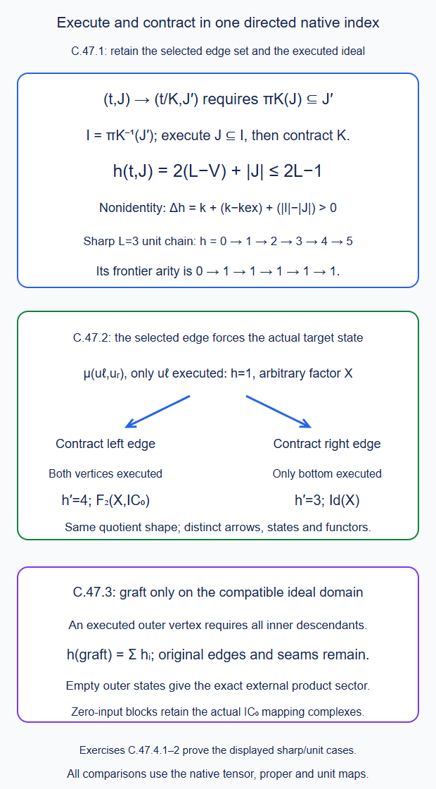
Theorem C.47.1.1 proves the joint category, terminal corolla and sharp height bound. Theorem C.47.2.1 gives its actual enhanced partial-forest diagram on arbitrary frontier inputs. Theorem C.47.3.1 proves grafting on its exact compatible ideal domain. Exercises C.47.4.1–C.47.4.2 compute the nullary sharp chain and the two different unit contractions shown here. The native maps and input profiles were proved in C.44.1.1–C.44.3.1. Editable SVG source.

C.48. Calibrated native cells in fixed state models
C.48.1. Fix the rational cohomological target
Let \(\mathcal G_{\mathbf Q}\) be the actual rational IC generator category, with its finite additive envelope. Define \(H_{\mathbf Q}\) to have those generator labels, mapping spaces \[ H_{\mathbf Q}(P,Q) =\bigoplus_a H^a\operatorname{RHom}_{\mathcal G_{\mathbf Q}}(P,Q) \tag{C.48.1} \] with their original cohomological grading, zero differential and the actual Yoneda composition. Units are the original scalar identities. In positive degree this is a genuinely rational graded space; no basis of an extension-field vector space has been descended.
For every selected finite convolution tuple choose its actual finite semisimple IC decomposition over \(\mathbf Q\), including the degree-zero isomorphism and its inverse. Such a decomposition exists by the proved rational Satake heart. Carry those choices into every larger selected corner. The actual convolution maps on mapping cohomology then define graded dg functors \[ F_r^H:H_{\mathbf Q}^{\otimes r}\longrightarrow \operatorname{Add}(H_{\mathbf Q}),\qquad r\ge0. \tag{C.48.2} \] They use the fixed decompositions on objects and conjugate the original mapping-cohomology action by those exact object isomorphisms. At arity zero the object is \(IC_0\), with its full mapping spaces. The zero-input source is the coefficient field. At arity one the chosen model can be the identity. For arbitrary outputs retain finite additive matrices rather than treating an IC sum as a new simple object.
Theorem C.48.1.1. The rational graded category \(H_{\mathbf Q}\), with these ordered tensor operations, their actual cohomological associators and unit maps, is a graded monoidal dg category. The full enhanced comparison of C.29 has a representative with target \(\operatorname{Perf}(H_{\mathbf Q}\otimes E)\), whose first map on every generator mapping cohomology is the identity. It carries the entire finite native enhanced diagram of C.47, rather than just its edge functors. Its induced minimal core comparison \[ g:B\mathcal M_E\longrightarrow B(H_{\mathbf Q}\otimes E) \tag{C.48.3} \] is an actual chain coalgebra isomorphism with identity primitive component. Thus the induced pure state maps can be taken to be the literal powers \((\Omega g)^{\otimes m}\), including \(m=0\), and the canonical common input squares of C.43 and C.46 strictly commute.
Proof. Yoneda composition in mapping cohomology is associative and unital because the original enhanced composition is associative with its coherent homotopies: applying cohomology to the given homotopies gives the two required equalities. Tensor Künneth over the field identifies the cohomology of a tensor of generator mapping complexes with the tensor of their cohomologies; the split contraction proof is C.33.1. Therefore the cohomology action of each actual multilinear convolution is the displayed graded dg functor, with its graded tensor interchange signs.
The actual native associators and unit comparisons give degree-zero closed components between the chosen output objects. Their enhanced naturality gives strict graded naturality on the mapping cohomology. The pentagon and triangle are equalities on this graded category, because their original specified enhanced homotopies become equalities after passing to cohomology. Conjugating by the fixed decomposition isomorphisms retains these equalities: every intermediate isomorphism is followed by its inverse. This proves the graded monoidal dg assertion. We are constructing this graded target; we have not asserted that the original rational enhanced category is formal, or that its arbitrary natural transformation spaces have no higher homotopy.
Let \(\Phi\) be the actual full comparison of C.29.3, restricted first to IC generators and their finite additive sums. Its spectral target generator category \(S_E\) has mappings \(\operatorname{Hom}_{A,H}(A\otimes V_\lambda,A\otimes V_\mu)\), with zero differential, for \(A=\operatorname{Sym}_E(\mathfrak h[-2])\). These are the actual graded mapping spaces identified in C.21–C.22. The induced graded functor \[ L:H_{\mathbf Q}\otimes E\longrightarrow S_E \tag{C.48.4} \] is an isomorphism on mappings and identifies the chosen object labels with their corresponding spectral generators and sums. Its tensor and unit comparisons are the cohomological components of the full \(\Phi\). By the first part of the proof they are graded natural isomorphisms satisfying the strict graded pentagon and triangle. They thus make \(L\) a genuine strong monoidal dg equivalence between these zero-differential generator categories.
Relabel \(S_E\)'s selected objects by these generator labels and sums. Define \(J\) on each mapping by the inverse of \(L\)'s mapping isomorphism. It preserves composition and identities exactly because \(L\) does. For its tensor comparison take the unique preimage under the same mapping isomorphism of the inverse tensor comparison of \(L\), with the appropriate relabelled source and target. Applying the faithful \(L\) to each naturality, associativity and unit equation for \(J\) gives the already proved inverse equation for \(L\); it therefore holds before applying \(L\). This constructs the entire strong monoidal dg inverse. Both \(JL\) and \(LJ\) have their specified coherent monoidal identity comparisons. Extending through finite cones and coherent retracts gives their perfect-envelope inverses by the complete enhanced-envelope argument of A.4.
Now \(J\Phi\) is a full enhanced strong monoidal comparison into the specified rational-cohomology target extended to \(E\). Its first mapping cohomology map is \(L^{-1}L=1\). It carries every selected native operation, unit, regrouping and all the given higher cells, because it is a composite of the actual full enhanced comparison and a genuine monoidal dg functor. This is how the entire C.47 diagram is retained. No separate choice of the comparison for each edge is made. Although \(J\) is defined over \(E\), the target category and its displayed tensor operations were fixed over \(\mathbf Q\) at the start; we do not claim that \(J\)'s individual coefficients descend.
Use the fixed minimal model \(\mathcal M_E\) of the rational generator category and the zero-differential target \(H_{\mathbf Q}\otimes E\). Transport \(J\Phi\)'s whole generator functor through the actual normalized mapping contractions, exactly as in A.3.1.1 and C.38.1. Its bar map is normalized and has primitive component the identity, by the preceding calibration. It is augmented: a Taylor component on \(r\) reduced ordinary inputs, each of degree at least two, has output degree at least \(2r+1-r=r+1>0\). It cannot have a scalar output. Its consecutive-partition bar formula is a chain coalgebra map. At a fixed word its nonleading terms strictly lower primitive length, so the finite triangular inverse exists. The inverse preserves coproduct and commutes with the differential by the original identities. This is the asserted actual isomorphism \(g\).
Applying \(\Omega\) gives the strict dg isomorphism \(q=\Omega g\) of positive core replacements. Transport the given full comparison along the canonical bar-cobar equivalences, retaining their units, rather than making an unrelated choice of its power at each state. On a tensor-product state its pure map is exactly \(q^{\otimes m}\). C.43.1 proves that the actual canonical unit and shuffle maps commute strictly with this power and the input \(g^{\otimes m}\); C.46.3 proves the corresponding rectified state equations. The zero-fold map is the coefficient identity. Thus this step calibrates the full enhanced extension-field datum and its canonical pure cores. It does not yet identify that datum with a chain coalgebra point in the complete native marked raw presentation. ∎
C.48.2. Simultaneous face-compatible strict cells
Put \(U_m=U^{\otimes m}\), \(Q_m=\Omega B U_m\), and retain the canonical counit \(\epsilon_m:Q_m\to U_m\) of C.46.3. For a finite linearly ordered parameter category \([p]\), put \[ R_{n,[p]}=\Omega B(U_n\otimes k[p]). \tag{C.48.5} \] The relative coefficient category keeps the distinct parameter vertices, even when a native comparison maps two of them to the same output object. An increasing injection of parameter vertices induces the actual full-face embedding on these free cobar categories. Parallel native cells are assigned different cell labels, even when their parameter shape is the same.
Here is the precise parameter data used. For each fixed source and target frontier arity \(n,m\), take the actual finite native family of functors and enhanced comparisons in C.47 with that input and output type. Record a chosen resolved \(p\)-simplex of this family by its normalized full unital components on \(U_n\otimes k[p]\), with values in \(\operatorname{Add}(U_m)\). A mixed input is a string of actual source arrows with a nondecreasing parameter-vertex string. The component assigned to that mixed input is the corresponding component of the given native enhanced cell, transported through the one fixed input and output mapping models as in C.33.2 and C.43.2. It is not an arbitrarily selected map on that string.
To spell out why this is a unital functor, expand the native family on each such mixed string. Its boundary terms apply a source differential, compose two adjacent source arrows, compose the adjacent parameter arrows, or apply one target composition to two consecutive output blocks. These are exactly the terms in the normalized unital functor equation C.43.6. Every term keeps the same ordered source labels and parameter vertices. A parameter face simply restricts the allowed vertex labels, so applying the fixed model transport commutes with that restriction. An ordinary source identity is handled by normalization. A nonidentity parameter arrow is retained as a reduced input even when its output is a scalar identity. Thus C.43.2 gives an actual strict dg functor \[ F_\alpha^\sharp:R_{n,[p]}\longrightarrow \operatorname{Add}(U_m) \tag{C.48.6} \] for the entire supplied cell, strictly compatible with its face functors. This recording uses the complete enhanced cells provided by C.47.2 and C.29.3. It does not infer any new higher cell from individual edge data.
Theorem C.48.2.1. The native \(F_\alpha^\sharp\)'s admit dg lifts \[ \widetilde F_\alpha:R_{n,[p]}\longrightarrow \operatorname{Add}(Q_m),\qquad \epsilon_m\widetilde F_\alpha=F_\alpha^\sharp, \tag{C.48.7} \] with all face restrictions retained exactly. Given compatible previously chosen lifts on a collection of faces, one can retain those same lifts. The construction uses one \(Q_m\) at each state arity, includes zero inputs and scalar outputs, and needs no iterated strictification of its own target. It is compatible along a chosen countable increasing family of finite corners, retaining all earlier assigned generator images.
Proof. The counit \(\epsilon_m\) is surjective and a quasi-isomorphism on mappings by C.46.3. Its mapping kernels have split contractions, as in C.45.1. The source \(R_{n,[p]}\) is a free cobar. Filter its free generator complex by the number of original bar letters. The length-preserving part is the original unary differential. Binary source composition reduces that length, and a proper coproduct splits it into products of generators at smaller individual lengths. These are precisely the nonminimal hypotheses of C.46.2. The parameter arrows have degree zero before suspension; this does not invalidate the original-length induction. The finite parameter height bounds their number on a composable input.
At parameter dimension zero apply C.46.2 to choose the lift. Suppose all proper faces of a cell have already been lifted. Each face is the free subcategory generated by the bar words whose parameter vertices lie in that face. Its generator subcomplex is differential-stable: the unary differential retains the vertices; merging adjacent input arrows can only remove vertices; each proper coproduct piece has vertices from the original string. Thus the union of these face generator subcomplexes is differential-stable too. Their given lifts agree on overlaps by the preceding dimension induction. They therefore prescribe one well-defined lift on the free subcategory generated by their union. There can be products mixing generators from different faces; those products are assigned multiplicatively in this free subcategory, so no extra compatibility is assumed for them.
Apply the relative form of C.46.2 on each remaining generator complex. Its defect vanishes on the prescribed subcomplex and is a closed map out of the quotient generator complex into the contracted mapping kernel. The postcomposition kernel homotopy corrects it while staying zero on that subcomplex. This gives the lift of the whole cell with all prescribed faces unchanged. Induction on cell dimension proves the assertion for the entire finite family. On a countable increasing family, choose the same source generator lifts once as they first occur, include their finitely many target images in later target corners, and extend relatively. Every finite input receives its value at a finite stage.
At \(n=0\) the source still retains its parameter category; at \(m=0\) the counit is the identity of the coefficient category, so there is nothing to lift. A functor creating a unit has \(m=1\), and its target has the full \(IC_0\) mappings. Source scalar identities and any explicitly prescribed constant-cell generator images are kept in the relative subcomplex. There is no assumption that a nonidentity index arrow maps to a reduced target arrow. In particular the scalar outputs discussed in C.43.2 are retained in this free unital dg lift. This proves all the asserted cases. ∎
C.48.3. Retain both endpoint systems in the full prisms
Over \(E\), identify the target positive cores using C.48.1's actual strict isomorphism \(q_m=(\Omega g)^{\otimes m}\). Its canonical state isomorphism is \(\widehat q_m=\Omega B(q_m)\). The counit square \(\epsilon'_m\widehat q_m=q_m\epsilon_m\) is strict by C.46.3. The corresponding parameter-input square is strict under \(\Omega B(q_n\otimes1_{k[p]})\), by the canonical bar construction.
The calibrated enhanced comparison supplies a full comparison prism for every native cell and its faces, with the chosen \(q_n,q_m\) on the pure input and output models. To record a prism one may use the ordered product \([p]\times[1]\). Its chains are its finite standard simplex subdivision. On each such simplex use the actual enhanced comparison components, with their original face restrictions; this is the mixed-input construction of C.48.2 applied to the supplied full comparison. Its two ends are the original two native cell functors, after the displayed strict core identifications. The comparison prism includes its higher components; it is not formed from unrelated one-cross maps.
Theorem C.48.3.1. Given the two rational systems of native cell lifts chosen in C.48.2, their extension-field comparison prisms have lifts to the canonical \(Q_m\) state targets which retain both endpoint systems and every common prism face exactly. Each lifted prism projects under \(\epsilon_m\) to its supplied actual comparison. This realizes the calibrated comparison as one face-compatible family in fixed canonical state models.
Proof. Identify the target model at one prism end with the other by \(\widehat q_m\), and the source by the displayed canonical input map. The strict counit square shows that the prescribed endpoint lifts project to the correct endpoint functors. At dimension zero a prism has its two endpoint subcategories already specified. The mixed-input graph uses the full target mapping space, so its connecting parameter arrow can have the actual unit or other scalar output. Apply the relative lifting proof of C.48.2 to extend the endpoint lifts across that prism.
For higher-dimensional native cells, prescribe the two endpoint cells and the already lifted lower-dimensional comparison faces. They agree on intersections: endpoint intersections were fixed by C.48.2, and the remaining intersections are lower-dimensional prism faces already assigned in this induction. In the standard chain subdivision of \([p]\times[1]\), add its top simplices one at a time. Their overlaps and the already assigned boundary are unions of full faces, hence are differential-stable free generator subcomplexes by the explicit argument in C.48.2. The same relative generator-complex lift extends over each new simplex. Its kernel homotopy is zero on the prescribed overlap. This proves compatibility without changing either endpoint system.
Induction over parameter dimension and the finite simplex subdivision constructs the whole prism family. For countably many selected cells, choose the same nested finite-stage construction as before. No averaging over independently selected cells is used, and every lift still projects exactly to its supplied entire prism. The canonical input squares then pull this family to the literal common cores \(C^{\otimes n}\) and their actual index factors, with the single core coordinate \(g\). This proves the statement. It does not by itself prove that the family is a point satisfying all tensor-product and grafting equations in a chosen finite coordinate group; those marked operations and their full domains are still to be given. ∎
C.48.4. Solved exercises
Exercise C.48.4.1 (intermediate). Take the graded rational algebra \(H=\mathbf Q[x]/(x^3)\), with \(|x|=2\), and \(E=\mathbf Q(\sqrt2)\). A graded comparison to an \(E\)-algebra model acts by \(x\mapsto\sqrt2x\). Calibrate it against the original rational target, check the tensor multiplication map, and identify exactly which data have been defined over \(\mathbf Q\).
Solution. On the ordered basis \(1,x,x^2\), its matrix and inverse are \[ L=\operatorname{diag}(1,\sqrt2,2),\qquad J=\operatorname{diag}(1,1/\sqrt2,1/2). \tag{C.48.EX1} \] If \(\mu:H\otimes H\to H\) is multiplication, then \(L\mu=\mu(L\otimes L)\): on \(x^a\otimes x^b\) with \(a+b<3\), both sides give \((\sqrt2)^{a+b}x^{a+b}\), and for \(a+b\ge3\) both are zero. Thus \(J\mu(L\otimes L)=\mu\) and \(JL=1\). The category of rational graded mappings, its product and unit were fixed over \(\mathbf Q\) before this calibration. The matrices \(J,L\) here have coefficients in \(E\), and their individual entries have not been descended to \(\mathbf Q\). The calibrated first cohomology map is exactly the identity on the already rational target. This is the distinction used in Theorem C.48.1.1.
Exercise C.48.4.2 (advanced). Let a source generator complex have elements \(w_0,u\) in degree two and \(w_1,v\) in degree three, with \(dw_0=w_1\), \(du=w_1+v\), and all other differentials zero. The subcomplex spanned by \(w_0,w_1\) is an already fixed face. The target surjection has these quotient generators and a square-zero kernel \(x,y\) in degrees two and three, with \(dx=y\). Let a provisional lift agree with the quotient generator names except that \(u\) is sent to \(u+x\). Correct it while keeping the fixed face, and explain how this applies to two adjacent simplices in a comparison prism.
Solution. The provisional lift has defect zero on \(w_0,w_1,v\), while on \(u\) it is \[ o(u)=d(u+x)-(w_1+v)=y. \tag{C.48.EX2} \] This defect vanishes on the face, belongs to the kernel and is closed in the Hom complex with the whole source differential. With \(h(y)=x\), subtracting \(h o\) sends \(u\) back to \(u\) and retains the other images. The corrected lift is a chain map and has the same quotient projection. It leaves the whole face unchanged even though the incoming unary differential \(du\) meets that face through \(w_1\).
In \([1]\times[1]\), the two standard maximal simplices are \[ (0,0)<(1,0)<(1,1),\qquad (0,0)<(0,1)<(1,1). \tag{C.48.EX3} \] Their intersection is the full diagonal face \((0,0)<(1,1)\). On either simplex the bar generators belonging to that face form a differential-stable subcomplex, since differentials and adjacent merges cannot add a new parameter vertex. Lift the first simplex with its prescribed boundary. Lift the second relative to its boundary and that same diagonal face. The relative correction is zero on this overlap, just as in the generator calculation, so the two functors agree there exactly. Arbitrary independent lifts on both triangles would not establish that agreement. Neither construction forces additional tensor/grafting equations unless those actual marked operations are also supplied.
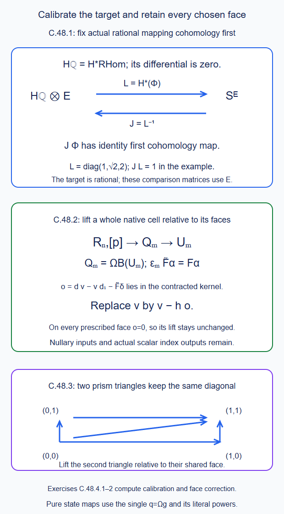
Theorem C.48.1.1 proves the calibrated identity leading map and canonical pure state powers. Theorem C.48.2.1 lifts the full supplied native cells, keeping their faces. Theorem C.48.3.1 lifts their entire comparison prisms while retaining both endpoint systems. Exercises C.48.4.1–C.48.4.2 compute the nonrational calibration and the unary correction on a shared face. The input and kernel constructions were proved in C.43.2.1, C.45.2.1 and C.46.2.1–C.46.3.1. Editable SVG source.

C.49. Native indexed prisms and invariant marked domains
C.49.1. Nonnegative mapping-degree windows
Take a finite selected directed path system. Its unindexed pure cores are literal tensor powers of \(C=B\mathcal M\), whose reduced letters have strictly positive suspended degree. Parameter cores are relative bars \(D_I=B(kI)\) of finite directed index categories. A nonidentity parameter letter has suspended degree minus one. Only finitely many strictly directed index steps can occur on a path in this selected system. Distinct parallel index arrows retain their separate labels. Each cross central complex is nonnegative and degreewise finite at the retained finite label corner; in the minimal model it is actual represented mapping cohomology, including its degree-zero maps. The number of cross letters on a path is bounded by its finite directed level range.
For a homogeneous labelled path term \(w\), let \(p(w)\) be its number of parameter-bar letters and \(r(w)\) its number of cross letters. Define \[ P(w)=\sum_{\text{positive core factors }c}|c| +\sum_{\text{central factors }m}|m| =|w|+p(w)+r(w). \tag{C.49.1} \] Here a cross letter is \(sm\) of degree \(|m|-1\). The positive core factor degree is already its bar degree. Thus \(P\) is nonnegative, even though the total cochain degree \(|w|\) need not be. Parameter heights serve only to bound the number \(p\); they are not included in this filtration and need not be renumbered under a face inclusion.
Theorem C.49.1.1. On a selected finite system, the subspace \(P\le D\) is finite-dimensional and preserved by every degree-zero common-core path coalgebra coordinate which retains the endpoint and string labels, is over \(g^{\otimes n}\otimes1_{D_I}\) on each indexed pure core, and has identity bare central leading maps. Such coordinates and their inverses never increase \(P\). Their full differential intertwining equations on \(P\le D-1\) use outputs only through \(P\le D\). Full parameter faces preserve \(P\) exactly, including faces that skip an intermediate vertex.
Proof. The number of positive core letters is at most \(D\), and each central degree is at most \(D\). Their fixed-degree spaces are finite on the finite retained label pools. The cross count has a finite directed bound \(R\). Each of the at most \(R+1\) surrounding core runs has a finite index-height bound, so the total parameter count is bounded, for example by \((R+1)H\) when every selected index height is at most \(H\). There are finitely many index strings and coefficient labels at this stage. Hence only finitely many basis terms satisfy \(P\le D\).
Use the full consecutive-cut reconstruction of C.40.1 for a path coordinate. A term in its output partitions the input cross string into consecutive nonempty blocks. Each block produces one cross central output. Consequently the output cross count \(r'\) is at most the input count \(r\). Outside and intermediate indexed core runs are obtained by cutting the input runs and applying their prescribed pure-core maps. Those maps apply the common \(g\) to the positive factors and the identity to each \(D_I\). They create no parameter letters. A central Taylor operation consumes its entire selected block of surrounding input runs and emits a bare central letter, hence emits no new parameter run. Thus \(p'\le p\) too. These assertions include a cut immediately beside an empty run: its coaugmentation has no parameter letters.
Every such output term has total degree \(|w|\). Therefore \[ P(w')=|w|+p'+r'\le |w|+p+r=P(w). \tag{C.49.2} \] No sign affects this degree equation. A pure core coordinate likewise retains its positive bar degree and exactly retains its parameter letters. This proves preservation of the whole window, with its complete outside coactions.
The finite triangular inverse retains the same prescribed pure cores and bare central leading maps, by C.40.3 and C.42.3. Its central nonleading terms also partition crosses and consume surrounding runs, so the same two count inequalities prove it never increases \(P\). This does not assume invertibility of an arbitrary chain projection from transfer.
The actual path differential has its full core differentials, one-cross module terms and operations merging several crosses. A core \(C\) differential has degree one and no parameter or cross count change. A pure index bar differential composes two adjacent index arrows, reducing \(p\) by one. A module or several-cross Taylor operation consumes its selected parameter inputs, outputs one bare cross, and retains all outside runs. It therefore never increases \(p\) or \(r\). Every output term has total degree \(|w|+1\), giving \[ P(dw\text{ term})\le P(w)+1. \tag{C.49.3} \] Thus applying a coordinate before or after a differential to an input in \(P\le D-1\) uses only the retained top window \(P\le D\). It is unnecessary to impose a truncated top-row differential equation whose output has been discarded.
A full face embedding includes a subset of parameter vertices and sends each nonidentity source arrow to that same nonidentity ambient arrow. It retains its number of bar letters, even when a face skips a vertex: a direct arrow over the skipped vertex is still one indexed bar letter. It leaves the positive factors and central mapping degree unchanged, so preserves \(P\) exactly. Fixed cell representatives restrict to those faces by C.48.2, and their assigned cohomology contractions can be chosen once on their identical central mapping blocks. The module perturbation sums in C.45.2 then restrict to those same faces, since every Taylor term retains its index labels. Thus these are the actual face restrictions on the finite windows. ∎
C.49.2. Exact tensor and grafting equation domains
Theorem C.49.2.1. In the shifted product module of C.41.2, \(P\) is the sum of the factor \(P\)'s. The actual core shuffle, noncollapsing native index graft, face restrictions and coefficient coaugmentation insertions do not increase that sum. A central path operation merging \(r\ge2\) crosses and consuming \(q\) parameter letters has output \(P\) equal to input \(P+2-r-q\), hence never larger than the input. This supplies finite operation domains for these actual maps on the compatible native grafting domains of C.47.3.
Proof. Undo each cross suspension by \(K(Z)=Z[-1]\), take the ordinary tensor of the modules, and restore one total cross suspension, as in C.41.4–C.41.6. The unsuspended central output is the tensor of the unsuspended central factors, with degree their sum. Positive surrounding core degrees add too. Parameter shuffle interleavings retain the total number of parameter letters. It follows directly from the definition that \(P_{\rm product}=\sum P_i\), with no correction depending on the number of tensor factors.
The positive core shuffle preserves total cochain degree, and the index shuffle preserves the number of its suspended index letters. The graft functors of C.47.3 are noncollapsing on their actual compatible full subcategory, so their bar maps retain every nonidentity index letter. Neither map creates a new central degree. Their outputs thus lie in the sum window. A coaugmentation insertion has degree zero and creates no bar letter or cross mapping degree, so it contributes zero to \(P\). Faces were checked in C.49.1.
For a merging path Taylor operation, the total bar degree increases by one, the cross count changes from \(r\) to one, and the selected \(q\) parameter inputs disappear into its bare central output. Its outside core runs retain their counts. Therefore \[ P_{\rm out}-P_{\rm in} =1+(1-r)-q=2-r-q\le0. \tag{C.49.4} \] This applies to the full higher operation, not only to binary represented evaluation. It does not erase the actual Taylor coefficients: they must still be supplied by the native cell/path construction. It proves their finite domain bound when those coefficients are present.
For a product mark impose its equation on every tuple of factor windows \(P_i\le D_i\) with \(\sum_iD_i\le D\), retaining the full tensor domain and the target sum window. Bilinearity and decomposition into homogeneous \(P\)-pieces show that the union of these domain pieces spans every tensor input of sum at most \(D\). For a graft mark, restrict this domain to C.47.3's compatible index tuples before applying the actual noncollapsing bar graft. A differential comparison uses the same domain with sum at most \(D-1\), since its output can raise \(P\) by one. These are complete domains of the stated maps; no incompatible outer/inner unit state is inserted and no output above the retained top window is silently deleted. ∎
C.49.3. The actual finite marked coordinate groups
Theorem C.49.3.1. For a finite selected face/path/product system whose full actual operation maps have been provided, impose common-core coalgebra and bicomodule equations, fixed leading entries, all face restrictions and covariance of its provided product/graft maps on the domains of C.49.1–C.49.2. These equations define a reduced closed subgroup of the finite unipotent coordinate group. Composition, inverse and smaller full-window restrictions are the actual coordinate operations. Given two sets of full differentials and actual marked maps on those frames, their nonempty simultaneous intertwining scheme is a torsor under the target stabilizer. Nonemptiness is an additional assertion to be proved using the whole calibrated native comparison, not an assumption supplied by this proposition.
Proof. Order each finite cofree-path basis by total primitive length, retaining the endpoint, string, parameter and mapping labels. C.40.3's iterated-cut injection proves that a coordinate with identity primitive and bare cross leading maps is unitriangular. C.49.1 proves its action and its finite inverse stay inside \(P\le D\). On every pure state the prescribed coordinate is the true tensor power \(g^{\otimes n}\), and on a parameter factor it is the identity. These restrictions are preserved by composition and inverse, since \(h^{\otimes n}g^{\otimes n}=(hg)^{\otimes n}\).
The coalgebra equations, prescribed leading entries and face restrictions are finite polynomial matrix equations. Each provided degree-zero operation map has its complete finite domain from C.49.2, so its covariance equation is a finite polynomial as well. Applying first one coordinate and then another preserves that domain and their tensor sum window by C.49.1. Substitution therefore proves covariance for their product. Substitution by their inverses, which preserve the same domains, proves it for the inverse. The face equations have the same substitution argument. The equations thus cut out a closed subgroup of the finite unitriangular matrix group; taking its reduced structure over characteristic zero is the convention used in C.30.3. This proves the group assertion without defining a product by maps that would insert an extra transferred \(IP\).
For differential equations use only inputs through \(D-1\), with outputs through \(D\), as proved in C.49.1. A quotient of two simultaneous solutions retains all coordinate restrictions and commutes with the target differentials and target marks on exactly those full domains, by substitution with their finite inverses. Conversely the target stabilizer sends a solution to a solution on those same domains. With a chosen solution these two constructions are inverse morphisms of the reduced affine schemes; their formulas are matrix product and finite unitriangular inverse. This is the torsor assertion.
Smaller windows are preserved by C.49.1; smaller full endpoint/string corners use only the original cuts and intermediate labels. A smaller full face family uses the identical parameter letters and central mapping blocks, as checked there. The operations themselves restrict with their whole domains by C.49.2. Hence composition, inverse and the defining equations all restrict to the actual smaller system. The conclusion remains conditional on the supplied entire native operation presentation and its simultaneous point; no family of independent edge comparisons is substituted for either of them. ∎
C.49.4. Actual face-compatible comparison coordinates
Write \(C=B\mathcal M\), \(A_m=C^{\otimes m}\), \(U_m=(\Omega C)^{\otimes m}\), \(Q_m=\Omega B U_m\). The actual native cell representatives of C.48 are \[ \widetilde F_\alpha:R_{n,I}\longrightarrow \operatorname{Add}(Q_m),\qquad R_{n,I}=\Omega B(U_n\otimes kI), \tag{C.49.5} \] with the finite directed parameter category \(I\) retained. For a simplex one may take \(I=[p]\); the full prism uses its standard subdivided \([p]\times[1]\) parameter. Its cell and face labels are never erased.
The canonical target and input coalgebra maps are \[ \ell_m=\eta_{B U_m}\psi_m:A_m\longrightarrow BQ_m, \qquad a_{n,I}=\eta_{B(U_n\otimes kI)}\psi_{n,I}: A_n\otimes D_I\longrightarrow BR_{n,I}. \tag{C.49.6} \] These are exactly the maps of C.43.1 and C.46.3; both strictly commute with the indicated tensor powers of one core map. For a represented cell graph put \[ M_\alpha(y,x,i)= \operatorname{Hom}_{Q_m}(\widetilde F_{\alpha,i}x,y), \qquad Z_\alpha=A_m\otimes sM_\alpha\otimes(A_n\otimes D_I), \tag{C.49.7} \] with its full pulled-back graph differential, not merely its central cohomology. The full graph construction is C.43.2, with target \(Q_m\). The target is augmented and positive, as required there. The maps \(a,\ell\) retain the genuine scalar outputs of the cell functor in its right module actions. A parameter face is a genuine embedding of these cofree modules.
For a fixed target object and source parameter vertex, the central complex \(M_\alpha\) depends only on the actual vertex functor and its fixed object image. It is the identical central complex wherever that vertex appears as a face of a larger cell. Its mappings are nonnegative and degreewise finite at a finite corner, since \(Q_m\) is a positive core and its images are finite perverse IC sums. Its cohomology is the original nonnegative even represented IC mapping cohomology, by C.33.1 and graph recovery. Choose its coefficient-linear central contraction once on each such actual block, retaining it at every occurrence.
The full supplied inverse prism gives the following canonical comparison.
Let the calibrated core map over \(E\) be \(g:C_E\to C'_E\), as in C.48.1. Its target state map is \(\widehat q_m=\Omega B((\Omega g)^{\otimes m})\); its parameter input map is \(\Omega B((\Omega g)^{\otimes n}\otimes1_{kI})\). The full comparison prism of C.48.3 gives the enhanced comparison of the native functor families along precisely these maps. Use its supplied coherent inverse, with direction \[ \beta_\alpha: \widetilde F'_\alpha\,\Omega B((\Omega g)^{\otimes n}\otimes1) \ \Longrightarrow\ \widehat q_m\,\widetilde F_\alpha. \tag{C.49.8} \] The inverse exists as part of C.29's actual enhanced equivalence and its coherent inverse, transported and lifted as in C.48. It is not obtained by formally reversing the interval coalgebra of C.36.
Theorem C.49.4.1. There are actual chain bicomodule comparison maps \[ T_\alpha^{\rm raw}:Z_{\alpha,E}\longrightarrow Z'_{\alpha,E} \tag{C.49.9} \] over \(g^{\otimes m}\) on the left and \(g^{\otimes n}\otimes1_{D_I}\) on the right, simultaneously compatible with all parameter faces. Transfer the full modules using the fixed central contractions and C.45.2's consumed-letter perturbation. Their minimal-central comparisons \(T_\alpha=P'_\alpha T_\alpha^{\rm raw}I_\alpha\) are actual bicomodule isomorphisms with identity bare central component. Together with the single \(g\), they give an actual extension-field point of every finite face/module/differential coordinate system of this family.
Proof. On a bare represented mapping \(m:\widetilde F_{\alpha,i}x\to y\), the map is the actual composition \[ m\longmapsto \widehat q_m(m)\,\beta_{\alpha,x,i}. \tag{C.49.10} \] This has the required type \(\widetilde F'_{\alpha,i}(q_nx)\to\widehat q_m y\). For the higher input Taylor maps use the complete source-bar components of the given natural transformation \(\beta_\alpha\), followed by that same represented target composition. More explicitly, in the ordinary unsuspended cofree module the central Taylor map on a source bar word is obtained by applying that component of \(\beta\) and composing it after the transformed represented arrow. Expand any functor component on the source word into its consecutive nonempty blocks. Apply the target composition to those outputs, the transformation component and the represented arrow. These are the consecutive-partition evaluation formulas of C.33.2, with their tensor signs fixed by moving the homogeneous component maps past their preceding suspended inputs. The strict state functor \(\widehat q_m\) handles the target core action. Restore the one cross suspension by the exact identification C.41.6.
Reconstruct the entire bicomodule map from this central Taylor map by C.39.5's outside coactions, using \(g^{\otimes m}\) and \(g^{\otimes n}\otimes1\) in the two outside slots. The strict natural squares of \(\ell_m,a_{n,I}\) show that these are exactly its input and output core maps, without choosing a naturality property for a contraction inclusion. Coassociativity gives both coaction equations.
The chain equation can be checked at its central Taylor projection. The terms applying a source differential or source composition, or splitting a source word into consecutive functor/transformation blocks, are the normalized natural-transformation equation of the supplied whole prism. Its remaining target-composition terms cancel with the represented left and right module actions. A target unary term is the differential of the displayed composed represented map; its Leibniz signs are exactly the two adjacent unary terms. These exhaust the central terms. Thus that projection is zero. The two coaction equations reconstruct every other term, giving the full chain equation. This is the natural-transformation part of the complete graph proof C.33.2, used on the actual supplied \(\beta\) rather than on separately invented homotopies.
The native comparison prisms and their inverse families agree on all faces by C.48.3, and the evaluation formulas use only their original ordered labels and the two canonical core maps. Their restrictions therefore give the identical \(T^{\rm raw}\) on every face. This proves the simultaneous raw assertion.
Now extend each previously fixed central contraction to the two cofree cores and perform the full module perturbation of C.41.2 and C.45.2. Its correction terms consume a nonempty surrounding core word, so all sums are finite wordwise even with the finite negative-degree index bars. On a full face the central contraction is the same chosen contraction, and the actual module action is the restriction of the larger cell's action. Every term of the perturbation therefore restricts to that same face term. The full inclusions \(I_\alpha\), projections \(P_\alpha\) and transferred module differentials are consequently face-compatible. Their composite \(P'_\alpha T^{\rm raw}_\alpha I_\alpha\) is a chain bicomodule map with the stated core maps.
Its bare central component is the cohomology map of the displayed represented composition. C.48.1 calibrates the full strong comparison against its actual rational cohomological tensor diagram. Hence this cohomology map, including its object/tensor comparison, is the identity in the fixed represented cohomology frames. This uses that calibrated whole diagram, not just an isomorphism of dimensions. Thus the bare central component of \(T_\alpha\) is exactly the identity.
Factor out its specified invertible core maps. Every nonleading central component consumes at least one surrounding original bar letter. The difference from the identity consequently lowers surrounding word length; the finite recursive inverse of C.41.2 exists on every word. It preserves both coactions, the chain equation and all face restrictions by the original identities. No transferred projection is declared to be an inverse. This proves the actual isomorphism assertion.
Finally use the nonnegative \(P\)-windows in C.49.1–C.49.3. Every coordinate and its inverse preserves these windows. The full chain equation is imposed on inputs through \(D-1\), retaining outputs through \(D\); faces preserve \(P\) exactly. All these equations hold for the actual just-constructed maps before truncation, so their finite restrictions are simultaneous extension-field points. This proves the claimed nonemptiness for the face/module/differential system. The additional whole nested-path, tensor and grafting marks have not been imposed in this proposition, and its point must not be substituted for their simultaneous marked point. ∎
C.49.5. Keep the parameter tag in the target
Let \(I\) be a finite directed parameter category, with no nonidentity endomorphisms and finitely many arrows. Its relative coefficient category has the distinct object identities. A native resolved cell has a normalized unital enhanced functor family with fixed input type \(U_n\), output type \(U_m\), and parameter \(I\), as recorded in C.48. Its full mixed-input components define a normalized unital \(A_\infty\) functor \(F:U_n\otimes kI\to\operatorname{Add}(U_m)\).
Retain the parameter vertex in each output object. On a mixed composable word with parameter arrows \(a_1:i_0\to i_1,\ldots,a_r:i_{r-1}\to i_r\), tag its component by their actual composite: \[ F_I(\text{mixed word}) =F(\text{mixed word})\otimes(a_r\cdots a_1). \tag{C.49.11} \] For parallel arrows the composite is that of the actual ordered arrows, not a replacement determined only by endpoints. This formula is extended linearly on each specified labelled source-word block.
Theorem C.49.5.1. The tagged components give a normalized unital \(A_\infty\) functor \[ F_I:U_n\otimes kI\longrightarrow \operatorname{Add}(U_m\otimes kI) \tag{C.49.12} \] over the identity on parameter objects and arrows. It preserves the relative augmentation. Consequently its genuine bar map and canonical strict representative are \[ \begin{aligned} B F_I &:B(U_n\otimes kI)\longrightarrow B(U_m\otimes kI),\\ \Omega B F_I &:Q_{n,I}\longrightarrow\operatorname{Add}(Q_{m,I}),\\ Q_{r,I}&=\Omega B(U_r\otimes kI). \end{aligned} \tag{C.49.13} \] They retain the entire cell, its faces and all actual scalar outputs. They compose strictly when the underlying tagged functors are composed, and need no independent lift through a target counit.
Proof. In the full functor equation on a mixed word, every term has the same total ordered parameter composite. Applying a source composition replaces two adjacent arrows by that composite, leaving the total unchanged. Composing two target blocks multiplies their two tags to that same arrow. The parameter category is concentrated in degree zero, so adding a tag introduces no new Koszul sign. The original entire mixed-input functor equation from C.48 thus proves the tagged equation term by term. Ordinary identity normalization and the object-unit maps are retained as well. This proves the normalized unital functor assertion, including every higher component, rather than just a strict functor on its first components.
Consider a reduced input word. If one of its parameter arrows is nonidentity, its total parameter composite is nonidentity: height strictly increases at that step and never decreases thereafter. Its output, even with ordinary component a scalar identity, is therefore in the reduced mapping space of the tagged target. If every parameter arrow is an identity, every reduced ordinary input has degree at least two. On \(r\ge1\) such inputs the functor component has ordinary output degree at least \(2r+1-r=r+1>0\). It cannot have a scalar output. These two cases exhaust the reduced inputs, proving preservation of the relative augmentation. Finite additive multiplicity matrices use the full relative matrix coefficient category of C.38.1 and the same degree argument.
The consecutive-partition bar formula is now a legitimate reduced bar map: every component just proved reduced can be used as a target bar letter. Its coproduct equation follows by cutting a consecutive partition; its chain equation is exactly the tagged full functor equation. Thus \(BF_I\) is an actual chain coalgebra map, with no scalar component thrown away. The cobar formula of C.38.1 sends its free generator \(tc\) to \(t(BF_I(c))\), extended multiplicatively. The chain and coproduct equations prove the two terms of the dg equation, respectively. This gives the displayed canonical strict representative.
Composition of the bar maps is the original full functor composition by the same consecutive-block formula. Applying \(\Omega\) makes that composition strictly equal on free generators and hence on all morphisms. Face inclusions restrict the original parameter-word labels and commute with their actual compositions, so restrict these same formulas. A nonidentity index arrow with ordinary output one is retained as the reduced letter \(1\otimes a\), rather than sent to zero. This is exactly why the tagged target avoids the loss of unit data exhibited in C.42.4 and repaired for a collapsed target in C.43.2. ∎
The phrase “over the identity on parameter arrows” means the tag of each component is the specified input composite. It does not assert that its ordinary target mapping component is one, or that the pure input \(D_I\) maps to a tensor-unit copy of \(D_I\). Actual parameter comparison matrices between different output objects remain present.
C.49.6. The whole nested common-core parameter graph
Fix a finite directed family of native execution steps, and a common finite parameter category \(I\) for a cell or subdivided comparison prism. At each state of frontier arity \(n\), use \(Q_{n,I}\). For each step use the strict tagged representative of C.49.5. Keep every composable string of steps as its own label and use their literal strict composite as its functor. For a string \(\sigma:i\to j\), put \[ M_\sigma(y,x)=\operatorname{Hom}_{Q_{n_j,I}}(F_\sigma x,y). \tag{C.49.14} \] For composable strings \(\sigma:i\to j\), \(\tau:j\to k\), the cross product is \[ M_\tau(z,y)\otimes M_\sigma(y,x)\longrightarrow M_{\tau\sigma}(z,x),\qquad m\otimes v\longmapsto m\,F_\tau(v). \tag{C.49.15} \] All source, intermediate, target and parameter labels are retained.
Theorem C.49.6.1. These data give one actual directed dg graph for the whole nested parameter family. They include all several-cross evaluation products and their dg identities, are strictly compatible with the parameter faces, and retain the original native enhanced functors and their literal composites under the canonical bar-cobar equivalences. Thus a supplied entire native comparison prism gives its entire nested graph, rather than a set of independent one-cross graphs. The canonical common-core pullback has pure cores \(C^{\otimes n}\otimes D_I\), retains the entire graph differential and restricts to the same parameter faces. Its cross central cohomology is nonnegative, even and degreewise finite at finite corners.
Proof. The edge representatives are strict dg functors by C.49.5. The two possible products of three cross mappings are consequently \[ (mF_\tau(v))F_{\tau\sigma}(w) =mF_\tau(vF_\sigma(w)), \tag{C.49.16} \] after inserting the appropriate three consecutive string labels and their strict composite. Both sides are target composition of the same three transformed maps. The equality follows from strict functoriality and target associativity. Inserting an intermediate pure-core arrow is checked by the same equality; pure-core compositions are the original dg ones. These are every possible composable triple. Units act by the represented identities. The dg Leibniz rule is target Leibniz and the strict dg equation for the applied functor. This proves the entire dg graph, with its genuine two-cross and longer products, as in the full proof C.38.1.
The canonical comparison from an augmented unital category to its bar-cobar replacement has the full consecutive-block formula. By its generator formula it commutes with the augmented tagged functor maps. Its finite-height quasi-equivalence and recovery proof is C.42.2 together with C.43.2; all parameter arrows remain directed and their possible bar length is bounded. Thus each edge functor represents the given entire native parameter cell. Naturality and strict composition of the canonical representatives recover each literal nested composite and the displayed represented evaluation product. No separate formality of a string corner has been assumed.
Every parameter face restricts the original tagged functor and its canonical strictification. It therefore restricts each string functor, its represented mapping complex and its evaluation product exactly. Applying this to the full prism rather than merely to its boundary gives one nested dg graph whose two endpoints are the corresponding nested endpoint graphs and whose other faces are their actual comparison faces. This is an actual graph construction over the supplied prism.
For the asserted common-core model take the full relative bar of this actual dg graph. On the pure state core use the actual map \[ f_{n,I}=\eta_{B(U_n\otimes kI)}\psi_{n,I}: C^{\otimes n}\otimes D_I\longrightarrow BQ_{n,I} \tag{C.49.17} \] from C.43.1. Change every pure run simultaneously by C.40.1's explicit consecutive-cut formula. In detail, on a path retain each original central cross letter and apply \(f_{n,I}\) in every intervening core slot before its original central graph operation. Reconstruct the result by splitting the boundary core runs. Its pure differentials are the given common-core differentials. The resulting whole-path coderivation is a coderivation by that same cut formula. The comparison to the original graph bar commutes with differentials at its central projection; coderivation uniqueness proves the full equation. Its square has zero pure part and zero central projection by the original square-zero identity, and is therefore zero too. This is the full proof of C.40.1, valid with the retained central unary differential and finite index cores as in C.43.2. It does not assume the comparison map is injective. Every several-cross evaluation and higher transferred native cell action is retained in this construction.
There are no backward parameter mappings in \(Q_{n,I}\), by its endpoint labels. Its counit is a quasi-isomorphism to \(U_n\otimes kI\) by C.42.2. At a selected pair of parameter objects, its mapping cohomology is therefore the mapping cohomology in \(U_n\) tensored with the finite space of the corresponding actual index arrows. For an actual step image, the ordinary object is a finite perverse IC sum. Consequently every central cross mapping cohomology is nonnegative, even and degreewise finite by C.33.1; finite additive matrices preserve these properties. First transfer each actual cofree one-cross module using its chosen central contraction, and then transfer the several-cross terms by C.43.3. Core input words and cross counts make the respective perturbation sums finite. The resulting whole-path model retains those exact one-cross choices and has the stated central cohomology. Its canonical common-core pullback uses the same consecutive-cut formula and preserves those central spaces.
The tagged target's face mapping complexes are actual subcomplexes, so compatible central contractions need a construction. For a fixed pair of parameter endpoints use the canonical counit on mappings \(\epsilon_{n,I}:Q_{n,I}\to U_n\otimes kI\). We construct a normalized contraction with exactly this projection, compatible with every full parameter face.
Write a cobar word as nonempty blocks of original reduced \(U_n\otimes kI\)-letters, and let \(r\) be their total number. First retain the original unary differential and the differential inserting block cuts, but omit internal binary bar compositions. At \(r\ge2\) the cut contraction of C.46.3 removes the first boundary when it is present, with coefficient \((-1)^{|u_1|}\), merging the first one-letter block with its next block; it is zero when that boundary is absent. At \(r=0,1\) it is zero. Call it \(H_0\). Its cut identity and unary sign cancellation give a normalized contraction onto the scalar and one-letter complex, which is the original mapping complex of \(U_n\otimes kI\). Its inclusion \(I_0\) sends a reduced mapping to its single-letter block.
Now restore the internal binary bar-composition term \(\delta\). It strictly lowers \(r\), while \(H_0\) preserves \(r\). Thus C.35.1's perturbation formulas are finite on each word and give \[ H_\epsilon=H_0(1+\delta H_0)^{-1},\qquad I_\epsilon=I_0. \tag{C.49.18} \] The inclusion is unchanged because \(\delta I_0=0\). Every nonzero output of \(H_0\) contains a block with at least two original letters. The canonical counit kills a word containing such a block, so \(\epsilon_{n,I}H_\epsilon=0\). Also \(\epsilon_{n,I}I_0=1\). Applying the counit to the perturbed homotopy identity shows that its perturbed projection is exactly \(\epsilon_{n,I}\), not an independently selected projection. Therefore \[ dH_\epsilon+H_\epsilon d=1-I_0\epsilon_{n,I},\qquad H_\epsilon^2=H_\epsilon I_0=\epsilon_{n,I}H_\epsilon=0. \tag{C.49.19} \] This proof retains the complete original unary differential and every internal composition. It uses decreasing original length, so also applies to the degree-zero nonidentity index arrows and their negative bar degrees.
The cut homotopy keeps every original parameter vertex and arrow label; internal composition only removes intermediate vertices. Consequently \(H_0,\delta,I_0,\epsilon\) and their displayed finite formulas commute with every full parameter face inclusion. On the target \(U_n\otimes kI\), the mapping block is the original \(U_n\) mapping complex tensored with the finite space of actual index arrows. A full face retains that same arrow space between its retained endpoints. Choose its mapping-cohomology contractions once on these ordinary blocks, with the fixed finite multiplicity matrices, and tensor them with those arrow spaces. Compose them with the counit contraction by C.45.3's explicit normalized SDR composition formula. This gives the required central contractions on the actual tagged mapping complexes, compatible with all faces, although the face complexes themselves can be proper subcomplexes.
The whole one-cross perturbation and the subsequent several-cross transfer now use these actual compatible contractions. Their formulas consume only the original words and retain the parameter, endpoint and string labels. They therefore restrict to the same face maps, proving the common-core family assertion. The cross block of a literal composite at the end of a native flattening cell can also be shared with that same string block in its nested path graph: canonical bar strictification commutes exactly with that composite by C.49.5, and the just-constructed target contractions are the same on its actual common face. No independent minimal model is substituted at their intersection.
Extracting its endpoint coordinate isomorphism with prescribed product projections remains a separate transfer step, not an assertion that its individual edge maps suffice. ∎
C.49.7. Solved exercises
Exercise C.49.7.1 (advanced). Let the positive left core have one degree-one primitive letter \(c\), and let the right index bar have the degree-minus-one arrow \(a:0\to1\). The central letters \(u_i\) have unsuspended degree zero at parameter vertex \(i\). Define a central coordinate correction that consumes one \(c\) and the arrow \(a\), sending their crossed input to \(su_0\). Write its entire cofree extension on \(c^k\otimes su_1\otimes a\), find its inverse, and calculate the total degree and \(P\) before and after its nonleading term.
Solution. With deconcatenation on the left core, the full correction is \[ S(c^k\otimes su_1\otimes a) =c^{k-1}\otimes su_0\otimes1_0\quad(k\ge1), \tag{C.49.EX1} \] and it is zero on inputs with no \(a\), no \(c\), or other index endpoints. Cutting any remaining left prefix gives the same formula on the suffix, proving its left coaction equation. The right coaction of its output is that output tensored with \(1_0\); on its input, the only nonzero corrected term is the part whose whole \(a\) stays in the module. This proves its right coaction equation too. Its output has no index arrow, so \(S^2=0\), and the coordinate \(1+S\) has actual inverse \(1-S\).
The input's total degree is \(k-2\), from \(k\) positive core letters, one cross suspension and one index suspension. The nonleading output has degree \((k-1)-1=k-2\) too. Its \(P\) changes from \(k\) to \(k-1\). Thus a genuine degree-zero invertible cofree coordinate can strictly lower \(P\); it need not preserve its homogeneous pieces. Both it and its inverse nevertheless preserve each full window \(P\le D\), as required in Theorem C.49.1.1.
Exercise C.49.7.2 (intermediate). In the category \(0<1<2\), let \(a:0\to1,b:1\to2,c:0\to2\), with \(ba=c\). The collapsed ordinary functor sends each arrow to the scalar one. Describe the tagged version and check its two-arrow cobar equation. Explain why its finite negative-degree index words do not spoil the \(P\)-windows.
Solution. The tagged arrow images are \(1\otimes a,1\otimes b,1\otimes c\). Each is a nonidentity arrow between distinct parameter vertices, even though its ordinary component is one. Hence each belongs to the reduced relative target. The actual reduced bar map retains \(sa,sb,sc\) and the two-letter word \(sb|sa\); it is not the map that projects those outputs to zero.
For the generator \(w=t(sb|sa)\), the sign convention C.39.15 gives \[ d w=-t(sc)+t(sb)t(sa). \tag{C.49.EX2} \] Its tagged counit image is \(-1\otimes c+(1\otimes b)(1\otimes a)=0\), exactly the actual relation \(ba=c\). The one-letter generators have degree zero, while \(w\) has degree minus one. An index-bar word \(v\) of length \(p\) has total degree \(-p\), so its \(P=|v|+p\) is zero before adding any cross. These degree-zero \(P\)-terms remain finite because the directed index category allows at most two nonidentity arrows on a string. A full face that skips vertex1 retains the direct arrow \(c\) as one arrow, and therefore retains \(P\) exactly. This is the independent finite index bound used in Theorem C.49.1.1.
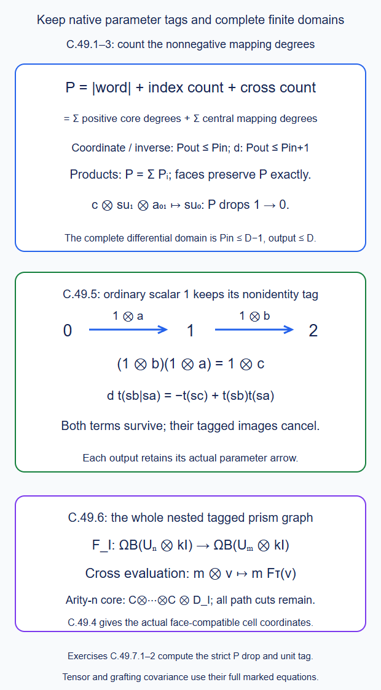
Theorems C.49.1.1–C.49.3.1 prove the invariant finite windows, complete operation domains and coordinate-group laws. Theorem C.49.4.1 constructs the actual face-compatible cell coordinates. Theorems C.49.5.1–C.49.6.1 retain the unit tags and construct the whole nested prism graph and common-core pullback. Exercises C.49.7.1–C.49.7.2 compute the strict filtration drop and tagged cobar relation. The canonical inputs and full native prism data were proved in C.43.1.1–C.43.2.1 and C.48.1.1–C.48.3.1. Editable SVG source.

C.50. Whole prism endpoint recovery with exact core powers
C.50.1. Recover every represented action together
Let \(A,B\) be unital dg categories over a field, with \(A\) augmented over its specified split coefficient identities as in the actual directed graph. Let \(M(y,x)\) be an actual \((B,A)\)-bimodule, covariant in \(y\in B\) and contravariant in \(x\in A\). All its higher actions are retained. For each selected \(x\), suppose the left \(B\)-module \(M_x\) is quasi-isomorphic to the represented module \(R_x=B(b_x,-)\). No assumption is made that an arbitrary natural transformation space is contractible. The selected representing objects here have the split nonzero coefficient-identity cycles of C.30.1, as do the actual finite IC sums.
Theorem C.50.1.1. Such data recover a unital enhanced functor \(F:A\to B\), with objects \(F(x)=b_x\), whose represented bimodule is equivalent to the original whole \(M\). The construction uses its entire right action; it does not infer a functor from independently chosen maps on the individual generator arrows.
Proof. Work in the dg category of unital \(A_\infty\) left \(B\)-modules and their normalized bar module maps. The entire right \(A\)-action of \(M\), expanded on consecutive source blocks, is a unital enhanced functor from \(A^{\rm op}\) to that module category. The coefficient of its source word is precisely the right action Taylor map on that word; the bimodule equation is exactly its functor equation. This is the same action/evaluation correspondence proved in C.33.2.
A module quasi-isomorphism can be inverted in this actual dg category. Here are the chain and bar details needed, rather than an assertion about inverses of arbitrary functors. Replace a given central quasi-isomorphism \(r:R\to N\) by the mapping-cylinder factorization \[ R\xrightarrow{i}L=R\oplus\operatorname{Cone}(1_N)[-1] \xrightarrow{p}N, \tag{C.50.1} \] where in degree \(q\) write an element as \((v,a,b)\in R^q\oplus N^{q-1}\oplus N^q\), and set \[ d_L(v,a,b)=(dv,-da-b,db),\quad i(v)=(v,0,0),\quad p(v,a,b)=r(v)+b. \tag{C.50.2} \] These are chain maps and \(p\) is graded-surjective. The retraction \(q(v,a,b)=v\) has contractible kernel: on its last two summands \(h(a,b)=(0,-a)\) gives \(dh+hd=1\) and \(h^2=0\). Both \(i\) and \(p\) are quasi-isomorphisms, so the kernel of the surjection \(p\) is acyclic and has a split contraction by C.30.1's explicit decomposition. The mapping cylinder is formed in the module category with the usual shifted action signs; its two actions and these maps are genuine module actions/maps.
On the cofree bar modules extend a central kernel homotopy by the identity on surrounding cores. Separate off the core and unary differential. Every remaining action term consumes at least one surrounding input letter. The finite-on-each-word perturbation formula of C.45.2 contracts the full cofree kernel, with all actions retained. Its fixed-projection section and homotopy therefore give inverse module maps and their actual module homotopies for the surjective factor \(p\). The explicit cylinder contraction gives them for \(i\). Their composite inverts \(r\). When the original quasi-isomorphism is already a bar module map with higher components, apply the same construction to its cofree mapping cylinder; the leading surjective factor has that same central kernel and all higher terms still consume surrounding letters. The identical perturbation proof then applies. Thus each stipulated module equivalence is an actual homotopy equivalence in this dg module category.
Transport the entire right \(A\)-action along those objectwise module homotopy equivalences. Write \(r_x:R_x\to M_x\), \(s_x:M_x\to R_x\), and retain the module homotopy \(1-r_xs_x=d h_x+h_xd\). For a reduced source word partition it into nonempty consecutive blocks. Apply the original whole right-action component to each block, insert \(h\) between consecutive outputs, and compose with \(r\) on the incoming end and \(s\) on the outgoing end. Sum over these partitions with the suspended tensor evaluation signs. This is the consecutive-word transfer formula of A.3.1.1 and C.35.1 in the dg module category. It has the correct component degree: a term with \(v\) action blocks has their total degree plus \(v-1\) homotopies of degree minus one. At each fixed source word the sum is finite. Commuting the differential through it replaces an internal \(h\) by \(1-rs\). The \(1\) terms cancel the adjacent source-action terms, and the \(rs\) terms are exactly the two target functor-composition blocks. The remaining terms are the original action functor equation. This is the full bar telescope and proves the functor equation into the existing dg category of the represented modules.
On the coefficient identities set the first component to \(1_{R_x}\) and every higher component with an identity input to zero. The source is augmented, so operations on reduced source words never produce a coefficient identity. This assignment changes none of the just-proved reduced-word equations. In a word containing an identity, its adjacent source composition cancels the corresponding target composition with the assigned true identity, and every other term is zero or the shorter-word equation. Thus the result is actually unital even when an initially chosen \(s_xr_x\) was only homotopic to one. The same partition construction gives its action equivalence to the original \(M\)-action. Here normalization at the ordinary object identities is part of the contraction choice. For clarity, the elementary Hom contraction associated with an object retract \(iq=E\) need not annihilate the identity: its inclusion sends \(1_R\) to \(E\), rather than to \(1_L\). Keep its projection fixed. Choose its chain inclusion to send the specified unit to \(1_L\), using the split coefficient-identity summand, and correct its kernel homotopy by \(H^{u}=H(1-I^{u}P)\). On the kernel of \(P\), the old \(H\) already contracts to zero and squares to zero. Hence \(dH^u+H^u d=1-I^uP\), \((H^u)^2=PH^u=H^uI^u=0\), and \(H^u(1_L)=0\). This is the fixed-projection construction proved in C.45.2. Thus the transfer really is normalized at the units. In computing it, full unital output components are retained; no reduced augmentation of the dg category of module maps is assumed. The consecutive formulas can be computed on unreduced words and then normalized, with each fixed input word using finitely many terms, as in C.43.2.
Finally this represented module subcategory recovers \(B\), not a larger category of unrelated transformations. Its mapping complex from \(R_y\) to \(R_x\) is quasi-isomorphic to \(B(b_x,b_y)\) by evaluation at the identity of \(b_y\). Yoneda precomposition is its section. The full normalized bar contraction is insertion of that identity in the incoming represented-module argument, with its graded insertion sign. Its differential pairs all other adjacent bar terms; the two unpaired terms are the original module map and Yoneda applied to its identity evaluation. This is the complete evaluation/contraction proof C.33.2, or equivalently the represented instance of the explicit normalized bar contraction in C.39.3. It retains every source word, not just the bare central map. Taking the opposite module subcategory changes this contravariant represented-module direction into the required forward direction \(x\to y\) in \(B\).
Choose its normalized contraction so that the homotopy vanishes on the Yoneda section. Transfer through it. The transferred binary operation is the original composition in \(B\), because the Yoneda section preserves composition exactly. Every higher transferred tree on pure Yoneda inputs contains a homotopy applied to such a composed section value and vanishes. Thus the recovered target is exactly the given dg \(B\). Composing the transported entire action with this actual Yoneda inverse gives \(F\). Its represented action is the given \(M\) up to the constructed module equivalence. This proves the whole-functor assertion. ∎
C.50.2. The actual whole prism endpoint comparison
Let \(\mathcal H\) be C.49.6's actual entire nested dg graph for a calibrated comparison prism. The ordinary comparison parameter is \(0<1\); other native cell parameters are retained separately. Let \(A,B\) be its complete endpoint graphs. Let \(M(y,x)=\operatorname{Hom}_{\mathcal H}(x_0,y_1)\), retaining every string grade and every several-cross action. This is an actual bimodule between those whole endpoint categories.
At each object \(x\) the parameter arrow supplies a closed degree-zero map \(e_x:x_0\to (q x)_1\). In the raw state core it is the canonical one-letter lift of the actual identity-valued parameter arrow, tagged by \(0\to1\); in finite additive images it has the corresponding fixed matrix identity. Composing with it gives \[ B(qx,y)\longrightarrow M(y,x). \tag{C.50.3} \]
Theorem C.50.2.1. These maps are quasi-isomorphisms of left \(B\)-modules. Consequently the complete calibrated native prism recovers an enhanced equivalence of its whole endpoint graphs, with the actual leading graded graph comparison. Every several-cross functor component is included. This statement does not yet assert an exactly prescribed common-core bar coordinate or exact product projection normalization. The objectwise kernel and action-transfer choices can be made compatibly with the actual finite full parameter faces and shared string corners.
Proof. On a fixed string summand the target complex is a represented mapping complex in the final indexed state. The source is its endpoint1 version. Composition with \(e_x\) uses that string's actual strict functor action on the canonical parameter arrow. Under the canonical counits to \(U_n\otimes k[1]\), and the original represented-module equivalences, it is exactly precomposition by the entire string's supplied enhanced comparison. The latter is an equivalence: it is the original full comparison of C.29, calibrated in C.48, and all nested strings use its actual composite. Precomposition by an equivalence is a quasi-isomorphism of mapping complexes. Concretely compose with the supplied coherent inverse; its unit and counit homotopies give the two chain homotopies of the mapping composites to the identity. The canonical counits and graph recovery are quasi-equivalences by C.42.2 and C.49.6, so the raw composition map is a quasi-isomorphism too.
The arrow \(e_x\) is an actual arrow in the whole dg graph. Thus postcomposition by any target graph morphism commutes with its precomposition exactly. This proves the full left-module equation, including all allowed target string summands. Its right source actions are the actual graph products of \(\mathcal H\), with their whole dg and bar identities. C.50.1.1 therefore applies to this actual whole bimodule and recovers a functor from \(A\) to \(B\). Its first cohomology map is the original calibrated graph comparison because the representing map on each summand was just identified with that comparison. This first map is an isomorphism on every endpoint/string block and is essentially surjective on the stipulated generator objects, so graph and perfect-envelope recovery give the enhanced equivalence.
Here is the compatibility argument for the choices, including the case of proper face subcomplexes. The corrected canonical counit contraction in C.49.6 commutes with all full parameter faces. The cylinder kernel for a fixed central comparison map is graded-isomorphic to the direct sum of its source and shifted target: in \(p(v,a,b)=r(v)+b=0\), eliminate \(b\) as \(-r(v)\). Each face keeps exactly the corresponding original word labels in \(v,a\). Thus face kernel intersections are the kernels of the common faces, and their graded subspace sums have the distributive word-support intersection property. All these kernel complexes are acyclic, since the comparison map on every face is the same proved quasi-isomorphism for that face.
The sum of the previously assigned proper-face kernel complexes is acyclic as well. To prove this explicitly, for two subcomplexes use \((K_1+K_2)/K_1=K_2/(K_1\cap K_2)\). A quotient of two acyclic complexes is acyclic: lift a quotient cycle, lift a primitive of its differential in the subcomplex, subtract it, and then lift a primitive of the resulting ambient cycle. Induction, using the word-support distributivity and the acyclicity of all finite intersections, proves the claim for a finite sum. The quotient of the full kernel by this sum is therefore acyclic and split contractible over the field.
Existing compatible normalized kernel contractions agree on intersections and preserve each face, so define one contraction on this sum. Extend it to the full kernel using an actual chain splitting of its contractible quotient. For completeness a graded section \(s\) with defect \(a=ds-sd\) is corrected to the chain section \(s+a h_Q\), where \(h_Q\) contracts the quotient: the Hom differential of \(a h_Q\) is \(-a\). In the resulting direct-sum decomposition extend the old contraction by the quotient contraction. The square-zero side condition and all restrictions then hold on each summand. This constructs compatible central kernel homotopies by induction over the face vertex sets, without calling different tagged face mapping complexes identical.
The cofree module perturbation and the subsequent entire-action transfer consume only the input words and retain their endpoint/string and parameter labels. The compatible central choices therefore give the same full module maps on each face. The Yoneda identity-insertion homotopy has that same restriction property. Thus the recovered whole endpoint functors and their original action equivalences can be chosen face-compatible. A nested corner exhaustion retains the assigned words and extends these same choices rather than reconstructing each finite graph independently.
The recovery never replaced the right \(A\)-action by a set of individual edge maps: that entire action was the source of the higher transferred functor components. In particular the construction includes all several-cross components required by the full endpoint functor equation. Its exact restrictions to a chosen prescribed core coordinate and prescribed product comparison are extra relative requirements, addressed in the next step rather than inferred from its invertible first cohomology map. ∎
C.50.3. Relative replacement by the exact core maps
For a dg category \(B\), define its dg path category as follows. An object is a closed degree-zero homotopy equivalence \(u:b_0\to b_1\). A degree-\(r\) map from \(u\) to \(v:c_0\to c_1\) is a triple \[ \begin{aligned} (a,b,h)\in{}&B(b_0,c_0)^r\\ &\oplus B(b_1,c_1)^r\\ &\oplus B(b_0,c_1)^{r-1}. \end{aligned} \tag{C.50.4} \] Set \[ \begin{aligned} D(a,b,h)={}&(\delta a,\delta b,\\ &-\delta h+va-bu), \end{aligned} \tag{C.50.5} \] For composable maps \((a_1,b_1,h_1)\) of degree \(r\) and \((a_2,b_2,h_2)\) of degree \(s\), set \[ \begin{aligned} &(a_2,b_2,h_2)(a_1,b_1,h_1)\\ &\quad=(a_2a_1,b_2b_1,\\ &\qquad h_2a_1+(-1)^s b_2h_1). \end{aligned} \tag{C.50.6} \] Here \(\delta\) denotes the original mapping differential. Identities are \((1,1,0)\). Both endpoint projections \(\pi_0,\pi_1\) are strict dg functors.
Theorem C.50.3.1. Let \(A\) be the actual augmented whole dg path graph and \(A_i\) its pure state subcategories. Suppose an actual enhanced endpoint comparison \(F:A\to B\) is given, together with its supplied coherent equivalences on \(A_i\) to the desired actual pure core functors \(q_i\). There is an enhanced comparison \(\widehat F:A\to B\) equivalent to \(F\), restricting exactly to every \(q_i\). The construction retains a previously assigned compatible replacement on any full face/path subfamily whose bar generator collection is differential-stable. It therefore applies successively to the native face family and its pure maps \(q_i=\Omega B((\Omega g)^{\otimes n_i}\otimes1_{kI})\). After the actual common-core pullback and module-first graph transfer, the calibrated native comparison consequently gives a face-compatible whole-path chain coalgebra isomorphism over the exact core powers \(g^{\otimes n_i}\otimes1_{D_I}\), with identity bare central maps.
Proof. The path formulas define a dg category. In the square of \(D\), the mixed terms in the third slot are \(-\delta(va-bu)+v\delta a-(\delta b)u=0\), since \(\delta u=\delta v=0\). Its composition is associative: the third slot of either threefold composition is the sum of its last homotopy times the first two maps, its middle homotopy with the sign of the final degree, and its first homotopy with the sign of the two final degrees. The two degrees add in the same order. For Leibniz, expanding the third slot gives \[ \begin{aligned} &(-\delta h_2+wa_2-b_2v)a_1\\ &\quad+(-1)^s h_2\delta a_1\\ &\quad+(-1)^{s+1}(\delta b_2)h_1\\ &\quad+b_2(-\delta h_1+va_1-b_1u), \end{aligned} \tag{C.50.7} \] where \(w\) is the third object's equivalence. These are precisely the third slots of \(D(a_2,b_2,h_2)(a_1,b_1,h_1)+(-1)^s(a_2,b_2,h_2)D(a_1,b_1,h_1)\). The first two slots are ordinary dg composition. This proves every dg identity and both endpoint functor assertions.
For any fixed choices of path objects, \(\pi_0\) is surjective on graded mapping complexes. Its kernel is the shifted cone of \[ B(b_1,c_1)\longrightarrow B(b_0,c_1),\qquad b\longmapsto bu, \tag{C.50.8} \] with the harmless displayed minus sign in the differential. This map is a homotopy equivalence: precomposition by the chosen homotopy inverse of \(u\), and precomposition by its two homotopies, give its inverse and chain homotopies. Its cone is contractible. One may also split that acyclic cone over the field by C.30.1. Thus \(\pi_0\) is a surjective quasi-isomorphism on each fixed mapping complex, with an actual split kernel contraction.
Choose for each source object the supplied closed homotopy equivalence \(u_x:F(x)\to q_i(x)\). It is part of the original enhanced comparison on its state. That entire supplied natural equivalence records a dg functor from \(\Omega B A_i\) into the path category with first projection \(F^\sharp|_{\Omega BA_i}\) and second projection \(q_i^\sharp\). Explicitly its first and second components on a free generator are the two prescribed functor values; its third component is the natural-equivalence component on that source bar word. The third-slot dg equation just displayed is the full natural-transformation equation, including its two endpoint-composition terms. This proves the recording on every word; it is not an inference from the object components alone.
The source \(\Omega BA\) is a free relative cobar. Its generator filtration has the length-preserving unary complex and smaller-length composition/splitting terms required in C.46.2. The prescribed pure-state generator union is differential-stable: its differentials, compositions and coproduct pieces keep their state and parameter labels. Apply that theorem's relative lifting proof to \(\pi_0:\operatorname{Path}(B)\to B\), the strict source functor \(F^\sharp\), the chosen object paths, and the already assigned pure state lift. The acyclic mapping kernels just proved are exactly its needed kernels. It extends to a full dg functor \(H:\Omega BA\to\operatorname{Path}(B)\) without changing those prescribed generator images.
Take the second projection of \(H\) and precompose with the canonical unital comparison \(A\to\Omega BA\). Its restriction to each \(A_i\) is exactly \(q_i\), since C.43.2 proves that this composite recovers all the prescribed normalized unital components, not just their first map. The path functor \(H\) supplies the enhanced equivalence to \(F\). A union of already assigned full faces or string corners is another differential-stable generator collection, by the same original label argument. The relative lifting correction vanishes there. Thus one can keep all earlier choices on overlaps and extend along the finite face family, then along a countable increasing family.
For the native comparison, the coherent pure-state equivalences used here are the actual restrictions of the whole prism recovery and its represented action equivalence. C.48 identifies their desired endpoint state functors with the displayed canonical \(q_i\). The actual canonical common-core maps from C43 strictly commute with them. Pulling the full comparison to the common cores therefore has precisely \(g^{\otimes n_i}\otimes1_{D_I}\) on every state. Its remaining cross components come from the whole \(H\), including all several-cross generator values. This proves exact pure-core replacement without asserting anything about arbitrary natural-transformation spaces.
We give the common-core graph argument explicitly. Write \(Q_A:L_C\to BA\), \(Q_B:L_D\to BB\) for the actual whole graph pullbacks of C.40.1 and corrected C.49.6. Let \(T=B\widehat F\). This bar map is augmented: a crossed input retains its different graph levels and cannot have scalar output; on a pure state its functor is exactly the prescribed augmented \(q_i\). Define \(G:L_C\to L_D\) by its pure maps \(g_i\) and by central cross Taylor map equal to the central projection of \(TQ_A\), and reconstruct it by the full consecutive-cut formula. Strict naturality of the canonical pure input maps gives identical pure maps in \[ Q_B G=TQ_A. \tag{C.50.9} \] Their central projections also agree by construction, so the full cofree path reconstruction proves this equality, including every several-cross component. The chain defect of \(G\) is a coderivation along \(G\). Its image under \(Q_B\) is zero by that equality and the chain equations for \(T,Q_A,Q_B\). The central projection of \(Q_B\) is the identity on each bare cross block. Hence the chain defect has zero central projection; its pure part is zero since all \(g_i\) are chain maps. C.40.1's coderivation uniqueness proves the full chain equation. No injectivity of \(Q_B\) has been assumed.
Use corrected C.49.6's face-compatible central contractions and C.43.3's module-first entire graph transfer on both sides. The transferred map is \(P_D^\infty G I_C^\infty\). It remains a full chain coalgebra map with those exact pure core maps. Its bare central term is the calibrated mapping-cohomology comparison, hence the identity by C.48.1. Its core map has identity primitive term. The iterated-cut argument of C.40.3 therefore makes it unitriangular by total primitive length; its finite recursive inverse preserves coproduct and differential, and C.49.1 retains its finite \(P\)-windows. All pullback and transfer terms keep the existing labels and the compatible face contractions, so the maps and inverses restrict to the same faces and shared corners. This gives the asserted actual whole-path/face/differential extension-field coordinate. Product and grafting covariance have not been inferred from this argument. ∎
C.50.4. Solved exercises
Exercise C.50.4.1 (advanced). Let \(L=ke\oplus kx\oplus ky\), with \(e,x\) in degree zero, \(y\) in degree one, and \(dx=y\). Let \(E\) project onto \(ke\), and let \(h(y)=x\), with \(h(e)=h(x)=0\). On the graded endomorphism complex put \[ P(f)=f_{ee},\qquad H(f)=hf+(-1)^{|f|}Efh. \tag{C.50.EX1} \] Explain why the ordinary Hom contraction is not normalized at the identity, and give a contraction with the same projection and inclusion \(I^u(\lambda)=\lambda1_L\).
Solution. Since \(hE=Eh=0\), one has \(H(1_L)=h\ne0\), whereas the original inclusion of the scalar identity was \(E\). The Hom differential is \(Df=df-(-1)^{|f|}fd\). Its direct telescope gives \(DH+HD=1-I^0P\), with \(I^0(\lambda)=\lambda E\), and \(H^2=PH=0\). On \(\ker P\) this is a normalized contraction to zero. Set \[ H^u(f)=H\bigl(f-P(f)1_L\bigr). \tag{C.50.EX2} \] Then \(PI^u=1\), and the chain projection \(1-I^uP\) has range in \(\ker P\), giving \(DH^u+H^uD=1-I^uP\). Since \(H\) preserves this kernel and squares to zero, \((H^u)^2=PH^u=H^uI^u=0\). In particular \(H^u(1_L)=0\). These are contractions of mapping complexes; the projection \(P\) has not been asserted multiplicative. The higher comparison uses the entire transferred action, as in C.50.1.1.
Exercise C.50.4.2 (intermediate). In the dg path category use a graded target algebra \(k[\theta]/(\theta^2)\), with \(|\theta|=1\) and zero differential, and take all three object paths to be the identity. Let \(x=(1,0,0)\) have degree zero and \(y=(0,\theta,0)\) have degree one. Check the signed Leibniz rule, explain why the factor \((-1)^s\) in the third composition slot is needed, and contract the kernel of the first projection when the object path is the identity.
Solution. The path differential gives \(Dx=(0,0,1)\) and \(Dy=(0,0,-\theta)\), while \(yx=0\). With the sign in C.50.3.1, \[ (Dy)x=(0,0,-\theta),\qquad y(Dx)=(0,0,-\theta), \tag{C.50.EX3} \] so \(D(yx)=(Dy)x-y(Dx)=0\). Omitting \((-1)^s\) would make the second term \((0,0,\theta)\), leaving the nonzero defect \((0,0,-2\theta)\) over the characteristic-zero coefficient field.
An element of the first-projection kernel is \((0,b,h)\), with differential \((0,\delta b,-\delta h-b)\). Define \[ K(0,b,h)=(0,-h,0). \tag{C.50.EX4} \] Then \(DK+KD=(0,b,h)\) and \(K^2=0\), directly retaining the original mapping differential \(\delta\). For a strictly invertible object path \(u\), replace \(-h\) by \(-hu^{-1}\). For a general homotopy equivalence, its actual inverse and two homotopies give an acyclic cone as proved in C.50.3.1. This kernel, rather than an arbitrary transformation space, is what makes the relative exact-core lift possible.
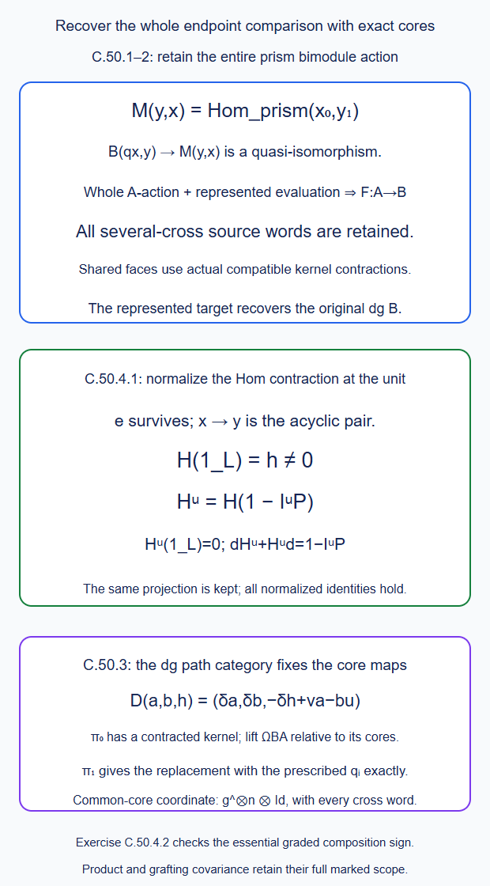
Theorem C.50.1.1 proves recovery from the entire represented action. Theorem C.50.2.1 applies it to the actual whole tagged native prism with compatible faces. Theorem C.50.3.1 proves the graded path-category formulas,relative exact-core replacement and actual whole common-core path coordinate. Exercises C.50.4.1–C.50.4.2 compute the unit correction and essential Koszul sign. The full prism and corrected compatible counit contractions are proved in C.49.6.1;the relative generator and module constructions are C.46.2.1 and C.45.2.1. Editable SVG source.

C.51. Correct product coordinates inside the whole graph
An exact product comparison must retain the whole graph differential, including operations on several successive transitions. This section proves how actual product-square homotopies give such corrections. Work over a characteristic-zero field. The hypotheses concern actual maps and homotopies over the fixed pure core powers; agreement on cohomology alone is weaker. All contractions use the full cofree module differential.
C.51.1. The homotopy after changing contraction choices
All complexes below are full cofree one-cross bicomodules over their stated pure cores. Maps and homotopies satisfy both outside coaction equations. Source-to-target maps are over the same fixed core powers. Thus all their composites have the displayed types; the Hom differential is \(\partial f=d f-(-1)^{|f|}f d\).
Use normalized contraction data \[ (i,p,h):Z\rightleftarrows N,\qquad (i',p',h'):Z'\rightleftarrows N', \] and product contraction data \[ (j,q,k):W\rightleftarrows P,\qquad (j',q',k'):W'\rightleftarrows P'. \] Here \(pi=1\), \(\partial h=1-ip\), and the corresponding identities hold for the other three contractions. Each projection followed by its homotopy, and each homotopy followed by its inclusion, is zero.
Let \(\phi:Z\to W\), \(\phi':Z'\to W'\) be the actual fixed-core product projections, and let \(t:Z\to Z'\), \(u:W\to W'\) be chain comparisons. Suppose the raw square has a specified degree-minus-one homotopy \[ R:Z\longrightarrow W',\qquad \partial R=\phi't-u\phi. \] Set \[ T=p'ti,\quad U=q'uj,\quad J=q\phi i,\quad J'=q'\phi'i'. \] In the application \(J,J'\) are the actual identity-core isomorphisms between two minimal product models: C41 and C45 construct them, and their identity leading central maps make them invertible by the finite cofree word recursion. In a general contraction diagram their invertibility is an additional hypothesis, not a consequence of the symbols above.
Theorem C.51.1.1. If \(J'\) is invertible, the desired block comparison is \(T^{\mathrm{prod}}=(J')^{-1}U J\). There is an explicit full bicomodule homotopy \[ \partial K=T^{\mathrm{prod}}-T, \] given by \[ \begin{aligned} L={}&q'R i-q'\phi'h'ti+q'u k\phi i,\\ K={}&-(J')^{-1}L. \end{aligned} \] The formula preserves any face or sector on which all its stated raw maps, homotopies and contractions have compatible restrictions. In particular it retains the actual raw homotopy \(R\).
Proof. All chain maps in the formula have degree zero. The Hom Leibniz rule therefore gives \[ \begin{aligned} J'T &=q'\phi'i'p'ti\\ &=q'\phi'ti-\partial(q'\phi'h'ti),\\ UJ &=q'ujq\phi i\\ &=q'u\phi i-\partial(q'u k\phi i). \end{aligned} \] Subtract. The difference of the two first terms is \(q'(\phi't-u\phi)i=\partial(q'R i)\). Hence \(J'T-UJ=\partial L\). Since \(J'\) and its inverse are chain maps, \[ \partial K=-(J')^{-1}(J'T-UJ) =(J')^{-1}UJ-T. \] Every summand is a composite of actual bicomodule maps of the indicated degree and over the same pure core maps. It is therefore an actual bicomodule homotopy, including all consumed-core Taylor components. The identities were in the full mapping complexes and did not discard any unary or higher action term.
Restriction commutes with each composite. If \(J'\) restricts to the same isomorphism on a face, its inverse restricts to its inverse there: restrict the two inverse identities and use uniqueness of an inverse. This proves the compatibility assertion. The same wordwise reasoning applies to an increasing compatible family of finite corners. No choice of new primitives on separate faces has been made. \(\square\)
If the block contractions are the C45 product-normalized ones, then \(\phi i=j\), \(q'\phi'h'=0\), \(k\phi i=kj=0\), and \(J=J'=1\). For an exactly commuting raw square, \(R=0\), the displayed formula is zero and \(T=U\) exactly. This recovers the exact C45 square as a special case. With other contraction choices its two homotopy terms must be retained.
C.51.2. Ordered tensor homotopies and the cross suspension
First work in the unsuspended modules \(K(Z_i)=Z_i[-1]\) of C41. For each ordered factor suppose chain maps \(t_i,t_i'\), over the same pure core powers, have a specified bicomodule homotopy \[ \partial a_i=t_i'-t_i. \] The graded tensor convention evaluates a tensor of homogeneous maps with the sign obtained by moving each map past its preceding input factors. In particular a degree-minus-one map in slot \(i\) contributes \((-1)^{\sum_{j<i}|x_j|}\) on homogeneous inputs.
Theorem C.51.2.1. Put \[ \begin{aligned} a_\Pi=\sum_{i=1}^m t'_1\otimes\cdots\otimes t'_{i-1} \otimes a_i\otimes t_{i+1}\otimes\cdots\otimes t_m. \end{aligned} \] Then \[ \partial a_\Pi=\bigotimes_i t_i'-\bigotimes_i t_i. \] This full bicomodule homotopy regroups strictly along every ordered partition. Its homotopy on the once-suspended product module \((\bigotimes_i K(Z_i))[1]\) is the underlying map \(-a_\Pi\), transported by C41's actual graded regrouping. Empty products have the coefficient identity map and zero homotopy; a genuine arity-zero block is retained as its actual factor rather than deleted.
Proof. The Hom tensor differential is a derivation. All the factors except \(a_i\) are closed and have degree zero, so differentiating the \(i\)-th term gives \[ t'_1\otimes\cdots\otimes t'_{i-1} \otimes(t_i'-t_i)\otimes t_{i+1}\otimes\cdots\otimes t_m. \] The negative term at \(i+1\) cancels the positive term at \(i\), with its full graded evaluation sign, since these are the same tensor of degree-zero maps. The two uncancelled end terms are exactly the asserted difference. For one factor it is the original homotopy equation; for no factors the difference and homotopy are both zero.
For two consecutive groups \(A,B\), the formula is \(a_A\otimes t_B+t_A'\otimes a_B\). Expanding the two group homotopies lists once, in the original factor order, the term whose homotopy occurs in each individual slot. The evaluation sign of that slot is the sum of all preceding input degrees in either grouping. Thus this is literally the displayed flat formula. Repeating this argument proves equality for every parenthesization and ordered partition. No new chain homotopy between different regroupings is needed.
Both outside coactions of each factor commute with its maps and homotopy with the same graded convention. Tensoring those equations and applying C41's graded regrouping proves the two product coaction equations. The formula is therefore a bicomodule homotopy for the entire product actions, not just a homotopy of its bare central complexes.
On a cochain shift \([1]\), both differentials are negated. For the underlying degree-minus-one map \(a\), its new Hom differential is \(-da-ad=-\partial a\). Hence the required shifted homotopy is \(-a\), whose new differential is the original difference of the two degree-zero comparison maps. This proves the displayed shift sign and, after the actual C41 one-cross regrouping, the claimed once-suspended formula. Source arity does not enter any calculation. In particular a factor with zero inputs still has its specified target-unit mappings and is present in the same formula. \(\square\)
C.51.3. Extend the correction through every transition
Let \((L,D)\) be a finite directed common-core minimal-central path coalgebra as in C43 and C49. Pure cores are tensor powers of the minimal IC bar \(C\), with the retained finite directed index bars. All unsuspended central mapping spaces are nonnegative and even; their unary differential is zero. The whole differential includes every module and several-cross operation. Count all original primitive core/index letters and cross letters to obtain its conilpotent length filtration.
Let \(G:L_0\to L\) be an actual whole chain coalgebra isomorphism over the fixed core powers, such as the C50 comparison. On each selected one-cross module let \(T_e\) be its restriction. Suppose desired replacements \(T'_e\), over the same cores and with identity bare central component, are given as chain bicomodule isomorphisms, together with actual degree-minus-one bicomodule homotopies \[ dK_e+K_e d=T'_e-T_e. \] All these data retain their endpoint/string labels and agree on every prescribed face or shared sector. On unmodified modules take \(T'_e=T_e,K_e=0\). The hypothesis is a supplied coherent homotopy of these actual module maps; equality of their cohomology dimensions is insufficient.
Theorem C.51.3.1. There is a full chain coalgebra automorphism \(A\) of the target \(L\), fixing all pure cores, such that \(AG\) has exactly the prescribed \(T'_e\) on every one-cross sector. It retains every several-cross operation and comparison component through the full chain equation. The construction is finite on each word, preserves the finite \(P\)-windows of C49, and restricts to all the supplied compatible faces. Thus it corrects the one-cross products inside an already constructed whole graph comparison rather than discarding its higher components.
Proof. Put \[ V_e=T'_eT_e^{-1},\quad N_e=V_e-1,\quad H_e=K_eT_e^{-1}. \] These are over the identity target cores. The map \(V_e\) is a chain isomorphism, and on the module mapping complex \(\partial H_e=N_e\), with \(\partial N_e=0\). Every nonleading central component of \(N_e\) consumes at least one surrounding original bar letter, by the cofree reconstruction in equation (C.39.5). Hence \(N_e\) is locally nilpotent. Define the finite-on-each-word maps \[ \ell_e=\log(1+N_e),\qquad s_e=\sum_{r\ge0}\frac{(-1)^r}{r+1}H_eN_e^r. \] They are bicomodule maps of degrees zero and minus one, respectively. The mapping-complex Leibniz rule gives \(\partial s_e=\sum_{r\ge0}(-1)^rN_e^{r+1}/(r+1)=\ell_e\). This calculation retains the complete module differential, not just its bare central part. The bare component of every degree-minus-one module map is zero: it maps an even central degree to an odd central degree. Therefore \(H_e\), and hence \(s_e\), consume at least one surrounding primitive letter.
Extend these full one-cross maps to a degree-minus-one path coderivation \(h\), zero on pure cores. On a cotensor path it is the graded sum of applying \(s_e\) in each one-cross factor and identities in all the other factors. The bicomodule equations make every summand a map on the cotensor equalizer. At a path cut a homotopy position is either before or after the cut; its two contributions are precisely \[ \Delta h=(h\otimes1+1\otimes h)\Delta. \] For a cut inside a boundary core run this is the same left or right coaction equation. These exhaust all cuts, proving the full coderivation identity with its graded evaluation signs. It is the ordered tensor calculation of Theorem C.43.3.1 with all intervening degree-zero retractions equal to the identity. In particular \(h\) preserves cross count and lowers total primitive length by at least one.
Let \[ v=[D,h]=Dh+hD. \] The commutator of the two displayed coderivation equations proves that \(v\) is a degree-zero coderivation. Also \(Dv-vD=D^2h-hD^2=0\). Its pure-core restriction is zero. On a one-cross sector its restriction is exactly \(d s_e+s_e d=\ell_e\).
The full minimal-central \(D\) lowers primitive length by at least one. On a pure \(C\)-factor this is minimality of the IC bar: no unary operation remains. An index differential merges adjacent index arrows. A one-cross module term with no consumed core input would be the zero central unary differential; all others consume at least one core input. A several-cross term merges at least two crosses. These are every type of term. Thus \(v\) lowers primitive length by at least two and is locally nilpotent. Its actual finite exponential is \[ A=\exp(v)=\sum_{j\ge0}\frac{v^j}{j!},\qquad A^{-1}=\exp(-v). \] For a degree-zero coderivation the operators \(v\otimes1\) and \(1\otimes v\) commute. Its coproduct equation therefore gives \(\Delta A=(A\otimes A)\Delta\) by the finite binomial expansion on every word. The same computation gives its coalgebra inverse. Since \(Dv=vD\), it commutes with \(D\); since \(v\) is zero on pure cores, \(A\) fixes them exactly.
On a one-cross sector, \(A_e=\exp(\ell_e)=V_e\), using the finite formal power-series identities for the nilpotent \(N_e\). Hence \((AG)_e=V_eT_e=T'_e\) exactly. On higher-cross paths the commutator contains all merging terms of \(D\); none was projected away. Its exponential supplies their required higher correction components, and the full chain equation \(DAG=AGD_0\) retains their compatibility.
All operations are on the original endpoint and concatenated-string blocks. If the given homotopies agree on a face, the logarithm, cotensor sum, commutator and exponential restrict to those same formulas there. C.49.1 applies to this actual normalized degree-zero coordinate and its inverse: their pure core maps are the identity and their nonleading terms consume surrounding inputs and merge crosses. They preserve \(P\le D\). Thus the correction uses the complete finite domains already proved, while retaining all supplied face restrictions. This proves the theorem. \(\square\)
C.51.4. Solved examples
Exercise C.51.4.1 (intermediate). Let the dg category on \(0<1<2\) have \(R=k[a]/(a^2)\), \(|a|=2\), in each mapping space, zero ordinary differential, and composition given by multiplication in \(R\). The reduced pure loops are \(a_i\). Write their suspensions as \(\alpha_i=sa_i\), and write \(u_{ji}=s1_{ji}\), \(v_{ji}=sa_{ji}\) on a strict transition \(i<j\). The degrees are \(1,-1,1\), respectively. On its relative graph bar let \(D\) be the full suspended multiplication differential. Define the degree-minus-one coderivation \(h\) by the only nonzero central Taylor values \(h(\alpha_j|u_{ji})=u_{ji}\). Compute \([D,h]\) and its exponential on \(u_{21}|\alpha_1|u_{10}\) and on \(\alpha_2|\alpha_2|u_{20}\). Explain the role of the two-transition operation.
Solution. For two adjacent odd suspended letters the local product sign is minus. The coderivation evaluation also uses the parity of its preceding letters. Put \(w=u_{21}|\alpha_1|u_{10}\). Then \[ \begin{aligned} h(w)&=-u_{21}|u_{10},\\ D(w)&=-v_{21}|u_{10}+u_{21}|v_{10},\\ Dh(w)&=u_{20},\qquad hD(w)=0. \end{aligned} \] Thus \([D,h](w)=u_{20}\). It vanishes on the output, so \(\exp([D,h])(w)=w+u_{20}\) exactly. The suspended degree is minus one on both terms; its \(P\)-weight drops from one to zero.
For \(z=\alpha_2|\alpha_2|u_{20}\), the identities \(a^2=0\) and the same signs give \[ \begin{aligned} h(z)&=-\alpha_2|u_{20},\\ D(z)&=\alpha_2|v_{20},\\ Dh(z)&=v_{20},\qquad hD(z)=0. \end{aligned} \] Consequently the exponential is \(z+v_{20}\). Both suspended terms have degree one and \(P\)-weight two. The first computation uses the actual product \(u_{21}|u_{10}\mapsto-u_{20}\). Deleting that several-transition operation would delete the required correction \(u_{20}\). Correcting only the one-transition sectors therefore does not give this full chain gauge.
Exercise C.51.4.2 (intermediate). Let \(e,x\) have degree zero, let \(y,z\) have degree one, and let \(dx=y\), all other differentials zero. Take \(t=1\), let \(t'=E\) project onto \(e,z\), and put \(a(y)=-x\), with all other values zero. Compute the ordered product homotopy on \(z\otimes y\), and check its equation and its once-suspended sign. Compare the two groupings on three factors.
Solution. The original equation is \(\partial a=E-1\): on \(x\) its value is \(a(dx)=-x\), on \(y\) it is \(d a(y)=-y\), and on \(e,z\) it is zero. For two factors the homotopy is \(a\otimes1+E\otimes a\). Its first summand vanishes on \(z\otimes y\). The second has the graded evaluation sign \((-1)^{(-1)|z|}=-1\), so its value is \(+z\otimes x\). Its tensor differential is \(-z\otimes y\), while the input \(z\otimes y\) is closed. This equals \((E\otimes E-1)(z\otimes y)\). Omitting that evaluation sign would give the opposite answer.
After one total shift the differential is negated, so the homotopy's underlying value must be negated too, giving \(-z\otimes x\). Its shifted Hom differential is again \(-z\otimes y\). For three factors either grouping gives literally \[ \begin{aligned} a\otimes1\otimes1 &+E\otimes a\otimes1\\ &+E\otimes E\otimes a. \end{aligned} \] Each slot has exactly the sign of the sum of the preceding input degrees. This verifies both the shift and the ordered regrouping on an example with a nonzero odd-prefix sign.
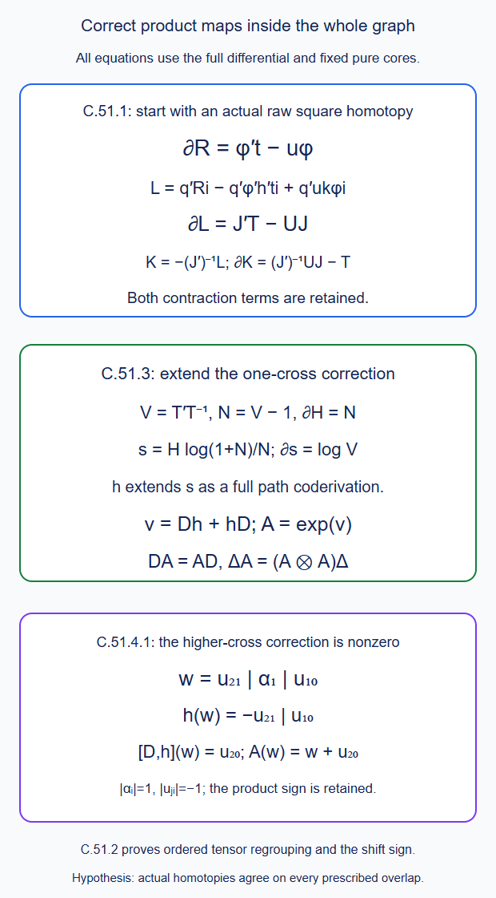
Theorems C.51.1.1–C.51.3.1 give the transferred square homotopy,the ordered tensor and shift signs,and the full chain gauge. Exercise C.51.4.1 computes the nonzero two-transition correction;Exercise C.51.4.2 checks the odd-prefix sign. The actual graph and bounds are Theorems C.40.1.1,C.43.3.1 and C.49.1.1. Editable SVG source.

C.52. Indexed product models and their actual shuffle domains
Parameter arrows have degree zero before suspension. Their negative bar letters must remain in the product models. We first construct the actual indexed common-cobar projections, then identify the precise product-shuffle domains and full-face restrictions. These constructions supply the raw models and homotopy components needed for the product correction of C51. Work over the same characteristic-zero coefficient field and finite full IC corners as in C49–C51. Auxiliary regrading will be reversed after each argument; the actual original degrees and signs remain part of the result.
C.52.1. Even height regrading keeps the signs
Let \(I\) be a finite directed category with a chosen integer height \(h\) strictly increasing on every nonidentity arrow. There are no nonidentity endomorphisms. Full parameter faces inherit this same height; they do not renumber it. Let \(C=B\mathcal M\) be the minimal IC bar of the earlier sections, with reduced degrees at least one. Put \[ D_I=B(kI),\quad A_{n,I}=C^{\otimes n}\otimes D_I,\quad U_n=(\Omega C)^{\otimes n}. \] All bars and tensor products retain their scalar object categories.
Proposition C.52.1.1. On a mapping or coalgebra component with parameter endpoints \(i,j\), assign auxiliary degree \[ |x|_h=|x|+2(h(j)-h(i)). \] This is a reversible regrading. It preserves the differential, composition, coproduct, every tensor evaluation sign, and every fixed-endpoint chain equation. The reduced coalgebra \(A_{n,I}\) is positive in this degree. The same assertions hold for a tensor of such factors, using the sum of their heights. Consequently the positive-cobar comparison and unit proofs of Lemma C.39.4.1 apply to these indexed coalgebras and their height-preserving comparisons. Their conclusions are quasi-isomorphisms in the original degrees as well.
Proof. The height jump is additive at a composite and at a coproduct cut. Hence both multiplication and coproduct retain degree zero; the unary differential retains its endpoints and degree one. The change in each homogeneous degree is even. Thus every sign \((-1)^{|x||y|}\), every suspended insertion sign, and each Hom differential sign is exactly its original sign. Reversing the endpoint shift recovers the original complex on each mapping block; its cycles and boundaries have merely been renumbered. Chain equations and quasi-isomorphisms are therefore equivalent in the two gradings.
An index bar word with \(q\) strict arrows has degree \(-q\) and height jump at least \(q\). A tensor of positive IC bar words with \(r\) original IC letters has degree at least \(r\). Its tensor with that index word consequently has \[ |x|_h\ge r-q+2\Delta h\ge r+q. \] Every reduced element has \(r+q\ge1\). This proves positivity. There are finitely many index words, since \(q\) is bounded by the height range. Finite IC corners are degreewise finite. The same inequality bounds their original word length at a fixed auxiliary degree, so the finite-degree filtration arguments of Lemma C.39.4.1 apply literally.
For several factors, tensor degrees and height jumps both add. In particular the source and target of every regrouping have the same auxiliary grading. A full face is a restriction of endpoint and original word labels, so retains all formulas. On the actual compatible native grafting domains C47 proves additivity of the execution height; there too the regrading is the same sum on both sides. Nothing in this argument declares an incompatible intermediate execution state admissible. \(\square\)
C.52.2. The actual indexed common-cobar projection
Retain the actual strictly natural map from C43, \[ \psi_{n,I}:A_{n,I}\longrightarrow B(U_n\otimes kI), \qquad V_{n,I}=\Omega A_{n,I}. \] Define \[ \rho_{n,I}=\epsilon_{U_n\otimes kI}\,\Omega\psi_{n,I}: V_{n,I}\longrightarrow U_n\otimes kI. \] This is the projection from the actual common cobar; its source differs from the canonical full bar-cobar \(Q_{n,I}\).
Theorem C.52.2.1. The functor \(\rho_{n,I}\) fixes the tuple/parameter objects and is graded-surjective and a quasi-isomorphism on each mapping block. Its kernel has a contraction. These contractions can be chosen compatibly with all finite full parameter faces and with an increasing compatible system of finite IC corners. The projection itself is strictly natural under every core map \(g\): \[ \rho'_{n,I}\,\Omega(g^{\otimes n}\otimes1) =((\Omega g)^{\otimes n}\otimes1)\rho_{n,I}. \] At \(n=0\) it is the genuine \(\Omega D_I\to kI\) counit; the parameter category remains present.
Proof. After Section C.52.1's even height regrading all reduced input coalgebras and all nonidentity ordinary arrows of \(U_n\otimes kI\) are positive. The unit maps for each \(C\), the identity on \(D_I=B(kI)\), and the bar shuffle give exactly \(\psi_{n,I}\). The complete unit and shuffle proofs C.39.3–C.39.4 show it is a chain coalgebra quasi-isomorphism. Lemma C.39.4.1 makes its cobar a quasi-isomorphism; the full bar-cobar cut proof makes the counit a quasi-isomorphism. Their composite is therefore one as well. Reversing the regrading proves the assertion in the original mapping degrees.
For surjectivity take any free generator \(tc\) in the \(a\)-th \(\Omega C\) target factor. The cobar generator on the same \(c\) in that single input factor, with all other factors coaugmented and with an identity index, maps to \(tc\) in that target factor. A strict index arrow \(b:i\to j\) is the image of the cobar generator on \(sb\in D_I\), with all IC factors coaugmented. These statements follow from the one-letter twisting projection of the canonical shuffle. The free words in the target factors and these index arrows span every mapping block. Products of their just-stated preimages give preimages with the actual endpoints. Finite additive matrices preserve this surjectivity and quasi-isomorphism.
There is a useful actual chain-linear section \(\sigma\). Choose the ordinary factor order. Embed each \(\Omega C\) factor by the one-factor coalgebra inclusion at the source parameter vertex, multiply the factors in that fixed order, and put the canonical one-letter index arrow after the resulting IC mapping, at its output IC object. The graded tensor mapping space has precisely these ordered factor words and actual index arrows as a basis. The embedding of each factor is a dg functor, its multiplication is a chain map with the graded tensor rule, and the index lift is closed. Thus the displayed ordered construction is a chain-linear section on mapping complexes. It is not claimed to preserve multiplication between different factors. Directly \(\rho\sigma=1\), and \(\sigma\) retains every full face: it uses only the two original parameter endpoints.
The kernel is acyclic because \(\rho\) is a quasi-isomorphism, so it is split contractible over the coefficient field by C.30.1. Here is why compatible contractions exist even for proper face subcomplexes. Fix the parameter endpoints. Every nonzero full face contains both endpoints and therefore the identical target mapping block. The chain section \(\sigma\) lies in their common endpoint face. Thus each face source decomposes into that same section image and its own kernel. The source face subspaces have the distributive original-word support lattice. Passing to the quotient by the common section image preserves their intersections, sums and distributivity, so the same is true of the face kernels. Every finite intersection is the kernel for its common full face and is acyclic by the already proved face assertion.
The acyclic-face-union argument in Theorem C.50.2.1 now applies: add faces one at a time, using the quotient of one acyclic complex by its acyclic intersection. The sum of previously assigned face kernels and its quotient in the full kernel are acyclic. Extend the existing contraction using a chain splitting of that quotient. Explicitly a graded section with defect \(a=ds-sd\) is corrected to \(s+a h_Q\), since \(\partial(a h_Q)=-a\). Extend the contraction by that of the quotient. This retains its square-zero condition and every earlier restriction. It proves the finite face claim without equating different face source complexes.
For increasing full IC corners use the same factor-word section, and the analogous relative kernel quotient splitting on each new finite collection of blocks. Every original word appears at a finite stage; its choice is retained thereafter. Naturality of \(\rho\) itself does not depend on these choices: the canonical \(\psi\) is strictly natural by C.43.1 and the counit is natural on its free generators. Their two squares give the stated exact equality. At \(n=0\) these same formulas leave precisely the index bar and its counit. In particular it is not replaced by a scalar category when \(I\) has arrows. \(\square\)
C.52.3. Native product blocks and their full kernel projection
For ordered block factors put \[ A_i=C^{\otimes n_i}\otimes D_{I_i},\qquad B_i=C\otimes D_{I_i},\qquad A=\bigotimes_i A_i,\quad B=\bigotimes_i B_i. \] The \(n_i\) may be zero. Let actual strict block representatives \(F_i:\Omega A_i\to\operatorname{Add}(\Omega B_i)\) be given. Write \[ \mu:\Omega A\longrightarrow\bigotimes_i\Omega A_i, \qquad \nu:\Omega B\longrightarrow\bigotimes_i\Omega B_i \] for C41's canonical one-factor twisting projections. Set \(P=(\bigotimes_i F_i)\mu\).
Theorem C.52.3.1. The maps \(\mu,\nu\) are actual graded-surjective dg quasi-equivalences. They regroup strictly and have all their original graded permutation signs. There is a lift \(\widetilde P:\Omega A\to\operatorname{Add}(\Omega B)\) with \(\nu\widetilde P=P\). Its represented common-core module has a graded-surjective quasi-isomorphism \[ \begin{aligned} \phi:B\otimes s\operatorname{Hom}_{\Omega B} (\widetilde P x,y)\otimes A \longrightarrow B\otimes s\operatorname{Hom}_{\bigotimes_i\Omega B_i} (Px,\nu y)\otimes A. \end{aligned} \] The target is exactly \((\bigotimes_i K(Z_i))[1]\), with all index cores retained. The full kernel contraction and fixed-projection SDR of C45 apply, including every higher module action. Compatible full factor faces can be retained in the lifts and SDRs. The actual native strict block representatives \(F_i\) can themselves be chosen in these stated common-cobar sources and targets, including their full parameter faces.
Proof. Give the product endpoints the sum of the heights of their \(I_i\)'s. Section C.52.1 makes every reduced \(A_i,B_i\) positive, without changing a sign. C.41.1 therefore proves both quasi-equivalences, their strict regrouping and their graded permutations. Their generator formula proves graded surjectivity: each free generator in an individual target factor is the image of its pure one-factor input generator. Their kernels are acyclic. The source \(\Omega A\) is free on its reduced coalgebra generators. Its unary generator complex is retained, and its remaining differential uses smaller original primitive length. The relative generator lifting proof C.46.2, applied to \(\nu\), gives the stated actual lift of \(P\).
To obtain the actual native \(F_i\)'s, start with the complete tagged native functor of C49. Its canonical strict representative, followed by the target counit, maps \(Q_{n_i,I_i}\) to \(\operatorname{Add}(U_1\otimes kI_i)\). Precompose it with \(\Omega\psi_{n_i,I_i}:V_{n_i,I_i}\to Q_{n_i,I_i}\). Now lift this actual dg functor through the surjective quasi-isomorphism \(\rho_{1,I_i}:\Omega B_i\to U_1\otimes kI_i\) of Section C.52.2. C.46.2 applies to its free common-cobar source and to the just-constructed mapping-kernel contractions. A full face is generated by original words whose parameter vertices lie in that face. The union of prescribed face generator subcomplexes is differential-stable. The relative lift therefore keeps those earlier face images, proving the asserted simultaneous native block choice. This constructs representatives of the supplied entire native functors, not only their leading cohomology maps.
Postcomposition by \(\nu\) on its target mappings is a surjective quasi-isomorphism, since \(\nu\) has exactly that property on every fixed mapping block. Its square with the source action is strict by \(\nu\widetilde P=P\). Pull back the two represented graph modules along the canonical units of \(A,B\). Their two coactions are the same outside cores. The canonical identity \(B\nu\,\eta_B=\operatorname{sh}(\bigotimes_i\eta_{B_i})\), proved in C.41.2, makes the displayed full bicomodule map exactly the identity on those outside cores and the target mapping projection in its central slot. It has the strict full module equation.
The product target's mapping complex is literally \(\bigotimes_i\operatorname{Hom}_{\Omega B_i}(F_i x_i,y_i)\). The complete differential, coaction and one-total-cross-suspension calculation of C.41.2 applies word for word after the even regrading. It proves the asserted product identification, not only its equality on cohomology. The source arities never enter that calculation; a genuine zero-input block still contributes its target mapping factor.
Now apply the fixed-projection proof C.45.2: choose a contraction of the central mapping kernel, extend it by the outside coactions, and perturb by the terms consuming surrounding original core letters. Their geometric series terminate on each word. This contracts the full cofree kernel and constructs the section and normalized homotopy with precisely projection \(\phi\). Thus no several-cross comparison can be inferred merely from this projection; the projection and its complete homotopies are the actual input for the later C51 correction.
For the face choices one can see the needed kernel lattice explicitly. The graded target of \(\nu\) has its ordered tensor-factor cobar word basis. Its chain-linear section multiplies their one-factor inclusions in that order. In the free source basis, a word containing a genuinely mixed-factor generator is killed by \(\nu\). Every other word is a pure-factor interleaving and maps, with its actual Koszul sign, to its ordered factor-word basis element. Its difference from that signed canonical section element is a kernel basis element. These elements, together with the killed mixed words, form a basis of the kernel: subtract the unique canonical word for each target basis element. A full factor face retains exactly a subset of this basis, because reordering the factors keeps each factor's original parameter vertices. Hence these face kernel subspaces have the distributive support lattice. Their finite intersections are the same kernels for common full factor faces and are acyclic. The relative quotient contraction argument of Section C.52.2 gives compatible contractions.
The source subcategory generated by the union of prescribed full factor faces is differential-stable. Relative C46 lifting thus keeps those earlier images in \(\widetilde P\). The fixed-projection cofree perturbation then restricts term by term to the compatible face SDRs. All sums remain finite on original words in the original grading. This proves the asserted face compatibility. \(\square\)
C.52.4. The shuffle domain and its full-face intersections
Let \(I_1,\ldots,I_m\) be finite directed categories as in Section C.52.1. Fix their actual arrow bases and relative bars. There is the original bar shuffle \[ j:\bigotimes_i D_{I_i}\longrightarrow D_{\prod_i I_i}. \] Every nonempty factor bar letter changes exactly its own parameter coordinate. All signs are the actual suspended Koszul signs.
Theorem C.52.4.1. The shuffle is an injective chain coalgebra map. If \(J\) is any full subcategory on a subset of the product vertices, its image intersects \(D_J\) in precisely the span of the images of those factor-word tuples whose Cartesian product of vertex sets lies in \(J\). Distinct factor-word tuples have disjoint shuffle supports. The intersection statement retains actual parallel-arrow labels. The induced map on free cobars is injective on its generator complexes and on its underlying free graded categories.
Proof. The chain and coproduct equations are the full bar-shuffle identities proved in C.34.2 and C.39.3. They apply here with the original negative index bar degrees: alternatively Proposition C.52.1.1 makes them positive without changing any sign.
For injectivity inspect an output bar word in a shuffle. Each of its arrows changes exactly one coordinate, since that step is the given nonidentity factor arrow tensored with the other identity arrows. Thus its coordinate label is uniquely recoverable. Reading the arrows of each coordinate in their original order recovers that entire factor word, including every actual parallel-arrow label. The output therefore occurs in the shuffle of only that one factor-word tuple. Different interleavings of the same tuple also give different output words: their sequences of changed coordinates differ. Every coefficient is plus or minus one. This proves both disjointness and injectivity over the coefficient field.
For a fixed tuple of factor words, every prefix in every factor can be reached simultaneously by an interleaving: perform the chosen prefixes in their factor orders, then finish the remaining arrows. Consequently the union of all vertices visited by its shuffled words is exactly the Cartesian product of its individual vertex sets. A full face bar retains a word if and only if every one of that word's vertices lies in the face. Thus all shuffle terms lie in \(D_J\) exactly under the stated rectangle condition. Disjoint support prevents cancellation of a bad shuffle term against a different tuple. The same criterion therefore holds for arbitrary linear combinations. This proves the intersection assertion.
Choose the interleaving which orders the coordinate blocks once and for all. Sending that word to its factor-word tuple with the inverse of its shuffle sign, and all other output words to zero, is a graded linear left inverse. It is not being used as a coalgebra map. The injection on reduced coalgebra generator complexes induces one on their shifts. A tensor algebra on an injective map of vector spaces is injective: choose a vector-space complement, or apply its linear left inverse on each tensor power. The identical argument on composable object blocks proves the relative free-category assertion for \(\Omega j\). \(\square\)
Pairwise intersections with faces do not determine intersection with a sum of faces. Here is a concrete distinction. Take two copies of \([1]\) with arrows \(a,b\), and let \(x=sa\otimes sb\). In the square product, let \(p_a\) be the two-arrow bar word along \(00\to10\to11\), and \(p_b\) that along \(00\to01\to11\). In the target-to-source word convention, \[ j(x)=p_b-p_a. \] The minus sign is \((-1)^{|sa||sb|}=-1\). Let \(J_a,J_b\) be the respective full three-vertex faces. The degree-minus-two shuffle line meets neither face separately, but is contained in their sum: \[ \begin{aligned} \langle j(x)\rangle\cap D_{J_a}^{-2}&=0,\\ \langle j(x)\rangle\cap D_{J_b}^{-2}&=0,\\ \langle j(x)\rangle\cap(D_{J_a}^{-2}+D_{J_b}^{-2}) &=\langle j(x)\rangle. \end{aligned} \] Indeed the two distinct bar words are independent basis vectors and each belongs to its own face. The direct diagonal arrow is also present in both full faces, but has degree minus one and does not change this degree-minus-two computation. Thus independently fixed face-generator images must satisfy the actual signed shuffle relation before a product image can be prescribed on their union.
C.52.5. Extend a central homotopy with every face retained
In the transferred indexed native graph, a bare central cohomology block at fixed parameter endpoints is the same in every full face containing those endpoints. It is the actual IC mapping cohomology tensored with the space of actual arrows between those endpoints, as proved in corrected C.49.6. It carries no extra hidden intermediate parameter vertices. The outside cores still retain their full original index words.
Theorem C.52.5.1. Fix one cofree one-cross module and its endpoint/string grading, over identity outside core maps. Suppose a homogeneous central Taylor map has been specified on a graded subspace of its inputs, retaining those endpoint/string labels. It has a graded linear extension to the whole central input space. The cofree extension is a full bicomodule map, and it preserves every full parameter face. In particular this applies to a degree-minus-one homotopy on one actual product-shuffle submodel. For several prescribed submodels, the same assertion holds when the prescriptions already define a linear map on their actual sum.
Proof. Choose a homogeneous basis of the prescribed subspace in each fixed label and input/output degree block, and extend it to a basis of that whole block. Assign zero on the added basis vectors. The resulting linear map retains its homogeneous degree and the required labels. This is an ordinary vector-space extension; no chain equation is asserted for the homotopy at this step.
Complete it by the cofree outside-coaction formula (C.39.5), with the graded evaluation sign of its homogeneous degree. Explicitly the degree-\(r\) central map is moved past the retained left outside piece, contributing \((-1)^{r|c_{(1)}|}\). Coassociativity and the two counits give the two bicomodule equations by the same proof as C.39.2. On a prescribed subbicomodule the formula recovers its original map, since its cuts are cuts of that submodel.
Now take an input belonging to a full face. Every outside piece in its coproduct still lies in that face. The central output has the endpoints of the consumed middle piece, so those endpoints lie in the original face. By the stated bare-central identification that entire output block is present in the face. Every reconstructed output therefore remains in it. No assumption that an arbitrary basis complement was itself a face complement has been used.
The construction chooses one global map and restricts it to all faces, so the restrictions agree on their intersections automatically. It does not retain arbitrary previously fixed values on all those faces. If such values must be retained, they are additional prescribed subspaces and all linear relations in their sum must hold, including the signed square relation in Section C.52.4. For a family of product submodels the same linear extension argument applies to their sum precisely when its prescriptions are a well-defined linear map there. Pairwise agreement alone is not substituted for that condition. \(\square\)
This theorem is useful for C51's gauge construction: the extended homotopy need not itself be closed. Its commutator with the full graph differential is closed, and its finite exponential gives the chain correction. Compatibility of the prescribed product values on their actual sum remains necessary.
C.52.6. The actual resolved-square homotopy component
Transport the two outside target cores through the fixed isomorphisms \(g^{\otimes n}\), so that the full module comparisons may be read in the dg category \(\mathcal E\) of cofree bicomodules over the same cores. Its mapping differential is the full Hom differential; its compositions are actual module-map compositions. This transport is only a re-expression of the supplied extension-field core isomorphism.
Proposition C.52.6.1. Suppose an actual strict dg functor \(\Omega Bk[2]\to\mathcal E\) is given, whose three objects are \(Z,W,W'\), and whose three degree-zero arrow images are \[ a=\phi:Z\to W,\qquad b=u:W\to W',\qquad c=\phi't:Z\to W'. \] Then minus the image of the two-arrow free generator is an actual degree-minus-one bicomodule map \(R\) with \(\partial R=\phi't-u\phi\). Conversely that exact homotopy and the three closed maps give this entire resolved two-simplex. Every face restriction of a supplied family restricts this same formula.
Proof. The relative bar of \(k[2]\) has the three suspended strict arrows of degree minus one, and its unique two-arrow word \(s e_{12}|s e_{01}\) of degree minus two. Its binary differential is \(-s e_{02}\). Its only reduced coproduct is \(s e_{12}\otimes s e_{01}\). Therefore the exact cobar formula (C.39.15) gives \[ d\,t(s e_{12}|s e_{01}) =-t(s e_{02})+t(s e_{12})t(s e_{01}). \] The generator has degree minus one. Its image \(H\) satisfies \(\partial H=ba-c\), so \(R=-H\) has precisely the asserted sign and type. There are no longer reduced index words and no other free generators. Assigning these four generator images and the object identities consequently defines the dg functor if and only if the displayed equation and the three closed-arrow equations hold. Extension to all products follows by the dg Leibniz rule. Full cofree module maps and their Hom differential include all source/target action components, so this is not merely a bare-central homotopy. A restriction of the dg functor restricts these generator values, proving the last assertion. \(\square\)
C.52.7. Solved examples
Exercise C.52.7.1 (intermediate). Take zero IC inputs and the full parameter category \([2]=\{0<1<2\}\), with height \(h(i)=i\). Describe the \(0\to2\) mapping complex of \(V_{0,[2]}=\Omega D_{[2]}\), its projection to \(k[2]\), and the kernel contraction. Compute all its auxiliary degrees. Explain why zero inputs do not make this source a scalar category.
Solution. Write \(a,b,c\) for the degree-zero cobar generators on the strict arrows \(0\to1\), \(1\to2\), \(0\to2\). There is one further generator \(H=t(s e_{12}|s e_{01})\), of degree minus one. Formula (C.39.15), or Proposition C.52.6.1, gives \[ dH=ba-c. \] There are no other composable reduced words from zero to two. Thus this mapping complex has basis \(H\) in degree minus one and \(ba,c\) in degree zero. Its projection sends both \(ba,c\) to the actual arrow \(e_{02}\), and sends \(H\) to zero. The kernel has basis \(H,ba-c\), with \(dH=ba-c\). The contraction sends \(ba-c\) to \(H\) and sends \(H\) to zero. Its square is zero and its two contraction identities hold on those two basis vectors.
The section of the projection sends \(e_{02}\) to \(c\). The full normalized homotopy is consequently \(k(ba)=H\), \(k(c)=k(H)=0\); on each basis vector \(dk+kd=1-\sigma\rho\). The generators \(a,b\) have height jump one and auxiliary degree two; \(c\) and \(ba\) have height jump two and auxiliary degree four; \(H\) has auxiliary degree three. Its differential retains auxiliary degree one, since \(3+1=4\). The parameter objects, arrows and this nontrivial negative-degree resolution are still present when the number of IC factors is zero.
Exercise C.52.7.2 (advanced). Let \(a_1,a_2,a_3\) be the strict arrows in three copies of \([1]\). Consider the signed six-term shuffle of \(sa_1\otimes sa_2\otimes sa_3\) in the bar of the cube \([1]^3\). Let \(J\) be the full subcategory obtained by omitting vertex \(110\). Delete just the shuffle terms visiting that vertex. Is the resulting four-term element closed? Use \([v_0,\ldots,v_q]\) for the bar word on the forward vertex path, retaining the original suspended signs.
Solution. The full shuffle is closed, since its three one-letter factor words are closed and the shuffle is a chain map. The deleted terms are exactly \[ \begin{aligned} &-[000,100,110,111]\\ &\quad+[000,010,110,111]. \end{aligned} \] Their signs are minus and plus: reversing the three distinct odd suspended letters has three inversions, and interchanging the first two factor steps changes that sign once. For a three-arrow forward path, merging at its first intermediate vertex has sign plus and merging at its second has sign minus. Thus the boundary of the deleted pair is \[ [000,100,111]-[000,010,111]. \] The intermediate path \([000,110,111]\) cancels between its two contributions. Since the full six-term boundary is zero, the four retained terms have boundary \[ -[000,100,111]+[000,010,111]\ne0. \] Both displayed words lie in \(D_J\) and are distinct basis words. Merely deleting the inadmissible shuffle states therefore breaks the chain equation. The valid product domain is the rectangle subspace of Theorem C.52.4.1, with the actual restriction of the shuffle, rather than a clipped shuffle on an inadmissible full product word.
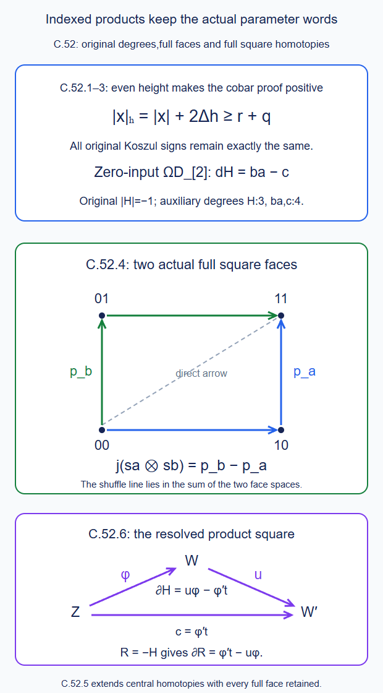
Proposition C.52.1.1 proves the reversible even height grading. Theorems C.52.2.1–C.52.3.1 construct the actual indexed projections and product modules. Theorems C.52.4.1–C.52.5.1 identify the full-face shuffle domains and central homotopy extensions. Proposition C.52.6.1 gives the exact resolved-square sign. Exercises C.52.7.1–C.52.7.2 retain zero-input parameter data and compute a nonzero boundary from clipped shuffle terms. Editable SVG source.

C.53. Native module coherence with the whole parameter family
The product comparison uses maps and homotopies in the full dg category of represented cofree modules. A change of module model changes the coherent cells as well as their edge maps. This section records their homogeneous signs, the triangle correction and a construction transporting the entire resolved parameter family while retaining its chosen edge representatives. The raw native product squares are on the actual indexed product models of C52. A module-valued coherent family and a whole nested-path coordinate are different objects; all several-transition and product/grafting restrictions must still be retained when using these constructions for tensor descent.
C.53.1. Signed full represented evaluation
Use the normalized full natural-transformation and graph-module models of C.33.2. The target category is a dg category \(B\); the source may have all its normalized unital higher operations. A full homogeneous natural-transformation component has its total degree in that bar model, including its dependence on the source bar word. It is not merely its object component. Keep finite additive represented objects throughout.
Lemma C.53.1.1. Represented evaluation is a dg functor from the opposite of the full natural-transformation category to the dg category of the represented cofree modules. On a bare homogeneous target map its degree-\(r\) action is \[ m\longmapsto(-1)^{r|m|}m\beta. \] On a full source bar word use the same formula on its homogeneous full transformation component, with the tensor evaluation signs, and reconstruct by the outside coactions. It retains all source actions and is compatible with parameter faces. After one total cochain shift, a degree-\(r\) map has the additional factor \((-1)^r\).
Proof. First take ordinary homogeneous target maps. For the displayed operator \(R_\beta\), the ordinary Hom differential gives \[ \begin{aligned} \partial R_\beta(m) &=(-1)^{r|m|}\bigl(dm\,\beta+(-1)^{|m|}m\,d\beta\bigr)\\ &\quad-(-1)^r(-1)^{r(|m|+1)}dm\,\beta\\ &=(-1)^{(r+1)|m|}m\,d\beta =R_{d\beta}(m). \end{aligned} \] The two terms containing \(dm\) cancel. For \(|\gamma|=s\), two successive evaluations have coefficient \((-1)^{r|m|+s(|m|+r)}\). Hence \(R_\gamma R_\beta=(-1)^{rs}R_{\beta\gamma}\), exactly the graded opposite composition sign. Identity evaluation is the identity. Thus this is an actual dg functor on represented mappings, with its correct contravariant direction.
For the full source action, apply that evaluation to each consecutive source block in the C.33.2 bar formula. Terms differentiating or merging the source inputs give exactly the same terms in the full transformation differential. Terms composing two adjacent source-image blocks are exactly the two twisted endpoint actions of that differential. Target unary terms are the calculation just given, with the degree of the entire homogeneous bar component. The remaining target-composition terms cancel by the dg Leibniz and associativity identities. These are all terms in the full module Hom differential, because a represented graph word crosses only once. Consequently evaluation commutes with the full differential.
For composition, cutting the source word into the two transformation blocks gives the same two consecutive evaluations. Moving their homogeneous component maps past the preceding suspended inputs gives exactly the tensor evaluation signs on both sides. The graded opposite sign already calculated is the only additional interchange. The outside coaction formula reconstructs the remaining components uniquely, proving both coaction equations and the full composition identity. This is the complete transformation part of C.33.2 with the homogeneous signs displayed.
On a cochain shift \([1]\) the source and target differentials are negated. The dg shift functor sends a degree-\(r\) map to \((-1)^r\) times its underlying map: substitution into the Hom differential gives the required degree-\(r+1\) shift sign. This also retains composition. It is the precise additional sign when restoring C41's one total cross suspension. Every formula uses only the original source word and its cuts, so restricts to every parameter face. \(\square\)
C.53.2. Transport the triangle and its three boundaries
Let \(\mathcal E\) be a dg category of actual full cofree module complexes over fixed cores. If needed, transport the target cores back through the already fixed \(g\), so that these are identity-core module maps. Suppose \[ a:X_0\to X_1,\quad b:X_1\to X_2,\quad c:X_0\to X_2 \] are closed degree-zero maps and \(H:X_0\to X_2\) has degree minus one with \(\partial H=ba-c\). At each vertex retain chain maps \(i_j:\widehat X_j\to X_j\), \(p_j:X_j\to\widehat X_j\) and an actual module homotopy \(\partial h_j=1-i_jp_j\).
Lemma C.53.2.1. The transported edges are \[ \widehat a=p_1ai_0,\qquad \widehat b=p_2bi_1,\qquad \widehat c=p_2ci_0. \] Their actual two-simplex is \[ \widehat H=p_2Hi_0-p_2b h_1a i_0, \qquad \partial\widehat H=\widehat b\widehat a-\widehat c. \] If the desired three closed edges instead satisfy \(a'=\widehat a+\partial A\), \(b'=\widehat b+\partial B\), \(c'=\widehat c+\partial C\), for specified degree-minus-one homotopies, the corrected simplex is \[ H'=\widehat H+B\widehat a+b'A-C, \qquad \partial H'=b'a'-c'. \] These formulas retain every supplied compatible face restriction.
Proof. The full Hom differential is a derivation and every displayed edge or inclusion/projection has degree zero. Thus \[ \begin{aligned} \partial\widehat H &=p_2(ba-c)i_0-p_2b(1-i_1p_1)a i_0\\ &=p_2b i_1p_1a i_0-p_2c i_0\\ &=\widehat b\widehat a-\widehat c. \end{aligned} \] For the replacement formula, its differential is \[ \begin{aligned} &\widehat b\widehat a-\widehat c +(b'-\widehat b)\widehat a\\ &\quad+b'(a'-\widehat a)-(c'-\widehat c) =b'a'-c'. \end{aligned} \] This retains the cross term already contained in \(b'A\); replacing it by \(\widehat b A\) would in general omit \((\partial B)A\). Each expression is a composite of actual module maps and homotopies, so the equality is in the complete module Hom complex, not only on bare central terms. By C.52.6 it is exactly the image of the free two-arrow generator in the resolved simplex. Restriction commutes with all these composites, proving the compatibility assertion. \(\square\)
In particular a change of module model does not preserve only the three edges: its middle-vertex homotopy contributes the explicit second term of \(\widehat H\). This is the two-simplex instance of the whole consecutive-word action transfer used in C50.
C.53.3. Chosen raw native product-square homotopies
Work over the extension field \(E\) of C.48.1 and retain its given entire calibrated enhanced strong monoidal comparison. Its pure core map is \(g\), and every pure state uses its specified power. Take one finite actual ordered list of native block functors with the C52 indexed models. Use its actual product-shuffle source domain; on a full execution face retain the rectangle subdomain of C.52.4.
Write \(Z,Z'\) for the two raw common-cobar block modules and \(W,W'\) for their actual once-suspended product modules. C.52.3 and C45 give fixed projections and normalized chain sections \[ \phi:Z\to W,\quad i_\phi:W\to Z,\qquad \phi':Z'\to W',\quad i'_{\phi}:W'\to Z', \quad \phi i_\phi=1,\quad\phi'i'_{\phi}=1. \] All four maps are over the identity respective cores. Let \(u:W\to W'\) be the shifted product of the individual full comparison maps, over the exact powers of \(g\). Let \(\tau:W\to W'\) be the original native block comparison interpreted on these product modules by the actual represented-module equivalences.
Theorem C.53.3.1. The original full monoidal comparison supplies an actual degree-minus-one module homotopy \[ R_0:W\to W',\qquad \partial R_0=\tau-u. \] For the chosen raw lift \[ t=i'_{\phi}\tau\phi:Z\to Z', \] an actual raw square homotopy is \[ R=R_0\phi,\qquad \partial R=\phi't-u\phi. \] The product-normalized choice \(t^{\rm prod}=i'_{\phi}u\phi\) satisfies the square exactly, and its homotopy from \(t\) is \[ K=-i'_{\phi}R_0\phi,\qquad \partial K=t^{\rm prod}-t. \] The construction retains the full factor faces of this actual supplied native product cell and has its calibrated leading cohomology map.
Proof. Before changing models, the full monoidality datum compares the native block comparison with the external product of its individual comparisons. This is the specified coherence cell of the actual enhanced strong monoidal comparison of C.48.1. Its full source-bar components are part of that datum; equality of the three cohomology maps is not substituted for them. Use the original mixed-input recording of C.48.2 on this cell, with the dg category of full represented modules as target. C.33.2's transformation construction and Section C.53.1 give all its module components, differential and composition, with the graded opposite and one-cross shift signs retained. The unital recording C.43.2 works for this dg target without assuming it has an augmentation.
Transport the actual block functors into the common-cobar models by C.52.3's represented-module equivalences. The projection \(\phi\) is precisely the represented target-mapping map induced by the canonical product projection, whose square with the source functor was proved strict in C.52.3. Its chosen chain section and homotopy are therefore actual model-equivalence data. For the product modules choose the tensor of the individual data with C41's single total suspension. Their degree-zero comparison transports as the product of the individual comparisons, so its edge is exactly \(u\). The other edge is the interpreted native comparison \(\tau\).
Section C.53.2's formula transports the complete resolved coherence cell, including the middle-vertex homotopy term. If boundary representatives were changed to these chosen projections or product representatives, its boundary-replacement formula uses exactly their supplied model-equivalence unit/counit homotopies. Thus it is a recorded two-simplex in the actual full module dg category, with the native edge \(\tau\) and product edge \(u\). Its third edge can be the identity on \(W\); equivalently use its degenerate first edge and these two parallel edges. Proposition C.52.6.1 identifies minus its two-arrow generator image as \(R_0\), proving \(\partial R_0=\tau-u\).
All these comparisons are over the same outside core powers. Indeed C.48.1 fixes those powers before recording the cells; the canonical \(\rho\) and product projections commute strictly with them by C.52.2 and C.41.1. Pulling the full represented equations to the common cores therefore leaves identity outside coactions after transport through \(g\). The resulting degree-minus-one component is an actual bicomodule homotopy over those powers. No homotopy correcting a pure state map has been silently omitted.
Now the remaining assertions are direct full-module identities: \(\phi't=\tau\phi\), so \[ \partial(R_0\phi)=(\tau-u)\phi=\phi't-u\phi. \] Also \(\phi't^{\rm prod}=u\phi\), and \[ \partial(-i'_{\phi}R_0\phi) =i'_{\phi}(u-\tau)\phi=t^{\rm prod}-t. \] The chosen lifts represent the original comparison because the sections and projections are actual module homotopy equivalences. The kernel SDRs and the original calibrated comparison induce the identity on the fixed mapping cohomology frames, proving the leading-map assertion.
The original cell and all its retained full factor faces are one supplied family. The recording uses their same original words, and C52/C45 give compatible projection data on those faces. Every transport and evaluation term consequently restricts to the same face term, including the two-simplex term. This proves the stated face claim. Restriction to a compatible execution face is the actual rectangle restriction, never the deletion of unsafe shuffle terms. \(\square\)
C.53.4. The explicit path-projection kernel contraction
Let \(\mathcal E\) be any dg category over the coefficient field; in the application its morphisms are full bicomodule maps with the full Hom differential. For a closed homotopy equivalence \(u:X\to Y\) use the path object of C.50.3. A degree-\(r\) map from \(u_i\) to \(u_j\) has components \[ \begin{aligned} f&:X_i\to X_j,\quad |f|=r,\\ g&:Y_i\to Y_j,\quad |g|=r,\\ a&:X_i\to Y_j,\quad |a|=r-1. \end{aligned} \] Its differential and composition are \[ \begin{aligned} D(f,g,a)&=(\partial f,\partial g, -\partial a+u_jf-gu_i),\\ (f_2,g_2,a_2)(f_1,g_1,a_1) &=(f_2f_1,g_2g_1, a_2f_1+(-1)^{|f_2|}g_2a_1). \end{aligned} \] The full dg identities were proved in C.50.3, with their essential last composition sign. Projection \(\pi_0\) keeps \(f\).
Lemma C.53.4.1. Suppose \(u_i=p_i:X_i\to Y_i\) has a chain section \(i_i\), with \(p_i i_i=1\), and a normalized homotopy \[ \partial h_i=1-i_i p_i,\qquad h_i^2=p_i h_i=h_i i_i=0. \] Then the kernel of \(\pi_0\) on the mapping complex from \(u_i\) to any \(u_j\) is contractible. On a homogeneous pair \((g,a)\) of total degree \(r\), its differential and contraction are \[ \begin{aligned} d_K(g,a)&=(\partial g,-\partial a-gp_i),\\ k(g,a)&=(-a i_i,(-1)^r a h_i). \end{aligned} \] They satisfy \(d_Kk+kd_K=1\), \(k^2=0\), including their full cofree module actions. These formulas retain every face on which the original retract data have compatible restrictions.
Proof. Put \(C=\operatorname{Hom}_{\mathcal E}(Y_i,Y_j)\), \(B=\operatorname{Hom}_{\mathcal E}(X_i,Y_j)\). The chain map \(f:C\to B\) is \(g\mapsto gp_i\), with retraction \(r:B\to C\), \(a\mapsto a i_i\). In degree \(s\), put \(H_B(a)=(-1)^s a h_i\). The Hom derivation identity gives \[ \partial H_B(a)+H_B(\partial a)=a(1-i_i p_i). \] Indeed the two terms containing \((\partial a)h_i\) have opposite signs, and the remaining term is \(a\partial h_i\). Thus \(\partial H_B+H_B\partial=1-fr\). Also \(rH_B=H_B f=H_B^2=0\), by the three normalized identities for \(h_i\). These are actual mapping-complex equations; postcomposition and precomposition retain the full coactions with their homogeneous signs.
The mapping kernel is the pair complex \(C^r\oplus B^{r-1}\), with the displayed differential. On it define \(k(g,a)=(-r a,-H_Ba)\). Direct substitution gives first component \(-r\partial a+r\partial a+rf g=g\). Its second component is \(\partial H_Ba+H_B\partial a+fr a+H_B f g=a\). Finally \(k^2=0\) since \(rH_B=H_B^2=0\). This proves the normalized contraction with its displayed homogeneous sign. Restriction commutes with every composite. \(\square\)
C.53.5. Transport the entire coherent module family
Let \(I\) be a finite directed parameter category. An actual coherent family of module objects has its full unital resolved recording \[ F:\Omega B(kI)\longrightarrow\mathcal E. \] This is the supplied entire family, not a diagram inferred from closed edge maps. Its free generators are nonempty composable strings of nonidentity arrows of \(I\). A string of length \(q\) has generator degree \(1-q\). Its differential merges adjacent arrows or splits into products of two shorter strings, with the original C.39.15 signs.
At each parameter object let \((i_i,p_i,h_i)\) be a normalized module retract from \(X_i=F(i)\) to a chosen \(Y_i\), as in Section C.53.4. For an original arrow \(\alpha:i\to j\), prescribe \[ \begin{aligned} G(\alpha)&=p_j F(\alpha)i_i,\\ A(\alpha)&=p_jF(\alpha)h_i. \end{aligned} \]
Theorem C.53.5.1. There is a unital dg functor \[ \mathscr H:\Omega B(kI)\longrightarrow\operatorname{Path}(\mathcal E) \] with object path \(p_i:X_i\to Y_i\), first projection exactly \(F\), and the displayed prescribed second and third components on every one-arrow generator. Its second projection \(G\) records an actual entire coherent family on the chosen module models. It includes all higher comparison components and an actual coherent equivalence to the original family. A previously assigned full face family can be retained whenever its path lifts agree on their actual free-generator intersections and have these same object/edge values. The construction is finite on each original generator and extends along compatible increasing finite corners without changing earlier values.
Proof. For an original degree-zero arrow put \(f=F(\alpha)\), \(g=p_j f i_i\), and \(a=p_j f h_i\). The first two are closed. The third satisfies \[ \partial a=p_j f(1-i_i p_i)=p_jf-gp_i. \] Thus \((f,g,a)\) is a closed path morphism with exactly the stated endpoints. Assign the coefficient identity to the path identity \((1,1,0)\). This defines the lift on all length-one free generators and their free products. It does not yet claim the higher coherence relations, which belong to the higher free generators.
Induct on the original string length \(q\ge2\). All terms in the generator differential \(dx\) involve shorter generators or products of them, so their lifted values are already assigned. Choose any graded preimage \(v\) of \(F(x)\) under \(\pi_0\) on the fixed mapping block; for example \((F(x),0,0)\) is a graded preimage. Set its degree-one defect \[ o=Dv-\mathscr H(dx). \] It lies in the kernel because \(\pi_0\mathscr H=F\) on shorter generators and \(F\) is a dg functor. It is closed: apply \(D\), use the already assigned chain equation on every shorter product and \(d^2x=0\). The explicit mapping-kernel contraction \(k\) of Section C.53.4 gives the corrected value \[ \mathscr H(x)=v-k o. \] Its projection remains \(F(x)\), and \(D\mathscr H(x)=\mathscr H(dx)\), since \(Dko=o\) for a closed kernel element. Extend multiplicatively. The dg Leibniz rule proves the chain equation on every product of the newly assigned generators. This completes the induction with every original sign.
There are finitely many strict-arrow strings in a finite directed category, bounded by its height range. No infinite series or limiting primitive is used. Full parameter faces are generated by the original strings whose vertices lie in that face. Merging removes vertices and splitting retains subsets, so the union of prescribed face generator complexes is differential-stable. Their agreeing path lifts give one assignment on that free subcategory. Perform the correction only on the remaining generators. This retains the full assigned faces exactly, rather than separately rechoosing a simplex on each face.
The same induction works in the actual dg category of full cofree modules: all homotopies and kernel corrections are actual module maps, and their full mapping differential is the one used throughout. Each new finite IC corner or finite family of parameter cells retains the already assigned generators and extends only the new ones. Every fixed original word receives its value at a finite stage.
Finally \(\pi_1\mathscr H\) is a dg functor because \(\pi_1\) is one by C.50.3. Its parameter edges have the prescribed compressed values, and every higher generator has the assigned coherent value. The whole path family supplies the equivalence to \(F\), with object components \(p_i\), all of which are homotopy equivalences. This is an actual resolved comparison including its higher homotopies, not an objectwise identification alone. \(\square\)
C.53.6. Solved examples
Exercise C.53.6.1 (intermediate). Let \(X\) have basis \(e,x\) in degree zero and \(y\) in degree one, with \(dx=y\). Let \(Y=ke\), let \(i:Y\to X\) be inclusion, \(p:X\to Y\) the projection, and \(h(y)=x\), all other values zero. Start with the strict triangle whose three vertex complexes are \(X\), whose three edges are identities, and whose two-simplex component is zero. Replace its middle vertex by \(Y\). Determine the transported triangle and explain why its two-simplex component is necessary.
Solution. The retraction satisfies \(pi=1\), \(dh+hd=1-ip\), and \(h^2=ph=hi=0\), by evaluation on the three displayed basis vectors. The outside vertex models have identity inclusions/projections and zero homotopies. Lemma C.53.2.1 gives \[ \widehat a=p,\qquad\widehat b=i,\qquad\widehat c=1_X, \qquad\widehat H=-h. \] Its differential is \(\partial\widehat H=ip-1_X=\widehat b\widehat a-\widehat c\). On \(x,y\) this is minus the identity and hence is nonzero. Keeping the three compressed edge maps but omitting the middle-vertex term would leave precisely this nonzero triangle defect. The transferred coherent triangle includes \(-h\) even though the original two-simplex was zero.
Exercise C.53.6.2 (intermediate). Keep \(X,Y,i,p,h\) from the previous exercise and use the path object \(u=p:X\to Y\). In the kernel of its first mapping projection, let \(x^*,y^*:X\to Y\) send \(x,y\), respectively, to \(e\) and kill the other basis vectors. Check the contraction of Lemma C.53.4.1 on \((g,a)=(0,x^*)\), of total degree one, and on \((1_Y,0)\), of total degree zero. What happens if the factor \((-1)^r\) is omitted?
Solution. The degrees of \(x^*,y^*\) are zero and minus one, and \(\partial x^*=0\), \(\partial y^*=x^*\). The corrected kernel homotopy has \[ k(0,x^*)=(0,-y^*). \] Its differential is \((0,x^*)\), while \(d_K(0,x^*)=0\). Thus \((d_Kk+kd_K)(0,x^*)=(0,x^*)\). On the degree-zero element, \(k(1_Y,0)=0\) and \(d_K(1_Y,0)=(0,-p)\). Applying \(k\) to the latter gives \((pi,ph)=(1_Y,0)\), which proves its contraction equation too. The square-zero identities follow here from \(x^*i=0\), \(y^*h=0\), \(h^2=ph=hi=0\).
Omitting the sign in the degree-one case gives \(k(0,x^*)=(0,y^*)\), whose differential is \((0,-x^*)\), the opposite of the required answer. This sign is needed in the full Hom complex before any higher parameter generator is corrected.
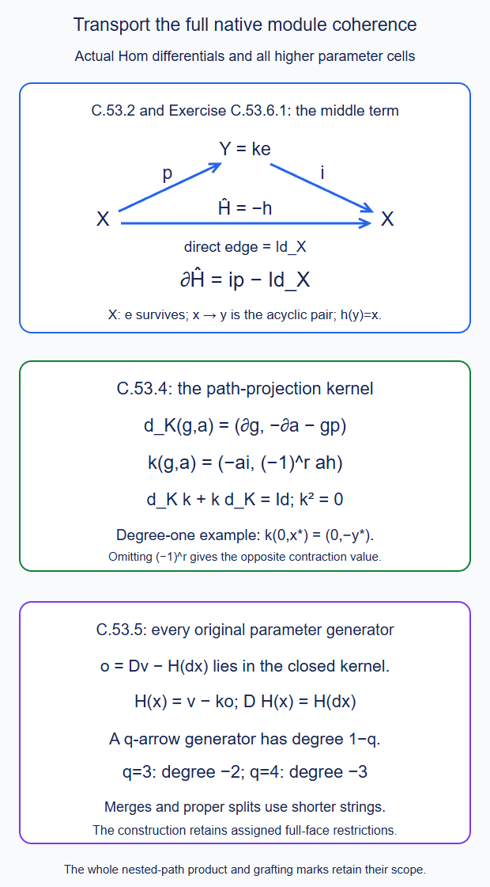
Lemmas C.53.1.1–C.53.2.1 prove the represented evaluation signs and triangle transport. Theorem C.53.3.1 gives the chosen raw native product-square homotopies. Lemma C.53.4.1 contracts the path-projection kernel,and Theorem C.53.5.1 transports the entire coherent parameter family. Exercises C.53.6.1–C.53.6.2 calculate the middle-vertex term and the nontrivial Hom sign. Editable SVG source.

C.54. Relative pure actions and coherent product normalization
A comparison with prescribed tensor core powers must retain the entire pure-state action. We recover the whole comparison relative to that action, then compute its homotopy to the chosen product lift. The last two results replace product edges within their entire coherent parameter family. Work with the actual cofree module and path models of C49–C53 over the fixed characteristic-zero coefficient field. The simultaneous product-shuffle prescriptions and all higher grafting equations retain their full domains.
C.54.1. Recovery relative to the full pure actions
Let \(A\) be a directed dg graph category, with pure state subcategories \(A_i\) and all its original several-transition products. There are no backwards cross arrows. Let \(B\) be the corresponding target category, and fix the actual strict pure functors \(q_i:A_i\to B_i\subset B\). Let \(M\) be the whole \((B,A)\)-bimodule of the given comparison prism.
For its restriction \(M_i\) in the source pure state put \[ R_i(y,x)=B(q_i x,y). \] Suppose an actual quasi-isomorphism between \(R_i\) and \(M_i\) is specified in the dg category of full \((B,A_i)\)-bimodules. This includes every pure-source bar component. An objectwise equivalence of left \(B\)-modules alone is not this hypothesis. All cofree modules and homotopies retain both outside pure actions and their full normalized bar components.
Theorem C.54.1.1. Under these hypotheses the recovered full enhanced functor \(F:A\to B\) can be chosen with restriction exactly \(q_i\) on every pure state. Its action equivalence to \(M\) retains the specified full pure bimodule equivalences. Its cross components are obtained by transferring the entire mixed action, with all several-transition components included. When a native coherent cell is interpreted using these same module equivalences and contractions, its restriction agrees with the restriction of this recovery; it is not an independently chosen comparison.
Proof. Work first in the dg category of full \((B,A_i)\)-bimodules, separately for each state. Invert a stipulated quasi-isomorphism there using C.50.1's mapping-cylinder construction and the full cofree kernel perturbation of C.45.2. For clarity one can arrange a strict normalized retraction to the exact prescribed model \(R_i\) after a harmless module cylinder enlargement. If \(p_i:M_i\to R_i\) is the resulting full quasi-isomorphism, use \[ L_i=M_i\oplus\operatorname{Cone}(1_{R_i})[-1], \qquad p_i'(m,a,b)=p_i(m)+b. \] This is the cofree mapping cylinder; when \(p_i\) has higher components, its projection has those same full components. Its central projection is surjective and its kernel is acyclic. The fixed-projection kernel argument gives actual full bimodule maps and homotopy \[ I_i:R_i\to L_i,\quad P_i:L_i\to R_i,\quad H_i, \qquad P_iI_i=1,\quad\partial H_i=1-I_iP_i, \] with \(H_i^2=P_iH_i=H_iI_i=0\). Every correction consumes outside bar letters, so the series is finite on each word. This is the full bimodule kernel proof, not a splitting only of the underlying vector spaces. The projection \(L_i\to M_i\) and its cylinder inclusion also have their actual normalized pure-bimodule contraction.
Extend the entire mixed \(A\)-action from \(M\) to \(L\) through that cylinder inclusion and projection. On every action involving a cross input, insert the projection on its incoming module end and the inclusion on its outgoing end. Their projection-inclusion composite is the identity on \(M_i\). Thus two adjacent mixed actions have exactly the original composite. The cylinder's own pure actions remain unchanged. The full mixed identities follow term by term from the original action identities and the fact that these are maps of both pure actions.
Now transfer only the mixed action along \((I_i,P_i,H_i)\). Absorb all pure actions and their unary differential in the underlying full \((B,A_i)\)-module structures. For a mixed source word partition its cross positions into nonempty consecutive blocks. Apply its original whole mixed-action component on each block, insert \(H\) between two successive block outputs, and apply \(I\) and \(P\) on the two ends. The outside pure bar inputs are included in these full bimodule maps, with their cofree tensor evaluation signs.
The proof of the complete action transfer in C.50.1 applies with these full pure-module complexes as its coefficient mapping complexes. Moving the differential past an inserted \(H\) gives \(1-IP\). Its identity terms cancel the adjacent original source-action terms, and its \(IP\) terms are the two transferred target-action blocks. The remaining terms are the original whole mixed-action identity. This checks every consecutive block and hence the complete action equation. The finite directed height bounds the number of cross positions; the cofree pure corrections were already finite wordwise. All sums are therefore finite on each original input.
On a pure word there is no mixed action to transfer. Its action is the already assigned \((B,A_i)\)-action on \(R_i\), which is exactly the represented action of \(q_i\). This is why no later independent pure-state replacement, with potentially different higher homotopies, is needed. Source coefficient identities act by the original true module identities; normalization retains them.
Recover the target \(B\) by the full represented Yoneda evaluation of C.50.1, with its opposite direction as stated there. Its section is strict Yoneda composition, and its normalized homotopy annihilates that section. On a pure word all the input maps are precisely the Yoneda images of \(q_i\). The first evaluation returns \(q_i\); every higher transfer tree contains a homotopy on a composed section value and is zero. Thus the recovered target is the original dg \(B\) and the pure functor is exactly \(q_i\), including all its prescribed normalized components. Mixed words retain their full transferred values.
Finally, restriction of these formulas to a chosen native cell uses the same original action components, the same module maps and the same contractions. Its consecutive partitions and their signs are the same ones. The full natural-transformation evaluation of C.53.1 is this restricted action formula. Therefore interpreting that cell through these stipulated data gives the actual restriction of the whole recovery. The entire action equivalence is the one produced by the same transfer, and its pure part is the retained bimodule equivalence. This proves the assertion without inferring relative pure compatibility from equality on objects or on cohomology. \(\square\)
C.54.2. The native exact-core comparison
Use the calibrated comparison prism of C48–C50. Its desired strict pure state functors are \[ q_i=\Omega B\bigl((\Omega g)^{\otimes n_i}\otimes1_{kI}\bigr). \] The single \(g\) and these literal powers are fixed before recovery. All target graph levels, actual parameter tags and several-transition strings are retained in \(B\).
Proposition C.54.2.1. The full pure bimodule equivalences in Section C.54.1 are supplied by this prism, so its whole endpoint recovery can be made relative to these exact \(q_i\)'s. Its canonical common-core comparison therefore has the exact powers \(g^{\otimes n_i}\otimes1_{D_I}\). A comparison of a chosen native block module, interpreted with this same recovery data, is the actual one-cross restriction of this full comparison, before any independent product projection normalization.
Proof. At a source object \(x\) the actual comparison parameter arrow gives the representing map of C.50.2. Its pure-source higher components are the original coherent state comparison, not a chosen objectwise extension. Record all those components by the full represented evaluation of C.33.2 and C.53.1. Its pure-source naturality equation is exactly the right \(A_i\)-module equation, including all source-word components. Its left \(B\)-module equation is the actual represented composition equation. Thus it is a genuine \((B,A_i)\)-bimodule map between \(R_i\) and the restriction of the entire prism module.
Its central map is the composition with the actual parameter arrow. Under the canonical counits it is precomposition by the given state equivalence, whose coherent inverse gives the two mapping-complex homotopies. C.50.2 proves the resulting central quasi-isomorphisms on every allowed target string. The cofree kernel argument then gives the full pure-bimodule equivalence, retaining all its action components. The stated hypothesis of Section C.54.1 is therefore fulfilled by actual prism data, not by an assumed contractible transformation space.
Apply the relative recovery. It retains the displayed strict pure functors, so C.43.1's strict naturality of the canonical common-input maps gives exactly the displayed common-core powers. Pull back the whole bar comparison by C.40.1's consecutive-cut construction; its chain defect vanishes at the central projection and on the pure parts, so coderivation uniqueness proves the full chain equation as in C.50.3. Every several-transition component is still included.
To interpret a native block, restrict the original full prism action and use the same pure-bimodule cylinder maps, contractions and Yoneda evaluation. The first theorem's restriction assertion makes this the literal one-cross restriction of the constructed full comparison. No unrelated core or input-corner equivalence has been introduced. This proves the claim. \(\square\)
C.54.3. The explicit homotopy to the product lift
Let \(T:Z\to Z'\) now be an actual one-cross restriction of the whole recovered comparison. Let \(\phi:Z\to W\), \(\phi':Z'\to W'\) be the C52 product projections, with sections \(i,i'\) and normalized homotopies \[ \partial h=1-i\phi,\qquad \partial h'=1-i'\phi'. \] All these equations are in the full bicomodule Hom complexes. Set \(\tau=\phi'Ti\). Interpret the original native product coherence cell using these same recovery data, and let \(\partial R_0=\tau-u\) be its actual homotopy of C53, where \(u\) is the shifted product of the individual comparisons.
Theorem C.54.3.1. The map \(T^{\rm prod}=i'u\phi\) has the exact product projection square. There is an actual full homotopy \[ \begin{aligned} K={}&-h'T-i'\phi'Th-i'R_0\phi,\\ \partial K={}&T^{\rm prod}-T. \end{aligned} \] The unnormalized whole restriction itself has raw square homotopy \[ R=\phi'Th+R_0\phi,\qquad \partial R=\phi'T-u\phi. \] These formulas retain all compatible full faces. After the actual one-cross minimal transfers, they give the homotopy required by the whole-graph gauge theorem C.51.3.1.
Proof. Every displayed map other than a homotopy is closed and of degree zero. Thus \[ \begin{aligned} \partial R &=\phi'T(1-i\phi)+(\tau-u)\phi\\ &=\phi'T-u\phi, \end{aligned} \] using \(\tau=\phi'Ti\). Similarly \[ \begin{aligned} \partial K &=-(1-i'\phi')T-i'\phi'T(1-i\phi) -i'(\tau-u)\phi\\ &=i'u\phi-T. \end{aligned} \] The three intermediate \(i'\phi'T\) and \(i'\tau\phi\) terms cancel exactly. These are complete module equations, so all pure inputs and higher action components have been retained. Also \(\phi'T^{\rm prod}=u\phi\), since \(\phi'i'=1\).
Compose \(K\) with the chosen chain inclusion and projection of the minimal one-cross models on its two ends. Its Hom differential is the corresponding difference of their two transferred comparison maps. Their bare leading cohomology maps are the calibrated identity; their finite cofree inverses therefore exist. The hypotheses of C.51.3.1 for this prescribed one-cross change are exactly met. That theorem extends its correction through every several-transition component of the minimal whole graph. It requires compatible supplied values on every simultaneous prescribed sector; this calculation does not remove that requirement.
Full face restriction commutes with every composite and with the same fixed-projection SDRs. Consequently \(K,R\), their transfers and the resulting individual-sector gauge have the claimed restrictions. \(\square\)
C.54.4. Replace edges in the whole coherent parameter family
Let \(F:\Omega B(kI)\to\mathcal E\) record the given entire coherent module family, for a finite directed parameter category \(I\). The objects \(X_i=F(i)\) and their full module differentials are fixed. For every original nonidentity arrow \(\alpha:i\to j\), suppose \(f_\alpha=F(\alpha)\) is to be replaced by a closed map \(g_\alpha:X_i\to X_j\), with a specified full degree-minus-one module homotopy \[ \partial K_\alpha=g_\alpha-f_\alpha. \] On unchanged arrows put \(K_\alpha=0\). The assignments include the actual arrow labels, including parallel arrows. On full parameter faces they are restrictions of the same assignments.
Theorem C.54.4.1. There is an entire unital dg functor \(G:\Omega B(kI)\to\mathcal E\), with the same objects and the prescribed \(g_\alpha\) on every original arrow. It comes with an actual resolved path equivalence from \(F\), whose object components are the identities. Every higher parameter generator is retained. The construction is canonical from the stated data and the fixed bar convention, is finite on each word, and commutes with full parameter-face restriction. It retains an entire previously assigned subfamily on which every \(K_\alpha\) is zero by taking the constant path lift on that subfamily.
Proof. Use the object paths \(1_{X_i}\) in \(\operatorname{Path}(\mathcal E)\). Their mapping projection kernel has differential and normalized contraction \[ d_K(g,a)=(\partial g,-\partial a-g),\qquad k(g,a)=(-a,0). \] These are Lemma C.53.4.1 with \(i=p=1\), \(h=0\), and one can also verify them directly: the first component of \(d_Kk+kd_K\) is \(-\partial a+\partial a+g=g\), the second is \(a\), and \(k^2=0\).
On the one-arrow generator set its path value to \[ \mathscr H(\alpha)=(f_\alpha,g_\alpha,-K_\alpha). \] It is closed because the third differential is \(\partial K_\alpha+f_\alpha-g_\alpha=0\). The object identity maps to \((1,1,0)\). Induct on the original length of a higher generator \(x\). The entire value of \(\mathscr H(dx)\) has already been assigned, since each merge and proper split uses shorter strings. Put \[ v=(F(x),0,0),\quad o=Dv-\mathscr H(dx),\quad \mathscr H(x)=v-ko. \] Exactly as in Theorem C.53.5.1, the defect is closed and belongs to the kernel of the first projection. Thus its corrected differential is \(\mathscr H(dx)\), and its first projection is still \(F(x)\). Free multiplicative extension gives the dg functor on every original word. Projection to the second component is the asserted entire \(G\). No new primitive is chosen in this formula: the kernel contraction is the fixed \((-a,0)\). Its third component on every generator of length at least two is zero, although its third components on products are the full signed path products and need not be zero.
Every formula uses the original labels and shorter subwords. Restricting to a full face therefore performs exactly the same recursion. More generally an assigned differential-stable union of face generators is retained by using those values and correcting only the other generators. If all its edge homotopies are zero, take its whole constant lift \((F,F,0)\). On its higher generators the displayed recursion gives that same value: its already assigned differential has third component zero, while \(Dv\)'s third component is \(F(x)\), so \(v-ko=(F(x),F(x),0)\). Thus the constant subfamily is retained.
The finite directed height bounds every original strict-arrow string. Along an increasing compatible family of finite corners the same formulas retain every earlier value. The path object components are identities, so the resulting entire path family is an enhanced equivalence. This proves the result in the actual full module Hom complexes, without any assertion that arbitrary transformation spaces are contractible. \(\square\)
For a triangle \(0<1<2\), write its original edges as \(a,b,c\) and its degree-minus-one generator image as \(H\), with \(\partial H=ba-c\). The formula gives exactly \[ H'=H+K_ba+b'K_a-K_c, \qquad \partial H'=b'a'-c'. \] This is Lemma C.53.2.1's full boundary replacement, including the term \((\partial K_b)K_a\) inside \(b'K_a\). Thus the higher-word recursion extends the actual triangle formula, with its original signs.
C.54.5. Normalize the chosen raw product squares coherently
Take the chosen raw native product models and the full supplied coherence family of C53. For a selected product-comparison edge write its current map as \(t=i'_{\phi}\tau\phi\) and its desired product map as \(t^{\rm prod}=i'_{\phi}u\phi\). Here \(u\) is the actual once-suspended tensor of the individual comparisons. Theorem C.53.3.1 constructs the actual degree-minus-one homotopy \[ K=-i'_{\phi}R_0\phi,\qquad \partial K=t^{\rm prod}-t. \]
Corollary C.54.5.1. For any finite compatible collection of these edges within the actual module-valued parameter family, the original coherent family admits a replacement whose selected edges are exactly their product maps and whose objects and outside core powers are unchanged. All its higher parameter cells are included, with the same full-face restrictions. Untouched full subfamilies may be kept exactly. The normalized product square \(\phi't^{\rm prod}=u\phi\) is an exact full module equation on every selected product domain.
Proof. Express the module category over the fixed outside cores by transporting through the one previously fixed \(g\), as in C53. The displayed \(K\)'s are actual module homotopies in that dg category. Their compatible face values are the ones provided by the same original native cell and its C52 fixed-projection data. Apply Section C.54.4 with these \(K\)'s on the selected edges and zero on unchanged edges. Its entire path construction keeps the objects and all outside core maps, changes the edge to \(t+\partial K=t^{\rm prod}\), and assigns all the higher parameter generators. Its relative statement keeps every stipulated untouched full subfamily. The exact square follows from \(\phi'i'_{\phi}=1\), giving \(\phi't^{\rm prod}=\phi'i'_{\phi}u\phi=u\phi\). These are complete module equations, including all consumed-core components. No several-transition operation of a nested path graph has been projected away or inferred from this parameter-family statement. \(\square\)
C.54.6. Solved examples
Exercise C.54.6.1 (intermediate). Let \(X\) have basis \(e,x\) in degree zero and \(y\) in degree one, with \(dx=y\). Put \(h(y)=x\), all other values zero, and let \(E=dh+hd\). Start with the identity-valued strict triangle on three copies of \(X\). Replace its first two edges by \(a'=b'=1+E\), keep its direct edge \(c'=1\), and use edge homotopies \(K_a=K_b=h\), \(K_c=0\). Compute the new two-simplex and its differential. Identify the term lost by using the old edge \(b\) in place of \(b'\) in its formula.
Solution. The operator \(E\) is the identity on \(x,y\) and zero on \(e\). Hence \(E^2=E\), \(Eh=h\), and \(E\) is closed. The new edges are chain isomorphisms: they act by one on \(e\) and by two on \(x,y\). Each edge difference is \(\partial h=E\). Theorem C.54.4.1 gives \[ H'=h+(1+E)h=3h. \] Its differential is \(3E\), which is exactly \[ b'a'-c'=(1+E)^2-1=3E. \] Using the old \(b=1\) would give \(2h\), with differential \(2E\), leaving defect \(-E\ne0\). The missing term is \((\partial K_b)K_a=Eh=h\). Thus both edge changes must be retained when computing the coherent triangle.
Exercise C.54.6.2 (advanced). Use the algebraic example \(R=k[t]/(t^2)\), with \(|t|=0\). Let \[ N=Re\oplus Rf\oplus Rx\oplus Ry, \quad |e|=|y|=0,\quad |f|=|x|=-1,\quad dx=y, \] with all other differentials zero, and put \(V=Re\oplus Rf\) with zero differential. Make three \(R\)-linear retracts from \(N\) to \(V\) as follows. The middle one has its ordinary inclusion and projection and homotopy \(h_1(y)=x\). For the first take \(I_0(e)=e+ty\), \(I_0(f)=f\), the ordinary projection \(P_0\), and \(h_0(y)=x\), \(h_0(e)=-tx\). For the last take the ordinary inclusion \(I_2\), the projection \(P_2(x)=-f\), \(P_2(e)=e\), \(P_2(f)=f\), \(P_2(y)=0\), and \(h_2(y)=x+f\). Unspecified homotopy values are zero. Check these retracts and transport the identity triangle on \(N\). What is its higher component, and what happens to the pure \(R\)-action?
Solution. The compositions \(P_iI_i\) are the identity on \(e,f\). On the first model, \((1-I_0P_0)(e)=-ty\) and \((dh_0+h_0d)(e)=-ty\); on \(x,y\) both sides are the identity and on \(f\) both are zero. On the last model, \((1-I_2P_2)(x)=x+f=h_2(dx)\), while both sides send \(y\) to \(y\) and kill \(e,f\). The middle identities are the ordinary acyclic-pair contraction. These computations also give \(h_i^2=P_ih_i=h_iI_i=0\) on each basis vector.
All three maps and homotopies are \(R\)-linear. Thus for every pure word length \(r\ge0\), \[ P_i t^r I_i=t^r,\qquad h_i t^r I_i=0. \] The entire pure action is retained exactly, and the transfer terms with an internal homotopy on a pure input are zero. All three compressed triangle edges are the identity on \(V\). Its higher component is \(H'=-P_2h_1I_0\). Directly, \[ H'(e)=-P_2h_1(e+ty)=-P_2(tx)=tf, \qquad H'(f)=0. \] It is a nonzero degree-minus-one closed map, as required by the zero triangle defect on \(V\). Its pure \(t\)-linearity is also exact. This finite algebraic module example illustrates relative recovery; it is not an identification of \(R\) with a geometric IC endomorphism algebra. Fixing the pure actions does not discard mixed higher components.
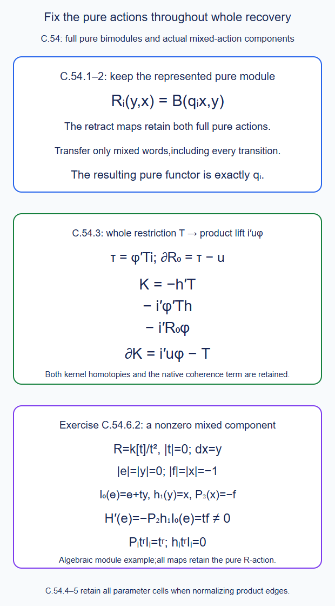
Theorems C.54.1.1–C.54.3.1 prove relative recovery,the native exact-core application and the full product homotopy. Theorem C.54.4.1 and Corollary C.54.5.1 replace edges throughout the coherent parameter family. Exercises C.54.6.1–C.54.6.2 compute the triangle cross term and a nonzero higher action with the pure algebra action retained. Editable SVG source.

C.55. Central shuffle retractions and simultaneous linear prescriptions
An extension of a central Taylor map need not be a reverse coalgebra map. We construct an ordered chain retraction of the actual relative parameter shuffle,prove its exact regrouping and interchange laws,and use it before the central projection in a cofree module. This gives an explicit way to verify all linear relations in a sum of product-shuffle domains when their prescribed values have the stated retraction form.
The shuffle and Alexander–Whitney setting is discussed in Boris Shoikhet, A bialgebra axiom and the Dold–Kan correspondence,arXiv:1109.5441v2, Sections2.1–2.2. The relative bars here omit outer endpoint faces;the proofs below establish their formulas and all signs directly. This gives a sufficient compatibility criterion for the native gauge application. The relative extension in Section C.56 permits homotopy primitives to be adjusted without imposing this original retraction form.
C.55.1. An ordered chain retraction on the relative bars
For finite directed categories \(I_1,\ldots,I_m\), set \(D_i=B_{S_i}(kI_i)\), \(D=B_S(k\prod_iI_i)\). A reduced ordinary arrow in the product has a nonempty support: the coordinates where its actual arrow is nonidentity. Its bar suspension is odd of degree minus one. Every arrow and its actual parallel-arrow label is retained. Write words in target-to-source order as before.
Define a graded map \(r_m:D\to\bigotimes_iD_i\) as follows. It kills a word containing an arrow supported in two or more coordinates. It also kills a word whose single-coordinate labels are not weakly increasing in target-to-source order. On a remaining word, group its original letters in coordinate order and return the tuple of its factor bar words, with coefficient one. Empty factor words retain their actual vertex identities. An entirely empty word maps to the tuple of those identities. There is no arbitrary deletion of a parameter vertex in this definition: each retained factor word is its actual coordinate projection.
Theorem C.55.1.1. The map \(r_m\) is an endpoint-preserving chain map and is a left inverse to the actual shuffle \(j_m:\bigotimes_iD_i\to D\). Its iterated projections regroup strictly for every ordered partition of the factors. For an ordered partition \(\pi\) into consecutive blocks, write \(j_\pi\) for the shuffle of their product-category bars. Then \[ r_m j_\pi=\bigotimes_{B\in\pi}r_B, \] with the literal ordered regrouping on the right. These are linear chain maps; \(r_m\) is generally not a coalgebra map.
Proof. There is no internal unary differential on the ordinary index arrows. The bar differential only merges adjacent actual arrows, with its original suspended sign. Nonidentity arrows form an augmentation ideal in each directed category: a nonzero composable product is again nonidentity. Thus a word with a mixed-support arrow remains mixed under every merge involving it, or gives zero. Every other merge leaves that arrow present. Its image under \(r_m\) and the image of its differential are both zero.
Next take a word containing an inversion of its coordinate labels. A same-coordinate merge leaves an inversion unless its product is zero; a distinct-coordinate merge makes a mixed-support arrow. Thus this kernel type is also preserved by the differential. Finally, on a word whose coordinate labels are ordered, merges within a factor block have exactly that factor's bar differential sign, multiplied by the parity of the preceding factor word lengths. Those are precisely the tensor differential signs on \(\bigotimes_iD_i\). Merging at a block boundary creates a mixed-support arrow and is killed. This proves the full chain equation, including every type of adjacent merge.
In a shuffle of factor words, exactly one interleaving is in increasing coordinate order. It is the original concatenation of the ordered factor words, so its Koszul sign is plus one. Every other interleaving contains an inversion and is killed. Its retained factor projections are the original factor words. Hence \(r_mj_m=1\), including all empty-word and actual object cases.
For an iterated ordered projection to be nonzero, its arrows must each lie in one final factor and its labels must be ordered between blocks and within each block. This is exactly the single global increasing-label condition. The surviving factor words and signs are identical. This proves strict regrouping. For \(r_mj_\pi\), if a block input fails its own ordered projection, every shuffle output fails the global one. Otherwise only the interleaving keeping the consecutive blocks in their original order survives, with sign one. This gives the stated formula.
For the coalgebra limitation, take two nonempty one-letter factor words \(a,b\). The canonical concatenated product bar word has image \(a\otimes b\). The coproduct of this tensor contains both middle cuts, including the one with the second-factor letter on the left and the first-factor letter on the right, with their odd interchange sign. The original concatenated word has only its one original middle cut. Its projected coproduct therefore lacks the other nonzero tensor term. The two terms have different factor/endpoint labels, so cannot cancel. This proves that \(r_m\) need not preserve the coproduct. \(\square\)
C.55.2. The exact signed four-factor interchange
For four ordered index factors use the coordinate permutation \((I,J,K,L)\mapsto(I,K,J,L)\). There are two linear chain maps from \(D_{I\times J}\otimes D_{K\times L}\) to \(D_{I\times K}\otimes D_{J\times L}\): first shuffle, permute coordinates and apply the two-block retraction; or first apply the two input retractions, interchange the middle two factors with their Koszul sign, and shuffle within the resulting two output groups.
Theorem C.55.2.1. These two maps are equal, with every actual arrow label and suspended sign retained.
Proof. If an input word contains an arrow changing both of its coordinates, the first composite always has a mixed-support arrow between its two final output groups and is killed. The second composite is killed by the corresponding input retraction. If an input word has its two coordinate labels in the wrong order, any shuffle preserves that original order. The offending second-group letter still precedes the first-group letter, so the final retraction kills it. The other composite is again zero. These cases exhaust input words killed by either input retraction.
It remains to consider ordered input words with lengths \(a,b\) in their \(I,J\) blocks and \(c,d\) in their \(K,L\) blocks. A shuffled word survives the final retraction precisely when all its \(I,K\) letters precede all its \(J,L\) letters. Its choices are exactly an \((a,c)\)-shuffle in the first output group and an \((b,d)\)-shuffle in the second. This is a bijection of terms with the two separate shuffles in the other composite, preserving each actual arrow and its endpoints.
The global shuffle sign has the signs of those two shuffles, together with the sign for moving every \(K\)-letter across every \(J\)-letter. All these letters are odd, so the latter is \((-1)^{bc}\). This is exactly the tensor Koszul sign interchanging the two middle bar words in the second composite. Thus the coefficients of each matching term agree. Empty blocks give the same argument with the relevant exponent zero. This proves the identity on every input basis word and hence linearly. It is an identity for the actual relative bars, proved without using outer simplicial faces. \(\square\)
The retraction preserves full factor faces, since its retained factor words use only the original coordinate vertices. For an arbitrary full subcategory of the product, its output need not belong to the safe rectangle domain of C.52.4. In the square, a three-vertex face can contain the canonical two-step word while omitting the other corner. Its retraction is the two-letter factor tensor, whose full shuffle visits that omitted corner as well. Thus a reverse map of entire full-face coalgebras has not been constructed.
C.55.3. A central extension respecting the whole sum of product domains
Use an actual once-suspended product one-cross module of C41/C52. Its bare central mapping block is the prescribed tensor of its individual mapping blocks; its outside IC cores already retain their ordered factor decomposition. Suppose the outside index cores are global product bars. On the underlying graded cofree module apply the ordered retraction to each outside index run, keep the central tensor identification, and perform the C41 Koszul regrouping. Call the resulting graded linear map \(\mathcal R\). The actual module shuffle embedding \(\mathcal J\) has \(\mathcal R\mathcal J=1\). No assertion that \(\mathcal R\) commutes with the full module action differential or its coactions is needed or made.
Proposition C.55.3.1. For a homogeneous central Taylor map \(c\), retaining endpoint and string labels, on the finest factor product model, \(\widetilde c=c\mathcal R\) is a homogeneous linear extension of its central values to the global indexed model. Its full cofree extension is a bicomodule map, restricts to the prescribed map on the actual product-shuffle submodel, and preserves every full parameter face through its central endpoints. For an ordered partition \(\pi\), if the prescribed coarser central values are precisely \[ c_\pi=c\Bigl(\bigotimes_{B\in\pi}\mathcal R_B\Bigr), \] then this single extension satisfies all those prescriptions at once. In particular they define a well-defined linear map on their actual sum, including any relations not detected by pairwise intersections.
Proof. The retraction identity in Section C.55.1 applied to the two outside runs, followed by the inverse fixed regrouping, proves \(\mathcal R\mathcal J=1\). Hence the central restriction of \(c\mathcal R\) is exactly \(c\). Reconstruct the full homogeneous bicomodule map by equation(C.39.5), including its degree evaluation sign. Both it and the original product map followed by the shuffle embedding have the same outside core maps and central Taylor values. The cofree uniqueness proof C.39.2 makes their restrictions equal on the entire product submodel, not only on bare central inputs.
On a full parameter face, every outside cut remains in that face and the central output has the endpoints of the consumed original input. Those endpoints lie in the face, whose bare central block is the full block at those endpoints. C.52.5 therefore proves that the reconstructed map preserves that face, even when \(\mathcal R\) itself does not take it into a safe rectangle. The retraction was used only before the central projection; no forbidden outside word is reconstructed.
For each ordered partition, Section C.55.1's exact identity \(r_mj_\pi=\bigotimes r_B\), on both outside runs, gives the corresponding identity for \(\mathcal R\) and that partition's module shuffle. Consequently \(\widetilde c\) restricts to exactly the stated \(c_\pi\). As all these values are restrictions of one linear map, every relation in the sum of the prescribed input subspaces is automatically respected. This supplies the asserted actual-sum certificate. Section C.55.2 gives its additional exact interchange identity when two ordered groups of factor cores are exchanged and shuffled. \(\square\)
C.55.4. Solved examples
Exercise C.55.4.1 (intermediate). In the product of two copies of \([1]\),let \(A_{\rm top}:01\to11\), \(A_{\rm bottom}:00\to10\), \(B_{\rm left}:00\to01\), \(B_{\rm right}:10\to11\). Put \(w=sA_{\rm top}|sB_{\rm left}\). Compute its ordered retraction and the defect of its coproduct equation. Let \(J\) be the full face on \(00,01,11\). Does the retracted tensor have a full shuffle in \(D_J\)?
Solution. Let \(a,b\) be the one-letter factor bars. Both have degree minus one,and the word has its factor labels in the prescribed order. Thus \(r_2(w)=a\otimes b\). In addition to its two outer cuts,the tensor coproduct has middle terms \[ \begin{aligned} &(a\otimes1_1)\otimes(1_0\otimes b)\\ &\quad-(1_1\otimes b)\otimes(a\otimes1_0). \end{aligned} \] The original word has only its middle cut \(sA_{\rm top}\otimes sB_{\rm left}\),whose retracted image is the first displayed term. Consequently \[ \begin{aligned} \Delta r_2(w)&-(r_2\otimes r_2)\Delta w\\ & =-(1_1\otimes b)\otimes(a\otimes1_0)\ne0. \end{aligned} \] The tensor endpoints identify its factors with the missing cut \(-sB_{\rm right}\otimes sA_{\rm bottom}\). The minus sign is the interchange of the two odd bar letters. Hence the ordered retraction is not a coalgebra map.
The shuffle of \(a\otimes b\) is \(sA_{\rm top}|sB_{\rm left}-sB_{\rm right}|sA_{\rm bottom}\). Its second word visits \(10\),which is absent from \(J\). Thus \(w\in D_J\) does not imply that its retracted tensor belongs to the safe rectangle domain of Theorem C.52.4.1. This is why the retraction is used at the central Taylor map before the outside coactions are reconstructed.
Exercise C.55.4.2 (intermediate). Take three one-letter odd factor bars \(a,b,c\) from three copies of \([1]\),and use target-to-source word order. Let a homogeneous central coordinate have value \(\lambda\) on \(a\otimes b\otimes c\). Extend it by the ordered retraction. Compute its values on the six interleavings. Check that the two ordered regroupings \((ab)|c\) and \(a|(bc)\) give the same value on the full three-factor shuffle.
Solution. Write \(ABC\) for the word in that coordinate order, with the actual coordinate arrows at the uniquely determined intermediate vertices;use the analogous notation for its other interleavings. Only \(ABC\) survives \(r_3\). Thus the extended central map has value \(\lambda\) there and zero on the other five words. The full signed shuffle is \[ \begin{aligned} &ABC-ACB-BAC\\ &\quad+BCA+CAB-CBA. \end{aligned} \] Its value is therefore \(\lambda\). To check the actual regrouping relation,let \(AB,BA\) be the two words in the first product bar. Their shuffles with \(C\) are \[ \begin{aligned} (AB)\mathbin{\mathrm{sh}}C&=ABC-ACB+CAB,\\ (BA)\mathbin{\mathrm{sh}}C&=BAC-BCA+CBA. \end{aligned} \] Their difference is the displayed full shuffle,and their central values are \(\lambda,0\). For the other grouping, \[ \begin{aligned} A\mathbin{\mathrm{sh}}(BC)&=ABC-BAC+BCA,\\ A\mathbin{\mathrm{sh}}(CB)&=ACB-CAB+CBA. \end{aligned} \] Again their difference is the same full shuffle,and their values are \(\lambda,0\). Thus the two product-domain expressions satisfy the same actual signed linear relation after extension. Each sign is the parity of the permutation of the original three odd letters. This is a concrete instance of the whole-sum certificate in Proposition C.55.3.1.
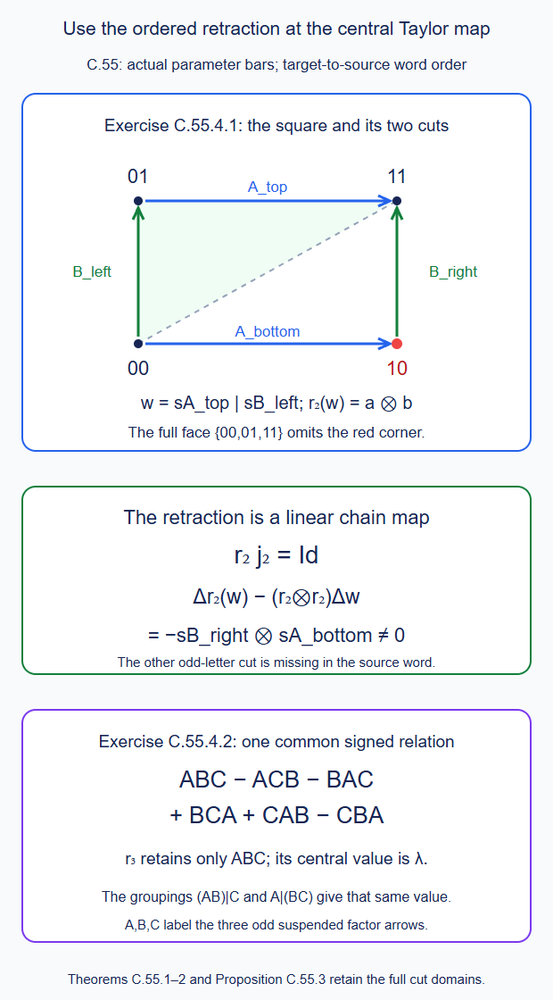
Theorems C.55.1.1–C.55.2.1 prove the ordered retraction,regrouping and full signed interchange. Proposition C.55.3.1 extends compatible central prescriptions on their actual sum. Exercises C.55.4.1–C.55.4.2 compute the missing coproduct cut and the common three-factor shuffle relation. The retraction is used before the central projection;it is not a reverse coalgebra map. Editable SVG source.

C.56. Commuting shuffle cuts and full relative extension
Ordered product domains admit simultaneous linear extension because their actual cut projections commute. Their common decomposition also supplies an acyclic relative quotient. Passing to the full cofree module requires its complete action differential; a finite perturbation contracts that relative Taylor kernel. The resulting extension theorem permits actual homotopy primitives to be adjusted and glued on product intersections. Its native application requires the specified chain submodels and compatible closed product maps.
C.56.1. The ordered cut projections commute
Let \(D=D_{I_1\times\cdots\times I_m}\), with the same finite directed index categories as C55. For a cut \(c\in\{1,\ldots,m-1\}\) write \[ P_c=j_c r_c:D\to D, \] where the two blocks are the factors before and after that cut, and the shuffle and ordered retraction are the actual C55 chain maps. For a set of cuts \(T\), let \(\pi_T\) be its ordered interval partition and put \(P_T=j_{\pi_T}r_{\pi_T}\), with \(P_\varnothing=1\).
Theorem C.56.1.1 (the exact cut-projection algebra). These are chain idempotents and satisfy \[ P_TP_U=P_{T\cup U}=P_UP_T. \] Consequently their images have the common decomposition \[ \begin{aligned} D&=\bigoplus_{E\subseteq\{1,\ldots,m-1\}}D_E,\\ D_E&=\operatorname{im}\left( \prod_{c\in E}P_c\prod_{c\notin E}(1-P_c)\right),\\ \operatorname{im}P_T&=\bigoplus_{E\supseteq T}D_E. \end{aligned} \] Their finite sums and intersections therefore form a distributive lattice of subcomplexes. In particular a sum of product-shuffle domains contains no additional unresolved linear relation once its maps agree on all their pairwise intersections.
Proof. Each \(r_cj_c=1\) by C.55.1, so \(P_c^2=P_c\). Take two cuts \(c<d\), and combine the factors into the three consecutive blocks \(A,B,C\). C.55.2 with the fourth factor the coefficient unit gives the exact identity \[ r_{A,BC}j_{AB,C} =(1_A\otimes j_{B,C})(r_{A,B}\otimes1_C). \] Both sides keep all original endpoints; the unit bar contributes only its degree-zero coaugmentation. Multiply on the left by \(j_{A,BC}\) and on the right by \(r_{AB,C}\). Strict shuffle associativity and ordered retraction regrouping then give \[ P_cP_d=j_{A,B,C}r_{A,B,C}. \] Using the other unit placement in C.55.2 gives \(P_dP_c=j_{A,B,C}r_{A,B,C}\) as well. This proves commutativity and the formula for two cuts, including their full suspended signs.
Insert the remaining cuts one at a time. The same identity splits the one current block containing the new cut; associativity and regrouping leave the other blocks unchanged. Induction gives \(P_T=\prod_{c\in T}P_c\) and hence the asserted multiplication law. These are chain maps because all the original factors are.
For commuting idempotents the displayed products selecting an eigenvalue zero or one at every cut are themselves idempotents. Two different choices have a factor \(P_c(1-P_c)=0\), so their images are disjoint. Expanding \(\prod_c(P_c+(1-P_c))=1\) gives their sum as the identity. This proves the direct-sum decomposition in the actual chain complexes. Each \(P_T\) acts by one exactly on the indicated summands. Sums and intersections are therefore unions and intersections of these common summand sets, proving distributivity.
On a common summand belonging to two prescribed images, agreement on their pairwise intersection makes their linear values identical. Assign that value on each summand included in the sum, and extend linearly. This proves the stated gluing assertion for any finite family. It is a consequence of the proved common decomposition, not an assumption about arbitrary arrangements of subspaces. \(\square\)
C.56.2. One contraction can retain every ordered product domain
Let \(C_0=\{1,\ldots,m-1\}\) be the full cut set. The finest product shuffle is \(j_{C_0}:\bigotimes_iD_{I_i}\to D\). It is a quasi-isomorphism by the actual finite-height shuffle proof C.42.1, or C.39.3 after the even height regrading of C.52.1.
Theorem C.56.2.1 (a common normalized index-bar contraction). There is a normalized contraction \[ \left(j_{C_0},r_{C_0},H\right): D\rightleftarrows\bigotimes_iD_{I_i}, \] with \[ dH+Hd=1-P_{C_0},\quad H^2=r_{C_0}H=Hj_{C_0}=0, \qquad HP_T=P_TH \] for every ordered cut set \(T\). The choices can retain a finite family of full factor faces and an increasing compatible system of finite factor corners. They are made blockwise at fixed endpoints and height jump. No preservation of an arbitrary nonrectangular full product face is asserted for this outside-bar homotopy.
Proof. Every cut shuffle is a quasi-isomorphism and has its chain left inverse, so each \(P_c\) induces the identity on \(H^\bullet D\). For a summand \(D_E\) with \(E\ne C_0\), choose a cut not in \(E\). Its summand projector contains \(1-P_c\), which induces zero on cohomology. A chain idempotent splits the complex and its cohomology; hence this summand's cohomology is zero. It is split contractible over the field by C.30.1. Choose a normalized contraction on each of those acyclic summands and take their direct sum. Put zero on \(D_{C_0}=\operatorname{im}P_{C_0}\). This gives precisely \(dH+Hd=1-P_{C_0}\) and \(H^2=0\).
It commutes with every cut projector since each projector is scalar zero or one on each summand. Its range lies in the kernel of \(P_{C_0}\), giving \(r_{C_0}H=0\), and it vanishes on the finest image, giving \(Hj_{C_0}=0\). All summands retain the original endpoint and height blocks; choose their splittings there.
A full factor face is preserved by every shuffle and ordered retraction. Thus each of its summand parts is the image of the same summand projector on that face. These parts have distributive original-word support sums and intersections: the projector preserves each face, so its image on an intersection is the intersection of its images. Every finite intersection is a common factor face. The preceding acyclicity proof applies to each nonfinest summand on that face as well. The acyclic face-union and quotient-splitting construction of C.50.2 therefore extends the chosen contraction to each next face without changing its previous values. Do this separately in each summand and then take their sum. It retains commutation with the cut projectors. The same relative construction retains all earlier blocks in an increasing finite system. This proves the asserted face and corner statement. \(\square\)
C.56.3. The whole sum of product domains and its relative Hom kernel
Take a nonempty finite collection \(\mathcal T\) of cut sets and put \(U=\sum_{T\in\mathcal T}\operatorname{im}P_T\). Define \[ Q_U=1-\prod_{T\in\mathcal T}(1-P_T). \]
Theorem C.56.3.1 (acyclic product union and linear homotopy extension). The operator \(Q_U\) is a chain projector with image exactly \(U\), and \(U\hookrightarrow D\) is a quasi-isomorphism. Its quotient is split contractible, using the contraction in Theorem C.56.2.1. For any target complex \(V\), the kernel of restriction \(\operatorname{Hom}(D,V)\to\operatorname{Hom}(U,V)\) is contractible. Pairwise compatible chain maps on the product domains extend to a chain map on \(D\). If a closed global map \(L\) of degree zero has a specified degree-minus-one primitive \(K_U\) on \(U\), then \(K_U\) extends to a global primitive of \(L\).
Proof. On the common summand \(D_E\), the operator \(Q_U\) is one if any selected \(T\) is contained in \(E\), and zero otherwise. Thus it is exactly the projector onto the sum described in Theorem C.56.1.1. Every \(P_T\) induces the identity on cohomology; each factor \(1-P_T\) induces zero. Since the collection is nonempty, \(Q_U\) induces the identity. Its split image inclusion is therefore a quasi-isomorphism. The finest summand is contained in \(U\). The common contraction \(H\) preserves every selected image and therefore \(U\), and induces a normalized contraction of \(D/U\).
Write that quotient contraction as \(h_Q\). On a homogeneous degree-\(r\) map \(f:D/U\to V\), set \(\mathsf h(f)=(-1)^r f h_Q\). The Hom derivation calculation of C.53.4 gives \(\partial\mathsf h+\mathsf h\partial=1\) and \(\mathsf h^2=0\). This is exactly the restriction kernel, because its maps factor through \(D/U\). Thus it is contractible.
The gluing statement of Theorem C.56.1.1 gives one well-defined chain map \(f_U:U\to V\) from the pairwise compatible chain maps; its extension is simply \(f_UQ_U\). For the primitive statement put \(K_0=K_UQ_U\), so the closed defect \(e=L-\partial K_0\) vanishes on \(U\). It defines a closed degree-zero quotient map, whose primitive is \(e h_Q\). Pull that map back along the quotient and add it to \(K_0\). The result has differential \(L\) and restricts to \(K_U\). This proves the full relative extension assertion in the ordinary Hom complexes. \(\square\)
The ordinary Hom complex in Theorem C.56.3.1 is the leading coefficient complex for the later cofree module Taylor problem. Extending these conclusions to the full module differential requires retaining its source and target action terms; that extension is not replaced by the chain property of the ordered index retraction alone.
C.56.4. The precise full Taylor restriction problem
Use one cofree one-cross module \(Z=L\otimes sN\otimes A\) over common pure IC tensor cores with finite directed index bars. Fix an ordered list of \(m\) root factors. Its outside IC cores are the literal ordered tensor powers of the same minimal \(C\). Its index cores are bars of the corresponding product parameter categories. At each actual endpoint/central-label block the graded central space has the fixed root tensor identification. A cut projector acts on both outside index runs and is the identity on the central block and IC factor words. Thus its image is the graded product-shuffle submodel for that cut. Empty outside words retain their scalar object identities.
Assume each selected cut submodel is an actual chain subbicomodule along its outside shuffle maps, with the stated product differential. The full source differential preserves every such submodel. All their finite intersections have the corresponding refined product model. Let \(U\) be their nonempty finite sum. These are model hypotheses, not conclusions inferred solely from the index-bar calculation.
Let \(Z'\) be the full target cofree module, and fix its outside core comparison maps \(g_L,g_R\). They are the prescribed normalized common tensor powers, tensored with the index identities. In particular they commute with each actual product shuffle. A full homogeneous bicomodule map along those core maps is determined by its central Taylor map through the cofree formula, with the degree evaluation sign. Its differential is the complete Hom differential \(\partial F=d'F-(-1)^{|F|}F d\).
Theorem C.56.4.1 (contractible full Taylor restriction kernel). Under these hypotheses, the kernel of restriction of full Taylor maps from \(Z\) to \(U\) is contractible. Its contraction is finite on each original input word and retains the fixed endpoints,root labels and core maps. This includes all source and target module-action terms in the full Hom differential. It does not require the ordered index projections to be full module chain maps.
Proof. Work first with the differential \(\partial_0\) which retains the source and target central unary differentials and the internal index-bar differentials. The minimal IC core unary differentials are zero. All remaining pure IC and module-action terms will be retained as a perturbation below.
On the pair of outside index runs the graded cut projectors are the tensor products of their two cut projectors. They commute and multiply by union of cut sets, by the commuting-cut theorem. Their maps on cohomology are the identity, since each outside shuffle is a quasi-isomorphism and tensoring preserves it over the field. They commute with the central unary differential and are the identity on the IC factor words. The common-summand proof therefore gives a normalized contraction of the leading quotient by \(U\). Choose it at fixed outside endpoints,height jumps and IC word counts,and tensor it with the central coefficient complexes with their actual Koszul signs. Every nonretained summand is acyclic by that same identity-on-cohomology argument. Call the resulting quotient contraction \(h_Q\).
A Taylor map in the restriction kernel is a linear map out of this quotient with values in the target central block. On degree-\(r\) maps set \(\mathsf H_0(f)=(-1)^r f h_Q\). The explicit Hom calculation of C.53.4 gives \[ \partial_0\mathsf H_0+\mathsf H_0\partial_0=1, \qquad\mathsf H_0^2=0. \] This is a contraction of the actual leading Taylor restriction kernel. It preserves the original IC word count and outside index height.
Now write \(\partial=\partial_0+\delta\). The kernel is stable under \(\partial\): a full cofree map with zero central restriction vanishes on each source product submodel by its coactions;its differential vanishes there because that submodel is an actual chain submodule. The same holds for \(\partial_0\),so \(\delta\) also preserves the kernel.
For an original input define \[ R=\#\{\text{original outside IC bar letters}\} +\sum_{\text{outside index runs}}\Delta h. \] It is a nonnegative integer. The leading contraction keeps it fixed. Every term of \(\delta f\),evaluated at this input,uses a value of \(f\) at smaller \(R\). An internal minimal IC operation merges at least two original letters and decreases their count. A source module operation consumes a nonempty outside piece. If it contains an IC letter its count decreases;if it contains only index arrows its positive height is consumed. For a target module operation,expand the cofree comparison formula:the central Taylor map is evaluated on the middle input left after those outside pieces were removed. The same strict decrease holds. Normalized core maps cannot turn a nonempty outside input into a scalar identity,and retain the actual index endpoints. These are every term omitted from \(\partial_0\).
Consequently \((\delta\mathsf H_0)^j f\) is zero on a fixed rank-\(R\) input for \(j>R\). The full perturbation formula is therefore the actual finite-on-each-word contraction \[ \mathsf H=\mathsf H_0(1+\delta\mathsf H_0)^{-1}. \] The complete algebraic perturbation proof C.35.1 gives \(\partial\mathsf H+\mathsf H\partial=1\) and \(\mathsf H^2=0\),with no convergence assumption. It acts inside the Taylor restriction kernel and retains every specified label. This proves the theorem with all module terms present. \(\square\)
C.56.5. Closed comparisons and their actual homotopies extend
Use the same hypotheses. The graded cut projectors need not be full module chain maps,but they do give a common direct-sum decomposition of the graded input spaces. This suffices for graded extension.
Theorem C.56.5.1 (full relative comparison and homotopy extension). A set of pairwise compatible closed full Taylor maps on the selected product submodels extends to a closed full bicomodule map on \(Z\). If a closed global map \(L\) of degree zero has compatible specified degree-minus-one primitives on those submodels,there is a global primitive retaining them. If the prescribed leading central term is the calibrated identity,the closed comparison has that exact leading term and its usual finite cofree inverse.
Proof. Graded distributivity of the cut images glues the prescriptions to a well-defined map on their sum. Extend its central Taylor map linearly on the remaining common graded summands,and reconstruct the full cofree map. This gives a graded extension \(F_0\) of the closed prescribed comparisons. Its defect \(e=\partial F_0\) is a closed degree-\(r+1\) element of the restriction kernel,where \(r\) is the common degree of the prescribed maps. The first theorem corrects it by \[ F=F_0-\mathsf H e. \] It is closed and has the same prescribed restrictions. The construction retains the fixed outside core maps because the entire kernel complex was the one for those maps.
For the primitive problem extend the prescribed Taylor homotopy to \(K_0\). The closed degree-zero defect \(e=L-\partial K_0\) vanishes on \(U\). Then \(K=K_0+\mathsf H e\) has \(\partial K=L\) and the required restrictions. Every product submodel contains the bare central block, so the correction kernel has zero bare central value. A prescribed identity leading map is thus unchanged. The cofree recursion of C.39.2 gives its inverse,finite on original surrounding words over the already invertible core powers (invertibility of these powers is required for this last assertion). Its inverse is a chain map by the original chain equation. \(\square\)
C.56.6. The primitive choices themselves can be made compatible
Suppose the desired closed comparisons already agree on the cut intersections. On each selected product submodel suppose an actual homotopy to the original global comparison is given,as in C54. These homotopies need not initially agree with one another.
Proposition C.56.6.1 (glue the homotopies without changing their differentials). They can be changed by closed full module maps so that they agree on all their intersections,and then extended to one global homotopy. The construction retains every previously chosen product submodel. Its hypotheses do not require an Alexander–Whitney form for the original native homotopies.
Proof. Order the finite list of submodels. Keep the first homotopy. For the next submodel \(S\),its intersection with the preceding sum is the sum of the refined product domains,by the common graded cut decomposition. Inside \(S\),the refined cut projectors still commute; their leading shuffles are quasi-isomorphisms,and the same full action terms lower the rank used in Theorem C.56.4.1. Thus its relative Taylor restriction kernel has the contraction just proved.
The difference between the retained homotopy and the new given homotopy on that intersection is closed:their differentials are restrictions of the same difference of the two closed comparison maps. Extend this closed degree-minus-one map from the intersection to \(S\) by Theorem C.56.5.1's closed-map extension. Adding it to the new homotopy leaves its differential unchanged and makes its restriction equal to the previous choices. Continue through the finite list. The resulting homotopies agree pairwise and hence on their entire sum. Theorem C.56.5.1's primitive extension now gives the asserted global homotopy. All corrections were made only on the new submodel,so the earlier prescriptions remain fixed. \(\square\)
For native use one must verify the stated common-root central identifications,actual chain submodel embeddings and the compatibility of the desired closed product comparisons on the refined domains. The proposition removes the extra requirement that independently given homotopy primitives already have the ordered retraction form. Full grafting covariance and the marked point still require their own verified native domains and equations.
C.56.7. Two solved extension examples
Exercise C.56.7.1 (three binary factors; intermediate). Let \(I_1=I_2=I_3=[1]\). In the relative index bar,fix the endpoints \(000\) and \(111\). Let \(S_1,S_2\) be the two ordered two-block shuffle domains and \(U=S_1+S_2\). Compute the dimensions of \(D,U,D/U\) in degrees minus one,minus two and minus three. Explain directly why \(U\to D\) is a quasi-isomorphism.
Solution. A length-\(q\) path is an ordered partition of the three changing coordinates into \(q\) nonempty steps. There is one one-step path,six two-step paths and six three-step paths. Each two-block domain has one length-two generator and two length-three generators. Theorem C.56.1.1 identifies their intersection with the finest three-factor shuffle,which has only one generator here,in degree minus three. Thus
| Cohomological degree | \(\dim D\) | \(\dim U\) | \(\dim(D/U)\) |
|---|---|---|---|
| \(-1\) | 1 | 0 | 1 |
| \(-2\) | 6 | 2 | 4 |
| \(-3\) | 6 | 3 | 3 |
The degree-minus-two differential in \(D\) has rank one:every two-step path merges to the single one-step path with coefficient \(1\) or \(-1\). The six degree-minus-three words form the edges of a hexagon whose vertices are the six two-step words;internal merging is its signed incidence differential. Each two-step word has exactly two refinements,and the hexagon is connected. Its incidence matrix has rank five:successive edge differences span the five differences from a chosen vertex,and every column has total signed sum zero after the bar orientation is applied. The remaining top cycle is the signed three-factor shuffle of Exercise C.55.4.2.
On each \(S_i\),the top differential has rank one,as it is the two-path differential of its two-coordinate factor tensored with the remaining arrow. Their degree-minus-two images are independent:one uses the step changing coordinates \(2,3\),the other the step changing coordinates \(1,2\). Hence \(d:U^{-3}\to U^{-2}\) has rank two. Its sole cohomology class is again the common finest shuffle in degree minus three. The inclusion identifies these classes and both complexes have zero cohomology elsewhere. The quotient is therefore acyclic,also as asserted by Theorem C.56.3.1. In particular, one must use the actual sum of the two shuffle domains;counting them as disjoint would give the incorrect top dimension four.
Exercise C.56.7.2 (a necessary perturbation; intermediate). Consider the acyclic complex with \(a,c\) of degree minus one and \(b,e\) of degree zero. Put \(d_0a=b,d_0c=e\),and let \(h_0b=a,h_0e=c\),with all other values zero. Assign rank zero to \(a,b\) and rank one to \(c,e\). Add the rank-decreasing perturbation \(\delta c=b\),zero on the other basis vectors. Compute the full normalized contraction and its signed Hom contraction.
Solution. We have \(d^2=(d_0+\delta)^2=0\),since both summands land in degree zero,where the differential vanishes. The leading contraction preserves rank,but it is not a contraction for \(d\):indeed \(dh_0(e)=e+b\). Here \((\delta h_0)^2=0\),so the full finite perturbation is \[ h=h_0(1+\delta h_0)^{-1}=h_0-h_0\delta h_0, \qquad h(b)=a,\quad h(e)=c-a. \] It vanishes on \(a,c\),so \(h^2=0\). On \(b,e\), \(dh\) is the identity;on \(a,c\),\(hd\) is the identity, since \(d(c)=e+b\). Thus \(dh+hd=1\) on every basis vector.
For a target complex \(V\) and a degree-\(r\) linear map \(f\),the signed Hom contraction is \(\mathsf H(f)=(-1)^r f h\). Writing \(\partial f=d_Vf-(-1)^rfd\),direct substitution gives \[ \begin{aligned} \partial\mathsf H(f)&=(-1)^r d_Vfh+fhd,\\ \mathsf H(\partial f)&=(-1)^{r+1}d_Vfh+fdh. \end{aligned} \] Their sum is \(f\),and \(\mathsf H^2=0\). For example, take \(V=k\) in degree zero and \(f\) of degree one with \(f(a)=1,f(c)=0\). Then \(\mathsf H(f)(b)=-1\) and \(\mathsf H(f)(e)=1\);its Hom differential is exactly \(f\). This example isolates the action perturbation and the Hom sign. It is an algebraic quotient example;identifying a native geometric module still requires the hypotheses of Theorem C.56.4.1.
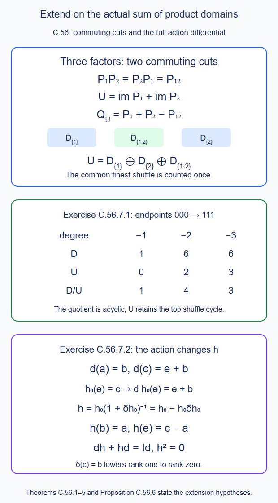
Theorems C.56.1.1–C.56.3.1 identify the commuting cut algebra and its acyclic quotient. Theorems C.56.4.1–C.56.5.1 and Proposition C.56.6.1 give full relative Taylor extension and primitive gluing. Exercises C.56.7.1–C.56.7.2 compute the dimensions and the necessary homotopy correction shown here. Editable SVG source.

C.57. Product module actions and the native root tensor
Compatible actions on the actual product domains extend to a full module differential. The construction kills each remaining curvature term in increasing outside rank,retaining the prescribed pure actions. Ordered output-root induction then gives product-compatible one-cross models. An actual comparison on the finest domain extends to the whole module and transports the entire path differential. The native partial forest also has the required graded central root tensor,including unit outputs and identity strands. The finest native comparison and all higher external grafting equations remain additional requirements.
C.57.1. Relative extension of the entire module action
Let \(Z=L\otimes sN\otimes A\) be one of C56's graded cofree one-cross modules. The pure cores are the prescribed minimal IC tensor cores and finite-height index bars. Their full differentials are fixed. Fix the central unary differential too. Let \(d_b\) be the resulting baseline differential on \(Z\),with no action consuming an outside piece. It squares to zero,by the tensor differential calculation.
Use the C56 graded cut images \(S_T\). They have their complete central space \(sN\) and are the cofree pullbacks along the actual outside shuffle coalgebra embeddings. Select a nonempty finite collection and put \(U=\sum S_T\). Each is stable for \(d_b\). At every central input put \[ \begin{aligned} R&=\#\{\text{original outside IC letters}\}\\ &\quad+\sum_{\text{outside index runs}}\Delta h. \end{aligned} \] The leading part \(d_{b,0}\) includes the index-bar and central unary differentials. It preserves \(R\). Every other pure minimal operation decreases \(R\) by at least one. All operations are normalized;none sends a nonempty outside core word to a scalar identity.
Theorem C.57.1.1 (relative module-structure extension). Suppose compatible degree-one full bicomodule maps \(\mu_T\) are prescribed on the selected cut domains. Suppose they have zero bare central value and \((d_b+\mu_T)^2=0\) there. Then there is a global full module differential \(D=d_b+\mu\) with those exact restrictions. It keeps the pure core differentials and central unary differential fixed. Its construction uses finitely many corrections on every original input.
Proof. A homogeneous bicomodule endomorphism over identity pure cores is determined by its central Taylor map. Let \(E\) be their graded associative algebra under ordinary composition,and let \(\partial_b f=d_bf-(-1)^{|f|}fd_b\). The bicomodule equations for \(d_b\) make this a differential on \(E\). In detail,the pure-core coderivation terms on the two sides cancel when differentiating the equation for a bicomodule map. Thus \(\partial_b f\) again satisfies that equation. The ordinary composition calculation gives \(\partial_b(fg)=(\partial_b f)g+(-1)^{|f|}f\partial_b g\) and \(\partial_b^2=0\).
Every \(f\in E\) preserves each graded \(S_T\). To see this, expand its full cofree formula on the pullback along the cut shuffle. The two outer coactions of an element of \(S_T\) remain in the image of those coalgebra embeddings. Its middle Taylor value can be any element of the full central block \(sN\),so the reconstructed output is again in \(S_T\). Consequently restriction to \(U\) is an algebra homomorphism,and its kernel \(K\) is a two-sided graded ideal. It is \(\partial_b\)-stable,since \(d_bU\subset U\).
Let \(F^rE\) consist of endomorphisms whose central Taylor values are zero on every input of rank less than \(r\). Equivalently their full cofree formulas consume rank at least \(r\). A term of \(fg\) first consumes the piece used by \(g\),then the piece used by \(f\) in the remaining outside words. The ranks of these removed pieces add: IC letter counts add under cuts,and heights telescope along their actual endpoints. Therefore \[ F^rE\,F^sE\subset F^{r+s}E. \] This argument uses the entire signed cofree composition;its evaluation sign does not alter which outside pieces are consumed. In particular the graded commutator has the same filtration bound.
On Taylor maps \(\partial_{b,0}\) preserves rank,and \(\partial_b-\partial_{b,0}\) raises filtration by at least one. Indeed a remaining source pure operation reduces original IC count before Taylor evaluation. A target pure operation cannot contribute to the central projection from a nonempty outside output,because it is normalized. These account for all nonleading baseline terms.
The leading restriction kernel has the normalized contraction \(H_0\) proved in C.56.4.1. That proof uses the common cut decomposition of the two outside index runs,the acyclic nonretained summands,and the signed Hom contraction on the quotient. It applies here with the same central complex on source and target. It preserves rank and \(K\);hence on every homogeneous rank component of \(K\) we have \[ \partial_{b,0}H_0+H_0\partial_{b,0}=1. \]
The cut decomposition glues the prescribed central action values. Extend them on the remaining graded summands and reconstruct a full bicomodule map \(\mu^{(0)}\). Choose its bare central value zero. Thus \(\mu^{(0)}\in F^1E^1\),and its restrictions are exactly the prescribed maps. For any such extension set \[ F(\mu)=\partial_b\mu+\mu^2. \] Its restriction to \(U\) vanishes by the prescribed square-zero equations. Thus its curvature belongs to \(K^2\cap F^1E\).
Here is the full obstruction correction. Direct use of the graded Leibniz rule gives the Bianchi identity \[ \partial_b F(\mu)+\mu F(\mu)-F(\mu)\mu=0. \] In fact \(\partial_b(\mu^2)=(\partial_b\mu)\mu- \mu\partial_b\mu\);the two displayed commutator terms cancel these,and the two cubic terms cancel each other. No division or unproved deformation principle is used.
Suppose the current curvature has filtration at least \(r\ge1\). Write \(F_r\) for its exact rank-\(r\) Taylor component, extended by zero at other ranks and then by the cofree formula. Rank preservation of the cut projectors shows \(F_r\in K\). The commutator in the Bianchi identity has filtration at least \(r+1\), as does the nonleading part of \(\partial_bF\). Hence \(\partial_{b,0}F_r=0\). Put \[ \nu_r=-H_0F_r,\qquad \mu_{\rm new}=\mu+\nu_r. \] Then \(\nu_r\in K^1\cap F^rE\) and \(\partial_{b,0}\nu_r=-F_r\). Expanding the new curvature gives \[ \begin{aligned} F(\mu+\nu_r)&=F(\mu)+\partial_b\nu_r\\ &\quad+\mu\nu_r+\nu_r\mu+\nu_r^2. \end{aligned} \] The last three terms have filtration at least \(r+1\),as does \((\partial_b-\partial_{b,0})\nu_r\). Its exact rank-\(r\) part is therefore zero. The new curvature has filtration at least \(r+1\),and the prescribed action values are unchanged because \(\nu_r\) vanishes on \(U\).
Start with \(r=1\) and repeat. On a fixed original rank-\(R\) input no correction with \(r>R\) contributes. The cofree reconstruction at that input has finitely many outside cuts,so it too stabilizes. These stabilized values define a genuine global bicomodule map \(\mu\). Its curvature is zero on every original input,since the corresponding finite stage has already killed all ranks up to that input. Hence \((d_b+\mu)^2=0\). All corrections were in \(K\) and had positive consumption. The selected product actions,pure core differentials and bare central unary differential are therefore retained exactly. This proves the theorem. \(\square\)
C.57.2. Ordered root products can be constructed simultaneously
Fix a finite ordered list of root factors. Root \(i\) has input arity \(n_i\ge0\),one output core,and a finite directed parameter category \(I_i\). Its given one-cross module has the fixed pure cores and central space \(N_i\). For a nonempty consecutive block \(B\),use the literal tensor IC cores,the parameter category \(I_B=\prod_{i\in B}I_i\),and the central graded tensor \(N_B=\bigotimes_{i\in B}N_i\),with its tensor unary differential. The one-cross suspension is applied once after forming this ordinary tensor,as in C.41.2.1. Prescribe the singleton modules.
Theorem C.57.2.1 (ordered output-root induction on product domains). There exist full one-cross module structures for all nonempty consecutive blocks with these bare central and pure-core data,whose restriction to every ordered cut shuffle is exactly the ordered product of the corresponding block structures. This construction includes genuine zero-input root factors. It asserts product compatibility on the specified product parameter categories;it does not identify a general native grafting category with such a product.
Proof. Induct on the number of roots in a block. A singleton uses its prescribed structure. Suppose all shorter blocks have been done. For each proper cut of the current block,prescribe the product of its two shorter modules. Remove their individual cross shifts,tensor with the ordinary graded tensor rule,and restore one total cross shift. C.41.2.1 and C.52.3.1 prove that this gives a full cofree module along the actual outside shuffle coalgebra embeddings. Its differential squares to zero because the graded tensor differential does;the baseline restriction is the stated pure and central unary differential.
On the intersection of two cut images,the commuting-cut theorem gives the refined product domain. Restricting either prescribed two-block structure there invokes only previously constructed structures on shorter blocks. By the induction hypothesis they restrict to the same flat product on the refined blocks. This equality includes the full module actions:ordinary graded tensor regrouping has the same sign for either parenthesization,its pure cores regroup literally,and the one total cross shift is performed after that regrouping. Iterating the same argument proves compatibility on every finite refined cut.
Apply Theorem C.57.1.1 to these compatible positive-consumption action maps. It supplies the structure on the entire current block with all of its two-block restrictions fixed. Any finer cut factors through one of those cuts;the already imposed shorter-block restrictions identify it with the prescribed flat product too. This proves the inductive step and hence the assertion for all blocks in the finite list.
The source arity never enters the obstruction contraction or its rank decrease. A root with \(n_i=0\) has source IC tensor power \(C^{\otimes0}\),but still retains its index bar,output core and actual central mapping factor \(N_i\). It is not removed from the ordered list. This is exactly the zero-input convention of C.52.3.1. A genuinely empty output list is separate coefficient-unit data,not a missing zero-input root. \(\square\)
C.57.3. What comparison retains the native whole graph
Theorem C.57.3.1 (relative comparison and whole-path transport). Suppose an old full module structure on the same \(Z\) has the same pure cores and bare central differential as a newly constructed structure. Suppose on the finest product-shuffle domain there is an actual closed full comparison from the old restricted module to the new restricted module,with identity leading central term and identity pure cores. Then it extends to a global bicomodule chain isomorphism. For a whole directed path coalgebra,such isomorphisms on its one-cross sectors give a graded whole-path coalgebra isomorphism. Conjugating the whole differential retains every several-cross operation and its enhanced interpretation. This alone does not assert strict external grafting covariance in the new coordinates.
Proof. First every old module differential restricts to the graded finest shuffle pullback. Its pure coderivations retain that subcoalgebra; its nonunary module part is a bicomodule map over identity cores and preserves the pullback by Theorem C.57.1.1's cofree argument. The same is true of the new differential. Thus the given comparison has an actual chain domain and target.
Extend its central Taylor values graded-linearly and reconstruct a full map \(F_0\). The full comparison differential has the signed form \(\partial F=d_{\rm new}F-(-1)^{|F|}F d_{\rm old}\). Its restriction kernel is contracted exactly as in C.56.4.1:the leading quotient by the finest shuffle is acyclic at fixed outside rank;every omitted source or target module action consumes positive outside rank. That proof does not use equality of the old restricted nonunary action with a flat product action;it uses the chain property of that restriction and the strict rank decrease. Both were just checked. The corresponding full contraction \(H\) therefore corrects the closed degree-one defect by \(F=F_0-H\partial F_0\). This is a global chain comparison with the prescribed finest restriction.
The bare central block lies in the finest domain,so the correction has zero bare value. Consequently the leading central term remains the identity. Every other term of \(F-1\) consumes positive outside rank. The usual geometric inverse \(\sum_{j\ge0}(-1)^j(F-1)^j\) is finite on each original input and is a bicomodule inverse by the full cofree composition formula. The chain equation makes the inverse a chain map too.
For a path of several cross sectors,take the cotensor of these graded bicomodule isomorphisms over the common pure cores. Its inverse is the cotensor of their inverses. A path cut is either an outside core coaction or a cut between cross sectors. Bicomodule compatibility retains the former,and the literal cotensor factors retain the latter. Thus these maps,over the identity on pure sectors,form a graded whole-path coalgebra isomorphism \(G\),including all several-cross path sectors. Define \(D_{\rm new}=G D_{\rm old}G^{-1}\). Its square is zero and its coderivation identity follows by applying the coalgebra equations for \(G,G^{-1}\) to that for \(D_{\rm old}\). On a one-cross sector it is the prescribed new differential by the chain equation for \(F\);on a pure sector it is unchanged. No several-cross Taylor component has been discarded:all are transported by the displayed conjugation. The original interpretation transports through this actual coalgebra isomorphism.
External marks must also be transported on their actual domains. Their transported higher components need not be the strict external product formula even when their one-cross restrictions are products. Hence the full higher grafting equations still require proof before the marked-point descent can be applied. \(\square\)
C.57.4. Root components,including unit outputs
Fix an actual joint arrow \(f=(K,J')\) of C.47.2.1,with original source state \((t,J)\). Put \(I=\pi_K^{-1}(J')\). Write \(n=m_J\) for its source frontier length and \(m=m_I\) for its target frontier length before the canonical contraction relabelling. Retain the selected contraction labels throughout. At each root output of the actual partial forest \(F^t_{I,J}\),take its component between the two frontiers. Include a surviving old frontier edge as an identity component. Denote the ordered components by \(F_1,\ldots,F_m\),and their source block lengths by \(n_1,\ldots,n_m\).
Theorem C.57.4.1 (native rootwise central tensor). Each source frontier variable occurs in exactly one component,with its original order. Thus \(n_i\ge0\),\(\sum_i n_i=n\),and the blocks are consecutive, allowing empty blocks. After the canonical frontier relabelling,the actual native functor is the ordered external product of these root functors. For selected IC tuples \(x,y\),its represented mapping cohomology consequently has the actual identification \[ \begin{aligned} N_f(y,x) &:=H^\bullet\operatorname{RHom} (F^t_{I,J}x,y)\\ &\cong\bigotimes_{i=1}^m H^\bullet\operatorname{RHom} (F_i x_{B_i},y_i). \end{aligned} \] It is nonnegative,even and degreewise finite on the finite forward corners. These are the same central graded tensor spaces used by the output-root induction. A zero-input component retains its full output mapping space;an identity component retains its full mapping space too.
Proof. Traverse the original planar tree,stopping at the frontier of \(I\). Below one such stopped output,traverse only until the frontier of \(J\). Since \(J\subseteq I\) are descendant-closed ideals,all operations between those frontiers belong to that one component. A frontier edge of \(J\) has exactly one first ancestor in the stopped \(I\)-frontier,or is itself the surviving stopped edge. It therefore belongs to exactly one component. Planar traversal makes each such set consecutive in the source list and preserves the order of the components. A newly executed nullary subtree can have no old frontier input;it still has its stopped output. This proves all the block assertions,including empty blocks and identity strands.
The native partial functor of C.44.3.1 is defined by evaluating these components independently and taking their ordered external product. Its enhanced geometric interpretation is the common expanded-chain construction in that proof,with the actual unit object at a nullary input and the actual identity correspondence at an identity strand. C.47.2.1 supplies the canonical output frontier bijection for the selected contraction \(K\). This bijection retains all tuple factors and their order. Composing with it gives the stated product functor for \(f\). This retains the original contraction label even if a different label gives an isomorphic underlying forest. No parallel arrows have been identified.
Choose the external-product strict enhancement of this fixed forest functor. Its target tensor category has by definition the ordinary graded tensor of its mapping complexes. If a root image is a finite additive IC sum,use its actual finite multiplicity matrix. Distributing those finite sums identifies the full represented complex with \[ \bigotimes_i\operatorname{RHom}(F_i x_{B_i},y_i). \] The original enhanced forest comparison transports this represented complex to that of \(f\),rather than asserting equality merely from matching dimensions.
For completeness,the tensor cohomology identification is the split complex calculation used in C.33.1.1. Split each factor over the field as its cohomology representatives plus a contractible complex. The finite tensor expands into the all-cohomology summand and summands with at least one contractible factor. Contract the first such factor with the ordinary tensor degree sign;the differentials on later factors cancel in the contraction identity. Each of those summands is contractible. Inclusion of the representatives therefore gives precisely the displayed Künneth isomorphism. The isomorphism on cohomology is the tensor of the actual represented comparison,so it has the required geometric provenance.
Every \(F_i x_{B_i}\) is a finite additive IC sum by C.47.2.1's forward-corner construction. C.33.1.1 proves nonnegative,even and degreewise finite mapping cohomology for those generators. Finite sums and finite tensors preserve those assertions;in a fixed degree only finitely many tuples of nonnegative factor degrees contribute.
If \(n_i=0\),the input is the coefficient object,but its output is the actual nullary forest value,canonically identified with \(IC_0\) by C.44.3.1. The corresponding factor is \(H^\bullet\operatorname{RHom}(IC_0,y_i)\),which need not be the coefficient field. If the component is an identity strand,the factor is \(H^\bullet\operatorname{RHom}(x_i,y_i)\),also retained in full. Hence neither case permits deletion of an output mapping factor. Finally the source pure core regroups as \(C^{\otimes n}=\bigotimes_iC^{\otimes n_i}\),and the target as \(C^{\otimes m}=\bigotimes_iC\). The ordinary central tensor therefore has exactly the graded root data required by the preceding output-root induction. \(\square\)
If the output frontier is empty,no operation has an executed output. Thus both ideals are empty and both frontier lengths are zero. The underlying partial functor is the coefficient identity,with empty central tensor equal to the coefficient field;its contraction-arrow label is still retained.
C.57.5. Two solved root/action examples
Exercise C.57.5.1 (nonlinear curvature; advanced). Let \(V\) have basis \(x\) in degree minus one,\(y,u\) in degree zero,and \(v\) in degree one. Put \(d_0x=y,d_0u=v\). The normalized contraction is \(h_0y=x,h_0v=u\),zero otherwise. In the formal filtration \(t^r\operatorname{End}(V)[[t]]\), fix \(kv\) with its zero differential. Let \[ \begin{aligned} \delta_1(x)&=u,&\delta_1(y)&=-v,\\ \delta_1(u)&=v,&\delta_1(v)&=0. \end{aligned} \] Verify that the initial action is closed,compute its curvature,and apply the relative obstruction correction to determine the full formal differential. Use the normalized endomorphism contraction specified below.
Solution. This degree-one map is \(\partial_0\)-closed,but \(\delta_1^2(x)=v\ne0\). Thus its linear chain equation is insufficient for a module differential. On maps vanishing on \(v\), postcomposition \(H_0(f)=h_0f\) is a normalized contraction of the endomorphism differential. Indeed the two source-composition terms in \(\partial_0H_0+H_0\partial_0\) cancel,and the remainder is \((d_0h_0+h_0d_0)f=f\). It preserves that relative kernel.
Start with \(\mu=t\delta_1\). Its curvature is the nonzero term \(t^2(x\mapsto v)\). The first correction is \(-t^2(x\mapsto u)\). At the next order the curvature is \(-t^3(x\mapsto v)\),so the next correction is \(+t^3(x\mapsto u)\). Inductively at every order \(r\ge2\) the correction on \(x\) is \((-1)^{r-1}t^ru\), zero on the other basis vectors. Therefore the resulting formal differential has the exact formula \[ \begin{aligned} Dx&=y+\frac{t}{1+t}u,&Dy&=-tv,\\ Du&=(1+t)v,&Dv&=0. \end{aligned} \] Its square on \(x\) is \(-tv+\frac{t}{1+t}(1+t)v=0\);its square is zero on the other basis vectors too. Each finite \(t\)-adic window uses only finitely many of the displayed corrections. This is a formal filtered algebra diagnostic of the nonlinear induction,not a claim that the finite complex is a native IC module or an original-word rank window.
Exercise C.57.5.2 (unit,convolution and identity roots; intermediate). Take an unexecuted ternary parent with three ordered branches:a nullary operation \(u\),a binary operation \(b\) with external inputs \(x_1,x_2\),and an external input \(x_3\). Execute \(u,b\) and leave the parent unexecuted. Determine the two frontiers,the ordered root input lengths,the represented central cohomology and the one-cross degree. Explain which mapping factors remain.
Solution. The initial frontier is \((x_1,x_2,x_3)\),and the new frontier is \((IC_0,x_1*x_2,x_3)\). Its ordered root input lengths are \((0,2,1)\). On a target tuple \((y_1,y_2,y_3)\),the central cohomology is \[ \begin{aligned} &H^\bullet\operatorname{RHom}(IC_0,y_1)\\ &\quad\otimes H^\bullet\operatorname{RHom}(x_1*x_2,y_2)\\ &\quad\otimes H^\bullet\operatorname{RHom}(x_3,y_3). \end{aligned} \] The first and third factors remain present. For homogeneous central degrees \(d_1,d_2,d_3\),the corresponding one-cross degree is \(d_1+d_2+d_3-1\). Indeed C.41.2.1 removes the three individual cross shifts before tensoring and then restores one shift. Tensoring three suspended central letters directly would incorrectly give \(d_1+d_2+d_3-3\).
For a genuinely rootwise product parameter family,the same calculation applies at every original endpoint tuple,with all parallel arrow labels retained. It supplies the graded central identifications there. It does not prove that an independently transferred differential restricts to the desired product differential. The actual closed comparison on the finest shuffle domain and compatibility across complete native grafting domains remain the next required checks.
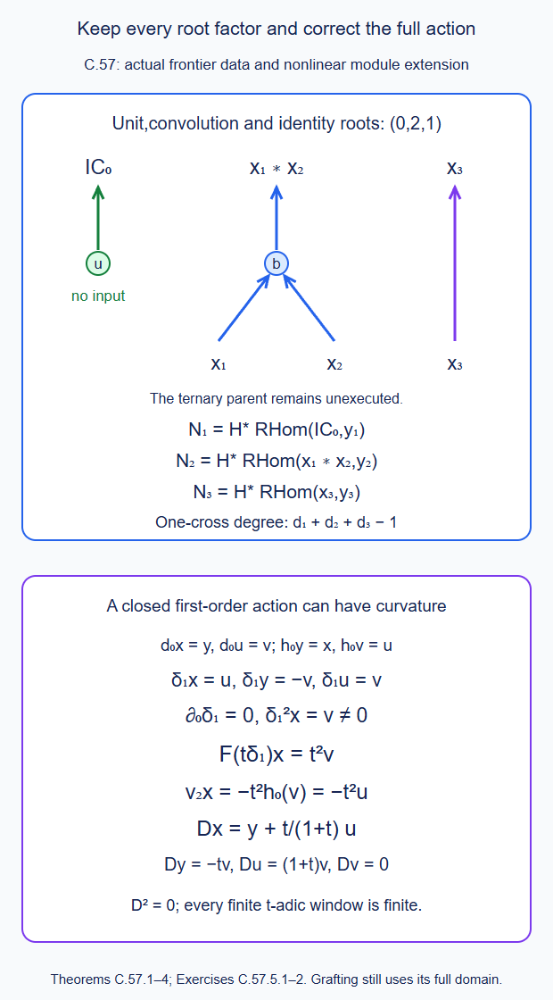
Theorems C.57.1.1–C.57.3.1 construct relative module actions,ordered products and conditional whole-path transport. Theorem C.57.4.1 identifies the actual native graded central tensor. Exercises C.57.5.1–C.57.5.2 compute the curvature correction and the zero-input/identity root factors. Editable SVG source.

C.58. The actual finest product comparison
The whole native product family and its independent root models project to one common dg target. The projection square with the finest shuffle commutes on the actual cobar generators. Full represented evaluation of the supplied native comparison,combined with the fixed projection contractions,gives a module comparison with its precise leading calibration. Both actions and all higher source components remain in the construction. The product domains here retain their stated scope; compatibility across general native overlaps and higher grafting equations remains to be established.
C.58.1. The strict common projection square
Put \(U=\Omega C\). For root factors \(i=1,\ldots,m\),let \(n_i\ge0\),\(I=\prod_iI_i\),and \(n=\sum_i n_i\). Write \[ \begin{aligned} A_i&=C^{\otimes n_i}\otimes D_{I_i},\\ B_i&=C\otimes D_{I_i},\\ A_\otimes&=\bigotimes_iA_i,\\ B_\otimes&=\bigotimes_iB_i,\\ A_I&=C^{\otimes n}\otimes D_I,\\ B_I&=C^{\otimes m}\otimes D_I. \end{aligned} \] The actual coalgebra embeddings \(j_A:A_\otimes\to A_I\),\(j_B:B_\otimes\to B_I\) first regroup the IC and index factors with the Koszul sign,then shuffle the index bars. Let \(\kappa_A,\kappa_B\) be the C41 cobar projections onto the tensor of the factor cobars. The C52 maps \(\rho_{r,J}\) have target \(U^{\otimes r}\otimes kJ\). Use the canonical ordered identification \(\bigotimes_i(U\otimes kI_i)=U^{\otimes m}\otimes kI\).
Lemma C.58.1.1 (exact projection and shuffle compatibility). We have the literal dg functor identities \[ \begin{aligned} &\rho_{n,I}\Omega j_A\\ &\quad=\left(\bigotimes_i\rho_{n_i,I_i}\right)\kappa_A,\\ &\rho_{m,I}\Omega j_B\\ &\quad=\left(\bigotimes_i\rho_{1,I_i}\right)\kappa_B. \end{aligned} \] All objects and parallel index arrows are retained. Each side is a graded-surjective mapping quasi-isomorphism. The identities also commute with the prescribed common core powers of \(g\).
Proof. The cobars are free on their reduced coalgebra generators, so it suffices to compare their actual generator images. Recall the C52 formula \(\rho=\epsilon\Omega\operatorname{sh} (\bigotimes\eta_C\otimes1)\). Its twisting projection has a nonzero value only in the following two cases. One IC factor is reduced and every other factor,including the index bar,is coaugmented;its value is the same generator of that \(\Omega C\) factor. Or all IC factors are coaugmented and the index bar is one actual arrow; its value is that arrow with the scalar IC identities. An index word of length at least two has zero value. A generator with both an IC input and a nonempty index input has zero value,as does one with two reduced IC factors:the shuffled target bar then has at least two letters,which the counit twisting projection kills. These statements include a reduced IC coalgebra element of any primitive length;its one-letter bar-unit component is the corresponding cobar generator.
On the right,\(\kappa\) kills a generator with two noncoaugmented root factors. On a generator supported in one root factor it retains exactly that factor and then applies its \(\rho\). On the left, two reduced IC factors are killed as just described. A reduced IC factor together with any nonempty index factor is killed too. If only index factors are nonempty,their shuffle has total index length equal to the sum of those lengths;two or more such letters are killed. If just one root factor is noncoaugmented,the only surviving possibilities are precisely that factor's single IC generator or its single actual index arrow. Both sides have the same value there. The factor regrouping sign is one on these surviving single-factor inputs;all other signed terms map to zero. This proves both exact identities.
The coaugmentations give the same object identities on both sides. The one-arrow case retains its actual parallel-arrow label and embeds it with identities in the other index coordinates. At \(n_i=0\) there is simply no reduced IC generator in that source factor;its index-arrow case remains unchanged. Thus the proof includes zero-input roots and all empty outside words.
C.52.2.1 proves that each \(\rho\) is graded-surjective and a mapping quasi-isomorphism. C.52.3.1 proves the same for \(\kappa\). Finite tensors over the field preserve surjectivity and quasi-isomorphism, by the split tensor calculation. Their displayed composites therefore have the asserted property. In particular,\(\Omega j\) is itself a mapping quasi-isomorphism by two out of three,since the global \(\rho\) is one too. All these object maps are the same tuple maps.
For a normalized common core map \(g\),C.52.2.1 gives strict naturality of \(\rho\),C.41.1.1 gives strict naturality of \(\kappa\),and the index shuffle is the identity on IC factors. The resulting two composites on each generator coincide. Hence the identities commute with the literal prescribed powers of \(g\), not with independently chosen maps at different arities. \(\square\)
C.58.2. An actual full represented comparison on the finest domain
Fix a native rootwise product family from C44/C47 on these independent parameter categories,with its actual enhanced external-product comparison on all parameter cells. Take the strict native representatives of C.52.3.1,including their comparison through the canonical common-cobar units and target projections: \[ \begin{aligned} F&:\Omega A_I\to\operatorname{Add}(\Omega B_I),\\ F_i&:\Omega A_i\to\operatorname{Add}(\Omega B_i). \end{aligned} \] Here \(F\) represents that entire native product family,not an unrelated functor with the same cohomology. Retain these representing comparisons as part of the data supplied by the lift. Set \[ \begin{aligned} T&=\bigotimes_i(U\otimes kI_i),\\ P&=(\bigotimes_iF_i)\kappa_A,\\ p_B&=(\bigotimes_i\rho_{1,I_i})\kappa_B,\\ f_0&=\rho_{m,I}F\Omega j_A,\\ f_1&=(\bigotimes_i\rho_{1,I_i})P. \end{aligned} \] The two functors \(f_0,f_1\) have the same strict source \(\Omega A_\otimes\) and target \(\operatorname{Add}(T)\).
Theorem C.58.2.1 (native finest comparison with its actual source and target). The supplied whole native external-product comparison gives a closed full bicomodule comparison between the old minimal module restricted along \(j_A,j_B\) and the finest product of the singleton minimal modules. Under C.57.4.1's actual rootwise cohomology identification, its bare central component is the identity. It is over identity pure cores and has its finite bicomodule inverse. Thus it supplies C.57.3.1's finest-domain hypothesis for this specified native product family.
Proof. We first specify the actual full natural transformation used in the construction. The original native family has the enhanced external-product comparison of C.44.3.1/C.47.2.1. The chosen native lifts come with their representing comparisons through the canonical bar-cobar units and counits,as in C.52.3.1. Transport that original comparison through these particular equivalences. Orient it as \(\beta:f_1\Rightarrow f_0\). More explicitly,if \(c_i\) denotes the representing equivalence from the interpretation of \(f_i\) to its native family,and \(\alpha\) is the original comparison from the product family to the whole family,then its full enhanced expression is \(c_0^{-1}\alpha c_1\). The inverses and their coherent unit maps are those of the actual representing equivalences;the canonical bar-cobar equivalences and their homotopies were proved in C39 and retained by C52. This defines all its higher components,not only an objectwise isomorphism.
Apply the normalized source bar construction of C.33.2.1 to that whole diagram. On every source bar word it records the corresponding full component of \(c_0^{-1}\alpha c_1\),with its consecutive-block composition. Its differential is zero by the full transformation identity. Thus \(\beta\) is an actual closed full transformation in the common-source model;no assumption that natural-transformation spaces are contractible is being used. Its inverse and its two composition homotopies are recorded from the same supplied native diagram. All parameter components of the original comparison remain present in this construction.
Use three full represented raw modules over the identical outside cores \(B_\otimes,A_\otimes\). Their central complexes are \[ \begin{aligned} &M_0(y,x)\\ &\quad=\operatorname{Hom}_{\Omega B_I}(F\Omega j_Ax,\Omega j_By),\\ &M_\Pi(y,x)\\ &\quad=\operatorname{Hom}_{\otimes_i\Omega B_i}(Px,\kappa_By),\\ &Q_a(y,x)\\ &\quad=\operatorname{Hom}_{T}(f_ax,p_By),\quad a=0,1. \end{aligned} \] Write \(Y_0,Y_\Pi,Y_{Q_0},Y_{Q_1}\) for their common-core one-cross modules,with one total cross suspension. Naturality of the canonical coalgebra unit identifies \(Y_0\) with the actual \((j_B,j_A)\)-pullback of the original raw global module. It is not a separately selected module on the same graded ranks.
Postcomposition by \(\rho_{m,I}\) and by \(\bigotimes_i\rho_{1,I_i}\) gives respectively \[ \phi_0:Y_0\to Y_{Q_0},\qquad \phi_\Pi:Y_\Pi\to Y_{Q_1}. \] These are full chain bicomodule maps over identity cores. For the left action the exact square is \(\rho_{m,I}\Omega j_B=p_B\),proved in Lemma C.58.1.1;for the right action it is precisely the displayed definitions of \(f_0,f_1\). Multiplicativity of the target dg projections then proves both full represented action equations. The cofree formulas retain their higher terms. Their central maps are graded-surjective quasi-isomorphisms by Lemma C.58.1.1 and C52;finite additive images cause only finite mapping matrices.
C.45.2.1 therefore gives a full fixed-projection chain section \(\sigma_\Pi:Y_{Q_1}\to Y_\Pi\),including its complete normalized kernel homotopy. C.53.1.1 evaluates the full degree-zero \(\beta:f_1\Rightarrow f_0\) in the contravariant direction: \[ R_\beta:Y_{Q_0}\longrightarrow Y_{Q_1}. \] At bare central level it is \(m\mapsto m\beta\). On each source word it uses the full transformation component and reconstructs the outside coactions. That lemma proves its complete chain and bicomodule identities. Degree zero introduces neither an opposite composition sign nor a cross-shift sign. In particular,this map is not obtained by ignoring the source or target action differential.
Let \(I_0\) be the old minimal module's actual inclusion into \(Y_0\). It is obtained by restricting the chosen global minimal contraction along \(j_A,j_B\). This restriction retains the full contraction identities:the maps are bicomodule maps over identity cores,and the finest pullback contains their full central spaces,so their cofree formulas preserve it,as proved in C.57.1.1. Let \(P_\Pi:Y_\Pi\to Z_\Pi\) be the tensor product of the actual singleton minimal projections,with the C41 regrouping and one total cross suspension. It is a full chain bicomodule map by C.41.2.1.
The required comparison is the now fully typed composite \[ F_{\rm fine}=P_\Pi\sigma_\Pi R_\beta\phi_0 I_0. \] Every arrow is a full chain bicomodule map over the same identity cores,so this composite is one too. On cohomology,\(I_0,P_\Pi\) are the chosen identity-calibrated minimal maps,\(\phi_0\) is the actual common target projection,and \(\sigma_\Pi\) induces the inverse of \(\phi_\Pi\). The remaining map is the original rootwise represented comparison \(R_\beta\). These are precisely the represented comparison and tensor Künneth maps used in C.57.4.1's native central identification. Hence the bare central component of \(F_{\rm fine}\),between those minimal cohomology spaces,is the identity,not merely an unspecified isomorphism of equal dimensions.
Its remaining cofree Taylor terms consume positive outside rank,so the triangular inverse is finite on each original input by the indexed finite inverse proof in C.57.3.1. It is a chain inverse by the original chain equation. This constructs the actual finest-domain comparison required by C.57.3.1 for the specified product family. That theorem extends it to a global module isomorphism and transports the whole path differential. It still does not impose strict higher external grafting equations,identify an unsafe clipped product domain,or supply the full marked descent point. \(\square\)
C.58.3. Two solved comparison examples
Exercise C.58.3.1 (mixed generator and retained arrow; intermediate). Take \(I_1=I_2=[1]\) and no IC inputs. Let \(a,b\) be their actual index arrows. In \(\Omega(D_{I_1}\otimes D_{I_2})\), consider the mixed generator \(t(sa\otimes sb)\). Compute both routes of Lemma C.58.1.1 on it. Then compute the images of the two composable single-factor cobar words around the square. Explain why killing the mixed generator does not discard the mixed index arrow.
Solution. All suspended index arrows are odd. In target-to-source order the shuffle is \[ \begin{aligned} j(sa\otimes sb)&=sA_{\rm top}\mid sB_{\rm left}\\ &\quad-sB_{\rm right}\mid sA_{\rm bottom}. \end{aligned} \] Both terms have bar length two,so the global counit twisting projection kills their cobar generators. The other route first applies \(\kappa\), which kills a generator supported in two noncoaugmented factors. Both routes therefore give zero. Its degree is minus one,as each suspension has degree minus one and the cobar generator raises degree by one.
The individual cobar generators \(t(sA),t(sB)\) have degree zero. Both composable words \[ \begin{gathered} t(sA_{\rm top})t(sB_{\rm left}),\\ t(sB_{\rm right})t(sA_{\rm bottom}) \end{gathered} \] map to the same actual arrow \(00\to11\),whose tensor-coordinate value is \(a\otimes b\). The two coordinate compositions agree in the ordinary product category,with no extra sign since these cobar generators have degree zero. Thus the negative-degree mixed generator has zero projection while the genuine mixed endpoint arrow remains the nonzero product of the two retained single-factor arrows.
Exercise C.58.3.2 (full bimodule comparison; advanced). Work with the ordinary unsuspended cofree module,restoring the single cross shift afterwards as in C41. Let the left algebra be \(k[z]/z^2\),acting on its own coefficient factor,and the right algebra \(k[\epsilon]/\epsilon^2\). Let the remaining central complex have \(e,y\) in degree zero and \(f\) in degree minus one,with \(df=y\). In the old module the right \(\epsilon\) action is zero;in the new one it is \(T(e)=y,T(f)=T(y)=0\). Put \(K(e)=f,K(f)=K(y)=0\). Then \(T=dK+Kd\),\(T^2=K^2=TK=KT=0\),and every map is linear over the left coefficient algebra.
Denote a basis word by \((p,r,v,q)\),where \(p\) is its left \(sz\)-word length,\(r=0,1\) is its central coefficient power of \(z\),\(v=e,f,y\),and \(q\) is its right \(s\epsilon\)-word length. The full differential has the central term \((-1)^p(p,r,dv,q)\),the left action term \((-1)^p(p-1,r+1,v,q)\) when \(p>0,r=0\),and the new right term \((-1)^{p+|v|}(p,r,Tv,q-1)\) when \(q>0\). Terms with zero displayed central value are omitted. The pure bar differentials vanish since \(z^2=\epsilon^2=0\).
Verify the square-zero equations and construct an invertible full comparison over the identity outside cores. Check both actions and coactions,and show explicitly where its higher Taylor component is necessary. This algebraic example is separate from the positive IC cores in the native theorem.
Solution. These differentials square to zero. The central and left terms cancel in pairs because the left action commutes with \(d\) and reducing \(p\) reverses the central differential sign. The central and right terms cancel because \(T\) is a chain map and \(d\) changes \(|v|\) by one. The left and right terms cancel by their respective coefficients \((-1)^{|v|-1}\) and \((-1)^{|v|}\),since \(zT=Tz\). The repeated left and repeated right terms vanish by \(z^2=T^2=0\). These exhaust the terms of the square.
The degree-zero full comparison is \[ \begin{aligned} F(p,r,v,q)&=(p,r,v,q)\\ &\quad+(-1)^{|v|+1}(p,r,Kv,q-1) \end{aligned} \] when \(q>0\),with only its first term when \(q=0\). The extra term is a genuine Taylor component. In its chain equation, the one-letter coefficient is \((-1)^{p+|v|}(T-dK-Kd)v=0\);the two-letter coefficient is zero by \(TK=0\). Its left action equation holds because \(K\) commutes with that action. The inverse changes the sign of the extra term,since \(K^2=0\). The two outside coactions cut the left and right words. On the right,a term consuming one letter can be followed by exactly the cuts leaving that letter in the module piece;on the left all cuts remain available. Thus its full coaction equations hold too.
For instance,\(F(e\mid s\epsilon)=e\mid s\epsilon-f\), and the new differential of this word is \(y-df=0\),matching the old differential before applying \(F\). The bare identity alone would instead give \(y\ne0\).
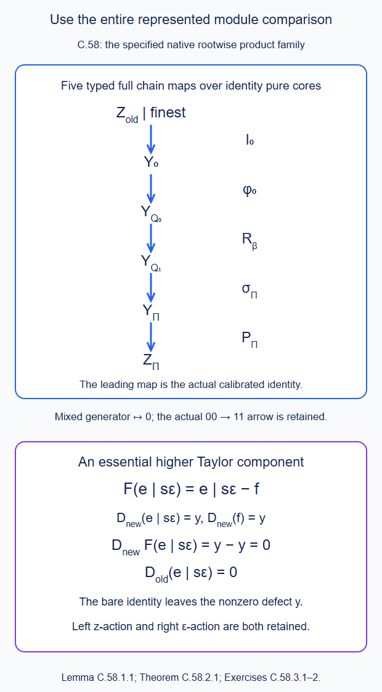
Lemma C.58.1.1 proves the exact common projection square. Theorem C.58.2.1 constructs the actual finest comparison on the stated native rootwise product families. Exercises C.58.3.1–C.58.3.2 retain the genuine mixed endpoint arrow and the nonzero higher full module comparison. Editable SVG source.

C.59. Full projection homotopies and simultaneous cut normalization
The comparison through represented projections has four homotopy terms. The source and target projection squares and the original monoidal cell each contribute,and the fixed kernel homotopy contributes as well. After the actual minimal contractions,the resulting finest primitive extends to compatible comparisons on all ordered cuts. The formulas retain every action term and prescribed pure core map. Their global native use requires the displayed full cells on their complete domains.
C.59.1. The four-term homotopy between represented projection roofs
Use full chain bicomodule maps of degree zero with these types: \[ \begin{aligned} a&:Z\to Q_0,&a'&:Z'\to Q_0',\\ b&:W\to Q_1,&b'&:W'\to Q_1',\\ s&:Q_1\to W,&s'&:Q_1'\to W',\\ B&:Q_0\to Q_1,&B'&:Q_0'\to Q_1',\\ t&:Z\to Z',&u&:W\to W',\\ t_0&:Q_0\to Q_0',&t_1&:Q_1\to Q_1'. \end{aligned} \] Here \(b s=1,b's'=1\),and the actual fixed-projection target homotopy satisfies \(\partial H'=1-s'b'\). Assume the actual specified degree-minus-one homotopies have the types and equations \[ \begin{aligned} A_0 &:Z\to Q_0',&\partial A_0&=a't-t_0a,\\ A_1 &:W\to Q_1',&\partial A_1&=b'u-t_1b,\\ C &:Q_0\to Q_1',&\partial C&=B't_0-t_1B. \end{aligned} \] All composites use the same prescribed source-to-target core powers; the projections,sections and homotopies within a side are over identity cores. Set \(\phi=sBa\) and \(\phi'=s'B'a'\).
Theorem C.59.1.1 (the complete projection-roof square homotopy). An actual full homotopy \(\partial R=\phi't-u\phi\) is \[ \begin{aligned} R&=s'Ca+s'B'A_0\\ &\quad-H'u sBa-s'A_1sBa. \end{aligned} \] It retains all stated face restrictions. In general none of its four terms can be omitted,even if every leading cohomology map is the identity.
Proof. The Hom differential is a graded derivation,and all factors other than \(C,A_0,H',A_1\) are closed of degree zero. In particular \[ \begin{aligned} \partial(H'us)&=(1-s'b')us\\ &=us-s't_1-s'(\partial A_1)s, \end{aligned} \] using \(b'u=t_1b+\partial A_1\) and \(bs=1\). Consequently \(us-s't_1=\partial(H'us+s'A_1s)\). Also \[ \begin{aligned} \phi't &=s'B't_0a+\partial(s'B'A_0),\\ s'(B't_0-t_1B)a&=\partial(s'Ca). \end{aligned} \] Subtract \(u\phi=usBa\) from the first equality,insert the second equality,and replace \(us-s't_1\) by the primitive just computed. This gives exactly the displayed four-term formula,including the minus sign on its \(A_1\) term. It is an equation in the full mapping complex,so every composed map retains both bicomodule coaction equations and all its source and target actions.
Restriction to any parameter face commutes with these same composites. Thus compatible specified input data give that identical restricted homotopy. No homotopy inverse has been substituted without its kernel homotopy. The example below has four independent nonzero boundaries, proving the non-omission assertion. \(\square\)
C.59.2. The primitive on the normalized finest models
Use the actual full contractions \[ \begin{aligned} (i,p,h)&:Z\rightleftarrows N,\\ (i',p',h')&:Z'\rightleftarrows N',\\ (j,q,k)&:W\rightleftarrows P,\\ (j',q',k')&:W'\rightleftarrows P'. \end{aligned} \] Put \(T=p'ti,U=q'uj,J=q\phi i,J'=q'\phi'i'\),and assume \(J,J'\) are closed and invertible. In the native application these are the actual identity-leading isomorphisms of C58. The normalized global comparison restricted to the finest domain is \(T_*=J'TJ^{-1}:P\to P'\).
Corollary C.59.2.1 (a finest primitive with every contraction term). For the actual roof homotopy \(R\) of Theorem C.59.1.1,set \[ \begin{aligned} L&=q'Ri-q'\phi'h'ti\\ &\quad+q'uk\phi i,\\ K_*&=-LJ^{-1}. \end{aligned} \] Then \(\partial K_*=U-T_*\). In particular a fully recorded raw monoidal square gives the finest primitive needed for simultaneous ordered-cut normalization,without discarding any projection or minimal contraction term.
Proof. C.51.1.1's full calculation gives \(\partial L=J'T-UJ\). Its hypotheses are precisely the four contractions above and \(\partial R=\phi't-u\phi\),proved in Theorem C.59.1.1. Since \(J^{-1}\) is a closed degree-zero full map, \[ \begin{aligned} \partial(-LJ^{-1})&=-(J'T-UJ)J^{-1}\\ &=U-J'TJ^{-1}. \end{aligned} \] This is the stated sign and type. The inverse is the actual indexed cofree inverse of C.57.3.1/C.58.2.1. Its restriction to a face is the inverse of the restricted map by the two inverse identities,so every compatible face in the given data is retained. \(\square\)
C.59.3. One finest primitive suffices for all ordered cuts
Let \(Z,Z'\) be the product-normalized common-core module models of C57,with minimal nonnegative even central spaces. Let \(T:Z\to Z'\) be an actual full chain isomorphism over the prescribed invertible core powers. On a nonempty finite family of ordered cut domains \(S_c\), prescribe closed full comparisons \(F_c\),with the same bare identity and core powers. Suppose these agree on all refined intersections. Their common restriction to the finest product domain is \(F_*\). Let an actual full homotopy \(K_*\) be given there with \(\partial K_*=F_*-T|_*\). This is exactly the primitive produced by Corollary C.59.2.1 when its raw diagrams are the supplied native ones.
Theorem C.59.3.1 (simultaneous normalization from the finest domain). There is an actual full degree-minus-one bicomodule map \(K:Z\to Z'\) such that \(T^{\rm new}=T+\partial K\) restricts to every \(F_c\). It is an identity-leading chain isomorphism over the same pure core powers. One can retain the specified \(K_*\) while gluing. For compatible complete whole-graph sector data,C.51.3.1 implements this change in the whole graph without dropping several-cross components.
Proof. Within one \(S_c\),the closed difference \(L_c=F_c-T|_{S_c}\) has primitive \(K_*\) on its finest shuffle domain. The relative full Taylor-kernel contraction of C.56.4.1 applies inside \(S_c\),with its refined factor bars. The original cut embedding and its finest refinement are actual chain submodels of the product-normalized module;the omitted action terms consume positive outside rank. Thus C.56.5.1 extends \(K_*\) to a full primitive \(K_c\) of \(L_c\) on \(S_c\).
The prescribed differences \(L_c\) agree on their intersections, since all \(F_c\) do. C.56.6.1 therefore adjusts the \(K_c\) by closed full maps to make them agree on the whole finite cut union. Here the specified finest primitive can also be kept. Indeed,when the next domain meets the previously assigned union,the closed difference of its two homotopies vanishes on the finest domain:both were equal to \(K_*\) there. Closed-map extension from that intersection retains its zero finest value,because the finest domain is already contained in the prescribed intersection. Thus adding this correction does not alter \(K_*\). Induction glues all the homotopies while keeping the earlier domains and that finest value fixed.
Their common central Taylor map on the actual sum extends graded-linearly to \(Z\),using the common cut decomposition of C.56.1.1. Apply the full cofree formula along the prescribed outside core powers to obtain \(K\). It retains every assigned \(K_c\). No equation \(\partial K=L\) outside the union is required:define \(T^{\rm new}=T+\partial K\). It is closed because \(\partial T=0\) and \(\partial^2=0\),and on each cut its restriction is \(T|_{S_c}+L_c=F_c\). This construction uses the full differential and the actual sum,not a termwise extension across independently selected shuffle words.
The bare central value is the prescribed identity,as every cut contains that block. The usual cofree inverse is finite on each original input. Furthermore \(K\)'s bare central value is zero by even central parity: a degree-minus-one map cannot take a bare even unsuspended mapping degree to another such degree. Therefore the genuine whole-graph gauge theorem C.51.3.1 applies whenever these sector homotopies are compatible on the complete assigned face/string overlaps. It retains all higher-cross terms. Compatibility across additional native overlaps and external grafting marks is still a separate obligation, not a conclusion from this single module statement. \(\square\)
When \(F_c\) are products of already normalized smaller-root comparisons,their refined-intersection compatibility follows from that ordered root induction and the single final cross-shift rule of C41. The new theorem reduces all coarse-cut primitive choices to the one actual finest primitive. Applying it to the full native diagram still requires recording \(A_0,A_1,C\) from its entire projection and monoidal cells,with the fixed core powers and complete domains. These data must not be replaced by equality of first cohomology maps.
C.59.4. Two solved homotopy examples
Exercise C.59.4.1 (four necessary terms; advanced). Let \(V\) have the cycle \(e\) in degree zero and three acyclic pairs \(f_i\) in degree minus one,\(y_i\) in degree zero, with \(df_i=y_i\). Take \(Z=Z'=Q_0=Q_0'=Q_1=Q_1'=V\). Let \(W=W'=V\oplus K\),where \(K=(kg\to kz)\), \(|g|=-1,|z|=0,dg=z\). Let \(a,a',B,B'\) be identities, \(b,b'\) the projection onto \(V\),and \(s,s'\) its standard inclusion. Set \(H'(z)=g\),zero on all other basis vectors.
Define \(C(e)=f_1,A_0(e)=f_2\),zero elsewhere,and let \(A_1:W\to V\) send \(e\) to \(f_3\),zero elsewhere. Put \(t_1=1,t_0=1+\partial C,t=t_0+\partial A_0\). Let \(u\) act as the identity except that \(u(e)=e+y_3+z\). Check all three projection-square homotopy equations and compute the four terms of the full roof homotopy. Show that omitting any one gives an incorrect homotopy,even though all cohomology comparisons are identities. Retain the full two-sided module interpretation.
Solution. The first and third homotopy equations follow from the definitions of \(t\) and \(t_0\). For the second,both sides send \(e\) to \(y_3\) and vanish on all other basis vectors. These are degree-zero chain maps,with the stated projection homotopy equations;for example \((b'u-t_1b)(e)=y_3=(\partial A_1)(e)\). All induced cohomology maps are the identity.
The four terms of Theorem C.59.1.1,on \(e\),are respectively \[ f_1,\qquad f_2,\qquad -g,\qquad -f_3. \] Their differential is \(y_1+y_2-z-y_3\),which is exactly \((\phi't-u\phi)(e)\). These four target boundaries are linearly independent. Omitting any one term gives a nonzero defect. Tensor everything with \(k[r]/r^2\),using regular left and right multiplication on the coefficient factor. All maps and homotopies are bimodule-linear,so the construction extends to their full cofree two-sided bar modules with both nonzero coefficient actions. The same equations hold there by the cofree formula. This is an algebraic diagnostic of the homotopy terms,not an identification with the native IC mapping complexes.
Exercise C.59.4.2 (inverse placement and sign; intermediate). Work at the level of ordinary complexes. Let \(V=ke\oplus kf\oplus ky\), where \(|e|=|y|=0,|f|=-1,df=y\). Put \(h(y)=f\),zero on the other basis vectors,and \(S=dh+hd\). In Corollary C.59.2.1's contraction diagram take all four complexes to be \(V\),with identity contractions. Let \(t=u=\phi'=1\) and \(\phi=J=1+S\),so \(J'=1\). Determine \(R,L,K_*\) and verify the finest homotopy equation. Explain the errors produced by omitting \(J^{-1}\) or reversing the sign.
Solution. The map \(S\) is zero on \(e\) and the identity on the acyclic pair \(f,y\). It is a closed projector. Thus \(J\) is identity on \(e\) and multiplication by two on that pair;its inverse is \(1-\tfrac12S\). Both maps induce identity on cohomology. The raw square has defect \(\phi't-u\phi=-S\),so take \(R=-h\). The identity contractions have zero homotopies,hence \(L=R=-h\) and \[ K_*=-LJ^{-1}=h(1-\tfrac12S)=\tfrac12h. \] Its differential is \(\tfrac12S\). On the other hand \[ U-T_*=1-J^{-1}=\tfrac12S, \] so the stated equation holds on all three basis vectors. Omitting the inverse would give \(h\),whose differential is \(S\),twice the required value on both \(f\) and \(y\). Reversing the minus sign in \(-LJ^{-1}\) gives differential \(-\tfrac12S\). The example checks the algebraic homotopy formula; it does not identify this nonminimal complex with the minimal native central spaces. The full cofree version uses the actual identity-leading maps and contractions stipulated in the preceding theorems.
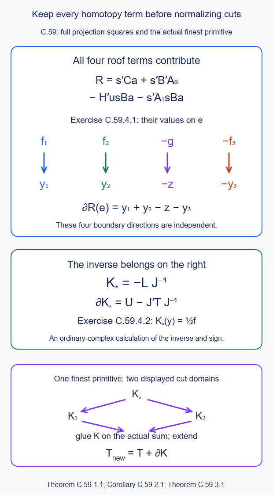
Theorem C.59.1.1 retains all four terms of the full projection homotopy. Corollary C.59.2.1 gives the correctly typed finest primitive;Theorem C.59.3.1 extends its normalization to the prescribed ordered cuts. Exercises C.59.4.1–C.59.4.2 compute the necessary terms,inverse and sign. Editable SVG source.

C.60. Reverse path projection and coherent square transport
The second projection of the module path category has an explicit normalized mapping-kernel contraction. It lifts a supplied entire coherent family to larger module models with projection-compatible edges. A coherent square with the exact compressed edge values then returns to the original comparisons through the full kernel homotopies. The results apply to the complete module differentials;identifying the prescribed native edges remains necessary in the geometric application.
C.60.1. The other path projection has a normalized kernel contraction
Let \(p_i:X_i\to Q_i\) be normalized full module SDR projections, with sections \(i_i\) and homotopies \(h_i\). Thus \(p_ii_i=1,\partial h_i=1-i_ip_i\),and \(h_i^2=p_ih_i=h_ii_i=0\). For the object paths \(p_i\), use C.53.4's path category. A degree-\(r\) morphism is \((f,g,a)\),with \[ \begin{aligned} f&:X_i\to X_j,\qquad g:Q_i\to Q_j,\\ a&:X_i\to Q_j,\qquad |a|=r-1. \end{aligned} \] Its differential is \(D(f,g,a)=(\partial f,\partial g,-\partial a+p_jf-gp_i)\). Let \(\pi_1\) retain \(g\),the second component.
Lemma C.60.1.1 (reverse path-projection kernel). The projection \(\pi_1\) is graded-surjective on each mapping block and its kernel has the normalized contraction \[ k_1(f,a)=(h_jf+i_ja,0). \] The kernel differential is \(d_K(f,a)=(\partial f,-\partial a+p_jf)\). This is a contraction in the full mapping complex,including all module actions and fixed core maps.
Proof. The triple \((0,g,0)\) is a graded preimage of every \(g\). In its kernel the displayed differential is immediate from the path formula. Since \(|h_j|=-1\) and \(i_j\) is closed, \[ \begin{aligned} \partial(h_jf+i_ja) &=(1-i_jp_j)f-h_j\partial f+i_j\partial a,\\ p_j(h_jf+i_ja)&=a. \end{aligned} \] Consequently the first component of \(d_Kk_1+k_1d_K\) is \((1-i_jp_j)f-h_j\partial f+i_j\partial a +h_j\partial f-i_j\partial a+i_jp_jf=f\). Its second component is \(a\). Also \(h_j(h_jf+i_ja)=0\),so \(k_1^2=0\). Every operation is postcomposition with an actual full module map. It therefore retains the two coactions and the stated core maps. This proves the contraction without omitting any source differential term. \(\square\)
C.60.2. Lift the entire smaller family with exactly prescribed edges
Let \(I\) be a finite directed parameter category,and let \(G:\Omega B(kI)\to\mathcal E\) be the supplied entire unital coherent family with objects \(Q_i\). Use the projections \(p_i:X_i\to Q_i\) above. The free source generator for an original strict-arrow string of length \(q\) has degree \(1-q\). Its differential uses merges or products of shorter generators.
Theorem C.60.2.1 (reverse coherent model transport). There is a unital dg functor \(\mathscr H:\Omega B(kI)\to\operatorname{Path}(\mathcal E)\) with object paths \(p_i\),second projection exactly \(G\),and one-arrow values \[ \mathscr H(\alpha) =(i_jG(\alpha)p_i,G(\alpha),0). \] Its first projection is a whole coherent family \(F\) on the larger models,whose arrows commute exactly with the specified projections. The construction retains every higher parameter generator and is finite. Compatible previously assigned free-generator face data can be kept.
Proof. For an original arrow,\(G(\alpha)\) is closed. The first component is closed too,and \(p_ji_jG(\alpha)p_i=G(\alpha)p_i\). The path differential is therefore zero. Assign the identity triple to an identity arrow. This defines the lift on the length-one generators and their products.
Suppose all shorter generator values are assigned. For a degree-\(1-q\) generator \(x\),choose \(v=(0,G(x),0)\) and set \[ o=Dv-\mathscr H(dx),\qquad \mathscr H(x)=v-k_1o. \] The second projection of the defect is zero because \(G\) is a dg functor. Applying \(D\) to the defect gives zero:the chain equations already hold on every shorter product in \(dx\),and \(d^2x=0\). Lemma C.60.1.1 thus gives \(Dk_1o=o\). The corrected value has precisely the required differential and its second projection remains \(G(x)\). Extend freely and multiplicatively; the dg Leibniz identity gives the equation on all new products.
Induction constructs the entire dg functor. Finite directed height bounds the length of every strict-arrow string,so this is a finite generator construction. A full parameter face consists of the free generators whose original vertices lie in that face. Merging removes vertices and splitting uses their subsets. Thus a union of already assigned face generators is differential-stable;use its agreeing values and perform the correction only on the remaining generators. The same induction retains compatible earlier finite corners.
The first projection is a dg functor by the path-category identities. Its projection-compatible edge formula is the one assigned initially, and its higher values are the just-constructed coherent values,not separately chosen fillers. The object paths are homotopy equivalences, so the path family is an actual enhanced equivalence of the two whole families. \(\square\)
C.60.3. A coherent small square and the corresponding actual raw square
Use the C59 raw objects \(Z,Z',W,W'\) and projections \(a,a',b,b'\),with sections \(i,i',s,s'\) and normalized homotopies \(h,h',k,k'\),respectively. Let the actual closed raw comparisons be \(t:Z\to Z'\),\(u:W\to W'\). Set their exact compressed comparisons to be \[ t_0=a'ti,\qquad t_1=b'us. \] Suppose a supplied entire coherent square on the four smaller objects has horizontal edges \(B:Q_0\to Q_1\),\(B':Q_0'\to Q_1'\) and these vertical edges \(t_0,t_1\). For the square poset its two length-two generators have images \(H_0,H_1\) satisfying \[ \partial H_0=B't_0-c,\qquad \partial H_1=t_1B-c, \] where \(c\) is the same original diagonal arrow image. Put \(C=H_0-H_1\),\(\phi=sBa,\phi'=s'B'a'\).
Theorem C.60.3.1 (return from projection-compatible edges). The full projection homotopies and monoidal homotopy can be chosen as \[ \begin{aligned} A_0&=a'th,\qquad A_1=b'uk,\\ C&=H_0-H_1. \end{aligned} \] They have exactly C59's types and differentials. The raw roof square then has the full primitive \[ R=s'Ca+s'B'a'th-k'usBa. \] This is the corresponding specialization of the four-term formula: its fourth term is zero by the normalized equation \(ks=0\). Every higher component of the supplied smaller square can be retained via Theorem C.60.2.1. No zero homotopy is asserted for a general unnormalized projection square.
Proof. Closedness of the other factors gives \[ \begin{aligned} \partial A_0&=a't(1-ia)=a't-t_0a,\\ \partial A_1&=b'u(1-sb)=b'u-t_1b,\\ \partial C&=B't_0-t_1B. \end{aligned} \] These are the required full mapping-complex identities. C.59.1.1 now applies. Its last term is \(-s'A_1sBa=-s'b'uk sBa=0\),and its target kernel homotopy is \(k'\). The remaining terms give the displayed primitive.
There is also a direct whole-family interpretation. Theorem C.60.2.1 lifts the supplied small square to the projection-compatible arrows \(t_c=i't_0a\),\(u_c=s't_1b\),\(\phi,\phi'\). The small primitive has the raw lift \(s'Ca\),since \(a'i'=1,bs=1\). The actual comparisons are connected to those canonical ones by the explicit full homotopies \[ \begin{aligned} D_t&=-h't-i'a'th,\\ D_u&=-k'u-s'b'uk. \end{aligned} \] Differentiating gives \(\partial D_t=t_c-t\) and \(\partial D_u=u_c-u\),by cancelling the two intermediate \(i'a't\) or \(s'b'u\) terms. Therefore \[ s'Ca-\phi'D_t+D_u\phi \] has differential \(\phi't-u\phi\). Its normalization identities \(a'h'=0,ks=0\) simplify it to exactly the displayed \(R\). This proves the return formula without replacing either actual raw comparison by an unrelated edge.
All restrictions use these same maps and original generators. Thus every compatible assigned face is retained. Applying the actual contractions of C.59.2.1 to this \(R\) gives its finest primitive, and C.59.3.1 then normalizes the prescribed compatible ordered cuts. The supplied square,its compressed vertical maps,and its horizontal represented maps must have the stated exact values before those applications are made. \(\square\)
C.60.4. Two solved reverse-transport examples
Exercise C.60.4.1 (the kernel correction; intermediate). Let \(Q=ke\oplus k\eta\),with \(|e|=0,|\eta|=-1\) and zero differential. Put \(X=Q\oplus(kg\xrightarrow{d}kz)\),with \(|g|=-1,|z|=0,dg=z\). Let \(p\) be projection,\(i\) inclusion,and \(h(z)=g\),zero otherwise. In Lemma C.60.1.1's reverse mapping kernel take the degree-zero pair \((f,a)\),where \(f(e)=z,a(e)=\eta\),zero elsewhere. Compute both parts of \(d_Kk_1+k_1d_K\),retaining the source differential term,and verify the square-zero normalization.
Solution. The pair has the stated degree because \(a\) has degree minus one. We have \(hf(e)=g,ia(e)=\eta\),so \(k_1(f,a)=(v,0)\),where \(v(e)=g+\eta\),zero elsewhere. The Hom differential of \(v\) is \(dv+vd\),which sends \(e\) to \(z\) and vanishes on the other basis vectors. Its second kernel component is \(pv=a\). Hence \(d_Kk_1(f,a)=(f,a)\). Directly \(\partial f=0\), \(\partial a=d_Qa+ad=0\),and \(pf=0\),so \(d_K(f,a)=0\). The second composite is therefore zero. Finally \(hv=0\),since \(v\) lands in \(kg\oplus k\eta\),where \(h\) vanishes. Thus \(k_1^2(f,a)=0\). Both summands \(hf\) and \(ia\) occur in this single correction.
Exercise C.60.4.2 (return to the actual comparisons; advanced). Let \(V\) have basis \(e,f_1,y_1,f_2,y_2,f_3,y_3\),with \(|e|=|y_i|=0,|f_i|=-1,df_i=y_i\). Put \(X=V\oplus(kg\xrightarrow{d}kz)\),where \(dg=z\), \(|g|=-1,|z|=0\). Let all four larger objects be \(X\),all smaller objects be \(V\),all projections be \(p:X\to V\), all sections be \(i\),and all normalized homotopies be \(h(z)=g\). Take \(B=B'=1\). Define degree-zero chain maps \(t,u:X\to X\) by the identity except for \[ \begin{aligned} t(e)&=e+y_3+z,&u(e)&=e+z,\\ t(g)&=g+f_1,&u(g)&=g+f_2,\\ t(z)&=z+y_1,&u(z)&=z+y_2. \end{aligned} \] Find the compressed square,its two projection homotopies and the full return primitive. Explain precisely why its fourth roof term vanishes.
Solution. The chain equations hold on \(g\) because its images differentiate to the stated images of \(z\);they hold on the other basis vectors directly. The compressed maps are \(t_0=pti\),which sends \(e\) to \(e+y_3\),and \(t_1=pui=1\). Take \(C(e)=f_3\),zero otherwise. Then \(\partial C=t_0-t_1\). A coherent small square can use the diagonal \(c=t_1\),with \(H_0=C,H_1=0\);its two triangle equations have exactly the required boundaries.
The actual projection homotopies are \(A_0=pth,A_1=puh\). They send \(z\) to \(f_1,f_2\),respectively,and vanish on the remaining basis vectors. They are both nonzero. In the reverse homotopy equation their differentials also act on \(g\):the Hom source term gives \(A_0(dg)=f_1\) or \(A_1(dg)=f_2\). These are precisely the corresponding values of \(pt-t_0p\) and \(pu-t_1p\).
The three terms of the return primitive \(R\) are \[ iCp,\qquad ipth,\qquad -huip. \] Their nonzero values are, respectively,\(e\mapsto f_3\), \(z\mapsto f_1\),and \(e\mapsto-g\). Their boundaries send \(e\) to \(y_3\),send \(z,g\) to \(y_1,f_1\), and send \(e\) to \(-z\),respectively. These are independent directions and sum exactly to \(\phi't-u\phi\),where \(\phi=\phi'=ip\). The fourth C59 term is \(-iA_1i p=0\),because \(hi=0\) in \(A_1=puh\). It vanishes by this proved normalization,even though \(A_1\ne0\). There is no general rule allowing its omission in an arbitrary roof.
Tensoring with \(k[r]/r^2\),using regular left and right multiplication on that coefficient,retains these equations as bimodule equations. Their full cofree extensions therefore retain both nonzero actions and both outside coactions. This is an algebraic example of the return formula;the native application additionally requires its exact supplied coherent square and edge identifications.
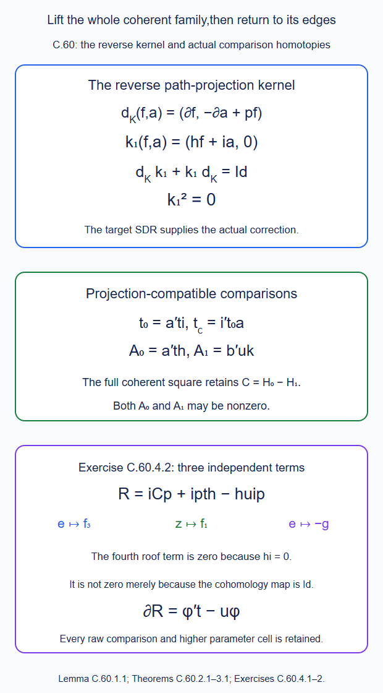
Lemma C.60.1.1 contracts the reverse path-projection kernel. Theorems C.60.2.1–C.60.3.1 lift entire coherent module families and return their exact compressed square to the raw comparisons. Exercises C.60.4.1–C.60.4.2 retain the source differential and the normalized nonzero correction terms. Editable SVG source.

C.61. Full mapping restriction and the fixed native square
The actual bar-unit embedding retains the whole bicomodule mapping complex. Its restriction kernel contracts at fixed original rank, and a finite perturbation retains both module actions. Thus full transformation classes and their null-homotopies can be recorded on the common bars. The actual represented native equivalences identify the four edges of one specified product square in that full complex. The relative version retains genuine full faces when the required relative transformation class is given.
C.61.1. The common-bar mapping complex is the correct full complex
Let \(K=C^{\otimes n}\otimes D_I\),including \(n=0\),and let \(L=C^{\otimes m}\otimes D_J\). Use the actual minimal IC bar and finite directed index bars of C52. Write \(\widehat K=B\Omega K,\widehat L=B\Omega L\),and use their actual natural unit embeddings \(\eta_K,\eta_L\). Take two full cofree modules \(\widehat X,\widehat Y\) over \(\widehat L,\widehat K\),with central complexes \(M,N\). They have normalized module actions. Let \(X,Y\) be their genuine pullbacks over \(L,K\),retaining the same central complexes.
Count original IC primitive letters plus index height jumps in an element of \(K\) or \(L\),and add these counts in an original word of \(B\Omega K\) or \(B\Omega L\). Denote the sum on the two outside runs by \(R\). Every reduced original input has positive count,and cuts preserve its sum. Assume the given module actions consume positive count whenever they are not central unary terms. This holds for the raw normalized represented modules used in C58:an action removes a nonempty original outside word,including its index height when the corresponding arrow acts by a scalar.
Theorem C.61.1.1 (full mapping restriction is a surjective quasi-isomorphism). Restriction along \(\eta_L,\eta_K\) gives a graded-surjective chain map \[ \begin{aligned} r:\operatorname{Hom}_{\widehat L,\widehat K} (\widehat X,\widehat Y)\\ \longrightarrow \operatorname{Hom}_{L,K}(X,Y). \end{aligned} \] Its kernel has a normalized contraction finite on every original outside input. Here both Hom complexes consist of full cofree bicomodule maps over identity pure cores,with their complete source and target action differential. Restriction preserves composition and identities on the whole dg category of these pullbacks. Thus it is fully faithful on full transformation cohomology,not only on bare central values.
Proof. Each unit is a coalgebra map by C.39.4.1. It is graded injective:its one-bar-letter,one-cobar-generator component is exactly \(c\mapsto s(tc)\),an injective map on the reduced original coalgebra. Coaugmentations are retained too. Consequently the tensor embedding of the two outside runs is injective. A homogeneous full map is determined by its central Taylor map. Restrict that map to the two unit images;any prescribed homogeneous Taylor map on their tensor extends linearly. The cofree reconstruction proves graded surjectivity of \(r\).
The pulled-back modules are chain modules because the unit embeddings are dg coalgebra maps. Their coactions on any retained word stay in the unit images. Hence restriction commutes with the entire mapping differential,including its source and target actions. The cofree composition formula cuts the original words using those same coactions. Restricting before or after that formula gives identical cuts and signs,so it preserves composition and the identity. This also shows directly that the restriction kernel is a subcomplex.
We now contract that kernel without an infinite-length assertion. First discard only the nonunary IC operations and the nonunary module actions. Keep the central unary differential,all index-bar unary differentials,and the complete bar-cobar cut and splitting differentials. Call the resulting mapping differential \(\partial_0\). It preserves \(R\). The unit for these leading pure differentials also preserves \(R\),and is the same explicit unit formula as C.39.16. It contains all iterated coproduct terms;none is removed.
At each fixed original rank the unit is a quasi-isomorphism. Here is the finite argument needed for that stronger assertion. In \(B\Omega K\),filter by the number \(r_0\) of original noncoaugmented \(K\)-elements before dividing them into cobar blocks. Every such element has positive original rank,so \(r_0\le R\). The cobar splitting increases \(r_0\);the original unary differential and bar merging preserve it. At a fixed \(r_0\ge2\) associated quotient,C.39.4.1's explicit cut homotopy inserts the first missing cut with coefficient \((-1)^{|c_1|}\). It contracts that full quotient,including the original unary differential. It preserves the total original rank,each endpoint and every original letter label. At \(r_0=1\) the unit has identity leading value. Finite cone elimination through \(1\le r_0\le R\) proves that the unit has acyclic comparison cone in that exact rank block. The argument applies to \(L\) as well. Tensoring over the field therefore makes \(\eta_L\otimes\eta_K\) a quasi-isomorphism in every fixed total rank,by splitting each acyclic tensor factor as in C30.
It is an injective chain map. Thus its quotient complex on the two outside runs is acyclic in every rank and endpoint block. Choose a normalized splitting contraction there by C.30.1.1. Tensor it with the unchanged central complex \(M\),using the Koszul sign when the outside homotopy crosses a central factor. This gives a normalized quotient-input contraction \(h_Q\). The leading kernel of \(r\) is precisely the Taylor Hom complex from that quotient input to \(N\). For a degree-\(d\) map \(f\),the operator \(H_0(f)=(-1)^d f h_Q\) has \(\partial_0H_0+H_0\partial_0=1,H_0^2=0\),by the full signed Hom calculation in C.56.3.1. It preserves original rank.
Write the entire mapping differential as \(\partial_0+\delta\). The omitted source pure IC terms reduce original primitive count. Every omitted source action consumes a positive-rank outside piece. For a target action,expand the full cofree formula:the central Taylor map is evaluated on the middle input left after those outside pieces have been removed. It has smaller original rank too. Normalization rules out a pure operation creating a scalar from nonempty original IC inputs;index-scalar action cases still consume positive height. These are all the omitted terms. Thus \(\delta f\) on a rank-\(R\) input uses \(f\) only on smaller ranks.
The restriction kernel is stable under both differentials,so the finite perturbation formula of C.35.1 gives its actual contraction \[ H=H_0(1+\delta H_0)^{-1}. \] At most \(R\) perturbation factors contribute on that original input. It satisfies \(\partial H+H\partial=1,H^2=0\) in the full restriction kernel. The kernel is therefore contractible, and the already proved graded-surjective chain map is a quasi-isomorphism. No bound on arbitrary natural-transformation spaces or on infinitely many input lengths was used. \(\square\)
C.61.2. A fully faithful recording transfers prescribed whole edge classes
Let \(P:\mathcal D\to\mathcal E\) be a dg functor,with fixed chosen object labels,whose maps on all retained Hom complexes are surjective quasi-isomorphisms. In the application \(P\) is the actual restriction \(r\) of Theorem C.61.1.1 on a finite set of raw module objects. Let \(I\) be a finite directed parameter category and \(F:\Omega B(kI)\to\mathcal D\) a supplied entire family. For each original arrow \(\alpha\),suppose a closed map \(e_\alpha\) in \(\mathcal E\) is prescribed and its full cohomology class equals \([PF(\alpha)]\).
Theorem C.61.2.1 (exact-edge coherent recording). There is a whole coherent family \(G:\Omega B(kI)\to\mathcal E\) whose edges are exactly \(e_\alpha\),with an actual resolved path equivalence to \(PF\). Each entire native null-homotopy is retained through the path construction. The result uses equality in the full mapping complex,not equality only of leading cohomology components.
More explicitly,if \(z\in\mathcal D^0(X,Y)\) is closed and \(Pz=\partial c\),the kernel contraction produces a full primitive of \(z\). It can be chosen to have exact image \(c\).
Proof. Equality of the stated full classes means precisely that there is a degree-minus-one map \(k_\alpha\) with \(\partial k_\alpha=e_\alpha-PF(\alpha)\). These maps belong to the actual full Hom complexes. Apply C.54.4.1 to the entire \(PF\) and these actual edge homotopies. Its explicit identity-path recursion retains all higher generators and gives the exact prescribed edges. This proves the coherent assertion,including the actual path to the original entire family. For example,on a triangle its new higher image is \(H+k_ba+b'k_a-k_c\),with every term and sign retained.
Here is a constructive primitive lift,which also proves the stated faithfulness without appealing only to the phrase quasi-isomorphism. Choose a graded preimage \(c_0\) of \(c\). Then \(z-\partial c_0\) is a closed degree-zero element of the mapping kernel. With its actual contraction \(H\),put \[ c_{\mathcal D}=c_0+H(z-\partial c_0). \] Its differential is \(z\) and its image is exactly \(c\). All its values are full maps. For the restriction in Theorem C.61.1.1, the correction is finite on each original input. Thus a primitive on the common bars lifts without discarding a higher source or target component. The construction also shows that two native full edge representatives with the same restricted full class are homotopic upstairs. This does not assert that edges with equal bare components have the same restricted full class. \(\square\)
C.61.3. The exact four edges of one specified native product square
Fix one of C58's specified rootwise product families,with all its original parameter cells. Work over the extension field \(E\) and use the actual calibrated whole enhanced comparison of C.48.1.1. Retain its actual whole-prism representative from C50/C54. Denote its raw global and product restrictions by \(t:Z\to Z'\) and \(u:W\to W'\). Use C58's four common-target projections \(a,a',b,b'\) and their actual fixed-projection sections \(i,i',s,s'\). Let \(B,B'\) be exactly the represented evaluations of the native external-product transformations constructed in C.58.2.1.
Theorem C.61.3.1 (record one fixed native square with its prescribed edges). For this fixed product family,there is an entire coherent square in the full module category whose horizontal edges are exactly \(B,B'\) and whose vertical edges are exactly \(t_0=a'ti,t_1=b'us\). Its two triangle images supply an actual full \(C\) with \(\partial C=B't_0-t_1B\). Consequently C.60.3.1 supplies the actual projection-roof homotopy,and C59 supplies its finest primitive and simultaneous normalization of the compatible ordered cuts. The assertion retains this whole parameter family;it does not yet assert that choices made on different native families agree on every overlapping parameter or grafting domain.
Proof. First remove the varying-core type issue. C.48.1.1's actual coalgebra isomorphism \(g\) identifies the two pure core systems. Pull the target system back by its literal tensor powers and the index identities. C.52.2.1 makes every common-target projection commute strictly with that pullback. All four module objects and all the maps now belong to one dg category over the same fixed cores. This uses the actual \(g\);it is not an attempt to linearize an unfixed coalgebra coordinate.
Each raw represented module of C58 is the pullback along \(\eta_L,\eta_K\) of its ordinary normalized bar module over \(\Omega L,\Omega K\). This follows directly from the canonical unit formula and the consecutive-block represented construction in C.33.2.1. The small common-target modules have the same property,using their target projection to the common dg tensor category. That projection is a quasi-equivalence on the pertinent finite envelopes by C.52.2.1/C.52.3.1. Thus they are actual represented objects on those envelopes too,with the specified represented comparisons. No module has been selected by its graded dimension alone.
The entire native strong monoidal comparison of C48 supplies its original square,including its two triangles and their original diagonal,on these functor envelopes. Apply the full represented evaluation of C.33.2.1/C.53.1.1 before any compression. It records that complete square as full normalized module transformations. The full Yoneda mapping equivalence of C.33.2.1 retains the transformation mapping complexes,including every source-word component. The actual unit and counit equivalences of the chosen representing objects therefore transport this whole square to the four retained bar-module models. Restrict it by Theorem C.61.1.1. It is now an entire coherent square on the common bars,possibly with different edge representatives from the four prescribed ones.
We check equality of those four full edge classes. In the homotopy category of full module maps,a normalized SDR gives \([i]=[a]^{-1}\),\([s]=[b]^{-1}\),and the corresponding primed equalities,because its two inverse equations have the specified actual full homotopies. Hence the transported vertical classes on the common-target objects are precisely \[ [a'][t][a]^{-1}=[a'ti],\qquad [b'][u][b]^{-1}=[b'us]. \] Here \([t],[u]\) are the classes of the supplied whole native comparison,not inferred comparison classes. C.50.2.1 identifies its entire prism bimodule with that comparison by the actual represented evaluation maps. Its inverse and units are the full action-transfer equivalences of C.50.1.1;C.54.2.1 keeps the prescribed complete pure-state actions in this recovery. Restricting these actual equivalences to the present product family is exactly the raw \(t,u\) stipulated above. Thus the two displayed classes use their full comparison provenance.
For a horizontal edge,C.58.2.1 defines its transformation \(\beta\) by \(c_0^{-1}\alpha c_1\),where \(\alpha\) is the original native external-product comparison and \(c_0,c_1\) are these particular representing equivalences. Full represented evaluation gives exactly \(B=R_\beta\),and likewise \(B'\). The degree-zero contravariant direction is the one proved in C.53.1.1. Consequently these are exactly the horizontal classes of the transported native square. This argument identifies the entire transformations through their representing equivalences; it uses no assertion about their bare cohomology maps.
Theorem C.61.1.1 ensures that passage to the common bars has retained these full mapping classes faithfully. In particular any two edge representatives just compared differ by an actual full degree-minus-one boundary. Choose those edge homotopies and apply the identity-path replacement of C.54.4.1 to the entire restricted square. Equivalently use Theorem C.61.2.1's exact-edge recording. The resulting coherent square has exactly \(B,B',a'ti,b'us\),with its actual two triangle components \(H_0,H_1\) and the same recorded diagonal. Their difference \(C=H_0-H_1\) therefore satisfies the required full equation.
All constructions were on the supplied entire parameter family, so its higher parameter components remain present. C.60.3.1 now gives \(A_0=a'th,A_1=b'uk\) and its normalized return homotopy;C.59.2.1 transfers that actual homotopy to the finest models,and C.59.3.1 retains its value while normalizing all prescribed compatible ordered cuts. Restore the same literal \(g\) powers afterwards. This proves the fixed-family assertion. The choice of full edge primitives on two different ambient families has not been compared here. Compatible assignments on all such overlaps,all whole-graph sectors and all external higher grafting marks still require their own relative construction. \(\square\)
C.61.4. Relative restriction on genuine parameter faces
Fix a finite collection of full parameter faces in the original root factors,and,if needed,a finite collection of full IC label corners. On a bar-cobar word retain a face when every one of its original parameter vertices and IC labels belongs to that face. The leading quotients in Theorem C.61.1.1 use these actual subcomplexes; they do not identify a nonrectangular joint domain with a rectangle.
Theorem C.61.4.1 (relative full-face mapping restriction). The kernel contraction in Theorem C.61.1.1 can be chosen to preserve maps vanishing on the assigned union of such faces. Restriction remains a surjective quasi-isomorphism on those relative full mapping complexes. Thus a relative full null-homotopy on the common bars lifts while retaining its assigned native face values. Compatible increasing full corners can retain earlier choices. A relative null-homotopy class is required; absolute null-homotopy alone does not assert a relative one.
Proof. At the leading differential work separately in each fixed original rank and endpoint block. The unit is injective with leading term \(s(tc)\). Choose an original basis of \(K\) and \(L\) consisting of the actual IC/index word tensors. In each \(B\Omega K\) basis,the unit image of such a basis element is its one-bar-letter,one-cobar-generator word plus terms with at least two original coalgebra elements. All terms use only its original parameter vertices and labels. The analogous assertion holds for the two outside runs together by taking their tensor.
Eliminate each leading canonical unit-image basis vector using that unit relation. The quotient has the remaining bar-cobar word basis. A full face retains exactly its subset of this quotient basis: when a canonical vector belongs to the face,all terms of the unit relation used to eliminate it also belong to the face. Conversely the leading canonical component detects membership in the original face. Thus the quotient-face subspaces have the distributive original-word support lattice,and their intersections are the quotient subspaces for the actual common faces. The same basis argument works for a union of the retained faces.
Theorem C.61.1.1's finite rank/cut proof applies to every full face and every finite intersection. Their leading quotient complexes are therefore acyclic. The acyclic-face-union construction of C.50.2.1 gives a normalized quotient contraction retaining all assigned faces:the sum of previously assigned acyclic face subcomplexes is acyclic by the distributive support lattice;its quotient is acyclic;extend the earlier contraction by a chain splitting of that quotient. The explicit corrected chain section and square-zero normalization are the ones proved there. Do this at each rank and endpoint block. It preserves the unit quotient and all earlier choices.
Precomposition with this contraction preserves vanishing on each face. The leading signed Taylor Hom contraction \(H_0\) thus preserves the relative restriction kernel. The omitted source and target terms also preserve it,because the actual cofree coactions and full differentials retain these full face submodels. Every term in the finite perturbation \(H_0(1+\delta H_0)^{-1}\) has the same property. It contracts the full relative kernel.
For graded surjectivity on the relative complexes,define the desired native Taylor map on the union of the unit image and the assigned faces:use the given common-bar value on the former and zero on the latter. Their intersection consists exactly of the unit image of the corresponding common face union,by the leading canonical-word argument. The given relative map vanishes there, so these prescriptions agree. Extend them on a graded complement. This gives a full relative graded lift. Together with the full relative kernel contraction it proves the asserted relative surjective quasi-isomorphism,and the primitive formula in Theorem C.61.2.1 retains every assigned zero face value. Subtracting an already prescribed full extension gives the analogous statement for nonzero compatible values.
The same support argument and acyclic-quotient extension retain the chosen contractions along an increasing system of full finite corners. None of these statements replaces the actual relative class by an absolute class,or treats a clipped shuffle domain as a full factor face. Those separate distinctions are needed in applying the result to native overlaps. \(\square\)
C.61.5. Two solved bar-unit calculations
Exercise C.61.5.1 (the actual index unit; intermediate). For \(K=D_{[2]}\),write the index arrows as \(a:0\to1,b:1\to2,c:0\to2\),and put \(w=sb\mid sa\). Compute its actual unit in \(B\Omega K\), the quotient by that unit image and a normalized quotient contraction. Explain what the full face \(\{0,2\}\) retains.
Solution. The two-arrow bar word satisfies \(d_Kw=-sc\). In \(\Omega K\) put \(A=t(sa),B=t(sb),C=t(sc),H=t(w)\). The retained sign convention C.39.15 gives \(dH=BA-C\). The actual unit therefore has \[ \begin{aligned} \eta_K(w)&=sH+sB\mid sA,\\ \eta_K(sc)&=sC. \end{aligned} \] In \(B\Omega K\),the two differential contributions are \(d(sH)=s(BA)-sC\) and \(d(sB\mid sA)=-s(BA)\). They cancel to give \(d\eta_K(w)=-sC=\eta_K(d_Kw)\). The quotient by the unit image has basis \(u=s(BA),v=sB\mid sA\),with \(dv=-u\). Indeed \(sC=0\) and \(sH=-v\) in that quotient. Its normalized contraction is \(h(u)=-v,h(v)=0\). Each proper full parameter face retains zero quotient here;in particular the face \(\{0,2\}\) still retains its actual direct arrow \(c\) and its unit image. The whole three-vertex face retains the displayed acyclic quotient. Thus the face statement does not erase the direct arrow or identify the two different source paths.
Exercise C.61.5.2 (the signed mapping primitive; intermediate). Take \(K=k\oplus kx\),with \(x\) primitive of degree one and zero differential. At original rank two,describe the quotient of \(B\Omega K\) by the unit image. For the linear map \(f\) to \(k\) that is one on the two-block word and zero on the one-block word,compute its degree and a signed Hom primitive.
Solution. We have \(\Omega K=k[t(x)]\),whose generator has degree two. At original rank two,the unit quotient has basis \(u=s(t(x)^2)\) in degree three and \(v=s(t(x))\mid s(t(x))\) in degree two. Again \(dv=-u,h(u)=-v\). For a degree-minus-two linear map to \(k\) with \(f(v)=1,f(u)=0\),the Hom differential is zero. Its signed primitive has \[ H_0(f)(u)=(-1)^{-2}f(-v)=-1, \qquad H_0(f)(v)=0. \] This map has degree minus three,and its Hom differential on \(v\) is \(-(-1)^{-3}H_0(f)(-u)=1\),as required. This is the leading cut calculation,with trivial endpoint actions. With nontrivial source and target actions,the full finite perturbation in Theorem C.61.1.1 retains their additional terms;the leading cut contraction alone need not contract the entire mapping differential.
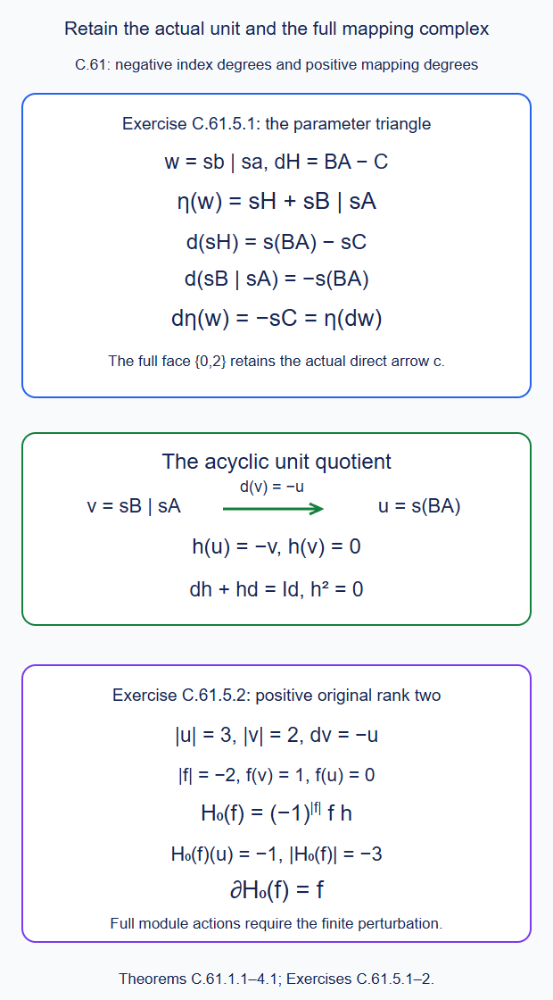
Theorems C.61.1.1–C.61.4.1 prove full mapping restriction,exact-edge recording,the fixed native square and relative full-face restriction. Exercises C.61.5.1–C.61.5.2 compute the actual index unit quotient and its signed Hom primitive. Editable SVG source.

C.62. Relative coherent lifts with the original family fixed
A supplied entire common-bar path lifts while retaining the original native first family and its already assigned faces. The relevant mapping kernel is an explicit identity cone;its contraction does not require the original restriction kernel to be acyclic. The generator construction retains every higher path component and both exact common images. Constructing the compatible common path with all native product conditions remains the input required for this lifting step.
C.62.1. A path-recording projection with an elementary cone kernel
Let \(P:\mathcal D\to\mathcal E\) be a unital dg functor surjective on its graded Hom spaces. No acyclicity of its mapping kernels is required in this lemma. Retain chosen object labels in \(\mathcal D\). Define \(\mathcal Q(P)\) on those labels: a degree-\(r\) morphism is a triple \[ \begin{aligned} f&:X\to Y\quad\text{in }\mathcal D,\\ g&:PX\to PY\quad\text{in }\mathcal E,\\ a&:PX\to PY\quad\text{in }\mathcal E,\quad |a|=r-1. \end{aligned} \] Use differential and composition \[ \begin{aligned} D(f,g,a)&=(\partial f,\partial g,\\ &\qquad-\partial a+Pf-g),\\ (f_2,g_2,a_2)&(f_1,g_1,a_1)\\ &=(f_2f_1,g_2g_1,\\ &\qquad a_2Pf_1+(-1)^{|f_2|}g_2a_1). \end{aligned} \] These are exactly the path-category formulas after restricting its first projection along \(P\). The object path in \(\mathcal E\) is the identity of \(PX\). Let \(\operatorname{Path}_1(\mathcal D)\) be the analogous identity-object-path category over \(\mathcal D\).
Lemma C.62.1.1 (keep the native first projection). The map \[ \begin{aligned} S&:\operatorname{Path}_1(\mathcal D)\to\mathcal Q(P),\\ S(f,g,a)&=(f,Pg,Pa) \end{aligned} \] is a unital dg functor,graded-surjective and a quasi-isomorphism on every Hom complex. It fixes the first projection exactly. Its mapping kernel has the normalized contraction \[ k(0,g,a)=(0,-a,0). \] The same result holds in relative Hom spaces vanishing on assigned full faces whenever \(P\) is graded-surjective there.
Proof. C.50.3's signed path identities give the dg category \(\mathcal Q(P)\),since \(P\) preserves the differential, composition and identities. Substitution in those same formulas shows that \(S\) is a dg functor. For a prescribed triple in \(\mathcal Q(P)\),keep its actual \(f\) and lift \(g,a\) graded-linearly through \(P\). This proves graded surjectivity.
An element of the kernel has \(f=0\) and \(Pg=Pa=0\). On the remaining pair its differential is \(d_K(g,a)=(\partial g,-\partial a-g)\). It stays in the kernel because \(P\) is a chain map. With \(k(g,a)=(-a,0)\), \[ \begin{aligned} d_Kk(g,a)&=(-\partial a,a),\\ kd_K(g,a)&=(\partial a+g,0). \end{aligned} \] Their sum is \((g,a)\),and \(k^2=0\). Thus the mapping kernel is contractible even if \(\ker P\) has cohomology: it is the shifted cone of its identity. Surjectivity and this contraction prove the mapping quasi-isomorphism.
All formulas preserve the first projection. They also preserve vanishing on each assigned face,as \(k\) merely moves \(-a\) to the second component. Relative graded lifts exist by the assumed relative surjectivity of \(P\). This proves the relative claim without asserting acyclicity of an arbitrary relative native transformation space. \(\square\)
C.62.2. Lift a whole common path relative to its already assigned faces
Let \(I\) be a finite directed parameter category. Let \(F:\Omega B(kI)\to\mathcal D\) be the actual whole native family,with all its original higher components. Suppose \(H:\Omega B(kI)\to\mathcal Q(P)\) is a supplied entire path recording whose first projection is exactly \(F\). Write its other components as \(G,A\);thus \(G\) is the desired entire common family and \(A\) records the full path from \(PF\) to \(G\). Its object paths are identities. Let a compatible lift to \(\operatorname{Path}_1(\mathcal D)\) already be assigned on a differential-stable union of original free generators,such as a union of full parameter faces.
Theorem C.62.2.1 (relative coherent native path lift). The given lift extends to a whole unital dg functor \(\widetilde H:\Omega B(kI)\to\operatorname{Path}_1(\mathcal D)\) with \(S\widetilde H=H\). Its first projection is exactly the actual native \(F\). Its second projection \(\widetilde G\) and path component \(\widetilde A\) have exact prescribed images \(P\widetilde G=G,P\widetilde A=A\). All earlier face values are unchanged,and every higher generator is retained. This is a finite original-word construction.
Proof. Keep the assigned values. Map a coefficient identity to the true identity triple. For the next original free generator \(x\),choose a graded lift \(v\) of \(H(x)\) under \(S\), keeping its first component exactly \(F(x)\). Its differential uses only shorter original generators or their products,already assigned. Put \[ o=Dv-\widetilde H(dx),\qquad \widetilde H(x)=v-k o. \] The defect has image zero under \(S\),because the whole given \(H\) is a dg functor. Its first component is zero separately, because \(F\) is a dg functor and its earlier values are exact. Applying \(D\) to the defect gives zero:the chain equation has already been proved on all shorter terms of \(dx\),and \(d^2x=0\). Lemma C.62.1.1 therefore gives \(Dko=o\). The corrected value satisfies its chain equation,retains the exact image under \(S\),and keeps the first component fixed. Extend freely to products;the graded Leibniz identity proves their equations too.
Induct on the original string length. The finite directed height bounds every strict-arrow string,so every generator receives its value after finitely many steps. If original arrows with the same endpoints are parallel,their distinct labels are never identified. The assigned differential-stable union is retained because only unassigned generators are corrected. For full parameter faces, merging removes vertices and splitting uses subsets,so that stability is exactly the one proved in C.53.5.1/C.54.4.1.
The first and second projections of \(\widetilde H\) are dg functors by the signed path identities. Its object paths are identities,so it is an actual resolved equivalence from the original native family to \(\widetilde G\),with every higher path component included. The equality \(S\widetilde H=H\) holds on generators and therefore on all their free products. It gives the exact two prescribed common images.
For additional internal full-face or full-corner constraints,apply the relative version of Lemma C.62.1.1 on each mapping block. C.61.4.1 provides that graded surjectivity for the actual bar-unit restriction. The cone contraction preserves those relative subspaces regardless of their own cohomology. Thus compatible earlier values can also be retained along increasing finite corners. This is a lifting result for the given compatible entire common path. It does not infer that common path from unrelated absolute edge primitives. \(\square\)
If a fixed chain-linear section \(J\) of \(P\) is available, the generator recipe can be especially explicit. Choose \(v=(F(x),JG(x),JA(x))\). Only its second component changes under the correction,because \(k o=(0,-o_a,0)\). On a one-arrow generator it gives \[ \begin{aligned} \widetilde G(\alpha)&=F(\alpha)\\ &\quad+J\bigl(G(\alpha)-PF(\alpha)\bigr),\\ \widetilde A(\alpha)&=JA(\alpha). \end{aligned} \] On higher generators it includes the defect of \(J\) with respect to all previously assigned products. A chain-linear section need not preserve multiplication,and those higher correction terms must not be dropped.
C.62.3. Consequence and remaining common-path obligation
For the actual restriction of C61,the theorem lifts a compatible common-bar normalization together with its entire comparison path to native normalized bar modules,retaining the original native first family and already assigned full faces. The new kernel is an identity cone,so this upward lift creates no additional relative null-homotopy obstruction. The possible obstruction identified in C.61.4.1 concerns the earlier construction of a compatible common-bar path with all desired product conditions. It has not been erased by this theorem. Its actual relative class must still be supplied on the whole native overlap domain.
After that common path is constructed,the present theorem retains its whole parameter coherence,not just a set of lifted edges. The separate simultaneous whole-path-sector construction and every external several-transition/grafting covariance mark on the exact C47 domain remain required before the full marked point and rational strong monoidal descent.
C.62.4. Two solved coherent-lift examples
Exercise C.62.4.1 (a nonacyclic restriction kernel; intermediate). Take \(P:k[\epsilon]/\epsilon^2\to k\),concentrated in degree zero. Compute the kernel of the path-recording map \(S\) of Lemma C.62.1.1 and its contraction. Explain why the quasi-isomorphism assertion for \(S\) does not assert that \(P\) is one.
Solution. The kernel of \(P\) is \(k\epsilon\) in degree zero,with nonzero cohomology. The kernel of \(S\) instead has \((\epsilon,0)\) in degree zero and \((0,\epsilon)\) in degree one. Its differential sends the former to \((0,-\epsilon)\) and the latter to zero. The contraction sends \((0,\epsilon)\) to \((-\epsilon,0)\) and the other basis vector to zero. Directly \(d_Kk+kd_K=1,k^2=0\) on both vectors. Thus \(\ker S\) is the contractible identity cone of the nonacyclic \(\ker P\). The two maps have different kernels; \(S\)'s mapping quasi-isomorphism uses exactly this cone.
Exercise C.62.4.2 (the missing triangle term; advanced). Let \(Q=ke\oplus kf\oplus ky\),with \(|e|=|y|=0,|f|=-1\) and \(df=y\). Put \(V=Q\oplus(kg\xrightarrow{d}kz)\), with \(dg=z,|g|=-1,|z|=0\). Let \(\mathcal D\) be the dg endomorphisms preserving the second summand,and let \(P\) project to \(\mathcal E=\operatorname{End}(Q)\). A unital chain-linear section is \(J(a)=\operatorname{diag}(a,a_{ee}1_{kg\oplus kz})\). Define \(K(e)=f,N(f)=g,N(y)=z\),zero elsewhere,and put \(L=\partial K\),so \(L(e)=y\). On \(0<1<2\),take the original native edges \(F_{ij}=1+(j-i)N\). On the common side change only the edge01 to \(1+L\),with path component \(-K\);leave the other two edges equal to one. Compute the lifted higher triangle value. Show why \(JK\) alone fails.
Solution. The functional \(a\mapsto a_{ee}\) annihilates the Hom differential because \(d_Q\) has zero row and column at \(e\). Thus \(J\) is a chain-linear section and sends the identity to the identity. It need not preserve multiplication. The map \(N\) is closed and \(N^2=0\),so \(F_{12}F_{01}=F_{02}\). The original higher triangle is zero.
The common triangle comparison is \(K\),since its differential is \(L=(1)(1+L)-1\). Its higher path component is zero. The native edge values given by Theorem C.62.2.1 are \[ \begin{aligned} \widetilde G_{01}&=1+N+JL,\\ \widetilde G_{12}&=1+N,\\ \widetilde G_{02}&=1+2N, \end{aligned} \] with path components \(-JK,0,0\),respectively. Their triangle defect in the comparison component is \[ \widetilde G_{12}\widetilde G_{01}-\widetilde G_{02} =JL+NJL. \] The differential of the candidate \(JK\) is only \(JL\). The missing term is \(NJL:e\mapsto z\ne0\). The actual kernel correction is \(NJK:e\mapsto g\),so the lifted triangle is \[ \widetilde G_{012}=JK+NJK. \] Indeed \(\partial(NJK)=NJL\),since \(N\) is closed of degree zero. The third component of the native path product on the triangle boundary is \(-(1+N)JK\),which is exactly \(-\widetilde G_{012}\);its higher path component remains zero. Thus the full path equation holds as well as its comparison equation. Finally \(P(NJK)=0\),so its common image is still exactly \(K\),and its first projection is the original zero higher component. Omitting the correction preserves that common image but breaks the native chain equation. This finite dg algebra example illustrates the full lifting formula;it is not an IC mapping space identification.
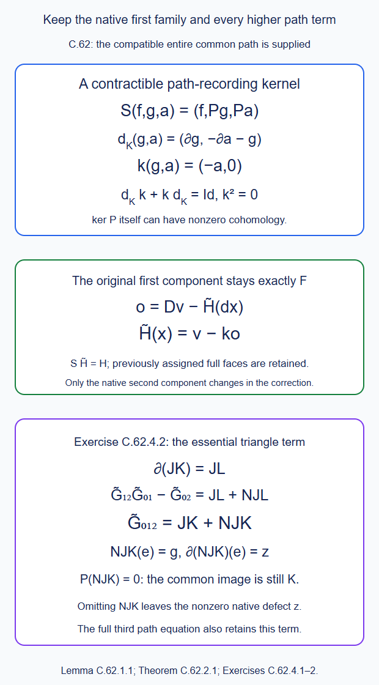
Lemma C.62.1.1 contracts the mixed path-recording kernel. Theorem C.62.2.1 lifts the supplied entire common path while keeping assigned native faces. Exercises C.62.4.1–C.62.4.2 calculate the cone and the essential higher triangle correction. Editable SVG source.

C.63. Global fixed-root-profile normalization
The full root-tree index is countable and locally forward finite. Its height may be negative;each nonidentity arrow still has positive height jump. The finite-on-original-rank constructions extend to this whole index. Choosing the independent fixed-profile models and their comparisons globally gives exact agreement on intersections of their finite capacities,corners and full parameter faces by restriction. Profile-changing joint execution and external grafting keep their separate domains and higher equations.
C.63.1. The unbounded tree index is locally forward finite
For \(n\ge0\),let \(\mathcal T_n\) have every finite planar operation-rooted tree with \(n\) ordered external leaves. Keep nullary and unary operation vertices. An arrow is the selected set of original operation edges to contract,as in C44. There is no vertex-capacity bound. Put \(h(t)=-V(t)\). If \(n=1\),adjoin an isolated identity-strand object \(\mathbf e\),with no new arrows to operation-rooted trees;set its height zero. Denote this enlarged category by \(\mathcal R_n\). The strand's native functor is the identity. It is not identified with the unary corolla.
Lemma C.63.1.1 (the actual global root index). These are countable directed categories in the strict-height sense. Every object has a finite full forward closure,including its actual parallel arrows. The finite capacity subcategories of C44 are full and forward-closed, and exhaust \(\mathcal T_n\). A nonidentity arrow increases height by its number of selected edges;any strict chain starting at \(t\) has length at most \(V(t)-1\).
For a fixed ordered root input profile \(\mathbf n=(n_1,\ldots,n_m)\),with \(m\) finite and \(n_i\ge0\),the category of independent such root components is literally \(\mathcal R_{\mathbf n}=\prod_i\mathcal R_{n_i}\). It is locally forward finite. Its ordered cut maps and their refined intersections retain the actual product arrow labels.
Proof. All objects and arrows lie in some C44 finite capacity subcategory. Its union/edge-lifting composition rule is independent of that capacity,so defines the global category. A finite tree has at most \(2^{V(t)-1}\) selected contraction sets. Every quotient has no more vertices than the source. Iterating a contraction is again contraction of one original selected set. Thus its whole forward closure consists of finitely many quotients,with finitely many arrows between them. An arrow starting at any quotient also ends in that closure. It is a full finite forward-closed subcategory.
C.44.1.1 gives \(V(t/E)=V(t)-|E|\),and hence the asserted height jump and source chain bound. It also proves that the full subcategory \(V\le L\) is finite and that contraction retains all external leaves. These subcategories are forward-closed and their union contains every finite tree. Countably many finite subcategories give a countable object and arrow set. Adding the isolated identity strand preserves all claims and keeps its label distinct from the unary operation vertex.
An ordered planar forest has one component for each root. Each component's external leaves form a consecutive block;each original external leaf occurs in exactly one block. Contracting operation edges cannot join different root components,so an arrow is exactly its tuple of component selected sets. The same tuple rule gives composition. Thus for the fixed input-block profile these independent forests form the displayed product category,not merely an equivalent one. Its finite forward closure is the product of the finite root forward closures. The summed height is strict on every nonidentity arrow. Ordered regrouping and refinement merely regroup those tuples, retaining their individual selected-set labels. \(\square\)
The native root functors and their full coherence maps are defined on this whole index before a capacity is imposed. They are precisely the actual finite-frame convolution/unit/contraction maps of C44 on each original finite tree. Passing to a larger capacity adds trees; it changes none of an earlier tree's maps. The same common-chain construction of C.44.3.1 supplies all finite higher diagrams at once.
The unsuspended graded central mapping space at a root tree can be identified with that at its \(n\)-corolla using its unique terminal contraction. On an arrow \(t\to u\),the two composites to the corolla are the same original contraction. Their actual enhanced comparison gives the same equality in full transformation cohomology and therefore on graded central mappings. This is a natural graded identification over \(\mathcal T_n\). The identity strand has its identity-functor mapping space. A zero-input root keeps its actual \(\operatorname{RHom}(IC_0,y)\) factor. In a tagged parameter mapping block,also keep the actual arrow-space factor \(k\mathcal R_n(t,u)\);parallel contraction labels are not discarded by this central identification. Ordered roots tensor these spaces by the actual C.57.4.1 identification.
C.63.2. The finite-on-rank constructions extend to this full index
Let each root parameter category be as in Lemma C.63.1.1,or a full finite forward-closed subcategory. A finite strict index word has the same positive height jump as in any capacity containing it. Use the original rank \[ \begin{aligned} R&=\#\{\text{original outside IC letters}\}\\ &\quad+\sum\Delta h. \end{aligned} \] No nonnegative absolute height is needed;only these height differences enter the count.
Theorem C.63.2.1 (global original-rank construction). The ordered cut algebra and its acyclic quotient,the full Taylor and bar-unit restriction contractions,the fixed-projection native cobar lifts, the relative module-action construction,and the coherent path lifts of C55–C62 apply on these full root indices. The actual maps and homotopies can be chosen once on the whole index and then restricted. These restrictions agree exactly on all intersections of their finite corners or full parameter faces. Every value on an original input remains finite.
This assertion concerns a global choice followed by restriction. It does not claim that arbitrary independently prescribed face primitives extend,or that each restricted choice is the result of a fresh canonical finite construction on that face.
Proof. Every finite collection of root objects lies in a finite full forward-closed subcategory:take the union of their finite forward closures. Its product over roots is another such finite corner. These corners form an increasing directed collection, and every finite index word occurs in one. The explicit shuffle, ordered retraction,unit and coproduct formulas on an original word are independent of its corner. The finite C55 and C56 identities therefore hold on the global index as literal equations.
For the comparison cones and quotients asserted to be acyclic, the global complexes are unions of their finite counterparts. A cycle is a finite linear combination of words and lies in one finite corner. The already proved finite acyclicity gives it a primitive in a larger finite corner if needed. Thus the union is acyclic,with an actual finite primitive. This argument also applies to the leading quotient in each fixed original rank: the differential and all the cut and unit maps preserve rank there. Every finite rank-block cycle still belongs to a finite corner and has its primitive in that same rank block by C56/C61. No commutation of Hom with an infinite product is being assumed.
Choose the leading splitting contractions on these global acyclic rank blocks. They can retain the full finite forward-closed corners:at fixed outside endpoints every intermediate parameter object lies in the finite forward closure of its initial endpoint. Compute that block in that finite closure. Any forward-closed corner containing the original word already contains that whole closure. Thus the choice is the same on every such corner. If necessary split further by the actual total composite parameter arrow. Differential,unit,ordered cut projection and shuffle all preserve this composite;their finite comparison cones split over those arrow blocks too. The contraction then preserves those original parallel-arrow composite labels. The outside IC words are left fixed in these leading index choices.
The remaining full module terms consume original IC letters or positive index height exactly as in C.56.4.1 and C.61.1.1. Their perturbation series terminates after at most \(R\) factors on any fixed input. Each leading contraction value is an algebraic vector,so is itself a finite sum. The full global contraction therefore produces an actual finite sum on that input. The same argument applies to the rank-by-rank curvature correction of C.57.1.1. Pure core powers,central unary maps and actual parameter composites are kept in the same blocks.
The actual fixed-projection sections and strict native free-cobar lifts in C46/C52 have the same extension. Their mapping kernels contract in these endpoint/composite blocks. Their source unary generator complex is retained,and the remaining original-rank induction is finite on each generator. The fixed-projection defect correction is the full Hom contraction,not a choice based only on the generator's cohomology. Thus they supply genuine global representatives of the one original native functor diagram.
In the coherent path constructions,the original generator has finite string length. Its differential uses shorter strings. Induction over that length defines the global values,one finite algebraic correction at each step. There is no need for a uniform height bound on all objects at once. It retains every given full coherent native family because that original family is the input, not a family reconstructed from unrelated finite edge choices.
Finally all the constructed cofree maps and homotopies preserve any genuine full parameter face. Their outside coactions only cut the original input word;their central value has the original outer endpoint labels and its retained composite arrow. A full face contains those endpoints and all their actual arrows. No new output parameter vertex occurs. This is the central cofree argument of C.52.5.1. Hence restricting the one global map gives a full map or homotopy on each face. Restricting first to either of two faces and then to their intersection is literally the same restriction. This does not require the auxiliary outside contraction to be the separately chosen one for a nonrectangular face. The full forward-corner statements above ensure finite-stage retention as well. This proves all claims with the stated global-choice convention. \(\square\)
C.63.3. One common product normalization for a fixed root profile
Use the actual global root families just described,with the calibrated extension-field comparison of C48 and all original endpoint/string labels retained. The whole native functor and its represented equivalences are fixed before any finite capacity or full face is selected.
Theorem C.63.3.1 (fixed-profile product normalization before restriction). For every finite ordered root profile \(\mathbf n\),the common one-cross source and target models and their comparison can be chosen on the whole \(\mathcal R_{\mathbf n}\) so that their restrictions to every proper ordered root cut are the prescribed ordered products of the smaller-root choices. Their actual full comparison homotopies are one global assignment. Consequently all restrictions to finite capacities,finite forward-closed corners and full parameter faces agree on their overlaps.
These are the independent fixed-profile product marks. A profile-changing joint execution or external several-transition grafting mark is not asserted to be such a restriction.
Proof. Induct on the number of output roots. Fix the single-root native modules and their actual full comparison on their entire \(\mathcal R_n\),using the original native family and its bar/common-core representatives. Theorem C.63.2.1 applies to these global representatives and contractions. The isolated identity strand keeps its original identity module,and a nullary root keeps its original unit-output mapping module.
At \(m>1\),the already chosen models on all shorter consecutive root profiles prescribe their product actions on every proper ordered cut. On refined cut intersections they give the same flat ordered product,including the single final cross shift, by the shorter-root induction. The global rank construction in Theorem C.63.2.1 and C.57.1.1 therefore extend these actions to the whole current parameter product. C.57.2.1 proves all its finer ordered-cut restrictions too.
The actual native finest comparison of C58 exists on this global family by Theorem C.63.2.1:its strict projection square is wordwise,the represented natural transformations come from the one supplied whole native family,and the full fixed projection kernel contractions are the global finite-on-rank ones. C.57.3.1 extends it to an actual old-to-product-normalized module isomorphism. Thus these models retain their original native interpretation,not just their graded central ranks. Use those actual isomorphisms on both sides to interpret the whole calibrated comparison on the new models.
The full native monoidal square now gives the one global finest primitive by C.61.3.1,C.60.3.1 and C.59.2.1,all valid globally by Theorem C.63.2.1. Prescribe the products of the already normalized shorter-root comparisons on every proper cut. Their refined-intersection compatibility is the induction hypothesis and C41's literal graded regrouping. C.59.3.1 extends and glues their homotopies from that one actual finest primitive. Its central Taylor extension and finite inverse give the global comparison with precisely those cut values. This construction is performed once for the entire profile; no unrelated primitive is chosen on an already named finite face. That proves the induction.
Theorem C.63.2.1's cofree restriction argument shows that all finite capacities and full faces now inherit their maps and homotopies by literal restriction. They agree on every overlap for that reason. This establishes a compatible common path for this whole fixed-profile independent-root diagram,which can also be lifted with the original native first family fixed by C62. It is not an assertion that an arbitrary old collection of face homotopies had zero relative obstruction.
On a given whole nested path graph,apply C.51.3.1 using these global one-cross homotopies whenever the sectors carry these same endpoint/string labels. Each string sector receives its choice once;its copies in different finite corners are the same restriction. The logarithm,whole-path coderivation and exponential are finite on every original word as proved in C51. Thus this step retains the several-cross differential and comparison components. It does not make every external grafting map a strict product:the latter has its distinct actual C47 domain and may have higher central components. Those complete external covariance equations remain required before the marked-point descent can be invoked. \(\square\)
C.63.4. Two solved global-index calculations
Exercise C.63.4.1 (parallel contractions and a bar class; intermediate). Take the unary operation chain with three operation vertices above one external leaf. Describe its complete forward contraction category. Compute a nonzero degree-minus-two class in its internal relative index bar,and explain why larger capacities do not remove it.
Solution. Contract either its upper or lower operation edge. These give two distinct arrows \(\alpha,\beta:t_3\to t_2\). There is one remaining-edge contraction \(\gamma:t_2\to t_1\),and \(\gamma\alpha=\gamma\beta=\delta\),the selected contraction of both original edges. These are the same arrows in every capacity \(L\ge3\). The global heights are \(-3,-2,-1\). In the internal relative index bar, \[ z=s\gamma\mid s\alpha-s\gamma\mid s\beta \] is a nonzero degree-minus-two cycle:both summands have differential \(-s\delta\),so they cancel. No length-three index word starts at \(t_3\),so this cycle is not a boundary in that endpoint block. The actual ordered product shuffle retains this cycle and its two distinct contraction labels. Terminality contracts the augmented full nerve;it does not authorize replacing these internal relative-bar words by a single path.
Exercise C.63.4.2 (negative height and a zero-input root; intermediate). Take root0 to be a unary operation above a nullary operation,root1 to be a unary operation above a binary operation with two external leaves,and root2 to be the isolated identity strand. Determine their input-block profile,full forward product corner and heights. State which central mapping factors remain,and check the height differences used in the original-rank bound.
Solution. The input-block profile is \((0,2,1)\). The two nontrivial root forward closures each have two objects,so their product is the actual four-object square,with heights \(-4,-3,-3,-2\). Each edge has positive height jump one,and a diagonal has jump two. Every capacity \(L\ge2\) containing these two-operation roots has exactly that same full forward square. For source tuple \((x_1,x_2,x_3)\) and target tuple \((y_0,y_1,y_2)\),the actual central tensor is \[ \begin{aligned} &H^\bullet\operatorname{RHom}(IC_0,y_0)\\ &\quad\otimes H^\bullet\operatorname{RHom}(x_1*x_2,y_1)\\ &\quad\otimes H^\bullet\operatorname{RHom}(x_3,y_2). \end{aligned} \] The unit-output and identity-strand mapping factors both remain. Increasing the ambient capacity changes none of them. The rank bounds use the displayed height jumps,so they require no shift to a globally nonnegative height on the infinite index.
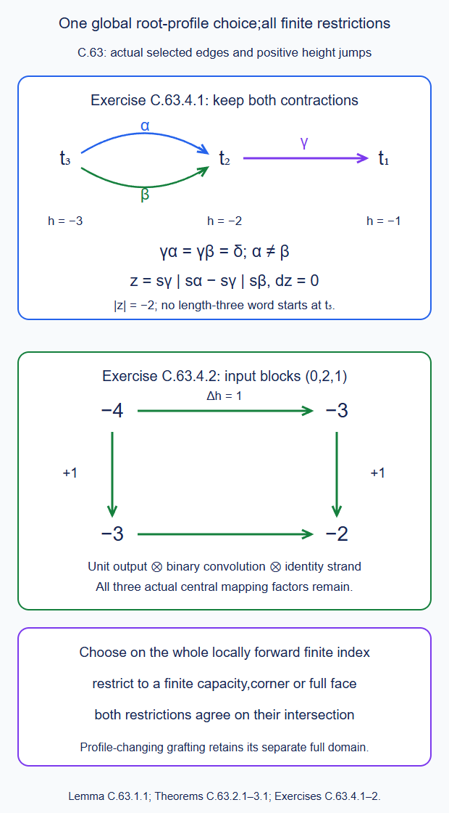
Lemma C.63.1.1 constructs the actual locally forward finite root index. Theorems C.63.2.1–C.63.3.1 extend the original-rank constructions and normalize the whole fixed-profile product diagram before finite restriction. Exercises C.63.4.1–C.63.4.2 compute the retained parallel class and negative-height corner. Editable SVG source.

C.64. Joint execution and the complete grafting domain
A grafting transition can execute an outer operation after completing an inner tree. Its source and target frontiers can have different arities. The compatible parameter domain retains these joint transitions and every composable string. A product shuffle lies in that domain exactly when its whole prefix rectangle is compatible. This criterion distinguishes complete shuffle maps from a deletion of forbidden terms.
C.64.1. Global joint indices and compatibility
Let \(\mathcal E_n\) be the union of the categories of C.47.1. Its objects are finite operation-rooted planar trees \(t\) with \(n\) ordered external leaves, together with operation-descendant ideals \(J\). Keep every nullary and unary operation vertex. An arrow \((t,J)\longrightarrow(t/K,J')\) remembers its selected original operation-edge set \(K\), and satisfies \(\pi_K(J)\subseteq J'\). Put \[ h(t,J)=-2V(t)+|J|. \tag{C.64.1} \] For an outer tree with \(m\) leaves, write \(B(t,J)\subseteq[m]\) for the external-leaf positions lying below at least one executed operation vertex. For an inner state \(s=(u,I)\), put \(c(s)=1\) exactly when \(I\) contains all operation vertices of \(u\); otherwise put \(c(s)=0\).
Lemma C.64.1.1 (global joint indices and monotone prerequisites). The category \(\mathcal E_n\) is countable, has strictly increasing integer height on nonidentity arrows, and has a finite full forward closure at every object. Its capacity subcategories are full, forward-closed and exhaustive. A chain from \((t,J)\) has length at most \(2V(t)-|J|-1\). The functions \(B\) and \(c\) are nondecreasing along arrows, where subsets are ordered by inclusion.
For \(m,n_i\geq0\), the compatible grafting domain is the full subcategory \[ \mathcal D_{m;\mathbf n}\subseteq \mathcal E_m\times\prod_{i=1}^m\mathcal E_{n_i}, \qquad B(t_0,J_0)\subseteq\{i:c(t_i,J_i)=1\}. \tag{C.64.2} \] It too is locally forward finite and has full exhaustive capacity corners. It need not be forward-closed in its ambient product.
Proof. Composition is C.47.1's lifted union of original contracted edge sets and the final target ideal. It does not use the capacity. Every finite object and composable string lies in some capacity subcategory, so their unchanged composition rules give a category on the union. Countability follows from the finite number of trees, ideals and arrows at each capacity.
For an arrow, let \(k=|K|\), \(I=\pi_K^{-1}(J')\), and let \(k_{\mathrm{ex}}\) count the contracted edges inside the completed target clusters. C.47.1 proves \[ h(t/K,J')-h(t,J) =k+(k-k_{\mathrm{ex}})+(|I|-|J|). \tag{C.64.3} \] Every term is nonnegative. If \(k>0\), the first is positive. If \(k=0\), positivity fails only for unchanged ideal, the identity arrow. Since \(V\geq1\) and \(|J|\leq V\), every target has height at most \(-1\). Strict increase therefore bounds a chain from the specified source by \(-1-h(t,J)=2V(t)-|J|-1\). An absolute nonnegative height is unnecessary.
Every subsequent quotient of \(t\) is obtained by one of its finitely many original operation-edge subsets. Each such quotient has finitely many ideals. These are all possible forward targets; the full category on those targets has finite arrow sets. It is forward-closed because another quotient still comes from one original subset. Capacity cannot increase under an arrow, proving the capacity assertions.
If an external leaf lies below \(v\in J\), its same external position lies below the quotient vertex \(\pi_K(v)\in J'\). Contracting operation edges never removes an external leaf or changes its order. Thus \(B(t,J)\subseteq B(t/K,J')\). If every original vertex is in \(J\), its image is every quotient vertex, so the arrow condition forces \(J'\) to be complete. This proves monotonicity of \(c\).
The union of embedded executed vertices in a graft is an ideal precisely when an executed outer vertex has every attached inner operation descendant executed. The attached inner trees are exactly the leaves in \(B(t_0,J_0)\). Each must be complete; there is no condition on other inner trees. This proves (C.64.2), including inner trees with no external leaves. At \(m=0\) the condition is empty and the domain is just \(\mathcal E_0\).
A finite product of finite full forward closures is finite. Its intersection with the full compatible subcategory contains the entire forward closure inside that subcategory. An arrow in the subcategory cannot increase any factor capacity, so its capacity corners are full and forward-closed there. They exhaust it. For failure of ambient forward closure, take an unexecuted unary outer corolla and an unexecuted nullary inner corolla. The tuple is compatible. Executing only the outer vertex gives an ambient arrow whose target violates (C.64.2). This completes the proof. \(\square\)
C.64.2. Which complete product shuffles lie in the domain
Set \(n_0=m\) and use the actual reduced category bars \(D_i=B(k\mathcal E_{n_i})\), with the outer factor indexed by \(i=0\). A factor word records a finite composable string of nonidentity arrows, including its endpoints. A length-zero word records its object. In a tensor of factor words \(w_0\otimes\cdots \otimes w_m\), write \(s_i^-\) and \(s_i^+\) for the first and last objects of the \(i\)-th word. The tensor's prefix rectangle consists of all tuples of vertices obtained by independently choosing a prefix of each factor word. Call this tensor word safe when \[ B(s_0^+)\subseteq\{i:c(s_i^-)=1\}. \tag{C.64.4} \] All labels here are original category labels, including parallel contraction arrows. Let \(S\) be the span of safe tensor words in \(D_0\otimes\cdots\otimes D_m\).
Theorem C.64.2.1 (the exact complete-shuffle domain). The prefix rectangle is contained in \(\mathcal D_{m;\mathbf n}\) if and only if (C.64.4) holds. The span \(S\) is a differential graded subcoalgebra, with its colored coaugmentations. The entire usual signed shuffle restricts to a chain coalgebra injection \[ \operatorname{sh}:S\longrightarrow B(k\mathcal D_{m;\mathbf n}). \tag{C.64.5} \] Within the tensor of the actual factor word bases, \(S\) is exactly the linear preimage of \(B(k\mathcal D_{m;\mathbf n})\) under the ordinary shuffle into the ambient product bar. This assertion includes finite linear combinations, not only individual words.
On the sector where the outer ideal is empty at every vertex of its word, every tensor word is safe. General compatible joint transitions are retained in \(B(k\mathcal D_{m;\mathbf n})\), even when they are absent from the safe product-shuffle image.
Proof. Along the outer word the sets \(B\) increase, and along each inner word completeness can only increase, by Lemma C.64.1.1. If (C.64.4) holds, every prefix tuple therefore satisfies (C.64.2). Conversely the prefix tuple with the outer word finished and every inner word at its beginning is in the rectangle. Its compatibility is exactly (C.64.4). This proves the criterion.
Every prefix tuple occurs in some complete interleaving: first take its chosen prefixes, preserving each factor's order, and then take their remaining suffixes. A shuffle term's vertices are prefix tuples. Thus every shuffle term lies in the compatible full subcategory precisely when the full prefix rectangle does. Fullness is relevant here: the simultaneous composite arrows arising in the bar differential are actual arrows of the subcategory whenever their endpoints lie there.
The reduced internal bar differential composes two adjacent arrows in a factor word. It retains that word's endpoints and removes one intermediate vertex. Therefore it preserves (C.64.4). There are no other terms, since the linear categories have degree-zero arrows and zero internal differential. The tensor differential includes its usual Koszul signs and consequently preserves \(S\).
In a term of the tensor coproduct each factor word is cut into a prefix and a suffix. For the prefix tensor, the outer final \(B\) is contained in the old final \(B\), and every inner initial state is unchanged. It is safe. For the suffix tensor, the outer final state is unchanged and every inner initial state occurs later in its word, so its completeness is at least the old initial completeness. It too is safe. All coproduct terms thus lie in \(S\otimes S\). The compatible object identities give exactly the length-zero safe words and their coaugmentations. This proves the subcoalgebra statement, with the inherited tensor coproduct signs.
The full shuffle on bars of degree-zero categories is the signed interleaving map proved in C.34.2 and C.42.1. Its differential cancellation pairs opposite orders of adjacent arrows from different factors; arrows in the same factor give that factor's bar differential. Its coalgebra identity cuts each interleaving at every prefix, with the tensor Koszul sign. These complete identities restrict to \(S\), since every term now lies in the indicated subcoalgebras. This proves the chain and coalgebra assertions in (C.64.5).
For injectivity and the claimed linear preimage, each interleaving has arrows supported in exactly one factor at each step. The nonidentity factor and its original arrow label are recoverable from that product arrow. Reading those steps in their original order recovers each factor word, including its endpoints. Thus different tensor word basis elements have disjoint shuffle supports. Within a single shuffle, the different interleavings also give distinct product-bar basis words and have coefficients \(1\) or \(-1\). This uses the actual arrow labels and holds for parallel arrows. No coefficient can cancel a forbidden interleaving coming from another tensor word. A linear combination has shuffle support entirely in the full compatible bar exactly when every tensor basis word occurring with nonzero coefficient is safe. This proves both assertions.
When the outer ideals are all empty, \(B(s_0^+)=\varnothing\), so the criterion imposes no condition on inner factors. This is precisely the native external-product sector of C.47.3. In general (C.64.2) permits a transition which first completes an inner tree and then executes an outer vertex depending on it. Such a transition need not satisfy (C.64.4) for its separate factor words. It remains an ordinary composable string, and its simultaneous composite remains an arrow, in the full compatible bar. \(\square\)
C.64.3. The full graft map and finite original-word bounds
Theorem C.64.3.1 (full joint grafting and its original domains). Literal grafting defines a functor \[ \mathfrak g:\mathcal D_{m;\mathbf n}\longrightarrow \mathcal E_N,\qquad N=\sum_{i=1}^m n_i, \tag{C.64.6} \] which preserves the sum of the heights (C.64.1), retains the selected edge labels, and sends every nonidentity arrow to a nonidentity arrow. It induces the genuine chain coalgebra map \[ B\mathfrak g:B(k\mathcal D_{m;\mathbf n}) \longrightarrow B(k\mathcal E_N). \tag{C.64.7} \] The composite with (C.64.5) is the complete product shuffle followed by grafting on its exact safe domain. No clipping of unsafe shuffles defines (C.64.7). Nested grafts and restrictions to full parameter faces commute on their actual common domains.
Every finite joint or grafting string and its native enhanced functors and higher comparison cells are contained in finite capacity corners. Their native interpretation and its extension-field comparison are the original ones of C.47.2–3 and C.29. The total original-word rank \[ R=r+\sum_{\text{outside runs}}\Delta h \tag{C.64.8} \] is nonnegative and bounds the total number of nonidentity outside index letters plus the \(r\) original IC primitive letters. It is preserved by grafting of outside index runs. A frontier-changing arrow uses its actual source and target arities; it is not replaced by a tensor power at a fixed arity.
Proof. Choose any finite factor capacities containing a source object and its considered finite strings. The exact compatibility criterion is Lemma C.64.1.1, which is independent of capacities. C.47.3 then grafts the tuple, keeps every factor's operation vertex and joining seam, and embeds the disjoint selected factor-edge subsets without selecting a seam. Its quotient is the graft of the factor quotients. Its executed union is an ideal by compatibility. The original edge-union composition rule is unchanged at larger capacities. It therefore defines the global functor (C.64.6).
There are exactly \(\sum_i V_i\) operation vertices and \(\sum_i|J_i|\) executed vertices in its object image. Consequently \[ h(\mathfrak g(s_0;\ldots,s_m))=\sum_{i=0}^m h(s_i). \tag{C.64.9} \] A nonempty selected factor-edge set remains nonempty in the disjoint embedded union and reduces the grafted vertex count. If every selected edge set is empty but an execution ideal strictly increases, the disjoint executed union strictly increases. These are all nonidentity arrows. Thus the functor never turns a nonidentity into an identity. Different selected sets at a fixed decomposed source retain their distinct embedded labels. Distinct decomposed objects may have the same flattened tree; injectivity on all object colors is not asserted.
On a reduced bar word, apply \(\mathfrak g\) to each arrow, retaining every letter. The output is reduced by noncollapse. Its coproduct is still word cutting. Its differential composes adjacent arrows with the original suspended sign; the functor equation sends their composite to the composite of their images. Hence it is a chain coalgebra map. This proof includes an arrow in which several factors change at once and every higher composable string in the full compatible category. Restricting this map to the complete shuffle image gives the stated composite.
For nested grafts, C.47.3's two groupings have the same embedded operation vertices, seams and executed union. Their common compatibility condition is that this final union be an ideal. Selected contractions are the same lifted embedded unions, so the functors, and therefore their bar maps, agree on that common domain. For a full target face on an object set \(T\), restrict the source to the full subcategory on \(\mathfrak g^{-1}(T)\). Every arrow in it maps to the full face on \(T\), giving the actual restriction square. Pulling back two object sets commutes with intersection; successive face restrictions agree literally. This is a statement about those colored restriction maps. Because different decompositions can flatten to the same object, it does not identify the linear preimage of a face subspace under a noninjective flattened bar map with a basis-support subspace.
A finite list of factor trees has finite maximum capacities. All its forward quotients remain within them by Lemma C.64.1.1, and its grafts remain within their sum. C.47.2 constructs the actual partial-forest functor of each arrow from arbitrary source frontier variables. Its saturation ideal is \(\pi_K^{-1}(J')\), so the source frontier arity is \(n+\sum_{v\in J}(1-r(v))\) and the target arity is the corresponding quantity in the quotient. These can differ. Every such arity in the finite forward closure is bounded by the source leaf count plus its vertex capacity. Finite IC generator selections can be closed under forward images in this finite directed diagram by C.47.2's height induction. Thus its full enhanced native strings, the graft comparisons and all their higher cells are the finite-corner constructions already proved there. Those constructions are defined by the original partial forests, tensor, proper and unit maps; none depends on unused larger-capacity trees. Their restrictions agree. C.29's actual full comparison carries these same maps and all their coherent cells after coefficient extension. Taking their compatible finite restrictions proves the global assertion without independently choosing edge comparisons.
Finally each nonidentity index letter has positive integer height jump by (C.64.3). A run of \(q\) such letters therefore has \(q\leq\Delta h\). Summing proves the bound in (C.64.8). The height is bounded above, not below globally, but its endpoint jumps are positive and telescope; this is all that the bound uses. Equation (C.64.9) preserves those summed endpoint jumps under grafting. Original IC letters are unchanged by an index graft. This proves rank preservation. Any use of this index map with the native functors must keep the actual frontier arities just computed. The theorem supplies their full parameter domain and native interpretation; it does not replace them by a fixed-profile product. \(\square\)
C.64.4. Solved calculations
Exercise C.64.4.1 (intermediate; the first unsafe square). Graft a nullary inner corolla below a unary outer corolla. Record states by \((o,i)\in\{0,1\}^2\), where a one means that the corresponding vertex is executed. Determine the compatible domain and the reduced bar differential after retaining only allowed interleavings of the tensor of the two execution arrows.
Solution. Compatibility is \(o\leq i\). The full domain is the three-object chain \(00<01<11\), including its direct composite \(\delta:00\to11\); \(10\) is forbidden. The graft has two operation vertices, so their heights are \(-4,-3,-2\). Their frontiers have respectively \(0,1,1\) factors. Write \(\alpha:00\to01\) and \(\beta:01\to11\). The first functor is the actual unit output, and the second is the unary operation on that arbitrary output factor. Its mapping complex is retained.
The factor tensor is not safe: the outer final executed vertex requires the inner to be complete initially, whereas its initial state is zero. Its full signed shuffle has two terms. In chronological storage, the term inner-then-outer has coefficient \(+1\), and outer-then-inner has coefficient \(-1\). In target-to-source suspended notation the allowed term is \(w=s\beta\mid s\alpha\). The programme convention \(b_2(sb\mid sa)=-s(ba)\) for degree-zero arrows gives \[ b(w)=-s\delta\ne0. \tag{C.64.EX1} \] The tensor of two single-arrow bar words has differential zero. Clipping its other interleaving therefore fails the chain equation. The full compatible bar retains both \(w\) and \(s\delta\), with precisely (C.64.EX1); there is no failure in that genuine bar complex.
Exercise C.64.4.2 (advanced; two units under one binary operation). Take the binary outer corolla and two nullary inner corollas. Among the tensor bars of their three two-state execution categories, determine the safe-word dimension and compare it with the whole compatible bar. Count the allowed interleavings of the tensor of all three execution arrows.
Solution. With coordinates \((o,l,r)\), compatibility is \(o=0\) or \(l=r=1\). There are five objects \[ 000,\quad010,\quad001,\quad011,\quad111. \tag{C.64.EX2a} \] Their heights are respectively \(-6,-5,-5,-4,-3\), and their frontier arities are \(0,1,1,2,1\). The last arrow executes the actual binary convolution of its two arbitrary frontier factors.
Each two-state factor bar has basis the two object words and its one-arrow word, so the full tensor has dimension \(3^3=27\). If the outer word is the empty word at state zero, all \(3^2=9\) inner pairs are safe. The other two outer basis words end at state one; each then requires both inner words to begin at one. Each inner word must therefore be the empty word at one. This contributes two more, giving \(\dim S=11\).
The full compatible category is the poset on (C.64.EX2a). It has nine strict arrows, seven strict two-arrow strings, and two strict three-arrow strings, in addition to its five objects. Its whole reduced bar has dimension \(5+9+7+2=23\). In particular the simultaneous arrow \(000\to111\) is retained even though the tensor of the three separate execution arrows is unsafe. Among its six interleavings, exactly the two which execute both inner units before the outer operation stay in the compatible domain. This count does not turn their clipped signed sum into a replacement for the full bar. Theorem C.64.3.1 uses all 23 actual words and their composition differential.
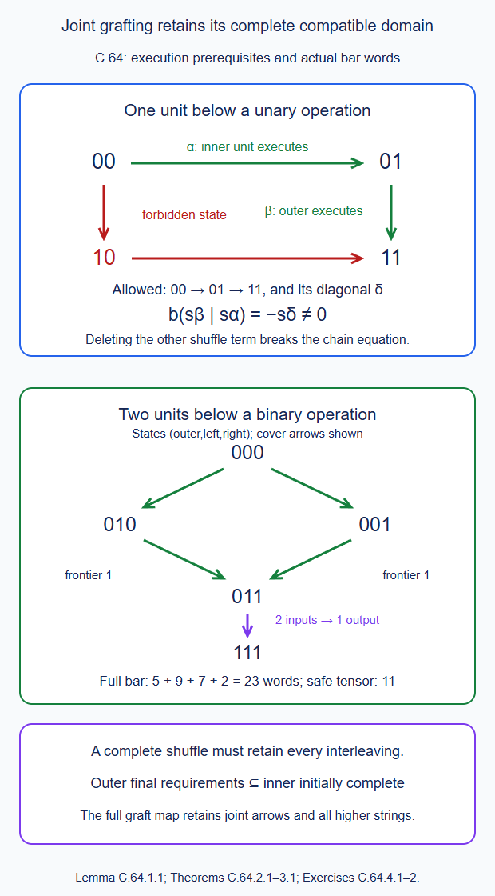
Lemma C.64.1.1 gives the positive height jumps and prerequisites. Theorem C.64.2.1 characterizes complete product shuffles, and Theorem C.64.3.1 gives the whole grafting bar map. Exercises C.64.4.1–C.64.4.2 compute the unit and binary domains. Editable SVG source.

C.65. Entire coherent strings and staged model contractions
Transport through a chosen model contraction acts on the full coherent diagram, including its higher components and its path comparison. Consecutive partitions give explicit finite formulas. Nested partitions show that staged contractions give exactly the same transported diagram as their composite contraction. These statements concern diagrams in a single specified dg category, with all map types retained.
C.65.1. Every component of the transported coherent diagram
Let \(I\) be a directed category with its actual parallel-arrow labels. It may be countable and locally forward finite, as in C64. Let \(\mathcal A\) be a dg category. For each object \(s\) choose objects \(X_s,Q_s\) and normalized contraction data in \(\mathcal A\): \[ \begin{gathered} p_s:X_s\to Q_s,\\ i_s:Q_s\to X_s,\\ p_si_s=1,\\ \partial h_s=1-i_sp_s,\\ h_s^2=p_sh_s=h_si_s=0. \end{gathered} \tag{C.65.1} \] The maps \(i_s,p_s\) are closed of degree zero; \(h_s\) has degree minus one. Suppose the entire normalized dg functor \(F:\Omega B(kI)\to\mathcal A\), with objects \(X_s\), is given. For a nonempty composable string \(c=(f_1,\ldots,f_q)\), written chronologically, write \(F[c]\) for its free cobar generator image. Its degree is \(1-q\). The suspended bar word reads in the opposite order. Write \(c/j\) for the string composing its \(j\)-th and \((j+1)\)-st arrows, and \(c_{\le j},c_{>j}\) for its prefix and suffix at that vertex. In the programme convention the generator equation is \[ \begin{aligned} \partial F[c] &=\sum_{j=1}^{q-1}(-1)^{q-j} F[c/j]\\ &\quad+\sum_{j=1}^{q-1}(-1)^{q-j+1}\\ &\qquad\cdot F[c_{>j}]F[c_{\le j}]. \end{aligned} \tag{C.65.2} \] For \(q=1\) the sums are empty. This is C.39.15/C.43.6 on the actual degree-zero index category; in particular the two-arrow generator has differential \(F[f_2]F[f_1]-F[f_2f_1]\).
Partition the chronological string into nonempty consecutive blocks \(c_1,\ldots,c_r\). Between two blocks the indicated \(h\) is at their shared original object. Write \(\Pi_F(c_r,\ldots,c_1)\) for the ordered composite \(F[c_r]h\cdots hF[c_1]\), with one \(h\) at each block seam. Put \[ \begin{aligned} U[c]&=\sum_{c=c_1\cdots c_r}(-1)^{r-1}\\ &\quad\cdot p_{s_q}\Pi_F(c_r,\ldots,c_1),\\ T[c]&=U[c]i_{s_0},\\ A[c]&=(-1)^{q-1}U[c]h_{s_0}. \end{aligned} \tag{C.65.3} \] There are \(2^{q-1}\) partitions, so these are finite sums.
Theorem C.65.1.1 (explicit full coherent transport). The assignments \(T[c]\) give a normalized dg functor \(T:\Omega B(kI)\to\mathcal A\) with objects \(Q_s\). The triples \[ \bigl(F[c],T[c],A[c]\bigr) \tag{C.65.4} \] give an entire dg functor to the path category of C.53.4, whose object at \(s\) is \(p_s:X_s\to Q_s\). Thus this is an actual coherent comparison with the original full diagram, with its prescribed object projections, not merely a collection of edge comparisons.
The construction preserves restriction to every full parameter face and to their intersections, when one family (C.65.1) has been chosen before restriction. It retains parallel arrows and all original composable strings. No uniform global height bound is required for the finite sums in (C.65.3).
Proof. Every term of \(U[c]\) has degree \(1-q\), since its \(r\) functor components contribute \(r-q\) and its \(r-1\) homotopies contribute \(1-r\). Thus \(T[c]\) has the required degree and \(A[c]\) has degree \(-q\). The endpoints and every intermediate object are those of the original string.
Differentiate (C.65.3) using the full Hom derivation rule. Terms from differentiating an \(F\)-block split into its internal adjacent-arrow merges and its two-block products, by (C.65.2). An internal merge has exactly the corresponding term on the first line of (C.65.2) for \(T\). Indeed if it merges the arrows at original position \(j\), the degree of all terms to the left of its block, including the intervening homotopies, is congruent modulo two to the number of arrows in the chronological suffix after that block. Adding the block's internal sign gives \((-1)^{q-j}\). The partition sign remains \((-1)^{r-1}\).
Consider a seam between blocks, with \(L\) original arrows in its chronological suffix, on its target side. Differentiating its \(h\) gives \(1-ip\). With \(r\) blocks the coefficient of its identity term is \((-1)^{r+L}\): the \(F\)-blocks and homotopies to its left have total degree congruent to \(L+1\), and the partition contributes \((-1)^{r-1}\). The product term obtained by differentiating the merged block of the corresponding \((r-1)\)-block partition has coefficient \((-1)^{r-1+L}\). These cancel. This pairs every identity seam with exactly one functor-component product.
The remaining \(-ip\) seam has coefficient \((-1)^{r+L+1}\). Cutting the whole string at that seam gives the product of the corresponding two terms of \(T\). Their partition signs multiply to \((-1)^{r-2}\), while the cobar cut has sign \((-1)^{L+1}\). The product is \((-1)^{r+L-1}\), the same coefficient. Thus all remaining seams are exactly the second line of (C.65.2) for \(T\). This proves its generator equation. Extension to the free cobar by composition and object units is consequently a dg functor.
For the path assertion use the differential and product of C.53.4: \[ \begin{gathered} D(f,g,a)=(\partial f,\partial g,\\ \qquad-\partial a+p_tf-gp_s),\\ (f_2,g_2,a_2)(f_1,g_1,a_1)\\ \quad=(f_2f_1,g_2g_1,\\ \qquad a_2f_1+(-1)^{|f_2|}g_2a_1). \end{gathered} \tag{C.65.5} \] For clarity, the calculation just made, before its final \(i\), gives the full identity \[ \begin{aligned} \partial U[c]&=\sum_j(-1)^{q-j}U[c/j]\\ &\quad+\sum_j(-1)^{q-j+1}\\ &\qquad\cdot T[c_{>j}]U[c_{\le j}], \end{aligned} \tag{C.65.6} \] where \(c/j\) composes its \(j\)-th and \((j+1)\)-st arrows. Its product terms close the suffix component with \(i\) at the cut, while the prefix component retains its original \(X\)-source. Its signs follow from precisely the same two seam counts. For a one-arrow string all sums vanish: \(\partial U=0\). Grouping the partitions by their first chronological block also gives the exact recursion \[ \begin{aligned} p_{s_q}F[c]-U[c] &=\sum_j U[c_{>j}]\\ &\qquad\cdot h_{s_j}F[c_{\le j}]. \end{aligned} \]
Multiply (C.65.6) on the right by \(h_{s_0}\), use \(\partial h=1-ip\), and multiply by \((-1)^{q-1}\). The Hom derivation sign of \(U[c]\) is \((-1)^{1-q}\). The resulting identity is exactly \[ \begin{aligned} &-\partial A[c]+p_{s_q}F[c]\\ &\qquad-T[c]p_{s_0}\\ &\quad=\sum_j(-1)^{q-j}A[c/j]\\ &\qquad+\sum_j(-1)^{q-j+1}\\ &\qquad\quad\cdot A[c_{>j}]F[c_{\le j}]\\ &\qquad+\sum_j T[c_{>j}]A[c_{\le j}]. \end{aligned} \tag{C.65.7} \] The displayed recursion gives the terms containing \(A[c_{>j}]F[c_{\le j}]\) and \(pF\). Equation (C.65.7) is the third component of (C.65.2) for (C.65.4), using (C.65.5) and \(|F[c_{>j}]|=1-(q-j)\). Its first two components were proved above. This proves the entire path functor.
Ordinary identity arguments normalize correctly. A block of length greater than one containing an identity has zero native component. A singleton identity block gives \(ph=0\) at the target end, \(hi=0\) at the source end of \(T\), or \(h^2=0\) internally. For \(A\) the source end also gives \(h^2=0\). The one-letter identity has \(T[1]=pi=1\) and \(A[1]=ph=0\). Thus the usual unital normalization is retained.
All blocks are consecutive parts of the original word. Their composite arrows and endpoints stay in every full subcategory containing its vertices. No additional intermediate vertex is introduced. Choosing the data globally therefore makes both functors and the path restrict term by term; two face restrictions agree on their intersection. At each finite word the sums are finite regardless of the size or negative absolute heights of the index. Every retained arrow is its original label, so parallel arrows are not identified. \(\square\)
C.65.2. Successive contractions give the same entire transport
Suppose each \(Q_s\) has a second normalized contraction \(q_s:Q_s\to R_s\), \(j_s:R_s\to Q_s\), \(k_s\), with \(q_sj_s=1\) and \(\partial k_s=1-j_sq_s\).
Theorem C.65.2.1 (strict staged transport identity). The composite contraction from \(X_s\) to \(R_s\) is \[ \begin{aligned} P_s&=q_sp_s,\quad I_s=i_sj_s,\\ H_s&=h_s+i_sk_sp_s. \end{aligned} \tag{C.65.8} \] Transporting the entire coherent \(F\) first by \((p,i,h)\) and then by \((q,j,k)\) gives exactly the same component on every original string as applying (C.65.3) once using (C.65.8). This is equality of all Taylor components, not just equality of the edge classes. Three or more stages associate strictly. Full-face restrictions preserve this identity.
Proof. The maps \(P,I\) are closed and \(PI=qpij=qj=1\). The Hom derivation identity gives \[ \partial H=(1-ip)+i(1-jq)p=1-IP. \] Also \(H^2=0\): its four terms vanish by \(h^2=hi=ph=k^2=0\) and \(pi=1\). The equations \(PH=HI=0\) follow from the same identities and \(qk=kj=0\). Thus this is the required normalized contraction.
Expand the two uses of (C.65.3). A second-stage partition divides the original string into larger blocks. Within each larger block choose the first-stage partition defining its component. The resulting fine partition has a seam of type \(h\) inside a larger block and a seam of type \(ikp\) between larger blocks. Conversely every fine partition whose seams are independently marked with these two types determines uniquely those two stages of partitions: group blocks across the \(h\)-seams. The resulting ordered composite has the common end maps \(qp\) and \(ij\).
If there are \(r\) fine blocks and \(a\) large blocks, the first-stage partition signs multiply to \((-1)^{r-a}\), and the second-stage sign is \((-1)^{a-1}\). Their product is \((-1)^{r-1}\). No permutation of a map is used; the maps are in the identical target-to-source order. Hence there is no additional Koszul sign. Summing the two seam types gives \(h+ikp=H\) at every seam. This is precisely the single-stage formula using (C.65.8), with matching signs and endpoints.
For three stages the composite homotopy is, in either grouping, \(h_1+i_1h_2p_1+i_1i_2h_3p_2p_1\); the projection and inclusion are the same ordered composites. The two-stage identity therefore proves associativity for three, and induction proves every finite number of stages. All partition identities are on the original string, so commute with the full-face restrictions of Theorem C.65.1.1. The theorem asserts equality of the transported functors; it does not assert that independently chosen auxiliary path homotopies are equal. \(\square\)
C.65.3. Even cohomology does not remove long coherent components
Proposition C.65.3.1 (arbitrarily long nonzero transferred components). For every odd \(N\geq3\) there is a strict diagram of finite cochain complexes on \([N]=\{0<1<\cdots<N\}\), with normalized contractions to complexes supported in even degrees, for which (C.65.3) has a nonzero component on its length-\(N\) consecutive string. Every positive-length component of smaller length is zero. The original strict diagram has no higher components.
Proof. At zero take \(X_0=Q_0=kx\) in degree zero. At \(N\) take \(X_N=Q_N=kz\) in degree \(1-N\), which is even. For \(1\leq j\leq N-1\), take \[ \begin{aligned} X_j&=ke_j\oplus ka_j\oplus kb_j,\\ |e_j|&=0,\quad |a_j|=-j,\\ |b_j|&=1-j,\quad da_j=b_j. \end{aligned} \tag{C.65.9} \] All other differentials are zero. Put \(Q_j=ke_j\), let \(p_j,i_j\) be its projection and inclusion, and set \(h_jb_j=a_j\), with \(h_j\) zero on the other basis vectors. These are normalized contractions. At the two endpoints use the identity contraction and zero homotopy.
The first adjacent arrow sends \(x\) to \(b_1\). For \(2\leq j\leq N-1\), the \(j\)-th adjacent arrow sends \(a_{j-1}\) to \(b_j\) and all other basis vectors to zero. The last adjacent arrow sends \(a_{N-1}\) to \(z\) and all other basis vectors to zero. These are degree-zero chain maps. Every product of two adjacent arrows is zero, because an arrow's image lies in a \(b\)-line, which the next arrow kills. Set every nonadjacent strict arrow to zero. Together with identity maps this is a strict diagram on the full category \([N]\), not just on its adjacent-arrow quiver.
In (C.65.3) every native block of length greater than one is zero. Thus for the full consecutive string there is one contributing partition, into single arrows. Starting with \(x\), its ordered composite successively visits \[ \begin{aligned} x&\longmapsto b_1\longmapsto a_1\longmapsto b_2\\ &\longmapsto a_2\longmapsto\cdots\\ &\longmapsto a_{N-1}\longmapsto z. \end{aligned} \tag{C.65.10} \] Its coefficient is \((-1)^{N-1}=1\), so \(T[0,1,\ldots,N](x)=z\). If a string starts after zero, its source inclusion lands in an \(e\)-line and its first nonidentity arrow kills that line. If it starts at zero but ends before \(N\), its last projection kills its \(b\)-line image. If it skips a vertex, a nonadjacent native arrow is zero. These exhaust every other positive-length string. Thus all shorter components vanish, as claimed.
This proves that even cohomology alone does not force a transported coherent diagram to have only edge components. It does not assert that the displayed long component is invariant under all changes of coherent representative. The statement concerns the exact full transport with the specified native diagram and specified contractions. \(\square\)
C.65.4. Solved calculations
Exercise C.65.4.1 (intermediate; the complete length-three transport). For Proposition C.65.3.1 with \(N=3\), compute the transferred edge, two-arrow and three-arrow components. Remove only the first intermediate acyclic pair at the first stage. Compute the first-stage component on \((0,1,2)\) and its contribution to the second-stage three-arrow component.
Solution. The full transport has all edge and two-arrow components zero. Its only nonzero positive-length component is \[ \begin{gathered} T[0,1,2,3](x)\\ =F[2,3]h_2F[1,2]\\ \qquad\cdot h_1F[0,1](x)\\ =z. \end{gathered} \tag{C.65.EX1} \] The coefficient is positive because its partition has three blocks. If the first stage removes just the pair at object one, the component \(T^{(1)}[0,1,2]\) sends \(x\) to \(-b_2\). Object two has not yet been contracted, so that output remains. At the second stage the two-block partition with blocks \((0,1,2)\) and \((2,3)\) contributes \(-F[2,3]h_2T^{(1)}[0,1,2](x)=z\). Replacing the first-stage functor by its edge maps would lose this term. The intermediate cohomology lines are degree zero and the final one has degree minus two; they are all even.
Exercise C.65.4.2 (advanced; a higher path component with zero transported two-arrow component). In the same example compute \(A[1,2,3]\) and verify the third path equation on \(a_1\). Explain what would fail if this higher path component were omitted while keeping its prescribed edge path components.
Solution. The native two-arrow component is zero. Formula (C.65.3) has \(q=2\), so the minus sign in \(A=(-1)^{q-1}Uh_1\) cancels the minus sign of the two-block term in \(U\). Consequently \[ \begin{gathered} A[1,2,3]\\ =p_3F[2,3]h_2\\ \qquad\cdot F[1,2]h_1,\\ A[1,2,3](b_1)=z. \end{gathered} \tag{C.65.EX2} \] It is zero on the other source basis vectors. Its degree is minus two. Since \(da_1=b_1\), the full Hom differential gives \(\partial A[1,2,3](a_1)=-z\). Meanwhile \(A[2,3](b_2)=z\), and all other terms on the right of (C.65.7) vanish on \(a_1\). Thus that equation reads \(-\partial A(a_1)=z\), exactly \(A[2,3]F[1,2](a_1)\). The corresponding transported two-arrow component is zero because its source inclusion lands in \(ke_1\), which \(F[1,2]\) kills. Omitting the displayed higher path component would therefore break its actual chain equation even though the transported two-arrow component itself is zero.
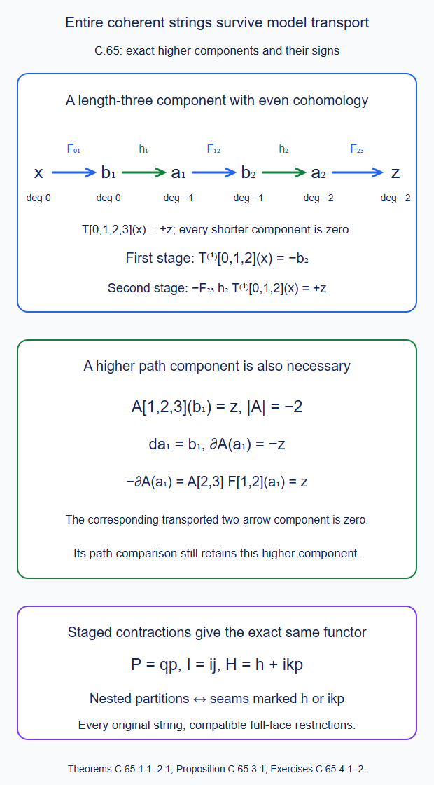
Theorem C.65.1.1 gives every transported component and the full path comparison. Theorem C.65.2.1 proves strict staged transport, and Proposition C.65.3.1 constructs arbitrary-length examples with even cohomology. Exercises C.65.4.1–C.65.4.2 compute the length-three and higher path signs. Editable SVG source.

C.66. Typed kernel models and coherence lifting
Kernel composition retains the pure core at each intermediate frontier. Tagging kernels by their original source and target states puts the consecutive-block products of a fixed string in one dg category. Their ordered cotensor contractions associate exactly. A canonical-state projection also gives an acyclic kernel on the full normalized natural-transformation complexes; this is the kernel needed to lift specified coherent operator diagrams with their object functors fixed.
C.66.1. A common dg category with all frontier types retained
Fix finitely many state labels \(S\). At state \(s\) let the pure coalgebra be \(C_s=C^{\otimes m_s}\), with its actual coefficient object labels, where \(m_s\geq0\). Distinct states retain distinct copies even when their frontier arities agree. At \(m_s=0\) the pure coalgebra is the genuine coefficient coalgebra. Put \[ \begin{gathered} K=\bigoplus_{s\in S}C_s,\\ E=\bigoplus_{s\in S}E_s, \end{gathered} \tag{C.66.1} \] where \(E_s\) is its split identity coefficient algebra and \(K\) is a relative dg coalgebra over \(E\). Work at finite IC corners first, so the coefficient algebra is split semisimple. Write \(\mathsf{Bicomod}(K)\) for the dg category of dg \(K\)-bicomodules and homogeneous bicomodule maps, with the full Hom differential.
Lemma C.66.1.1 (typed zero extension). Every ordinary dg \((C_t,C_s)\)-bicomodule extends by zero to an object of \(\mathsf{Bicomod}(K)\). Its full homogeneous mapping complex to another object of that same outer type is unchanged. Its mapping complex to an object with a different source or target state label is zero.
For a fixed original composable string of joint arrows, the ordinary cotensor products associated with all its consecutive block partitions have the same outer endpoint type. Thus all those products and their properly typed kernel comparison maps are objects and maps in one dg category, even when intermediate frontier arities change.
Proof. Include each of the two original coaction coalgebras in its summand of \(K\). The old coactions, followed by these inclusions, give the new coactions. Counits, coassociativity and their compatibility are unchanged. Their differential equations are also unchanged, so this is a dg bicomodule. Its coefficient support is exactly \(E_tME_s\).
A homogeneous bicomodule map commutes with the left and right coefficient coactions. Equivalently, after taking counits on the coefficient components, it commutes with the state idempotents on both sides. A map from support \(E_tME_s\) to support \(E_vNE_u\) is therefore zero unless \(v=t\) and \(u=s\): applying the target idempotent \(e_t\) or the source idempotent \(e_s\) gives its entire source value on one side and zero on the other. When the two types agree, the enlarged coaction equations reduce to exactly the old two coaction equations. The map spaces and the Hom differential are identical. This proves all mapping assertions.
The ordinary kernel of an arrow \(f:s\to t\) has target coaction \(C_t\) and source coaction \(C_s\). In any composable sequence the adjacent target and source colors match at their shared state. Cotensoring over that shared coalgebra leaves precisely the outer target and source coactions. The same is true after grouping consecutive blocks. Each partition therefore has the same original outer type. This proves the last claim. It does not replace a kernel product by the kernel of its composite arrow: that replacement requires its actual comparison map. \(\square\)
C.66.2. Ordinary cotensor paths and their normalized contractions
Use ordinary one-cross kernels \(M_f=K(Z_f)=Z_f[-1]\) as in C.41.2. For two successive arrows suppose their graded bicomodules are cofree: \[ \begin{gathered} X=C_u\otimes N_X\otimes C_t,\\ Y=C_t\otimes N_Y\otimes C_s. \end{gathered} \tag{C.66.2} \] All tensor products retain their coefficient balancing. Their differentials may contain the full higher source and target module actions. Suppose \(I_X,P_X,H_X\) and \(I_Y,P_Y,H_Y\) are normalized dg bicomodule contractions over the identity pure cores, and put \(E_X=I_XP_X\).
Theorem C.66.2.1 (typed cotensor contraction and regrouping). The ordinary cotensor \(X\square_{C_t}Y\) is canonically the graded bicomodule \[ \begin{gathered} C_u\otimes N_X\otimes C_t\\ \qquad\otimes N_Y\otimes C_s, \end{gathered} \tag{C.66.3} \] with its induced full differential. Its contraction has inclusion and projection given by the two factor maps on the cotensor, and homotopy \[ H=H_X\otimes1+E_X\otimes H_Y \tag{C.66.4} \] restricted to that equalizer, with its graded tensor evaluation signs. Iterating in the original target-to-source order gives the same contraction in every parenthesization. All intermediate pure cores remain in (C.66.3) and its longer analogues.
For a path of \(q\) successive ordinary kernels, the corresponding whole graph sector has \(q\) cross suspensions. Independent ordered output roots have the single final cross suspension of C.41.4. The two statements retain their respective types and degree shifts.
Proof. Define the inclusion of (C.66.3) in \(X\otimes Y\) by coproduct on its sole middle \(C_t\)-factor: \[ \begin{gathered} c\otimes x\otimes a\otimes y\otimes b\\ \longmapsto\sum c\otimes x\otimes a_{(1)}\\ \qquad\otimes a_{(2)}\otimes y\otimes b. \end{gathered} \tag{C.66.5} \] Coassociativity puts its image in the cotensor equalizer. Applying the counit to one of the two middle copies is an inverse on the image. Conversely apply that same counit to the equalizer equation of an arbitrary element of \(X\otimes Y\). It states that the element is exactly (C.66.5) applied after that counit. This proves surjectivity onto the full equalizer as well. The two coactions defining the equalizer are chain maps; thus it has the induced differential with every original higher action. This is an explicit cofree calculation and makes no assertion that arbitrary cotensor functors are exact.
Every factor map preserves both coactions, with the homogeneous tensor sign for a map of degree minus one. Consequently their tensors preserve the cotensor equalizer. The maps \(I,P\) satisfy \(PI=1\). On the ambient tensor differential, the full Hom derivation rule gives \[ \begin{gathered} \partial H=(1-E_X)\otimes1\\ \qquad+E_X\otimes(1-E_Y)\\ =1-E_X\otimes E_Y. \end{gathered} \tag{C.66.6} \] This restricts to the equalizer. The side conditions also restrict: \(PH=HI=0\), and in \(H^2\) each mixed term contains either \(H_XE_X\) or \(E_XH_X\), while the two diagonal terms contain \(H_X^2\) or \(H_Y^2\). All are zero. Thus these are the full normalized contraction identities.
For three factors, both groupings identify with the subspace in the original threefold tensor satisfying the two middle equalizer equations. Coassociativity of the two middle coproducts identifies it with the same cofree ordered expression. Both grouped homotopies expand to \[ \begin{gathered} H_1\otimes1\otimes1\\ \quad+E_1\otimes H_2\otimes1\\ \quad+E_1\otimes E_2\otimes H_3. \end{gathered} \] Their Koszul evaluation signs are those of these same ordered graded maps. Inclusions and projections are likewise the same ordered tensors. Induction proves every parenthesization. Each middle pure core occurs once in the cofree expression (C.66.3), so none has been counited away.
Restoring the crossed bar sector suspends each of its \(q\) successive central mapping factors, lowering degree by \(q\). In the independent root product C.41.4 first takes the ordinary tensor of all root kernels and then suspends once. These are the indicated two formulas. At a zero frontier the matching middle coalgebra is the coefficient coalgebra; cotensor there is the corresponding balanced ordinary tensor. All central mapping factors, including a unit-output kernel, still occur. No unary operation vertex or graft seam is removed by the cotensor identification. \(\square\)
C.66.3. The specific full natural-transformation kernel is acyclic
Let \(A\) be an augmented unital dg input category over its split identity coefficients, using its actual normalized reduced bar. Let \(P:B\to D\) be a unital dg functor whose mapping-complex maps, on the selected object images, are degreewise surjective quasi-isomorphisms. For example use the actual canonical counit \(\epsilon_b:Q_b=\Omega B U_b\to U_b\), including its finite additive matrix envelope. Fix unital dg functors \(F,G:A\to B\). Write \(\operatorname{Nat}_\infty(F,G)\) for the full normalized natural-transformation complex, with all its source-bar Taylor components.
Theorem C.66.3.1 (actual projection kernel and relative coherent lifting). Postcomposition gives a degreewise surjective quasi-isomorphism \[ \begin{gathered} \operatorname{Nat}_\infty(F,G)\\ \longrightarrow\operatorname{Nat}_\infty(PF,PG). \end{gathered} \tag{C.66.7} \] Its kernel has a normalized contraction finite on each original source-bar input. This does not assert that either full natural-transformation complex is acyclic. The construction retains normalized units, identity-valued outputs of nonidentity input arrows, and full source-object faces.
Consequently a full coherent parameter diagram in the target functor category, with specified object functors \(PF_j\), lifts to the source functor category with those chosen \(F_j\) fixed. The assertion applies to the free parameter source \(\Omega B(kJ)\), retaining any already assigned compatible union of full parameter faces. It requires the entire typed target diagram as input, rather than only the classes of its edge maps.
Proof. A normalized Taylor component is an arbitrary homogeneous linear map from a reduced source-bar word to \(B(Fx_0,Gx_q)\). Applying \(P\) projects that entire output mapping space. Choose graded sections of its surjections over the split coefficient actions, separately for each endpoint pair. Semisimple splitting gives these choices. They lift every Taylor component. Thus (C.66.7) is degreewise surjective, including its component of source length zero. Postcomposition is a dg functor on the full natural-transformation categories: the complete differential and vertical products are the cofree Hom formulas of C.53.1, and the dg functor \(P\) preserves each output differential, composition and identity in those formulas. Scalar outputs are retained.
Let \(V_{x,y}\) be the kernel of \(B(Fx,Gy)\to D(PFx,PGy)\). It is acyclic, since this is a surjective quasi-isomorphism. The splitting proof of C.30.1 gives a normalized coefficient-linear contraction \(h_{x,y}\) on it. Choose these once for every endpoint pair. The kernel of (C.66.7) consists exactly of the normalized Taylor maps valued in these \(V_{x,y}\).
Its leading differential \(d_0\) contains the output kernel differential and the source unary differential on every original bar letter. Postcompose a Taylor value with its endpoint contraction to obtain \(H_0\). The Hom derivation rule cancels the two source-unary terms and gives \(d_0H_0+H_0d_0=1\), with \(H_0^2=0\). Put \(\delta=d-d_0\). Every remaining term either composes adjacent source letters, or consumes a nonempty source prefix or suffix in a functor action. Thus when evaluated on an original word of length \(L\), it uses the Taylor map on words of length strictly less than \(L\). The same statement permits normalized higher functor components, which consume larger nonempty pieces.
The maps \(H_0\) preserve that input length. Therefore the formula \[ \begin{gathered} H=H_0(1+\delta H_0)^{-1}\\ =\sum_{r\geq0}(-1)^rH_0(\delta H_0)^r \end{gathered} \tag{C.66.8} \] has only finitely many terms on each input, at most \(L+1\). C.35.1's contraction calculation, applied with zero retract, gives \(dH+Hd=1\) and \(H^2=0\). This contracts exactly the projection kernel. It proves the quasi-isomorphism in (C.66.7). The source bar is reduced, so every step retains normalization at identity arguments. Output identities were never projected away. Endpoint contractions and the source word operations add no new source object; full-face restrictions therefore retain these same formulas when their endpoint choices were made before restriction.
Finally consider a free parameter generator \(x\) of original string length \(q\). Its differential has only lower-length generators and their composites. Suppose their lifted images have already been assigned. Choose a graded lift \(v\) of its given entire target Taylor cochain and set \(o=\partial v-\widetilde F(dx)\). Its projection is zero by the target chain equation, and \(\partial o=0\) by the previously assigned generator equations and \(d^2x=0\). Its corrected image \(v-Ho\) has the same exact projection and satisfies the generator chain equation. This constructs the whole dg functor by induction on \(q\). Object units are their prescribed identity maps. Generators on already assigned faces are kept; only the remaining generators receive corrections. Their overlaps are the same original strings, so compatible prescribed unions stay fixed. This proves the relative lifting assertion. The proof contracts a specified projection kernel and uses no contraction of an arbitrary natural-transformation complex. \(\square\)
C.66.4. Solved calculations
Exercise C.66.4.1 (advanced; the essential second projection-kernel correction). Construct a full normalized natural-transformation projection whose kernel needs a nonzero second perturbation correction. Compute one such primitive, and show that the full natural-transformation complex need not be acyclic.
Solution.
For (C.66.7) use \(A=k[\varepsilon]/(\varepsilon^2)\), with \(|\varepsilon|=2\). Put \(V=kx\oplus K\), where \(|x|=0\) and \(K\) has the three acyclic pairs \[ \begin{gathered} a_0\xrightarrow{d}b_1,\\ c_1\xrightarrow{d}d_2,\\ e_2\xrightarrow{d}f_3. \end{gathered} \] The subscripts are degrees. Let \(B\) be the dg algebra of endomorphisms preserving \(K\), and let \(P:B\to k\) be its quotient action on \(V/K\). Its allowed matrix entries are one quotient entry, six entries from the quotient into \(K\), and 36 entries within \(K\). Thus \(\dim B=43\) and \(\dim\ker P=42\). Every kernel matrix has image in \(K\). Postcomposing with the homotopy sending \(b_1,d_2,f_3\) to \(a_0,c_1,e_2\), respectively, contracts that kernel, so \(P\) is a surjective quasi-isomorphism. The functors \(F,G\) send the ordinary identity to the identity of \(V\), with \(F(\varepsilon)=0\) and \(G(\varepsilon)(a_0)=d_2\), \(G(\varepsilon)(c_1)=f_3\), zero on the other basis vectors. This is a closed degree-two square-zero endomorphism.
For a natural cochain of total degree \(r\), write \(\phi_q\) for its value on \((s\varepsilon)^{\otimes q}\). Its value-map degree is \(r+q\). The kernel differential is \[ \begin{gathered} (\partial\phi)_q =\partial_{\operatorname{End}(V)}\phi_q\\ \qquad+(-1)^rG(\varepsilon)\phi_{q-1},\\ \phi_{-1}=0. \end{gathered} \] The bare kernel cycle \(v:x\mapsto b_1\), zero elsewhere, has degree one. Formula (C.66.8) gives the degree-zero primitive with values \(x\mapsto a_0\) at \(q=0\), \(x\mapsto-c_1\) at \(q=1\), and \(x\mapsto e_2\) at \(q=2\). The second correction is essential: omitting it leaves an uncancelled \(-f_3\) at source length two. Indeed its differential has the values \(b_1\), \(-d_2+G(\varepsilon)a_0=0\), and \(f_3-G(\varepsilon)c_1=0\) at lengths zero, one and two. Every higher value is zero since \(G(\varepsilon)e_2=0\).
The target functors \(PF,PG\) both kill \(\varepsilon\). Their full natural-transformation complex has one closed scalar coefficient at each Taylor length \(q\), in total degree \(-q\), and zero differential. The projection maps onto it. Its scalar coefficients have chain lifts by the matrices supported solely on the quotient \(kx\). They are closed because \(G(\varepsilon)x=0\). They cannot be boundaries since their projected values are nonzero. Thus at Taylor-prefix length \(L\) there are \(L+1\) independent quotient cohomology classes. The kernel is contractible, while those classes remain in the full complex.
Exercise C.66.4.2 (intermediate; retained intermediate cores and a Koszul sign). Let \(C=k\oplus ku\), with \(|u|=1\), zero differential and primitive coproduct on \(u\). Use pure cores \(C^{\otimes m_s}\) along the arity path \(0\to2\to1\to0\). For every ordinary kernel use central complex \(N=ke\oplus ka\oplus kb\), with \(|e|=|b|=0\), \(|a|=-1\), \(da=b\), and \(Hb=a\). Compute the three-kernel path dimension and its retract dimension. Evaluate its homotopy on the word \((1,e,u,b,u\otimes u,e,1)\).
Solution. In target-to-source order the cofree path is \[ \begin{gathered} C^{\otimes0}\otimes N_3\otimes C\\ \qquad\otimes N_2\otimes C^{\otimes2} \otimes N_1\otimes C^{\otimes0}. \end{gathered} \] Its dimension is \(1\cdot3\cdot2\cdot3\cdot4\cdot3\cdot1=216\). The retract replaces each \(N_i\) by \(ke\); both middle cores remain, so its dimension is \(2\cdot4=8\). The graded coalgebra \(C^{\otimes2}\) has \[ \begin{gathered} \Delta(u\otimes u) =(u\otimes u)\otimes1\\ \quad+1\otimes(u\otimes u)\\ \quad+(u\otimes1)\otimes(1\otimes u)\\ \quad-(1\otimes u)\otimes(u\otimes1), \end{gathered} \] where the last sign comes from interchanging two odd primitives.
Only the homotopy at \(N_2\) acts on the specified word. The preceding \(u\) has odd degree, so its tensor evaluation sign is minus: \[ \begin{gathered} H(1,e,u,b,u\otimes u,e,1)\\ \qquad=-(1,e,u,a,u\otimes u,e,1). \end{gathered} \] Applying the differential gives the original word: its sign at \(da=b\) is also minus. The word has zero differential and its projection is zero, which verifies \(dH+Hd=1-IP\) on this input. The bare three-cross sector has degree minus three after restoring its three suspensions; the independent three-root product has its one final suspension and bare degree minus one.
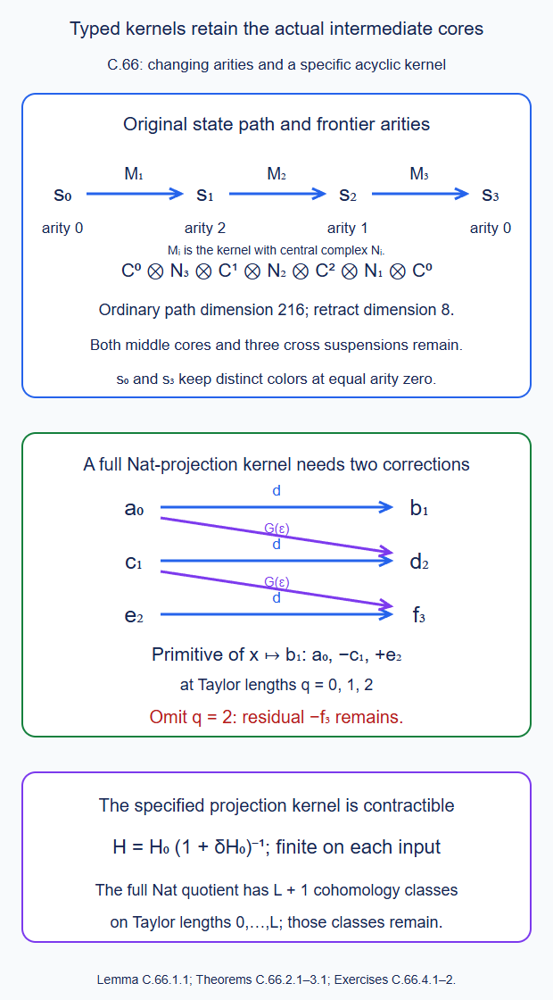
Lemma C.66.1.1 retains the outer state types. Theorem C.66.2.1 gives the full cotensor contraction, and Theorem C.66.3.1 lifts coherent operator cells through the specific Nat-projection kernel. Exercises C.66.4.1–C.66.4.2 compute its essential second correction and retained middle-core sign. Editable SVG source.

C.67. Coherent operator strictification
Canonical cobar sources admit strict operator models with an actual invertible full natural comparison. Their identity bare components give a finite inverse on each original source input. Conjugating an entire operator diagram therefore retains every higher cell and fixes operators already strict. Full marked postcomposition also retains the higher components of a change of enhanced model.
C.67.1. The counit and the full A-infinity projection kernel
All bars and cobars in this section are the actual augmented reduced ones, over the split coefficient category. Let \(A\) be an augmented unital dg category; its mapping degrees need not be nonnegative. Its canonical counit is \[ \epsilon_A:\Omega BA\longrightarrow A. \tag{C.67.1} \]
Theorem C.67.1.1 (finite-on-original-words counit and full projection). The counit is degreewise surjective and a quasi-isomorphism on mapping complexes. It has a normalized linear mapping-complex contraction finite on each original \(A\)-word. The contraction commutes with retained source faces and augmented coefficient-preserving dg input maps.
Theorem C.66.3.1 also holds when its fixed functors \(F,G\) are normalized uncurved unital \(A_\infty\) functors. Its full Nat-projection remains graded-surjective, with a contractible kernel and the same finite-on-input correction. Only the specified mapping projection kernels are contracted.
Proof. Write a cobar word as nonempty bar blocks of original reduced \(A\)-morphisms. Let \(r\) be its total number of original morphisms. The counit sends a word all of whose blocks have one letter to its ordered product in \(A\); it kills a word containing a longer block. In particular its one-letter generators map onto every reduced mapping, and its coefficient map retains the units. This proves graded surjectivity.
First keep the original unary differential and the cobar differential inserting block cuts, and omit the internal binary bar compositions. On a fixed original word with \(r\geq2\), remove its first boundary if its first block consists of one original letter and that boundary is present; otherwise give zero. The coefficient is \((-1)^{|a|}\), where \(a\) is that first original letter in target-to-source order. This is the inverse coefficient of its first-cut term in C.39.15. Call this operator \(H_0\). At \(r=0,1\) it is zero.
In the leading cut differential, adding and removing that first boundary give the identity. Adding another boundary before or after removing the first gives opposite coefficients by the degree-one Leibniz sign, so all those terms cancel. The unary differential on the first letter changes \(|a|\) by one, giving the opposite removal coefficient. The unary terms on the other letters cancel by the same tensor sign. This gives the normalized leading contraction onto the coefficient and single-letter complex. Its inclusion \(I_0\) places a reduced \(A\)-mapping in one single-letter block.
Restoring binary bar composition is a perturbation \(\delta\) strictly decreasing \(r\). The first-cut homotopy preserves \(r\), so \[ H_\epsilon=H_0(1+\delta H_0)^{-1} \tag{C.67.2} \] is finite on every original word. The perturbed inclusion stays \(I_0\), since \(\delta I_0=0\). The image of every nonzero term of \(H_\epsilon\) contains a block of length at least two, so \(\epsilon_AH_\epsilon=0\); also \(\epsilon_AI_0=1\). Applying the counit to the perturbed contraction identity shows that its projection is exactly \(\epsilon_A\). Thus \[ \begin{gathered} dH_\epsilon+H_\epsilon d\\ \qquad=1-I_0\epsilon_A,\\ H_\epsilon^2=H_\epsilon I_0=0,\\ \epsilon_AH_\epsilon=0. \end{gathered} \tag{C.67.3} \] This proves the mapping-complex assertion without a convergence claim based on cohomological degree. Every formula uses the same original letters and their compositions. It therefore commutes with the indicated restrictions and input maps. The inclusion \(I_0\) is a linear chain section; its multiplicativity is not part of this claim.
For the second assertion use the full Taylor description in C.66.3. An \(A_\infty\) functor's additional terms consume a nonempty input word. Uncurvedness excludes a zero-input functor term. Consequently every additional term in the full Nat differential again evaluates its Taylor map on a strictly shorter original source input. The degreewise lifts and the leading kernel contraction are unchanged. The finite formula (C.66.8) therefore contracts this same full projection kernel. All higher functor outputs, including scalar identities, remain in that differential. This also proves the relative coherent lifting statement for these functor objects. \(\square\)
C.67.2. Strict operator objects with an actual full natural isomorphism
Let \(L\) be a conilpotent coaugmented relative dg coalgebra and put \(A=\Omega L\). Its actual unit gives the dg section \[ \begin{gathered} \sigma_A=\Omega\eta_L,\\ \sigma_A:A\longrightarrow\Omega BA,\\ \epsilon_A\sigma_A=1_A. \end{gathered} \tag{C.67.4} \] Write \(\iota_A:A\to\Omega BA\) for the normalized \(A_\infty\) unit, with bar map \(\eta_{BA}\). For an uncurved normalized unital \(A_\infty\) functor \(F:A\to B\), with \(B\) a unital dg category, let \(F^\sharp:\Omega BA\to B\) be its strict representative retaining its complete outputs, as in C.43.2. Define \[ F^{\mathrm{st}}=F^\sharp\sigma_A. \tag{C.67.5} \]
Theorem C.67.2.1 (full coherent strictification and an actual dg retraction). There is a closed invertible full natural transformation \(\alpha_F:F\to F^{\mathrm{st}}\), with identity bare components. Its inverse is finite on each original source-bar input. If \(F\) is already a strict dg functor, then \(F^{\mathrm{st}}=F\) and \(\alpha_F=1_F\) exactly.
The assignment on objects, together with \[ \theta\longmapsto \alpha_G\,\theta\,\alpha_F^{-1}, \tag{C.67.6} \] is a dg retraction of \(\operatorname{Fun}_\infty(A,B)\) onto its full dg subcategory of strict dg functor objects. The full Nat complexes and every higher parameter cell are retained. Hence it conjugates an entire coherent parameter diagram, rather than replacing just its edge maps. It fixes an already strict-object subdiagram literally.
Proof. The unit and counit are the actual coproduct formulas. On a free generator \(t\ell\) of \(\Omega L\), the one-bar-letter term of \(\eta_L(\ell)\) is \(s(t\ell)\). All other terms have longer bar length and are killed by the counit. This proves the second identity in (C.67.4) on generators and therefore on all cobar words. The other triangle identity gives \(\epsilon_A\iota_A=1_A\) as a full normalized functor: after applying the counit to the unit expansion of an original bar word, the term cut into its individual original letters is exactly that word, and all other terms are killed.
The functors \(\iota_A,\sigma_A:A\to\Omega BA\) have the same object map and their postcompositions with \(\epsilon_A\) are both exactly \(1_A\). Apply Theorem C.67.1.1's full Nat-projection kernel to these two functors. Choose the graded preimage \(u^0\) of the identity target transformation which has identity bare components and zero higher components. Its defect \(\partial u^0\) is in that projection kernel, is closed, and has zero source-length-zero component. With its contraction \(H\), put \[ u=u^0-H(\partial u^0). \tag{C.67.7} \] It is closed and has exact image the identity. The correction still has zero bare component: its leading homotopy preserves input length, and its perturbation uses shorter input words. Thus \(u\) has identity bare components.
View a full natural transformation as its actual cofree source-bar map. After identifying the two underlying graded fibers by their identity bare maps, \(u-1\) consumes positive source length. Its geometric inverse is therefore finite on every original input. The full cut composition proves both inverse identities. The differential derivation rule and \(\partial u=0\) make the inverse closed. Thus this is an actual invertible transformation, not just equality of its cohomology class.
Postcomposition by the strict dg functor \(F^\sharp\) is a dg functor on the full Nat categories, by the output-composition argument of C.66.3. It sends \(u\) to \(\alpha_F\). The recovery identity \(F^\sharp\iota_A=F\) is C.43.2's exact free-generator identity, including its scalar outputs. Its other end is (C.67.5). For strict \(F\), one has \(F^\sharp=F\epsilon_A\) on every free generator. Hence \(F^{\mathrm{st}}=F\) and \(\alpha_F=F(\epsilon_Au)=1_F\) exactly.
Closed degree-zero conjugation preserves differentials, products and identities on full Nat complexes. It gives the stated dg retraction, and fixes all morphisms between already strict objects. Applying that dg functor to every generator of a given \(\Omega B(kJ)\)-diagram retains its whole chain equation and every higher parameter generator. On an assigned face with strict objects all the conjugating transformations are identities.
For restrictions along retained coalgebra faces and their canonical cobar maps, \(\sigma_A\) is natural by its unit formula. The counit contraction in Theorem C.67.1.1 preserves the original labels and letters. Choosing that contraction in (C.67.7) makes the universal transformation and its finite inverse restrict to the same formulas. Thus the construction retains the original compatible faces as well. \(\square\)
C.67.3. Model change retains the entire functor-category diagram
Let \(W:B\to D\) be a normalized uncurved unital \(A_\infty\) functor between dg categories. The input and output here need not be augmented. For the finite insertion calculation use the tensor bar on all mapping spaces, retaining identity outputs as actual mapping letters. Normalized functors and normalized pre-natural transformations form the usual unital subspaces of that calculation.
Theorem C.67.3.1 (full postcomposition and double strict models). There is a normalized unital \(A_\infty\) functor \[ \begin{gathered} W_*:\operatorname{Fun}_\infty(A,B)\\ \longrightarrow\operatorname{Fun}_\infty(A,D) \end{gathered} \tag{C.67.8} \] whose object map is actual composition with \(W\). Its higher components retain every higher component of \(W\). They are finite on each original input word. When \(W\) is strict dg, (C.67.8) is exactly the dg functor of postcomposition on every full Taylor component.
Suppose both the operator source \(A\) and parameter source \(T\) are augmented cobars. Any whole normalized coherent model-change diagram \(S:T\to\operatorname{Fun}_\infty(A,B)\), including a normalized \(A_\infty\) one, therefore has a strict dg parameter model in \(\operatorname{Fun}_\infty(A,D)\) with strict dg operator objects. It carries actual full natural isomorphisms to the model-change diagram. An already strict parameter face with strict operator objects is fixed whenever its postcomposed face has those properties.
Proof. Work in suspended coordinates. A pre-natural transformation \(\phi:F_0\to F_1\) of degree \(|\phi|\) has suspended core degree \(|\phi|-1\), including its zero-input object component. Its cofree expansion has the original \(F_0\)-outputs before that component and the original \(F_1\)-outputs after it. For a sequence \(\phi_1,\ldots,\phi_r\), expand an original source word into consecutive pieces with these \(r\) marked transformation components in their prescribed order. Fill every intervening unmarked run with the appropriate original functor. Empty transformation inputs are allowed; an empty unmarked run contributes its coefficient coaugmentation.
Apply the actual bar map of \(W\) to that ordered output word and take its single-letter corestriction. This defines the \(r\)-th suspended component of (C.67.8). All signs are the tensor evaluation signs of the marked maps: a marked map of suspended degree \(|\phi_i|-1\) crossing a preceding source piece of degree \(d\) contributes \((-1)^{(|\phi_i|-1)d}\). No input or output identity is discarded. If the source word has length \(L\), its unmarked functor outputs contribute at most \(L\) letters, by uncurvedness, and the marked slots contribute \(r\). Thus only \(W_m\) with \(m\leq L+r\) occurs. Every consecutive partition and every such marked expansion is finite. Unsuspending gives the required component degree \(1-r\).
We verify the full equation by retaining the marked slots in the bar equation \(BW\,b_B=b_D\,BW\). A term of \(b_B\) wholly inside an unmarked functor run is its original functor equation, with the source differential on those same inputs. A term meeting one marked component is exactly the full differential of that natural transformation. A term joining two adjacent marked components gives their vertical source composition. On the other side, cutting the marked sequence into consecutive nonempty groups gives the vertical products of the corresponding components of (C.67.8). These are all terms: the dg categories have only unary differentials and binary mapping compositions. Their signs are those of the same suspended tensor maps, in the same order, in the displayed bar equation. Thus each term has its identical signed counterpart. This is the complete functor equation.
Ordinary unit arguments normalize as follows. In a nontrivial higher component an identity transformation supplies an identity mapping to a higher component of \(W\), which vanishes by strict unitality. For its unary component \(W_1\) takes that identity to the identity. The same unit cancellation in the original functor and transformation differentials preserves the normalized source cochains. When \(W_m=0\) for \(m>1\), more than one marked slot contributes zero, and the single marked slot is precisely \(W_1\) on that full Taylor output. This proves the strict dg special case. The unreduced tensor bar in this insertion calculation is not used as an augmented bar-cobar counit; that counit is the reduced augmented construction of Theorem C.67.1.1.
Apply (C.67.8) to the whole supplied parameter diagram. Then apply Theorem C.67.2.1's dg retraction for the operator source \(A\). Its objects are now strict dg operator models, with every parameter and full Nat component retained. Finally apply Theorem C.67.2.1 to this parameter functor, whose source is the cobar \(T\) and whose target is the dg full Nat category. This makes the parameter functor strict without changing its object map, so the operator objects stay strict. Both steps come with their actual full natural isomorphisms from Theorem C.67.2.1. Its retraction fixes a strict-object subcategory pointwise, and fixes an already strict parameter functor exactly. This proves the relative assertion and the whole model-change statement. \(\square\)
C.67.4. Solved calculations
Exercise C.67.4.1 (advanced; the extra unit term and an actual comparison). Compute the strict section for the nonminimal source \(\Omega B(k[2])\), including its degree-minus-one generator. Give its full comparison with the \(A_\infty\) unit, and exhibit a scalar-output operator whose strict model needs that extra term.
Solution.
Take \(A=\Omega B(k[2])\), with objects \(0,1,2\), degree-zero arrows \(a:0\to1\), \(b:1\to2\), \(c:0\to2\), the product \(D=ba\), and a degree-minus-one generator \(H\) with \(dH=D-c\). Its mapping basis has eight elements including identities. In \(\widehat A=\Omega BA\), the mapping basis has ten elements: the three identities, \(a',b',c',D',H',V\), and \(P=b'a'\). The nonzero differentials are \[ dH'=D'-c',\qquad dV=P-D'. \] The counit sends \(V\) to zero, \(P,D'\) to \(D\), and \(H'\) to \(H\). Its linear section sends \(H\) to \(H'\) and \(D\) to \(D'\). Its strict section instead satisfies \[ \sigma_A(H)=H'+V,\qquad\sigma_A(D)=P. \] The extra unit term is essential: \(d(H'+V)=P-c'\), which is the strict section's value on \(D-c\). The linear section's value \(H'\) instead has differential \(D'-c'\).
For the universal comparison, use the two functors \(\iota_A,\sigma_A\) and the full Nat-projection of the counit. Let \(u^0\) have identity bare components and zero higher components, and let \(\phi\) have the single higher value \(\phi(D)=V\). Its full differential has the values \[ \begin{gathered} (\partial\phi)(D)=P-D',\\ (\partial\phi)(H)=V,\\ (\partial\phi)(a,b)=-V. \end{gathered} \] These are exactly \(\partial u^0\). Thus \(u=u^0-\phi\) is closed and has higher value \(-V\) on \(D\). Its exact inverse is \(u^0+\phi\): two positive-length pieces supported only on the arrow \(D:0\to2\) cannot compose. Projection kills its higher values and gives the identity. This calculation retains both the source unary differential of \(H\) and the two-arrow word \((a,b)\).
For a scalar-output operator example take \(X=ke\oplus kf\oplus ky\), with \(|e|=|y|=0\), \(|f|=-1\), \(df=y\). Let \(K(e)=f\), \(L=\partial K\). Send \(a',b'\) to \(1_X\), \(c',D'\) to \(1_X-L\), \(H'\) to zero and \(V\) to \(K\). This is the strictification of a normalized non-strict \(A_\infty\) operator on \(A\). Its strict model sends \(H\) to \(K\), since \(\partial K=L=1_X-(1_X-L)\). The full comparison has value \(-K\) on the original source morphism \(D\), or on its generator \(D'\) in the resolved comparison path. Omitting \(V\) would assign zero to \(H\) while its required strict differential is the nonzero \(L\). Both nonidentity arrows \(a,b\) retain their actual identity outputs.
Exercise C.67.4.2 (advanced; the marked postcomposition sign). Let the operator source be \(k[\varepsilon]/(\varepsilon^2)\), with \(|\varepsilon|=2\). Let \(F_j\) select object \(j\) of \([2]\) and kill \(\varepsilon\). Write \(a_q,b_p,c_r\) for full natural cochains supported at the indicated Taylor lengths, with values the arrows \(a,b,c=ba\). For the model change \(W\) with \(W_1(a)=W_1(b)=1_X\), \(W_1(c)=1_X-L\), and \(W_2(b,a)=K\), compute \((W_*)_2(b_p,a_q)\).
Solution. The cochain degrees are \(-q,-p,-r\), respectively, since \(s\varepsilon\) has degree one. The full vertical product is \[ b_pa_q=(-1)^{pq}c_{p+q}. \] In the marked formula the suspended \(a_q\)-component has degree \(-q-1\). It crosses a preceding source piece of degree \(p\), so \[ (W_*)_2(b_p,a_q)=(-1)^{(q+1)p}K \] at Taylor length \(p+q\). The two terms of its source/cut equation give \[ \begin{gathered} (-1)^{p+1+pq}(1_X-L)\\ \qquad+(-1)^{p+pq}1_X\\ =(-1)^{p+pq}L. \end{gathered} \] This is precisely the differential of the displayed marked component. At \(p=1,q=0\) that component is \(-K\). Using \(+K\) would give a nonzero discrepancy \(2L\) over the characteristic-zero field. For a coefficient operator source there are no source letters and the marked formula gives \((W_*)_r=W_r\) itself. Thus C.65.3.1's actual length-three, five and seven examples retain their nonzero higher model-change components.
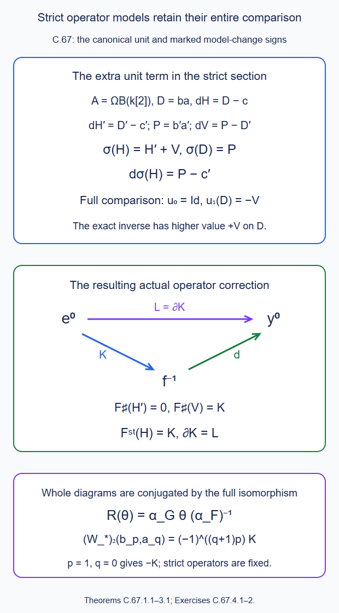
Theorem C.67.1.1 gives the actual augmented counit and full projection kernel. Theorem C.67.2.1 gives a full natural isomorphism and dg retraction to strict operator objects. Theorem C.67.3.1 retains the marked postcomposition data. Exercises C.67.4.1–C.67.4.2 compute the necessary unit term and marked sign. Editable SVG source.

C.68. Native operator models through dg bridges
Full natural transformations can be lifted through a specified mapping projection even when their source has no augmentation. An actual dg bridge retains the geometric object representatives, their positive models and their entire comparison. On fixed overall input and output types, this gives relative models of the complete native partition diagrams.
C.68.1. Full normalized lifting without a source augmentation
Use the full normalized natural-transformation cochains of uncurved unital \(A_\infty\) functors. They vanish on ordinary unit arguments in positive source length. Their differential can be computed on the tensor bar of all source mapping spaces; no augmented bar-cobar counit is applied to that possibly unaugmented source. All coefficient actions are over the split semisimple identity category.
Theorem C.68.1.1 (actual projection fibers, sections and equivalences). Let \(P:B\to D\) be a relative unital dg functor with surjective quasi-isomorphisms on its selected mapping complexes. The full Nat projection of C.66.3 and C.67.1 remains a surjective quasi-isomorphism for normalized unital functors from an unaugmented dg source. Its kernel contraction is finite on every original input.
If the object labels and their coefficient maps have sections, \(P\) has a normalized unital \(A_\infty\) section on those labels. Its postcomposition with \(P\) is exactly the identity functor, including all higher components. Finally a closed full natural transformation whose bare object maps are homotopy equivalences is invertible in the full Nat cohomology category, with actual full inverse cochains and homotopies.
Proof. First split the mapping projection kernels over the coefficient actions, as in C30. The leading differential of a Taylor cochain includes the output unary differential and all original source unary differentials. Applying the kernel contraction to its output gives the leading Hom contraction. All remaining terms consume at least one source letter: they compose adjacent source inputs or apply a nonempty functor action. These statements use the full tensor bar, including products with unit outputs.
The normalized cochains are stable under that differential. When an input is a unit, its neighboring source-composition terms cancel the corresponding functor unit actions; higher unital functor components at that input vanish. The leading contraction preserves normalization since it changes only the output. Thus both the leading differential and its remaining perturbation preserve this normalized subspace. The finite series \[ H=H_0(1+\delta H_0)^{-1} \tag{C.68.1} \] contracts exactly the projection kernel on each input length. Graded Taylor sections lift normalized cochains by assigning zero at their unit inputs. This proves the first assertion. No augmentation of the source was used.
For a section, choose a graded mapping section preserving the coefficient maps. Correct its chain defect by the output kernel contraction; the defect is zero on the coefficients, so this gives a coefficient-preserving chain section \(j_1\). At source word length \(q\geq2\), the known lower-length components give the full Stasheff obstruction \(O_q\). It takes values in the mapping kernel, because after projection the chosen components are exactly the strict identity. Keep the entire unary complex of the length-\(q\) source generators. The obstruction is closed in that Hom complex: its differential is the length-\(q\) component of the source square-zero equation and of the already assigned lower equations. Postcomposition with the kernel contraction contracts this Hom complex. Set \(j_q=H_0O_q\), with the sign fixed by the equation \(\partial j_q=O_q\). This gives the next component with zero projection. If one input is a unit, the two adjacent source-unit terms and the corresponding target-unit term cancel; hence \(O_q\) is normalized and so is \(j_q\). Induction constructs the full unital section. This is induction on original input length, retaining the nonminimal unary complex, rather than induction assuming its basis generators are cycles.
For the last assertion, fix a closed natural transformation \(u:F\to G\) whose object maps are homotopy equivalences. Composition by a bare object map is a quasi-isomorphism on every appropriate mapping complex: its inverse and Hom homotopies are given by composition with its actual homotopy inverse and its two homotopies, with the Hom derivation signs. The cone of this leading map is therefore acyclic. Split and contract that cone over the coefficient actions. In the cone of composition by the full \(u\), all further terms consume positive source length. The same finite perturbation contracts that cone on each original input. Thus composition by \(u\) is a quasi-isomorphism on the full Nat complexes.
In particular choose a closed \(v:G\to F\) whose class maps to \([1_G]\) under postcomposition by \(u\). Then \(uv\) is homotopic to \(1_G\) in the full complex. Faithfulness of that same composition on \(H^0\) gives \(vu\simeq1_F\). Both differences are actual boundaries in full Nat complexes, giving the asserted inverse and homotopies. The contractions concerned a specified projection kernel or a cone of composition by an actual equivalence; arbitrary Nat complexes have not been declared acyclic. \(\square\)
C.68.2. Relative replacement of a complete coherent diagram
Let \(\mathcal E\) be a dg category and choose closed homotopy equivalences \(u_i:X_i\to Y_i\). Use the path category with maps \((f,g,a)\), whose differential and composition are those of C.53.4, and whose object at \(i\) is this actual \(u_i\).
Lemma C.68.2.1 (relative full-diagram replacement). Both path projections have graded-surjective quasi-isomorphisms on their full mapping complexes. Given a whole \(\Omega B(kJ)\)-diagram on the \(X_i\)'s and an already assigned compatible full-face path to a diagram on the corresponding \(Y_i\)'s, the path extends to the whole parameter diagram with those object maps fixed. Its second projection retains every assigned face exactly. The assertion also holds for a countable locally forward finite parameter category, using the same original-word induction.
Proof. The first projection's mapping kernel has components \((g,a)\) and differential \[ (g,a)\longmapsto(\partial g,-\partial a-gu_i). \] It is a shifted cone of precomposition by \(u_i\). This is an actual mapping-complex quasi-isomorphism, since \(u_i\) has a homotopy inverse. Its cone is acyclic. The second projection has the cone of postcomposition by \(u_j\), with the same conclusion. Each projection is graded surjective because its retained component can be chosen arbitrarily. Split and contract each such kernel over the coefficient category. These are contractions of the specified path-projection kernels.
Keep the assigned path generators. For each remaining original parameter generator choose a graded lift of its specified first component. Its chain defect is a closed element of the projection kernel, because its differential uses only previously treated shorter strings. Subtract its kernel primitive. The resulting generator image has the same exact projection and satisfies its chain equation. Extend by the free cobar composition. This is the relative induction of C.66.3, now with the displayed actual path kernels. Every original generator lies at finite string length. A common face is the same original word on both sides, so prescribing compatible unions retains all of them. This proves both assertions, including the full path comparison. \(\square\)
C.68.3. A bridge with the actual geometric object representatives
Let \(v:U\to G\) be a unital dg quasi-equivalence. In the application \(U\) is the positive IC model or its finite additive matrix envelope; \(G\) is the chosen geometric dg model, including the actual forward perverse images. It need not be augmented. For every needed \(y\in G\) choose \(x\in U\) and a closed homotopy equivalence \(u:vx\to y\). Include the canonical choices \((x,vx,1_{vx})\).
Theorem C.68.3.1 (the full dg model bridge). There is a dg category \(R(v)\) whose objects are those triples \((x,y,u)\). A degree-\(r\) mapping has components \[ \begin{gathered} f\in U^r(x,x'),\quad g\in G^r(y,y'),\\ a\in G^{r-1}(vx,y'). \end{gathered} \] Its differential and composition are \[ \begin{gathered} D(f,g,a)\\ \quad=(\partial f,\partial g,\\ \qquad-\partial a+u'v(f)-gu),\\ (f_2,g_2,a_2)(f_1,g_1,a_1)\\ \quad=(f_2f_1,g_2g_1,\\ \qquad a_2v(f_1)\\ \qquad+(-1)^{|f_2|}g_2a_1). \end{gathered} \tag{C.68.2} \] The two projections \(p:R(v)\to U\), \(q:R(v)\to G\) are graded-surjective quasi-isomorphisms on every selected mapping complex. The canonical-object inclusion \(j:U\to R(v)\) is a strict dg functor with \(pj=1_U\) and \(qj=v\). The bridge has its actual resolved comparison from \(vp\) to \(q\), with object components \(u\), and that comparison restricts to the identity on \(j(U)\).
The bridge is used as a dg target. No augmentation of this expanded object category is assumed or used.
Proof. Formula (C.68.2) is the path construction after applying \(v\) to the first component. The square-zero differential uses closedness of \(u,u'\), and the third product component has its Hom Leibniz sign \((-1)^{|f_2|}\). In a triple product its third component expands to \(a_3v(f_2f_1)+(-1)^{|f_3|}g_3a_2v(f_1) +(-1)^{|f_3|+|f_2|}g_3g_2a_1\) in both groupings. Together with the ordinary dg identities on \(U,G\), these calculations prove all dg category identities. Its identity maps are \((1_x,1_y,0)\).
Both projections are plainly graded surjective. The kernel of \(p\) is the cone of precomposition \(G(y,y')\to G(vx,y')\) by \(u\). This is a quasi-isomorphism because \(u\) is a homotopy equivalence. The kernel of \(q\) is the cone of \[ U(x,x')\longrightarrow G(vx,y'),\qquad f\longmapsto u'v(f). \] That map is a quasi-isomorphism by the quasi-equivalence on Hom complexes and the homotopy equivalence \(u'\). Both kernels are acyclic, proving the mapping assertions. The canonical inclusion sends \(f\) to \((f,v(f),0)\) between the canonical objects. Formula (C.68.2) proves its dg and retraction identities exactly.
There is a strict dg functor from this bridge to the path category of \(G\), sending its object to \(u:vx\to y\) and its map to \((v(f),g,a)\). This is the actual resolved comparison. Its object maps are homotopy equivalences, and Theorem C.68.1.1 gives full inverse transformations when they are needed. On the canonical inclusion its objects are identity maps and every third component is zero. Thus its comparison there is exactly the identity. Keeping all three components also retains a geometric object which is merely homotopy equivalent to its positive-model representative; it is not identified with that representative as a dg object. \(\square\)
C.68.4. Native partition operators at fixed overall arities
Use \(U_n=(\Omega C)^{\otimes n}\) and the common cobar state \(V_n=\Omega(C^{\otimes n})\), with the actual surjective quasi-isomorphism \(\rho_n:V_n\to U_n\) of C41/C52. At zero arity all three pure input models are the coefficient category. The fixed positive generator model has an actual strict dg quasi-equivalence into the geometric IC model. Explicitly, write \(C=B\mathcal M\) for the minimal IC model in C34, and let \(I:\mathcal M\to G\) be its full enhanced inclusion from the normalized transfer of C33. On a free cobar generator \(t c\), define \(v(t c)\) to be the corresponding Taylor value of \(I\). The full functor equation for \(I\) is the twisting equation, so extending multiplicatively defines a strict dg \(v:\Omega C\to G\). Its composite with C34's unit \(\mathcal M\to\Omega C\) is exactly \(I\), by the same consecutive-partition reconstruction. Both that unit and \(I\) are mapping-complex quasi-isomorphisms, so \(v\) is one as well. Tensor powers retain those quasi-isomorphisms by the split tensor contractions of C30.1. Finite additive images use C38's full matrix balancing. Write \(v_n:U_n\to G_n\) for this ordered tensor input model and its finite additive extension.
For one original joint string, let \(J\) be its consecutive-block partition category, directed by merging blocks. Retain each actual composite contraction label. Its native objects are operators with fixed overall input arity \(a\) and output arity \(b\); intermediate frontier arities can vary. More generally the same assertion applies to any directed native parameter diagram of this same overall type, on the complete C64 domain. Use the full enhanced native diagram of C47: its functors and every higher transformation are evaluated on all their original source mapping inputs. In dg models these are exactly its normalized full functor-category cochains.
Theorem C.68.4.1 (relative native operator models at fixed outer type). The whole native diagram has a strict dg parameter model whose objects are strict dg operators \(V_a\to V_b\), with its actual full native comparison. Suppose an already assigned compatible union of full parameter faces is given in these positive models, together with its actual full native face comparison. The construction retains those faces exactly.
For collapsed original-string faces, choose the model data once on each actual ordered block sequence. The resulting fixed-outer-type diagrams then agree on their shared faces. This retains complete partition diagrams; strict external-root product and source-end-changing graft covariance still require their full common marked presentation.
Proof. On the primitive IC tuple inputs, precompose the actual native operators with the strict dg input model \(v_a\rho_a\). This gives their full normalized diagram in \(\operatorname{Fun}_\infty(V_a,G_b)\). Here the higher cochains are the supplied enhanced native cells of C47, not edge classes selected afterwards. Theorem C.67.2.1 makes the operator objects strict and retains the whole parameter diagram. If the parameter model itself is initially \(A_\infty\), apply C.67.3's second strictification as well. On a face already strict in both senses, these retractions fix all its data.
An actual face comparison can first be used to put the whole geometric diagram under that exact boundary convention: apply Lemma C.68.2.1 in the full functor category, with the given face path. Outside that face use identity object equivalences. This changes the whole diagram through its actual path and makes the prescribed face exact. Thus the following construction may assume that the geometric face is \(v_b\) of its given positive-model face.
Form the bridge \(R(v_b)\), including the geometric operator image objects. Such objects are perverse finite IC sums by C47; their needed homotopy equivalences to finite additive \(v_b\)-images are their actual IC decomposition isomorphisms in the enhanced category. Choose these object resolutions once. For a strict geometric operator \(V_a\to G_b\), choose those bridge objects over its primitive source objects. Lift its free cobar generators through \(q:R(v_b)\to G_b\). The mapping kernel is acyclic by Theorem C.68.3.1. The full unary complex of each source generator stage is retained, exactly as in C.46.2; its Hom kernel is contracted by the output kernel homotopy. Correcting the closed defect therefore gives a strict operator lift. No target augmentation is needed. Extend from primitive tuple inputs to their finite additive envelopes by the actual matrix functor.
On an assigned positive face, use instead the canonical lift \(j\) of its whole positive diagram. It has the exact prescribed geometric image. Theorem C.68.1.1's full Nat projection for \(q\), followed by C.66.3's relative free-parameter induction, now lifts the entire strict geometric parameter diagram with these operator objects fixed. The prescribed whole face lifts are retained. Projection by \(p\) gives strict operators into \(U_b\) and the whole dg parameter diagram there, with the assigned faces exact.
The bridge's resolved comparison retains the full native interpretation. For complete cochains this can be written by the marked construction of C.67.3 with the closed bridge comparison in its distinguished slot. Its bar equation is the corresponding commutator identity: unmarked terms are functor equations, marked terms are its full transformation differential, and cuts give its naturality equation. Every term uses the same suspended maps and signs, and on a source word of length \(L\) with \(r\) parameter marks there are at most \(L+r+1\) output letters. Thus this gives the actual entire comparison. Its object maps are homotopy equivalences; Theorem C.68.1.1 supplies full inverses and homotopies, first in the operator category and then in the parameter category. On the assigned canonical face the comparison is the identity, because the bridge's third components there are zero.
Finally lift each strict operator into \(U_b\) through the actual \(\rho_b:V_b\to U_b\). The source is a cobar and the target mapping projection is surjective with acyclic kernel, so the same full generator complex argument gives strict operators \(V_a\to V_b\). On assigned faces keep their existing lifts. The full Nat projection of C66 lifts the whole parameter diagram with those operator objects fixed, and retains all its prescribed faces exactly. This proves the positive-state assertion, including arities zero and the original unit-output functors.
All constructions use the actual block composite and the original source and target labels. If an internal original-string cut is collapsed, its partition category is the full face with that cut absent. Its block objects and composites are literally those same ordered blocks. Choose bridge resolutions, graded sections and kernel contractions once on these data. C67's canonical units and corrections restrict to the same faces. At each free parameter stage the lift is a graded section minus its closed kernel defect primitive, so the same original generator receives the same correction on every shared face. Induction over those original generators gives the claimed common family. The locally forward finite C64 bounds place each calculation in a finite corner; they do not replace its whole compatible domain by a clipped shuffle domain. \(\square\)
C.68.5. Solved calculations
Write \(E_{a,b}\) for the matrix sending \(b\) to \(a\), with all other basis vectors sent to zero. Products are in target-to-source order.
Exercise C.68.5.1 (a forced higher component for an unaugmented source; advanced). Let \[ \begin{gathered} V=ke\oplus kf\oplus ky,\\ |e|=|y|=0,\\ |f|=-1,\quad df=y,\\ G=\operatorname{End}(V),\\ v(\lambda)=\lambda1_V. \end{gathered} \tag{C.68.3} \] Construct the one-object bridge of Theorem C.68.3.1 and a normalized unital \(A_\infty\) section of its geometric projection. Prove that no graded unital algebra augmentation \(G\to k\) exists. Compute a nonzero second component of the composite section \(w:G\to k\), retaining the source unary differential.
Solution. Put \(h=E_{f,y}\), \(E=E_{e,e}\), and \(\beta(g)=g_{ee}\). Thus \(dh+hd=1-E\), \(h^2=Eh=hE=0\), and \(\beta\) is a unital linear chain map. For a homogeneous \(g\) set \[ \begin{gathered} H_G(g)=hg\\ \quad+(-1)^{|g|}Egh\\ \quad-\beta(g)h. \end{gathered} \tag{C.68.4} \] The Hom derivation rule gives \[ \begin{gathered} \partial H_G+H_G\partial=1-v\beta,\\ H_G^2=\beta H_G=H_Gv=0. \end{gathered} \tag{C.68.5} \] For example the first two terms in (C.68.4) contract to the inclusion \(g\mapsto\beta(g)E\); the final term changes that inclusion to \(\beta(g)1_V\), since \(\partial h=1-E\). The three displayed side conditions follow from \(h^2=Eh=hE=0\) and the zero \(ee\) entry of \(hg,Egh,h\). These are identities on every homogeneous matrix. They show directly that \(v\) is a mapping-complex quasi-isomorphism.
The bridge has maps \((f,g,a)\) of dimensions \(1+9+9=19\), with \(a\) shifted as in (C.68.2). Its geometric projection kernel is contracted by \[ \begin{gathered} k_q(f,0,a)\\ \quad=(\beta(a),0,-H_G(a)). \end{gathered} \tag{C.68.6} \] Indeed inserting (C.68.5) into (C.68.2) gives \(Dk_q+k_qD=1\) on that kernel. Its scalar projection kernel is contracted by \(k_p(0,g,a)=(0,-a,0)\), the cone-of-identity contraction. The two kernel dimensions are respectively \(10\) and \(18\). The chain section of the geometric projection is \[ j_1(g)=(\beta(g),g,-H_G(g)). \tag{C.68.7} \] It preserves the unit by (C.68.5).
Here is an explicit all-length recursion. For a full suspended input word \(c=sg_1|\cdots|sg_q\), use the bar differential whose unary term is \(s\partial g\) and whose binary term on adjacent letters is \((-1)^{|g_i|-1}s(g_ig_{i+1})\), with the preceding suspended tensor sign. Write \(b_1,b_2\) for those two parts, and use \(j[c]\) for the corresponding unsuspended cobar generator image. For \(q\geq2\) set \[ \begin{gathered} O[c]=j[b_2c]\\ \quad-\sum_{c=c_L|c_R}(-1)^{|c_L|}\\ \qquad{}\cdot j[c_L]j[c_R],\\ j[c]=k_qO[c]. \end{gathered} \tag{C.68.8} \] Both sides use shorter words in the first two lines. Theorem C.68.1.1 proves that this solves the full equation \(D j[c]=j[b_1c]+O[c]\), including its source unary terms. It also proves the ordinary-unit normalization at every length. Geometric projection of every higher component is zero.
Let \(A=E_{e,y}\), \(B=E_{y,e}\), and \(C=E_{e,f}\). Then \[ \begin{gathered} \partial A=-C,\quad \partial B=0,\\ AB=E,\\ \beta(A)=\beta(B)=0. \end{gathered} \tag{C.68.9} \] In the scalar projection of (C.68.8) at \(sA|sB\), the obstruction is \(-\beta(AB)+\beta(A)\beta(B)=-1\). Its second scalar component on \((A,B)\) is zero by degree. Consequently its full source unary equation is \(0=-w_2(C,B)-1\), and hence \[ w_2(E_{e,f},E_{y,e})=-1. \tag{C.68.10} \] Thus the higher section cannot be replaced by its linear component.
Finally, every nonzero-degree matrix must map to zero under a graded map to \(k\). The identities \(E_{e,f}E_{f,e}=E_{e,e}\), \(E_{y,f}E_{f,y}=E_{y,y}\), and \(E_{f,e}E_{e,f}=E_{f,f}\) then force all three diagonal matrices to map to zero under any such algebra map. Their sum is \(1_V\), so no unital graded algebra augmentation exists. The full normalized argument therefore applies to a source for which an augmented reduced bar-cobar counit is unavailable. \(\square\)
Exercise C.68.5.2 (distinct geometric representatives and their entire path; advanced). Enlarge the geometric category to the two actual complexes \(X_0=V\) and \(X_1=Q=ke\), with projection \(p:V\to Q\), inclusion \(i:Q\to V\), and the same \(h\) as above. Use bridge objects \(r_0=(k,V,1_V)\), \(r_1=(k,Q,p)\). Compute their full bridge mapping dimensions and a normalized homotopy retraction. Check its third-component sign on full natural-transformation cochains for the source \(k[\epsilon]/\epsilon^2\), \(|\epsilon|=2\), when every functor sends \(\epsilon\) to zero.
Solution. A map \(r_i\to r_j\) has a scalar component, a matrix \(X_i\to X_j\), and a shifted matrix \(V\to X_j\). Thus \[ \begin{gathered} \dim R_{00}=19,\\ \dim R_{01}=7,\\ \dim R_{10}=13,\\ \dim R_{11}=5. \end{gathered} \tag{C.68.11} \] Their sum is \(44\). On the kernel of the scalar projection the contractions are \[ \begin{gathered} i=0:\quad k_p(0,g,a)\\ \quad=(0,-a,0),\\ i=1:\quad k_p(0,g,a)\\ \quad=(0,-ai,(-1)^r ah), \end{gathered} \tag{C.68.12} \] where \(r\) is the input total degree. Substituting \(pi=1\), \(ip=E\), and \(\partial h=1-E\) into (C.68.2) gives \(Dk_p+k_pD=1\) and \(k_p^2=0\).
For the other kernel, put \(\beta_j(a)=a_{ee}\), \(h_0=h,h_1=0\), and let \(E_j\) project \(X_j\) onto its \(e\)-line. On a homogeneous \(a:V\to X_j\) set \[ \begin{gathered} H_j(a)=h_j a\\ \quad+(-1)^{|a|}E_jah\\ \quad-\beta_j(a)h_j. \end{gathered} \tag{C.68.13} \] Its contraction identity is \(\partial H_j+H_j\partial=1-u_j\beta_j\), where \(u_0=1_V,u_1=p\). To check this, the first two terms contract to the map \(a\mapsto\beta_j(a)i_jp\), with \(i_0=i,i_1=1_Q\). The last term changes this to \(\beta_j(a)u_j\), because \(\partial h_j=u_j-i_jp\). The side conditions follow as in (C.68.5). Hence \((f,0,a)\mapsto(\beta_j(a),0,-H_j(a))\) contracts the geometric projection kernel. The scalar and geometric projection kernels have total dimensions \(40\) and \(28\).
The closed maps \(F:r_0\to r_1\), \(I:r_1\to r_0\), and their degree-minus-one homotopy are \[ \begin{gathered} F=(1,p,0),\\ I=(1,i,h),\\ H_R=(0,h,0),\\ H_R\in R^{-1}(r_0,r_0). \end{gathered} \tag{C.68.14} \] Their products give \[ \begin{gathered} FI=1_{r_1},\\ D H_R=1_{r_0}-IF,\\ H_R^2=0,\\ F H_R=H_R I=0. \end{gathered} \tag{C.68.15} \] In contrast, \(D(1,i,0)=(0,0,1-E)\ne0\). The third component of the actual inverse map is necessary. There is no strict dg object isomorphism between these bridge objects: its geometric projection would give an invertible graded map from a three-dimensional complex to a one-dimensional complex.
For the last assertion, a cochain of total degree \(r\) at source Taylor length \(q\) has bridge output degree \(r+q\). Its third component has ordinary matrix degree \(r+q-1\). Since the source actions on \(\epsilon\) vanish, its Nat differential is the bridge differential. Composing a left cochain at length \(p\) and total degree \(r_2\) with a right one at length \(q\) and total degree \(r_1\) has tensor coefficient \((-1)^{r_1p}\). Thus the two third-component terms in the bridge are \[ \begin{gathered} (-1)^{r_1p}a_2v(f_1),\\ (-1)^{r_1p+r_2+p}g_2a_1. \end{gathered} \tag{C.68.16} \] Computing instead in the path of full Nat complexes gives the second sign \((-1)^{r_2+(r_1-1)p}\), which is equal to the one displayed. The first signs agree directly. This checks the resolved comparison with its full Taylor composition. On the canonical inclusion \(j(U)\), every third component is zero and the comparison is the identity. \(\square\)
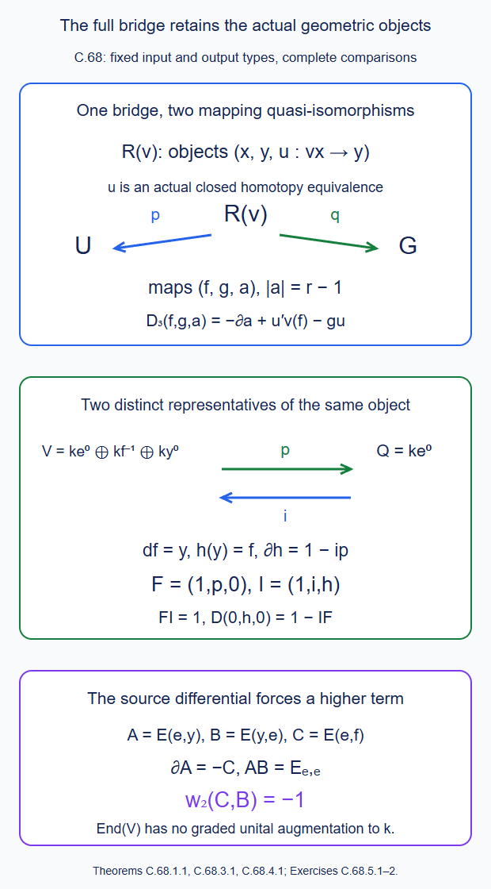
Theorems C.68.1.1 and C.68.3.1 give the full normalized projection and actual dg bridge. Lemma C.68.2.1 and Theorem C.68.4.1 retain prescribed full faces of the fixed-outer-type operator diagram. Exercises C.68.5.1–C.68.5.2 compute the forced second component and the actual homotopy retraction. Editable SVG source.

C.69. Full horizontal operator composition
Evaluation retains every marked natural transformation and every original source input. Its complete coalgebra formula gives associative horizontal substitution, including the mixed higher term relating the two whiskering orders. The formulas also retain the higher components of a nonlinear change of enhanced model.
C.69.1. Evaluation with every parameter mark retained
Let \(A,B,C\) be unital dg categories over the chosen split coefficients. Use normalized uncurved unital A-infinity functors and their full natural transformation dg categories \(\operatorname{Fun}_\infty(A,B)\), as in C.53.1, C.67.3 and C.68.1. Here \(B_{\rm full}A\) means the tensor bar on ALL original mapping spaces, including ordinary identity letters. It is used only for explicit formulas. No quasi-isomorphism claim for its unreduced bar-cobar counit is used.
The suspended natural transformation \(s\theta\) has degree \(|\theta|-1\). On an original source word \(c\), its suspended output map is evaluated with that degree. For clarity, all words below are in target-to-source order.
Theorem C.69.1.1 (the complete evaluation coalgebra map). There is a chain coalgebra map \[ \begin{gathered} \operatorname{ev}_{A,B}:\\ B_{\rm full}\operatorname{Fun}_\infty(A,B)\\ \quad\otimes B_{\rm full}A\\ \longrightarrow B_{\rm full}B. \end{gathered} \tag{C.69.1} \]
Its object value at \((F,x)\) is \(F(x)\). At an operator word of length \(r\) and a source word of length \(L\), its values are finite sums of output words of length at most \(L+r\). Its one-operator-letter formula is the full marked natural transformation expansion, including its source-length-zero term. The construction retains units, all original object/arrow labels and every parameter and source cut.
Proof. Suppose the operator word is \(s\theta_r|\cdots|s\theta_1\) between \(F_0,\ldots,F_r\). Split the source word into consecutive pieces. Assign one piece, possibly empty, to each \(\theta_i\), retaining their original order. Between these marked pieces allow any number of nonempty pieces assigned to the intervening functor \(F_i\). Evaluate each piece by that functor's suspended Taylor map, or by \(s\theta_i\) at a marked piece, and concatenate the resulting \(B\)-letters. Sum over all these assignments.
Each marked map is used exactly once. Move \(s\theta_i\), originally before the entire source input, past the source letters preceding its assigned piece. Its coefficient is
\[ (-1)^{(|\theta_i|-1)|c_{<i}|}, \tag{C.69.2} \] where \(|c_{<i}|\) is the total suspended degree of the original source letters preceding that marked piece.
Multiply those coefficients over all marks. Unmarked suspended functor maps have degree zero. Thus this rule specifies every tensor-evaluation Koszul sign without a separate choice of signs at empty pieces. It is the same rule as C67's marked insertion, now keeping the whole output word.
There are at most \(L\) unmarked pieces and exactly \(r\) marked pieces. There are finitely many placements, including the empty marked pieces; each Taylor value is an algebraic finite sum. This proves the bound and finiteness.
A cut of an output word lies between two evaluated pieces. It therefore cuts both the operator word and the original source word, at their unique corresponding positions. Conversely, an operator cut and a source cut, together with an assignment on each side, concatenate to exactly one assignment with that output cut. Reordering the two right/left tensor factors contributes the ordinary tensor-coalgebra sign. It is exactly the sign obtained by moving the original suspended marks past the same source letters in the concatenated assignment. This proves the coalgebra equation. It includes cuts before or after an empty marked piece.
For the chain equation expand the unary differential and adjacent binary composition on the output. On an unmarked run their terms are exactly the bar functor equation for its \(F_i\). At one marked output and its neighboring unmarked runs they are the defining full Nat differential, including the left and right functor actions. If two marked outputs become adjacent, their binary composition is precisely the full vertical Nat product, with its suspended binary sign. These are the unary and binary terms of the operator bar differential, since the target \(B\) is a dg category.
On the source side an original unary term remains in its assigned piece. An adjacent source-composition term internal to a piece appears in the same functor or Nat equation. At a boundary between two pieces its two possible placements have the opposite signs of the corresponding output cut terms; these are the cut terms in the same bar equations. Thus every term is accounted for by an unmarked run, one marked slot, two marked slots, or a cut between their pieces. The signs agree by the stated tensor rule: a degree-one differential passing a preceding suspended piece has exactly its tensor differential sign, and merging two marked slots has the defining suspended Nat product sign. The equations of C53.1 and C67.3 therefore give \[ \begin{gathered} b_B\operatorname{ev}_{A,B}\\ \quad=\operatorname{ev}_{A,B}d_\otimes,\\ d_\otimes=b_{\operatorname{Fun}}\otimes1\\ \qquad+1\otimes b_A, \end{gathered} \tag{C.69.3} \] with the graded tensor convention on the second summand.
This proves the chain equation on every original input, rather than only on closed parameter marks. Empty operator words give the original full bar map of \(F\). Ordinary identities are retained as outputs; higher normalized components vanish at an ordinary source unit and the neighboring unit terms cancel as in C68.1. No input identity was erased in this calculation. The piece/cut formulas do not introduce a new original source object, so they retain the asserted labels and restrictions. \(\square\)
C.69.2. Entire horizontal composition and exact associativity
Theorem C.69.2.1 (full horizontal substitution). Evaluation determines a chain coalgebra map \[ \begin{gathered} M_{A,B,C}:\\ B_{\rm full}\operatorname{Fun}_\infty(B,C)\\ \quad\otimes B_{\rm full}\operatorname{Fun}_\infty(A,B)\\ \longrightarrow B_{\rm full}\operatorname{Fun}_\infty(A,C). \end{gathered} \tag{C.69.4} \]
Its object map is \((G,F)\mapsto GF\). It is associative as an entire coalgebra map, with the identity functors as strict units. It retains the full higher horizontal components. It is not asserted to be a strict dg bifunctor on the underlying full Nat categories.
On operator words of lengths \(r,s\) and an original \(A\)-input of length \(L\), its evaluated values are finite and have \(C\)-output length at most \(L+r+s\). With any finite number of nested operator levels the analogous bound is \(L\) plus the sum of the original parameter lengths. No degree-positivity assumption is used for this bound.
Proof. First define the single-output Nat Taylor cochain of \(M\) on nonempty combined operator input by the single \(C\)-letter projection of \[ \begin{gathered} \operatorname{ev}_{B,C}\bigl(u\otimes\\ \qquad\operatorname{ev}_{A,B}(v\otimes c)\bigr),\\ u\in B_{\rm full}\operatorname{Fun}_\infty(B,C),\\ v\in B_{\rm full}\operatorname{Fun}_\infty(A,B),\\ c\in B_{\rm full}A. \end{gathered} \tag{C.69.5} \]
This specifies its value on every original \(A\)-word, including length zero. The two empty operator words instead specify the object \(GF\). These values have the required degree: a one-letter output has its single suspension, whereas the input has \(r+s\) suspended operator letters. Its ordinary Nat degree is consequently the sum of the ordinary parameter degrees minus \(r+s\) plus one. Tensor evaluation uses exactly the signs of Theorem C.69.1.1.
Reconstruct the coalgebra map \(M\) from this single-output map. Explicitly, split each of the two operator words into \(m\) consecutive pieces, allowing empty pieces but never two empty pieces in the same column. In column \(j\) apply the just-defined one-output cochain to the outer and inner pieces, and concatenate its \(m\) suspended outputs. Write \(u_j,v_j\) for the outer and inner pieces in column \(j\). The coefficient for reordering the original tensor into these columns is \[ (-1)^{\sum_{i<j}|v_i||u_j|}, \tag{C.69.6} \] where the degrees are suspended bar degrees. Sum over the columns and all \(m\) from \(1\) to \(r+s\). This is the consecutive-cut reconstruction into the cofree tensor bar. Its coalgebra equation follows by cutting the column sequence. It is the unique coalgebra map with the specified object and one-output values: the length-\(m\) component of a coalgebra map is its iterated coproduct followed by its one-output projection in all \(m\) slots.
There is an exact evaluation identity \[ \begin{gathered} \operatorname{ev}_{A,C}(M_{A,B,C}\otimes1)\\ \quad=\operatorname{ev}_{B,C} (1\otimes\operatorname{ev}_{A,B}). \end{gathered} \tag{C.69.7} \]
Both sides are coalgebra maps. Their one-\(C\)-letter projections agree by the definition of \(M\): only a single marked Nat output can contribute to that projection on nonempty operator input. The empty operator input gives the ordinary bar map of the composite \(GF\) on both sides. The cofree uniqueness just proved therefore gives the entire identity.
To check the chain equation for \(M\), use the chain equations for both evaluations in this identity. The resulting defect is a coderivation over \(M\). Its one-Nat-letter component, evaluated on each original \(A\)-word, is the one-\(C\)-letter component of that identity's chain defect, and hence is zero. The ordinary source unary differential is among these chain defects. A coderivation into a cofree bar is determined by its one-letter component, by cutting on its two sides. Thus the entire defect is zero.
For three operator levels, evaluate either proposed associative composite on an original \(A\)-word. Repeated application of the exact evaluation identity gives in both cases the same nested three evaluations, with the same tensor associativity identification. All its signs move the same original homogeneous factors through the same permutation. Taking one-output components and using cofree uniqueness proves exact associativity of \(M\). Equivalently both expansions are the same planar levelled consecutive-piece assignments; flattening those levels does not change the original cuts.
Evaluation by an identity functor has only its linear Taylor component. The piece formula therefore gives the identity map on every full Nat word when either identity functor is substituted as the empty operator level. This proves strict units. Normalization of higher parameter components also follows directly: an identity parameter mark gives an ordinary identity output; the next positive Taylor map vanishes at that argument. If no such positive Taylor map occurs, the component is the required unary identity component. Ordinary source-unit normalization is the same argument applied inside the pieces. Finally the two evaluations bound their output lengths first by \(L+s\), then by \(L+s+r\). Iteration proves the last assertion, including arbitrary nonminimal unary input complexes. \(\square\)
C.69.3. The mixed higher seam cannot be omitted
Lemma C.69.3.1 (the actual mixed composition homotopy). Let \(\theta:F_0\to F_1\) and \(\eta:G_0\to G_1\) be closed degree-zero full Nat maps. The one-output part of \(M\) on \(s\eta\otimes s\theta\) is a degree-minus-one full Nat cochain \(K\). With target-to-source word order it satisfies \[ \begin{gathered} dK=(\eta F_1)(G_0\theta)\\ \qquad-(G_1\theta)(\eta F_0). \end{gathered} \tag{C.69.8} \]
Proof. The entire coalgebra image of that two-mark input has one-letter part \(sK\) and two-letter part \[ \begin{gathered} s(\eta F_1)|s(G_0\theta)\\ \qquad-s(G_1\theta)|s(\eta F_0). \end{gathered} \tag{C.69.9} \]
The minus sign is the tensor-coalgebra interchange of the two suspended degree-minus-one marks. Their source differential is zero. Applying the target bar differential, whose binary sign on two degree-zero maps is minus, gives exactly the displayed equation. This is a chain homotopy between the two full whiskering products. It need not vanish even when all four functor objects are strict dg functors. \(\square\)
C.69.4. Solved calculations
Exercise C.69.4.1 (a nonzero mixed composition term; advanced). Let \(A=k\). Let \(B\) have objects \(0,1\), their identities, and the arrow complex from \(0\) to \(1\) with basis \(a^{-1},b^0,c^0\), differential \(da=b\), and no other nonidentity mappings. Let \[ \begin{gathered} X=ke^0\oplus kf^{-1}\\ \qquad\oplus ky^0,\\ df=y,\\ K_X(e)=f,\\ K_X(f)=0,\\ K_X(y)=0,\\ L=\partial K_X,\\ C=\operatorname{End}(X). \end{gathered} \tag{C.69.10} \] Both objects of every \(G_t:B\to C\), for \(t=0,1,2\), map to \(X\). Define their nonidentity arrow images by \[ \begin{gathered} G_t(a)=tK_X,\\ G_t(b)=tL,\\ G_t(c)=1-tL. \end{gathered} \tag{C.69.11} \] Find a closed full transformation \(\eta:G_0\to G_1\) with identity bare components, and compute the mixed term for \(\theta=c\) between the two object functors \(k\to B\). Check the role of the source differential and ordinary identity outputs.
Solution. The only nonzero matrix entry of \(L\) is \(L(e)=y\). It is closed and nonzero. The maps \(G_t\) preserve \(da=b\), since \(\partial(tK_X)=tL\); all other differential equations are immediate. There is no composable pair of nonidentity arrows, and identity products are preserved. Thus all three are strict unital dg functors.
Set the bare components of \(\eta\) to \(1_X\), and set \[ \begin{gathered} \eta_1(c)=K_X,\\ \eta_1(b)=-K_X,\\ \eta_1(a)=0. \end{gathered} \tag{C.69.12} \] Higher normalized source components vanish. At source length one its degree-zero Nat differential is \[ \begin{gathered} (d\eta)_1(z)=\partial\eta_1(z)\\ \quad-\eta_0(1)G_0(z)\\ \quad+G_1(z)\eta_0(0)\\ \quad+\eta_1(dz). \end{gathered} \tag{C.69.13} \] At \(c\) this is \(L-1+(1-L)=0\). At \(b\) it is \(-L+L=0\). At \(a\) it is \(K_X-K_X=0\), with the second term here supplied by \(\eta_1(da)\). Ignoring the original source unary differential would leave a nonzero defect. The bare components are closed. A source identity is handled by its two canceling unit actions. Any longer normalized input contains an identity and vanishes; its neighboring unit terms cancel in the same way. Thus \(\eta\) is closed in the full normalized complex.
For \(\theta=c\), the one-letter part of the nested evaluation is \(\eta_1(c)=K_X\). The two full whiskering products in (C.69.8) are \(1_X\) and \(1_X-L\). The mixed cochain consequently has \(K_0=K_X\), and \(dK_0=L\ne0\). Its entire two-mark coalgebra value is \[ \begin{gathered} sK_X+s1_X|s1_X\\ \quad-s(1_X-L)|s1_X. \end{gathered} \tag{C.69.14} \] The binary bar differential of its two-letter part is \(-sL\), canceling \(s\partial K_X\). Dropping the one-letter mixed term therefore breaks the full chain equation. The identity matrices in those two-letter terms are actual output letters; removing them would break that same equation. \(\square\)
Exercise C.69.4.2 (nonlinear change of model and full marked composition; advanced). Use the normalized \(A_\infty\) model map \(w:\operatorname{End}(X)\to k\) of Exercise C.68.5.1, including its nonzero second component. At either source object of \(B\), take two bare cochains with matrix values \(E_{e,f}\) and \(E_{y,e}\), in that target-to-source order. Compute the bare component of the second Taylor operation of \(w_*\). Explain how the exact evaluation identity controls arbitrary marked words, rather than only this one bare value.
Solution. Both linear scalar images are zero. Their composite input has the higher value proved in (C.68.10), so \[ \begin{gathered} (w_*)_2(E_{e,f},E_{y,e})_0\\ \qquad=-1. \end{gathered} \tag{C.69.15} \] Its degree is consistent: the two ordinary parameter degrees are \(1,0\), so the second operation has output degree \(1+0-1=0\). Replacing \(w\) by its linear map would give zero and lose this actual full operation.
On a complete operator word, partition its original parameter letters into nonempty consecutive groups. The group output is the single-letter part of \(B w\) applied to that group's full evaluation. Concatenate these outputs over all groupings. This is exactly the cofree formula in the proof of Theorem C.69.2.1 when the outer operator word is empty and its object is \(w\). Evaluation of this entire reconstructed bar word equals \(B w\) of the original full evaluation, by (C.69.7). Each side retains all ordinary source identities, every original unary differential, and all higher \(w_q\) allowed by the original input length. Its finiteness bound is the one proved in Theorem C.69.2.1; no truncation at the linear or bare component is involved. \(\square\)
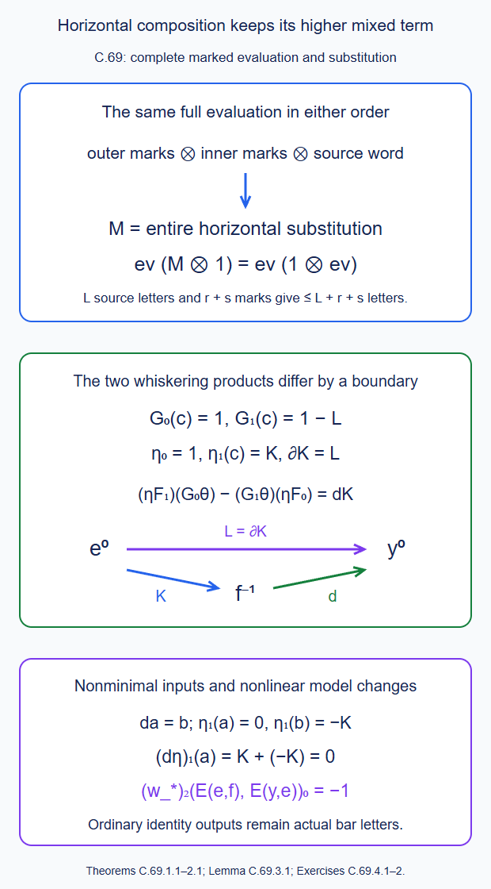
Theorems C.69.1.1–C.69.2.1 give complete evaluation and associative horizontal substitution. Lemma C.69.3.1 identifies the mixed full-cochain homotopy. Exercises C.69.4.1–C.69.4.2 compute the required nonzero source and model-change components. Editable SVG source.

C.70. Split model bridges and horizontal transport
A full-differential contraction retains conditions imposed on an entire split source image. It gives an exact identity-leading unit comparison and transports the complete operator bars across changing intermediate types. The construction keeps the higher Taylor terms of its split models.
C.70.1. A relative contraction preserved by the full differential
Let \(K\) be the full normalized Nat kernel of a graded-surjective mapping quasi-isomorphism, with fixed unital \(A_\infty\) functor objects and a dg target. Use the original source-word Taylor filtration from Theorem C.68.1.1. Choose the output kernel contraction \(H_0\), with \(H_0\) squared zero. Its leading Hom differential \(d_0\) includes every source unary differential. Thus
\[ d_0H_0+H_0d_0=1. \tag{C.70.1} \]
Every term of \(\delta=d-d_0\) consumes positive original source input length. This means that its evaluation on a word of length \(L\) uses cochain values at shorter source lengths; no assertion about the cohomological degrees of those words is needed.
Theorem C.70.1.1 (full-differential relative contraction). Put
\[ \begin{gathered}T=dH_0+H_0d=1+J,\\ H=H_0T^{-1}\\ \quad=H_0\sum_{n\geq0}(-J)^n.\end{gathered} \tag{C.70.2} \]
The series is finite on each original input, and \(H\) is a normalized contraction of \(K\). If a graded subspace \(K_{\rm rel}\) of \(K\) is stable under the full differential \(d\) and \(H_0\), then \(H\) preserves \(K_{\rm rel}\). Separate stability under \(d_0\) and \(\delta\) is not required.
Proof. The leading identity gives \(J=\delta H_0+H_0\delta\), so \(J\) consumes positive original input length. Its inverse series has at most \(L+1\) terms on a word of length \(L\). Both \(dT=Td\) and \(H_0T=TH_0\) hold: the first follows from \(d\) squared zero, and the second from \(H_0\) squared zero, since both \(H_0 T\) and \(T H_0\) equal \(H_0dH_0\). These identities extend to the finite inverse series on each input. Consequently
\[ \begin{gathered}dH+Hd=TT^{-1}=1,\\ H^2=H_0^2T^{-2}=0.\end{gathered} \tag{C.70.3} \]
All operations preserve normalized source-unit conditions. If \(K_{\rm rel}\) is stable under \(d\) and \(H_0\), it is stable under \(T\), \(J\) and each term of the finite inverse. Therefore \(H\) preserves \(K_{\rm rel}\). This proof uses the full differential to establish relative stability, even if its leading and perturbing parts do not separately preserve the imposed source-image condition. \(\square\)
One useful such condition is vanishing after precomposition with a fixed unital \(A_\infty\) functor \(j\). Precomposition of full Nat cochains is a dg functor, by the bar formula in Theorem C.69.2.1. Its kernel is stable under \(d\). Postcomposition of its output values by the fixed endpoint contraction \(H_0\) preserves this vanishing condition as well. This remains true when \(Bj\) contains lower-word-length Taylor outputs: for each fixed original outer endpoint pair the same output contraction applies to every term.
C.70.2. An exact unit relative to a chosen split source image
Let \(q:R\to G\) be a unital dg functor, identical on its object labels and graded-surjective and quasi-isomorphic on mappings. By Theorem C.68.1.1 choose a normalized unital \(A_\infty\) section \(j:G\to R\) with \(qj=\operatorname{Id}_G\) exactly. The endomorphism \(E=jq\) of \(R\) is then exactly idempotent as an \(A_\infty\) functor, and it fixes the object labels. No augmentation of \(G\) or \(R\) is assumed.
Theorem C.70.2.1 (an actual relative identity-leading unit). There is a closed degree-zero full Nat isomorphism
\[ u:\operatorname{Id}_R\longrightarrow E, \tag{C.70.4} \]
with bare components \(1_R\) and with the exact full identities
\[ \begin{gathered}q_*u=\operatorname{Id}_q,\\ u j=\operatorname{Id}_j.\end{gathered} \tag{C.70.5} \]
Its inverse is finite on each original source word and has the same two projection/restriction identities. In particular
\[ \begin{gathered}u E=\operatorname{Id}_E,\\ E_{*,1}(u)=\operatorname{Id}_E.\end{gathered} \tag{C.70.6} \]
Here \(E_{*,1}\) is the unary full postcomposition operation. Higher mixed one-output components containing this unit and an image of \(j\) vanish by ordinary parameter-unit normalization. The entire bar operation still retains its usual identity-letter insertion terms.
Proof. In \(\operatorname{Nat}_\infty(\operatorname{Id}_R,E)\), start with \(u_0\) having bare components \(1_R\) and all positive Taylor components zero. Its \(q\) projection is exactly the identity of \(q\). Also \(u_0 j\) is exactly \(\operatorname{Id}_j\): the empty source component is the identity and the uncurved bar map \(Bj\) sends a positive word to positive words. The two restricted functor objects coincide, since \(\operatorname{Id}_Rj=j\) and \(Ej=jqj=j\). Thus the chain defect \(d u_0\) takes values in ker \(q\) and vanishes after precomposition \(j\). Its bare component is zero.
This relative kernel is stable under the full Nat differential. Its leading output contraction \(H_0\) preserves vanishing on \(Bj\), as just proved. Theorem C.70.1.1 therefore contracts it. Define
\[ u=u_0-Hd u_0. \tag{C.70.7} \]
The defect is closed, so \(du=du_0-dHdu_0=0\). The correction remains in ker \(q\) and vanishes on \(Bj\), proving both exact identities. Neither \(H_0\) nor \(J\) creates a shorter required cochain input, so a cochain with zero bare component retains that property. Hence \(u\) still has bare components \(1_R\).
Write \(u=1+n\) as a graded full Nat matrix between its two functor objects. Each \(n\) term consumes positive original input length. The convolution series \(1-n+n^2-\cdots\) is therefore finite on each input, is a two-sided inverse by multiplication of the finite geometric series, and is closed by the full dg product derivation rule. The dg functors \(q_*\) and precomposition \(j\) preserve these exact inverse identities, so the inverse projects and restricts to their identity transformations too.
Finally \(uE=(uj)q=\operatorname{Id}_E\) by strict associativity of precomposition. Entire horizontal associativity from Theorem C.69.2.1 gives
\[ \begin{gathered}E_{*,1}(u)=j_{*,1}(q_*u)\\ \quad=j_{*,1}(\operatorname{Id}_q)\\ \quad=\operatorname{Id}_E.\end{gathered} \tag{C.70.8} \]
The last equality is normalized unitality of the entire postcomposition functor. Applying the same entire horizontal associativity to a mixed operator word, first substitute \(j\) or \(q\) next to \(u\). Its image is an ordinary identity parameter mark. Every higher one-output component containing that mark vanishes, by the parameter-unit normalization proved in Theorem C.69.2.1. The cofree expansion still keeps standard identity insertions in its longer output words; they are not discarded. \(\square\)
C.70.3. One transport across all intermediate types
For each selected actual geometric fiber category \(G_a\) choose a full model bridge \(R_a\) with one resolution object per geometric object. Such a bridge comes from Theorem C.68.3.1 by choosing one of its resolutions over each required object and retaining the full subcategory on them. Its geometric projection \(q_a\) is identical on those labels, with graded-surjective quasi-isomorphic mapping complexes. Choose the full normalized sections \(j_a\) once, as above.
Theorem C.70.3.1 (the entire split horizontal transport). On the full operator categories define
\[ \begin{gathered}L_{ab}(F)=j_b Fq_a,\\ L_{ab}:\\ \operatorname{Fun}_\infty(G_a,G_b)\\ \longrightarrow\operatorname{Fun}_\infty(R_a,R_b).\end{gathered} \tag{C.70.9} \]
including every higher parameter operation, using Theorem C.69.2.1's horizontal bar composition. Then on their entire tensor bars
\[ \begin{gathered}B L_{ac}M_G\\ \quad=M_R\circ\bigl(\\ \qquad B L_{bc}\otimes B L_{ab}\bigr).\end{gathered} \tag{C.70.10} \]
It retains all original operator and parameter labels. Its identity object is \(E_a=j_aq_a\), with exact relations
\[ \begin{gathered}E_a^2=E_a,\\ E_b L_{ab}(F)\\ \quad=L_{ab}(F)\\ \quad=L_{ab}(F)E_a.\end{gathered} \tag{C.70.11} \]
The full Nat isomorphisms of Theorem C.70.2.1 compare these idempotent local units with the actual identity functors. This is a common transport across the changing intermediate fiber; it is not a separate independent choice at each original string's endpoints.
Proof. Precomposition by the dg \(q_a\) and full postcomposition by the normalized \(A_\infty\) j_b are precisely the coalgebra operations of Theorem C.69.2.1. Their composite is a normalized \(A_\infty\) functor on each complete operator category, which defines \(B L_{ab}\). Its object expression is the displayed one. On two composable operator bars expand both transported factors and associate the entire horizontal composition. The middle factors become \(q_bj_b\). They are exactly \(\operatorname{Id}_{G_b}\), with zero higher components. Thus they cancel in the entire expression, leaving j_c, the full composition of the two original operator bars, and \(q_a\). This is exactly \(B L_{ac}M_G\). This argument holds for all original parameter lengths, not just for its object or single-parameter components. All signs move the same suspended factors through the same tensor permutation, by Theorem C.69.2.1's exact associativity.
The same cancellation with one identity operator gives E_a^2=E_a and the two exact corner relations. The unit isomorphisms exist by Theorem C.70.2.1, including their two exact projection/source-image identities. These show that whiskering the unit with an image \(L_{ab}(F)\) has the identity unary comparison, and that all its higher mixed one-output components are the ordinary normalized unit ones. The longer bar words retain their identity insertions as in Theorem C.70.2.1. All maps use the original typed operator bars, so their cuts and full-face restrictions are unchanged. Iterated middle cancellation works for any finite original string, which proves the last assertion. \(\square\)
C.70.4. Two solved relative-source calculations
Use the actual 19-dimensional one-object bridge \(R\) of Exercise C.68.5.1, with \(q\) its projection to the unaugmented End(\(V\)), and \(j\) its full section. Write \(S=(1,0,0)\), \(M_{ab}=(0,E_{ab},0)\), and \(Z_{ab}=(0,0,E_{ab})\). The degree of \(M_{ab}\) is \(|a|-|b|\), while the degree of \(Z_{ab}\) is \(|a|-|b|+1\). In particular \(S\) is not the unit of \(R\): that unit is \(S+M_{ee}+M_{ff}+M_{yy}\). Keep these four summands in every ordinary-unit calculation.
Exercise C.70.4.1 (the leading differential does not preserve the relative condition; advanced). Let \(\varphi_{\rm base}\) have only \(\varphi_{\mathrm{base},1}(S)=S\) and define the entire degree-one cochain \(\varphi=\varphi_{\mathrm{base}}-\varphi_{\mathrm{base}}E\). Through original source length two its nonzero values are
\[ \begin{gathered}\varphi_1(S)=S,\\ \varphi_1(M_{ee})=-S,\\ \varphi_2(M_{ef},M_{ye})=S.\end{gathered} \tag{C.70.12} \]
with every other value in that word window zero. Show that \(\varphi\) vanishes after precomposition with \(j\) but that its leading unary differential \(d_0 \varphi\) does not. Explain why the contraction of Theorem C.70.1.1 still applies to this relative kernel.
Solution. Let \(\varphi_{\rm base}\) have only \(\varphi_{\mathrm{base},1}(S)=S\). Then on the displayed word window \(\varphi=\varphi_{\mathrm{base}}-\varphi_{\mathrm{base}}E\). Indeed the scalar component of \(j_1\) is \(\beta\), so precomposition \(E\) contributes \(S\) on input \(M_{ee}\); its nonzero second scalar value on \((M_{ef},M_{ye})\) is -1 by (C.68.10). No other scalar component of \(j\) has the degrees and basis support needed in this window. Since the functor \(E\) is unital, the two terms cancel on an ordinary unit input; higher unit inputs give zero. Thus \(\varphi\) is normalized. The entire same definition \(\varphi_{\mathrm{base}}-\varphi_{\mathrm{base}}E\), including any later word components, vanishes after \(j\) because \(Ej=j\). Thus its full differential also vanishes after \(j\), since precomposition \(j\) is a dg functor.
The failure of the leading differential already occurs at source inputs \(A=E_{ey}\) and \(B=E_{ye}\) of End(\(V\)). One has \(dA=-E_{ef}\). The linear section sends A to \(M_{ey}\) and B to \(M_{ye}-Z_{fe}\). In the source-unary part of \(d_0 \varphi\) on those two inputs, the term from \(dM_{ey}=-M_{ef}-Z_{ey}\) has coefficient -1 from the degree-one Hom differential. It therefore contributes +\(S\). The other source-unary and output-unary terms cannot meet the only nonzero two-input value of \(\varphi\) at these inputs. The one-letter \(j_2(A,B)\) has degree -1 and takes values in ker \(q\). That kernel has no degree-minus-one mapping component, so \(j_2(A,B)=0\). Consequently
\[ \begin{gathered}((d_0\varphi)j)_2(E_{ey},E_{ye})\\ \qquad=S\ne0.\end{gathered} \tag{C.70.13} \]
This is an actual failure of separate leading stability. The full \(d \varphi\) still vanishes after \(j\); its remaining action/composition terms cancel that leading restriction. Theorem C.70.1.1 requires stability only under full \(d\) and \(H_0\). Both hold here, so its finite symmetric contraction applies.
The displayed finite window proves the failure in the whole cochain too: later input components cannot contribute to an evaluation on this two-letter original input. Likewise each relative contraction equation on this window is the corresponding restriction of the full original-word formula. \(\square\)
Exercise C.70.4.2 (the second component of the actual relative unit; advanced). For \(u:\operatorname{Id}_R\to E\) constructed by Theorem C.70.2.1 using the output contraction of Exercise C.68.5.1, compute \(u_1(Z_{ee})\) and \(u_2(M_{ef},Z_{ye})\). Prove that omitting the second value breaks its closed full Nat equation.
Solution. On the mapping kernel \(q\), its contraction is
\[ \begin{gathered}k_q(f,0,a)\\ \quad=(\beta(a),0,-H_G(a)).\end{gathered} \tag{C.70.14} \]
The first Taylor value of the relative unit on that kernel is this contraction. Since \(H_G(E_{ee})=-E_{fy}\), it gives
\[ u_1(Z_{ee})=S+Z_{fy}. \tag{C.70.15} \]
Here \(DS=Z_{ee}+Z_{ff}+Z_{yy}\) and \(DZ_{fy}=-Z_{ff}-Z_{yy}\), so the differential of this value is \(Z_{ee}\), as required by the first unit equation.
The symmetric correction at the next original word gives
\[ \begin{gathered}u_2(M_{ef},Z_{ye})\\ \qquad=-S-Z_{fy}.\end{gathered} \tag{C.70.16} \]
For the two-letter source word \((M_{ef},Z_{ye})\), the contribution from the first Taylor level to \(d u\) is +\(Z_{ee}\). Indeed \(E_1(M_{ef})=M_{ef}+Z_{ey}\) and \(u_1(Z_{ye})=-Z_{fe}\). Their product is +\(Z_{ee}\) by the third-component sign in the bridge multiplication. The source unary term \(dM_{ef}=-Z_{ef}\) has no contribution at this truncated first Taylor level, and the other terms on this input vanish. The differential of \(-S-Z_{fy}\) is -\(Z_{ee}\), canceling that defect. The full second component also vanishes on \((Z_{ef},Z_{ye})\), so its source-unary contribution on this word is zero. Thus the stated second value is necessary for closure on this actual input.
The whole-word formula of Theorem C.70.2.1 supplies every later component and its exact \(q\) projection and \(Bj\) restriction. The geometric-series full inverse has both of those same identities. The finite calculation retains the ordinary source unit \(S+M_{ee}+M_{ff}+M_{yy}\) and the nonzero second Taylor component of \(j\); replacing either by a single scalar letter would change the equations just computed. \(\square\)
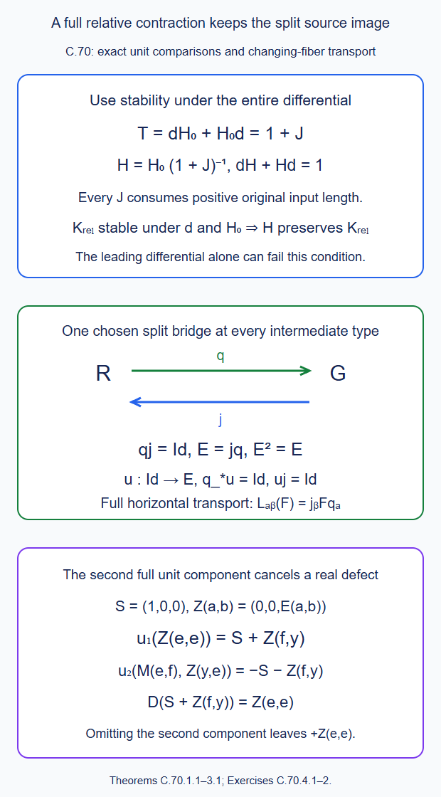
Theorems C.70.1.1–C.70.3.1 give the full relative contraction, exact split unit and entire changing-fiber transport. Exercises C.70.4.1–C.70.4.2 exhibit the failure of separate leading stability and the necessary second unit component. Editable SVG source.

C.71. The actual native diagram with strict formal units
The strict-height native index separates formal identities from positive arrow labels whose enhanced functors happen to be identities. Split model transport retains that distinction, all changing-frontier comparison cells and the supplied whole extension-field comparison.
C.71.1. Formal identities and the positive original-arrow bar
Let \(I\) be the actual strict-height native joint index of Sections C.47 and C.64, or a finite full forward corner. Its nonidentity arrows remain their actual selected contraction/execution labels. Write \(G_s\) for its geometric dg fiber, whose type is the actual frontier arity \(m_s\). The full native operator \(F_f\) and all its higher comparison cochains are those of Theorem C.47.2.1. In the coherent word presentation, its horizontal operations are the complete coalgebra composition \(M\) of Section C.69. Each normalized positive index component is evaluated on all original mapping inputs in its source fiber.
Choose Theorem C.70.3.1's split bridges \(q_m:R_m\to G_m\) and sections \(j_m\) once for each actual frontier type. Reuse them at all states with that type. Where an additional actual comparison endpoint changes the geometric fiber, keep that endpoint in the type label too. Do not reconstruct these choices independently on separate finite index corners.
Theorem C.71.1.1 (the actual unital native transport). There is a normalized coherent native diagram on the \(R\) fibers with the following operator objects:
\[ \begin{gathered}T_f=j_{m_t}F_fq_{m_s}\\ \quad(f:s\to t,\ f\ne1_s),\\ T_{1_s}=\operatorname{Id}_{R_{m_s}}.\end{gathered} \tag{C.71.1} \]
Every full positive native index cell is transported by Theorem C.70.3.1's entire operator-bar map \(L\). All formal identity degeneracies have their ordinary normalized values. Every original selected arrow label is retained, even if its native functor equals an identity functor. In particular a nonidentity f with \(F_f=\operatorname{Id}\) has model \(E=jq\), rather than being reassigned the formal identity's model.
The bridge projections give the exact whole comparison
\[ \begin{gathered}q_{m_t}T_f\\ \qquad=F_fq_{m_s},\end{gathered} \tag{C.71.2} \]
including every original source Taylor component and every higher native index cell. On formal identities that comparison is the actual identity. The diagram retains its full-face restrictions and all finite forward corners of the one chosen global family.
The same construction retains a supplied entire two-endpoint native comparison diagram. Thus it applies to the actual extension-field native comparison of Theorem C.48.3.1 after all its fibers have been extended to the same coefficient field. This assertion does not yet prescribe the common-core calibration and external-product/grafting coordinates of a full marked point.
Proof. A composite of nonidentity arrows in \(I\) cannot be an identity: each factor has strictly positive height jump and their sum remains positive. Consequently the original positive index words are closed under their source-composition faces. Their full bar calculations therefore retain all actual parallel-arrow labels and never turn a positive source face into a formal identity face.
On this entire positive word presentation, apply Theorem C.70.3.1's \(L\) at each pair of outer fiber types. It is a chain coalgebra map on the complete operator bars. Its exact horizontal identity
\[ \begin{gathered}B L M_G\\ \quad=M_R\circ\bigl(BL\otimes BL\bigr).\end{gathered} \tag{C.71.3} \]
carries every actual native equation to the corresponding \(R\) equation. This includes the full source unary differentials, all higher parameter cochains and every intermediate changing-frontier type. Inserting the successive fixed \(q_m\) and \(j_m\) cancels each middle \(q_mj_m\) exactly. Thus the positive diagram is a simultaneous transport of the original whole family, rather than an assignment selected from its edge classes.
Now assign \(\operatorname{Id}_R\) to each formal identity arrow. Set every higher index component with a formal identity argument to its normalized zero value; retain the usual unary identity and ordinary unit insertion values. The types of the remaining positive components do not change: an old formal identity factor \(E=jq\) next to an image \(L\)(\(F\)) acts exactly as the identity, by Theorem C.70.3.1's full corner relations. The same is true on the entire image operator bars; the higher mixed one-output unit terms are the normalized ones of Theorem C.70.2.1. Thus replacing that factor by \(\operatorname{Id}_R\) retains the source and target operator word of each such component. Check its full bar equations at such an argument. If the identity is internal, its two neighboring source-composition faces give the same remaining positive component with opposite suspended bar signs. If it is at an outer boundary, the source-composition term and the strict identity functor action give that same component with opposite signs. The higher one-output horizontal terms at an identity parameter vanish by Section C.69's normalized unit rule. These are all possible terms meeting the identity slot. With multiple identities repeat the same local cancellation at the first such slot; it either cancels the same two terms or leaves an already normalized zero higher component. Hence every formal-unit equation holds.
This unital extension concerns the original index-arrow slots. It does not replace arbitrary objects of an untagged full functor category by identity functors. Nonidentity labels whose operators happen to equal Id remain positive original letters. Their composites are still positive index labels, so every such component stays in the already transported positive diagram. In particular \(L(\operatorname{Id})=jq\) is kept on that labelled arrow. This proves the asserted distinction, including unit-output and unary execution/contraction arrows.
For a positive arrow, postcomposition by \(q_{\rm target}\) cancels \(j_{\rm target}\) in its whole formula, leaving \(F_fq_{\rm source}\) exactly. On a full operator bar the same Section C.69 associativity cancels that pair before any one-output projection. Thus every transported higher native cell projects to its original entire cell after source \(q\). On a formal identity the equation is \(q\operatorname{Id}_R=\operatorname{Id}_Gq\), with identity comparison. The normalized unit equations therefore project to the original unit equations as well. This gives the exact whole comparison, and each \(q\) fiber is an actual mapping quasi-isomorphism and object equivalence by its construction.
The \(q\) and \(j\) choices were made once by actual fiber type and object labels. The formula for a component uses its original word and no new parameter vertex. Restricting to any genuine full index face therefore restricts the same component, and intersecting two such faces gives the same literal restriction. Theorem C.47.2.1's finite forward image closure retains the finitely many needed geometric object images. At each fixed original input all Exercise C.68.5.1 section and Section C.69 evaluation sums are finite. Restriction to its finite forward corner hence gives the same actual finite calculation. No fresh independently prescribed face data are asserted to extend.
Finally, an entire two-endpoint comparison can be included as its given joint diagram on \(I\) times [1], keeping the endpoint in each fiber label. Give a comparison arrow the additional positive endpoint height jump. The summed height is again strict, with finite forward corners; its positive-arrow words have the property used in the first paragraph. Apply the identical transport to that whole supplied diagram, including its diagonal mixed arrows and cells. On its two endpoint faces the result is precisely the restriction already described. All coefficient-extended fibers are categories over the same field, so their mapping and section arguments are those of Exercise C.68.5.1/Section C.70 over that field. This retains the actual full comparison of Theorem C.48.3.1; it does not infer a coordinate calibration or prescribed external product from that comparison alone. \(\square\)
C.71.2. Solved native unit calculations
Use the actual Exercise C.68.5.1 one-object bridge \(R\) of dimension 19 and \(G=\operatorname{End}(V)\), with \(V=ke^0\oplus kf^{-1}\oplus ky^0\), \(df=y\). Let \(L(e)=y\) and \(U_t=1+tL\); its inverse is \(1-tL\) because \(L^2=0\). The strict dg functor \(F_t\) is conjugation by U_t. Its model is \(T_t=jF_tq\), retaining the full nonzero second Taylor component of \(j\).
Exercise C.71.2.1 (an identity-valued arrow retains its actual label; advanced). Use a strict-height index with two parallel arrows \(a_0,a_1:0\to1\), with native \(F_{0}\) and \(F_{1}\), and \(b:1\to2\) with native \(F_{2}\). Their distinct composites \(c_0,c_1:0\to2\) have native \(F_{2}\) and \(F_{3}\). Formal identities must model \(\operatorname{Id}_R\), while \(a_0\) retains \(E=jq\ne\operatorname{Id}_R\). Check the entire composition \(T_tT_s=T_{t+s}\), its \(q\) projection, units and full-face restrictions. Explain why passing to mapping cohomology cannot identify the two parallel labels or replace \(a_0\) by a formal identity.
Solution. The matrix \(L\) is closed and square-zero. Therefore U_t is a closed invertible degree-zero map and \(U_tU_s=U_{t+s}\). Conjugation by it is a strict unital dg functor and \(F_tF_s=F_{t+s}\). On the full \(R\) source bar the model has the exact formula
\[ B T_t=Bj\,BF_t\,Bq. \tag{C.71.4} \]
Consequently its entire composite is
\[ \begin{gathered}B T_t\,B T_s\\ \quad=Bj\,BF_t(Bq\,Bj)\\ \qquad BF_s\,Bq\\ \quad=B T_{t+s}.\end{gathered} \tag{C.71.5} \]
since \(Bq Bj\) is the identity, including all higher terms. Its full \(q\) projection is B \(F_t Bq\) by that same cancellation. A formal identity is instead the actual identity bar map, which composes as the strict unit with each B \(T_t\). All these are genuine full bar equations, with their nonminimal source unary differential and ordinary source identity letters.
For a concrete distinction, write \(S=(1,0,0)\) in \(R\). Then \((T_0)_1(S)=0\) because \(q\)(\(S\))=0, whereas \((\operatorname{Id}_R)_1(S)=S\). Thus the nonidentity \(a_0\) retains the actual model \(E=T_0\), which differs from the formal identity. Its label has source 0, target 1; a formal identity has the same source and target. A quotient by a matching underlying functor would change these actual index data.
The eight index labels are \(i_0,i_1,i_2,a_0,a_1,b,c_0,c_1\). There are 15 composable pairs, including their formal unit pairs, and 24 composable triples. The selected original rule \(ba_0=c_0,\ ba_1=c_1\) retains both parallel composites. A full object face retains all labels whose endpoints belong to it; source and target closure makes it stable under composition. In particular the face \(\{0,1\}\) retains both \(a_0\),\(a_1\), and the face \(\{0,2\}\) retains both \(c_0\),\(c_1\). Its model is the literal restriction of the whole formula above, with no new section choice.
Finally \(H(V)=ke\), so \(H(\operatorname{End}(V))=k\) by the split Hom contraction of Exercise C.68.5.1. Each U_t induces the identity there, hence each \(F_t\) does too. These identical cohomology actions do not change any selected index arrow label, nor the full bar maps just computed. The native diagram is retained by its actual operators and higher data, rather than reconstructed from those cohomology actions. \(\square\)
Exercise C.71.2.2 (a native comparison requires positive Taylor components; advanced). Use the [2] labels \(a:F_0,\ b:F_2,\ c:F_3\), with native comparison \(\beta=U_1\) from \(F_2F_0=F_2\) to \(F_{3}\). It is an actual closed dg natural isomorphism, since \(\beta F_2(g)=F_3(g)\beta\) on every matrix. Its transported full comparison is \(\alpha=j_{*,1}(\beta q):T_2\to T_3\). Compute its bare and first relevant Taylor components, give its actual full inverse, and exhibit the closedness defect of its bare truncation.
Solution. For a source word \(w\) of length \(L\) consisting of \(g\)-component \(R\) letters, the full marked formula of Section C.69 is the sum over cuts \(w=w_L|w_R\) of the following expression, where \(|w_L|\) is the suspended degree of that original source subword:
\[ \begin{gathered}(-1)^{|w_L|}j_{L+1}\\ \quad\bigl(F_3(qw_L)|\beta|\\ \qquad F_2(qw_R)\bigr).\end{gathered} \tag{C.71.6} \]
If a positive word contains a scalar-component or a third-component \(R\) basis letter, \(q\) kills that source input. Since \(H_G(E_{ye})=E_{fe}\), its bare component is
\[ \begin{gathered}\alpha_0=\operatorname{Id}_R\\ \quad+M_{ye}-Z_{fe}.\end{gathered} \tag{C.71.7} \]
The four second-section values needed for its first component are
\[ \begin{gathered}j_2(E_{ye},E_{ef})=-Z_{fy},\\ j_2(E_{ef},E_{ye})\\ \quad=-S-Z_{fy},\\ j_2(E_{yf},E_{ye})=Z_{fe},\\ j_2(E_{ye},E_{yf})=0.\end{gathered} \tag{C.71.8} \]
For completeness, apply the obstruction formula (C.68.8) and the kernel contraction \(k_q(f,0,a)=(\beta_{\rm lin}(a),0,-H_G(a))\), where \(\beta_{\rm lin}(a)=a_{ee}\). The third-component obstructions on those four inputs are respectively \(Z_{ff}+Z_{yy},-Z_{ee}\), \(-Z_{ye},\ 0\). Their contractions are exactly the four values displayed: \(H_G(E_{ff}+E_{yy})=E_{fy}\), \(H_G(E_{ee})=-E_{fy}\), and \(H_G(E_{ye})=E_{fe}\). This computes every required matrix entry directly.
Conjugation gives \(F_t(E_{ef})=E_{ef}+tE_{yf}\). The suspended source degree of \(M_{ef}\) is zero, so the two cuts in the marked formula have positive signs. Their sum is
\[ \begin{gathered}j_2(E_{ye},E_{ef}+2E_{yf})\\ \quad+j_2(E_{ef}+3E_{yf},E_{ye}).\end{gathered} \tag{C.71.9} \]
It follows that
\[ \begin{gathered}\alpha_1(M_{ef})\\ \quad=-S-2Z_{fy}+3Z_{fe}.\end{gathered} \tag{C.71.10} \]
The marked postcomposition functor carries the closed \(\beta q\) to a closed full \(\alpha\). Its \(q\) projection is exactly \(\beta q\) because qj is the identity full functor, and normalized units are retained by Section C.69. These statements also follow by inserting the displayed entire marked formula into its full Nat equation with source functor \(T_{2}\) and target functor \(T_{3}\).
To see a concrete failure of truncation, keep \(\alpha_0\) and discard its positive components. On source \(M_{ef}\) the differential of that bare cochain is
\[ \begin{gathered}Z_{ee}-Z_{ff}-Z_{yy}\\ \qquad+3Z_{ye}\ne0.\end{gathered} \tag{C.71.11} \]
Indeed it is \(T_3(M_{ef})\alpha_0-\alpha_0T_2(M_{ef})\), using the third-component bridge multiplication sign. The differential of \(-S-2Z_{fy}+3Z_{fe}\) is its negative, since \(DS=Z_{ee}+Z_{ff}+Z_{yy}\), \(DZ_{fy}=-Z_{ff}-Z_{yy}\) and \(DZ_{fe}=-Z_{ye}\). The remaining source unary term on this input is zero: \(dM_{ef}=-Z_{ef}\), and \(\alpha\)'s positive values on that \(q\)-kernel source vanish. Thus the actual first component cancels the explicit bare defect.
The bare map has the actual inverse \(\operatorname{Id}_R-M_{ye}+Z_{fe}\): its nonidentity part \(N=M_{ye}-Z_{fe}\) has \(N^2=0\) by the same bridge product formula. Let \(a_0\) be the bare cochain \(\alpha_0\), let \(a_0^{-1}\) be that bare inverse, and put \(n=a_0^{-1}\alpha-1\) in the graded full Nat composition. It has positive original source length. Therefore
\[ \begin{gathered}\alpha^{-1}\\ \quad=(1-n+n^2-\cdots)\\ \qquad a_0^{-1}.\end{gathered} \tag{C.71.12} \]
is a finite two-sided full inverse on each original word. The full dg product derivation rule makes it closed. Its \(q\) projection is \(\beta^{-1}q\), because \(q\) preserves full Nat products and exact inverses. This is an actual inverse cochain, retaining every higher term of \(\alpha\), rather than only an inverse cohomology class. \(\square\)
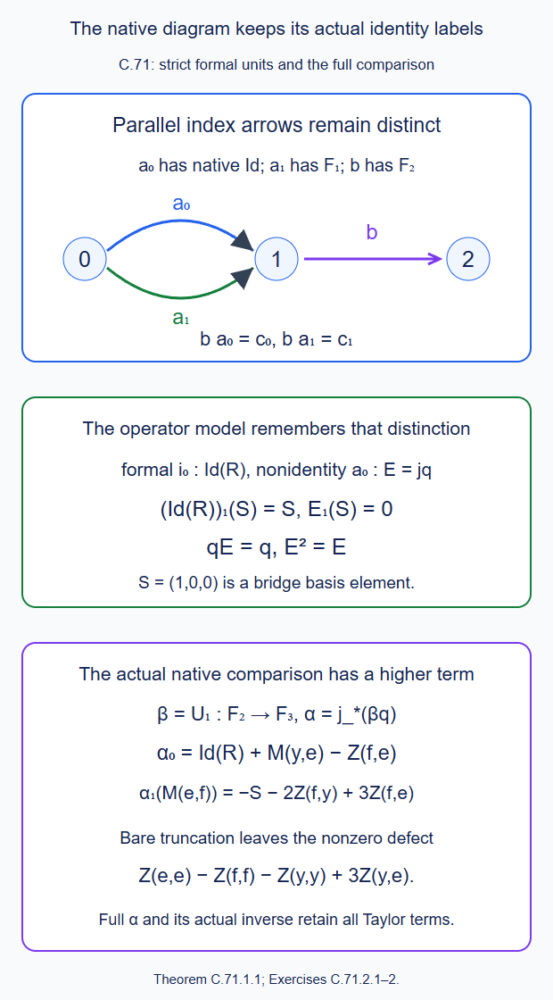
Theorem C.71.1.1 gives the normalized full native transport and its exact whole comparison. Exercises C.71.2.1–C.71.2.2 retain the parallel index labels and compute the necessary positive Taylor component of the native comparison. Editable SVG source.

C.72. Normalized unital cobar models
Actual dg categories need not have augmentations. Their unital cobar model retains coefficient outputs as constants, admits its actual counit contraction, and gives strict dg models of normalized unital functors. The canonical full unit retains every higher component under composition.
C.72.1. The normalized quotient and its actual counit
Let \(A\) be a unital dg category over its split coefficient category \(S\). The coefficients have degree zero and zero differential; all tensor products below are balanced over them. Start with the full tensor bar \(B_{\rm full}A\) on all mapping spaces, including ordinary coefficient and identity letters. Use the suspension degree \(|sa|=|a|-1\) and the conventions of Theorem C.67.1.1:
\[ \begin{gathered}b_1(sa)=s(da),\\ b_2(sa|sb)\\ \quad=(-1)^{|a|-1}s(ab),\\ D(\mathsf tc)=\mathsf t(bc)\\ \quad-\sum_{c=c_L|c_R}(-1)^{|c_L|}\\ \qquad(\mathsf tc_L)(\mathsf tc_R),\end{gathered} \tag{C.72.1} \]
where \(\mathsf t\) is the degree-one cobar generator map. These equations define the ordinary full augmented cobar before imposing the following unit relations. There is no quasi-isomorphism claim for its ordinary unreduced counit.
Let \(J_{\rm unit}\) be the two-sided ideal generated by
\[ \begin{gathered}\mathsf t(su)-u\quad(u\in S),\\ \mathsf t(sa_1|\cdots|sa_r),\\ r\geq2,\quad a_i\in S,\\ \text{for some }i.\end{gathered} \tag{C.72.2} \]
Define \(Q^{\mathrm u}(A)=\Omega B_{\rm full}A/J_{\rm unit}\), with its original object labels. The relations identify one-letter coefficient generators with the actual coefficients and kill higher degenerate unit blocks. They do not kill scalar outputs of the original products or unary differential.
Theorem C.72.1.1 (the actual normalized unital resolution). \(J_{\rm unit}\) is a differential ideal. The quotient is a unital dg category. On its nonzero identity sector it is graded free over \(S\) on the nonempty words in the graded quotient \(A/S\), with one desuspension per block. Its generator differential retains the full original unary complex and has all other terms in the algebra on shorter generators, including constant terms.
The actual unital counit
\[ \epsilon_A:Q^{\mathrm u}(A)\longrightarrow A, \tag{C.72.3} \]
is graded-surjective and a quasi-isomorphism on each mapping complex. It has an actual normalized linear mapping SDR, finite on every original reduced-letter input. On zero-identity objects the incident mapping spaces are zero on both sides. The construction therefore also retains any actual zero objects, without a false nonzero identity inclusion there.
Proof. First check the unit ideal. A one-letter coefficient relation has zero differential, since its coefficient is closed. In a higher generator with a coefficient argument, unary terms remain degenerate and vanish modulo \(J_{\rm unit}\). If that argument is internal, the two neighboring binary source compositions cancel with opposite suspended signs: \(S\) balancing makes their remaining word equal. Other source compositions still leave a degenerate coefficient argument. At an outer boundary the single neighboring source-composition term cancels the cut term with its one-letter coefficient block, because \(\mathsf t(su)=u\). All other cuts leave a higher degenerate block. These checks also apply if several coefficient arguments occur; at length two the product of their one-letter blocks equals the coefficient obtained by the single source composition. Thus the full differential of every ideal generator is zero modulo that ideal. The derivation rule proves stability of the whole ideal. Its quotient inherits \(D\) squared zero and the original coefficient units.
Choose a graded \(S\)-bimodule splitting \(A=S\oplus\overline A\), on each nonzero identity sector, using Section C.30.1. The displayed ideal puts every one-letter \(S\) component into the coefficients and kills every higher block with an \(S\) argument. The remaining words in \(\overline A\) have no other graded algebra relations. Thus their arbitrary nonempty cobar blocks freely generate the quotient. The projected unary differential on \(A/S\) is a genuine differential because \(S\) is a closed subcomplex. At generator length \(r\), its unary part keeps that length. A reduced binary composition has length \(r\)-1. Splitting a generator gives a product of two generators each of smaller length. A scalar unary output contributes a coefficient only for a one-letter block; inside a longer block it is degenerate. A scalar binary output contributes a coefficient only for a two-letter block; inside a longer block it too is degenerate. These are exactly the constant terms claimed. This proves the stated generator-complex filtration, without assuming an augmentation of A.
The counit fixes the coefficients, sends a one-letter block to its actual A mapping, and kills any higher block. On a product of one-letter blocks it gives their ordered product in A. The defining unit relations vanish under it. It commutes with the differential: on a one-letter generator this is the actual unary equation; on a two-letter generator its source composition cancels the product at the single cut, including its scalar part; on longer generators every surviving bar or cut term still contains a higher block and has zero counit. It is therefore a unital dg functor. Its coefficient and one-letter values give graded surjectivity.
For its mapping contraction count the total number \(r\) of original \(\overline A\) letters in a cobar word, rather than the number of its bar blocks. Let \(D_0\) retain projected source-unary differentials and cuts. For \(r\geq2\) define \(H_0\) to remove the first boundary when the first block has one letter; merge that first block with the next. Otherwise give zero. Its coefficient is \((-1)^{|a_1|}\), where \(a_1\) is the first original letter in target-to-source order. It is zero on \(r\)=0,1.
The first-cut coefficient is also \((-1)^{|a_1|}\). Adding that cut and removing it gives the identity. All other cut insertions cancel in opposite pairs by the tensor derivation sign, and the unary differential on \(a_1\) changes that removal coefficient by a minus sign. Unary terms on other letters cancel by the Hom tensor sign. Consequently \(D_0H_0+H_0D_0\) is the identity off the coefficient and single-letter complex, and \(H_0\) is normalized. This is the direct first-boundary calculation of Theorem C.67.1.1, now on \(A/S\) words.
Every term of \(\delta=D-D_0\) strictly decreases total \(r\): a nonconstant binary composition lowers it by one, a scalar two-letter output by two, and a scalar one-letter unary output by one. Hence
\[ \begin{gathered}H_\epsilon\\ \quad=H_0(1+\delta H_0)^{-1},\end{gathered} \tag{C.72.4} \]
is finite on each original word. Apply the finite SDR identity of Lemma C.35.1.1. The inclusion \(I_0\) of A's graded \(S\) plus \(\overline A\) space into coefficients and one-letter generators is unchanged, since \(H_0\delta I_0=0\): its only new perturbation output can be a coefficient. The induced differential on that retract is exactly \(d_A\), including its scalar unary component. Thus \(I_0\) is the actual unital linear chain section, with \(\epsilon_AI_0=\operatorname{Id}_A\).
Every term of \(H_\epsilon\) ends with \(H_0\) and therefore contains a higher block. Its counit is zero. The perturbed SDR identity has form
\[ \begin{gathered}DH_\epsilon+H_\epsilon D\\ \qquad=1-I_0P.\end{gathered} \tag{C.72.5} \]
Applying the actual dg counit gives \(0=\epsilon_A-P\). Hence its projection is the actual \(\epsilon_A\), and the identity proves the claimed quasi-isomorphism. The normalized side conditions follow from the same finite SDR identity. This argument accommodates scalar unary outputs and scalar products; none was silently projected away.
Finally, if \(1_x=0\) in A, the ordinary unit axiom already makes all mappings incident to \(x\) zero. In \(Q^{\mathrm u}(A)\), \(\mathsf t(s1_x)-1_x=-1_x\) is a defining relation, so its identity and every incident mapping vanish there too. Its mapping comparison is the isomorphism of zero complexes. One can equivalently construct the displayed free model on the remaining identity sector and then adjoin these zero objects. This proves the full assertion. \(\square\)
The normalized quotient and actual counit commute with strict unital dg maps, full object restrictions and field extension. The auxiliary graded splittings used to display \(H_\epsilon\) may be chosen once by endpoint and then restricted; no naturality of an arbitrary splitting under unrelated input maps is required.
C.72.2. Strict operator models for all normalized unital functors
Let \(F:A\to B\) be a normalized uncurved unital \(A_\infty\) functor preserving the indicated coefficient maps. Its full bar map \(BF\) has every original Taylor component, including its coefficient-valued outputs.
Theorem C.72.2.1 (composition and the full natural unit). The full cobar map \(\Omega BF\) induces a strict unital dg functor
\[ \begin{gathered}Q^{\mathrm u}F:\\ Q^{\mathrm u}(A)\longrightarrow Q^{\mathrm u}(B).\end{gathered} \tag{C.72.6} \]
These operator models compose exactly:
\[ \begin{gathered}Q^{\mathrm u}(GF)\\ \quad=(Q^{\mathrm u}G)(Q^{\mathrm u}F),\\ Q^{\mathrm u}(\operatorname{Id})=\operatorname{Id}.\end{gathered} \tag{C.72.7} \]
There is a normalized unital \(A_\infty\) quasi-equivalence
\[ \iota_A:A\longrightarrow Q^{\mathrm u}(A), \tag{C.72.8} \]
with Taylor value on a word equal to its corresponding one cobar block modulo \(J_{\rm unit}\). Its exact entire identities are
\[ \begin{gathered}\epsilon_A\iota_A=\operatorname{Id}_A,\\ (Q^{\mathrm u}F)\iota_A\\ \qquad=\iota_BF.\end{gathered} \tag{C.72.9} \]
In particular \(\epsilon_B(Q^{\mathrm u}F)\iota_A=F\), including every higher Taylor component. For a strict dg \(F\) the ordinary counit square is a strict dg square as well. Coefficient-valued higher outputs of a general \(F\) are retained as actual coefficients, not discarded as degenerate higher blocks.
Proof. If a source higher block has a coefficient argument, expand its \(BF\) image by all consecutive partitions. A partition putting that argument inside a longer \(F\) component has zero value by normalized unitality. A surviving partition isolates it in \(F_1\), whose value is the corresponding target coefficient. If there is more than one output block, the single cobar generator on that bar word is therefore degenerate in the target and is zero modulo its \(J_{\rm unit}\). If there is just one output block, the whole original source word has been put into one longer \(F\) component, already zero at that coefficient argument. One-letter coefficient relations map to target coefficient relations. Thus \(\Omega BF\) preserves the unit ideal and descends to the stated strict dg functor.
Full bar maps compose exactly by the consecutive-partition formula for \(A_\infty\) composition. Cobar maps compose exactly on their free generators and products. Their quotients consequently satisfy both exact composition and identity equations. A higher \(F\) component that itself has a coefficient value is different from a coefficient input: in the single-output partition its one-letter cobar generator is identified with that coefficient. Such a value survives, exactly as claimed.
The canonical coaugmented coalgebra unit from \(B_{\rm full}A\) to \(B_{\rm full}(\Omega B_{\rm full}A)\) sums over all consecutive cobar blocks. Compose it with the quotient's full bar map. Its one-letter component on each original word is \(\mathsf t(\text{that word})\) modulo \(J_{\rm unit}\), so it is exactly the asserted \(\iota_A\). The unit is a chain coalgebra map: splitting a consecutive partition is its coalgebra equation, while the internal bar differential and its splitting terms give its chain equation, as in Section C.39.4. It is strictly unital after quotienting: its one-letter coefficient component is the coefficient itself and every longer block with a coefficient argument vanishes. The counit kills its higher blocks and preserves its one-letter component, proving \(\epsilon_A\iota_A=\operatorname{Id}_A\) as an entire \(A_\infty\) functor. Since \(\epsilon_A\) is a mapping quasi-isomorphism, the first component of \(\iota_A\) is one too.
The consecutive-partition coalgebra unit is natural for every original coalgebra map \(BF\). The normalized quotient is natural for \(\Omega BF\) by the first paragraph. Their composite therefore gives the exact whole identity \((Q^{\mathrm u}F)\iota_A=\iota_BF\). Applying \(\epsilon_B\) gives the last asserted equation. If \(F\) is strict dg, its bar map applies \(F_1\) separately to every letter; counit of each one-letter block is \(F_1\) of the original letter, and a higher block still has zero counit. That proves the strict dg counit square in this case. All statements retain the original objects, unit outputs and word labels. \(\square\)
C.72.3. Solved constant-term calculations
Use \(A=\operatorname{End}(V)\) from Exercise C.68.5.1, where \(V=ke^0\oplus kf^{-1}\oplus ky^0\) and \(df=y\). Use the linear unit retraction \(\beta(g)=g_{ee}\). The eight matrix units other than \(E_{ee}\) form \(\overline A\); \(E_{ee}=1-E_{ff}-E_{yy}\). They are a chain complement of k1, but not an augmentation ideal. At total original reduced letter count \(r\leq3\), all cut/block words give \(1+8+128+2048=2185\) basis elements.
Exercise C.72.3.1 (omitting a scalar product breaks the differential; advanced). Put \(a=E_{ef},\ b=E_{fe},\ c=E_{ye}\). Write \(x_z=\mathsf t(sz)\) and \(h_{u_1,\ldots,u_r}=\mathsf t(su_1|\cdots|su_r)\), with coefficient unit 1. Remove just the constant binary-product terms from the differential of \(Q^{\mathrm u}(A)\), retaining all its source unary, nonconstant binary and cut terms. Compute the square of the resulting operator on \(h_{a,b,c}\).
Solution. The product \(ab=E_{ee}\) has the actual decomposition
\[ ab=1-E_{ff}-E_{yy}. \tag{C.72.10} \]
Its coefficient part is 1. The constant contribution on \(h_{a,b}\) has sign \((-1)^{|a|-1}=1\), so it is +1. Let \(C\) denote the derivation consisting of all these constant binary terms, so that the operator in the question is \(D^{\prime}=D-C\). The term \(Ch_{a,b,c}\) is zero, since a scalar output inside a three-letter block is a degenerate two-letter block and vanishes.
The cut at \((a,b)|c\) contributes \(-h_{a,b}x_c\) to \(Dh_{a,b,c}\). Applying \(C\) there gives -\(x_c\). The other cut is \(-x_a h_{b,c}\), and \(bc=0\), so it gives zero. More explicitly, the full differential is
\[ \begin{gathered}Dh_{a,b,c}=h_{a,c,c}\\ \quad-h_{E_{ff},c}-h_{E_{yy},c}\\ \quad-x_a h_{b,c}-h_{a,b}x_c.\end{gathered} \tag{C.72.11} \]
The two displayed nonconstant binary products have no coefficient part. The source unary term remains a three-letter block and also has zero \(C\). Thus
\[ CDh_{a,b,c}=-x_c. \tag{C.72.12} \]
Since \(D\) squared zero and \(Ch_{a,b,c}\)=0, one obtains
\[ \begin{gathered}(D^{\prime})^2h_{a,b,c}\\ \qquad=x_c\ne0.\end{gathered} \tag{C.72.13} \]
The generator \(x_c\) is a nonzero element of the graded free algebra. This is a concrete differential failure, not merely a failure of a desired augmentation. Restoring the actual coefficient contribution +1 on the two-letter block cancels it exactly. The counit contraction in Theorem C.72.1.1 retains that contribution at every original word length.
A scalar unary output is allowed as well. For \(A=k1\oplus kh\) with \(|h|=-1\), \(dh=1\) and \(h^2=0\), the normalized model has \(Dx_h=1\). Both A and \(Q^{\mathrm u}(A)\) are contractible: left multiplication by \(h\) or \(x_h\) respectively satisfies the contracting equation by the dg Leibniz rule. This shows explicitly that the coefficient identity may be a boundary; no chain retraction from A onto its coefficient line was assumed in Theorem C.72.1.1. \(\square\)
Exercise C.72.3.2 (a coefficient-valued higher functor component survives; advanced). First consider strict conjugation \(F_{t}\) by \(U_t=1+tE_{ye}\). Compute the coefficient part of \((Q^{\mathrm u}F_t)(x_{E_{ey}})\). Then take the nonlinear \(F=vw\), where \(w:A\to k\) is Exercise C.68.5.1's full normalized functor and v sends scalars to scalar identities. Compute the value of its strict model on \(h_{E_{ef},E_{ye}}\), and explain why omitting that higher coefficient value breaks the dg functor equation on \(h_{E_{ey},E_{ye}}\).
Solution. Since \(E_{ye}\) squared zero, \(U_{t}\) inverse is \(1-tE_{ye}\). Direct matrix multiplication gives
\[ \begin{gathered}F_t(E_{ey})=E_{ey}-t1\\ \quad+tE_{ff}+2tE_{yy}\\ \quad-t^2E_{ye}.\end{gathered} \tag{C.72.14} \]
Consequently its one-letter model value is
\[ \begin{gathered}(Q^{\mathrm u}F_t)(x_{E_{ey}})\\ \quad=x_{E_{ey}}-t1\\ \quad+t x_{E_{ff}}+2t x_{E_{yy}}\\ \quad-t^2x_{E_{ye}}.\end{gathered} \tag{C.72.15} \]
The scalar \(-t1\) is present. It is the image of a single coefficient-output letter, whose normalized cobar generator is the coefficient itself. There is no augmentation-preserving assertion for this map.
For \(F=vw\), every higher output is a scalar identity. In the full \(BF\) partition formula, any partition with at least two output letters is a degenerate target higher block and vanishes after normalization. The one-output partition survives as its actual coefficient. Thus the strict model on a generator \(h_{z_1,\ldots,z_r}\) is \(w_r(z_1,\ldots,z_r)\) times the unit. By (C.68.10) this gives
\[ \begin{gathered}(Q^{\mathrm u}F)(h_{E_{ef},E_{ye}})\\ \qquad=-1.\end{gathered} \tag{C.72.16} \]
Now put \(A_1=E_{ey}\) and \(B_1=E_{ye}\). Their degrees are zero, \(dA_1=-E_{ef}\), \(dB_1=0\), and \(A_1B_1=1-E_{ff}-E_{yy}\). The complete generator differential is
\[ \begin{gathered}Dh_{A_1,B_1}\\ \quad=-h_{E_{ef},B_1}-1\\ \quad+x_{E_{ff}}+x_{E_{yy}}\\ \quad+x_{A_1}x_{B_1}.\end{gathered} \tag{C.72.17} \]
The model sends every one-letter \(\overline A\) generator to zero, since \(w_1=\beta\) and \(\beta\) vanishes on \(\overline A\). It sends \(h_{E_{ef},B_1}\) to -1. Applying the model to the displayed differential therefore gives \(+1-1=0\). Its value on \(h_{A_1,B_1}\) is zero by degree, so \(D\) of that image is zero as well.
If only the linear component \(w_1\) is used, the image of the first term is zero while the constant term still gives -1. The difference \(DQ_{\rm lin}-Q_{\rm lin}D\) on this generator is therefore +1, a nonzero violation of the dg functor equation. Both the original source unary differential and the higher coefficient output are essential to the cancellation.
Finally \(wv\) is exactly the identity scalar functor by normalized unitality. Thus \(F^2=F\), and Theorem C.72.2.1 gives \((Q^{\mathrm u}F)^2=Q^{\mathrm u}F\) exactly on the entire normalized cobar. The entire unit naturality equation from that theorem retains all consecutive block partitions, including those with ordinary identity output letters. None of these full statements is inferred just from the scalar value computed here. \(\square\)
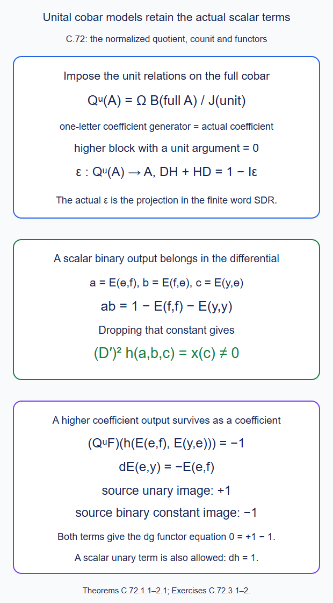
Theorems C.72.1.1–C.72.2.1 give the actual unital counit resolution and strict operator models with their full natural unit. Exercises C.72.3.1–C.72.3.2 compute the necessary scalar differential terms and coefficient-valued higher functor component. Editable SVG source.

C.73. Full transformation complexes under the normalized unit
Restriction along the canonical normalized cobar unit has an exact section and a contracted kernel on full transformation complexes. Its mixed horizontal homotopy keeps all degrees and higher source components. The resulting operator comparison has an exact projected horizontal law.
C.73.1. An exact section and the actual restriction kernel
Work over the split degree-zero coefficient categories of Section C.30.1. Let \(q:R\to A\) be a strict unital dg functor with identical object labels, graded-surjective quasi-isomorphisms on mappings, and a normalized unital \(A_\infty\) section \(j:A\to R\) with \(qj=\operatorname{Id}_A\). Put \(E=jq\). Theorem C.70.2.1 supplies a closed normalized full transformation
\[ \begin{gathered} u:\operatorname{Id}_R\longrightarrow E,\\ u_0=1,\\ qu=1_q,\quad uj=1_j. \end{gathered} \tag{C.73.1} \]
Here and below a subscript zero denotes the bare component at every object. In particular its units are the actual mapping identities. Let \(D\) be a dg target. Functors and transformations are uncurved and normalized unital; full Nat complexes include all source lengths.
Theorem C.73.1.1 (full source restriction with a contracted kernel). On any chosen labelled family of functors \(F:R\to D\), restriction
\[ \begin{gathered} r:\operatorname{Nat}(F,G)\\ \longrightarrow\operatorname{Nat}(Fj,Gj). \end{gathered} \tag{C.73.2} \]
is a graded-surjective quasi-isomorphism and part of an actual linear SDR. Its section preserves vertical products and identity transformations exactly. Its kernel, with the full Nat differential, has a square-zero contraction. These statements apply to the complete transformation complexes, without an augmentation of \(R\) or \(A\).
Proof. Precomposition by any entire \(A_\infty\) functor is a strict dg functor on full Nat categories: substitution of its consecutive bar partitions commutes with the differential and deconcatenation; the latter gives the vertical product. This is the one-empty-level case of Theorem C.69.2.1. All sums are finite on each original word.
Postcomposition on one mark gives closed transformations
\[ U_F=F_{*,1}(u):F\longrightarrow FE. \tag{C.73.3} \]
Their bare components are actual identities, since \(F_1(1)=1\) and a one-mark evaluation on the empty original source word has no other arguments. The positive-source-length remainder is locally nilpotent under vertical composition. Its finite geometric inverse therefore gives an actual closed full Nat inverse, as in Theorem C.70.2.1. The exact evaluation identity of Theorem C.69.2.1 and \(uj=1_j\) give \(U_Fj=1_{Fj}\), including every positive component.
For \(\psi:Fj\to Gj\) define
\[ \begin{gathered} s(\psi)\\ \quad=U_G^{-1}(\psi q)U_F,\\ rs=1,\qquad P=sr,\\ P\phi\\ \quad=U_G^{-1}(\phi E)U_F. \end{gathered} \tag{C.73.4} \]
The middle expression has source \(FE\) and target \(GE\), so all types match. Closedness of the two units proves the chain equation for \(s\). In the product of two such expressions the intervening \(U_GU_G^{-1}\) cancels exactly. Thus \(s\) preserves vertical products and identities. Restriction gives the identity because \(qj=1\) and both restricted units are identities. Consequently \(P\) is an actual dg projector.
We now construct the homotopy, rather than infer acyclicity of a whole Nat complex. For a homogeneous full cochain \(\phi:F\to G\) of degree \(r\), let \(K_r(\phi)\) be the one-output part of the entire horizontal map of Theorem C.69.2.1 on \(s\phi\otimes su\). It has degree \(r-1\). Its complete two-output part is
\[ \begin{gathered} s(\phi E)|sU_F\\ \quad+(-1)^{r-1}sU_G|s\phi. \end{gathered} \tag{C.73.5} \]
Indeed, the first cut keeps the two suspended marks in their original order; the second interchanges suspended degrees \(r-1\) and \(-1\). The input differential is \(s(d\phi)\otimes su\), since \(du=0\). The binary target bar sign on the first displayed word is \((-1)^{r-1}\); on the second it is \(-1\). Taking the one-letter part of the chain equation therefore gives
\[ \begin{gathered} dK_r(\phi)-K_{r+1}(d\phi)\\ \quad=(-1)^r\bigl((\phi E)U_F\\ \qquad-U_G\phi\bigr). \end{gathered} \tag{C.73.6} \]
This also proves the signs for cochains that are not closed, not just the degree-zero closed case of Lemma C.69.3.1. Define
\[ \begin{gathered} h_r(\phi)\\ \quad=(-1)^{r+1}\\ \qquad\cdot U_G^{-1}K_r(\phi),\\ dh+hd=1-P,\\ rh=0. \end{gathered} \tag{C.73.7} \]
The homotopy equation follows directly from (C.73.6). For the last equation, precompose its entire evaluation with \(j\). The inner parameter is now \(uj=1_j\). A mixed positive component with an identity parameter vanishes by the unit normalization proved in Theorem C.69.2.1. Equivalently, its one-output expression inserts that actual identity into a positive normalized Taylor component of \(\phi\), which is zero. Thus \(K_r(\phi)j=0\), proving \(rh=0\).
The subcomplex \(N=\ker r\) is stable under \(h\), and (C.73.7) restricts there to \(dh+hd=1_N\). This is the specific kernel that is contractible. Normalize its homotopy by \(H_N=hdh\). On \(N\), the equation implies \(dh^2=h^2d\); it also implies that \(dh\) and \(hd\) are idempotent. It follows by direct multiplication that
\[ \begin{gathered} dH_N+H_Nd\\ \quad=(dh)^2+(hd)^2\\ \quad=1_N,\\ H_N^2=h(dh^2d)h\\ \quad=0. \end{gathered} \tag{C.73.8} \]
Set \(H=H_N(1-P)\) on the whole Nat complex. Its image lies in \(N\); \(dH+Hd=1-sr\), \(H^2=0\), \(rH=0\), and \(Hs=0\). Together with \(rs=1\) these are the asserted SDR identities. Each operation uses the finite marked evaluation bound of Theorem C.69.2.1 and the finite inverse series above. Even an empty input piece for \(u_0\) causes no infinite sum: the number of marks here is fixed, and an inserted bare unit in a positive normalized Taylor component vanishes. Complete cochain products therefore cause no convergence assumption. This proves every assertion. \(\square\)
C.73.2. The entire normalized operator comparison
Write \(Q_A=Q^{\mathrm u}(A)\), with \(\epsilon_A\) and \(\iota_A\) from Theorems C.72.1.1 and C.72.2.1. For a native functor \(F:A\to B\) retain its labelled strict dg model \(QF:Q_A\to Q_B\).
Theorem C.73.2.1 (full operator lifts and the projected horizontal equation). On each such labelled operator category there is a normalized unital \(A_\infty\) map \(\mathcal Q_{A,B}\) whose object value is \(QF\). Restriction along \(\iota_A\) has a contracted full Nat kernel and satisfies the exact entire identities
\[ \begin{gathered} r_{A,B}\mathcal Q_{A,B}=(\iota_B)_*,\\ (\epsilon_B)_*r_{A,B}\mathcal Q_{A,B}=1. \end{gathered} \tag{C.73.9} \]
Horizontal substitution of these lifted operators has the exact restriction
\[ \begin{gathered} r_{A,C}M(\mathcal Q_{B,C}\otimes\mathcal Q_{A,B})\\ \quad=(\iota_C)_*M_{A,B,C}\\ \quad=r_{A,C}\mathcal Q_{A,C}M_{A,B,C}. \end{gathered} \tag{C.73.10} \]
Every expression here denotes its full bar map, so (C.73.10) retains all mixed parameter components. It does not assert that the two lifts before restriction are equal.
Proof. Apply Theorem C.73.1.1 to \(q=\epsilon_A\), \(j=\iota_A\), and target \(Q_B\). The hypotheses hold by Theorems C.72.1.1 and C.72.2.1; the relative unit (C.73.1) is the one constructed in Theorem C.70.2.1. The exact object equation \((QF)\iota_A=\iota_BF\) identifies the restriction objects. If two labels determine the same underlying functor, retain both labels; this makes no change to any mapping complex or proof.
Let \(s_{A,B}\) be the strict dg section of Theorem C.73.1.1 and define the entire operator map
\[ \mathcal Q_{A,B}=s_{A,B}(\iota_B)_*. \tag{C.73.11} \]
Postcomposition \((\iota_B)_*\) includes all its Taylor operations by Theorem C.69.2.1. Composing with a strict dg functor therefore yields the asserted normalized unital \(A_\infty\) map. The equation \(rs=1\) proves the first identity (C.73.9). The full counit-unit equation \(\epsilon_B\iota_B=1\) proves the second, using the exact full evaluation identity, not only its linear component.
To prove (C.73.10), evaluate on an original \(A\)-word and arbitrary consecutive words of both parameter levels. After restricting the innermost input along \(\iota_A\), the entire inner lifted evaluation is the \(B\)-evaluation followed by \(B\iota_B\), by (C.73.9). The outer lifted evaluation on that whole output is then the native outer evaluation followed by \(B\iota_C\), again by (C.73.9). The exact nested evaluation identity of Theorem C.69.2.1 identifies this with the middle expression of (C.73.10). One-output projection and cofree uniqueness give the equality on the entire parameter bar, with the same cuts and signs. The last equality is (C.73.9) for \((A,C)\), precomposed with native horizontal substitution. The object equation \((QG)(QF)=Q(GF)\) is exact by Theorem C.72.2.1, so both lifted mapping targets have the same types. Their possible differences consequently lie in the specific contracted restriction kernels of Theorem C.73.1.1. No acyclicity of an entire Nat space or automatic compatibility of independent face lifts was used. \(\square\)
C.73.3. Solved kernel calculations
Use the actual 19-dimensional bridge \(R\), 9-dimensional dg algebra \(G=\operatorname{End}(ke^0\oplus kf^{-1}\oplus ky^0)\), and \(df=y\) of Exercises C.68.5.1 and C.70.4.2. The bridge projection \(q:R\to G\), its higher section \(j\), and the relative unit \(u\) are their entire maps. For \(F=G=q\) as operator objects, \(U_q=1_q\). Thus the section in (C.73.4) is precomposition by \(q\), and its projector is precomposition by \(E=jq\). All scalar and ordinary identity outputs must be retained; normalization only quotients identity inputs.
Write \(S=(1,0,0)\), \(M_{ij}=(0,E_{ij},0)\), and \(Z_{ij}=(0,0,E_{ij})\) in this bridge, with the same order \(e,f,y\) as the target matrices. Its actual unit is
\[ \begin{gathered} 1_R=S+M_{ee}\\ \quad+M_{ff}+M_{yy}. \end{gathered} \tag{C.73.12} \]
Exercise C.73.3.1 (the actual kernel and an absolute cohomology class; advanced). In the quotient retaining normalized source inputs of length at most two, find the total dimensions of both full transformation spaces and the restriction kernel. Explain why this kernel result does not make the whole Nat complex contractible.
Solution. A graded complement to the bridge unit has the eighteen \(M_{ij},Z_{ij}\); normalization evaluates an \(S\) input as minus the sum of the three diagonal \(M\) inputs. A complement to the target unit has the eight matrix units other than \(E_{ee}\). In source inputs, \(E_{ee}\) evaluates as \(-E_{ff}-E_{yy}\). These choices only normalize inputs: all nine matrix outputs, including actual unit outputs, remain. The numbers of source words, including the empty word, are therefore \(1+18+18^2=343\) and \(1+8+8^2=73\). Thus
\[ \begin{gathered} \dim\operatorname{Nat}_{\leq2}(q,q)\\ \quad=3087,\\ \dim\operatorname{Nat}_{\leq2}(qj,qj)\\ \quad=657,\\ \dim\ker r_{\leq2}=2430. \end{gathered} \tag{C.73.13} \]
The last subtraction is justified by the exact section in (C.73.4), not by an assumption about numerical ranks. Substitution and the homotopy never require a positive cochain component longer than its current original input: the apparent extra letter from \(u_0\) is an actual unit and vanishes in a normalized positive input. Consequently the SDR descends to this finite length quotient. It contracts this entire 2430-dimensional kernel as a graded complex.
In contrast the bare identity transformation is a closed full cochain on both absolute spaces. The functional \(\beta(T)=T_{ee}\) is zero on every unary boundary in \(\operatorname{End}(V)\), since \(dV\) has only the entry \(f\mapsto y\), while \(\beta(1_V)=1\). The bare component of a full Nat boundary is such a unary boundary: the source bar of an empty word is zero and there is no uncurved positive-input term on it. The identity transformation is consequently not a full Nat boundary. This proves the asserted distinction for the entire spaces as well as their finite quotients. \(\square\)
Exercise C.73.3.2 (a higher unit component is needed in the contraction; advanced). Let the degree-one normalized cochain \(\phi:q\to q\) have only its length-one component, with \(\phi_1(M_{ee})=E_{ee}\), zero on the other seventeen chosen complement basis elements, and zero bare and higher components. Compute the contraction equation on \((M_{ef},M_{ye})\). Compare it with the formula that omits \(u_2\) while retaining \(u_0,u_1\).
Solution. Normalization and (C.73.12) give \(\phi_1(S)=-E_{ee}\). The previously calculated actual section and unit have values
\[ \begin{gathered} j_2(E_{ef},E_{ye})\\ \quad=-S-Z_{fy},\\ u_2(M_{ef},Z_{ye})\\ \quad=-S-Z_{fy},\\ d_RM_{ye}=-Z_{ye}. \end{gathered} \tag{C.73.14} \]
The first is the higher section value of Exercise C.71.2.2; the other two follow from Exercise C.70.4.2 and the bridge differential in Theorem C.68.3.1. Applying the first value to \(\phi\) gives \((P\phi)_2(M_{ef},M_{ye})=E_{ee}\). For the mixed homotopy, the second value, followed by \(\phi_1\), gives \((h\phi)_2(M_{ef},Z_{ye})=E_{ee}\). Its sign is positive in (C.73.7), since \(|\phi|=1\). All other terms contributing to the following displayed input vanish by their matrix indices. Set \(w=(M_{ef},M_{ye})\); the third value gives
\[ \begin{gathered} (dh\phi)_2(w)=-E_{ee},\\ (hd\phi)_2(w)=0,\\ ((1-P)\phi)_2(w)\\ \quad=-E_{ee}. \end{gathered} \tag{C.73.15} \]
These are the degree-one contraction equation on that input. If the mixed construction instead uses only \(u_0,u_1\), both left-hand terms at this input are zero. Its defect relative to \(1-P\) is then \(+E_{ee}\ne0\). Dropping a higher source component loses the actual homotopy, even though the bare unit is the identity and its projection under \(q\) is unchanged. The full kernel cochain is defined by \((1-P)\phi\); the few components displayed here are not a definition that truncates that cochain at all higher source lengths. \(\square\)
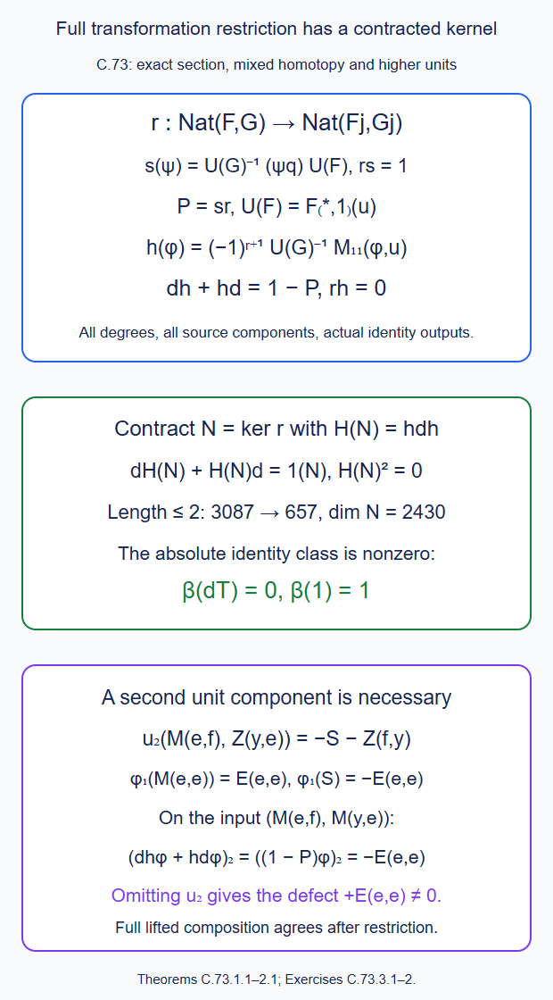
Theorem C.73.1.1 gives the full source-restriction SDR; Theorem C.73.2.1 gives the entire lifted operator comparison and its projected horizontal law. Exercises C.73.3.1–C.73.3.2 distinguish the actual kernel from the absolute transformation space and compute the necessary higher unit term. Editable SVG source.

C.74. Normalized tensor parameters and relative coherent cells
Full tensor bars give unital free parameter categories that retain the original unary generator complexes and all tensor cuts. Relative cube extensions through an actual contracted mapping kernel preserve entire compatible boundaries and already prescribed parameter faces.
C.74.1. The full tensor-parameter cobar
Let \(A_1,\ldots,A_m\) be unital dg categories over split degree-zero coefficient categories, as in Section C.30.1. Keep their literal product object labels. Put \(K=\bigotimes_i B_{\rm full}A_i\), using all ordinary mapping letters in each full bar, including units. A generator is a tuple \(c=(w_1,\ldots,w_m)\) of factor words, not all empty. Write \(N(c)=\sum_i\ell(w_i)\) and use the suspended degrees \(|sa|=|a|-1\). Empty factor words have degree zero.
In \(\Omega K\), impose the following ideal \(J\). A generator on a single coefficient letter in one factor is its actual coefficient, with the other factor identities understood. A generator of total length at least two with a coefficient argument in any factor is zero. Define
\[ T(A_1,\ldots,A_m)=\Omega K/J. \tag{C.74.1} \]
This notation refers to the parameter category, not an ordinary tensor product of the categories \(Q^{\mathrm u}(A_i)\).
Theorem C.74.1.1 (the normalized tensor-parameter category). The ideal is differential-stable. On its nonzero identity sector, \(T\) is a free relative graded category on the nonempty tuples of reduced factor words in \(A_i/S_i\), with one cobar desuspension for the entire tuple. Its generator differential is the full projected source-unary differential plus terms involving generators of strictly smaller total length, including the possible scalar constants. It therefore satisfies the nonminimal relative lifting hypotheses of Theorem C.46.2.1.
Full normalized unital factor functors induce strict dg maps of \(T\), retaining all their higher coefficient outputs where they survive the displayed relations. The maps compose exactly. Coordinate factor faces are included as actual differential-stable free-generator faces. Their compatible unions have the same property. For zero factors \(T\) is the coefficient category. No comparison with an ordinary tensor product is asserted by this theorem.
Proof. In target-to-source tensor order, write every factor cut as \(w_i=l_i|r_i\). The full cobar splitting term on \(c\) is
\[ \begin{gathered} -\sum_{l,r}(-1)^{|l|+\chi(l,r)}\\ \qquad\cdot(\mathsf t l)(\mathsf t r),\\ \chi(l,r)=\sum_{i<j}|r_i||l_j|. \end{gathered} \tag{C.74.2} \]
The sum includes all tuples of cuts except the two coaugmentation cuts; neither output tuple may be entirely empty. The second exponent is the actual interchange of the right part of an earlier factor with the left part of a later factor. The other part of the differential is the full tensor bar differential, with its preceding-factor sign. The two coalgebra identities for tensor deconcatenation prove that this cobar derivation squares to zero, by the same cut cancellation as C.39.4.
Here is the unit-ideal check, including the extra tensor case. Unary differentials of coefficient inputs vanish. Other unary terms retain that input and remain degenerate. Inside a factor word, two neighboring unit bar multiplications cancel, as in Theorem C.72.1.1. At its first position a unit's single neighboring bar term has coefficient \(-(-1)^a\), where \(a\) is the sum of the degrees of all preceding factor words. The cut isolating that unit on the left has coefficient \(+(-1)^a\) in (C.74.2), so the two terms cancel after \(\mathsf t(s1)=1\). At its last position let \(p\) be the degree of its remaining factor word. The neighboring bar term has coefficient \((-1)^{a+p}\); isolating the unit on the right has its negative. All cuts that retain a unit in a higher output tuple vanish modulo \(J\).
There remains the case that the unit is its factor's only letter, while some other factor word is nonempty. There is no neighboring bar term. The only potentially nondegenerate cuts isolate this single unit on one side and put all the other factor words on the other side. If \(b\) is their degree sum after the unit's factor, their two cobar coefficients are respectively \(+(-1)^a\) and \(-(-1)^{a+b+b}=-(-1)^a\). Their products agree by coefficient balancing, and cancel. This check also handles several unit factors, with any remaining degenerate output zero. If a length-two factor consists of two coefficients, its bar product cancels its coefficient cut product. Single-letter coefficient relations have zero differential. These cases cover every ideal generator, proving stability.
Choose graded coefficient-linear complements to each \(S_i\). Expanding each letter into its coefficient and complement parts shows that every remaining generator is exactly a tuple of reduced words; no additional graded relation involves these generators. The relative algebra on them is free. Its source-unary part is the tensor differential on the quotient complexes \(A_i/S_i\), with their full original unary maps. It squares to zero because each coefficient subspace is a closed subcomplex.
A reduced binary bar product lowers total length by one. A scalar binary output survives as a constant only when its entire tuple had two letters in that factor and all others empty; otherwise its coefficient argument is degenerate. A scalar unary output likewise survives as a constant only at total length one. Every proper tensor cut gives a product of two generators of smaller individual length. Thus the differential has exactly the filtered generator form of Theorem C.46.2.1, including the constants.
For factor functors, apply their entire bar maps and tensor them, including the tensor interchange signs. A coefficient input inside a longer Taylor piece gives zero; if isolated it gives a coefficient output. In a surviving multi-output tuple that output is degenerate. A single coefficient output from a higher Taylor piece can instead survive as an actual coefficient when all other factor words are empty. These are precisely the same unit relations as above, so the cobar map descends. Entire factor bar maps compose exactly; their tensor, cobar and quotient maps consequently do too.
Fixing all factor words outside a coordinate subset to be empty is a coalgebra inclusion and preserves all displayed relations. Its free generators are a subset of the reduced tuples. The unary differential keeps that subset; every other differential term lies in its generated algebra. The union for any family of coordinate subsets has the same properties, and its relative free algebra has no further relations between the faces. Compatible prescribed dg maps on those faces therefore give a dg map on their generated union. With no factors there are no positive generators. Zero-identity objects are treated by killing their identities and incident mappings, exactly as in Theorem C.72.1.1. This proves all the statements. \(\square\)
C.74.2. Full relative cubes through an actual mapping kernel
Let \(p:E\to D\) be a strict unital dg functor on a fixed object family, with graded-surjective mapping quasi-isomorphisms. Let its actual mapping kernel \(N(x,y)\) have a coefficient-linear contraction \(h_N\). The restriction map of Theorem C.73.1.1 is one such functor, with its explicit contraction; no acyclicity of absolute Nat is assumed.
Use the cohomologically graded interval coalgebra \(I\) of C.36: vertices \(v_0,v_1\) have degree zero, \(e\) has degree minus one, \(de=v_1-v_0\), and
\[ \begin{gathered} \Delta v_i=v_i\otimes v_i,\\ \Delta e=e\otimes v_1+v_0\otimes e,\\ \epsilon(v_i)=1,\quad\epsilon(e)=0. \end{gathered} \tag{C.74.3} \]
For \(n\geq1\), the full cube is \(I^{\otimes n}\), with its tensor coproduct, every cell and every ordinary face. Let \(\partial I^n\) be the span of all cells except \(e^{\otimes n}\). It is the union of the coordinate endpoint faces, and is a dg subcoalgebra. On each fixed mapping pair use the convolution differential and product on \(\operatorname{Hom}(I^n,E(x,y))\). In particular the product has the Koszul sign for moving the right cochain across the left coalgebra piece.
Let \(\mathcal E_n\) consist of pairs \((d,\phi)\) with \(d\in D(x,y)\) and \(p\phi=\epsilon(-)d\). Let \(\mathcal B_n\) have the same definition on \(\partial I^n\). Their object families are the fixed object labels of \(E\).
Theorem C.74.2.1 (relative coherent cell extension). Boundary restriction \(\mathcal E_n\to\mathcal B_n\) is a strict unital dg functor, graded-surjective and a quasi-isomorphism on each mapping complex. Its kernel is the actual complex below, where \(C_n=I^n/\partial I^n\):
\[ \begin{gathered} \operatorname{Hom}(C_n,N(x,y))\\ \qquad\cong N(x,y)[-n]. \end{gathered} \tag{C.74.4} \]
Postcomposition with \(h_N\) contracts it. Consequently a whole compatible cubical boundary of strict dg maps from the parameter category of Theorem C.74.1.1, with one common projected dg map, extends across the cube. The extension retains any already prescribed whole cube on compatible free-generator faces. It retains the complete source-unary complex and all constant terms, in every parameter degree.
Proof. The interval diagonal is a chain map: on \(e\), the two middle vertex terms cancel and the result is \(v_1\otimes v_1-v_0\otimes v_0\). Both iterated diagonals on \(e\) are \(e\otimes v_1\otimes v_1+v_0\otimes e\otimes v_1+ v_0\otimes v_0\otimes e\). This proves coassociativity and the vertex counit equations directly. Tensoring with the Koszul permutation proves the same identities for the full cube. Its differential replaces an \(e\) by vertices, and a diagonal of a boundary cell keeps its fixed vertex in both outputs. Thus its boundary is indeed a dg subcoalgebra.
Convolution is associative because the cube diagonal is coassociative; its Hom differential obeys the product rule because the diagonal is a chain map and the target composition obeys that rule. Its unit is the cube counit followed by the actual identity. The condition \(p\phi=\epsilon(-)d\) is stable under both differential and product, since \(p\) is strict dg and the counit is a coalgebra map to the coefficient field. This proves all dg assertions and boundary functoriality.
Every proper cube cell lies in a boundary face. Compatible boundary values therefore prescribe it exactly once, regardless of which face contains it. Extend a graded boundary cochain by value zero on the unique interior cell. Its projection there must be zero as well, since \(\epsilon(e^{\otimes n})=0\); so this is a graded lift in \(\mathcal E_n\). It need not be a chain lift yet. The kernel has zero boundary values and zero \(d\) component, and its remaining interior value lies in \(N\). This identifies it with (C.74.4). The quotient cube has one basis cell in degree \(-n\) and zero differential, proving the stated graded shift. For the standard cohomological shift differential, the actual chain isomorphism sends a degree-\(r\) cochain to \((-1)^{nr}\phi(e^{\otimes n})\); its sign in the next degree differs by \((-1)^n\), precisely the shift's differential sign. In Hom coordinates the differential is the target unary differential, so postcomposition with \(h_N\) gives the contraction. In standard shifted coordinates it is \((-1)^nh_N\), consistently with that chain isomorphism. The kernel is consequently acyclic, and graded surjectivity and this contraction prove the mapping quasi-isomorphism.
A supplied common projected functor and compatible boundary functors package into a strict dg map from \(T\) to \(\mathcal B_n\). Use the just proved surjective mapping quasi-isomorphism as the target projection in Theorem C.46.2.1. The free-generator and full unary hypotheses were proved in Theorem C.74.1.1. That theorem gives a strict dg lift to \(\mathcal E_n\), with exactly the supplied boundary and projection. If full cubes are already assigned on parameter faces, their compatible union is precisely the relative free-generator subcomplex proved in Theorem C.74.1.1; the relative clause of C.46.2.1 retains it. This constructs the entire cell, not only an edge or a primitive after forgetting its other boundary faces. \(\square\)
At dimension one the same signs have a concrete path form. If a degree \(r\) cochain has vertex values \(f=\phi(v_1)\), \(g=\phi(v_0)\), write \(a=(-1)^r\phi(e)\). Its formulas are
\[ \begin{gathered} D(f,g,a)\\ \quad=\bigl(df,dg,\\ \qquad-da+f-g\bigr),\\ (f_2,g_2,a_2)\\ \qquad\cdot(f_1,g_1,a_1)\\ \quad=\bigl(f_2f_1,g_2g_1,\\ \qquad a_2f_1\\ \qquad+(-1)^{r_2}g_2a_1\bigr). \end{gathered} \tag{C.74.5} \]
Here \(r_2\) is the degree of the second path. These formulas follow by evaluating the differential and the two terms of \(\Delta e\); they agree with the identity-comparison path convention of Section C.53.4. In these regraded path coordinates the kernel contraction on \(a\) has the sign \(-h_N\), rather than an unjustified positive sign.
C.74.3. Solved unit and path calculations
Exercise C.74.3.1 (an isolated factor unit needs both tensor cuts; advanced). Take two copies of the actual unaugmented dg algebra \(A=\operatorname{End}(ke^0\oplus kf^{-1}\oplus ky^0)\), with \(df=y\). Let \(a=E_{ye}\), so \(|a|=0\) and \(da=0\). Compute the differential of the degenerate parameter generator \(z=\mathsf t(s1\otimes sa)\). Explain what fails if only one of its nontrivial tensor cuts is retained.
Solution. There are no unary or binary bar terms on these two one-letter factor words. In the tensor coproduct the two nontrivial terms are
\[ \begin{gathered} (s1\otimes1)\otimes(1\otimes sa),\\ -(1\otimes sa)\otimes(s1\otimes1). \end{gathered} \tag{C.74.6} \]
The minus sign interchanges two suspended degree-minus-one letters. Both left output tuples have degree minus one, so the additional cobar coefficient \(-(-1)^{|l|}\) is positive. After the single unit generator is identified with the coefficient, the two products consequently give
\[ \begin{gathered} Dz=\mathsf t(1\otimes sa)\\ \quad-\mathsf t(1\otimes sa)=0. \end{gathered} \tag{C.74.7} \]
This is required because the normalized relation itself sets \(z=0\). Keeping either cut alone gives a nonzero generator, with one of the two signs. That clipped differential does not preserve the defining unit ideal. The cancellation concerns actual ordinary identity outputs; it does not authorize deleting one of the tensor cuts before normalization. \(\square\)
Exercise C.74.3.2 (an actual relative path and its kernel sign; advanced). Use the actual 19-dimensional bridge \(R\to\operatorname{End}(V)\) of Section C.68.5, with \(S,M_{ij},Z_{ij}\) as in Exercise C.73.3.2. Let \(b=Z_{ee}\) and \(c=S+Z_{fy}\). Construct a relative dg path between the maps from the free unital dg algebra \(k\langle x\rangle\), \(|x|=1\), \(dx=0\), that send \(x\) respectively to \(b\) and zero. Also contract the closed path-kernel element with third coordinate \(b\).
Solution. The bridge formulas give
\[ \begin{gathered} |b|=1,\quad |c|=0,\\ db=0,\quad dc=b,\\ q(b)=q(c)=0,\\ h_N(b)=c. \end{gathered} \tag{C.74.8} \]
Indeed \(dS=Z_{ee}+Z_{ff}+Z_{yy}\) and \(dZ_{fy}=-Z_{ff}-Z_{yy}\). The kernel contraction in Theorem C.68.3.1 has the displayed value, also calculated in Exercise C.70.4.2. Map the free generator to the degree-one path
\[ x\longmapsto(b,0,c). \tag{C.74.9} \]
Its differential is \((0,0,-dc+b)=0\) by (C.74.5), so extension by products is a strict unital dg functor on the entire free algebra. Both endpoint projections to the quotient are zero, and the path is relative there too. In interval Hom coordinates its values are \(b\) at \(v_1\), zero at \(v_0\), and \(-c\) at \(e\); these obey the entire Hom differential. Omitting \(c\) leaves the nonzero third defect \(b\).
The separate kernel element \(k=(0,0,b)\) has degree two. Its contracted primitive is \((0,0,-c)\), of degree one, since its path differential is \((0,0,dc)=k\). A positive \(c\) would instead differentiate to \(-k\). This verifies the negative kernel-contraction sign in the path coordinates, while the un-regraded cube Hom contraction remains ordinary postcomposition with \(h_N\). \(\square\)
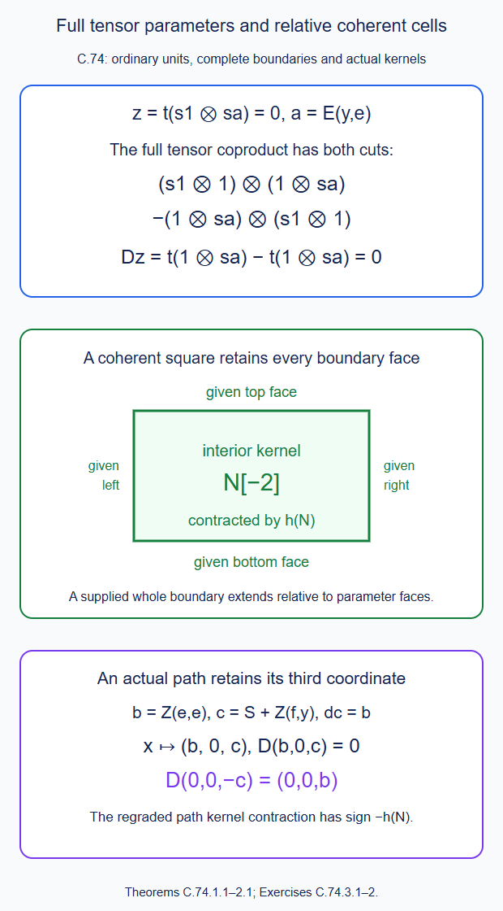
Theorem C.74.1.1 constructs the normalized full tensor-parameter category; Theorem C.74.2.1 extends compatible relative cube boundaries through an actual contracted mapping kernel. Exercises C.74.3.1–C.74.3.2 calculate the isolated-unit cancellation and the actual path contraction sign. Editable SVG source.

C.75. Actual normalized tensor comparison
The normalized tensor-parameter category maps to the tensor of the actual unital resolutions by a graded-surjective quasi-isomorphism with a finite kernel contraction. Its full shuffle gives a second quasi-isomorphism to the unital resolution of the tensor, with the actual counit square.
C.75.1. The normalized Milgram projection without augmentations
Let \(A,B\) be unital dg categories over the split coefficients of Section C.30.1. Write \(Q_A=Q^{\mathrm u}(A)\) and \(T=T(A,B)\) for the actual normalized models of Theorems C.72.1.1 and C.74.1.1. All tensor products keep their literal ordered object and matrix labels.
Define \(\rho:T\to Q_A\otimes Q_B\) on a generator \(\mathsf t(w_A\otimes w_B)\) by its pure-factor value when exactly one word is nonempty, and by zero when both are nonempty. Extend by the actual graded tensor product, with the other factors' coalgebra counits. These are the counits of the full bar coalgebras, which exist without augmentations of the original dg categories.
Theorem C.75.1.1 (the actual binary tensor projection). The map \(\rho\) is a strict unital dg functor, graded-surjective and a quasi-isomorphism on every mapping complex. Its actual kernel has a normalized linear contraction finite on each original reduced-letter word. The projection is strictly natural for full normalized unital factor functors, where their strict models on the right are \(QF\otimes QG\).
Proof. For a pure generator, the chain equation is the ordinary factor cobar equation. On a mixed generator every unary or bar-product term remains mixed, or is killed by its coefficient-input relation. The only cut products whose projection can be nonzero put the entire first word on one side and the entire second word on the other. Their coefficients in equation (C.74.2) are \(-(-1)^{|w_A|}\) and \(-(-1)^{|w_B|+|w_A||w_B|}\). Reordering their pure cobar generators in the graded tensor target contributes \((-1)^{(|w_A|+1)(|w_B|+1)}\) to the latter. Thus the two resulting coefficients are opposite. This proves the full chain equation on mixed generators. Single coefficient generators have the actual coefficient image, and higher unit-degenerate generators have zero image, so the map descends through the normalized relations. Every product of pure-factor generators in the target has a preimage, proving graded surjectivity. More precisely, the linear section \(s_\rho\) puts all first-factor cobar blocks before all second-factor blocks. The derivation rule on this ordered word is exactly the tensor differential, including scalar outputs in either factor. Thus \(s_\rho\) is an actual linear chain section and \(\rho s_\rho=1\). This statement concerns a linear section; no multiplicativity of this chosen normal ordering is required.
For the quasi-isomorphism, retain the original reduced-letter counts \((p,q)\). Let \(D_0\) keep source-unary terms on the quotient complexes and all cobar cuts, on both sides. Bar products and scalar outputs are the remaining perturbation \(\delta\). The projection preserves these counts and intertwines the leading differentials. We prove its leading quasi-isomorphism with the full unary complexes present.
Fix the ordered original factor words. A source cobar word with \(k\) blocks is exactly a strict chain of \(k-1\) interior grid points between \((0,0)\) and \((p,q)\) in the coordinatewise ordered grid. A block records the nonzero monotone step between consecutive points. Every factor letter appears in its original order. Refining a step adds one interior point; these are exactly the leading cobar cuts.
Here are explicit signs for that grid identification. In block \(i\) let \(a_i,b_i\) be its suspended first and second factor words. Set \[ \begin{gathered}\pi=\sum_{i<j}|b_i||a_j|,\\ \lambda=(-1)^{\pi+k-1+\sum_vd(v)},\end{gathered} \tag{C.75.1} \] where the sum is over internal chain vertices, and \(d(v)\) is the degree of the original suspended factor prefixes ending there. Rescale the chain's source basis by \(\lambda\). Inserting a vertex into step \(i\), numbered from zero, changes this exponent by \(1+d(v)+\chi\), with \(\chi\) the tensor-cut interchange exponent of equation (C.74.2). The actual cut coefficient is \((-1)^{1+i+d(v)+\chi}\). After rescaling it is therefore exactly \((-1)^i\), the augmented order-complex coboundary sign.
The unary terms also have an explicit transformed sign. Before rescaling, differentiating an original letter has the sign of all preceding interleaved suspended letters, plus the number of preceding cobar blocks. The change in \(\pi\) converts the first part to the sign in the original first-word-then-second-word tensor order. The change in \(\sum_vd(v)\) counts the internal vertices after its block. Adding that count to the preceding block count gives \(k-1\). Thus the transformed unary operator is \((-1)^{k-1}d_{\rm orig}\). The augmented order cochain degree is \(k-2\). Consequently this is the tensor differential of the finite augmented grid-order cochains with the original letter complex equipped with \(-d_{\rm orig}\), followed by the cohomological shift \([-2]\). The shift is even and does not change the differential sign. A contraction on the first factor therefore anticommutes with the entire original unary operator. No assumption of zero unary differential is used here.
Suppose \(p\geq2\). In the proper grid poset choose \(a=(1,0)\) and the closure \(c(v)=\max(v,a)\). Its value is never the excluded top: increasing a first coordinate from zero to one cannot make that coordinate \(p\). Its value is not the bottom either. The order maps satisfy \(\operatorname{Id}\leq c\) and \(\operatorname{const}_a\leq c\).
For completeness, if order maps \(f\leq g\) are comparable, their chain prism on a strict simplex is the alternating sum \[ \begin{gathered}P(f,g)(\sigma)\\ \quad=\sum_i(-1)^i\tau_i,\\ \sigma=[v_0<\cdots<v_t],\\ \tau_i=[fv_0\leq\cdots\leq fv_i\\ \qquad\leq gv_i\leq\cdots\leq gv_t],\end{gathered} \tag{C.75.2} \] with repeated-vertex terms set to zero. The inequalities hold because the maps preserve order and \(f\leq g\). In its boundary, deleting a vertex away from the seam cancels the corresponding prism of the boundary; deleting a seam vertex cancels the neighboring seam, except for the two end terms. Hence \(\partial P+P\partial=g_*-f_*\). This includes the augmented empty simplex, on which the prism is zero. Let \(Q\) send that empty simplex to \([a]\) and all other basis simplices to zero. Directly \(\partial Q+Q\partial=(\operatorname{const}_a)_*\). Therefore \[ \begin{gathered}Q-P(\operatorname{Id},c)\\ \quad+P(\operatorname{const}_a,c).\end{gathered} \tag{C.75.3} \] contracts the full augmented chain complex. Dualize this finite poset, tensor with the original letter complex and conjugate the preceding sign rescaling. This contracts the actual leading source block, including unary terms. If \(q\geq2\), interchange the coordinates and use \((0,1)\) instead.
The target leading block is the tensor product of the two original-word cut complexes. If either count is at least two, its factor is contracted by the first-boundary homotopy of Theorem C.72.1.1. Tensoring that homotopy with the other factor, with its differential signs, contracts the whole target block. Thus the leading projection is a quasi-isomorphism in these cases, and its surjective mapping kernel is acyclic.
If \(p=0\) or \(q=0\), the projection on the entire block is just the corresponding single-factor identity. The only remaining case is \(p=q=1\). The proper grid has two incomparable vertices. Its augmented cochains are \(k\to k^2\), with diagonal differential, tensored with the original two-letter complex as above. The target has one copy of that original complex. Explicitly the source mixed generator satisfies \[ \begin{gathered}D_0\mathsf t(sa\otimes sb)\\ \quad=(-1)^{|a|}\bigl(x_ay_b\\ \qquad-(-1)^{|a||b|}y_bx_a\bigr).\end{gathered} \tag{C.75.4} \] The two ordered products project respectively to \(x_a\otimes y_b\) and \((-1)^{|a||b|}x_a\otimes y_b\). Under the displayed source rescaling and the target rescaling \((-1)^{|a|}\), their map is the difference \(k^2\to k\). Its kernel is the image of the diagonal, contracted by its inverse from that image to the augmented copy of \(k\). The rescaled source and target unary differential is the same \(-d_{\rm orig}\). This contraction therefore includes the full unary terms. It proves the leading quasi-isomorphism in the last case.
For the short exact sequence used above, the kernel of a surjective chain map between acyclic complexes is acyclic directly: a kernel cycle has a source primitive; its image is a target cycle; lift a target primitive and subtract its differential from the source primitive. This gives a kernel primitive. Choose coefficient-linear normalized contractions on these actual leading kernels, separately at every original \((p,q)\), using the splitting argument of Section C.30.1. The scalar block has zero kernel. These choices preserve total original count.
The actual \(\rho\) still has this same graded kernel. The binary bar products, scalar binary outputs, and scalar unary outputs strictly lower total original count, exactly as in Theorem C.74.1.1. Since both full and leading projections are chain maps, their difference preserves the kernel. If \(H_0\) is the chosen leading kernel contraction, the actual kernel contraction is the finite perturbation \[ \begin{gathered}H\\ \quad=H_0(1+\delta H_0)^{-1}.\end{gathered} \tag{C.75.5} \] Every further factor strictly lowers the original count, so the series terminates on every input. Lemma C.35.1.1 proves the contraction and its normalized side conditions. The actual kernel is therefore acyclic; together with graded surjectivity, this proves the claimed mapping quasi-isomorphism of \(\rho\). Applying its contraction to \((1-s_\rho\rho)\) also gives the full linear mapping SDR with that actual section.
Finally, factor bar functors never send a nonempty word to the coalgebra coaugmentation: even a coefficient output is an ordinary one-letter bar output. Hence a mixed generator stays mixed before normalization and projects to zero on both sides of the naturality equation. A pure-factor generator has exactly its \(QF\) or \(QG\) image. Coefficient outputs and all their actual unit relations were already checked. Extending by products proves exact naturality for the entire factor functors. Zero-identity objects are treated as in Theorem C.72.1.1. \(\square\)
C.75.2. The strict shuffle common-input span
Theorem C.75.2.1 (the actual unital tensor span). The full tensor-bar shuffle induces a strict unital dg functor \[ \begin{gathered}\zeta:T(A,B)\\ \quad\longrightarrow Q^{\mathrm u}(A\otimes B).\end{gathered} \tag{C.75.6} \] It is a mapping quasi-isomorphism, and its exact actual counit square is \[ \begin{gathered}\epsilon_{A\otimes B}\zeta\\ \quad=(\epsilon_A\otimes\epsilon_B)\rho.\end{gathered} \tag{C.75.7} \] Thus \(T(A,B)\) is a common input for the two actual unital tensor models, with the given literal object labels. The shuffle side need not be graded-surjective. This span is strictly natural for strict dg factor maps; no tensor product of general \(A_\infty\) functors is inferred.
Proof. Embed a first-factor bar letter as \(s(a\otimes1)\) and a second-factor letter as \(s(1\otimes b)\), and sum their ordered shuffles with the suspended Koszul signs. The adjacent unequal-factor bar products cancel in pairs using the graded commutation in \(A\otimes B\); equal-factor bar products and unary terms give the original factor differentials. Cutting a shuffle is the same as first choosing a cut in each factor and then shuffling both pieces, with the tensor interchange sign. These are precisely the chain and coalgebra calculations of Section C.39.3, and do not use algebra augmentations or positive mapping degrees. Thus the actual full shuffle is a chain coalgebra map here as well.
A coefficient input becomes a global coefficient letter. On a generator of total length at least two, each shuffled word containing that argument is therefore a higher unit-degenerate generator in the target \(Q\), and is zero. A single coefficient generator becomes its actual coefficient. Cobar of the shuffle therefore descends to the stated strict unital dg map.
Check its counit on the original free generators. A single pure letter maps to the corresponding \(a\otimes1\) or \(1\otimes b\) on both sides. At higher total length the shuffle gives words of that same length, whose one cobar block has zero counit. On the other side a mixed generator has zero \(\rho\), and a pure higher block has zero factor counit. Coefficients agree. Extending by products gives the entire exact square, including all scalar products in the differentials.
The actual factor counits are mapping quasi-isomorphisms by Theorem C.72.1.1, and their tensor is one by the split tensor contractions of C.30.1. Theorem C.75.1.1 therefore makes the right-hand composite a quasi-isomorphism. The target counit \(\epsilon_{A\otimes B}\) is also one by Theorem C.72.1.1. Applying these two invertible maps on mapping cohomology proves that \(\zeta\) is a quasi-isomorphism. Finally the original shuffle, coefficient relations and counits commute with strict dg factor maps on every original letter; their full maps and the quotient span consequently do so as well. For example, if each factor has a nonzero reduced mapping \(a,b\), the target has the independent one-letter generator \(x_{a\otimes b}\) in its mixed reduced tensor summand. Every letter in every shuffled image instead belongs to one of the two pure axis summands. Freeness of the normalized graded target makes that mixed generator absent from the image. This proves the stated lack of a general graded-surjectivity conclusion. \(\square\)
C.75.3. Solved tensor calculations
Exercise C.75.3.1 (the kernel size and an odd commutator; advanced). For two copies of \(A=\operatorname{End}(ke^0\oplus kf^{-1}\oplus ky^0)\), \(df=y\), determine the source, target and kernel dimensions at total original rank at most three. Set \(a=E_{ef}\) in each factor, let \(X=\mathsf t(sa\otimes1)\), \(Y=\mathsf t(1\otimes sa)\), and \(z=\mathsf t(sa\otimes sa)\). Compute the differential, kernel primitive and full shuffle image associated to \(XY+YX\).
Solution. Each factor has eight reduced basis letters. At positive total rank \(r\), the source has \((r+1)8^r\) generators, according to the two factor lengths. Thus its generator counts at ranks one, two and three are \(16,192,2048\). Free products give the full word counts \(1,16,448,12288\). A single factor's normalized cobar word counts are \(1,8,128,2048\), since the \(r-1\) internal boundaries can each be present or absent. The target tensor therefore has word counts \(1,16,320,6144\). The exact graded section gives
\[ \begin{gathered}\dim T_{\leq3}=12753,\\ \dim(Q_A\otimes Q_A)_{\leq3}\\ \quad=6481,\\ \dim(\ker\rho)_{\leq3}=6272.\end{gathered} \tag{C.75.8} \]
The differential and kernel contraction retain this finite total-rank subcomplex, so the actual kernel SDR applies to all these kernel vectors. This dimension calculation alone is not the proof of its acyclicity.
Here \(|a|=1\) and \(da=0\). Its suspension has degree zero. The two full tensor cuts give
\[ \begin{gathered}Dz=-XY-YX,\\ \rho(XY)=x_a\otimes x_a,\\ \rho(YX)=-x_a\otimes x_a.\end{gathered} \tag{C.75.9} \]
Thus the degree-two kernel cycle \(XY+YX\) has the actual primitive \(-z\). The minus sign is the factor \((-1)^{|a|}\) in the mixed cut calculation, not an unsigned commutation rule. If \(u=a\otimes1\) and \(v=1\otimes a\), its entire shuffle value is
\[ \begin{gathered}\zeta(z)=\mathsf t(su|sv)\\ \quad+\mathsf t(sv|su).\end{gathered} \tag{C.75.10} \]
The two coefficients are positive because both suspended input degrees are zero. The target binary bar products cancel, since \(uv=-vu\), while its cut terms are exactly the images of \(-XY-YX\). Both shuffle terms are therefore part of the actual chain equation. \(\square\)
Exercise C.75.3.2 (a scalar product remains in the tensor differential; advanced). In the first copy of that algebra take \(a=E_{ef}\), \(b=E_{fe}\); in the second take \(c=E_{ye}\). Write \(h_{u,v}=\mathsf t(su|sv)\) in the first normalized factor and \(y_c=\mathsf t(sc)\) in the second. Compute \(D(h_{a,b}\otimes y_c)\), including the original unary differential, and check its actual counit.
Solution. Matrix multiplication and the original differential give
\[ \begin{gathered}da=dc=0,\quad db=c,\\ ab=1-E_{ff}-E_{yy}.\end{gathered} \tag{C.75.11} \]
The first suspension has degree zero. Hence the first-factor two-letter generator, of degree minus one, has differential
\[ \begin{gathered}Dh_{a,b}=h_{a,c}+1\\ \quad-x_{E_{ff}}-x_{E_{yy}}\\ \quad-x_ax_b.\end{gathered} \tag{C.75.12} \]
Since \(Dy_c=0\), the actual tensor differential is
\[ \begin{gathered}D(h_{a,b}\otimes y_c)\\ \quad=h_{a,c}\otimes y_c\\ \qquad+1\otimes y_c\\ \qquad-x_{E_{ff}}\otimes y_c\\ \qquad-x_{E_{yy}}\otimes y_c\\ \qquad-(x_ax_b)\otimes y_c.\end{gathered} \tag{C.75.13} \]
Its counit is zero: the higher block has zero counit and the remaining coefficient is \((1-E_{ff}-E_{yy}-ab)\otimes c=0\). This agrees with the counit of \(h_{a,b}\otimes y_c\), which is zero. If the scalar product output were omitted, the displayed derivative would instead have counit \(-1\otimes c\ne0\). It would fail the actual counit chain equation. The source's scalar bar term can vanish inside a mixed higher generator through unit degeneration, while this scalar term in a product of pure-factor blocks still survives. The normalized quotient and tensor projection preserve precisely that distinction. \(\square\)
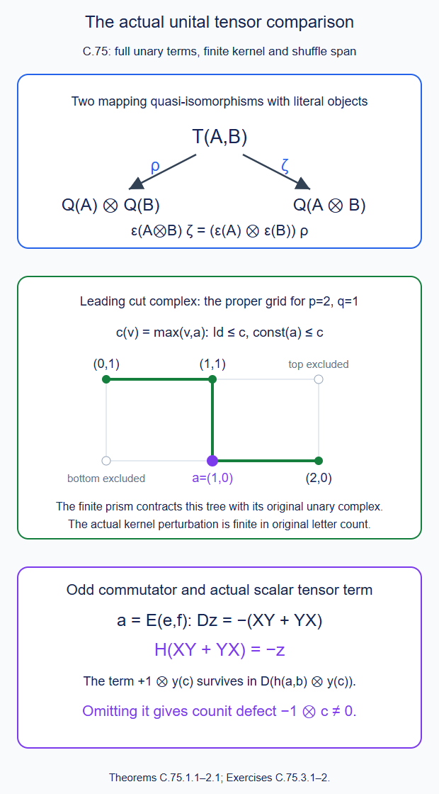
Theorem C.75.1.1 gives the actual normalized tensor projection and its contracted kernel; Theorem C.75.2.1 gives the full shuffle span and exact counit square. Exercises C.75.3.1–C.75.3.2 compute the odd commutator, actual finite kernel dimensions and surviving scalar tensor term. Editable SVG source.

C.76. Finite-factor tensor comparisons and ordered cuts
Every finite ordered family has a common normalized tensor input. Its projection, full multishuffle and regrouping squares retain all unit and unary terms. One finite contraction commutes with every ordered cut, so all intermediate tensor kernels inherit compatible primitives.
C.76.1. All finite factors and one contraction for every ordered cut
Let \(A_1,\ldots,A_m\) be unital dg categories over the split coefficients of Section C.30.1. Put \(T_m=T(A_1,\ldots,A_m)\), as in Theorem C.74.1.1. Keep their literal object tuples and their original factor mapping words. Define \(\rho_m:T_m\to\bigotimes_iQ^{\mathrm u}(A_i)\) on a free generator by its pure-factor value if exactly one factor word is nonempty, and by zero otherwise. The products use the actual graded tensor signs.
More generally, for an ordered partition \(\pi=(I_1|\cdots|I_r)\) into nonempty consecutive blocks write \(T_{I_j}=T(A_i:i\in I_j)\) and define \[ \begin{gathered}\kappa_\pi:T_m\\ \quad\longrightarrow\bigotimes_jT_{I_j}.\end{gathered} \tag{C.76.1} \] It keeps a generator in its single supporting group and kills it if its nonempty factor words meet two groups. Let \(s_\pi\) be the linear section that orders the group blocks consecutively, and set \(P_\pi=s_\pi\kappa_\pi\). For an elementary cut \(c\) write \(P_c\). A partition can be specified by its set \(C\) of cuts.
Theorem C.76.1.1 (finite-factor resolution with simultaneous cut contraction). The maps \(\rho_m\) and every \(\kappa_\pi\) are strict unital dg functors, graded-surjective and mapping quasi-isomorphisms. Their linear sections are actual chain sections. The cut projections satisfy \[ \begin{gathered}P_CP_D=P_DP_C\\ \quad=P_{C\cup D}.\end{gathered} \tag{C.76.2} \] Successive refined \(\kappa\) regroupings are exactly the direct finer regrouping, under the stated ordered tensor identifications.
There is one normalized linear mapping SDR for \(\rho_m\), finite on every original factor word, whose homotopy commutes with every \(P_C\). Its restriction contracts each actual \(\ker\kappa_\pi\). The canonical projection and regrouping maps are strictly natural for entire normalized unital factor functors. No naturality of an arbitrary auxiliary contraction under unrelated factor functors is asserted. At zero factors the maps are coefficient identities; at one factor \(\rho_1\) is the identity of the normalized unital resolution.
Proof. The chain calculation for \(\rho_m\) is the same mixed-cut calculation as in Theorem C.75.1.1. A cut can have two nonzero projected outputs only if the generator's support lies in two factors. Those two orientations cancel with the tensor interchange sign. With three or more nonempty factors at least one cut output is mixed and projects to zero. Pure generators have their ordinary factor differential. The same argument with group coalgebra degrees proves that every \(\kappa_\pi\) is a dg functor. The unit relations descend by Theorem C.74.1.1: a higher unit input is either mixed and killed or remains degenerate in its one group. The normal ordered group lift is a graded section. Its differential is exactly the tensor derivation differential on those groups, including scalar outputs. Thus it is also a linear chain section.
Here is the leading quasi-isomorphism for arbitrary \(m\). Retain all original reduced-letter counts \(\mathbf p=(p_1,\ldots,p_m)\). Keep the full quotient-unary differential and every cobar cut as \(D_0\). For fixed ordered factor words, a cobar word with \(k\) blocks is a chain of \(k-1\) proper interior vertices in the product grid \(\prod_i[0,p_i]\). The endpoints are the zero and full count tuples. All monotone nonzero steps are retained, including simultaneous steps.
Write \(w_{j,i}\) for the suspended word in block \(j\), factor \(i\). The permutation taking the original factor order to the block order has Koszul exponent \[ \begin{gathered}\Pi=\sum_{j<\ell}\sum_{u>v}\\ \qquad|w_{j,u}||w_{\ell,v}|.\end{gathered} \tag{C.76.3} \] Rescale a source chain by \[ \begin{gathered}\lambda=(-1)^{\Pi+k-1+\nu},\\ \nu=\sum_xd(x),\end{gathered} \tag{C.76.4} \] where \(d(x)\) is the suspended original prefix degree at each internal vertex. Cutting a block changes \(\Pi\) by the tensor-cut exponent \(\sum_{i<j}|r_i||l_j|\). The additional vertex changes the rest of the exponent by \(1+d(x)\). Exactly as in Theorem C.75.1.1, the resulting cut coefficient is the ordinary order-cochain insertion sign. On a unary term the permutation sign restores the original factor order and the prefix-degree change counts the later vertices; with the preceding block count their total is \(k-1\). Thus the entire leading source block is the finite augmented grid-order cochain complex tensored with the original factor-letter complex equipped with minus its unary differential, followed by the even shift \([-2]\). This identifies the full unary complex, rather than only its graded letters.
If some \(p_i\geq2\), choose the atom with coordinate one in that position and zero elsewhere. Joining a proper vertex with that atom never reaches the top. The identity and constant-atom order maps are both below this closure. The explicit prism of Theorem C.75.1.1 therefore contracts the proper grid's augmented complex, with the full original unary terms after the displayed rescaling. The target's corresponding leading tensor block is contracted by the first-boundary contraction in that factor, with the preceding factor tensor signs. Both blocks are acyclic.
It remains to examine profiles with every \(p_i\) zero or one. Ignore only the inactive grid coordinates in this calculation; their actual coefficient object labels are still retained in the category. If \(s\) coordinates are active, the proper grid is the poset \(\mathcal P_s\) of nonempty proper subsets of \(\{1,\ldots,s\}\). Its augmented cochain complex has one-dimensional cohomology in degree \(s-2\), and no other cohomology. The following finite induction proves this fact.
For \(s=1\) the poset is empty and its augmented chain complex is the coefficient field in degree minus one. For \(s\geq2\), remove the coatom \(b=\{1,\ldots,s-1\}\). The remaining poset contracts by adjoining the atom \(\{s\}\): its join can be the top only at the removed coatom. This is again the explicit comparable-order-map prism of C.75.1. The relative augmented chains of the full poset modulo this contracted subcomplex consist exactly of \([\sigma|b]\), where \(\sigma\) is an augmented chain in \(\mathcal P_{s-1}\), including its empty chain. The boundary deleting \(b\) lies in the removed subcomplex, and the other boundary terms are \([\partial\sigma|b]\). Thus relative homology is that of \(\mathcal P_{s-1}\) one degree higher. A standard shifted chain convention inserts the degree sign; the displayed relative boundary formula specifies it without ambiguity. Quotienting by an acyclic subcomplex preserves homology: lift a quotient cycle, correct its boundary in the acyclic subcomplex, and use the same primitive argument for boundaries. This direct argument proves the induction. Dualizing the finite chain spaces proves the stated cohomology.
The leading projection is its orientation functional on maximal chains. Such a chain is a permutation \(\sigma\) of the \(s\) active factors, added one at a time. Its two Koszul exponents, from suspended block order and unsuspended tensor order, together with the prefix rescaling give \[ \begin{gathered}\operatorname{sgn}(\sigma)\Theta,\\ \Theta=(-1)^\eta,\\ \eta=s-1\\ \quad+\sum_i(s-i)(|a_i|-1).\end{gathered} \tag{C.76.5} \] To verify this sign, interchange two adjacent added factors. The two Koszul exponents change by \(|a|+|b|+1\) modulo two, and the prefix sum changes by \(|a|+|b|\). Their total changes by one. For the identity order the overall sign is the displayed \(\Theta\), proving the formula for every permutation. Rescale the target by \(\Theta\). Its unary sign at factor \(i\) is the original unsuspended tensor sign plus \(s-i\), which equals the top source sign \((-1)^{s-1}d_{\rm orig}\) at that position. The functional therefore has the full unary compatibility as well.
This signed maximal-chain functional kills a cochain boundary: the two refinements at a missing maximal-chain vertex differ by an adjacent transposition and cancel. It takes value one on the identity-order top cochain. Since the cohomology of the finite poset complex is one-dimensional in precisely that degree, the functional is a quasi-isomorphism to that line. Its finite split kernel contraction tensors with the original full letter complex. This proves the leading projection's quasi-isomorphism also in these profiles. The all-zero profile is the actual coefficient identity, handled separately.
For each ordered partition, the exact identity on generators is \[ \begin{gathered}(\bigotimes_j\rho_{I_j})\kappa_\pi\\ \qquad=\rho_m.\end{gathered} \tag{C.76.6} \] With the leading differentials, the target tensor of group projections is a quasi-isomorphism by the preceding arbitrary-grid argument and the split tensor contractions of C.30.1. The displayed equation consequently proves the leading quasi-isomorphism of \(\kappa_\pi\). Its leading mapping kernel is therefore acyclic, with full unary terms retained. The actual quasi-isomorphisms will follow from the simultaneous perturbed kernel contraction below; they are not assumed in this leading step.
We now arrange one contraction for all cuts. On a free cobar word, \(P_C\) kills it unless every generator's support lies wholly in one \(C\)-block. On the survivors it stably sorts those generators by their ordered block, with the Koszul sign of that permutation. Applying two ordered sorts kills precisely the generators crossing either cut set and then gives the unique stable sort for the common finer blocks. Each pair that needs interchanging is interchanged once; the product of its degree signs is therefore the same in either order. This proves \(P_CP_D=P_{C\cup D}\), including coefficient balancing. The same single-support generator test proves exact successive \(\kappa\) regrouping on generators; the dg tensor products extend it to all words.
The elementary commuting chain idempotents split each leading original profile into their finite joint sectors \[ \begin{gathered}E_J=\prod_{c\in J}(1-P_c)\\ \qquad\cdot\prod_{c\notin J}P_c.\end{gathered} \tag{C.76.7} \] They are orthogonal, sum to the identity and commute with \(D_0\). Their nonempty \(J\) sectors sum to the kernel of the finest projection, which is the actual graded kernel of \(\rho_m\). Any such sector is a chain direct summand of some acyclic \(\ker P_c\), and hence is acyclic: project a primitive in that kernel by \(E_J\). Choose a coefficient-linear normalized contraction separately on every such full unary sector and original profile, by C.30.1. Their sum \(H_0\) commutes with every \(P_c\) and preserves the original counts.
The remaining binary, scalar-binary and scalar-unary terms strictly lower total original count. They commute with every \(P_c\), because both the full differential and \(D_0\) commute with those projections. They preserve each actual kernel. The finite perturbation \(H=H_0(1+\delta H_0)^{-1}\) consequently contracts the full kernel, is normalized, and still commutes with all cut projections. Each \(\ker\kappa_\pi=\ker P_\pi\) is contained in \(\ker\rho_m\), so restriction gives its contraction as well. Extend by the finest kernel projector to obtain the full \(\rho_m\) SDR with its actual normal-order chain section. Every value is finite in original total count. Together with the already proved graded surjectivity, these actual kernel contractions prove all the asserted full quasi-isomorphisms.
Finally the entire normalized factor bar functors preserve nonempty bar outputs before the actual coefficient relations are imposed. The same support test therefore gives strict naturality of all projection and regrouping maps, including coefficient-valued higher outputs. Coefficient identities give \(m=0\); \(T_1=Q^{\mathrm u}(A_1)\) gives \(m=1\). Zero-identity objects are handled as in Theorem C.72.1.1. For finite additive envelopes use the elementary matrix-unit balanced-tensor calculation in the proof of Theorem C.38.1.1: it identifies every composable matrix word with its outer rectangular matrix entry, and cuts and merges agree entry by entry. That calculation is independent of the positivity assertions later in that theorem. It applies to the present unit relations and coefficient-linear contractions as well. No native nonidentity arrow is identified with a formal identity merely because its image happens to be a unit. This proves all assertions. \(\square\)
C.76.2. Full shuffle spans and exact regrouping squares
For the same ordered partition set \(A_{I_j}=\bigotimes_{i\in I_j}A_i\). Let \(\zeta_m:T_m\to Q^{\mathrm u}(\bigotimes_iA_i)\) be the full multishuffle. Applying the group shuffles inside the original tensor bar and then cobar gives \[ \begin{gathered}L_\pi:T_m\\ \quad\longrightarrow T(A_{I_1},\ldots,A_{I_r}).\end{gathered} \tag{C.76.8} \]
Theorem C.76.2.1 (one common input for all ordered tensor regroupings). These are strict unital dg mapping quasi-isomorphisms. They satisfy the exact entire equations \[ \begin{gathered}\epsilon_{\otimes_iA_i}\zeta_m\\ \quad=(\bigotimes_i\epsilon_{A_i})\rho_m,\\ \rho_rL_\pi\\ \quad=(\bigotimes_j\zeta_{I_j})\kappa_\pi,\\ \zeta_rL_\pi=\zeta_m.\end{gathered} \tag{C.76.9} \] Successive group-shuffle regroupings are exactly the direct group shuffle. The shuffle and group-shuffle maps are strictly natural for strict dg factor maps. All zero- and one-factor maps are the coefficient and factor identities already specified.
Proof. The full multishuffle is the sum over all interleavings of the ordered factor words, with their suspended Koszul signs. Cutting such an interleaving is exactly cutting each original factor word and shuffling the two parts. Binary bar products of adjacent distinct-factor letters cancel in pairs by graded commutation in the tensor category. Unary and same-factor binary terms give the factor differential. These are the full chain and coalgebra calculations of Section C.39.3 and Theorem C.75.2.1, with every ordinary unit output retained. A coefficient input becomes a global coefficient letter in each affected group. The higher degenerate generators therefore vanish in the normalized target; single coefficient generators become their actual coefficients. This proves that both \(\zeta_m\) and \(L_\pi\) descend as strict unital dg functors.
The first counit equation is checked on a single pure letter and on every higher generator exactly as in Theorem C.75.2.1, then on products. By Theorem C.76.1.1, the actual factor counits of Theorem C.72.1.1 and split tensor contractions, its right-hand composite is a quasi-isomorphism. Its left-hand counit is also one. Hence \(\zeta_m\) is a quasi-isomorphism.
For the second equation test a free generator's support among the groups. If it meets more than one group, both sides project to zero. If it meets one group, both sides are that group's entire shuffle, in its designated tensor slot. Single coefficients also agree. This proves the equation on all products with the graded tensor signs. Since \(\rho_r\), every \(\zeta_{I_j}\) and \(\kappa_\pi\) are quasi-isomorphisms, the equation proves that \(L_\pi\) is one too.
For the last equation and successive regrouping, an interleaving of interleavings has a unique flat interleaving. Conversely a flat ordered interleaving uniquely determines all its grouped interleavings by reading the original factor labels. Their signs multiply to the sign of the same permutation of the original suspended letters. Thus every full bar word, not only its one-letter projection, agrees exactly. Cobar and the unit quotients preserve that equality. On zero or one factors the formulas are the specified identities. Strict dg factor maps preserve these original letters, products and coefficients, proving the claimed naturality. A tensor product of general original \(A_\infty\) functors has not been introduced in this argument. \(\square\)
C.76.3. Solved Boolean and overlapping-cut calculations
Exercise C.76.3.1 (a Boolean cut class must be retained; advanced). Let each \(A_i=k1\oplus ka_i\), for \(i=1,2,3\), be the unital dg algebra with \(|a_i|=1\), \(a_i^2=0\), and zero differential. In the part of \(T_3\) containing exactly one original \(a_i\) in each factor, compute the complete cut complex and its cohomology. Describe its projection to \(Q(A_1)\otimes Q(A_2)\otimes Q(A_3)\).
Solution. For a nonempty subset \(S\subseteq\{1,2,3\}\), let \(x_S\) be the single cobar generator with letter \(sa_i\) in factor \(i\in S\) and empty word otherwise. Every suspended letter has degree zero, so every \(x_S\) has degree one. At this original profile, each source cobar word is an ordered partition of the three factor labels. There is one one-block word, six two-block words and six three-block words. Their complex is
\[ k^1\longrightarrow k^6\longrightarrow k^6, \tag{C.76.10} \]
in degrees one, two and three. The actual differential here is entirely its cut differential: the original unary maps are zero, and two original letters never occur in the same factor. For example, with \(z=x_{\{1,2,3\}}\),
\[ \begin{gathered}Dz\\ \quad=-\sum_{S\in\mathcal P_3}x_Sx_{S^c}.\end{gathered} \tag{C.76.11} \]
The proper Boolean poset has singleton and two-element-subset vertices; the six strict inclusion edges form a hexagon. Its augmented incidence map has rank one at the first step. A function on its six vertices has zero edge differences exactly when it is constant, since the hexagon is connected. Thus the next incidence map has rank five. It follows that the displayed source complex has zero cohomology in degrees one and two and one-dimensional cohomology in degree three.
Write \(X=x_{\{1\}}\), \(Y=x_{\{2\}}\), \(Z=x_{\{3\}}\). The projection kills every word with a mixed generator. On the maximal word \(W_\sigma=X_{\sigma(1)}X_{\sigma(2)}X_{\sigma(3)}\) it gives
\[ \begin{gathered}\rho_3(W_\sigma)=\operatorname{sgn}(\sigma)\\ \qquad\cdot\bigl(x_{a_1}\otimes x_{a_2}\\ \qquad\otimes x_{a_3}\bigr).\end{gathered} \tag{C.76.12} \]
The sign is the permutation of three odd, unsuspended pure generators. The signed maximal-chain functional is therefore the actual projection onto this one surviving class. In particular \(XYZ\) is not a boundary: its actual tensor counit image is \(a_1\otimes a_2\otimes a_3\ne0\) in a target with zero differential. Its kernel is contracted; the surviving tensor class is retained. \(\square\)
Exercise C.76.3.2 (one primitive equation does not fix every cut value; advanced). In the same three-factor example take \(v=ZXY\). Let \(P_1\) correspond to \(1|23\) and \(P_2\) to \(12|3\). Compute both projections and their two composites. Find a primitive in \(\ker\rho_3\) for \(v-XYZ\) with zero \(P_2\)-value, and exhibit a second kernel primitive whose \(P_2\)-value is nonzero.
Solution. Stable graded sorting gives
\[ \begin{gathered}P_1(ZXY)=-XZY,\\ P_2(ZXY)=XYZ,\\ P_1P_2(ZXY)=XYZ,\\ P_2P_1(ZXY)=XYZ.\end{gathered} \tag{C.76.13} \]
The first projection interchanges two odd generators; the second moves \(Z\) across two of them. Set \(x_{13}=x_{\{1,3\}}\) and \(x_{23}=x_{\{2,3\}}\). The mixed cut formulas give \(Dx_{13}=-XZ-ZX\) and \(Dx_{23}=-YZ-ZY\). Consequently
\[ \begin{gathered}K=-x_{13}Y-Xx_{23},\\ DK=ZXY-XYZ,\\ \rho_3K=0,\quad P_2K=0.\end{gathered} \tag{C.76.14} \]
For the derivative, the two terms in \(XZY\) cancel by the degree-one product sign. Each term of \(K\) has a generator crossing the \(12|3\) cut, so its \(P_2\)-projection is zero. This is the required projected primitive equation.
In the entire source complex the degree-two cochain \(s=XY+YX\) is closed, lies in \(\ker\rho_3\), and is nonzero as an actual free-algebra vector. It is itself the boundary of \(-x_{\{1,2\}}\). It has a different original profile from \(K\), which is allowed when choosing an arbitrary primitive in the whole complex. Adding it gives
\[ \begin{gathered}D(K+s)\\ \quad=ZXY-XYZ,\\ \rho_3(K+s)=0,\\ P_2(K+s)=s\ne0.\end{gathered} \tag{C.76.15} \]
Thus the primitive equation and even its zero whole-tensor projection do not force the required intermediate cut value. The contraction of Theorem C.76.1.1 commutes with \(P_2\), so on \(v-XYZ\in\ker P_2\) it chooses a primitive with exactly zero \(P_2\)-value. Its simultaneous cut property is additional structure, not a conclusion from an unconstrained primitive. \(\square\)
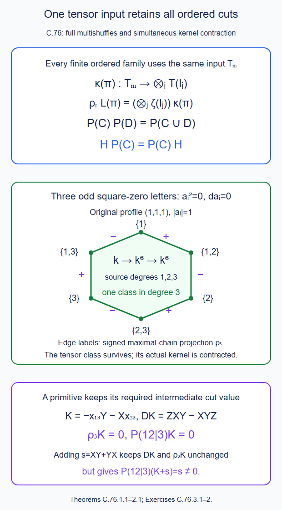
Theorem C.76.1.1 gives every finite-factor projection with a simultaneous ordered-cut contraction; Theorem C.76.2.1 gives exact full multishuffle and regrouping squares. Exercises C.76.3.1–C.76.3.2 retain the Boolean tensor class and compute a primitive with its required intermediate cut value. Editable SVG source.

C.77. Entire evaluation and coherent native operator cubes
An exact whole evaluation identity is preserved when lifted operators and their comparison cubes are composed. It supplies one compatible boundary for each sequential native composition, whose relative kernel filler retains every formal-unit degeneracy and higher source component.
C.77.1. The exact projected-evaluation condition is preserved by composition
For a dg category \(A\), write \(Q_A=Q^{\mathrm u}(A)\), with \(\epsilon_A\) and \(\iota_A\) as in Theorem C.72.2.1. Let \(K\) be a full conilpotent relative parameter coalgebra with its original object labels. Let \(J=I^{\otimes d}\) be the actual cube coalgebra of Theorem C.74.2.1, including all cells and ordinary faces. Parameters are normalized at their coefficient units; cube variables have their stated counit.
Suppose \(\Phi:K\to B_{\rm full}\operatorname{Fun}_\infty(A,B)\) is an entire native parameter map. Write \(\mathcal U_{A,B}=\operatorname{Fun}_\infty(Q_A,Q_B)\). A cube of its operator lifts is a chain coalgebra map \[ \begin{gathered}\widehat\Phi:K\otimes J\\ \quad\longrightarrow B_{\rm full}\mathcal U_{A,B}.\end{gathered} \tag{C.77.1} \] whose object values are the strict dg operators \(QF\). Its positive Taylor map vanishes on the coefficient coaugmentation of \(K\), even when the cube variable is nonempty. Thus the object values are fixed throughout the cube. Call such a lift admissible if its entire bar restriction along \(\iota_A\) is \[ \begin{gathered}B(r_{A,B})\widehat\Phi\\ \quad=B((\iota_B)_*)\Phi\\ \qquad\cdot(1_K\otimes\epsilon_J).\end{gathered} \tag{C.77.2} \] Here \((\iota_B)_*\) includes every higher postcomposition operation of Theorem C.69.2.1. Its linear component alone is not substituted for that bar map.
Theorem C.77.1.1 (entire projected evaluation and its closure). Admissibility is equivalent to the following exact equation on all source and parameter words: \[ \begin{gathered}\widehat E=\operatorname{ev}_{Q_A,Q_B}\\ \qquad\circ(\widehat\Phi\otimes B\iota_A),\\ E=\operatorname{ev}_{A,B}(\Phi\otimes1)\\ \qquad\circ(1_K\otimes\epsilon_J\otimes1),\\ \widehat E=B\iota_B\,E.\end{gathered} \tag{C.77.3} \] All sides retain ordinary identity outputs and source-unary terms. Horizontal composition of any admissible lifted cubes is admissible for the corresponding entire native composite, with tensor cube coordinates and the actual Koszul interchange. Restrictions to ordinary cube faces and full supplied parameter subcoalgebras remain admissible.
Proof. Precomposition by an entire functor is a strict dg functor on full Nat categories. The exact evaluation identity of Theorem C.69.2.1 therefore identifies evaluation of the left restriction map with evaluation of \(\widehat\Phi\) on \(B\iota_A\). The same identity identifies evaluation after entire postcomposition by \(\iota_B\) with \(B\iota_B\) after original evaluation. Substituting the displayed admissibility equation gives the required evaluation equation.
Conversely, project the evaluation equation to a single target mapping letter and evaluate on every original \(A\)-word, including the empty word at each object. This recovers every full Nat Taylor component of the one-parameter-letter projections on the two proposed bar maps. A cofree target bar map is determined by these projections and its coefficient map, as proved in Theorem C.69.2.1. Their coefficient maps are already the same fixed object maps. Hence their entire bar maps are equal, which is precisely admissibility.
For closure let \(\widehat\Psi\) be an admissible cube from \(B\) to a third dg category \(C\), with native map \(\Psi\). On their full parameter and cube tensor product form the entire horizontal map \(M_Q(\widehat\Psi\otimes\widehat\Phi)\), moving the original homogeneous factors through the required tensor permutation. Evaluate it on \(B\iota_A\). By the exact nested evaluation identity this is first the entire inner evaluation and then the entire outer evaluation. Inner admissibility says its full output is exactly \(B\iota_B\) of the native inner output, with the inner cube counit. It is therefore in the precise input of outer admissibility, including every ordinary unit and every higher output word. Outer admissibility now makes the whole result \(B\iota_C\) of the nested native evaluations, with both cube counits. Applying the nested identity again gives the native horizontal composite. This is the required evaluation equation for that composite, so the equivalence just proved gives its admissibility. Its object types agree exactly because \(QG\,QF=Q(GF)\), by Theorem C.72.2.1.
This argument applies to arbitrary higher kernel corrections that still obey the entire admissibility equation. It does not assume that a bare postcomposition projection is horizontally multiplicative on unrelated Nat cochains. The whole inner output lying in \(B\iota_B\)'s image is the step that permits the outer evaluation equation to be used.
For finiteness, the cubical coalgebra is finite, although its vertices are group-like. The positive twist is zero on the coefficient part of \(K\). Consequently every nonzero positive output piece consumes positive original parameter rank; there are at most that many pieces. For each fixed number of pieces, the iterated cube diagonal is a finite sum. Full evaluation has the finite marked bound of C69 on every original source word. Thus the reconstructed maps and all equations are actual finite sums, without assuming that the cube itself is conilpotent. Composing with a face or a supplied parameter subcoalgebra simply restricts these same equations. This proves every assertion. \(\square\)
C.77.2. One coherent family for every sequential native composition
Fix dg categories \(A_0,\ldots,A_n\) and let \(\mathcal O_i=\operatorname{Fun}_\infty(A_{i-1},A_i)\), with its full normalized Nat dg category. The native sequential composition is the entire associative map \(M\) of Theorem C.69.2.1. The common parameter category is \(T_n=T(\mathcal O_n,\ldots,\mathcal O_1)\), with all original operator labels and the actual normalized unit relations of C74.
Theorem C.77.2.1 (strictly unital coherent operator-model cubes). The operator maps \(\mathcal Q\) of Theorem C.73.2.1 extend to a family \(W_n\) of admissible cubes of dimension \(n-1\), defined on the entire common parameter coalgebra of \(T_n\). Their fixed object value is \(Q(F_n\cdots F_1)\). They have the following ordinary faces. At coordinate zero, the chain of native operators splits there and the face is the entire horizontal composition of the two smaller cubes. At coordinate one, the two adjacent native slots merge by their full native \(M\), and the face is the smaller cube pulled back along that full merge map. The coordinates retain their original seam labels.
The whole family can retain any previously supplied compatible free-generator faces and their full cubes. Choose it once before full native parameter restrictions. Its pullbacks then agree exactly on all shared native full faces and include every original higher cell. Formal identity-functor slots have the normalized degeneracies described below; identity-valued nonidentity native arrows retain their own labels. The empty sequential chain has its actual identity operator and no positive cube coordinate.
Proof. At \(n=1\), take the entire \(\mathcal Q\) of C73. Its exact restriction is the admissibility equation by Theorem C.73.2.1. Suppose all smaller cubes have been chosen simultaneously. On the boundary of \(I^{n-1}\) prescribe the faces in the statement. Splitting a zero coordinate uses the two smaller cubes, with their parameter and cube factors regrouped by the actual tensor coalgebra interchange. Merging a one coordinate uses the full native composition coalgebra map, followed by the previously chosen smaller cube. Both descend through the actual parameter-unit relations, by C69 and Theorem C.74.1.1.
These are compatible whole boundary values. On an intersection of two zero faces, both expressions are the entire three-level horizontal composition of the same smaller cubes; exact associativity of \(M_Q\) in C69 makes them equal. On two one faces, both expressions are the same smaller cube pulled back along the two full native merges. If the merges are disjoint they commute under tensor interchange; if adjacent they agree by entire native associativity. On a zero and a distinct one face, the native merge occurs inside one of the two split pieces. Both orders give that same smaller cube's prescribed face, composed with the other piece. Tensor-factor permutations move the same original homogeneous elements through the same permutation in every case, so the Koszul signs agree. All codimension-two intersections therefore agree; every higher face intersection is their literal iterated restriction.
Every boundary face is admissible by Theorem C.77.1.1 and the induction. Its exact projected map is the one \((\iota_{A_n})_*\) of the entire native \(n\)-fold composition, independent of the cube coordinates. The operator object is likewise independent of its parenthesization, since the strict Q-models compose exactly. Use the actual restriction projection of Theorem C.73.1.1 on that fixed labelled object family. It is a graded-surjective mapping quasi-isomorphism with an actual contracted kernel. The relative cube extension of Theorem C.74.2.1 therefore fills precisely this supplied boundary, with precisely this entire projected map. Its domain \(T_n\) retains the full source-unary generator differential and all constants, as required by that theorem. The filler is consequently admissible. No absolute Nat acyclicity has been used.
Here are the formal-unit degeneracies and their compatibility. Define \(\mu:I\otimes I\to I\) by the minimum of the two vertices and by \[ \begin{gathered}\mu(e\otimes v_1)=e,\\ \mu(v_1\otimes e)=e,\\ \mu(e\otimes v_0)=0,\\ \mu(v_0\otimes e)=0,\\ \mu(e\otimes e)=0.\end{gathered} \tag{C.77.4} \] It is a dg coalgebra map. On a vertex this follows from its group-like diagonal. On an edge with other vertex \(v_1\), its two diagonal terms are exactly \(e\otimes v_1+v_0\otimes e\) after applying \(\mu\) to both factors. With other vertex \(v_0\), every term has a zero edge factor. On \(e\otimes e\), both middle diagonal terms have a factor of this latter kind, and the two extreme terms also give zero. This proves the coalgebra equation on all nine basis elements. The chain equation on two edges is \(e-0-e+0=0\); the edge-vertex equations are the corresponding vertex differences. Its unit is \(v_1\) and its absorbing vertex is \(v_0\).
It is associative: at vertices this is associativity of minimum. With one edge, the result is that edge exactly when all other vertices are \(v_1\); otherwise it is zero. With at least two edges both parenthesizations are zero. This covers every homogeneous triple and all successive products.
When an interior operator slot is the formal identity functor with only its coefficient parameters, delete that slot and pull back the smaller cube by \(\mu\) on its two adjacent seam coordinates. At an endpoint identity slot delete its one adjacent coordinate by the interval counit. These prescriptions agree with the already assigned zero and one faces: \(\mu(v_0,-)\) is the constant zero vertex, while \(\mu(v_1,-)\) is the identity coordinate. This is exactly the split versus native-merge face rule. Several identity deletions agree by associativity of \(\mu\), its counit equation and strict native/Q identity composition. They also agree on ordinary parameter-unit faces by normalized unitality of C69 and C73. No interval reversal is used.
The no-letter formal-unit parameter faces are actual differential-stable free-generator faces of \(T_n\), by Theorem C.74.1.1. The preceding compatible smaller cubes prescribe their entire cubical values. Apply the relative clause of C74's extension to retain them exactly along with any other compatible assigned free-generator-face cubes. An already assigned family must have these same entire boundaries; no extension assertion is made for an arbitrary inconsistent face list. This completes the induction in \(n\).
Finally each actual native string or joint parameter diagram enters by its supplied full parameter coalgebra map to the original \(\mathcal O_i\) categories. Pull back the whole chosen \(W_n\) along those maps and the actual cube faces. Two such pullbacks to the same full native face are the same literal map, because the original native maps already agree there and the family was chosen globally first. All ordinary unit outputs, higher native transformations, original composite labels and nonminimal source-unary terms are therefore retained. This is a restriction of the entire supplied native diagram, not its reconstruction from unrelated edge classes. A nonrectangular compatible joint domain uses its actual whole index coalgebra as in C64; this construction clips no shuffle and inserts no missing intermediate object. This proves the claimed operator-model comparison family. \(\square\)
C.77.3. Solved cube calculations
Exercise C.77.3.1 (a whole boundary needs its interior value; advanced). Let \(E=k1\oplus kx\oplus ky\), with \(|x|=-1\), \(|y|=-2\), \(dy=x\), \(dx=0\), and square-zero ideal \((x,y)\). The quotient \(p:E\to k\) kills that ideal. For the free unital dg algebra on a degree-zero closed generator \(a\), prescribe a relative square with zero vertex values, value \(x\) on the bottom edge \(e\otimes v_0\), and zero on its other three edges. Fill it over the zero quotient image and compute what happens if its top cell is omitted.
Solution. A degree-zero cochain \(\phi:I^2\to E\) takes the top cell to degree minus two. The entire tensor differential is \[ \begin{gathered}d(e\otimes e)\\ \quad=v_1\otimes e-v_0\otimes e\\ \qquad-e\otimes v_1+e\otimes v_0.\end{gathered} \tag{C.77.5} \] The given boundary consequently has value \(x\) on that derivative. Set \(\phi(e\otimes e)=y\). Then its Hom differential on the top cell is \(dy-\phi(d(e\otimes e))=x-x=0\). The edge and vertex equations hold because \(dx=0\). All its values are in \(\ker p\), so its quotient is the required constant zero. Sending \(a\) to this closed convolution cochain and extending by products gives the whole strict dg map. If the top value is set to zero, the differential instead has value \(-x\ne0\) on that cell. The boundary itself has not changed; its needed interior primitive is the substantive filler. \(\square\)
Exercise C.77.3.2 (an identity slot can have a nonconstant cubical degeneracy; advanced). Let \(E=k1\oplus k\alpha\oplus k\beta\), with \(|\alpha|=0\), \(|\beta|=-1\), \(d\beta=\alpha\), and square-zero ideal \((\alpha,\beta)\). The interval cochain \(\psi\) has values zero at \(v_0\), \(\alpha\) at \(v_1\), and \(\beta\) at \(e\). Compute the full square \(\psi\mu\) that occurs when a middle formal identity slot is deleted.
Solution. The interval Hom differential is zero: \(d\beta-(\alpha-0)=0\). The minimum map gives only one nonzero vertex value of its square, at \(v_1\otimes v_1\), equal to \(\alpha\). Its two edges with the other coordinate \(v_1\) have value \(\beta\); its two edges with other coordinate \(v_0\) have value zero. Its top value is zero. On the top derivative in Exercise C.77.3.1 these values give \(\beta-0-\beta+0=0\), and the remaining differential equations are the same interval equation. Thus the full square is closed, as required by the coalgebra pullback.
It is not the constant zero square even though its inserted native operator is an identity: its \((v_1,v_1)\) value is the original \(\alpha\), and its two edge components are the original homotopy. The formal identity fixes the specified degeneracy, including all of these components. It does not erase an already nonconstant comparison. \(\square\)
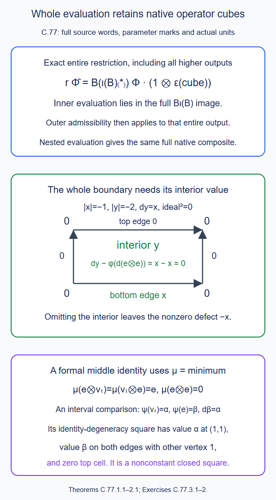
Theorem C.77.1.1 proves the exact projected-evaluation law and closure; Theorem C.77.2.1 constructs the coherent native sequential operator cubes. Exercises C.77.3.1–C.77.3.2 compute a required square interior and a nonconstant formal-unit degeneracy. Editable SVG source.

C.78. Full tensor-unit restriction and external comparisons
The full normalized tensor-unit restriction records the entire mapping complex and has an actual finite kernel contraction. Its canonical tensor and shuffle squares lift supplied whole native external comparisons while keeping the original source differential and coefficient outputs.
C.78.1. The tensor unit records the entire mapping complex
Let \(A_1,\ldots,A_m\) be unital dg categories over the split degree-zero coefficients of Section C.30.1. Set \(K=\bigotimes_iB_{\rm full}A_i\) and \(T=T(A_1,\ldots,A_m)\). The canonical full coalgebra map \[ \eta:K\longrightarrow B_{\rm full}T, \tag{C.78.1} \] is the bar-cobar unit of Lemma C.39.4.1 followed by the actual normalized quotient of Theorem C.74.1.1. In particular this is a map between genuine full dg coalgebras. We do not declare their naive reduced unit quotients dg coalgebras: scalar differential or product outputs can give those quotients curvature.
Fix normalized uncurved unital functors \(F,G:T\to D\), with \(D\) a dg target. Their full bar maps precomposed with \(\eta\) are full multi-input functors on \(K\). Full multi-Nat cochains between them have one central target mapping value on each original tuple of input words, including the empty tuple. Their differential and vertical product are the full coalgebra/coderivation convolution formulas on \(K\). Normalize positive cochains by making them zero at any ordinary coefficient input in any factor. This normalization concerns inputs, and retains actual coefficient outputs.
Theorem C.78.1.1 (full normalized tensor-unit restriction). Restriction gives a graded-surjective dg functor on the labelled operator family, \[ \begin{gathered}r_\eta:\operatorname{Nat}_\infty(F,G)\\ \quad\longrightarrow\operatorname{Nat}_K(F\eta,G\eta).\end{gathered} \tag{C.78.2} \] It is a quasi-isomorphism on the complete mapping complexes. Its actual kernel has a normalized contraction finite on every original reduced factor-letter input. Thus the unit records full transformation classes, primitives and their whole higher coherent diagrams, not only bare values. No augmentation or positive cohomological mapping degrees are assumed.
Proof. A normalized Nat cochain on \(T\) is determined by its central Taylor values on the normalized graded source inputs. In the graded free description of C74 these are outer bar words of nonempty cobar monomials; each cobar generator is a nonempty tuple of original reduced factor words. For an original reduced tuple \(c\), the unit's one-bar-letter, one-cobar-generator component is exactly \(s(\mathsf tc)\). Its other components have several outer bar letters. This exhibits an injective graded map on the normalized input tuples: the displayed distinguished components are separate for every \(c\). Any central multi-Nat cochain therefore extends by assigning its value on those components and zero on all other positive source inputs, with the same bare value. This proves graded surjectivity, without asserting that this graded section is a chain section.
If an original input has a coefficient argument, every surviving term of its unit image contains an ordinary coefficient input in an outer bar slot. A higher cobar block containing it has already vanished by C74; a surviving one-letter coefficient block is the actual coefficient. Thus normalized Nat cochains restrict to precisely the stated normalized multi-Nat cochains. Before this normalization, restriction is a chain map and preserves the cofree composition formula because \(\eta\) is a chain coalgebra map. It consequently preserves both on the normalized spaces as well. For clarity their stability can also be deduced from the graded extension just given: if \(\psi=r_\eta\phi\), then \(d\psi=r_\eta(d\phi)\) is again normalized. The same argument applies to products. This defines the normalized dg mapping category directly from the genuine full complexes; no curved reduced-bar square-zero assertion is hidden in this step.
Count all original reduced \(A_i/S_i\) letters in a tuple and in an outer bar word of cobar monomials. Let the total be \(R\). For the leading differential retain the full projected original unary complexes, the cobar splits and the outer bar multiplication of cobar monomials. Discard native factor bar multiplications, scalar outputs and positive functor-action terms only for this leading calculation. Write \(K_0=\bigotimes_iT^c(s(A_i/S_i))\), with its projected unary differential. Then the leading source is the genuine augmented \(T_0=\Omega K_0\), and its normalized input bar is \(B_{\rm red}\Omega K_0\). The leading unit is the same graded iterated-coproduct formula as \(\eta\).
In every fixed original rank the leading unit is a quasi-isomorphism. Here is the finite argument, independent of cohomological degree bounds. Filter \(B_{\rm red}\Omega K_0\) by the number \(r_0\) of original noncoaugmented \(K_0\)-elements before they are grouped into cobar monomials and outer bars. Each such element contains positive original rank, so \(r_0\leq R\). Cobar splitting increases \(r_0\); the original unary and outer bar merge preserve it. At fixed \(r_0\geq2\), the associated quotient is the first-boundary cut complex of C.39.4. Its contraction inserts a missing outer cut after the first original \(\mathsf tc_1\), with coefficient \((-1)^{|c_1|}\), and is zero if that cut is present. Cutting then merging gives the identity. Every other merge cancels in the two orders, and the same coefficient makes the original unary terms cancel as proved in C.39.4. Thus this contracts the full quotient, including its unary complex. At \(r_0=1\), the unit is the identity on the original \(K_0\)-element. Finite elimination in its comparison cone through \(1\leq r_0\leq R\) proves acyclicity of that cone in the exact original-rank block. At rank zero the unit is the coefficient identity.
The leading unit is graded-injective, so its quotient input complex is acyclic. Choose a coefficient-linear normalized contraction \(h_Q\) on that quotient, separately in its original-rank and endpoint blocks, using C.30.1. Identify the leading restriction kernel with central Hom cochains on this quotient. The Nat convention requires its sign to be stated: for a degree-\(r\) central cochain, \[ \begin{gathered}D_0\phi=d_D\phi\\ \qquad+(-1)^r\phi b_0.\end{gathered} \tag{C.78.3} \] It is the ordinary Hom convention with source differential \(-b_0\). Consequently its kernel contraction is \[ H_0\phi=(-1)^{r+1}\phi h_Q. \tag{C.78.4} \] Indeed the two target-unary terms in \(D_0H_0+H_0D_0\) cancel, and the remaining terms are \(\phi(h_Qb_0+b_0h_Q)=\phi\). The square and side conditions follow from the normalized \(h_Q\). This retains the bare central target differential and the complete source unary, cobar and bar-merge terms; it is not a Hom calculation on cohomology.
Now restore the full mapping differential \(D_0+\delta\). A native factor bar multiplication lowers original rank; its scalar output lowers it further. Scalar unary outputs also lower it. Every nontrivial source or target functor action consumes a positive-rank piece of the original input. Even when that action's output is a coefficient it has consumed that input piece. Ordinary unit-input terms have already canceled in the normalized complex; they do not supply a rank-zero positive action. Hence \(\delta\phi\) on rank \(R\) uses \(\phi\) only on smaller ranks. The restriction kernel is stable under the full differential and under the leading differential. On that same actual kernel the finite perturbation \[ \begin{gathered}H\\ \quad=H_0(1+\delta H_0)^{-1}.\end{gathered} \tag{C.78.5} \] therefore terminates word by word. Lemma C.35.1.1 gives \(DH+HD=1\), \(H^2=0\). The kernel is contracted, and the graded-surjective chain restriction is consequently a quasi-isomorphism. Its full dg composition property was already proved. This proves the entire assertion. \(\square\)
C.78.2. The actual full tensor squares and lifted native comparisons
For the same family write \(\rho_A:T(A_i)\to\bigotimes_iQ_{A_i}\) and \(\zeta_A:T(A_i)\to Q_{\otimes_iA_i}\) for C76's actual maps. Let \(\operatorname{sh}_A\) denote the full factor-bar shuffle. All unit maps here are their actual entire bar-cobar units followed by the indicated normalized quotients.
Theorem C.78.2.1 (canonical multi-input model and actual comparison lifting). The exact whole coalgebra identities are \[ \begin{gathered}B\rho_A\,\eta_A\\ \quad=\operatorname{sh}_{Q_A}\\ \qquad\circ(\bigotimes_iB\iota_{A_i}),\\ B\zeta_A\,\eta_A\\ \quad=B\iota_{\otimes_iA_i}\operatorname{sh}_A.\end{gathered} \tag{C.78.6} \] For normalized unital factor functors \(F_i:A_i\to B_i\), the actual strict dg common-input map \(T(F_i)\) of C74 satisfies \[ \begin{gathered}\rho_BT(F_i)\\ \quad=(\bigotimes_iQF_i)\rho_A.\end{gathered} \tag{C.78.7} \] and \[ \begin{gathered}B(\zeta_BT(F_i))\eta_A\\ \quad=B\iota_{\otimes_iB_i}\\ \qquad\circ\operatorname{sh}_B\\ \qquad\circ(\bigotimes_iBF_i).\end{gathered} \tag{C.78.8} \] These equations define a full multi-input comparison without introducing a tensor product of general original \(A_\infty\) functors.
If an actual native external operator \(F_{\rm ext}\) and its supplied full comparison with the right multi-input expression are given, that comparison, its inverses and its higher covariance lift through the specific contracted mapping kernel of Theorem C.78.1.1. Compatible prescribed free-generator faces and their full projection data can be retained.
Proof. Project the first proposed unit identity to one target bar letter. A reduced input tuple supported in one factor maps on each side to its corresponding one normalized cobar block in that factor. If several factor words are nonempty, the left projection is zero by the generator rule for \(\rho_A\). On the right, each nonempty factor has at least one output letter before the full shuffle, so the total output has at least two letters and also has zero one-letter projection. Coefficient terms agree by their actual unit relations. Both sides are coalgebra maps. Cofree uniqueness therefore proves the whole first identity, with every higher output and tensor-cut sign.
The second is naturality of the explicit coalgebra unit under the full shuffle coalgebra map, followed by the two actual quotient maps. The unit formula sums the same consecutive coproduct pieces on both sides; cuts of a shuffle are the shuffled factor cuts, as proved in C.75.2 and C.76.2. This gives the whole equation, including ordinary unit outputs.
The middle projection equation is the entire factor naturality of C.76.1. For the last equation, the unit's naturality for \(\bigotimes_iBF_i\) gives \(B(T(F_i))\eta_A=\eta_B(\bigotimes_iBF_i)\). Compose with \(B\zeta_B\) and use the second unit identity. This proves all the stated equations on full bars, not just on generators after forgetting the source-ending maps.
To spell out the native comparison types, the supplied external operator gives a strict dg common-input model \(L=QF_{\rm ext}\,\zeta_A:T(A_i)\to Q_{\otimes_iB_i}\). The independent factor map gives \(P=\zeta_BT(F_i)\) with that same source and target. Their exact restrictions by the two identities are respectively \(B\iota_{\otimes_iB_i}\,BF_{\rm ext}\operatorname{sh}_A\) and \(B\iota_{\otimes_iB_i}\operatorname{sh}_B(\bigotimes_iBF_i)\). Apply full postcomposition by \(\iota_{\otimes_iB_i}\) to the supplied whole native comparison between the original two multi-input maps. It becomes an actual full multi-Nat comparison between \(L\eta_A\) and \(P\eta_A\), including all its higher parameter components.
For a closed homogeneous comparison \(\psi\), choose a graded preimage \(\phi_0\) under Theorem C.78.1.1's restriction. Its defect \(D\phi_0\) is a closed element of the actual restriction kernel. The correction \(\phi=\phi_0-H(D\phi_0)\) has the prescribed restriction and is closed. The bare component is unchanged because the unit is the identity there and the kernel has zero bare component. If the native comparison has pointwise homotopy-equivalence components, these remain its actual bare equivalences. Its full inverse classes and primitives are retained because restriction is a dg mapping quasi-isomorphism. For a whole free coherent parameter diagram use this same fixed-object dg projection in the relative free-generator induction of Theorem C.46.2.1. It lifts the entire diagram, rather than choosing unrelated closed edges. The relative clause retains the already assigned compatible generator faces and their full projection data. Cube boundaries use Theorem C.74.2.1 with this actual kernel.
This construction uses the given native external comparison; it does not infer it from a matching cohomology ring or unrelated endpoint equivalences. It supplies a specific full common-input lift of that comparison. Its simultaneous assembly with the actual native positive common graphs and the prescribed graft/field comparison remains a separate obligation. \(\square\)
C.78.3. Solved full-bar and mapping-sign calculations
Exercise C.78.3.1 (the Nat contraction has the shifted Hom sign; advanced). Take \(A=k1\oplus ka\), \(|a|=0\), \(da=a^2=0\), and \(T=Q^{\mathrm u}(A)\). Let \(F=G:T\to k\) be its augmentation. Write \(x=\mathsf t(sa)\), \(h=\mathsf t(sa|sa)\). At original rank two consider source bar inputs \(u=s h\), \(v=s(x^2)\), \(w=sx|sx\). Find the restriction kernel differential and the primitive of the cochain \(g(u)=-1\), \(g(w)=1\), \(g(v)=0\). Check the sign in Theorem C.78.1.1.
Solution. Here \(|x|=0\), \(|h|=-1\), and \(Dh=x^2\). The actual bar differential and unit values are
\[ \begin{gathered}b(u)=v,\quad b(w)=-v,\\ b(v)=0,\\ \eta(sa|sa)=u+w.\end{gathered} \tag{C.78.9} \]
The input quotient has \(u=-w\), so its contraction can be chosen as \(h_Q(v)=-w\), \(h_Q(w)=0\). A central scalar cochain \(f\) with \(f(v)=1\) and all other values zero has degree one, since \(|v|=-1\). The Nat sign gives \(Df=-f b=g\), of degree two. In particular \(g\eta=0\), and the full augmentation actions are zero on all positive inputs. No higher original-rank components occur in this example. The actual restriction-kernel homotopy satisfies
\[ \begin{gathered}(Hg)(v)\\ \quad=(-1)^3g(-w)=1,\\ Hg=f.\end{gathered} \tag{C.78.10} \]
Thus \(D(Hg)=g\). Using instead the unshifted sign \((-1)^{|g|}\) with this same \(h_Q\) gives \(-f\) and differentiates to \(-g\), not \(g\). This verifies the coefficient \((-1)^{r+1}\) required by the full Nat convention. \(\square\)
Exercise C.78.3.2 (mixed and ordinary-unit outputs of the full tensor unit; advanced). Let \(a,b\) be closed degree-zero mappings in the two factors and write \(X=\mathsf t(sa\otimes1)\), \(Y=\mathsf t(1\otimes sb)\), \(z=\mathsf t(sa\otimes sb)\). Compute \(\eta(sa\otimes sb)\), its full \(B\rho\)-image and its full shuffle comparison. Then specialize \(a\) to the actual coefficient unit of its factor.
Solution. Both original suspended letters have degree minus one. The full tensor coproduct has the two proper cut orientations with opposite signs. The canonical unit is consequently
\[ \begin{gathered}\eta(sa\otimes sb)=sz\\ \qquad+sX|sY-sY|sX.\end{gathered} \tag{C.78.11} \]
The first projection kills the mixed generator \(z\) and keeps the other two terms, exactly the shuffle of \(s x_a\) and \(s x_b\) in their designated tensor slots. This is the first entire unit square, including its two distinct outer-bar words.
For the second square put \(u=a\otimes1\), \(v=1\otimes b\). Its one-output part is \(s\mathsf t(su|sv)-s\mathsf t(sv|su)\); its two-output part is \(s x_u|s x_v-s x_v|s x_u\). Together these are exactly \(B\iota_{A\otimes B}\) of the original full shuffle \(su|sv-sv|su\). Taking only one of these output lengths would lose the entire comparison equation.
If \(a=1\), the normalized relations give \(X=1\), \(z=0\), and kill both higher cobar blocks containing the global unit. The full unit image is still
\[ s1|sY-sY|s1. \tag{C.78.12} \]
These are ordinary coefficient output letters of the full bar. They are retained in the coalgebra identity. A normalized positive Nat cochain evaluates this image to zero because each word contains a unit input; that explains the cochain normalization without deleting either full-bar output word. The full identity and its normalized evaluation are different operations. \(\square\)
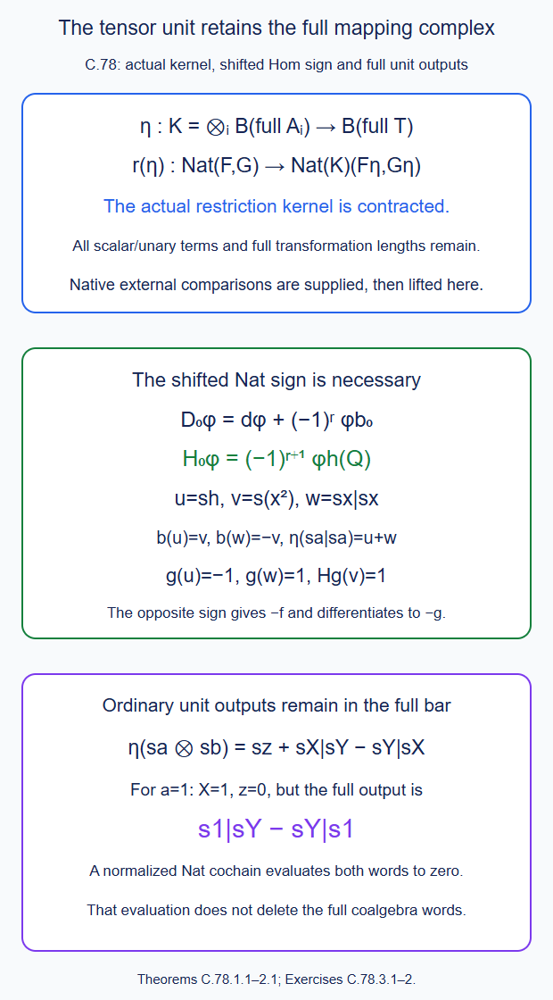
Theorem C.78.1.1 gives the full tensor-unit mapping restriction; Theorem C.78.2.1 gives canonical entire tensor squares and the lift of supplied native external comparisons. Exercises C.78.3.1–C.78.3.2 check the shifted Hom sign and the full mixed/unit-output words. Editable SVG source.

C.79. Positive native inputs and fixed covariance
Positive common-input towers retain the full bar unit and every ordered pure-state cut. Their actual projection kernels lift the whole coherent native operator diagram. Changes of presentation must also transport, or preserve, each fixed product and graft map.
C.79.1. One positive common-input tower, with the actual pure maps
Let \(C=B\mathcal M\) be the fixed positive minimal IC bar of C34, \(U=\Omega C\), and \(v:U\to\mathcal G\) the actual strict dg generator quasi-equivalence constructed in Theorem C.68.4.1. Retain its finite additive matrix interpretation. For \(m\geq0\), set \[ \begin{gathered}V_m=\Omega(C^{\otimes m}),\\ P_m=T(U,\ldots,U).\end{gathered} \tag{C.79.1} \] At zero factors these are the coefficient category. Define \[ \begin{gathered}\xi_m:V_m\to P_m,\\ \xi_m=\Omega(\eta_C^{\otimes m}),\\ p_m:P_m\to U^{\otimes m},\\ p_m=(\epsilon_U^{\otimes m})\rho_m.\end{gathered} \tag{C.79.2} \] The first formula uses the augmented identification of \(P_m\) below; the second uses the actual counits and projection of C72 and C76.
Proposition C.79.1.1 (the actual positive state tower). These are strict dg mapping quasi-isomorphisms. The projection \(p_m\) is graded-surjective, and its actual kernel has a finite normalized linear contraction. The entire tower is positive on its reduced pure-state generators and satisfies \[ \begin{gathered}p_m\xi_m=\kappa_m,\\ \kappa_m:V_m\to U^{\otimes m}.\end{gathered} \tag{C.79.3} \] For an ordered root partition \(\pi\), its cut maps satisfy \[ \begin{gathered}\kappa_\pi^P\xi_m\\ \quad=(\bigotimes_j\xi_{I_j})\kappa_\pi^V,\\ (\bigotimes_jp_{I_j})\kappa_\pi^P=p_m.\end{gathered} \tag{C.79.4} \] Thus all pure-state ordered-root input squares agree exactly before any capacity or native full face is selected.
The actual geometric attachment is the strict dg quasi-equivalence \[ \begin{gathered}\chi_m=\zeta_{\mathcal G}T(v,\ldots,v)\xi_m,\\ \chi_m:V_m\to Q^{\mathrm u}(\mathcal G^{\otimes m}).\end{gathered} \tag{C.79.5} \] and its exact projection square is \[ \epsilon_{\mathcal G^{\otimes m}}\chi_m=v^{\otimes m}\kappa_m. \tag{C.79.6} \] All coefficient and zero-fold maps are their actual identities. The structural positive tower is strictly natural under the given pure coalgebra maps and their cobar powers, including the calibrated \(g\) and \(q=\Omega g\) of C48. No strict square for an attaching geometric comparison is asserted when that comparison is given only as a full \(A_\infty\) map; its actual higher comparison is retained separately.
Proof. The augmentation of \(U\) is its actual positive cobar augmentation. Its reduced mappings have degree at least two and are a dg ideal. Consequently the normalized quotient description of C74 is exactly \[ P_m=\Omega((B_{\rm red}U)^{\otimes m}). \tag{C.79.7} \] Indeed its free generators are tuples of nonempty reduced \(U\)-words, with the other factors empty. There are no scalar unary or binary outputs from this dg augmentation ideal. Its tensor bar differential and all proper tensor cuts are therefore precisely that augmented cobar differential. This is an equality of the actual free models, not an identification made only after taking cohomology.
The unit \(\eta_C:C\to B_{\rm red}U\) is a chain coalgebra quasi-isomorphism by Lemma C.39.4.1. Both reduced coalgebras have positive degrees. Its finite tensor powers remain quasi-isomorphisms by the split tensor contractions of C.30.1, and the positive cobar comparison clause of C.39.4.1 applies to them. This proves the assertion for \(\xi_m\). The actual projection \(p_m\) is graded-surjective by its pure one-letter generator values. C76's projection and C72's tensor counits make it a quasi-isomorphism. Its mapping kernel is acyclic; the coefficient-linear splitting argument of C.30.1 provides its normalized linear contraction. Alternatively its original-letter finite kernel contraction follows by the same filtered kernel construction as C75. The pure generators in \(P_m\) have degree at least two, since each reduced suspended \(U\)-letter has degree at least one. The same positive bound holds for \(V_m\) by C34 and C41.
Project \(p_m\xi_m\) on a generator of \(V_m\). If more than one original \(C\)-factor is noncoaugmented, every term has support in those factors and its \(\rho_m\)-projection is zero. If only factor \(i\) is noncoaugmented, the factor unit is the sum of all consecutive cobar blocks. Its actual counit keeps exactly its one-letter projection, the original \(\mathsf tc\) in factor \(i\). This is the defining generator formula for \(\kappa_m\). Coefficients agree. Extending by products proves the first exact square.
The same support calculation with groups proves \(\kappa_\pi^P\xi_m=(\bigotimes_j\xi_{I_j})\kappa_\pi^V\). A generator meeting two groups is killed on both sides. One supported in a single group has that same group's entire tensor unit on both sides. The factor units do not send a noncoaugmented element to a coaugmentation, so this support argument loses no unit term. C76's projection regrouping square, followed by the actual factor counits, proves the second ordered-cut identity. These are generator identities of strict dg functors, so hold on all words and with the actual matrix balancing signs.
For the geometric attachment, C74 gives the actual strict \(T(v,\ldots,v)\), and strict dg factor naturality in C76 gives \[ \begin{gathered}p_{\mathcal G}T(v,\ldots,v)\\ \quad=v^{\otimes m}p_m,\\ p_{\mathcal G}=(\epsilon_{\mathcal G}^{\otimes m})\rho_{\mathcal G}.\end{gathered} \tag{C.79.8} \] The right-hand composite is a mapping quasi-isomorphism, and \(p_{\mathcal G}\) is one by C72 and C76. Thus \(T(v,\ldots,v)\) is one as well. C76's \(\zeta_{\mathcal G}\) and the already proved \(\xi_m\) make \(\chi_m\) a mapping quasi-isomorphism. Its counit square follows by substituting the exact actual shuffle counit square of C76 and then the preceding two strict projection identities. No positivity of the intermediate geometric dg model or its unaugmented normalized resolution was used.
Finally the explicit unit is natural for a pure coalgebra map, its cobar is natural on every generator, and all projections use those same pure-factor twisting values. Thus the positive structural tower and ordered cuts are strictly natural under the actual \(g\) and the powers of \(q=\Omega g\). Its zero-fold instance is the coefficient identity. The finite additive extension uses the full matrix-unit balanced-tensor calculation in C.38.1, independently of any extra geometric comparison. This proves the proposition. \(\square\)
C.79.2. Full native lifting through the positive projection
Write \(A_m=U^{\otimes m}\). First retain the actual native diagram on these coefficient-linear enhanced input models, as in C.48.2, with the complete geometric interpretation supplied by C.68.4. The maps at this stage are full normalized unital \(A_\infty\) functors and full natural transformations. In particular they are not obtained by taking cohomology of the original native operators. Denote an original operator by \(F:A_a\to\operatorname{Add}(A_b)\).
For each such operator choose a lift \(\widetilde F:P_a\to \operatorname{Add}(P_b)\) with its fixed IC-sum object labels. The required projection identity is the equality of entire bar maps \[ Bp_b\,B\widetilde F=BF\,Bp_a. \tag{C.79.9} \] For an entire operator-word family \(\widehat\Theta\), let \(\Theta\) be its original native family. Its corresponding condition is the whole evaluation identity \[ \begin{gathered}Bp_b\operatorname{ev}(\widehat\Theta\otimes1)\\ \quad=\operatorname{ev}(\Theta\otimes Bp_a).\end{gathered} \tag{C.79.10} \] All original operator parameters remain on both sides. Thus this identity also specifies every mixed higher output, not just each separately marked natural transformation.
Proposition C.79.2.1 (the positive lift of the actual coherent native diagram). The supplied whole native diagram of C.47.2 has lifts through the \(p_m\)'s satisfying these identities. They retain its original joint index labels, its formal identities, every higher native composition cell and any already chosen compatible union of full generator faces. The construction applies to the single supplied calibrated two-endpoint comparison as well. On a pure comparison fiber its prescribed map is exactly \[ \begin{gathered}Q_m=T(q,\ldots,q),\\ p'_mQ_m=q^{\otimes m}p_m.\end{gathered} \tag{C.79.11} \] Here the primes denote the target positive models from C48; the second equation is exact strict-dg naturality. The assertion concerns the native operator diagram and its supplied higher comparison. It does not impose unwritten external-product or grafting equations.
Proof. The object map is fixed using the actual finite IC-sum decompositions. Proposition C.79.1.1 gives surjective quasi-isomorphisms on its mapping blocks, including their full relative matrix coefficients. The normalized functor \(Fp_a\) has a strict representative from \(\Omega B_{\rm red}P_a\). Its output is augmented: on \(r\) reduced inputs of degrees at least two, its output has degree at least \(2r+1-r=r+1\), so cannot be a coefficient identity. On the relative coefficient algebra use the actual prescribed identity map.
Lift this strict representative through \(p_b\) by C.46.2. Its free generator complex retains the entire unary differential of \(B_{\rm red}P_a\); its other differential terms use smaller original bar length. The normalized coefficient-linear contraction of \(\ker p_b\) therefore corrects the closed defect on that generator complex. Precomposing by the actual normalized bar-cobar unit gives \(\widetilde F\). The recovery triangle is exact, so its entire projection is \(Fp_a\), as required. The relative clause keeps a previously assigned differential-stable generator family. A formal identity is assigned \(1_{P_a}\), which has the required exact projection without any correction.
For two fixed lifts the full normalized Nat projection is \[ \begin{gathered}(p_b)_*:\\ \operatorname{Nat}_\infty(\widetilde F,\widetilde G)\\ \quad\longrightarrow\\ \operatorname{Nat}_\infty(Fp_a,Gp_a).\end{gathered} \tag{C.79.12} \] It is graded-surjective with acyclic actual kernel by C.66.3. The leading contraction postcomposes every source Taylor value with the mapping-kernel contraction of \(p_b\). It includes the complete source unary differential. Its remaining perturbation consumes a nonempty source piece. Hence its geometric series is finite on every original source word. This is the full Nat kernel; no assertion of acyclicity of the whole Nat space is being used.
Now order the original positive native index words by their number of nonidentity labels. Choose their free resolved parameter generators once, keeping every source Taylor component. Their lower faces are built from shorter original index words and the complete horizontal operation of C69. At a new generator take a graded lift of its supplied native value after source \(p_a\). Subtract its already assigned lower-face expression from its differential. The resulting defect has zero \((p_b)_*\)-image, because the native word satisfies its original equation and the lower words have their exact projections. Its differential is zero: expanding it gives the square-zero source parameter differential, the already established lower equations and the full C69 horizontal chain equation. Applying the Nat-kernel contraction corrects that defect.
This step is legitimate at changing frontier types. To see the essential closure, take two whole lifted families from \(a\) to \(b\) and from \(b\) to \(c\). Evaluate their composite by the nested evaluation formula of C.69.2. First apply \(Bp_c\) to the outer whole output. Its prescribed identity replaces that outer family by its native one evaluated after \(Bp_b\) on the entire inner output. The inner identity replaces the latter by its native evaluation after \(Bp_a\). The nested evaluation identity now gives precisely the native composite after \(Bp_a\). This works before projection to a single output, and therefore includes all higher marked and unit-output terms. There is no assumed tensor product of arbitrary \(A_\infty\) functors in this argument.
For a union of previously chosen full generator faces, the new defect vanishes on that union. Regard it as a map from the quotient generator complex and use the same output-kernel contraction. The correction then vanishes there too. In particular shared original block words receive their choice once; their later occurrences are restrictions. This is C.46.2's relative argument applied to the actual full Nat kernel, or equivalently C74's full boundary-kernel induction. It does not claim that arbitrary prescribed homotopy classes on unrelated faces extend.
Formal-identity slots have their normalized values. At an internal such slot the two neighboring source-composition terms are the same shorter positive word with opposite suspended signs. At an end the corresponding source face cancels the ordinary functor identity action. These are all terms meeting the identity slot, so the normalized extension satisfies its full equation. A positive original label whose native operator happens to equal the identity remains a positive parameter letter. It is never deleted or identified with a formal identity.
For the calibrated comparison use the one actual C48 two-endpoint diagram, with the endpoint retained in the type. Give a comparison arrow its additional positive endpoint height. Its positive words have exactly the same induction. On its pure comparison fibers fix \(Q_m\) above. Its projection square follows from Proposition C.79.1.1's strict naturality, so these prescribed free-generator faces already have the correct entire projection. The relative construction retains them. Every later native comparison cell is the lift of the given cell in this same two-endpoint diagram. It is not inferred merely from its bare components.
The native joint indices are locally forward finite by C64. For a fixed original input, source-word length and the number of original parameter letters bound all the perturbation/evaluation sums. Consequently the construction is one global assignment on original words; its finite forward corners and full faces inherit literal restrictions. The zero-frontier input is the coefficient category, while a nullary output still has its full target unit-object mapping module. These conventions also satisfy the same projection and lifting equations. This proves the proposition. \(\square\)
C.79.3. Fixed rational marks under a change of presentation
The following algebraic identity distinguishes a change made to both presentations from a correction made only to a comparison.
Proposition C.79.3.1 (transport every actual marked map). Suppose actual source and target presentations \(L,L'\) over \(k\) have differentials \(D,D'\) and specified maps \(\mu:L^{\otimes r}\supset X\to L^{\otimes s}\), \(\mu':(L')^{\otimes r}\supset X'\to(L')^{\otimes s}\). The domains are the complete specified domains. Let \(N:L\to\overline L\) and \(N':L'\to\overline L'\) be actual invertible presentation maps defined over \(k\), preserving the prescribed labels and windows. Transport every differential, domain and marked map, including all multi-input graft marks, by these same maps. If \(G:L_E\to L'_E\) is a simultaneous comparison over \(E\), then \[ \overline G=N'GN^{-1} \tag{C.79.13} \] is a simultaneous comparison of the transported presentations, which are still defined over \(k\). Its restrictions and leading coordinates are the corresponding transported ones.
In contrast, if \(A\) is only a chain automorphism of the target, then \(AG\) retains the original fixed graft marks precisely when \[ A^{\otimes s}\mu'=\mu'A^{\otimes r} \tag{C.79.14} \] on their actual domains. Chain compatibility alone is insufficient.
Proof. Set \(\overline D=NDN^{-1}\) and \(\overline\mu=N^{\otimes s}\mu(N^{-1})^{\otimes r}\), with domain \(N^{\otimes r}X\), and similarly on the target. The differential equality is \[ \begin{gathered}\overline D'\overline G=N'D'GN^{-1}\\ =N'GDN^{-1}=\overline G\overline D.\end{gathered} \tag{C.79.15} \] On the full transported domain, substitute the same inverse pairs into the marked-map equation. Write \(R=(N')^{\otimes s}\) and \(S=(N^{-1})^{\otimes r}\). This gives \[ \begin{gathered}\overline G^{\otimes s}\overline\mu\\ =R(G^{\otimes s}\mu)S\\ =R(\mu'G^{\otimes r})S\\ =\overline\mu'\overline G^{\otimes r}.\end{gathered} \tag{C.79.16} \] These identities retain every intermediate tensor factor. Degree-zero presentation maps introduce exactly the original graded tensor signs. They prove all marks simultaneously, including nullary marks. Their coefficients and the transported domains are over \(k\), since \(N,N'\) and both original presentations are. Any shared-face or window restriction preserved by these maps restricts the same equations. Leading components are obtained by taking the leading components in the same formula.
For the final assertion use the known equality \(G^{\otimes s}\mu=\mu'G^{\otimes r}\). The equality for \(AG\), followed by \((G^{-1})^{\otimes r}\) on its complete transported domain, is exactly the displayed covariance condition on \(A\). The converse follows by substitution. Thus an extension-field conjugate of the target marks cannot silently replace the fixed rational target marks in a descent problem. \(\square\)
C.79.4. Solved positive-unit, native-path and covariance calculations
Exercise C.79.4.1 (the nonprimitive unit term; intermediate). Let \(C=k1\oplus kc\oplus kd\), with degrees \(0,1,2\), zero differential and \(\overline\Delta d=c\otimes c\). Put \(U=\Omega C=T(x,z)\), where \(|x|=2,|z|=3\) and \(dz=x^2\). In \(P_1=\Omega B_{\rm red}U\), set \[ \begin{gathered}X=\mathsf t(sx),\\ Z=\mathsf t(sz),\\ Y=\mathsf t(s(x^2)),\\ H=\mathsf t(sx|sx).\end{gathered} \tag{C.79.17} \] Compute the unit image of \(z\), its differential and the failure of the formula which keeps just \(Z\).
Solution. The internal unary term of \(Z\) is \(Y\). For \(H\) the bar binary term is \(-Y\), since \(|sx|=1\), and its cobar cut term is \(+X^2\). Thus \[ \begin{gathered}DZ=Y,\\ DH=X^2-Y,\\ D(Z+H)=X^2.\end{gathered} \tag{C.79.18} \] The full coalgebra unit has \(\eta_C(d)=sz+sx|sx\), so \(\xi_1(z)=Z+H\). This is a chain map on the free generator \(z\), and therefore on the whole free dg algebra. The incomplete value \(Z\) has defect \(Y-X^2\), which is nonzero: a single generator with original \(U\)-letter \(x^2\) and a product of two generators are distinct basis words. The actual projection gives \(p_1Z=z,p_1H=0,p_1Y=x^2\), and hence \(p_1\xi_1(z)=z\). It detects neither a license to omit \(H\) nor equality of the two source basis words. \(\square\)
Exercise C.79.4.2 (a nonzero positive native path; advanced). Add a primitive \(e\) of degree three to \(C\). Its cobar generator \(w\) has degree four and zero differential. Let \(W=\mathsf t(sw)\) in the new \(P_1\). Define two functors from \(T(x,z,w)\), with \(dz=x^2\), by \[ \begin{gathered}F_0(x)=X,\\ F_1(x)=X,\\ F_0(z)=Z+H,\\ F_1(z)=Z+H,\\ F_0(w)=W,\\ F_1(w)=W+DH.\end{gathered} \tag{C.79.19} \] Construct their actual path lift and show why its third component cannot be dropped.
Solution. Both assignments are dg functors: the only nonzero generator differential was checked in Exercise C.79.4.1, and \(D(W+DH)=0\). Use the path dg category of C.50.3 on the identity object. Its maps are \((f,g,a)\), with \[ \begin{gathered}D\begin{pmatrix}f\\ g\\ a\end{pmatrix}\\ =\begin{pmatrix}Df\\ Dg\\ -Da+f-g\end{pmatrix}.\end{gathered} \tag{C.79.20} \] Send \(x,z,w\), respectively, to \[ \begin{gathered}(X,X,0),\\ (Z+H,Z+H,0),\\ (W,W+DH,-H).\end{gathered} \tag{C.79.21} \] On the last generator its third differential is \(DH+W-(W+DH)=0\). The image of the \(z\) differential is the square of the image of \(x\). Thus these assignments extend to a strict dg functor on the entire free input algebra. Its product third component, for homogeneous left input of degree \(r\), is \(a_2f_1+(-1)^r g_2a_1\); this determines all longer-word components and includes the actual unit \((1,1,0)\).
Both projections followed by \(p_1\) are exactly the identity input functor; the third component has zero \(p_1\)-image, since \(p_1H=0\). This is therefore an actual positive lift of one projected comparison. Dropping its third component on \(w\) leaves the nonzero third-slot defect \(-DH=Y-X^2\). Equality of the two projected functors alone does not supply that missing term. \(\square\)
Exercise C.79.4.3 (chain and coalgebra equations do not imply covariance; advanced). Let \(T^c(ka\oplus kb)\) have deconcatenation, \(|a|=1,|b|=3\), zero differential and its signed shuffle product. Let \(A\) be the cofree coalgebra map with primitive components \(A_1=1\), \(A_3(a,a,a)=b\), all its other nonlinear primitive values zero. Show that it is a degree-zero chain coalgebra automorphism with identity leading map, but does not preserve this fixed product.
Solution. Its full formula is the sum over consecutive partitions whose blocks are either single letters or the triple \(aaa\), replacing each such triple by \(b\). Cutting an output word is equivalent to cutting between two consecutive input blocks. This proves the coalgebra equation including the coaugmentation. Every nonlinear replacement lowers letter length by two and preserves degree, so the finite geometric inverse exists on every input word. The differential is zero, hence it and its inverse are chain maps. In particular \(A(a)=a,A(a|a)=a|a\) and \(A(a|a|a)=a|a|a+b\).
There are three signed shuffles of \(a\) with \(a|a\), with coefficients \(+1,-1,+1\). Therefore \[ \begin{gathered}a\mathbin{\operatorname{sh}}(a|a)=a|a|a,\\ A(a\mathbin{\operatorname{sh}}(a|a))\\ \quad=a|a|a+b,\\ A(a)\mathbin{\operatorname{sh}}A(a|a)\\ \quad=a|a|a.\end{gathered} \tag{C.79.22} \] Their difference is the nonzero primitive \(b\). Thus even the chain, coalgebra, inverse and leading-component conditions together do not imply the fixed-product equation of Proposition C.79.3.1. \(\square\)
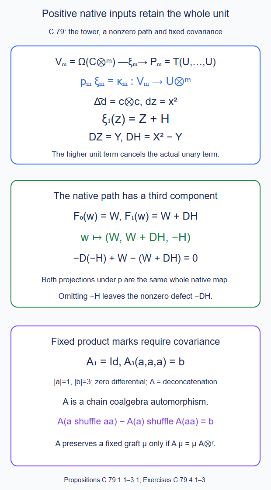
Propositions C.79.1.1–C.79.3.1 prove the positive state tower, the full native projection lift and transport of fixed rational marks. Exercises C.79.4.1–C.79.4.3 compute the nonprimitive unit, a nonzero positive path and a shuffle-covariance counterexample. Editable SVG source.

C.80. Rational native coefficient descent
The full tree presentation, its actual native product and graft comparisons, and the rational coefficient descent are developed in Rational forest coordinates with units and nullary operations. Its Theorems 77–79 use the rational geometric collection and fixed cohomological target of C.48.1, including their actual tensor objects and universal classes.
C.80.1. The rational represented tensor comparison
Let \(\mathcal G_{\mathbf Q}\) be the rational spherical generator enhancement of C.27 and C.48, with finite IC sums as objects and with its specified ordered convolution functors \(F_n^G\). Let \(\mathcal H_{\mathbf Q}\) be its graded cohomology category with zero differential, the fixed rational decomposition maps and the cohomological tensor functors \(F_n^H\). Put \[ P_G(\mathbf x;y)=\operatorname{RHom}_{\mathcal G_{\mathbf Q}}(F_n^G\mathbf x,y), \qquad P_H(\mathbf x;y)=\operatorname{Hom}_{\mathcal H_{\mathbf Q}}(F_n^H\mathbf x,y). \tag{C.80.1} \] The arity-zero representing object is \(IC_0\). Its entire mapping complex, including positive-degree maps, belongs to this collection.
Theorem C.80.1.1. There is a normalized full tree comparison \[ F_{\mathbf Q}:P_G\longrightarrow P_H \tag{C.80.2} \] whose first map is a quasi-isomorphism on every represented profile and induces the fixed cohomology identity. It represents an enhanced strong monoidal equivalence between the finite coherent perfect envelopes of \(\mathcal G_{\mathbf Q}\) and \(\mathcal H_{\mathbf Q}\). For the specified symmetric input diagram, this equivalence is strong symmetric monoidal. Its tensor and unit classes are the actual cohomological ones.
Proof. The actual rational collection and all-profile leading calibration are Proposition 8 of the linked chapter. Its Theorem 9 identifies the full represented fan modules, on every original input and output word, and Theorem 17 retains their entire calibrated comparison. The native unary differential, binary graft and normalized three-vertex source package are Theorems 10–12; the prescribed two-vertex coefficient comparison is Theorem 13.
Theorems 71–76 retain the complete original execution indices, source changes, both endpoint maps, joint graft inputs and all labelled source and painted faces. Theorem 77 supplies one strict boundary row with its entire old comparison. The augmentation there acts only on the additional finite geometric parameter. Original bars, proper identity-valued parameters and ordinary identity outputs remain.
Theorem 78 extends through its exact represented-restriction kernel and evaluates every complete fundamental chain. For a tree with \(q\) vertices, the source and coefficient values have degrees \(2-q\) and \(1-q\), respectively. Full matrix products and genuine grafts precede primitive recovery. Stokes' equation gives the entire coderivation and comparison equations, including all source unary terms and all simultaneous target-block products. This constructs the native source over \(\mathbf Q\) and one calibrated full comparison over \(E\), with the source/comparison bounds \(3/2\) and the full fan packages fixed.
Theorem 79 then gives (C.80.2). Explicitly, rational minimal transfer gives \(I:M\to P_G\), \(J:P_G\to M\), with \(JI=1\). The entire field map \(g_E=\Phi I_E\) has first component \(1_H\). The compatible full unipotent windows of Theorems 1–3 give \(g_{\mathbf Q}:M\to P_H\), and \(F_{\mathbf Q}=g_{\mathbf Q}J\). These windows bound every connected-subtree boundary arity and retain nullaries and identity outputs. The field point remains related to this rational comparison by the full target automorphism \(a=g_E(g_{\mathbf Q}\otimes E)^{-1}\) and the comparison prism of Theorem 79. No rationality of its individual chosen higher coefficients is required.
The full represented recovery theorem, Theorem 4, applies to this whole comparison. For every tuple its tensor constraint is represented by the image of \(1_{F_n^G\mathbf x}\). All higher tree components give its naturality, substitution and unit coherence. At the empty tuple this is the actual identity of \(IC_0\). The first mapping map is a quasi-isomorphism and the generator labels agree, so the unary functor is a quasi-equivalence. C.23.5 and C.27 extend it, with its tensor constraints, to finite cones and coherent retracts. The fixed permutation equations give the stated symmetric compatibility. This proves the theorem. \(\square\)
C.80.2. Arbitrary characteristic-zero coefficients
Corollary C.80.2.1. For every characteristic-zero field \(L\), the actual finite-support \(L\)-coefficient spherical generator envelope has the strong cohomological tensor comparison obtained from (C.80.2) by coefficient extension and coherent idempotent completion. It induces the identity on its fixed graded collection. The symmetric compatibility holds for the specified symmetric diagram.
Proof. The prime-field inclusion gives \(\mathbf Q\to L\). The comparison of actual mapping objects with coefficient extension uses the finite pair models of C.26–C.27. At each group-nerve level they are finite perfect rational complexes. Their duals, evaluation and trace therefore commute with field extension. The uniform lower bound \(L_0\) of C.26.3 is independent of the nerve level. In total degree \(d\), levels greater than \(d+1-L_0\) contribute neither the relevant terms nor their incoming differential. Thus the finite-window totalization proof in C.29.4 compares the entire mapping objects after \(\mathbf Q\to L\). It does not commute tensor product with an unrestricted infinite product.
The ordinary and exceptional IC boundary tests in C.27 are the same finite restriction complexes. Exact field extension preserves them and their rank-one open coefficient, so it sends each rational IC generator to the actual \(L\)-coefficient IC generator. Lesson 11, Theorem 8.3, proves semisimplicity over this original characteristic-zero field: every spherical perverse object is a finite sum of those generators with finite-dimensional \(L\)-coefficients. Finite perverse truncations give every bounded finite-support object. Consequently the coherent perfect envelope after extension is the actual one, not just a fully faithful subcategory of it.
The same finite pair and finite-window argument applies to the ordered wall kernels and the moving configurations of C.27–C.29. It compares their actual proper and tensor operations. Their IC strict extension tests identify the actual geometric fusion components. Extend the entire rational functor and its constraints in (C.80.2) through these coefficient functors. Exact extension preserves all full tree equations, every finite cone and every specified coherent retract. The resulting comparison is therefore strong monoidal on the actual \(L\)-envelope, with the stated unit and symmetric compatibility. \(\square\)
11. Scope and free reading
Sections 2–7 establish the unit self-Ext formula,the invariant-polynomial classifying-space ring,the torus tensor model over characteristic-zero fields,the Koszul endomorphism and generated-category calculations,and the distinction between compact and bounded objects. The examples and exercises retain the specified shifts,coefficient fields and support conditions.
Appendix A develops stabilizer cohomology,equivariant Ext purity,minimal-model transfer,Frobenius formality and spherical generator envelopes. Appendix B treats the polynomial Kostant slice,the universal centralizer,equivariant coherent restriction and composition on free dual polynomial generators. Appendix C.1–C.29 develops the geometric generator mapping comparison,finite-jet and constant-group comparisons,the graded tensor cohomology functor,determinant and primitive cup operators,geometric Kostant modules,and the arithmetic enhanced symmetric monoidal finite-envelope equivalence. Its Betti and trait comparisons retain the full action nerves,trace normalizations and ordered convolution data.
Appendix C.30–C.79 develops the relative descent and coherence tools:directed finite coalgebra windows,common tensor cores,full nested functor graphs,bar-cobar and module contractions,formal unit/execution indices,parameter faces and shuffle domains. Relative represented-action recovery keeps the prescribed pure-state functors and their exact core powers. Whole one-cross restrictions have explicit homotopies to chosen product lifts. Coherent parameter families retain all higher components when normalizing selected product edges. Commuting ordered cut projections identify the actual sums and intersections of product-shuffle domains. On the stated chain submodels,a finite perturbation contracts the full relative Taylor kernel and permits closed comparisons and compatible homotopy primitives to extend globally. Compatible product actions extend by finite curvature correction,and ordered output-root induction gives module models with their prescribed product restrictions. The native central tensor retains every unit output and identity strand;an actual finest-domain comparison extends to transport the entire path differential. The exact common projection square and full represented evaluation construct that finest comparison for the specified native rootwise product families,retaining both actions and all higher source components. The full projection-square homotopy retains four correction terms,and one actual finest primitive suffices to normalize all prescribed compatible ordered cuts. The reverse path projection lifts entire coherent families with exact projection-compatible edges;its canonical return formula retains the original raw comparisons and their kernel homotopies. Full bar-unit mapping restriction preserves the entire transformation cohomology and records the prescribed square for one specified native product family. Relative restriction retains genuine full faces when the corresponding relative transformation class is supplied. A supplied compatible entire common path lifts to native modules with the original first family fixed;its identity-cone correction retains assigned faces and every higher generator. Global locally forward finite root indices support one fixed-profile product normalization whose finite-corner and full-face restrictions agree on their intersections. The full joint-execution grafting domain has its original bar map; complete product shuffles lie in it exactly under the outer-final/inner-initial prerequisite condition. Entire coherent diagrams in a specified dg category admit explicit full-string transport and strictly associative staged model contraction, retaining their path comparisons. Typed kernel cotensors preserve their intermediate frontier cores, and the actual canonical-state projection has an acyclic full Nat kernel for relative coherent operator lifting. Canonical cobar sources admit an actual dg retraction to strict operator objects, and full marked postcomposition carries entire higher model-change diagrams. Actual dg model bridges retain geometric object representatives and give relative fixed-outer-type native operator diagrams without requiring source augmentations. Full marked evaluation gives entire associative horizontal substitution, retaining the mixed cochain homotopy and nonlinear model-change terms. A full-differential relative contraction preserves the complete split source image and yields exact unit comparisons for transport across changing intermediate types. The actual native joint diagram has normalized formal units, retains every positive index label, and carries its supplied full comparison through the model bridges. Normalized unital cobar models retain actual scalar constants and give strict dg operator objects with exact composition and full unit naturality. Their full transformation restriction has an exact section, a contracted kernel and an entire projected horizontal comparison. Full tensor-parameter categories and relative coherent cube extensions retain prescribed compatible boundaries and all original unary and unit data. Their actual binary tensor projection has a finite kernel contraction, and the full shuffle gives a common unital tensor input with the exact counit square. Finite ordered families share exact regrouping and multishuffle squares, with one contraction compatible with all ordered tensor cuts. Entire projected evaluation is preserved under composition, yielding compatible strictly unital native sequential operator cubes with their full parameter restrictions. Full tensor-unit mapping restriction retains all transformation classes and primitives, and its exact tensor squares lift supplied native external comparisons. Positive native input towers and whole projection lifts retain the original native higher cells; fixed rational product and graft marks have their separate covariance equations.
Appendix C.80 and its linked chapter establish the full native source and painted-cell evaluations, the calibrated rational strong monoidal comparison and its extension to arbitrary characteristic-zero coefficient fields. Their shared inputs retain the entire profile-changing execution and external grafting diagrams, all unary and nullary data and every simultaneous target partition. The quantum/loop-rotation,renormalized,singular-support and Ran/factorization equivalences of Section 8 require arguments beyond the results established here.
Free further reading:
-
Luigi Lunardon, Some remarks on Dupont contraction, arXiv:1807.02517, for polynomial simplex forms and simplicial comparisons.
-
Bezrukavnikov–Finkelberg, Equivariant Satake category and Kostant–Whittaker reduction, arXiv:0707.3799v4, Theorem 5 and §6.6.
-
Arinkin–Gaitsgory, Singular support of coherent sheaves, and the geometric Langlands conjecture, arXiv:1201.6343v4, §§12.2–12.5.
-
Campbell–Raskin, Langlands duality on the Beilinson–Drinfeld Grassmannian, arXiv:2310.19734v2, §§5.7, 6.3, 6.6 and 8.10.
-
Gaitsgory–Raskin, Proof of the geometric Langlands conjecture II: Kac–Moody localization and the FLE, arXiv:2405.03648v3, §§1.5–1.8 and Appendix E.
The proofs from earlier programme lessons are linked at the points where they are used. The reading list does not replace any of them.